SECOND EDITION
Astrophysics of Gaseous Nebulae
and Active Galactic Nuclei
Edition and publication details
Authorized second edition
- Title
- Astrophysics of Gaseous Nebulae and Active Galactic Nuclei
- Authors
- Donald E. Osterbrock and Gary J. Ferland
- Edition
- Second edition, 2006
- Publisher
- University Science Books
- ISBN
- 978-1-891389-34-4
- Bibcode
- 2006agna.book.....O
Original publication and cataloguing record
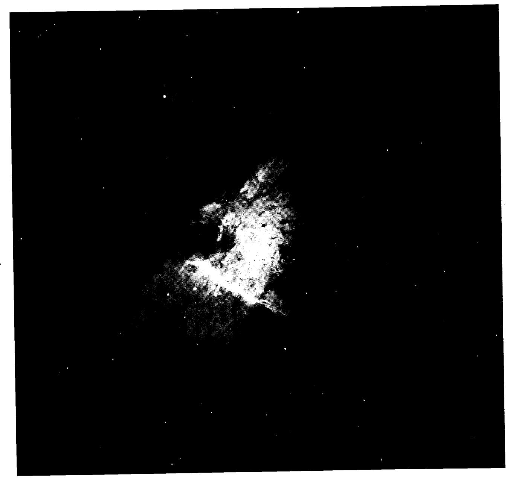
SECOND EDITION
Astrophysics of
Gaseous Nebulae
and Active Galactic
Nuclei
Donald E. Osterbrock
Lick Observatory, University of California, Santa Cruz
Gary J. Ferland
Department of Physics and Astronomy, University of Kentucky
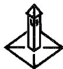
UNIVERSITY SCIENCE BOOKS
Sausalito, California
University Science Books
www.uscibooks.com
Production Manager: Mark Ong
Manuscript Editor: John Murdzek
Designer: Mark Ong
Compositor: Windfall Software, using \text{ZzT}_{\text{E}}\text{X}
Illustrator: Lineworks
Printer & Binder: Maple Vail Book Manufacturing Group
This book is printed on acid-free paper.
Copyright © 2006 by University Science Books
Reproduction or translation of any part of this work beyond that permitted by Section 107 or 108 of the 1976 United States Copyright Act without the permission of the copyright owner is unlawful. Requests for permission or further information should be addressed to the Permissions Department, University Science Books.
Library of Congress Cataloging-in-Publication Data
Osterbrock, Donald E.
Astrophysics of gaseous nebulae and active galactic nuclei.—2nd ed. /
Donald E. Osterbrock, Gary J. Ferland.
p. cm.
ISBN 1-891389-34-3 (alk. paper)
1. Nebulae. 2. Galactic nuclei. 3. Astrophysics. I. Ferland, G. J. II. Title.
QB855.55.O88 2005
523.1'125—dc22
2005042206
Printed in the United States of America
10 9 8 7 6 5 4 3 2 1
Front matter
Contents
Front matter
Preface
This book is a revised, updated, and expanded edition of Astrophysics of Gaseous Nebulae and Active Galactic Nuclei (1989) by one of us (D. E. O.), and that book was based in turn on an earlier volume, Astrophysics of Gaseous Nebulae (W. H. Freeman, 1974) by the same author. Over the 30 years between the publication of that first book and the completion of the manuscript of the present one the subject of ionized-gas astrophysics has grown phenomenally. Astronomers have long studied gaseous nebulae, and the cooler, less intrinsically luminous dust and molecular clouds associated with them, for their intrinsic interest. In addition, stars are almost completely opaque, and it is impossible to observe their interiors directly, or to measure their internal temperatures, pressures, densities, or abundances of the elements within them except by indirect methods. Many nebulae, on the other hand, are relatively transparent, and we can measure these quantities directly.
Since Walter Baade's discovery of the two stellar populations, which turned out to be young stars and old, and the working out of the main nuclear reaction chains that release energy on stars by Hans Bethe, C. F. von Weizsäcker, and others, we have begun to understand the way in which most stars evolve. Much remains to be filled in, both observationally and theoretically, and we have learned how to trace star formation and evolution not only from stars themselves, but from their effect on the gas around them as well. We can estimate or measure the star formation rate not only with nebulae in our Galaxy, but throughout distant galaxies in the universe, from emission lines emitted in nebulae, clouds, associations, and spiral arms in galaxies, and even from entire galaxies.
Interpreting the measurements is not straightforward; the path between is through "nebular astrophysics", as explained in this book. Likewise we can measure abundances of the elements in all these objects with the same basic tools. We can directly observe, in some planetary nebulae and supernova remnants, the changed abundances of the elements that resulted within the stars themselves, leading to slow mass loss, shells thrown off from the star, or thermonuclear reactions at the surfaces of highly evolved stars.
Active galactic nuclei and their close relatives, quasars and other types of quasi-stellar objects, are a field of research only 40 years old, which has grown explosively. Almost all we know about them came from study of their spectra, and especially their emission-line spectra, very similar to but not identical with those of gaseous nebulae. Maarten Schmidt, J. Beverly Oke, and Jesse L. Greenstein's giant leap in understanding the basic nature of 3C 273 and 3C 48 depended on their knowledge of nebular
emission lines, and the subsequent study of all these objects has paralleled the study of gaseous nebulae.
Cosmology has advanced tremendously in the past decade or two, based on the availability of new, very large telescopes, either on high mountains like Keck I and II on Mauna Kea, Hawaii, and the VLT on Paranal, Chile, or in space, like the Hubble Space Telescope, and their fast, digital imaging systems and spectrometers. All the most distant objects we know have been identified and measured by their “nebular” emission lines emitted within them, from H I \text{L}\alpha to [O II] \lambda 3727, [O III] \lambda \lambda 4959, 5007, and H \alpha. How can we be sure it is one of these lines that an astronomer has observed? If it was, what other lines should be seen? If they are not seen, should that purported identification be rejected? If the identification is correct, what physical information (besides redshift and hence distance and look-back time) can be drawn from it? These are some of the questions which nebular astrophysics can help to answer.
In all these subjects, going beyond simply using a formula or canned interpretation from a previously published paper, is a necessity, in our opinion. We have tried to explain and illustrate the methods used, but also to express reasonable doubts about some far-reaching conclusions drawn from minimal data, without examining possible alternative interpretations. In the final chapter of the book we have outlined several questions about active galactic nuclei which shall await full explanations. The methods of the book will be useful in deciding the answers, we feel certain.
The fundamental outline and style of exposition of Astrophysics of Gaseous Nebula and Active Galactic Nuclei , often referred to as (AGN) 2 , has been preserved in this new edition, but we have carefully gone through every chapter, weeding out the old and including many new results, measurements, and ideas. Each chapter was completely rewritten, and then revised several times. Furthermore, since its publication of the first edition, results from two fast-developing observational techniques, infrared astronomy and X-ray astronomy, have multiplied many fold. Hence we not only updated the material in these two fields for this edition, which we call AGN3, but have added much more new material, so it now includes two more chapters, one on each of these topics. In both these chapters, and in the rest of the book as well, we have emphasized the continuity of the physical ideas across the boundaries of “spectral regions” and the importance of observing and analyzing data over as wide a range of wavelengths as possible.
From comments of many recent students and current researchers who are using (AGN) 2 , we are aware that beginning graduate students of astrophysics today generally know much more about applications of quantum mechanics to nuclear physics than the previous generation, but much less about its applications to atomic spectroscopy, so necessary in nebular astrophysics. Hence we have added a completely new appendix on “nebular quantum mechanics”, and also a shorter one on “molecular quantum mechanics” (which neither generation of astrophysics graduate students know very well) to help bring them in to the fold.
Most of the figures are new, based on recent published measurements and interpretations, and on images obtained with the most advanced telescopes and detecting systems of today. We are grateful to many colleagues who gave us permission to use them in AGN3.
All the chapters, after the first five, which deal with basic material, have been reviewed for us by colleagues and friends who are active research experts in the various fields. We are most grateful to the following for their efforts on our behalf, who either contributed material or reviewed chapters: Jack Baldwin, John Bally, Robert Bauman, Mark Bottorff, Eugene Capriotti, John Danziger, Kris Davidson, Reginald Dufour, Robert Fesen, Donald Garnett, William Henney, Richard B. Henry, Luis Ho, Roberta Humphries, George Jacoby, Sveneric Johansson, Steven Kahn, Kirk Korista, Steven Kraemer, Karen Kwitter, Sun Kwok, Xiaowei Liu, John Mathis, Jon Morse, C. Robert O'Dell, Manuel Peimbert, Richard Shaw, Gregory Shields, Joseph Shields, Lewis Snyder, Phillip Stancil, Barry Turner, Sidney van den Bergh, Peter van Hoof, Sylvain Veilleux, Nolan Walborn, Joseph Weingartner, Robin Williams, Robert E. Williams, Mark Wolfire, and Stan Woosley. We also are extremely grateful to Nick Abel who carefully read the entire manuscript. We thank Jeffrey Mallory and John Rickard for help in producing the final manuscript. Any errors which may remain are our responsibility, not theirs.
D. E. O.
G. J. F.
Front matter
Preface to the First Edition
Fifteen years ago I sent to the publisher my book on Astrophysics of Gaseous Nebulae . It was a graduate-level text and research monograph that evidently filled a need, for it soon became widely used and quoted. Over the years since then the book has found increasing use, not only in nebular research, but also in problems connected with quasars, Seyfert galaxies, quasistellar objects, and all the other fascinating types of active galactic nuclei whose emission-line spectra are similar, in general terms, to those of gaseous nebulae. My own research had turned in those directions since I came to Lick Observatory in 1973 and began obtaining data with its superbly instrumented 3-m Shane reflecting telescope, as it now is named.
Hence as AGN (for so my first book is often referred to) gradually became dated, particularly in its tables of observational results and theoretical calculations, it was natural for me to think of revising it, and of extending it to Astrophysics of Gaseous Nebulae and Active Galactic Nuclei at the same time. Many of my friends and colleagues urged me to do so. Thus the present ( AGN ) 2 came about.
Like the earlier AGN , it is both a graduate-level text and an introduction to nebular and AGN research. The first nine chapters are based upon the first nine chapters of the earlier book, but have been heavily revised and updated. The last three chapters are completely new, one on nova and supernova remnants, and the final two chapters on active galactic nuclei. The emphasis is very strongly on the ionized gas in AGNs and the emission-line spectra they emit; their X-ray and radio-frequency radiations are only briefly mentioned.
The book is based upon graduate courses that I have given often at the University of California, Santa Cruz. It represents the material I consider necessary to understand research papers that are now being published in its fields. So much is known today, and so many new results are pouring out, that it is probably impossible to go straight from studying any book to doing frontier research oneself. But I believe that this book will enable the reader to get up to speed, so that he or she will be able to read and understand current research, and then begin to add to it.
The reader for whom ( AGN ) 2 was written is assumed to have a reasonably good preparation in physics, and some knowledge of astronomy and astrophysics. The simplest concepts of radiative transfer are used without explanation, since the reader almost invariably has studied stellar atmospheres before gaseous nebulae and active galactic nuclei. Physical parameters, such as collision cross sections, transition probabilities, and energy levels, are taken as known quantities; no attempt is made to derive them. When I teach this material I usually include some of these derivations, linking them to the quantum-mechanics textbooks with which the students are most
familiar. Omitting this material from the book left room to include more interpretation and results on gaseous nebulae and active galactic nuclei.
References are given at the end of each chapter, in a separate section. They are not inserted in the text, partly so that they will not break up the continuity of the discussions, and partly because the text is a complicated amalgam of many papers, with no obvious single place at which to refer to many of them. Almost all the references are to the American, English, and European astronomical literature, with which I am most familiar; it is also the literature that will be most accessible to the readers of this book.
I would like to express my deep gratitude to my teachers at the University of Chicago, who introduced me to the study of gaseous nebulae: Thornton L. Page, S. Chandrasekhar, W. W. Morgan, and the late Bengt Strömberg. I am also very grateful to my colleagues and mentors at the Mount Wilson and Palomar Observatories, as it was then named, the late Walter Baade and the late Rudolph Minkowski, who encouraged me to apply what I knew of nebular astrophysics to the study of galaxies. I owe much to all these men, and I am grateful to them all for their continued encouragement, support, and stimulation.
I am extremely grateful to my colleagues and friends who read early drafts of various chapters in this book and sent me their suggestions, comments, and criticisms on them: Donald P. Cox, Gary J. Ferland, William G. Mathews, John S. Mathis, Manuel Peimbert, Richard A. Shaw, Gregory A. Shields, Sidney van den Bergh, Robert E. Williams, and Stanford E. Woosley. In addition, my two current graduate students, Richard W. Pogge and Sylvain Veilleux, carefully read the entire manuscript; their comments and corrections greatly improved it, as did those of Dieter Hartmann and Philip A. Pinto, both of whom carefully read the supernova material. I am most grateful to them all.
Though these readers found many misprints and errors, corrected many misstatements, and clarified many obscurities, the ultimate responsibility for the book is mine. I have tried very hard to find and remove all the errors, but some must surely remain, to be discovered only after publication. I can do no better than repeat once again the words of a great physicist, Richard P. Feynman, "Listen to what I mean, not to what I say." If the reader finds an error, I am sorry I did not catch it, but he or she will have proved his or her real understanding of the material, and I shall be very pleased to receive a correction.
I am greatly indebted to Gerri McLellan, who entered on the word processor the first drafts of all the chapters, and all the successive revisions of the manuscript, and to Pat Shand, who made the final editorial revisions and prepared the camera-ready copy for publication. I deeply appreciate the skill, accuracy, and dedication with which they worked on this book. I am also most grateful to my wife, Irene H. Osterbrock, who prepared the index for the book.
My research on gaseous nebulae and active galactic nuclei has been supported over the past fifteen years by the University of California, the John Simon Guggenheim Memorial Foundation, the University of Minnesota, the University of Chicago, the Institute for Advanced Study, the Ohio State University, and especially by the National Science Foundation. I am grateful to all of these organizations for their gen-
erous support. Much of my own research, and of the research of the graduate students and postdocs who have worked and are working with me, has gone into this book; I could never have written it without doing that research myself.
I am especially grateful to my friends George H. Herbig, Paul W. Hodge, Guido Munch, and Robert E. Williams, who provided original photographs included in this book. I am grateful to them and also to Palomar Observatory, Lick Observatory, and the National Optical Astronomy Observatories for permission to use the photographs (which are all credited individually) in this book. Publication of the photographs from NOAO does not imply the endorsement by NOAO, or by any NOAO employee, of this book! Many of the other figures are derived from published papers, and I am grateful to their authors for permission to modify and use their figures in this book.
Lastly, I wish to express my sincere thanks to my friends Bruce Armbruster, president of University Science Books, and Joseph S. Miller, my colleague, former student, and astronomy co-editor with me for USB, both of whom encouraged me time after time to go on with revising AGN and writing the additional new chapters for (AGN) 2 . Bruce was the astronomy editor for W. H. Freeman and Company when I wrote the earlier book, and he helped me greatly with it then, as he has helped me with (AGN) 2 now. It was a great pleasure for me to work with him on both these books. I am also grateful to W. H. Freeman and Company for releasing me from my obligation to them, and allowing me to publish this book with USB.
Donald E. Osterbrock
Chapter 1
General Introduction
1.1 Introduction
Many important topics in astrophysics involve the physics of ionized gases and the interpretation of their emission-line spectra. The subject is fascinating in itself. In addition, H II regions allow us to probe the evolution of the elements and the star-formation history of the far reaches of our own Galaxy, and of distant galaxies. Planetary nebulae let us see the outer remaining envelopes of dying stars. Supernova remnants allow us to observe material from the burned-out deep interiors of exploded, massive stars. Starburst galaxies, quasars, and QSOs are the most luminous objects in the universe, and hence the most distant that we can observe. Spectra can reveal details surrounding the first generations of star birth and the formation of the heavy elements in the young universe. All of these are subjects we shall cover in this book. Further applications, such as the properties of intergalactic material, X-ray flows, and primordial galaxies, though not treated here, are straightforward extensions of the physics that forms the spine of this volume.
1.2 Gaseous Nebulae
Gaseous nebulae are observed as bright extended objects in the sky. Those with the highest surface brightness, such as the Orion Nebula (NGC 1976) or the Ring Nebula (NGC 6720), are easily observed on direct images, or even at the eyepiece of a telescope. Many other nebulae that are intrinsically less luminous or that are more strongly affected by interstellar extinction are faint on ordinary images, but can be imaged on long exposures with filters that isolate a narrow wavelength region around a prominent nebular emission line, so that the background and foreground stellar and sky radiations are suppressed. The largest gaseous nebula in the sky is the Gum Nebula, which has an angular diameter of the order of 30^\circ, while many familiar nebulae have sizes of the order of one degree, ranging down to the smallest objects at the limit of resolution of the largest telescopes. The surface brightness of a nebula is independent of its distance, but more distant nebulae have (on the average) smaller angular size and greater interstellar extinction; so the nearest members of any particular type of nebula tend to be the most-studied objects.
![Figure 1.1. The ultraviolet, optical, and near infrared spectrum of inner regions of the Orion Nebula. A few of the strongest lines are identified in the plot; their wavelengths and those of all the other emission lines, from C III] λλ 1909 to [S III] λλ 9069, 9531 (except the H I and He I lines) may be found in Chapter 3. The flux scale is normalized to the flux in Hβ = 1 . (Original data provided by Reginald Dufour and Jack Baldwin.)](assets/images/figure-1-1.jpg)
Gaseous nebulae have emission-line spectra. Their spectra are dominated by forbidden lines of ions of common elements, such as [O III] \lambda\lambda 4959, 5007, the famous green nebular lines once thought to indicate the presence of the hypothetical element nebulium; [N II] \lambda\lambda 6548, 6583 and [S III] \lambda\lambda 9069, 9523 in the red; and [O II] \lambda\lambda 3726, 3729, the ultraviolet doublet which appears as a blended \lambda 3727 line on low-dispersion spectrograms of almost every nebula (Figure 1.1). In addition, the permitted lines of hydrogen, H\alpha\ \lambda 6563 in the red, H\beta\ \lambda 4861 in the blue, H\gamma\ \lambda 4340 in the violet, and so on, are characteristic features of every nebular spectrum, as is He I \lambda 5876, which is considerably weaker, while He II \lambda 4686 occurs only in higher-ionization nebulae. Long-exposure spectrophotometric observations extending to faint intensities, show progressively weaker forbidden lines, as well as faint permitted lines of common elements, such as C II, C III, C IV, O II, and so on. Nebular emission-line spectra, of course, extend into the infrared, where [Ne II] \lambda 12.8\ \mu\text{m} and [O III] \lambda 88.4\ \mu\text{m} are among the strongest lines measured, and into the ultraviolet, where Mg II \lambda\lambda 2796, 2803, C III] \lambda\lambda 1907, 1909, C IV \lambda\lambda 1548, 1551, and even L\alpha\ \lambda 1216 are also observed. It is seldom possible to observe all important stages of ionization in a particular spectral region. In these cases one must model the physical system or obtain spectra
outside of the traditional visible/near-IR bands to get an accurate picture of the system in question.
Gaseous nebulae have weak continuous spectra, consisting of atomic and reflection components. The atomic continuum is emitted chiefly by free-bound transitions, mainly in the Paschen continuum of H I at \lambda > 3646 \text{ \AA}, and the Balmer continuum at 912 \text{ \AA} < \lambda < 3646 \text{ \AA}. In addition, many nebulae have reflection continua consisting of starlight scattered by dust. The amount of dust varies from nebula to nebula, and the strength of this continuum fluctuates correspondingly. In the infrared, the nebular continuum is largely thermal radiation emitted by the dust.
In the radio-frequency region, emission nebulae have a reasonably strong continuous spectrum, mostly due to free-free emission or bremsstrahlung of thermal electrons accelerated on Coulomb collisions with protons. Superimposed on this continuum are weak emission lines of H, such as 109\alpha at \lambda = 6 \text{ cm}, resulting from bound-bound transitions between very high levels of H. Weaker radio recombination lines of He and still weaker lines of other elements can also be observed in the radio region, slightly shifted from the H lines by the isotope effect. In the infrared spectral region most nebulae have strong continuous spectra, emitted by heated dust particles within them. These emission continua have bands, some identified as resulting from silicate or graphite in the particles, others still not positively identified.
1.3 Observational Material
Nebulae emit a broad range of “light”, by which we mean the full range of electromagnetic radiation, although only a few wavelengths pass easily through the Earth’s atmosphere. Figure 1.2 shows the altitude above which atmospheric attenuation (“absorption”) is negligible. Visible light, and some infrared and radio radiation, can be studied from the ground, but most other wavelength regions can only be observed from high-altitude aircraft, balloons, or orbit.
The resolution that can be achieved is limited by the telescope and the detector, and also by the refractive effects of the air. Spatial resolution is measured by the apparent diameter of a point source, usually expressed in arcsec. It is influenced by the aperture of the telescope, the number of resolution elements per unit area on the detector, and “seeing”, the blurring of an image caused by refraction of light in the Earth’s atmosphere. Spectroscopic resolution specifies the smallest wavelength or energy interval that can be discerned, and is usually measured in the most convenient units for a particular form of light. The angstrom unit is commonly used for the wavelength resolution \delta\lambda in visible light. Resolution has the disadvantage that while 1 \text{ \AA} resolution is very low resolution for \lambda \approx 5 \text{ \AA} X-rays, it is very high resolution for infrared wavelengths near 10,000 \text{ \AA}. The resolving power, the ratio \lambda/\delta\lambda, is more convenient for many purposes. It is inversely proportional to the radial-velocity resolution \delta u since \lambda/\delta\lambda = c/\delta u for the Doppler effect. Resolving powers of 10^3 – 10^4 correspond to radial-velocity resolutions of 30 – 300 \text{ km s}^{-1}. Typically, a radial velocity can be measured with an accuracy that is roughly a tenth of the velocity resolution, for lines that have symmetric profiles.
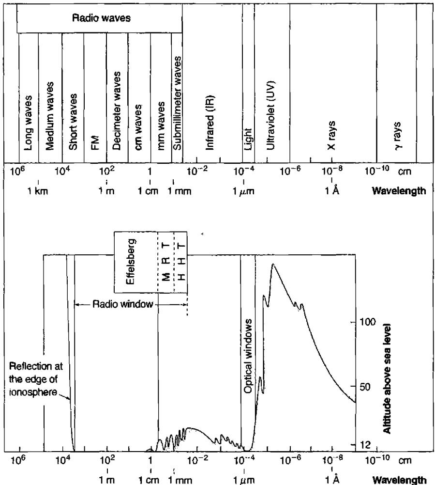
Figure based on http://www.mpifr-bonn.mpg.de/div/hhertz/general_info4.html
The following paragraphs outline observational aspects of various regions of the electromagnetic spectrum.
1.3.1 Ground Based Optical
Investigations in the optical spectral region have a long and rich history. Modern telescopes must be large to be competitive, since light gathering power is proportional
to the area of the primary mirror. Consortia of universities or countries have built most of today's new research facilities. The leading examples, with 8-m or larger telescopes, include at present the Keck Observatory, the United States' National Optical Astronomy Observatories (NOAO), and the European Southern Observatory (ESO).
Spectroscopic resolving powers up to 10^5 can often be achieved on moderately bright sources, and \sim 10^3 on faint ones. Spatial resolution is limited to just under 1'' by atmospheric seeing . It can be partly overcome by adaptive optics, in which the optical surfaces of the telescope move to compensate for atmospheric distortions, but to date it has only been completely removed by observations from space.
Optical emission from nebulae include emission lines from warm ionized gas, and continua produced either by atomic processes in the nebula or by scattering of light from the photospheres of stars within it. Absorption lines are produced in the spectra of background stars or nebulae by ions or atoms of interstellar matter (ISM).
1.3.2 Ultraviolet
The vacuum ultraviolet (912\text{\AA} < \lambda < 3000\text{\AA}) can only be observed from space. Initially this spectral region was observed from high-altitude balloons and sounding rockets; today from long-lived orbital missions. The early successes of the Orbiting Astronomical Observatories (OAO) spacecraft, and the International Ultraviolet Explorer (IUE) were followed by the Far Ultraviolet Spectroscopic Explorer (FUSE) and the Hubble Space Telescope (HST). HST may be able to operate through much of the decade 2000–2010 with more modest ultraviolet missions expected to follow it. HST is also highly competitive in the optical region because of the freedom from seeing , despite its modest aperture. Spatial resolution of 0.1'' can be achieved routinely, and spectroscopic resolving powers similar to ground-based detectors (up to 10^5, but more typically 10^3 – 10^4) are possible.
Emission lines in the vacuum ultraviolet generally originate in higher-ionization species than the optical, and are produced in warm ionized gas. Interstellar matter (ISM) absorption lines from a broad range of species can also be found. Hotter stars and atomic processes in the emitting gas generally produce the continuum.
1.3.3 X-ray
X-rays have photon energies between 0.1 keV and 10 keV, corresponding to wavelengths between 100\text{\AA} and \sim 1\text{\AA}. (The region between the short-wavelength limit of the vacuum ultraviolet, 912\text{\AA}, and the long-wavelength limit of X-rays, 25\text{\AA}, is heavily absorbed by the ISM and hence is nearly unobservable.) Early observations were made from sounding rockets, but long-lived orbital missions, such as Uhuru , Einstein , ROSAT , ASCA , and at this writing Chandra and XMM , have had the greatest impact. Early missions were limited by the technology available then, and used small grazing incidence telescopes and proportional counting detectors. For instance, Einstein had two imagers, the Imaging Proportional Counter with 1' resolution and a High Resolution Imager with 3'' resolution. The spectral resolving power of the HRI was between 10–50. The current missions have, for the first time, achieved resolutions similar to optical observations.
X-ray continuum sources are either very hot material, radiating thermal spectra, or very energy-rich material, radiating by non-thermal processes such as synchrotron emission. They are often coronae of “normal” stars or accreting material very near a collapsed object in AGN, cataclysmic binaries, or pulsars. Emission lines are often produced by atomic processes involving inner shells of heavy-element ions, and can come from a wide range of ionization.
1.3.4 Infrared
The infrared spectral region covers wavelengths between 1\ \mu\text{m} and several hundred microns, although there is no agreed boundary between the far infrared and the sub-millimeter radio. Some wavelengths can be observed from the ground or from aircraft (Figure 1.2), while other wavelengths require high-altitude balloons or orbiting spacecraft. KAO, IRAS, and ISO were among the most prominent airborne and orbital missions. The lifetime of orbiting IR missions has been limited by the need to cool parts of the telescope and detectors cryogenically to very low temperatures, to minimize thermal emission. The resolution has been limited by technology to \sim 1' and a resolving power between 10 and 1000. The infrared is the spectral region in which, with SOFIA, the Spitzer Space Telescope, and the James Webb Space Telescope, the greatest technical advances will take place over the next several years.
Cool thermal emission from grains, atomic processes in nebulae, and photospheres of cooler stars are efficient sources of IR continua. Emission lines from ions and atoms with a wide range of ionization potentials are observed, along with molecular rotational and vibrational transitions. Infrared light can penetrate through dusty regions more easily than optical light, making it possible to use the IR to detect otherwise heavily obscured objects.
1.3.5 Radio
Many radio wavelengths can be studied from the ground; such investigations date back to the mid-twentieth century. Very long waves are reflected by the Earth's ionosphere and can only be detected from orbit (Figure 1.2), while other radio waves are absorbed by water vapor in the atmosphere and can only be studied from dry mountain-top sites, such as the Atacama Large Millimeter Array (ALMA). Radio telescopes are often interferometers because the long wavelengths result in very poor diffraction limits for single-dish telescopes. The spectroscopic and spatial resolutions that are possible in the radio region are the very best; spatial resolutions of 10^{-3''} and resolving powers of over 10^5 are relatively routine.
1.3.6 Returned Data
In nearly all types of observing, digital data is returned from the telescope. Most observatories have software reduction packages specifically designed to handle data from their instrument. The final product may be an image or the emission-line fluxes or measures of the continuum at selected energies. Most missions produce large data archives that form a rich data set. These archives are now so extensive that many pilot projects can be carried out solely using them. Although the biggest discoveries will
come from new observations, archival research is usually the first step in starting a large research program.
1.4 Physical Ideas
The source of energy that enables emission nebulae to radiate is, almost always, ultraviolet radiation from stars within or near the nebula. There are one or more hot stars, with effective surface temperature T_* \geq 3 \times 10^4 K, near or in almost every nebula; and the ultraviolet photons these stars emit transfer energy to the nebula by photoionization. In nebulae and in practically all astronomical objects, H is by far the most abundant element, and photoionization of H is thus the main energy-input mechanism. Photons with energy greater than 13.6 eV, the ionization potential of H, are absorbed in this process, and the excess energy of each absorbed photon over the ionization potential appears as kinetic energy of a newly liberated photoelectron. Collisions between electrons, and between electrons and ions, distribute this energy and maintain a Maxwellian velocity distribution with temperature T in the range 5,000 \text{ K} < T < 20,000 \text{ K} in typical nebulae. Collisions between thermal electrons and ions excite the low-lying energy levels of the ions. Downward radiation transitions from these excited levels have very small transition probabilities, but at the low densities (n_e \leq 10^4 \text{ cm}^{-3}) of typical nebulae, collisional deexcitation is even less probable; so almost every excitation leads to emission of a photon, and the nebula thus emits a forbidden-line spectrum that is quite difficult to excite under terrestrial laboratory conditions.
Thermal electrons are recaptured by the ions, and the degree of ionization at each point in the nebula is fixed by the equilibrium between photoionization and recapture. In nebulae in which the central star has an especially high temperature, T_*, the radiation field has a correspondingly high number of high-energy photons, and the nebular ionization is therefore high. In such nebulae collisionally excited lines up to [Ne V] and [Fe VII] may be observed, but the high ionization results from the high energy of the photons emitted by the star, and does not necessarily indicate a high nebular temperature T, defined by the kinetic energy of the free electrons.
In the recombination process, recaptures occur to excited levels, and the excited atoms thus formed then decay to lower and lower levels by radiative transitions, eventually ending in the ground level. In this process, line photons are emitted, and this is the origin of the H I Balmer- and Paschen-line spectra observed in all gaseous nebulae. Note that the recombination of \text{H}^+ gives rise to excited atoms of \text{H}^0 and thus leads to the emission of the H I spectrum. Likewise, \text{He}^+ recombines and emits the He I spectrum, and in the most highly ionized regions, \text{He}^{++} recombines and emits the He II spectrum, the strongest line in the ordinary observed region being \lambda 4686. Much weaker recombination lines of C II, C III, C IV, and so on, are also emitted; however, the main excitation process responsible for the observed strengths of such lines with the same spin or multiplicity as the ground term is resonance fluorescence by photons, which is much less effective for H and He lines because the resonance lines of these more abundant elements have greater optical depth.
In addition to the bright-line and continuous spectra emitted by atomic processes, many nebulae also have an infrared continuous spectrum emitted by dust particles heated to a temperature of order 100 K by radiation derived originally from the central star.
Gaseous nebulae may be classified into two main types, diffuse nebulae or H II regions, and planetary nebulae. Though the physical processes in both types are quite similar, the two groups differ greatly in origin, mass, evolution, and age of typical members; so for some purposes it is convenient to discuss them separately. Nova shells are rare but interesting objects: tiny, rapidly expanding, cool photoionized nebulae. Supernova remnants, an even rarer class of objects, differ greatly from both diffuse and planetary nebulae. We will briefly examine each of these types of object, and then discuss Seyfert galaxies and other active galactic nuclei, in which much the same physical processes occur, although with differences in detail because considerably higher-energy photons are involved.
1.5 Diffuse Nebulae
Diffuse nebulae or H II regions are regions of interstellar gas (Figure 1.3) in which the exciting star or stars are O- or early B-type stars. Figure 1.3 is an example. They are young stars, which use up their nuclear energy quickly. Often there are several exciting stars, a multiple star, or a galactic cluster whose hottest two or three stars are the main sources of ionizing radiation. These hot, luminous stars undoubtedly formed fairly recently from interstellar matter that would otherwise be part of the same nebula they now ionize and thus illuminate. The effective temperatures of the stars are in the range 3 \times 10^4 \text{ K} < T_* < 5 \times 10^4 \text{ K}; throughout the nebula, H is ionized, He is singly ionized, and other elements are mostly singly or doubly ionized. Typical densities in the ionized part of the nebula are of order 10 or 10^2 \text{ cm}^{-3}, ranging to as high as 10^4 \text{ cm}^{-3}, although undoubtedly small denser regions exist close to or even below the limit of resolvability. In many nebulae dense neutral condensations are scattered throughout the ionized volume. Internal motions occur in the gas with velocities of order 10 \text{ km s}^{-1}, approximately the isothermal sound speed. Bright rims, knots, condensations, and so on, are apparent to the limit of resolution. The hot, ionized gas tends to expand into the cooler surrounding neutral gas, thus decreasing the density within the nebula and increasing the ionized volume. The outer edge of the nebula is surrounded by ionization fronts running out into the neutral gas.
The spectra of these “H II regions,” as they are often called (because they contain mostly \text{H}^+), are strong in H I recombination lines and [N II] and [O II] collisionally excited lines, but the strengths of [O III] and [N II] lines may differ greatly, being stronger in the nebulae with higher central-star temperatures.
These H II regions are observed not only in our Galaxy but also in other nearby galaxies. The brightest H II regions can easily be seen on almost any large-scale images, but those taken in a narrow wavelength band in the red, including \text{H}\alpha and the [N II] lines, are especially effective in showing faint and often heavily
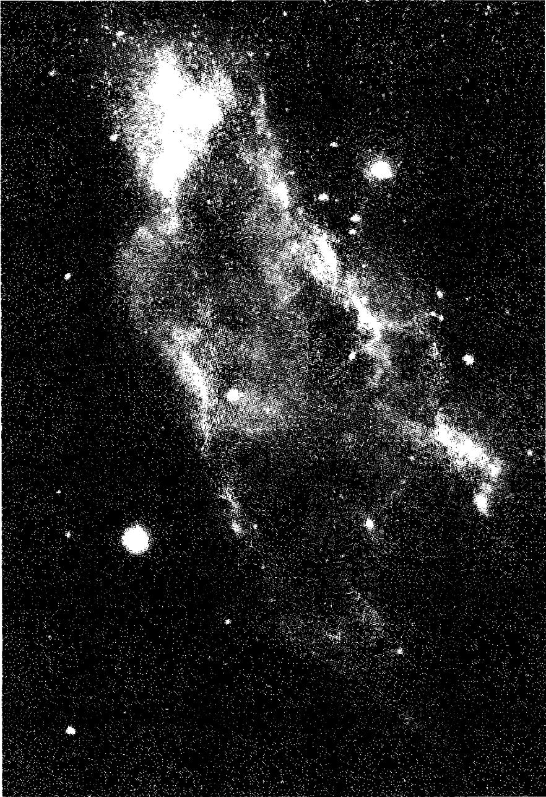
reddened H II regions in other galaxies. The H II regions are strongly concentrated to the spiral arms, and indeed are the best objects for tracing the structure of spiral arms in distant galaxies. Radial-velocity measurements of H II regions then give information on the kinematics of Population I (young) objects in our own and other galaxies. Typical masses of observed H II regions are of order 10^2 to 10^4 M_\odot, with the lower limit depending largely on the sensitivity of the observational method used.
1.6 Planetary Nebulae
Planetary nebulae are isolated nebulae, often (but not always) possessing a fair degree of bilateral symmetry, that are actually shells of gas that have been lost in the fairly recent past by their central stars (Figure 1.4). The name “planetary” is purely historical and refers to the fact that some of the bright planetaries appear as small, disk-like, greenish objects in small telescopes. The central stars of planetary nebulae are old stars, typically with T_\star \approx 5 \times 10^4 K, even hotter than galactic O stars, and often less luminous (M_V = -3 to +5). The stars are in fact rapidly evolving toward the white-dwarf stage, and the shells are expanding with velocities of order of several times the velocity of sound (25 \text{ km s}^{-1} is a typical expansion velocity). However, because they are decreasing in density, their emission is decreasing, and on a cosmic time scale they rapidly become unobservable, with mean lifetimes as planetary nebulae of a few times 10^4 years.
As a consequence of the higher stellar temperatures of their exciting stars, typical planetary nebulae are generally more highly ionized than H II regions, often including large amounts of \text{He}^{++}. Their spectra thus include not only the H I and He I recombination lines, but often also the He II lines; the collisionally excited lines of [O III] and [Ne III] are characteristically stronger in their spectra than those in diffuse nebulae, and [Ne V] is often strong. There is a wide range in the temperatures of planetary-nebula central stars, however, and the lower-ionization planetaries have spectra that are quite similar to those of H II regions.
The space distribution and kinematic properties of planetary nebulae indicate that, on the cosmic time scale, they are fairly old objects, usually called old Disk Population or old Population I objects. This indicates that the bulk of the planetaries we now see, though relatively young as planetary nebulae, are actually near-terminal stages in the evolution of quite old stars.
Typical densities in observed planetary nebulae range from 10^4 \text{ cm}^{-3} down to 10^2 \text{ cm}^{-3}, and typical masses are of order 0.1 M_\odot to 1.0 M_\odot. Many planetaries have been observed in other nearby galaxies, especially the Magellanic Clouds and M 31, but their luminosities are so much smaller than the luminosities of the brightest H II regions that they are more difficult to study in great detail. However, spectroscopic measurements of these planetaries give good information on velocities, abundances of the elements, and stellar evolution in these galaxies, and HST images show that they have forms quite similar to those of planetary nebulae in our Galaxy.
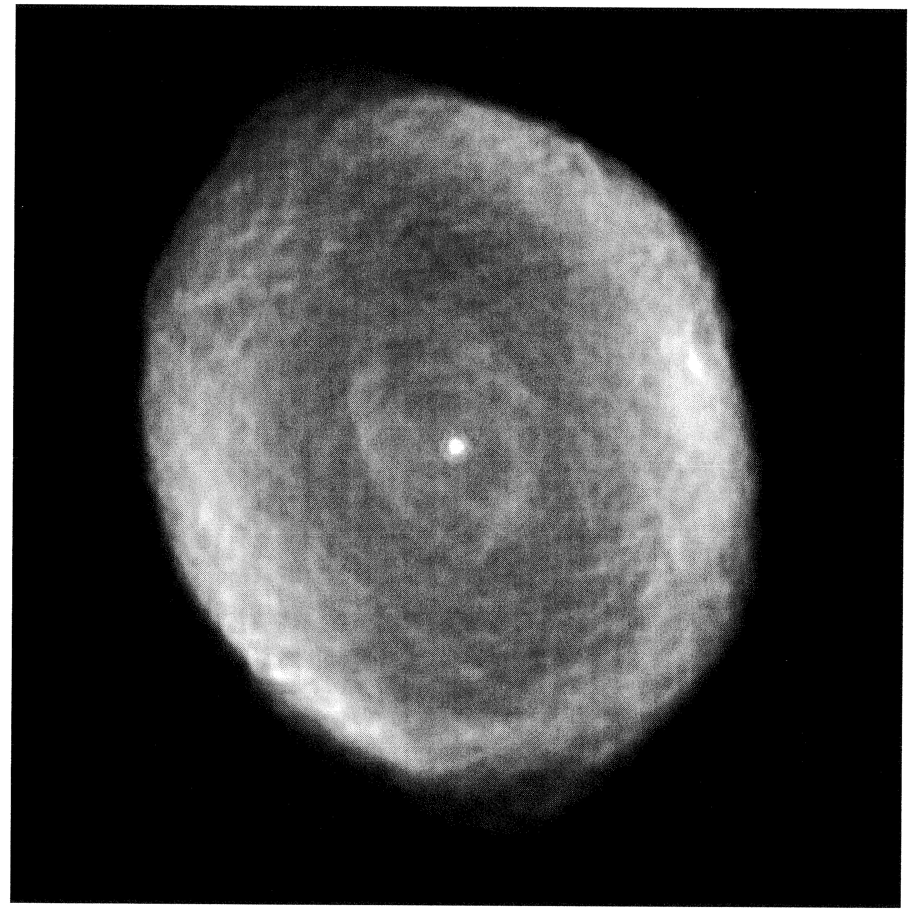
1.7 Nova and Supernova Remnants
Many recent novae are surrounded by small, faint shells with emission-line spectra. As we shall see, they are tiny photoionized nebulae. A few emission nebulae are known to be supernova remnants. The Crab Nebula (NGC 1952), the remnant of the supernova of A.D. 1054, is the best known example, and small bits of scattered nebulosity are the observable remnants of the much more heavily reddened objects, Tycho's supernova of 1572 and Kepler's supernova of 1604. All three of these supernova remnants have strong non-thermal radio spectra, and several other filamentary nebulae with appearances quite unlike typical diffuse or planetary
nebulae have been identified as older supernova remnants by the fact that they have similar non-thermal radio spectra. Two of the best known examples are the Cygnus Loop (NGC 6960–6992–6995) and IC 443. In the Crab Nebula, the non-thermal synchrotron spectrum observed in the radio-frequency region extends into the optical region, and extrapolation to the ultraviolet region indicates that this synchrotron radiation is probably the source of the photons that ionize the nebula. However, in the other supernova remnants no photoionization source is seen, and much of the energy is instead provided by the conversion of kinetic energy of motion into heat. In other words, the fast-moving filaments collide with ambient interstellar gas, and the energy thus released provides ionization and thermal energy, which later is partly radiated as recombination- and collisional-line radiation. Thus these supernova remnants are objects in which collisional ionization occurs, rather than photoionization. However, note that in all the nebulae, collisional excitation is caused by the thermal electrons that are energized either by photoionization or by collisional ionization.
1.8 Active Galactic Nuclei
Many galaxies, in addition to having H II regions and planetary nebulae, show characteristic nebular emission lines in the spectra of their nuclei. In most of these objects, the gas is evidently photoionized by hot stars in the nucleus, which is thus much like a giant H II region, or perhaps a cluster of many H II regions. The galactic nuclei with the strongest emission lines of this type are often called “extragalactic H II regions”, “star-forming regions”, or “starburst galaxies.” Besides these objects, however, a small fraction of spiral galaxies have ionized gas in their nuclei that emits an emission-line spectrum with a wider range of ionization than any H II region. Usually the emission-line profiles show a significantly greater range of velocities than in starburst galaxies. These galaxies, totaling a few percent of all spiral galaxies, are called Seyfert galaxies. Many of the most luminous radio galaxies, typically N, cD, D, or E galaxies in form, have nuclei with very similar emission-line spectra. Quasars (quasistellar radio sources) and QSOs (quasistellar objects) are radio-loud and radio-quiet analogues of radio galaxies and Seyfert galaxies; they have similar optical spectra and even greater optical luminosities, but are much rarer in space. All these objects together are called active galactic nuclei. Among them are the most luminous objects in the universe, quasars and QSOs with redshifts up to z \approx 6, corresponding to recession velocities of more than 0.9c.
Much if not all of the ionized gas in active galactic nuclei appears to be photoionized. However, the source of the ionizing radiation is not a hot star or stars. Instead, it is probably an extension to high energies of the blue “featureless continuum” observed in these objects in the optical spectral region. This is probably emitted by an accretion disk around a black hole, or by relativistic particles and perhaps a magnetic field associated with the immediate environs of the black hole. The spectrum of the ionizing radiation, whatever its source, certainly extends to much higher energies
than the spectra of the hot stars that ionize H II regions and planetary nebulae. Also, the particle and energy densities are much larger in some ionized regions in active galactic nuclei than in nebulae.
1.9 Star Formation in Galaxies
Newly born stars “appear” in or near the interstellar matter from which they and their neighbors formed. Generally, when stars are formed under conditions we can observe in other galaxies, they do so in large numbers and some of them are O and B stars. These hot stars immediately begin photoionizing the residual ISM around themselves, creating large emission-line diffuse nebulae or huge regions of nebulosity. Thus we observe many star-forming regions (in nearby galaxies), or star-forming galaxies (more distant objects). The galaxies with the strongest nebular emission lines (such as H \beta or H \alpha or P \alpha or Br \alpha) are called starburst galaxies, as unusually large numbers of stars are being formed within them within a short time interval.
The first survey of the infrared (5–500 \mu\text{m}) sky by the Infrared Astronomical Satellite (IRAS) discovered a class of galaxies that emit more energy in the infrared than in all the other pass bands combined. Previous optical surveys of galaxies had deduced a “luminosity function” , a description of the fraction of that population that has various luminosities. From low to high luminosities, the range went from dwarf irregular galaxies like the Magellanic Clouds, to normal spiral galaxies like the Milky Way, to Seyfert galaxies (mostly early-type or distorted spirals), giant ellipticals, and quasars, which have the greatest luminosities we know. Among the spirals are many star-forming galaxies and fewer starburst ones. All of these sources radiate most of their energy in the optical passband. The infrared luminous sources discovered by IRAS were too faint to be included in optical surveys but are among the most luminous infrared sources in the sky. When these are included, it appears that most of the very most luminous galaxies (L > 10^{11} L_{\odot}) emit the majority of their luminosity in the infrared.
These infrared luminous galaxies are among the most luminous starburst galaxies. The infrared continuum that carries most of their luminosity is emitted by interstellar dust heated to 30–60 K by hot stars and by the emission lines they produce in the gas, creating a peak in the energy distribution near 60 \mu\text{m}. The underlying source of the great luminosity is a “super starburst”, in which a large fraction of a galaxy’s mass is involved in vigorous star formation. Interstellar dust then absorbs the energy emitted by the hot stars, which is eventually reradiated in the infrared. The observations can be understood if a very large fraction of a galaxy’s mass, \sim 10^{10} M_{\odot}, is quickly converted into stars in a dusty environment.
The starburst phenomenon is thought to be the result of interactions and mergers of gas-rich spirals. The host galaxies tend to show signs of interacting with other galaxies or of being an otherwise disturbed system. During such galactic collisions some of the gas in the ISM loses its angular momentum and quickly falls towards the merger nuclei. Models suggest that as much as 10^{10} M_{\odot} of gas and dust can build up
within a few hundred parsecs of the center, resulting in vigorous star formation. Most of this star formation occurs in regions that are heavily obscured by dust, so many parts of the system can only be observed directly in the infrared. For this reason it is necessary to develop emission line diagnostics that use only infrared lines, the subject of a later chapter.
The basic physical principles that govern the structures and emitted spectra of active galactic nuclei are largely the same as those that apply in H II regions and planetary nebulae. However, because of the large proportion of high-energy photons in the ionizing flux, some new physical processes become important in active galactic nuclei, and these cause their structures to differ in important details from those of classical nebulae. These differences can best be analyzed after H II regions and planetary nebulae are well understood. Hence we treat nova shells, supernova remnants, and active galactic nuclei in the final chapters of this book.
References
General reviews on astronomical research are found in a variety of places. Three of the best series are
Annual Reviews of Astronomy and Astrophysics, by Annual Reviews Inc. These come out once per year and feature articles on a variety of research topics.
Astronomical Society of the Pacific Conference Series, by the Astronomical Society of the Pacific. Each book of this series summarizes a specialist conference on a chosen topic, many of them organized by the International Astronomical Union. The articles are a mix of longer reviews and shorter research summaries.
The Saas Fe Conference Series. These are the proceedings from summer schools held each year. Each book is on a chosen topic and features a few longer articles.
A brief historical sketch of the development of nebular astrophysics is contained in an article on “pioneer nebular theorists” (which also includes some of the main observational results on which they built):
Osterbrock, D. E. 2001, Revista Mexicana de Astronomia, Serie d. Conferencias , 12, 1 (in English).
The following are on-line data bases of astronomical sources. At this time most archives are limited to space-based data, but archives of ground-based are being developed. The main archives at the time of this writing are
ADS, the NASA Astrophysics Data System, has links to much of the published astronomical literature. http://adsabs.harvard.edu/
HEASARC, the High Energy Astrophysics Science Archive Research Center, is “a source of gamma-ray, X-ray, and extreme ultraviolet observations of cosmic (non-solar) sources”. http://heasarc.gsfc.nasa.gov/
SIMBAD, a database operated at CDS, France. This “brings together basic data, cross-identifications, observational measurements, and bibliography, for celestial objects outside the solar system: stars, galaxies, and non-stellar objects within our galaxy, or in external galaxies”. http://cdsweb.u-strasbg.fr/Simbad.html
The Hubble Data Archive provides access to data obtained with the Hubble Space Telescope. http://archive.stsci.edu/
MAST, the Multi-mission Archive at STScI, provides access to data from a variety of missions ranging from the extreme UV through near IR. http://archive.stsci.edu/mast.html
IPAC, the Infrared Processing and Analysis Center, has access to NASA's infrared program. http://www.ipac.caltech.edu/
NED, the NASA/IPAC Extragalactic Database at JPL, can be searched by object name, type of data, literature, or tools. http://nedwww.ipac.caltech.edu/
Additionally, meta-archives, collections of links to individual archives, are being developed. A good one is
Canadian Astronomy Data Centre, at http://cadwww.hia.nrc.ca/
The following gives an overview of various ways to find information in these databases:
Skiff, Brian A. 2002, Sky & Telescope , 103, 50.
Chapter 2
Photoionization Equilibrium
2.1 Introduction
Emission nebulae result from the photoionization of a diffuse gas cloud by ultraviolet photons from a hot “exciting” star or from a cluster of exciting stars. The ionization equilibrium at each point in the nebula is fixed by the balance between photoionizations and recombinations of electrons with the ions. Since hydrogen is the most abundant element, we can get a first idealized approximation to the structure of a nebula by considering a pure H cloud surrounding a single hot star. The ionization equilibrium equation is:
\begin{aligned} n(\text{H}^0) \int_{\nu_0}^{\infty} \frac{4\pi J_{\nu}}{h\nu} a_{\nu}(\text{H}^0) d\nu &= n(\text{H}^0) \int_{\nu_0}^{\infty} \phi_{\nu} a_{\nu}(\text{H}^0) d\nu = n(\text{H}^0) \Gamma(\text{H}^0) \\ &= n_e n_p \alpha(\text{H}^0, T) [\text{cm}^{-3} \text{ s}^{-1}] \end{aligned} \quad (2.1)
where J_{\nu} is the mean intensity of radiation (in energy units per unit area, per unit time, per unit solid angle, per unit frequency interval) at the point. Thus \phi_{\nu} = 4\pi J_{\nu}/h\nu is the number of incident photons per unit area, per unit time, per unit frequency interval, and a_{\nu}(\text{H}^0) is the ionization cross section for H by photons with energy h\nu (above the threshold h\nu_0); the integral [denoted by \Gamma(\text{H}^0)] therefore represents the number of photoionizations per H atom per unit time. The neutral atom, electron, and proton densities per unit volume are n(\text{H}^0), n_e, and n_p, and \alpha(\text{H}^0, T) is the recombination coefficient; so the right-hand side of the equation gives the number of recombinations per unit volume per unit time.
To a first approximation, the mean intensity J_{\nu} [see Appendix 1 for definitions of it and other observed (or measured) quantities connected with radiation] is simply the radiation emitted by the star reduced by the inverse-square effect of geometrical dilution. Thus
4\pi J_{\nu} = \frac{R^2}{r^2} \pi F_{\nu}(0) = \frac{L_{\nu}}{4\pi r^2} [\text{erg cm}^{-2} \text{ s}^{-1} \text{ Hz}^{-1}], \quad (2.2)
where R is the radius of the star, \pi F_\nu(0) is the flux at the surface of the star, r is the distance from the star to the point in question, and L_\nu is the luminosity of the star per unit frequency interval.
At a typical point in a nebula, the ultraviolet radiation field is so intense that the H is almost completely ionized. Consider, for example, a point in an H II region, with density 10 H atoms and ions per \text{cm}^3, 5 pc from a central O7.5 star with T_* = 39,700 K. We will examine the numerical values of all the other variables later, but for the moment, we can adopt the following very rough values:
Q(\text{H}^0) = \int_{\nu_0}^{\infty} \frac{L_\nu}{h\nu} d\nu \approx 1 \times 10^{49} \text{ [photons s}^{-1}\text{]};
a_\nu(\text{H}^0) \approx 6 \times 10^{-18} \text{ [cm}^2\text{]};
\int_{\nu_0}^{\infty} \frac{4\pi J_\nu}{h\nu} a_\nu(\text{H}^0) d\nu \approx 1 \times 10^{-8} = \tau_{ph}^{-1} \text{ [s}^{-1}\text{]};
\alpha(\text{H}^0, T) \approx 4 \times 10^{-13} \text{ [cm}^3 \text{ s}^{-1}\text{]}
where \tau_{ph} is the lifetime of the atom before photoionization. Substituting these values and taking \xi as the fraction of neutral H, that is, n_e = n_p = (1 - \xi)n(\text{H}) and n(\text{H}^0) = \xi n(\text{H}), where n(\text{H}) = 10 \text{ cm}^{-3} is the density of H, we find \xi \approx 4 \times 10^{-4}; that is, H is very nearly completely ionized.
On the other hand, a finite source of ultraviolet photons cannot ionize an infinite volume, and therefore, if the star is in a sufficiently large gas cloud, there must be an outer edge to the ionized material. The thickness of this transition zone between ionized and neutral gas, since it is due to absorption, is approximately one mean free path of an ionizing photon \{l \approx [n(\text{H}^0) \alpha_\nu]^{-1} \text{ cm}\}. Using the same parameters as before, and taking \xi = 0.5, we find the thickness
d \approx \frac{1}{n(\text{H}^0) \alpha_\nu} \approx 0.1 \text{ pc},
or much smaller than the radius of the ionized nebula. Thus we have the picture of a nearly completely ionized “Strömgren sphere” or H II region, separated by a thin transition region from an outer neutral gas cloud or H I region. In the rest of this chapter we will explore this ionization structure in detail.
First we will examine the photoionization cross section and the recombination coefficients for H, and then use this information to calculate the structure of hypothetical pure H regions. Next we will consider the photoionization cross section and recombination coefficients for He, the second most abundant element, and then calculate more realistic models of H II regions, that take both H and He into account. Finally, we will extend our analysis to other, less abundant heavy elements; these often do not strongly affect the ionization structure of the nebula, but are always quite important in the thermal balance to be discussed in the next chapter.
2.2 Photoionization and Recombination of Hydrogen
Figure 2.1 is an energy-level diagram of H; the levels are marked with their quantum numbers n (principal quantum number) and L (angular momentum quantum number), and with S, P, D, F, \dots standing for L = 0, 1, 2, 3, \dots in the conventional notation. Permitted transitions (which, for one-electron systems, must satisfy the selection rule \Delta L = \pm 1) are marked by solid lines in the figure. The transition probabilities A(nL, n'L') of these lines are of order 10^4 to 10^8 \text{ s}^{-1}, and the corresponding mean lifetimes of the excited levels,
\tau_{nL} = \frac{1}{\sum_{n' < n} \sum_{L' = L \pm 1} A_{nL, n'L'}}, \quad (2.3)
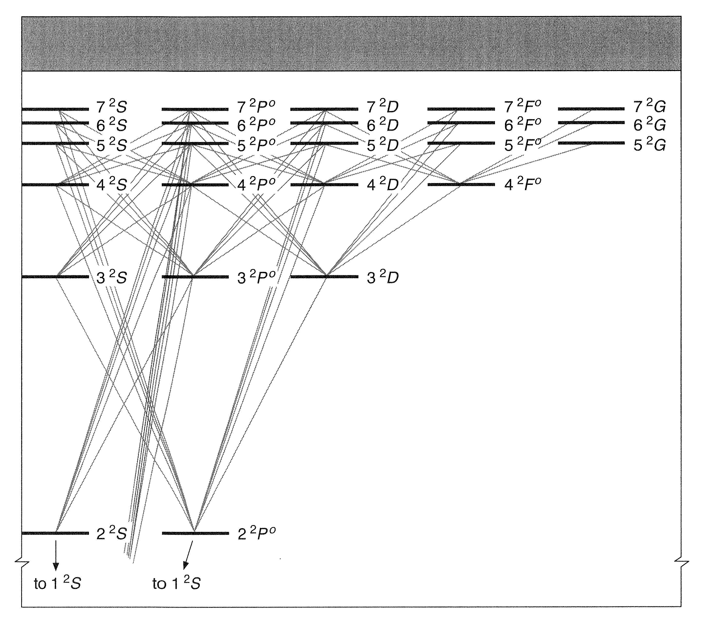
are therefore of order 10^{-4} to 10^{-8} s. The only exception is the 2^2S level, from which there are no allowed one-photon downward transitions. However, the transition 2^2S \rightarrow 1^2S does occur with the emission of two photons, and the probability of this process is A(2^2S, 1^2S) = 8.23 \text{ s}^{-1}, corresponding to a mean lifetime for the 2^2S level of 0.12 s. Even this lifetime is quite short compared with the mean lifetime of an H atom against photoionization, which has been estimated previously as \tau_{ph} \approx 10^8 s for the 1^2S level, and is of the same order of magnitude for the excited levels. Thus, to a very good approximation, we may consider that very nearly all the H^0 is in the 1^2S level, that photoionization from this level is balanced by recombination to all levels, and that recombination to any excited level is followed very quickly by radiative transitions downward, leading ultimately to the ground level. This basic approximation greatly simplifies calculations of physical conditions in gaseous nebulae.
The photoionization cross section for the 1^2S level of H^0, or, in general, of a hydrogenic ion with nuclear charge Z, may be written in the form
a_\nu(Z) = \frac{A_0}{Z^2} \left( \frac{\nu_1}{\nu} \right)^4 \frac{\exp \{ 4 - [(4 \tan^{-1} \varepsilon) / \varepsilon] \}}{1 - \exp(-2\pi/\varepsilon)} [\text{cm}^2] \text{ for } \nu \geq \nu_1 \quad (2.4)
where
A_0 = \frac{2^9 \pi}{3e^4} \left( \frac{1}{137.0} \right) \pi a_0^2 = 6.30 \times 10^{-18} [\text{cm}^2], \varepsilon = \sqrt{\frac{\nu}{\nu_1} - 1},
and
h\nu_1 = Z^2 h\nu_0 = 13.6Z^2 \text{ eV}
is the threshold energy. This cross section is plotted in Figure 2.2, which shows that it drops off rapidly with energy, approximately as \nu^{-3} not too far above the threshold, which, for H, is at \nu_0 = 3.29 \times 10^{15} \text{ s}^{-1} or \lambda_0 = 912 \text{ Å}, so that the higher-energy photons, on the average, penetrate further into neutral gas before they are absorbed.
The electrons produced by photoionization have an initial distribution of energies that depends on J_\nu a_\nu / h\nu. However, the cross section for elastic scattering collisions between electrons is quite large, of order 4\pi(e^2/mu^2)^2 \approx 10^{-13} \text{ cm}^2, and these collisions tend to set up a Maxwell–Boltzmann energy distribution. The recombination cross section, and all the other cross sections involved in the nebulae, are so much smaller that, to a very good approximation, the electron-distribution function is Maxwellian, and therefore all collisional processes occur at rates fixed by the local
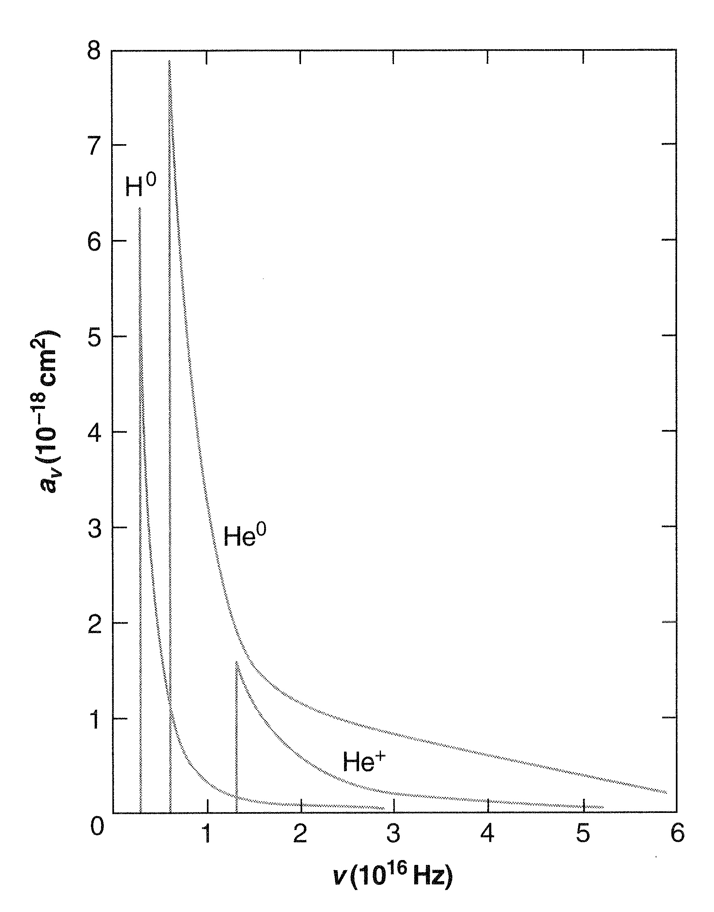
temperature defined by this Maxwellian. Therefore, the recombination coefficient to a specified level n^2L may be written
\alpha_{n^2L}(H^0, T) = \int_0^\infty u \sigma_{n^2L}(H^0, u) f(u) du \text{ [cm}^3 \text{ s}^{-1}] \quad (2.5)
where
f(u) = \frac{4}{\sqrt{\pi}} \left( \frac{m}{2kT} \right)^{3/2} u^2 \exp(-mu^2/kT) \quad (2.6)
is the Maxwell–Boltzmann distribution function for the electrons, and \sigma_{n^2L}(H^0, u) is the recombination cross section to the term n^2L in H^0 for electrons with velocity u. These cross sections vary approximately as u^{-2}, and the recombination coefficients, which are proportional to u\sigma, therefore vary approximately as T^{-1/2}. A selection of numerical values of \alpha_{n^2L} is given in Table 2.1. Since the mean electron velocities at
| 5,000 K | 10,000 K | 20,000 K | |
|---|---|---|---|
| \alpha_{1 \, ^2S} | 2.28 \times 10^{-13} | 1.58 \times 10^{-13} | 1.08 \times 10^{-13} |
| \alpha_{2 \, ^2S} | 3.37 \times 10^{-14} | 2.34 \times 10^{-14} | 1.60 \times 10^{-14} |
| \alpha_{2 \, ^2P^o} | 8.33 \times 10^{-14} | 5.35 \times 10^{-14} | 3.24 \times 10^{-14} |
| \alpha_{3 \, ^2S} | 1.13 \times 10^{-14} | 7.81 \times 10^{-15} | 5.29 \times 10^{-15} |
| \alpha_{3 \, ^2P^o} | 3.17 \times 10^{-14} | 2.04 \times 10^{-14} | 1.23 \times 10^{-14} |
| \alpha_{3 \, ^2D} | 3.43 \times 10^{-14} | 1.73 \times 10^{-14} | 9.49 \times 10^{-15} |
| \alpha_{4 \, ^2S} | 5.23 \times 10^{-15} | 3.59 \times 10^{-15} | 2.40 \times 10^{-15} |
| \alpha_{4 \, ^2P^o} | 1.51 \times 10^{-14} | 9.66 \times 10^{-15} | 5.81 \times 10^{-15} |
| \alpha_{4 \, ^2D} | 1.90 \times 10^{-14} | 1.08 \times 10^{-14} | 5.68 \times 10^{-15} |
| \alpha_{4 \, ^2F^o} | 1.09 \times 10^{-14} | 5.54 \times 10^{-15} | 2.56 \times 10^{-15} |
| \alpha_{10 \, ^2S} | 4.33 \times 10^{-16} | 2.84 \times 10^{-16} | 1.80 \times 10^{-16} |
| \alpha_{10 \, ^2G} | 2.02 \times 10^{-15} | 9.28 \times 10^{-16} | 3.91 \times 10^{-16} |
| \alpha_{10 \, ^2M} | 2.7 \times 10^{-17} | 1.0 \times 10^{-17} | 4.0 \times 10^{-18} |
| \alpha_A | 6.82 \times 10^{-13} | 4.18 \times 10^{-13} | 2.51 \times 10^{-13} |
| \alpha_B | 4.54 \times 10^{-13} | 2.59 \times 10^{-13} | 1.43 \times 10^{-13} |
the temperatures listed are of order 5 \times 10^7 \text{ cm s}^{-1}, it can be seen that the recombination cross sections are of order 10^{-20} \text{ cm}^2 or 10^{-21} \text{ cm}^2, much smaller than the geometrical cross section of an H atom.
In the nebular approximation discussed previously, recombination to any level n \, ^2L quickly leads through downward radiative transitions to 1 \, ^2S, and the total recombination coefficient is the sum over captures to all levels, ordinarily written
\begin{aligned} \alpha_A &= \sum_{n,L} \alpha_{n \, ^2L}(\text{H}^0, T) \text{ [cm}^3 \text{ s}^{-1}] \\ &= \sum_n \sum_{L=0}^{n-1} \alpha_{nL}(\text{H}^0, T) \\ &= \sum_n \alpha_n(\text{H}^0, T) \end{aligned} \tag{2.7}
where \alpha_n is thus the recombination coefficient to all the levels with principal quantum number n. Numerical values of \alpha_A are also listed in Table 2.1. A typical recombination time is \tau_r = 1/n_e \alpha_A \approx 3 \times 10^{12}/n_e \text{ s} \approx 10^5/n_e \text{ yr}, and deviations from ionization equilibrium are ordinarily damped out in times of this order of magnitude.
2.3 Photoionization of a Pure Hydrogen Nebula
Consider the simple idealized problem of a single star that is a source of ionizing photons in a homogeneous static cloud of H. Only radiation with frequency \nu \geq \nu_0 is effective in the photoionization of H from the ground level, and the ionization equilibrium equation at each point can be written
n(\text{H}^0) \int_{\nu_0}^{\infty} \frac{4\pi J_{\nu}}{h\nu} a_{\nu} d\nu = n_p n_e \alpha_A(\text{H}^0, T) [\text{cm}^{-3} \text{ s}^{-1}]. \quad (2.8)
The equation of transfer for radiation with \nu \geq \nu_0 can be written in the form
\frac{dI_{\nu}}{ds} = -n(\text{H}^0) a_{\nu} I_{\nu} + j_{\nu} \quad (2.9)
where I_{\nu} is the specific intensity of radiation and j_{\nu} is the local emission coefficient (in energy units per unit volume, per unit time, per unit solid angle, per unit frequency) for ionizing radiation.
It is convenient to divide the radiation field into two parts, a "stellar" part, resulting directly from the input radiation from the star, and a "diffuse" part, resulting from the emission of the ionized gas:
I_{\nu} = I_{\nu s} + I_{\nu d}. \quad (2.10)
The stellar radiation decreases outward because of geometrical dilution and absorption, and since its only source is the star, it can be written
4\pi J_{\nu s} = \pi F_{\nu s}(r) = \pi F_{\nu s}(R) \frac{R^2 \exp(-\tau_{\nu})}{r^2} [\text{erg cm}^{-2} \text{ s}^{-1} \text{ Hz}^{-1}], \quad (2.11)
where \pi F_{\nu s}(r) is the standard astronomical notation for the flux of stellar radiation (per unit area, per unit time, per unit frequency interval) at r, \pi F_{\nu s}(R) is the flux at the radius of the star R, and \tau_{\nu} is the radial optical depth at r,
\tau_{\nu}(r) = \int_0^r n(\text{H}^0, r') a_{\nu} dr', \quad (2.12)
which can also be written in terms of \tau_0, the optical depth at the threshold:
\tau_{\nu}(r) = \frac{a_{\nu}}{a_{\nu_0}} \tau_0(r)
The equation of transfer for the diffuse radiation I_{\nu d} is
\frac{dI_{\nu d}}{ds} = -n(\text{H}^0) a_{\nu} I_{\nu d} + j_{\nu} \quad (2.13)
and for kT \ll h\nu_0 the only source of ionizing radiation is recaptures of electrons from the continuum to the ground 1^2S level. The emission coefficient for this radiation is (erg cm -2 s -1 Hz -1 sr -1 )
j_\nu(T) = \frac{2h\nu^3}{c^2} \left( \frac{h^2}{2\pi mkT} \right)^{3/2} a_\nu \exp[-h(\nu - \nu_0)/kT] n_p n_e \quad (\nu > \nu_0) \quad (2.14)
which is strongly peaked to \nu = \nu_0, the threshold. The total number of photons generated by recombinations to the ground level is given by the recombination coefficient
4\pi \int_{\nu_0}^{\infty} \frac{j_\nu}{h\nu} d\nu = n_p n_e \alpha_1(H^0, T) [\text{cm}^{-3} \text{s}^{-1}], \quad (2.15)
and since \alpha_1 = \alpha_{1s} < \alpha_A, the diffuse field J_{\nu d} is smaller than J_{\nu s} on the average, and may be calculated by an iterative procedure. For an optically thin nebula, a good first approximation is to take J_{\nu d} \approx 0.
On the other hand, for an optically thick nebula, a good first approximation is based on the fact that no ionizing photons can escape, so that every diffuse radiation-field photon generated in such a nebula is absorbed elsewhere in the nebula:
4\pi \int \frac{j_\nu}{h\nu} dV = 4\pi \int n(H^0) \frac{a_\nu J_{\nu d}}{h\nu} dV, \quad (2.16)
where the integration is over the entire volume of the nebula. The so-called —on-the-spot— approximation amounts to assuming that a similar relation holds locally:
J_{\nu d} = \frac{j_\nu}{n(H^0) a_\nu} \quad (2.17)
This, of course, automatically satisfies (2.16), and would be exact if all photons were absorbed very close to the point at which they are generated (—on the spot—). This is not a bad approximation because the diffuse radiation-field photons have \nu \approx \nu_0, and therefore have large a_\nu, and correspondingly small mean free paths before absorption.
Making this on-the-spot approximation and using (2.11) and (2.15), we find that the ionization Equation (2.8) becomes
\frac{n(H^0) R^2}{r^2} \int_{\nu_0}^{\infty} \frac{\pi F_\nu(R)}{h\nu} a_\nu \exp(-\tau_\nu) d\nu = n_p n_e \alpha_B(H^0, T) \quad (2.18)
where
\begin{aligned} \alpha_B(H^0, T) &= \alpha_A(H^0, T) - \alpha_1(H^0, T) \\ &= \sum_2^{\infty} \alpha_n(H^0, T) \end{aligned}
The physical meaning is that in optically thick nebulae, the ionizations caused by stellar radiation-field photons are balanced by recombinations to excited levels of
| r (pc) | T_* = 4 \times 10^4 K Blackbody Model | T_* = 3.74 \times 10^4 K Model stellar atmosphere | ||
|---|---|---|---|---|
| n_p | n(\text{H}^0) | n_p | n(\text{H}^0) | |
| n_p + n(\text{H}^0) | n_p + n(\text{H}^0) | n_p + n(\text{H}^0) | n_p + n(\text{H}^0) | |
| 0.1 | 1.0 | 4.5 \times 10^{-7} | 1.0 | 4.5 \times 10^{-7} |
| 1.2 | 1.0 | 2.8 \times 10^{-5} | 1.0 | 2.9 \times 10^{-5} |
| 2.2 | 0.9999 | 1.0 \times 10^{-4} | 0.9999 | 1.0 \times 10^{-4} |
| 3.3 | 0.9997 | 2.5 \times 10^{-4} | 0.9997 | 2.5 \times 10^{-4} |
| 4.4 | 0.9995 | 4.4 \times 10^{-4} | 0.9994 | 4.5 \times 10^{-4} |
| 5.5 | 0.9992 | 8.0 \times 10^{-4} | 0.9992 | 8.1 \times 10^{-4} |
| 6.7 | 0.9985 | 1.5 \times 10^{-3} | 0.9985 | 1.5 \times 10^{-3} |
| 7.7 | 0.9973 | 2.7 \times 10^{-3} | 0.9973 | 2.7 \times 10^{-3} |
| 8.8 | 0.9921 | 7.9 \times 10^{-3} | 0.9924 | 7.6 \times 10^{-3} |
| 9.4 | 0.977 | 2.3 \times 10^{-2} | 0.979 | 2.1 \times 10^{-2} |
| 9.7 | 0.935 | 6.5 \times 10^{-2} | 0.940 | 6.0 \times 10^{-2} |
| 9.9 | 0.838 | 1.6 \times 10^{-1} | 0.842 | 1.6 \times 10^{-1} |
| 10.0 | 0.000 | 1.0 | 0.000 | 1.0 |
H, while recombinations to the ground level generate ionizing photons that are absorbed elsewhere in the nebula but have no net effect on the overall ionization balance.
For any stellar input spectrum \pi F_\nu(R), the integral on the left-hand side of (2.18) can be tabulated as a known function of \tau_0, since a_\nu and \tau_\nu are known functions of \nu. Thus, for any assumed density distribution,
n_{\text{H}}(r) = n(\text{H}^0, r) + n_p(r)
and temperature distribution T(r), equations (2.18) and (2.12) can be integrated outward to find n(\text{H}^0, r) and n_p(r) = n_e(r). Two calculated models for homogeneous nebulae with constant density n(\text{H}) = 10 H atoms plus ions cm -3 and constant temperature T = 7,500 K are listed in Table 2.2 and graphed in Figure 2.3. For one of these ionization models, the assumed \pi F_\nu(R) is a blackbody spectrum with T_* = 40,000 K, chosen to represent approximately an O7.5 main-sequence star, while for the other, the \pi F_\nu(R) is a computed model stellar atmosphere with T_* = 37,450 K. The table and graph clearly show the expected nearly complete ionization out to a critical radius r_1, at which the ionization drops off abruptly to nearly zero. The central ionized zone is often referred to as an "H II region" ("H + region" would be a better name), and it is surrounded by an outer neutral H 0 region, often referred to as an "H I region".
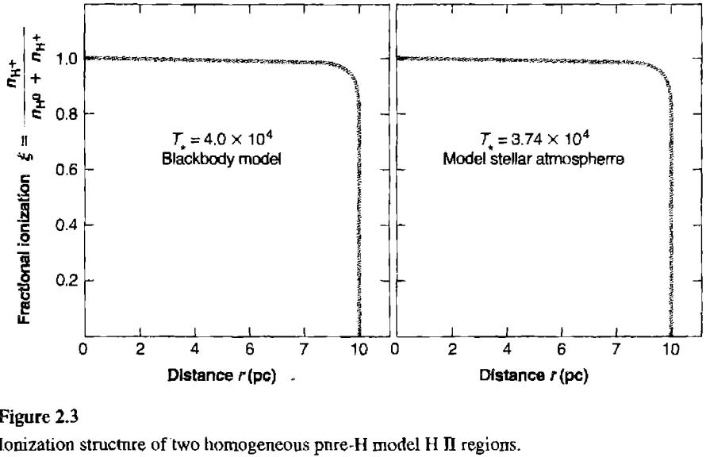
The radius r_1 can be found from (2.18), substituting from (2.12),
\frac{d\tau_\nu}{dr} = n(\text{H}^0) a_\nu
and integrating over r:
\begin{aligned} R^2 \int_{\nu_0}^{\infty} \frac{\pi F_\nu(R)}{h\nu} d\nu \int_0^{\infty} d[-\exp(-\tau_\nu)] &= \int_0^{\infty} n_p n_e \alpha_B r^2 dr \\ &= R^2 \int_{\nu_0}^{\infty} \frac{\pi F_\nu(R)}{h\nu} d\nu \end{aligned}
Using the result that the ionization is nearly complete [n_p = n_e \approx n(\text{H})] within r_1, and nearly zero (n_p = n_e \approx 0) outside r_1, this becomes
\begin{aligned} 4\pi R^2 \int_{\nu_0}^{\infty} \frac{\pi F_\nu}{h\nu} d\nu &= \int_{\nu_0}^{\infty} \frac{L_\nu}{h\nu} d\nu \\ &= Q(\text{H}^0) = \frac{4\pi}{3} r_1^3 n_{\text{H}}^2 \alpha_B. \end{aligned} \tag{2.19}
Here 4\pi R^2 \pi F_\nu(R) = L_\nu is the luminosity of the star at frequency \nu (in energy units per time per unit frequency interval), and the physical meaning of (2.19) is that the total number of ionizing photons emitted by the star just balances the total number of recombinations to excited levels within the ionized volume \frac{4\pi}{3} r_1^3, often called the
| Spectral type | T_* (K) | M_V | \log Q(\text{H}^0) (photons/s) | \log n_e n_p r_1^3 n^2 in \text{cm}^{-3}, r_1 in pc | \log n_e n_p r_1^3 n in \text{cm}^{-3}, r_1 in pc | r_1 (pc) n_e = n_p = 1 \text{ cm}^{-3} |
|---|---|---|---|---|---|---|
| O3 V | 51,200 | -5.78 | 49.87 | 49.18 | 6.26 | 122 |
| O4 V | 48,700 | -5.55 | 49.70 | 48.99 | 6.09 | 107 |
| O4.5 V | 47,400 | -5.44 | 49.61 | 48.90 | 6.00 | 100 |
| O5 V | 46,100 | -5.33 | 49.53 | 48.81 | 5.92 | 94 |
| O5.5 V | 44,800 | -5.22 | 49.43 | 48.72 | 5.82 | 87 |
| O6 V | 43,600 | -5.11 | 49.34 | 48.61 | 5.73 | 81 |
| O6.5 V | 42,300 | -4.99 | 49.23 | 48.49 | 5.62 | 75 |
| O7 V | 41,000 | -4.88 | 49.12 | 48.34 | 5.51 | 69 |
| O7.5 V | 39,700 | -4.77 | 49.00 | 48.16 | 5.39 | 63 |
| O8 V | 38,400 | -4.66 | 48.87 | 47.92 | 5.26 | 57 |
| O8.5 V | 37,200 | -4.55 | 48.72 | 47.63 | 5.11 | 51 |
| O9 V | 35,900 | -4.43 | 48.56 | 47.25 | 4.95 | 45 |
| O9.5 V | 34,600 | -4.32 | 48.38 | 46.77 | 4.77 | 39 |
| B0 V | 33,300 | -4.21 | 48.16 | 46.23 | 4.55 | 33 |
| B0.5 V | 32,000 | -4.10 | 47.90 | 45.69 | 4.29 | 27 |
| O3 III | 50,960 | -6.09 | 49.99 | 49.30 | 6.38 | 134 |
| B0.5 III | 30,200 | -5.31 | 48.27 | 45.86 | 4.66 | 36 |
| O3 Ia | 50,700 | -6.4 | 50.11 | 49.41 | 6.50 | 147 |
| O9.5 Ia | 31,200 | -6.5 | 49.17 | 47.17 | 5.56 | 71 |
Strömgren sphere. Numerical values of radii calculated by using the model stellar atmospheres discussed in Chapter 5 are given in Table 2.3.
2.4 Photoionization of a Nebula Containing Hydrogen and Helium
The next most abundant element after H is He, whose relative abundance (by number) is of order 10 percent, and a much better approximation to the ionization structure of an actual nebula is provided by taking both these elements into account. The ionization potential of He is h\nu_2 = 24.6 eV, somewhat higher than H; the ionization potential of \text{He}^+ is 54.4 eV, but since even the hottest O stars emit practically no photons with h\nu > 54.4 eV, second ionization of He does not occur in ordinary H II regions. (The situation is quite different in planetary nebulae, as we shall see later in this chapter.) Thus photons with energy 13.6 \text{ eV} < h\nu < 24.6 \text{ eV} can ionize H only, but photons with energy h\nu > 24.6 \text{ eV} can ionize both H and He. As a result, two different types of ionization structure are possible, depending on the spectrum of ionizing radiation and the abundance of He. At one extreme, if the spectrum is
concentrated to frequencies just above 13.6 eV and contains only a few photons with h\nu > 24.6 eV, then the photons with energy 13.6 \text{ eV} < h\nu < 24.6 \text{ eV} keep the H ionized, and the photons with h\nu > 24.6 \text{ eV} are all absorbed by He. The ionization structure thus consists of a small central \text{H}^+, \text{He}^+ zone surrounded by a larger \text{H}^+, \text{He}^0 region. At the other extreme, if the input spectrum contains a large fraction of photons with h\nu > 24.6 \text{ eV}, then these photons dominate the ionization of both H and He, the outer boundaries of both ionized zones coincide, and there is a single \text{H}^+, \text{He}^+ region.
The \text{He}^0 photoionization cross section a_{\nu}(\text{He}^0) is plotted in Figure 2.2, along with a_{\nu}(\text{H}^0) and a_{\nu}(\text{He}^+) calculated from Equation (2.4). The total recombination coefficients for He to configurations L \geq 2 are, to a good approximation, the same as for H, since these levels are hydrogen-like, but because He is a two-electron system, it has separate singlet and triplet levels and
\left. \begin{aligned} \alpha_{n \, ^1L}(\text{He}^0, T) &\approx \frac{1}{4} \alpha_{n \, ^2L}(\text{H}^0, T) \\ \alpha_{n \, ^3L}(\text{He}^0, T) &\approx \frac{3}{4} \alpha_{n \, ^2L}(\text{H}^0, T) \end{aligned} \right\} L \geq 2 \quad (2.20)
For the P and particularly the S terms there are sizeable differences between the He and H recombination coefficients. Representative numerical values of the recombination coefficients are included in Table 2.4.
The ionization equations for H and He are coupled by the radiation field with h\nu > 24.6 \text{ eV}, and are straightforward to write down in the on-the-spot approximation,
| T | |||
|---|---|---|---|
| 5,000 K | 10,000 K | 20,000 K | |
| \alpha(\text{He}^0, 1 \, ^1S) | 2.17 \times 10^{-13} | 1.54 \times 10^{-13} | 1.10 \times 10^{-13} |
| \alpha(\text{He}^0, 2 \, ^1S) | 7.62 \times 10^{-15} | 5.55 \times 10^{-15} | 4.07 \times 10^{-15} |
| \alpha(\text{He}^0, 2 \, ^1P^o) | 1.97 \times 10^{-14} | 1.26 \times 10^{-14} | 7.57 \times 10^{-15} |
| \alpha(\text{He}^0, 3 \, ^1S) | 2.20 \times 10^{-15} | 1.62 \times 10^{-15} | 1.19 \times 10^{-15} |
| \alpha(\text{He}^0, 3 \, ^1P^o) | 7.87 \times 10^{-15} | 5.01 \times 10^{-15} | 2.99 \times 10^{-15} |
| \alpha(\text{He}^0, 3 \, ^1D) | 7.53 \times 10^{-15} | 4.31 \times 10^{-15} | 2.26 \times 10^{-15} |
| \alpha_B(\text{He}^0, \sum n \, ^1L) | 1.09 \times 10^{-13} | 6.23 \times 10^{-14} | 3.46 \times 10^{-14} |
| \alpha(\text{He}^0, 2 \, ^3S) | 1.97 \times 10^{-14} | 1.49 \times 10^{-14} | 1.16 \times 10^{-14} |
| \alpha(\text{He}^0, 2 \, ^3P^o) | 8.52 \times 10^{-14} | 5.60 \times 10^{-14} | 3.52 \times 10^{-14} |
| \alpha(\text{He}^0, 3 \, ^3S) | 4.78 \times 10^{-15} | 3.72 \times 10^{-15} | 2.96 \times 10^{-15} |
| \alpha(\text{He}^0, 3 \, ^3D) | 2.95 \times 10^{-14} | 1.95 \times 10^{-14} | 1.23 \times 10^{-14} |
| \alpha_B(\text{He}^0, \sum n \, ^3L) | 3.57 \times 10^{-13} | 2.10 \times 10^{-13} | 1.21 \times 10^{-13} |
| \alpha_B(\text{He}^0) | 4.66 \times 10^{-13} | 2.72 \times 10^{-13} | 1.56 \times 10^{-13} |
though complicated in detail. First, the photons emitted in recombinations to the ground level of He can ionize either H or He, since these photons are emitted with energies just above h\nu_2 = 24.6 eV. The fraction absorbed by H is
y = \frac{n(\text{H}^0) a_{\nu_2}(\text{H}^0)}{n(\text{H}^0) a_{\nu_2}(\text{H}^0) + n(\text{He}^0) a_{\nu_2}(\text{He}^0)}, \tag{2.21}
and the remaining fraction, 1 - y, is absorbed by He. Second, following recombination to excited levels of He, various photons are emitted that ionize H. Of the recombinations to excited levels of He, approximately three-fourth are to the triplet levels and approximately one-fourth are to the singlet levels. All the captures to triplets lead ultimately through downward radiative transitions to 2^3S, which is highly metastable, but which can decay by a one photon forbidden line at 19.8 eV to 1^1S, with transition probability A(2^3S, 1^1S) = 1.26 \times 10^{-4} \text{ s}^{-1}. Competing with this mode of depopulation of 2^3S, collisional excitation to the singlet levels 2^1S, and 2^1P^o can also occur with fairly high probability, while collisional transitions to 1^1S or to the continuum are less probable. Since the collisions leading to the singlet levels involve a spin change, only electrons are effective in causing these excitations, and the transition rate per atom in the 2^3S level is
n_e q(2^3S, 2^1L) = n_e \int_{\frac{1}{2}mu^2=\chi}^{\infty} u \sigma(2^3S, 2^1L, u) f(u) du \tag{2.22}
where the \sigma(2^3S, 2^1L) are the electron collision cross sections for these excitation processes, and the \chi are their energy thresholds. These rate coefficients are listed in Table 2.5, along with the critical electron density n_c(2^3S), defined by
n_c(2^3S) = \frac{A(2^3S, 1^1S)}{q(2^3S, 2^1S) + q(2^3S, 2^1P^o)} \tag{2.23}
| T(\text{K}) | q(2^3S, 2^1S) | q(2^3S, 2^1P^o) | n_c^a |
|---|---|---|---|
| 6,000 | 1.95 \times 10^{-8} | 2.34 \times 10^{-9} | 6.2 \times 10^3 |
| 8,000 | 2.45 \times 10^{-8} | 3.64 \times 10^{-9} | 4.6 \times 10^3 |
| 10,000 | 2.60 \times 10^{-8} | 5.92 \times 10^{-9} | 3.9 \times 10^3 |
| 15,000 | 3.05 \times 10^{-8} | 7.83 \times 10^{-9} | 3.3 \times 10^3 |
| 20,000 | 2.55 \times 10^{-8} | 9.23 \times 10^{-9} | 3.3 \times 10^3 |
| 25,000 | 2.68 \times 10^{-8} | 9.81 \times 10^{-9} | 3.4 \times 10^3 |
a. Critical density in \text{cm}^{-3}.
at which collisional transitions are equally probable with radiative transitions. In typical H II regions, the electron density n_e \leq 10^2 \text{ cm}^{-3}, is considerably smaller than n_c, so practically all the atoms leave 2^3S by emission of a 19.8 eV-line photon. In contrast, in typical bright planetary nebulae, n_e \approx 10^4 \text{ cm}^{-3}, somewhat larger than n_c, and therefore many of the atoms are transferred to 2^1S or 2^1P^o before emitting a line photon. From the ratio of excitation rates, it can be seen that, for instance, at T = 10^4 \text{ K}, a fraction 0.83 of the transitions lead to 2^1S, and 0.17 to 2^1P^o. If the less probable collisional deexciting collisions to 1^1S are also included, these fractions become 0.78 and 0.16, respectively.
Of the captures to the singlet-excited levels in He, approximately two-thirds lead ultimately to population of 2^1P^o, while approximately one-third lead to population of 2^1S. Atoms in 2^1P^o decay mostly to 1^1S with emission of a resonance-line photon at 21.2 eV, but some also decay to 2^1S (with emission of 2^1S - 2^1P^o at 2.06 \mu\text{m}) with a relative probability of approximately 10^{-3}. The resonance-line photons are scattered by \text{He}^0, and therefore, after-approximately 10^3 scatterings, a typical photon would, on the average, be converted to a 2.06\text{-}\mu\text{m} line photon and thus populate 2^1S. However, it is more likely that before a resonance-line photon is scattered this many times, it will photoionize an H atom and be absorbed. He atoms in 2^1S decay by two-photon emission (with the sum of the energies 20.6 eV and transition probability 51.3 \text{ s}^{-1}) to 1^1S. From the distribution of photons in this continuous spectrum, the probability that a photon is produced that can ionize H is 0.56 per radiative decay from \text{He}^0 2^1S.
All these He bound-bound transitions produce photons that ionize H but not He, and they can easily be included in the H ionization equation in the on-the-spot approximation. The total number of recombinations to excited levels of He per unit volume per unit time is n(\text{He}^+)n_e\alpha_B(\text{He}^0, T), and of these a fraction p generate ionizing photons that are absorbed on the spot. As shown by the preceding discussion, in the low-density limit n_e \ll n_c
p \approx \frac{3}{4} + \frac{1}{4} \left[ \frac{2}{3} + \frac{1}{3} (0.56) \right] = 0.96,
but in the high-density limit n_e \gg n_c,
p \approx \left[ \frac{3}{4} (0.78) + \frac{1}{4} \cdot \frac{1}{3} \right] (0.56) + \left[ \frac{3}{4} (0.16) + \frac{1}{4} \cdot \frac{2}{3} \right] = 0.66.
Thus, in the on-the-spot approximation, the ionization equations become
\begin{aligned} \frac{n(\text{H}^0)}{r^2} \int_{\nu_0}^{\infty} \frac{\pi F_{\nu}(R)}{h\nu} a_{\nu}(\text{H}^0) \exp(-\tau_{\nu}) d\nu + \gamma n(\text{He}^+) n_e \alpha_1(\text{He}^0, T) \\ + p n(\text{He}^+) n_e \alpha_B(\text{He}^0, T) = n_p n_e \alpha_B(\text{H}^0, T); \end{aligned} \quad (2.24)
\frac{n(\text{He}^0) R^2}{r^2} \int_{\nu_2}^{\infty} \frac{\pi F_{\nu}(R)}{h\nu} a_{\nu}(\text{He}^0) \exp(-\tau_{\nu}) d\nu + (1 - y) n(\text{He}^+) n_e \alpha_1(\text{He}^0, T') \tag{2.25} = n(\text{He}^+) n_e \alpha_A(\text{He}^0, T'),
with
\frac{d\tau_{\nu}}{dr} = n(\text{H}^0) a_{\nu}(\text{H}^0) \quad \text{for} \quad \nu_1 < \nu < \nu_2
and
\frac{d\tau_{\nu}}{dr} = n(\text{H}^0) a_{\nu}(\text{H}^0) + n(\text{He}^0) a_{\nu}(\text{He}^0) \quad \text{for} \quad \nu_2 < \nu, \tag{2.26}
and
n_e = n_p + n(\text{He}^+)
These equations again can be integrated outward step-by-step, and sample models for a diffuse nebula [with n(\text{H}) = 10 \text{ cm}^{-3}, n(\text{He})/n(\text{H}) = 0.15] excited by stars with T_* = 40,000 \text{ K} and 30,000 \text{ K}, respectively, are plotted in Figure 2.4. It can be seen that the hotter star excites a coincident \text{H}^+, \text{He}^+ zone, while the cooler star has an inner \text{H}^+, \text{He}^+ zone and an outer \text{H}^+, \text{He}^0 zone.
Although the exact size of the \text{He}^+ zone can be found only from the integration because of the coupling between the H and He ionization by the radiation with \nu > \nu_2, the approximate size can easily be found by ignoring the absorption by H in the \text{He}^+ zone. This corresponds to setting y = 0 in Equation (2.25) and n(\text{H}^0) = 0 in the second of Equations (2.26), and we then immediately find, in analogy to Equation (2.19), that
\int_{\nu_2}^{\infty} \frac{L_{\nu}}{h\nu} d\nu = Q(\text{He}^0) = \frac{4\pi}{3} r_2^3 n(\text{He}^+) n_e \alpha_B(\text{He}^0), \tag{2.27}
where r_2 is the radius of the \text{He}^+ zone. Furthermore, since according to the preceding discussions, p \approx 1, the absorptions by He do not greatly reduce the number of photons available for ionizing H; therefore, to a fair approximation,
\int_{\nu_0}^{\infty} \frac{L_{\nu}}{h\nu} d\nu = Q(\text{H}^0) = \frac{4\pi}{3} r_1^3 n(\text{H}^+) n_e \alpha_B(\text{H}^0). \tag{2.19}
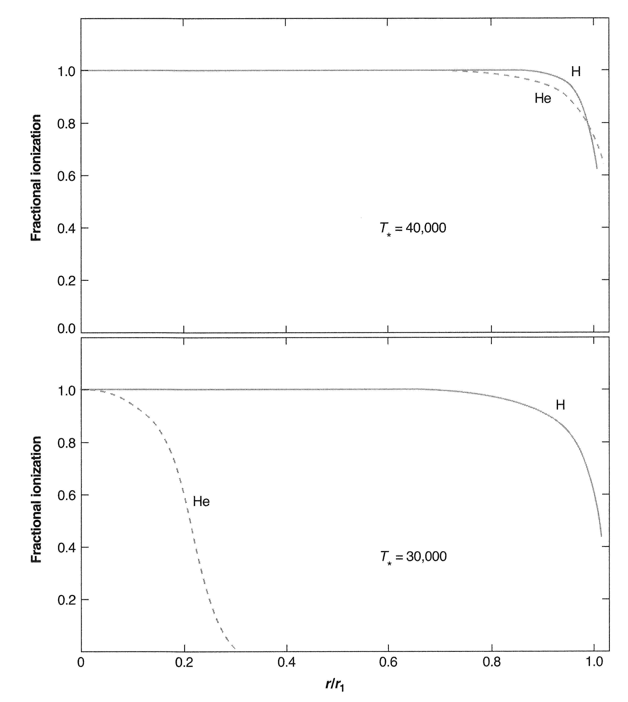
Ionization structure of two homogeneous H + He model H II regions.
If we suppose that the \text{He}^+ zone is much smaller than the \text{H}^+ zone, then throughout most of the \text{H}^+ zone the electrons come only from ionization of H, but in the \text{He}^+ zone, the electrons come from ionization of both H and He. With this simplification,
\left(\frac{r_1}{r_2}\right)^3 = \frac{Q(\text{H}^0)}{Q(\text{He}^0)} \frac{n_{\text{He}}}{n_{\text{H}}} \left(1 + \frac{n_{\text{He}}}{n_{\text{H}}}\right) \frac{\alpha_B(\text{He}^0)}{\alpha_B(\text{H}^0)} \text{ if } r_2 < r_1. \quad (2.28)
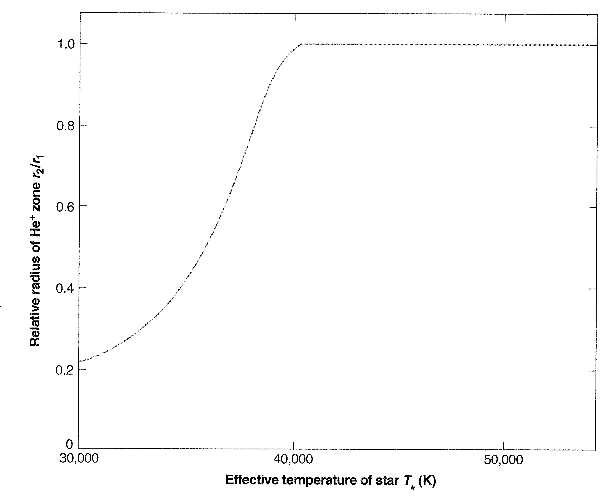
Relative radius of \text{He}^+ zone as a function of effective temperature of exciting star.
A plot of r_2/r_1, calculated according to this equation for n(\text{He})/n(\text{H}) = 0.15 and T = 7,500 \text{ K}, is shown in Figure 2.5, and it can be seen that, for T_* \geq 40,000 \text{ K}, the \text{He}^+ and \text{H}^+ zones are coincident, while at significantly lower temperatures, the \text{He}^+ zone is much smaller. The details of the curve, including the precise effective temperature at which r_2/r_1 = 1, are not significant, because of the simplifications made, but the general trends it indicates are correct. For a smaller relative helium abundance, for instance n(\text{He})/n(\text{H}) = 0.10 instead of 0.15, r_2/r_1 is larger by approximately 16% at corresponding values of T_*, up to r_2/r_1 = 1.
2.5 Photoionization of \text{He}^+ to \text{He}^{++}
Although ordinary O stars of Population I do not radiate any appreciable number of photons with h\nu > 54.4 \text{ eV} (hence galactic H II regions do not have a \text{He}^{++} zone), the situation is quite different for the central stars of planetary nebulae. Many of these stars are much hotter than even the hottest O3 stars, and do radiate high-energy photons
that produce central \text{He}^{++} zones, which are observed by the He II recombination spectra they emit.
The structure of these central \text{He}^{++} zones is governed by equations that are very similar to those for pure \text{H}^+ zones discussed previously, with the threshold, absorption cross section, and recombination coefficient changed from \text{H}^0 (Z = 1) to \text{He}^+ (Z = 2). This \text{He}^{++} zone is, of course, also an \text{H}^+ zone, and the ionization equations of \text{H}^0 and \text{He}^+ are therefore, in principle, coupled—but in practice they can be fairly well separated. The coupling results from the fact that, in the recombination of \text{He}^{++} to form \text{He}^+, photons are emitted that ionize \text{H}^0. Three different mechanisms are involved, namely: recombinations that populate 2^2P^o, resulting in He II \text{L}\alpha emission with h\nu = 40.8 eV; recombinations that populate 1^2S, resulting in He II 2^2S \rightarrow 1^2S two-photon emission for which h\nu' + h\nu'' = 40.8 eV (the spectrum peaks at 20.4 eV, and, on the average, 1.42 ionizing photons are emitted per decay); and recombinations directly to 2^2S and to 2^2P^o, resulting in He II Balmer-continuum emission, which has the same threshold as the Lyman limit of H and therefore emits a continuous spectrum concentrated just above h\nu_0. The He II \text{L}\alpha photons are scattered by resonance scattering, and therefore diffuse only slowly away from their point of origin before they are absorbed, while the He II Balmer-continuum photons are concentrated close to the \text{H}^0 ionization threshold and therefore have a short mean free path. Both these sources tend to ionize \text{H}^0 in the \text{He}^{++} zone, and at a “normal” abundance of He, the number of ionizing photons generated in the \text{He}^{++} zone by these two processes is nearly sufficient to balance the recombinations of \text{H}^+ in this zone and thus to maintain the ionization of \text{H}^0. This is shown in Table 2.6, which lists the ionizing photon generation rates relative to the recombination rates for two temperatures. Thus, to a good approximation, the He II \text{L}\alpha and Balmer-continuum photons are absorbed by and maintain the ionization of \text{H}^0 in the \text{He}^{++} zone, but the stellar radiation with 13.6 \text{ eV} < h\nu < 54.4 \text{ eV} is not significantly absorbed by the \text{H}^0 in the \text{He}^{++}, \text{H}^+ zone, and that with h\nu > 54.4 \text{ eV} is absorbed only by the \text{He}^+. The He II two-photon continuum is an additional source of ionizing photons for H; most of these photons escape from the \text{He}^{++} zone and therefore must be added to the stellar radiation field with h\nu > 54.4 \text{ eV} in the \text{He}^+ zone. Of course, a more accurate calculation may be made, taking into account the detailed frequency dependence of
| Number generated per H recombination | T = 10,000 \text{ K} | 20,000 \text{ K} |
|---|---|---|
| n(\text{He}^{++})q(\text{He}^+ \text{L}\alpha)/n(\text{H}^+)\alpha_B(\text{H}^0) | 0.64 | 0.66 |
| n(\text{He}^{++})q(\text{He}^+ 2 \text{ photon})/n(\text{H}^+)\alpha_B(\text{H}^0) | 0.36 | 0.42 |
| n(\text{He}^{++})q(\text{He}^+ B\alpha c)/n(\text{H}^+)\alpha_B(\text{H}^0) | 0.20 | 0.25 |
NOTE: Numerical values are calculated assuming that n(\text{He}^{++})/n(\text{H}^+) = 0.15.
each of the emission processes, but since normally the helium abundance is small, only an approximation to its effects is usually required.
Some sample calculations of the ionization structure of a model planetary nebula, with the radiation source a blackbody at T_* = 10^5 K are shown in Figure 2.6. The sharp outer edge of the \text{He}^{++} zone, as well as the even sharper outer edges of the \text{H}^+ and \text{He}^+ zones, can be seen in these graphs. There is, of course, an equation that is exactly analogous to (2.19) and (2.27) for the “Strömgren radius” r_3 of the \text{He}^{++} zone:
Q(\text{He}^+) = \int_{4\nu_0}^{\infty} \frac{L_\nu}{h\nu} d\nu = \frac{4\pi}{3} r_3^3 n(\text{He}^{++}) n_e \alpha_B(\text{He}^+, T) \quad (2.29)
Thus stellar temperatures T_* \geq 10^5 K are required for r_3/r_1 \approx 1.
2.6 Further Iterations of the Ionization Structure
As described previously, the on-the-spot approximation may be regarded as the first approximation to the ionization and, as will be described in Chapter 3, to the temperature distribution in the nebula. From these a first approximation to the emission coefficient j_\nu may be found throughout the model: from j_\nu a first approximation to I_{\nu,d} and hence J_\nu at each point, and from J_\nu a better approximation to the ionization and temperature at each point. This iteration procedure can be repeated as many times as desired (given sufficient computing time) and actually converges quite rapidly, but except where high accuracy is required, the first (on-the-spot) approximation is usually sufficient. The higher approximations show that the degree of ionization nearest the star is so high that ionizing photons emitted there are not really absorbed on the spot. There is thus a net flow of these photons from the center to the outer regions. However, the ionization calculated from the on-the-spot approximation is reasonably close to the final exact result.
2.7 Photoionization of Heavy Elements
Finally, let us examine the ionization of the heavy elements, of which O, C, Ne, N, Si, and Fe, with abundances (by number) of order 10^{-3} to 10^{-4} that of H, are the most abundant. The ionization–equilibrium equation for any two successive stages of ionization i and i + 1 of any element X may be written
\begin{aligned} n(X^{+i}) \int_{\nu_i}^{\infty} \frac{4\pi J_\nu}{h\nu} a_\nu(X^{+i}) d\nu &= n(X^{+i}) \Gamma(X^{+i}) \\ &= n(X^{+i+1}) n_e \alpha_G(X^{+i}, T), \end{aligned} \quad (2.30)
where n(X^{+i}) and n(X^{+i+1}) are the number densities of the two successive stages of ionization; a_\nu(X^{+i}) is the photoionization cross section from the ground level of X^i
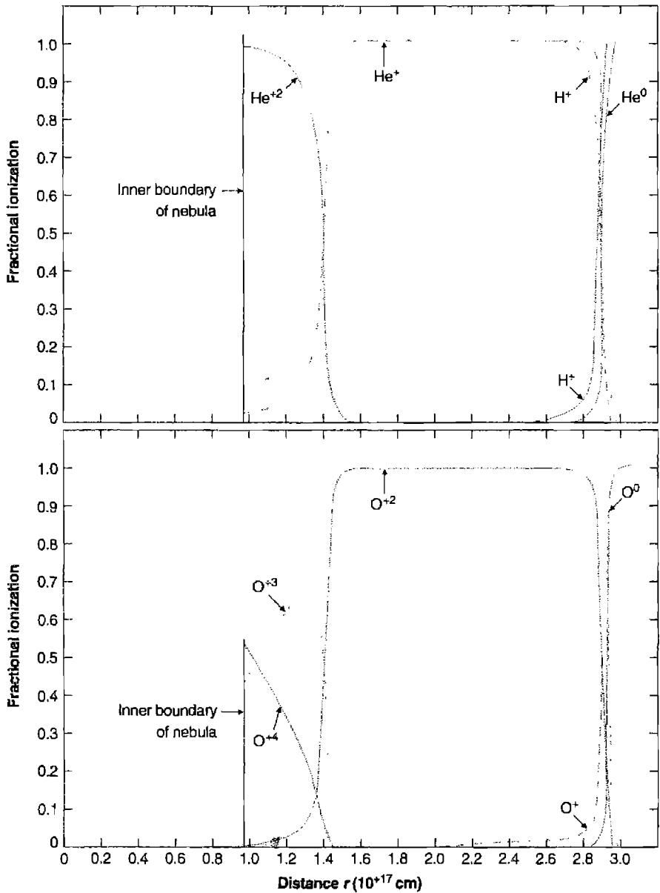
Ionization structure of H, He (top), and O (bottom) for a model planetary nebula.
with the threshold \nu_i; and \alpha_G(X^{+i}, T) is the recombination coefficient of the ground level of X^{+i+1} to all levels of X^{+i}. These equations, together with the total number of ions of all stages of ionization,
n\left(X^0\right) + n\left(X^{+1}\right) + n\left(X^{+2}\right) + \dots + n\left(X^{+n}\right) = n(X)
(presumably known from the abundance of X), completely determine the ionization equilibrium at each point. The mean intensity J_\nu, of course, includes both the stellar and diffuse contributions, but the abundances of the heavy elements are so small that their contributions to the diffuse field are negligible, and only the emission by H, He, and \text{He}^+ mentioned previously needs to be taken into account.
The heavy elements do not usually make an appreciable contribution to the optical depth, but in some situations they can, particularly at frequencies just below the \text{He}^0 threshold. They can always be included by simple generalizations of Equations (2.26),
\frac{d\tau_\nu}{dr} = n\left(\text{H}^0\right) a_\nu\left(\text{H}^0\right) + \sum_{X,i} n\left(X^{+i}\right) a_\nu\left(X^{+i}\right) \text{ for } \nu_0 < \nu < \nu_2 \quad (2.31)
and
\begin{aligned} \frac{d\tau_\nu}{dr} = & n\left(\text{H}^0\right) a_\nu\left(\text{H}^0\right) + n\left(\text{He}^0\right) a_\nu\left(\text{He}^0\right) \\ & + \sum_{X,i} n\left(X^{+i}\right) a_\nu\left(X^{+i}\right) \text{ for } \nu_2 < \nu \end{aligned}
In both tbese equations all stages of ionization of all heavy elements that have thresholds helow the frequency for which the optical depth is being calculated are included in the sums over X and i.
Many ions of the heavy elements have one or more shells of electrons below the outer valence shell. Electrons within any shell can be removed when the source of ionizing radiation extends to high enough energies. The vacancies left by removal of inner electrons can be filled by outer electrons, producing emission lines at very high energies, or by the Auger effect, a multi-electron process where some electrons cascade down to fill the inner vacancy while others are ejected from the atom. Both processes are important contributors to the X-ray spectrum, and detailed discussion is presented in a later chapter, since here we are mainly concerned with nebulae photoionized by starlight.
The photoionization cross section of a particular shell behaves somewhat like the hydrogen and helium cross sections described above. The largest values are \sim 10^{-18} – 10^{-17} \text{ cm}^2 and often occur near the threshold, tending to decrease with increasing energy. Unlike H and He, there can also be many strong resonance features produced by interactions between various electrons.
| T | |||||
|---|---|---|---|---|---|
| 1,250 K | 2,500 K | 5,000 K | 10,000 K | 20,000 K | |
| \alpha_A = \sum_1^{\infty} \alpha_n | 1.74 \times 10^{-12} | 1.10 \times 10^{-12} | 6.82 \times 10^{-13} | 4.18 \times 10^{-13} | 2.51 \times 10^{-13} |
| \alpha_B = \sum_2^{\infty} \alpha_n | 1.28 \times 10^{-12} | 7.72 \times 10^{-13} | 4.54 \times 10^{-13} | 2.59 \times 10^{-13} | 1.43 \times 10^{-13} |
| \alpha_C = \sum_3^{\infty} \alpha_n | 1.03 \times 10^{-12} | 5.99 \times 10^{-13} | 3.37 \times 10^{-13} | 1.87 \times 10^{-13} | 9.50 \times 10^{-14} |
| \alpha_D = \sum_4^{\infty} \alpha_n | 8.65 \times 10^{-13} | 4.86 \times 10^{-13} | 2.64 \times 10^{-13} | 1.37 \times 10^{-13} | 6.83 \times 10^{-14} |
The recombination coefficients for complex ions may be divided into radiative and dielectronic parts,
\alpha_G(X^{+i}, T) = \alpha_R(X^{+i}, T) + \alpha_d(X^{+i}, T). \quad (2.32)
The radiative part represents simple bound–free recaptures. Just as in H and He, captures to any level are followed by downward radiative transitions, leading ultimately to the ground level. Thus the radiative recombination coefficient is a sum over all levels, and is dominated by the excited levels, which to a good approximation are hydrogen-like (Table 2.7 gives these).
In the best calculations, the deviations due to departures of the energy levels from the exact hydrogen-like energies must be taken into account. The recombinations to the terms resulting from recaptures of an electron to the innermost unfilled shell, for instance,
\begin{aligned} \left.\begin{array}{l} \mathrm{O}^{++}(2p^2\,{}^3P)+ks\\ \mathrm{O}^{++}(2p^2\,{}^3P)+kd \end{array}\right\}&\rightarrow \mathrm{O}^{+}(2p^3\,{}^4S^\circ)+h\nu,\\[0.4em] \left.\begin{array}{l} \mathrm{O}^{++}(2p^2\,{}^3P)+ks\\ \mathrm{O}^{++}(2p^2\,{}^3P)+kd \end{array}\right\}&\rightarrow \mathrm{O}^{+}(2p^3\,{}^2D^\circ)+h\nu,\\[0.4em] \left.\begin{array}{l} \mathrm{O}^{++}(2p^2\,{}^3P)+ks\\ \mathrm{O}^{++}(2p^2\,{}^3P)+kd \end{array}\right\}&\rightarrow \mathrm{O}^{+}(2p^3\,{}^2S^\circ)+h\nu. \end{aligned}
are strongly affected by the presence of the other bound electrons, through the Pauli principle, and are far from hydrogen-like. These recombination coefficients can be found from the computed photoionization cross sections, using the Milne relation as explained in Appendix 2.
The additional dielectronic part of the recombination coefficient is larger than the radiative part for many, but not all, heavy ions at nebular temperatures. It results from resonances (at specific energies) in the total recombination cross sections, which are related to resonances (at related specific frequencies) in the corresponding photoionization cross section. Physically, these occur at energies at which the incoming free electron can give up nearly all its kinetic energy to exciting a bound level of the ion, thus creating a short-lived doubly excited level of the next lower stage of ionization. This level can then often decay to a singly excited bound level, and then by further successive radiative transitions downward to the ground level.
An example is the recombination of C^{++} to form C^+. A free electron with kinetic energy 0.41 eV colliding with a C^{++} ion in the ground 2s^2\ ^1S level makes up a five-electron system with the same total energy as a C^+ ion in the 2s2p3d\ ^2F^o term. There is thus a strong resonance centered at this energy, representing the high probability of collisional excitation of one of the bound 2s electrons to 2p together with capture of the free electron into the 3d shell. This term can then emit a photon decaying with non-zero transition probability to 2s2p^2\ ^2D, a bound term, which decays ultimately to the ground 2s^22p\ ^2P_{1/2} level. This dielectronic transition process may be written
\begin{aligned} \mathrm{C}^{++}(2s^2\,{}^1S)+kf &\rightarrow \mathrm{C}^{+}\!\left[2s2p({}^3P^\circ)3d\right],{}^2F^\circ\\ &\downarrow\\ &\mathrm{C}^{+}(2s2p^2\,{}^2D)+h\nu\\ &\downarrow\\ &\mathrm{C}^{+}(2s^22p\,{}^2P^\circ)+h\nu \end{aligned}
This is actually the main recombination process for C^{++} at nebular temperatures. Note that spin, orbital angular momentum, and parity must all be conserved in the first radiationless transition; for this reason, only free f (l = 3) electrons are involved in this specific dielectronic recombination process.
In addition, there is a third contribution, the integrated effect of many higher-energy resonances, which is ordinarily small at nebular temperatures. It can have a non-zero effect, and should be included in the most accurate calculations.
Selected calculated values of \alpha(X^{+i}, T) are listed in Appendix 5 in Tables A5.1 (for ions present in nebulae) and A5.2 (for ions present in X-ray sources such as AGN). The temperature dependence is not simple, because the resonance effects introduce an exponential behavior, so the values are given at three representative temperatures. Dielectronic recombination is more important in some situations, but radiative recombination is more important at others. For most but not all of these ions the importance of dielectronic recombination grows with increasing temperature. Both recombination processes must be taken into account in all calculations.
Calculations have been made of the ionization of heavy elements in many model H II regions and planetary nebulae. In H II regions, the common elements, such
as O^+ and N^+, tend to be mostly singly ionized in the outer parts of the nebulae, although near the central stars there are often fairly large amounts of O^{++}, N^{++}, and Ne^{++}. Most planetary nebulae have hotter central stars, and the degree of ionization is correspondingly higher. This is shown in Figure 2.6, where the ionization of O is plotted for a calculated model planetary nebula. Note that in this figure the outer edge of the He^{++} zone is also the outer edge of the O^{+3} zone and the inner edge of the O^{++} zone, since O^{++} has an ionization potential 54.9 eV, nearly the same as He^+.
Again, in actual nebulae, density condensations play an important role in complicating the ionization structure; these simplified models do, however, give an overall picture of the ionization.
One other atomic process is important in determining the ionization equilibrium of particular light elements, especially near the outer boundaries of radiation-bounded nebulae. This process is charge exchange in two-body reactions with hydrogen. As an example, consider neutral oxygen, which has the charge-exchange reaction with a proton
\mathrm{O}^{0}(2p^{4}\,{}^{3}P)+\mathrm{H}^{+} \rightarrow \mathrm{O}^{+}(2p^{3}\,{}^{4}S^{\circ}) +\mathrm{H}^{0}(1s^{2}\,{}^{2}S)\tag{2.33}
This reaction converts an originally neutral O atom into an O^+ ion, and thus is an ionization process for O. There is an attractive polarization force between O^0 and H^+; in addition, the ionization potentials of O and H are very nearly the same, so that the reaction is very nearly a resonance process. For both of these reasons the cross section for this charge-exchange reaction is relatively large. The reaction rate per unit volume per unit time for the reaction can be written
n_O n_p \delta(T) \text{ [cm}^{-3} \text{ s}^{-1}\text{]}, \quad (2.34)
where \delta(T) is expressed in terms of the reaction cross section \sigma(u) by an integral analogous to Equation (2.5),
\delta(T) = \int_0^\infty u \sigma(u) f(u) du. \quad (2.35)
Here it should be noted that f(u) is the Maxwell-Boltzmann distribution function for the relative velocity u in the OH^+ center-of-mass system, and thus involves their reduced mass.
A selection of computed values of \delta(T) for many ions is given in Tables A5.3 and A5.4. We concentrate on O because of its importance. For instance, in an H II region with n_p = 10 \text{ cm}^{-3}, the ionization rate per O atom per unit time is about 10^{-8} \text{ s}^{-1}, comparable with the photoionization rate for the typical conditions adopted in Section 2.1. Likewise, the rate for the inverse reaction
\mathrm{O}^{+}({}^{4}S)+\mathrm{H}^{0}({}^{2}S) \rightarrow \mathrm{O}^{0}({}^{3}P)+\mathrm{H}^{+}\tag{2.36}
can be written
n(O^+)n(H^0)\delta'(T).
Numerical values of \delta'(T), which of course is related to \delta(T) through an integral form of the Milne relation
\frac{\delta'}{\delta} = \frac{9}{8} \exp(\Delta E/kT) \quad (2.37)
where \Delta E = 0.19 eV is the difference in the ionization potentials of O^0 and H^0, are given for O^+ and several other ions in Table A5.4. Comparison of Table A5.4 with Table A5.1 shows that charge exchange has a rate comparable with recombination in converting O^+ to O^0 at the typical H II region conditions, but at the outer edge of the nebula, charge exchange dominates because of the higher density of H^0. At the higher radiation densities that occur in planetary nebulae, charge exchange is not important in the ionization balance of O except near the outer edge of the ionized region. The charge-exchange reactions do not appreciably affect the ionization equilibrium of H, because of the low O and O^+ densities.
At temperatures that are high compared with the difference in ionization potentials between O^0 and H^0, the charge-exchange reactions (2.33) and (2.36) tend to set up an equilibrium in which the ratio of species depends only on the statistical weights, since \delta'/\delta \rightarrow 9/8. It can be seen from Tables A5.3 and A5.4 that this situation is closely realized at T = 10,000 K. Thus in a nebula, wherever charge-exchange processes dominate the ionization balance of O, its degree of ionization is locked to that of H by the equation
\frac{n(O^0)}{n(O^+)} = \frac{9}{8} \frac{n(H^0)}{n_p} \quad (2.38)
Thus high densities of O^0 and free electrons exist together only in the edges or transition zone of the ionized region, as shown in Figure 2.6. Dense neutral condensations within planetary nebulae therefore show strong [OI] emission, as seen in Figure 2.7.
Another type of charge-exchange reaction that can be important in the ionization balance of heavy ions is exemplified by
\mathrm{O}^{++}(2s^{2}2p^{2}\,{}^{3}P) +\mathrm{H}^{0}(1s^{2}\,{}^{2}S) \rightarrow \mathrm{O}^{+}(2s\,2p^{4}\,{}^{4}P)+\mathrm{H}^{+}\tag{2.39}
Note that the O^+ is left in an excited state. This reaction is strongly exothermic, with an energy difference \Delta E = 6.7 eV. In addition, there are almost no O^+(2s 2p^4 \ ^4P) ions (with excitation energy 14.9 eV) present in the nebula. Hence the inverse reaction, which has this threshold, essentially does not proceed at all at nebular temperatures. Reaction (2.39) and some others like it, have large cross sections because it is a two-body process for which the strong Coulomb repulsion of the products speeds up the process. For the general reaction
X^{+i}+\mathrm{H}^{0} \rightarrow X^{+(i-1)}+\mathrm{H}^{+}\tag{2.40}
the rate per unit volume per unit time may be written
n(X^{+i})n(H^0)\delta'(T),
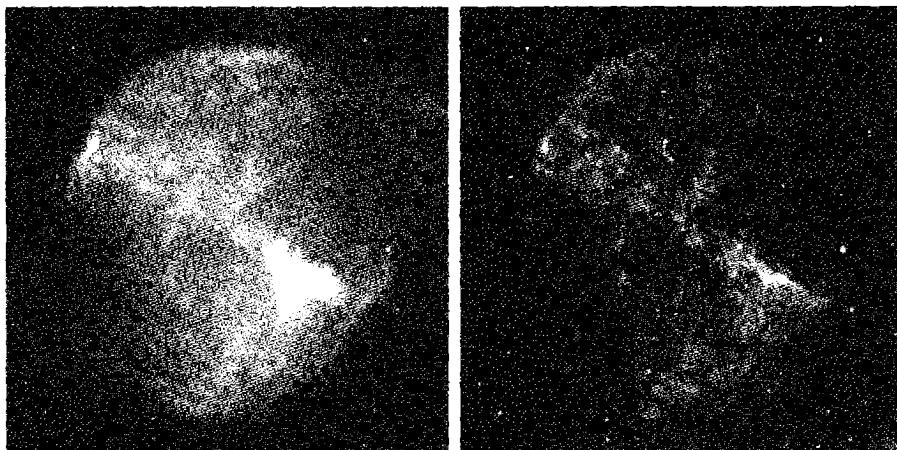
and calculated values of \delta'(T) are listed for three temperatures in Table A5.4. As the table shows, several of these rate coefficients are quite large. Thus even though the density of H^0 is small in comparison with the electron density, these charge-exchange reactions can be as important as recombination, or even more so, in determining the ionization equilibrium for these heavy ions. Similar charge reactions with He^0, and even between two heavy elements, can also make appreciable contributions to the ionization balance, and these should be included in any complete calculation.
References
Much of the early work on gaseous nebulae was done by H. Zanstra, D. H. Menzel, L. H. Aller, and others. The very important series of papers on physical processes in gaseous nebulae by D. H. Menzel and his collaborators is collected in Selected Papers on Physical Processes in Ionized Nebulae (New York: Dover) 1962. The treatment in this chapter is based on ideas that were, in many cases, given in these pioneering papers. The specific formulation and the numerical values used in this chapter are largely based on the references listed here.
Basic papers on ionization structure:
Strömgren, B. 1939, ApJ , 89, 529.
Hummer, D. G., & Seaton, M. J. 1963, MNRAS , 125, 437.
Hummer, D. G., & Seaton, M. J. 1964, MNRAS , 127, 217.
The name “Strömgren sphere” comes from the first of these papers, the pioneering basic treatment that began the theoretical understanding of H II regions.
Numerical values of H recombination coefficient:
- Seaton, M. J. 1959, MNRAS , 119, 81.
- Burgess, A. 1964, Mem. RAS , 69, 1.
- Pengelly, R. M. 1964, MNRAS , 127, 145.
- Hummer, D. G., & Storey, P. J. 1987, MNRAS , 224, 80.
- Storey, P. J., & Hummer, D. G. 1995, MNRAS , 272, 41 (on the web at http://adc.gsfc.nasa.gov/adc-cgi/cat.pl?/catalogs/6/6064/).
(Tables 2.1, 2.6, and 2.7 are based on these references.)
Numerical values of He recombination coefficient:
- Burgess, A., & Seaton, M. J. 1960, MNRAS , 121, 471.
- Robbins, R. R. 1968, ApJ , 151, 497.
- Robbins, R. R. 1970, ApJ , 160, 519.
- Brown, R. L., & Mathews, W. G. 1970, ApJ , 160, 939.
- Verner, D. A., & Ferland, G. J. 1996, ApJS , 103, 467.
- Smits, D. P. 1996, MNRAS , 278, 683.
- Benjamin, R. A., Skillman, E. D., & Smits, D. P. 1999, ApJ , 514, 307.
(Table 2.4 is based on the last two references.)
The calibration of the spectral classes in terms of effective temperature and number of ionizing photons is discussed by
- Morton, D. C. 1969, ApJ , 158, 629.
- Panagia, N. 1973, AJ , 78, 929.
- Vacca, W. D., Garmany, C. D., & Shull, J. M. 1996, ApJ , 460, 914.
- Schaerer, D., & de Koter, A. 1997, A&A , 322, 598.
- Sternberg, A., Hoffman, T. L., & Pauldrach, A. W. A. 2003, ApJ , 599, 1333.
Table 2.3 comes from the third of these references. There are only minor differences between them and the somewhat later numerical values in the last reference. There differences are especially small for the hottest and most luminous objects.
Numerical values of He (2^3S \rightarrow 2^1S and 2^1P) collisional cross sections:
- Bray, I., Burgess, A., Fursa, D. V., & Tully, J. A. 2000, A&AS , 146, 481.
Table 2.5 is based on this reference. It also gives collisional excitation rates to levels n = 3, 4, and 5, which are negligible at low temperatures and make at most a 10 percent correction at the highest temperature in Table 2.5.
Numerical values of the H and He + photoionization cross sections:
- Hummer, D. G., & Seaton, M. J. 1963, MNRAS , 125, 437.
(Figure 2.2 is based on this reference and the following ones.)
Numerical values of the He photoionization cross section:
Bell, K. L., & Kingston, A. E. 1967, Proc. Phys. Soc. , 90, 31.
Brown, R. L. 1971, ApJ , 164, 387.
Hummer, D. G., & Storey, P. J. 1998, MNRAS , 297, 1073.
Numerical values of He (2\ ^1S \rightarrow 1\ ^1S) and He (2\ ^3S \rightarrow 1\ ^1S) transition probabilities, including the frequency distribution in the 2\ ^1S \rightarrow 1\ ^1S two photon spectrum:
Lin, C. D., Johnson, W. R., & Dalgarno, A. 1977, Phys Rev A , 15, 154.
Drake, G. W. F. 1979, Phys Rev A , 19, 1387.
Hata, J., & Grant, I. P. 1981, J Phys B , 14, 2111.
Lach, G., & Pachucki, K. 2001, Phys Rev A , 64, 42510.
Early calculations of model H II regions:
Hjellming, R. M. 1966, ApJ , 143, 420.
Rubin, R. H. 1968, ApJ , 153, 761.
Rubin, R. H. 1983, ApJ , 274, 671.
(Figure 2.4 is based on the second of these references. The last emphasizes the importance of heavy-element opacity in some situations.)
Early calculations of model planetary nebulae:
Harrington, J. P. 1969, ApJ , 156, 903.
Flower, D. R. 1969, MNRAS , 146, 171.
Harrington, J. P. 1979, Planetary Nebulae, Observations and Theory (IAU Symposium No. 76), ed. Y. Terzian (Dordrecht: Reidel), p. 15.
(Figure 2.6 is based on the second of these references.)
References to other later, still more detailed models of H II regions and planetary nebulae are given in Chapter 5.
Dense neutral condensations in planetary nebulae are discussed by
O'Dell, C. R., Henney, W. J., & Burkert, A. 2000, AJ , 119, 2910.
O'Dell, C. R., 2000, AJ , 119, 2311.
Model atmospheres for hot stars are discussed in more detail in Chapter 5. In the present chapter, it is easiest to say that the simplest models are blackbodies; a much better approximation is provided by models in which the continuous spectrum is calculated; and the best models are those that also include the effects of the absorption lines, since they are strong and numerous in the ultraviolet, as well as winds. §
Chapter 3
Thermal Equilibrium
3.1 Introduction
The temperature in a static nebula is fixed by the equilibrium between heating by photoionization and cooling by recombination and by radiation from the nebula. When a photon of energy h\nu is absorbed and causes an ionization of H, the photoelectron produced has an initial energy \frac{1}{2}mu^2 = h(\nu - \nu_0), and we may think of an electron being "created" with this energy. The electrons thus produced are rapidly thermalized, as indicated in Chapter 2, and in ionization equilibrium these photoionizations are balanced by an equal number of recombinations. In each recombination, a thermal electron with energy \frac{1}{2}mu^2 disappears, and an average of this quantity over all recombinations represents the mean energy that "disappears" per recombination. The difference between the mean energy of a newly created photoelectron and the mean energy of a recombining electron represents the net gain in energy by the electron gas per ionization process. In equilibrium this net energy gain is balanced by the energy lost by radiation, chiefly by electron collisional excitation of bound levels of abundant ions, followed by emission of photons that can escape from the nebula. Free-free emission, or bremsstrahlung, is another, less important radiative energy-loss mechanism.
3.2 Energy Input by Photoionization
Let us first examine the energy input by photoionization. As in Chapter 2, it is simplest to begin by considering a pure H nebula. At any specific point in the nebula, the energy input (per unit volume per unit time) is
G(\text{H}) = n(\text{H}^0) \int_{\nu_0}^{\infty} \frac{4\pi J_{\nu}}{h\nu} h(\nu - \nu_0) a_{\nu}(\text{H}^0) d\nu \text{ [erg cm}^{-3} \text{s}^{-1}]. \quad (3.1)
| Model stellar atmosphere T_* (K) | T_i (K) | |||
|---|---|---|---|---|
| \tau_0 = 0 | \tau_0 = 1 | \tau_0 = 5 | \tau_0 = 10 | |
| 3.0 \times 10^4 | 1.58 \times 10^4 | 1.87 \times 10^4 | 3.36 \times 10^4 | 5.02 \times 10^4 |
| 3.5 \times 10^4 | 2.08 \times 10^4 | 2.48 \times 10^4 | 4.24 \times 10^4 | 5.94 \times 10^4 |
| 4.0 \times 10^4 | 2.48 \times 10^4 | 3.01 \times 10^4 | 5.48 \times 10^4 | 8.15 \times 10^4 |
| 5.0 \times 10^4 | 3.33 \times 10^4 | 4.12 \times 10^4 | 7.50 \times 10^4 | 10.60 \times 10^4 |
Furthermore, since the nebula is in ionization equilibrium, we may eliminate n(\text{H}^0) by substituting Equation (2.8), giving
\begin{aligned} G(\text{H}) &= n_e n_p \alpha_A(\text{H}^0, T) \frac{\int_{\nu_0}^{\infty} \frac{4\pi J_\nu}{h\nu} h(\nu - \nu_0) a_\nu(\text{H}^0) d\nu}{\int_{\nu_0}^{\infty} \frac{4\pi J_\nu}{h\nu} a_\nu(\text{H}^0) d\nu} \\ &= n_e n_p \alpha_A(\text{H}^0, T) \frac{3}{2} kT_i \end{aligned} \tag{3.2}
From this equation it can be seen that the mean energy of a newly created photoelectron depends on the form of the ionizing radiation field, but not on the absolute strength of the radiation. The rate of creation of photoelectrons depends on the strength of the radiation field, or, as Equation (3.2) shows, on the recombination rate. The quantity \frac{3}{2}kT_i represents the initial temperature of the newly created photoelectrons. For assumed blackbody spectra with J_\nu = B_\nu(T_*), it is easy to show that T_i \approx T_* so long as kT_* < h\nu_0. For any known J_\nu (for instance, the emergent spectrum from a model atmosphere), the integration can be carried out numerically; a short list of representative values of T_i is given in Table 3.1. Note that the second column in the table, \tau_0 = 0, corresponds to photoionization by the emergent model-atmosphere spectrum. At larger distances from the star, the spectrum of the ionizing radiation is modified by absorption in the nebula, the radiation nearest the series limit being most strongly attenuated because of the frequency dependence of the absorption coefficient. Therefore, the higher-energy photons penetrate further into the gas, and the mean energy of the photoelectrons produced at larger optical depths from the star is higher. This effect is shown for a pure H nebula in the columns labeled with values of \tau_0, the optical depth at the ionization limit.
| T (K) | \beta_A | \beta_1 | \beta_B |
|---|---|---|---|
| 2,500 | 9.02 \times 10^{-13} | 3.22 \times 10^{-13} | 5.80 \times 10^{-13} |
| 5,000 | 5.48 \times 10^{-13} | 2.23 \times 10^{-13} | 3.24 \times 10^{-13} |
| 10,000 | 3.25 \times 10^{-13} | 1.52 \times 10^{-13} | 1.73 \times 10^{-13} |
| 20,000 | 1.88 \times 10^{-13} | 1.00 \times 10^{-13} | 8.75 \times 10^{-14} |
3.3 Energy Loss by Recombination
The kinetic energy lost by the electron gas (per unit volume per unit time) in recombination can be written
L_R(\text{H}) = n_e n_p k T \beta_A(\text{H}^0, T), \quad [\text{erg cm}^{-3} \text{s}^{-1}] \quad (3.3)
where
\beta_A(\text{H}^0, T) = \sum_{n=1}^{\infty} \beta_n(\text{H}^0, T) = \sum_{n=1}^{\infty} \sum_{L=0}^{n-1} \beta_{nL}(\text{H}^0, T) \quad [\text{cm}^3 \text{s}^{-1}] \quad (3.4)
with
\beta_{nL}(\text{H}^0, T) = \frac{1}{kT} \int_0^{\infty} u \sigma_{nL}(\text{H}^0, T) \frac{1}{2} m u^2 f(u) du. \quad (3.5)
The left-hand side of Equation (3.5) is thus effectively a kinetic energy averaged recombination coefficient. Note that since the recombination cross sections are approximately proportional to u^{-2}, the electrons of lower kinetic energy are preferentially captured, and the mean energy of the captured electrons is somewhat less than \frac{3}{2}kT. Calculated values of \beta_1 and \beta_A are listed in Table 3.2.
In a pure H nebula that had no radiation losses, the thermal equilibrium equation would be
G(\text{H}) = L_R(\text{H}), \quad (3.6)
and the solution for the nebular temperature would give a T > T_i because of the "heating" due to the preferential capture of the slower electrons.
The radiation field J_\nu in Equation (3.1) should, of course, include the diffuse radiation as well as the stellar radiation modified by absorption. This can easily be included in the on-the-spot approximation, since, according to it, every emission of an ionizing photon during a recombination to the level n = 1 is balanced by absorption of the same photon at a nearby spot in the nebula. Thus production of photons by the diffuse radiation field and recombinations to the ground level can simply be omitted from the gain and loss rates, leading to the equations
\begin{aligned} G_{OTS}(\text{H}) &= n(\text{H}^0) \int_{\nu_0}^{\infty} \frac{4\pi J_{\nu s}}{h\nu} h(\nu - \nu_0) a_\nu(\text{H}^0) d\nu \\ &= n_e n_p \alpha_B(\text{H}^0, T) \frac{\int_{\nu_0}^{\infty} \frac{4\pi J_{\nu s}}{h\nu} h(\nu - \nu_0) a_\nu(\text{H}^0) d\nu}{\int_{\nu_0}^{\infty} \frac{4\pi J_{\nu s}}{h\nu} a_\nu(\text{H}^0) d\nu} \end{aligned} \quad (3.7)
and
L_{OTS}(\text{H}) = n_e n_p kT \beta_B(\text{H}^0, T), \quad (3.8)
with
\beta_B(\text{H}^0, T) = \sum_{n=2}^{\infty} \beta_n(\text{H}^0, T). \quad (3.9)
The on-the-spot approximation is not as accurate for the thermal equilibrium as it is in the ionization equation, because of the fairly large difference in h(\nu - \nu_0) between the ionizing photons in the stellar and diffuse radiation fields, but it may be improved by further iterations if necessary.
The generalization to include He in the heating and recombination cooling rates is straightforward to write, namely,
G = G(\text{H}) + G(\text{He}), \quad (3.10)
where
G(\text{He}) = n_e n(\text{He}^+) \alpha_A(\text{He}^0, T) \frac{\int_{\nu_2}^{\infty} \frac{4\pi J_\nu}{h\nu} h(\nu - \nu_2) a_\nu(\text{He}^0) d\nu}{\int_{\nu_2}^{\infty} \frac{4\pi J_\nu}{h\nu} a_\nu(\text{He}^0) d\nu} \quad (3.11)
and
L_R = L_R(\text{H}) + L_R(\text{He}), \quad (3.12)
with
L_R(\text{He}) = n_e n(\text{He}^+) kT \beta_A(\text{He}^0, T) \quad (3.13)
and so on.
It can be seen that the heating and recombination cooling rates are proportional to the densities of the ions involved, so the contributions of the heavy elements, which are much less abundant than H and He, can, to a good approximation, be omitted from these rates.
3.4 Energy Loss by Free-Free Radiation
Next we will examine cooling by radiation processes that do not involve recombination. In most circumstances such cooling is far more important than the recombination cooling, and therefore dominates the thermal equilibrium. A minor contributor to the cooling rate, which nevertheless is important because it can occur even in a pure H nebula, is free-free radiation or bremsstrahlung, in which a continuous spectrum is emitted. The rate of cooling by this process by ions of charge Z, integrated over all frequencies, is, to a fair approximation,
\begin{aligned} L_{FF}(Z) &= 4\pi j_{ff} \\ &= \frac{2^5 \pi e^6 Z^2}{3^{3/2} h m c^3} \left( \frac{2\pi kT}{m} \right)^{1/2} g_{ff} n_e n_+ \text{ [erg cm}^{-3} \text{ s}^{-1}] \\ &= 1.42 \times 10^{-27} Z^2 T^{1/2} g_{ff} n_e n_+ \end{aligned}
where n_+ is the number density of the ions. Again \text{H}^+ dominates the free-free cooling, because of its abundance, and \text{He}^+ can be included with \text{H}^+ (since both have Z = 1) by writing n_+ = n_p + n(\text{He}^+). The numerical factor g_{ff} is called the mean Gaunt factor for free-free emission; it is a slowly varying function of n_e and T, generally for nebular conditions in the range 1.0 < g_{ff} < 1.5, and a good average value to adopt is g_{ff} \approx 1.3.
3.5 Energy Loss by Collisionally Excited Line Radiation
A far more important source of radiative cooling is collisional excitation of low-lying energy levels of common ions, such as \text{O}^+, \text{O}^{++}, and \text{N}^+. These ions make a significant contribution in spite of their low abundance because they have energy levels with excitation potentials of the order of kT, but all the levels of H and He have much higher excitation potentials, and therefore are usually not important as collisionally excited coolants. Let us therefore examine how an ion is excited to level 2 by electron collisions with ions in the lower level 1. The cross section for excitation
\sigma_{12}(u) is a function of electron velocity u and is zero below the threshold \chi = h\nu_{21}. Not too far above the threshold, the main dependence of the excitation cross section is \sigma \propto u^{-2} (because of the focusing effect of the Coulomb force); so it is convenient to express the collision cross sections in terms of the energy-specific collision strength \Omega(1, 2) defined by
\sigma_{12}(u) = \frac{\pi \hbar^2}{m^2 u^2} \frac{\Omega(1, 2)}{\omega_1} \text{ for } \frac{1}{2} m u^2 > \chi, \quad (3.14)
where \Omega(1, 2) is a function of electron velocity (or energy) but is often approximately constant near the threshold, and \omega_1 is the statistical weight of the lower level.
There is a relation between the cross section for deexcitation, \sigma_{21}(u), and the cross section for excitation, namely
\omega_1 u_1^2 \sigma_{12}(u_1) = \omega_2 u_2^2 \sigma_{21}(u_2) \quad (3.15)
where u_1 and u_2 are related by
\frac{1}{2} m u_1^2 = \frac{1}{2} m u_2^2 + \chi. \quad (3.16)
Equation (3.15) can easily be derived from the principle of detailed balancing, which states that in thermodynamic equilibrium each microscopic process is balanced by its inverse. Thus in this particular case, the number of excitations caused by collisions with electrons in the velocity range u_1 to u_1 + du_1 is just balanced by the deexcitations caused by collisions that produce electrons in the same velocity range. Thus
n_e n_1 u_1 \sigma_{12}(u_1) f(u_1) du_1 = n_e n_2 u_2 \sigma_{21}(u_2) f(u_2) du_2,
and using the Boltzmann equation of thermodynamic equilibrium,
\frac{n_2}{n_1} = \frac{\omega_2}{\omega_1} \exp(-\chi/kT),
we derive the relation (3.15). Combining Equations (3.14) and (3.15), so that the deexcitation cross section can be expressed in terms of the collision strength \Omega(1, 2),
\sigma_{21}(u_2) = \frac{\pi \hbar^2}{m^2 u_2^2} \frac{\Omega(1, 2)}{\omega_2}; \quad (3.17)
that is, the collision strengths are symmetrical in 1 and 2.
The total collisional deexcitation rate per unit volume per unit time is
\begin{aligned} n_e n_2 q_{21} &= n_e n_2 \int_0^\infty u \sigma_{21} f(u) du \\ &= n_e n_2 \left( \frac{2\pi}{kT} \right)^{1/2} \frac{\hbar^2}{m^{3/2}} \frac{\Upsilon(1, 2)}{\omega_2} [\text{cm}^{-3} \text{ s}^{-1}] \\ &= n_e n_2 \frac{8.629 \times 10^{-6}}{T^{1/2}} \frac{\Upsilon(1, 2)}{\omega_2} \end{aligned} \tag{3.18}
where \Upsilon(1, 2) is the velocity-averaged collision strength
\Upsilon(1, 2) = \int_0^\infty \Omega(1, 2; E) \exp(-E/kT) d\left(\frac{E}{kT}\right) \tag{3.19}
with E = \frac{1}{2} m u^2. Likewise, the collisional excitation rate per unit volume per unit time is n_e n_1 q_{12}, where
\begin{aligned} q_{12} &= \frac{\omega_2}{\omega_1} q_{21} \exp(-\chi/kT) \\ &= \frac{8.629 \times 10^{-6}}{T^{1/2}} \frac{\Upsilon(1, 2)}{\omega_1} \exp(-\chi/kT) [\text{cm}^3 \text{ s}^{-1}] \end{aligned} \tag{3.20}
The collision strengths must be calculated quantum-mechanically, and some of the most important numerical values are listed in Tables 3.3 through 3.7. Each collision strength in general consists of a part that varies slowly with energy, on which, in many cases, there are superimposed resonance contributions that vary rapidly with energy; but when the cross sections are integrated over a Maxwellian distribution, as in almost all astrophysical applications, the effect of the exact positions of the resonances tends to be averaged out. The resulting averaged collision strengths, calculated from Equation (3.19), are given in Tables 3.3 to 3.7, evaluated at T = 10,000 K, a representative nebular temperature. It is convenient to remember that,
| Ion | 2s \ ^2S, 2p \ ^2P^o | Ion | 3s \ ^2S^o, 3p \ ^2P^o |
|---|---|---|---|
| \text{C}^{+3} | 8.91 | \text{Mg}^{+} | 16.9 |
| \text{N}^{+4} | 6.81 | \text{Si}^{+3} | 16.0 |
| \text{O}^{+5} | 5.21 |
Cochrane, D. M., & McWhirter, R. W. P. 1983, PhyS , 28, 25.
McWhirter, R. W. P. 1994, ADNDT , 57, 39.
| Ion | ^1S, ^3P^o | ^3P_0^o, ^3P_1^o | ^3P_0^o, ^3P_2^o | ^3P_1^o, ^3P_2^o |
|---|---|---|---|---|
| C +2 | 1.05 | 0.96 | 0.72 | 2.78 |
| N +3 | 1.07 | 1.14 | 0.83 | 3.29 |
| O +4 | 0.82 | 0.67 | 0.65 | 2.32 |
| Al +1 | 3.35 | 1.89 | 1.94 | 6.72 |
| Si +2 | 5.56 | 1.81 | 3.62 | 10.4 |
| S +4 | 1.9 | — | — | — |
C +2 Berrington, K. A., Burke, P. G., Dufton, P. L., & Kingston, A. E. 1985, ADNDT, 33, 195; N +3 , O +4 Ramsbottom, C. A., Berrington, K. A., Hibbert, A., & Bell, K. L. 1994, Physica Scripta, 50, 246; O +4 McKenna, R. C., et al. 1997, ApJ, 486, 571; Al +1 Aggarwal, K. M., & Keenan, F. P. 1998, J. Phys. B, 31, 4545, and Aggarwal, K. M., & Keenan, F. P. 1994, J. Phys. B, 27, 5321; Si +2 Dufton, P. L., & Kingston, A. E. 1994, ADNDT, 57, 273; S +4 Dufton, P. L., & Kingston, A. E. 1984, J. Phys. B, 17, 3321 (extrapolated).
| Ion | ^1P_{1/2}^o, ^1P_{3/2}^o | Ion | ^1P_{1/2}^o, ^1P_{3/2}^o |
|---|---|---|---|
| C + | 2.15 | Si + | 5.70 |
| N +2 | 1.45 | S +3 | 8.54 |
| O +3 | 2.34 | Ar +5 | 6.33 |
| Ne +5 | 3.21 | ||
| Ne + | 0.28 | Ar + | 2.93 |
| Mg +3 | 0.36 | Ca +3 | 1.00 |
| Si +5 | 0.30 |
B-like ions from Blum, R. D., & Pradhan, A. K. 1992, ApJS 80, 425; F-like ions from Saraph, H. E. & Tully, J. A. 1994, A&AS, 107, 29; Si + Dufton, P. L., & Kingston, A. E. 1994, ADNDT, 57, 273, S +3 Tayal, S. S. 2000, ApJ, 530, 1091; Ar +5 Saraph, H. E., & Storey, P. J. 1996, A&AS, 115, 151; Ar + , Ca +3 Pelan, J., & Berrington, K. A. 1995, A&AS, 110, 209.
for an electron with the mean energy at a typical nebular temperature, T \approx 7,500 K, the cross sections for excitation and deexcitation are \sigma \approx 10^{-15} \Upsilon / \omega \text{ cm}^2.
Note that there is a simple relation for the collision strengths between a term consisting of a single level and a term consisting of various levels, namely,
\Upsilon(SLJ, S'L'J') = \frac{(2J' + 1)}{(2S' + 1)(2L' + 1)} \Upsilon(SL, S'L') \quad (3.21)
| Ion | ^3P, ^1D | ^3P, ^1S | ^1D, ^1S | ^3P_0, ^3P_1 | ^3P_0, ^3P_2 | ^3P_1, ^3P_2 | ^3P, ^5S^o |
|---|---|---|---|---|---|---|---|
| N + | 2.64 | 0.29 | 0.83 | 0.41 | 0.27 | 1.12 | 1.27 |
| O +2 | 2.29 | 0.29 | 0.58 | 0.55 | 0.27 | 1.29 | 0.18 |
| Ne +4 | 2.09 | 0.25 | 0.58 | 1.41 | 1.81 | 5.83 | 1.51 |
| Ne +2 | 1.36 | 0.15 | 0.27 | 0.24 | 0.21 | 0.77 | — |
| S +2 | 6.95 | 1.18 | 1.38 | 3.98 | 1.31 | 7.87 | 2.85 |
| Ar +4 | 3.21 | 0.56 | 1.65 | 2.94 | 1.84 | 7.81 | — |
| Ar +2 | 4.83 | 0.84 | 1.22 | 1.26 | 0.67 | 3.09 | — |
N + , O +2 , and Ne +4 from Lennon, D. J., & Burke, V. M. 1994, A&AS, 103, 273; Ne +2 from Butler, K., & Zeippen, C. J. 1994, A&AS, 108, 1; S +2 from Tayal, S. S., and Gupta, G. P. 1999 ApJ 526, 544; Ar +2 , Ar +4 from Galavis, M. E., Mendoza, C., & Zeippen, C. J. 1995, A&AS, 111, 347.
| Ion | ^4S^o, ^2D^o | ^4S^o, ^2P^o | ^2D^o_{3/2}, ^2D^o_{5/2} | ^2D^o_{3/2}, ^2P^o_{1/2} |
|---|---|---|---|---|
| O + | 1.34 | 0.40 | 1.17 | 0.28 |
| Ne +3 | 1.40 | 0.47 | 1.36 | 0.34 |
| S + | 6.90 | 3.53 | 7.47 | 1.79 |
| Ar +3 | 1.90 | 1.18 | 7.06 | 1.51 |
| Ion | ^2D^o_{3/2}, ^2P^o_{3/2} | ^2D^o_{5/2}, ^2P^o_{1/2} | ^2D^o_{3/2}, ^2D^o_{5/2} | ^2P^o_{1/2}, ^2P^o_{3/2} |
|---|---|---|---|---|
| O + | 0.82 | 0.33 | 1.23 | 0.157 |
| Ne +3 | 0.51 | 0.37 | 0.90 | 0.34 |
| S + | 3.00 | 2.20 | 4.99 | 2.71 |
| Ar +3 | 2.14 | 1.53 | 7.06 | 2.07 |
O + Pradhan, A. K. 1976, MNRAS, 177, 31, 1998, and J Phys B, 31, 4317; Ne +3 , Giles, K. 1981, MNRAS, 195, 63, and Ramsbottom, C. A., Bell, K. L., & Keenan, F. P. 1998, MNRAS, 293, 233; S + Ramsbottom, C. A., Bell, K. L., Stafford, R. P. 1996, ADNDT, 63, 57; Ar +3 Ramsbottom, C. A., & Bell, K. L. 1997, ADNDT, 66, 65.
if either S = 0 or L = 0. The factors (2J' + 1) and (2S' + 1)(2L' + 1) are the statistical weights of the level and of the term, respectively. On account of this relation, the rate of collisional excitation in p^2 or p^4 ions (such as O ++ ) from the ground ^3P term to the excited (singlet) ^1D and ^1S levels is very nearly independent of the distribution of ions among ^3P_0, ^3P_1, and ^3P_2.
| Transition | C III] | N IV] | O V] | |||
|---|---|---|---|---|---|---|
| A \text{ (s}^{-1}\text{)} | \lambda \text{ (Å)} | A \text{ (s}^{-1}\text{)} | \lambda \text{ (Å)} | A \text{ (s}^{-1}\text{)} | \lambda \text{ (Å)} | |
| ^1S_0 - ^3P_2^o | 0.0052 | 1906.7 | 0.011 | 1483.2 | 0.022 | 1213.8 |
| ^1S_0 - ^3P_1^o | 104 | 1908.7 | 680 | 1486.5 | 2280 | 1218.3 |
N IV], Flemming, J., Brage, T., Bell, K. L., Vaecck, N., Hibbert, A., Godefroid, M., & Froese Fischer, C. 1995, ApJ, 455, 758; C III], OV], Flemming, J., Bell, K. L. K., Hibbert, A., Vaecck, N., & Godefroid, M. 1996, MNRAS, 279, 1289.
| Transition | C II | N III | O IV | |||
|---|---|---|---|---|---|---|
| A \text{ (s}^{-1}\text{)} | \lambda \text{ (Å)} | A \text{ (s}^{-1}\text{)} | \lambda \text{ (Å)} | A \text{ (s}^{-1}\text{)} | \lambda \text{ (Å)} | |
| ^2P_{1/2}^o - ^2P_{3/2}^o | 2.3 \times 10^{-6} | 157.74 \mu\text{m} | 4.7 \times 10^{-5} | 57.343 \mu\text{m} | 5.2 \times 10^{-4} | 25.913 \mu\text{m} |
| ^2P_{1/2}^o - ^4P_{1/2} | 7.3 \times 10^1 | 2324.7 | 4.2 \times 10^2 | 1748.6 | 1.7 \times 10^3 | 1399.8 |
| ^2P_{1/2}^o - ^4P_{3/2} | 1.6 | 2323.6 | 1.2 \times 10^2 | 1746.8 | 4.8 \times 10^1 | 1397.2 |
| ^2P_{3/2}^o - ^4P_{1/2} | 7.6 \times 10^1 | 2328.1 | 4.5 | 1754.0 | 1.8 \times 10^3 | 1407.4 |
| ^2P_{3/2}^o - ^4P_{3/2} | 1.1 \times 10^1 | 2326.9 | 7.0 \times 10^1 | 1752.2 | 3.1 \times 10^2 | 1404.8 |
| ^2P_{3/2}^o - ^4P_{5/2} | 5.3 \times 10^1 | 2325.4 | 3.2 \times 10^2 | 1749.7 | 1.3 \times 10^3 | 1401.2 |
Galavis, M. E., Mendoza, C., & Zeippen, C. J. 1998, A&AS, 131, 499; Wiese, W. L., Fuhr, J. R., & Deters, T. M. 1996, J. Chem Phys Ref Data Monograph No. 7; Kaufman, J., & Sugar, J. 1986, J. Chem Phys Ref Data 15, 321.
For all the low-lying levels of the ions listed in Tables 3.3 through 3.5, the excited levels arise from the same electron configurations as the ground level. Radiative transitions between these excited levels and the ground level are forbidden by the electric-dipole selection rules, but can occur by magnetic-dipole and/or electric-quadrupole transitions. These are the well known forbidden lines, many of which are observed in nebular spectra, in the optical, infrared, or ultraviolet regions. Transition probabilities, as well as wavelengths for the observable lines, are listed in Tables 3.8 through 3.14.
For an ion with a single excited level, in the limit of very low electron density, every collisional excitation is followed by the emission of a photon, and the cooling rate per unit volume is therefore
L_C = n_e n_1 q_{12} h\nu_{21}. \quad (3.22)
| Transition | Si II | S IV | ||
|---|---|---|---|---|
| A (s^{-1}) | \lambda (\text{\AA}) | A (s^{-1}) | \lambda (\text{\AA}) | |
| ^2P_{1/2}^o - ^2P_{3/2}^o | 2.2 \times 10^{-4} | 34.814 \mu\text{m} | 7.8 \times 10^{-3} | 10.514 \mu\text{m} |
| ^2P_{1/2}^o - ^4P_{1/2} | 6.3 \times 10^3 | 2334.4 | 5.1 \times 10^4 | 1408.8 |
| ^2P_{1/2}^o - ^4P_{3/2} | 2.0 \times 10^1 | 2328.5 | 7.0 \times 10^2 | 1395.1 |
| ^2P_{3/2}^o - ^4P_{1/2} | 4.9 \times 10^3 | 2350.2 | 3.8 \times 10^4 | 1420.5 |
| ^2P_{3/2}^o - ^4P_{3/2} | 1.7 \times 10^3 | 2344.2 | 1.5 \times 10^4 | 1413.6 |
| ^2P_{3/2}^o - ^4P_{5/2} | 2.7 \times 10^3 | 2334.6 | 3.5 \times 10^4 | 1402.8 |
Si II, Dufton, P. L., & Kingston, A. E. 1991, MNRAS, 248, 827; S IV; \lambda and A(\text{UV}), Gupta, G. P., & Msezane, A. Z. 2000, ApJS, 130, 227; S^{+4} A(\text{IR}), Johnson, C. T., Kingston, A. E., Dufton, P. L. 1986, MNRAS 220. 155.
| Ion | A (s^{-1}) | \lambda (\mu\text{m}) |
|---|---|---|
| Ne II | 8.6 \times 10^{-3} | 12.814 |
| Mg IV | 2.0 \times 10^{-1} | 4.487 |
| Ar II | 5.3 \times 10^{-2} | 6.983 |
| Ca IV | 5.5 \times 10^{-1} | 3.206 |
Kaufman, J., & Sugar, J. 1986, J. Chem. Phys. Ref. Data 15, 321.
However, if the density is sufficiently high, collisional deexcitation is not negligible and the cooling rate is reduced. The equilibrium equation for the balance between the excitation and deexcitation rates of the excited level is, in general,
n_e n_1 q_{12} = n_e n_2 q_{21} + n_2 A_{21}, \quad (3.23)
and the solution is
\frac{n_2}{n_1} = \frac{n_e q_{12}}{A_{21}} \left[ \frac{1}{1 + \frac{n_e q_{21}}{A_{21}}} \right], \quad (3.24)
| Transition | [N II] | [O III] | [Ne V] | [S III] | [Ar V] | |||||
|---|---|---|---|---|---|---|---|---|---|---|
| A (s^{-1}) | \lambda (Å) | A (s^{-1}) | \lambda (Å) | A (s^{-1}) | \lambda (Å) | A (s^{-1}) | \lambda (Å) | A (s^{-1}) | \lambda (Å) | |
| 1D_2-1S_0 | 1.0 | 5754.6 | 1.6 | 4363.2 | 2.8 | 2972.8 | 2.3 | 6312.0 | 3.5 | 4625.3 |
| 3P_2-1S_0 | 1.3 \times 10^{-4} | 3070.8 | 6.1 \times 10^{-4} | 2331.4 | 6.3 \times 10^{-3} | 1593.3 | 1.3 \times 10^{-2} | 3797.2 | 6.8 \times 10^{-2} | 2786.0 |
| 3P_1-1S_0 | 3.3 \times 10^{-2} | 3062.8 | 2.3 \times 10^{-1} | 2321.0 | 4.0 | 1574.6 | 8.4 \times 10^{-1} | 3721.7 | 6.7 | 2691.0 |
| 3P_2-1D_2 | 3.0 \times 10^{-3} | 6583.4 | 2.0 \times 10^{-2} | 5006.9 | 3.5 \times 10^{-1} | 3425.9 | 5.5 \times 10^{-2} | 9531.0 | 4.7 \times 10^{-1} | 7005.9 |
| 3P_1-1D_2 | 9.8 \times 10^{-4} | 6548.0 | 6.8 \times 10^{-3} | 4958.9 | 1.2 \times 10^{-1} | 3345.9 | 2.1 \times 10^{-2} | 9068.9 | 2.0 \times 10^{-1} | 6435.1 |
| 3P_0-1D_2 | 3.6 \times 10^{-7} | 6527.1 | 1.7 \times 10^{-6} | 4931.1 | 1.9 \times 10^{-5} | 3300.5 | 1.3 \times 10^{-5} | 8829.9 | 6.1 \times 10^{-5} | 6133.8 |
| 3P_1-3P_2 | 7.5 \times 10^{-6} | 12189 \mu m | 9.7 \times 10^{-5} | 51814 \mu m | 4.6 \times 10^{-3} | 1432 \mu m | 2.1 \times 10^{-3} | 18713 \mu m | 2.7 \times 10^{-2} | 7.9 \mu m |
| 3P_0-3P_2 | 1.1 \times 10^{-12} | 76.5 \mu m | 3.1 \times 10^{-11} | 32661 \mu m | 5.0 \times 10^{-9} | 9.01 \mu m | 4.3 \times 10^{-8} | 12.00 \mu m | 1.2 \times 10^{-6} | 4.9 \mu m |
| 3P_0-3P_1 | 2.1 \times 10^{-6} | 205.5 \mu m | 2.7 \times 10^{-5} | 88356 \mu m | 1.3 \times 10^{-3} | 24.28 \mu m | 4.7 \times 10^{-4} | 33.47 \mu m | 8.0 \times 10^{-3} | 13.1 \mu m |
| 3P_2-5S_0 | 1.3 \times 10^{+2} | 2142.8 | 5.8 \times 10^{+2} | 1666.2 | 6.0 \times 10^{+3} | 1146.1 | 1.2 \times 10^4 | 1728.9 | — | — |
| 3P_1-5S_0 | 5.5 \times 10^{+1} | 2139.0 | 2.4 \times 10^{+2} | 1660.8 | 2.4 \times 10^3 | 1137.0 | 4.4 \times 10^3 | 1713.1 | — | — |
C-like: Galavis, M. E., Mendoza, C., & Zeippen, C. J. 1997, A&AS, 123, 159; Mendoza, C., Zeippen, C. J., & Storey, P. J. 1999, A&AS, 135, 159; Storey, P. J. & Zeippen, C. J. 2000, MNRAS, 312, 813; Si-like: Tayal, S. S. 1997, ADNDT, 67, 331; Biemont, E., & Bromage, G. E. 1983, MNRAS, 205, 1085.
| Transition | [N I] | [O II] | [Ne IV] | [S II] | [Ar IV] | |||||
|---|---|---|---|---|---|---|---|---|---|---|
| A\ (s^{-1}) | \lambda\ (\text{\AA}) | A\ (s^{-1}) | \lambda\ (\text{\AA}) | A\ (s^{-1}) | \lambda\ (\text{\AA}) | A\ (s^{-1}) | \lambda\ (\text{\AA}) | A\ (s^{-1}) | \lambda\ (\text{\AA}) | |
| {}^2P^o_{1/2} - {}^2P^o_{3/2} | 5.1 \times 10^{-13} | 25.9 \mu m | 1.3 \times 10^{-10} | 5.01 \mu m | 2.6 \times 10^{-9} | 1.56 \mu m | 1.0 \times 10^{-6} | 214.10 \mu m | 4.9 \times 10^{-5} | 56.47 \mu m |
| {}^2D^o_{5/2} - {}^2P^o_{3/2} | 6.1 \times 10^{-2} | 10397.7 | 1.1 \times 10^{-1} | 7319.9 | 3.9 \times 10^{-1} | 4714.2 | 1.8 \times 10^{-1} | 10320.4 | 6.0 \times 10^{-1} | 7237.5 |
| {}^2D^o_{3/2} - {}^2P^o_{3/2} | 2.8 \times 10^{-2} | 10407.2 | 5.8 \times 10^{-2} | 7330.7 | 4.3 \times 10^{-1} | 4724.2 | 1.3 \times 10^{-1} | 10286.7 | 7.9 \times 10^{-1} | 7170.5 |
| {}^2D^o_{5/2} - {}^2P^o_{1/2} | 3.5 \times 10^{-2} | 10398.1 | 5.6 \times 10^{-2} | 7318.8 | 1.1 \times 10^{-1} | 4715.6 | 7.8 \times 10^{-2} | 10370.5 | 1.2 \times 10^{-1} | 7331.4 |
| {}^2D^o_{3/2} - {}^2P^o_{1/2} | 5.3 \times 10^{-2} | 10407.6 | 9.4 \times 10^{-2} | 7329.6 | 3.8 \times 10^{-1} | 4725.6 | 1.6 \times 10^{-1} | 10336.3 | 6.0 \times 10^{-1} | 7262.7 |
| {}^4S^o_{3/2} - {}^2P^o_{3/2} | 6.6 \times 10^{-3} | 3466.5 | 5.7 \times 10^{-2} | 2470.3 | 1.2 \times 10^0 | 1600.0 | 2.2 \times 10^{-1} | 4068.6 | 2.6 | 2853.7 |
| {}^4S^o_{3/2} - {}^2P^o_{1/2} | 2.7 \times 10^{-3} | 3466.5 | 2.3 \times 10^{-2} | 2470.2 | 5.0 \times 10^{-1} | 1600.1 | 9.1 \times 10^{-2} | 4076.4 | 8.6 \times 10^{-1} | 2868.2 |
| {}^2D^o_{5/2} - {}^2D^o_{3/2} | 1.1 \times 10^{-8} | 1.148 \mu m | 1.3 \times 10^{-7} | 497.1 \mu m | 1.5 \times 10^{-6} | 223.7 \mu m | 3.3 \times 10^{-7} | 314.5 \mu m | 2.3 \times 10^{-5} | 77.41 \mu m |
| {}^4S^o_{3/2} - {}^2D^o_{5/2} | 6.9 \times 10^{-6} | 5200.3 | 3.6 \times 10^{-5} | 3728.8 | 4.4 \times 10^{-4} | 2420.9 | 2.6 \times 10^{-4} | 6716.5 | 1.8 \times 10^{-3} | 4711.3 |
| {}^4S^o_{3/2} - {}^2D^o_{3/2} | 1.6 \times 10^{-5} | 5197.9 | 1.6 \times 10^{-4} | 3726.0 | 5.5 \times 10^{-3} | 2418.2 | 8.8 \times 10^{-4} | 6730.8 | 2.2 \times 10^{-2} | 4740.2 |
[O II] Zeippen, C. J. 1987, A&A, 173, 410; [Ne IV] Becker, S. R., Butler, K., & Zeippen, C. J. 1989, A&A, 221, 375; P-like from Mendoza, C., & Zeippen, C. J. 1982, MNRAS, 198, 127; [N I] wavelengths from Slanger, T. G., Huestis, D. L., Cosby, P. C., Osterbrock, D. E. 2000, J. Chem. Phys. 113, 8514.
| Transition | [O I] | [Ne III] | [Ar III] | |||
|---|---|---|---|---|---|---|
| A \text{ (s}^{-1}\text{)} | \lambda \text{ (\AA)} | A \text{ (s}^{-1}\text{)} | \lambda \text{ (\AA)} | A \text{ (s}^{-1}\text{)} | \lambda \text{ (\AA)} | |
| ^1D_2 - ^1S_0 | 1.1 | 5577.3 | 2.6 \times 10^0 | 3342.4 | 2.6 \times 10^0 | 5191.8 |
| ^3P_2 - ^1S_0 | 2.9 \times 10^{-4} | 2958.4 | 4.0 \times 10^{-3} | 1793.7 | 4.2 \times 10^{-2} | 3005.4 |
| ^3P_1 - ^1S_0 | 7.9 \times 10^{-2} | 2972.3 | 2.0 \times 10^0 | 1814.6 | 3.9 \times 10^0 | 3109.2 |
| ^3P_2 - ^1D_2 | 6.4 \times 10^{-3} | 6300.3 | 1.7 \times 10^{-1} | 3868.8 | 3.1 \times 10^{-1} | 7135.8 |
| ^3P_1 - ^1D_2 | 2.1 \times 10^{-3} | 6363.8 | 5.4 \times 10^{-2} | 3967.5 | 8.2 \times 10^{-2} | 7751.1 |
| ^3P_0 - ^1D_2 | 6.4 \times 10^{-7} | 6391.8 | 8.3 \times 10^{-6} | 4011.7 | 2.2 \times 10^{-5} | 8036.9 |
| ^3P_1 - ^3P_0 | 1.8 \times 10^{-5} | 145.53 \mu\text{m} | 1.2 \times 10^{-3} | 36.02 \mu\text{m} | 5.2 \times 10^{-3} | 21.842 \mu\text{m} |
| ^3P_2 - ^3P_0 | 1.3 \times 10^{-10} | 44.047 \mu\text{m} | 2.1 \times 10^{-8} | 10.86 \mu\text{m} | 2.4 \times 10^{-6} | 6.3692 \mu\text{m} |
| ^3P_2 - ^3P_1 | 8.9 \times 10^{-5} | 63.184 \mu\text{m} | 6.0 \times 10^{-3} | 15.555 \mu\text{m} | 3.1 \times 10^{-2} | 8.9910 \mu\text{m} |
[O I], [Ne III] Galavis, M. E., Mendoza, C., & Zeippen, C. J. 1997, A&AS, 123, 159; Storey, P. J., & Zeippen, C. J. 2000, MNRAS, 312, 813; [Ar III] Mendoza, C., & Zeippen, C. J. 1983, MNRAS, 202, 981.
so the cooling rate is
L_C = n_2 A_{21} h\nu_{21} = n_e n_1 q_{12} h\nu_{21} \left[ \frac{1}{1 + \frac{n_e q_{21}}{A_{21}}} \right] \quad (3.25)
It can be seen that as n_e \rightarrow 0, we recover Equation (3.22), but as n_e \rightarrow \infty,
L_C \rightarrow n_1 \frac{\omega_2}{\omega_1} \exp(-\chi/kT) A_{21} h\nu_{21}, \quad (3.26)
the thermodynamic-equilibrium cooling rate.
Some ions have only two low-lying levels and may be treated by this simple formalism, but most ions have more levels, and all ions with ground configurations p^2, p^3, or p^4 have five low-lying levels. Examples are O^{++} and N^+, whose energy-level diagrams are shown in Figure 3.1. For such ions, collisional and radiative transitions can occur between any of the levels, and excitation and deexcitation cross sections and collision strengths exist between all pairs of the levels.
The equilibrium equations for each of the levels i = 1, 5 thus become
\sum_{j \neq i} n_j n_e q_{ji} + \sum_{j > i} n_j A_{ji} = \sum_{j \neq i} n_i n_e q_{ij} + \sum_{j < i} n_i A_{ij} \quad (3.27)
which, together with the total number of ions
\sum_j n_j = n, \quad (3.28)
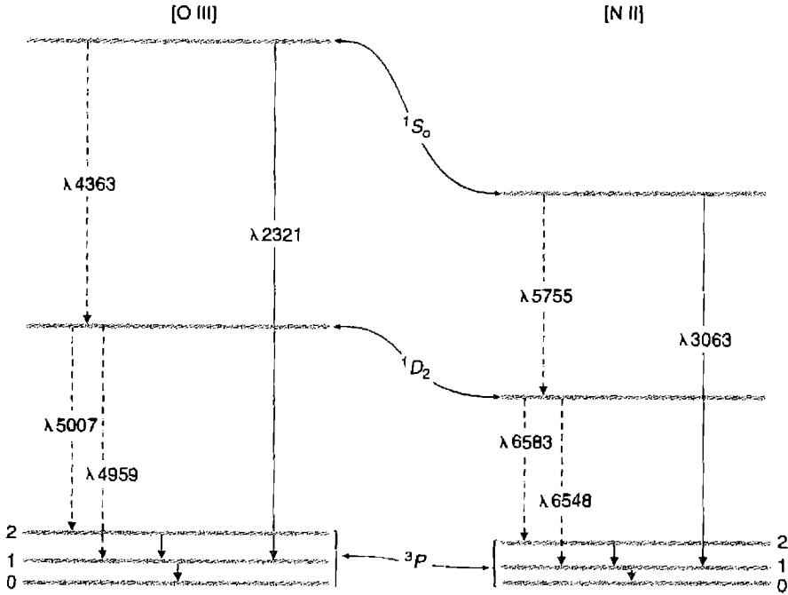
Energy-level diagram for lowest terms of [O III], all from ground 2p^3 configuration, and for [N III] of the same isoelectronic sequence. Splitting of the ground {}^3P term has been exaggerated for clarity. Emission lines in the optical region are indicated by dashed lines, and by solid lines in the infrared and ultraviolet. Only the strongest transitions are indicated.
can be solved for the relative population in each level, and then for the collisionally excited radiative cooling rate
L_C = \sum_i n_i \sum_{j < i} A_{ij} h\nu_{ij} \text{ [erg cm}^{-3} \text{ s}^{-1}\text{]}. \quad (3.29)
In the low-density limit, n_e \rightarrow 0, this becomes a sum of terms like (3.22), but if
n_e q_{ij} > \sum_{k < i} A_{ik}
for any i, j, collisional deexcitation is not negligible and the complete solution must be used. In fact, for any level i, a critical density n_c(i) may be defined as
n_c(i) = \sum_{j < i} A_{ij} / \sum_{j \neq i} q_{ij} \quad (3.30)
| Ion | Level | n_e (cm -3 ) | Ion | Level | n_e (cm -3 ) |
|---|---|---|---|---|---|
| C II | 2P_{3/2}^o | 5.0 \times 10^4 | O III | 1D_2 | 6.8 \times 10^5 |
| C III | 3P_2^o | 5.1 \times 10^5 | O III | 3P_2 | 3.6 \times 10^3 |
| N II | 1D_2 | 6.6 \times 10^4 | O III | 3P_1 | 5.1 \times 10^2 |
| N II | 3P_2 | 3.1 \times 10^2 | Ne II | 2P_{1/2}^o | 7.1 \times 10^5 |
| N II | 3P_1 | 8.0 \times 10^1 | Ne III | 1D_2 | 9.5 \times 10^6 |
| N III | 2P_{3/2}^o | 1.5 \times 10^3 | Ne III | 3P_0 | 3.1 \times 10^4 |
| N IV | 3P_2^o | 1.1 \times 10^6 | Ne III | 3P_1 | 2.1 \times 10^5 |
| O II | 2D_{3/2}^o | 1.5 \times 10^4 | Ne V | 1D_2 | 1.3 \times 10^7 |
| O II | 2D_{5/2}^o | 3.4 \times 10^3 | Ne V | 3P_2 | 3.5 \times 10^4 |
| Ne V | 3P_1 | 6.2 \times 10^3 |
NOTE: All values are calculated for T \approx 10,000 K.
so that for n_e < n_c(i), collisional deexcitation of level i is negligible, but for n_e > n_c(i) it is important. Critical densities for levels that are most important in radiative cooling are listed in Table 3.15.
3.6 Energy Loss by Collisionally Excited Line Radiation of H
H^+, the most abundant ion in nebulae, has no bound levels and no lines, but H^0, although its fractional abundance is low, may affect the radiative cooling in a nebula. The most important excitation processes from the ground 1^2S term are to 2^2P^o, followed by emission of a L\alpha photon with h\nu = 10.2 eV, and to 2^2S, followed by emission of two photons in the 2^2S \rightarrow 1^2S continuum with h\nu' + h\nu'' = 10.2 eV and transition probability A(2^2S, 1^2S) = 8.23 \text{ s}^{-1}. Cross sections for excitation of neutral atoms by electrons do not vary as u^{-2}, but rise from zero at the threshold, peak at energies several times the threshold, and then decline at high energies, often with superimposed resonances. Nevertheless the mean collision strengths, integrated over the Maxwellian velocity distribution of the electrons as defined by (3.18) and (3.19), for these transitions and for 1^2S \rightarrow 3^2S, 3^2P^o, and 3^2D are quantities that vary fairly slowly, as Table 3.16 shows.
3.7 Resulting Thermal Equilibrium
The temperature at each point in a static nebula is determined by the equilibrium between heating and cooling rates, namely,
G = L_R + L_{FF} + L_C. \quad (3.31)
| T(K) | 1^2S, 2^2S | 1^2S, 2^2P^o | 1^2S, 3^2S | 1^2S, 3^2P^o | 1^2S, 3^2D |
|---|---|---|---|---|---|
| 10,000 | 0.29 | 0.51 | 0.066 | 0.12 | 0.063 |
| 15,000 | 0.32 | 0.60 | 0.071 | 0.13 | 0.068 |
| 20,000 | 0.35 | 0.69 | 0.077 | 0.14 | 0.073 |
Anderson, H., Balance, C. P., Badnell, N. R., & Summers, H. P. 2000, J.Phys.B, 33, 1255.
The collisionally excited radiative cooling rate L_C is a sum (over all transitions of all ions) of individual terms like (3.22), (3.25), or (3.29). In the low-density limit, since all the terms in G, L_R, L_{FF}, and L_C are proportional to n_e and to the density of some ion, Equation (3.31) and therefore the resulting temperatures are independent of the total density, but do depend on the relative abundances of the various ions. When collisional deexcitation begins to be important, the cooling rate at a given temperature is decreased, and the equilibrium temperature for a given radiation field is therefore somewhat increased.
To understand better the concepts here, let us consider an example, namely, an H II region with “typical” abundances of the elements. We will adopt n(O)/n(H) = 7 \times 10^{-4}, n(Ne)/n(H) = 9 \times 10^{-5}, and n(N)/n(H) = 9 \times 10^{-5}, and neglect other elements for simplicity. Let us suppose that O, Ne, and N are each 80 percent singly ionized and 20 percent doubly ionized, and n(H^0)/n(H^+) = 1 \times 10^{-3}. Some of the individual contributions to the radiative cooling (in the low-density limit) and the total radiative cooling L_C + L_{FF} are shown in Figure 3.2. For each level the contribution is small if kT \ll \chi, then increases rapidly and peaks at kT \approx \chi, and then decreases slowly for kT > \chi. The total radiative cooling, composed of the sum of the individual contributions, continues to rise with increasing T as long as there are levels with excitation energy \chi > kT. It can be seen that, for the assumed composition and ionization, O^{++} dominates the radiative cooling contribution at low temperatures, and O^+ at somewhat higher temperatures. At all temperatures shown, the contribution of collisional excitation of H^0 is small.
It is convenient to rewrite Equation (3.31) in the form
G - L_R = L_{FF} + L_C,
where G - L_R is then the “effective heating rate”, representing the net energy gained in photoionization processes, with the recombination losses already subtracted. This effective heating rate is also shown in Figure 3.2, for model stellar atmospheres with various temperatures. Notice in the figure that the calculated nebular temperature at which the curves cross and at which Equation (3.31) is satisfied is rather insensitive to the input stellar radiation field. Typical nebular temperatures are T \approx 7,000 K, according to Figure 3.2, with somewhat higher temperatures for hotter stars or larger optical depths.

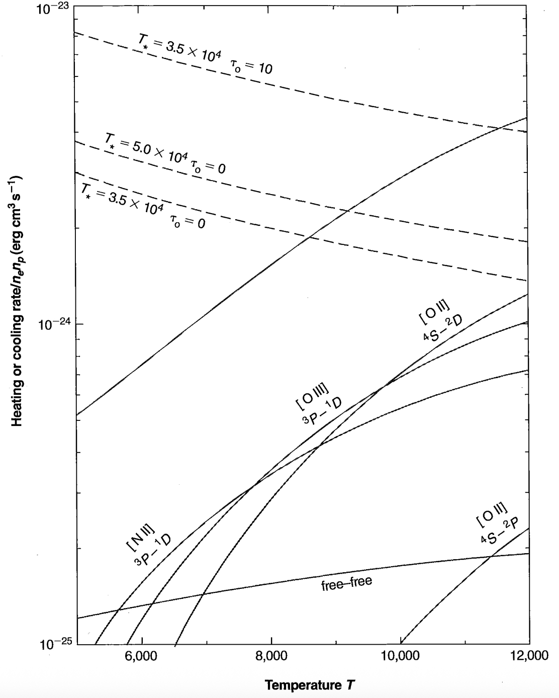
Same as Figure 3.2, except that collisional deexcitation at n_e = 10^4 cm -3 has been approximately taken into account in the radiative cooling rates.
At high electron densities, collisional deexcitation can appreciably modify the radiative cooling rate and therefore the resulting nebular temperature. For instance, at n_e \approx 10^4 \text{ cm}^{-3}, a density that occurs in condensations in many H II regions, the [O II] ^4S-^2D and [O III] ^3P_0-^3P_1 and ^3P_0-^3P_2 transitions are only about 20 percent effective, [N II] ^3P_0-^3P_1 and ^3P_0-^3P_2 are only about 1 percent effective, and [N III] ^2P_{1/2}-^2P_{3/2} is about 20 percent effective, as Table 3.15 shows. Figure 3.3 shows the effective cooling rate for this situation, with the abundances and ionization otherwise as previously described, and demonstrates that appreciably higher temperatures occur at high densities. Similarly, lower abundances of the heavy elements tend to decrease the cooling rate and thus to increase the resulting equilibrium temperature.
Under conditions of very high ionization, however, as in the central part of a planetary nebula, the ionization is high enough that there is very little \text{H}^0, \text{O}^+, or \text{O}^{++}, and then the radiative cooling is appreciably decreased. Under these conditions the main coolants are \text{Ne}^{+4} and \text{C}^{+3}, and the nebular temperature may be T \lesssim 2 \times 10^4 \text{ K}. Detailed results obtained from models of both H II regions and planetary nebulae are discussed in Chapter 5.
References
The basic papers on thermal equilibrium are:
Spitzer, L. 1948, ApJ , 107, 6.
Spitzer, L. 1949, ApJ , 109, 337.
Spitzer, L., & Savedoff, M. P. 1950, Ap. J. 111, 593.
Some additional work, including the on-the-spot approximation and the effects of collisional deexcitation, is described in
Burbidge, G. R., Gould, R. J., and Pottasch, S. R. 1963, ApJ , 138, 945.
Osterbrock, D. E. 1965, ApJ , 142, 1423.
Numerical values of recombination coefficients, \beta, are given in
Hummer, D. G., & Seaton, M. J. 1963, MNRAS , 125, 437.
Seaton, M. J. 1959, MNRAS , 119, 81.
Ferland, G. J., Petersou, B. M., Horne, K., Welsh, W. F., & Nahar, S. 1992, ApJ , 387, 95.
Hummer, D. G. 1994, MNRAS , 268, 109.
LaMothe, J., & Ferland, G. J. 2001, PASP , 113, 165.
(Table 3.2 is based on these references.)
Extensive tables of the free-free Gaunt factor are given by
Karzas, W. J., & Latter, R. 1961, ApJS , 6, 167.
Carson, T. R. 1988, A&A , 189, 319.
Kylafis, N. D., & Lamb, D. Q. 1982, ApJS , 48, 239.
Basic papers on collisional excitation and the methods used to calculate the collision strengths are:
Seaton, M. J. 1968, Advances in Atomic and Molecular Physics 4, 331.
Seaton, M. J. 1975, Advances in Atomic and Molecular Physics 11, 83.
This material is further elucidated in the book
Burke, P. G., Eissner, W. B., Hummer, D. G., & Percival, I. C., eds. 1983, Atoms in Astrophysics (New York: Plenum Press).
Numerical values of collision strengths are widely scattered through the physics literature, but mostly in the journals Atomic Data Nuclear Data Tables (ADNDT), Journal of Physics B (J. Phys. B), Physics Review A (Phys Rev A), and Physica Scripta (PhysSc). Volume 57 of ADNDT consists of a number of reviews of sources for collision strengths.
Today many data bases are located on the web. Among others, check the
Chianti: http://www.solar.nrl.navy.mil/chianti.html
TopBase, the Opacity Project database http://heasarc.gsfc.nasa.gov/topbase/
ADfA database http://www.pa.uky.edu/~verner/atom.html
The best wavelengths come from nebular measurements made with high-dispersion spectrographs. The following give extensive emission line lists.
Kaufman, V., & Sugar, J. 1986, J. Phys. Chem. Ref. Data , 15, No. 1, 321 (forbidden lines).
House, L.L. 1969, ApJS , 155, 21 (X-ray).
Hyung, S., & Aller, L. H. 1997, ApJ , 491, 242 (ultraviolet and optical).
Feuchtgruber, H., Lutz, D., et al., 1997, ApJ , 487, 962 and Feuchtgruber, H., Lutz, D., & Beuterna, D. A., 2001, ApJS , 136, 221 (infrared).
http://www.pa.uky.edu/~peter/atomic/ is a web-based list of wavelengths.
The following is the most recent in a series of papers that give a bibliography of atomic line identifications:
Adelman, S. J. 2001, PASP , 113, 344.
Chapter 4
Calculation of Emitted Spectrum
4.1 Introduction
The radiation emitted by each element of volume in a gaseous nebula depends upon the abundances of the elements, determined by the previous evolutionary history of the gas, and on the local ionization, density, and temperature, determined by the radiation field and the abundances as described in the preceding two chapters. The most prominent spectral features are the emission lines, and many of these are the collisionally excited lines described in the preceding chapter on thermal equilibrium. The formalism developed there to calculate the cooling rate, and thus the thermal equilibrium, may be taken over unchanged to calculate the strength of these lines. If we could observe all the lines in the entire spectral region from the extreme ultraviolet to the far infrared, we could measure directly the cooling rate at each observed point in the nebula. Many of the most important lines in the cooling, for instance [O II] \lambda\lambda 3726, 3729 and [O III] \lambda\lambda 4959, 5007, are in the optical region and are easily measured. Other lines that are also important in the cooling, such as [O III] 2p^2\ ^3P_0 - 2p^2\ ^3P_1 \lambda 88.4\ \mu\text{m}, and ^3P_1 - ^3P_2 \lambda 51.8\ \mu\text{m}, are in the far infrared region, while still others, such as C IV \lambda\lambda 1548, 1551, are in the vacuum ultraviolet.
For historical reasons, astronomers tend to refer to the chief emission lines of gaseous nebulae as forbidden lines. Actually, it is better to think of the bulk of the lines as collisionally excited lines, which arise from levels within a few volts of the ground level, and which therefore can be excited by collisions with thermal electrons. In fact, in the ordinary optical region all these collisionally excited lines are forbidden lines, because in the abundant ions all the excited levels within a few volts of the ground level arise from the same electron configuration as the ground level itself, and thus radiative transitions are forbidden by the parity selection rule. However, at wavelengths just slightly below the ultraviolet cutoff of the Earth's atmosphere, collisionally excited lines begin to appear that are not forbidden lines. Among others, many nebulae have strong permitted lines of Mg II 3s\ ^2S - 3p\ ^2P^\circ \lambda\lambda 2796, 2803, C IV 2s\ ^2S - 2p\ ^2P^\circ \lambda\lambda 1548, 1551, and Si IV 3s\ ^2S - 3p\ ^2P^\circ \lambda\lambda 1394, 1403.
In addition to the collisionally excited lines, the recombination lines of H I, He I, and He II are characteristic features of the spectra of gaseous nebulae. They are
emitted by atoms undergoing radiative transitions in cascading down to the ground level following recombinations to excited levels. In the remainder of this chapter, these recombination emission processes will be discussed in more detail. Finally, the continuum-emission processes, which are the bound-free and free-free analogues of the bound-bound transitions emitted in the recombination-line spectrum, will be examined.
4.2 Optical Recombination Lines
The recombination-line spectrum of H I is emitted by H atoms that have been formed by captures of electrons into excited levels and that are cascading by downward radiative transitions to the ground level. In the limit of very low density, the only processes that need be considered are captures and downward-radiative transitions. Thus the equation of statistical equilibrium for any level nL may be written
n_p n_e \alpha_{nL}(T) + \sum_{n' > n} \sum_{L'} n_{n'L'} A_{n'L', nL} = n_{nL} \sum_{n''=1}^{n-1} \sum_{L''} A_{nL, n''L''}. \quad (4.1)
Note in general A_{n'L', n''L''} \neq 0 only if L' = L'' \pm 1.
It is convenient to express the population in terms of the dimensionless factors b_{nL} that measure the deviation from thermodynamic equilibrium at the local T, n_e, and n_p. In thermodynamic equilibrium the Saha equation
\frac{n_p n_e}{n_{1S}} = \left( \frac{2\pi m k T}{h^2} \right)^{3/2} \exp(-h\nu_0/kT), \quad (4.2)
and the Boltzmann equation
\frac{n_{nL}}{n_{1S}} = (2L + 1) \exp(-\chi_n/kT), \quad (4.3)
apply. The factor 2L + 1 is the ratio of statistical weights of the nL and 1S levels. Then the population in the level nL in thermodynamic equilibrium may be written
n_{nL} = (2L + 1) \left( \frac{h^2}{2\pi m k T} \right)^{3/2} \exp(X_n/kT) n_p n_e, \quad (4.4)
where
X_n = h\nu_0 - \chi_n = \frac{h\nu_0}{n^2} \quad (4.5)
is the ionization potential of the level nL. Therefore, in general, the population may be written
n_{nL} = b_{nL}(2L + 1) \left( \frac{h^2}{2\pi mkT} \right)^{3/2} \exp(X_n/kT)n_p n_e, \quad (4.6)
and b_{nL} = 1 in thermodynamic equilibrium.
Substituting this expression in (4.1),
\begin{aligned} & \alpha_{nL} \frac{1}{(2L + 1)} \left( \frac{2\pi mkT}{h^2} \right)^{3/2} \exp(-X_n/kT) \\ & + \sum_{n' > n} \sum_{L''} b_{n'L'} A_{n'L', nL} \left( \frac{2L' + 1}{2L + 1} \right) \exp[(X_{n'} - X_n)/kT] \\ & = b_{nL} \sum_{n''=1}^{n-1} \sum_{L''} A_{nL, n''L''}, \end{aligned} \quad (4.7)
it can be seen that the b_{nL} factors are independent of density as long as recombination and downward-radiative transitions are the only relevant processes. Furthermore, it can be seen that the Equations (4.7) can be solved by a systematic procedure working downward in n, for if the b_{nL} are known for all n \geq n_K, then the n Equations (4.7), with L = 0, 1, \dots, n - 1 for n = n_K - 1, each contain a single unknown b_{nL} and can be solved immediately, and so on successively downward.
It is convenient to express the solutions in terms of the cascade matrix C(nL, n'L'), which is the probability that population of nL is followed by a transition to n'L' via all possible cascade routes. The cascade matrix can be generated directly from the probability matrix P(nL, n'L'), which gives the probability that population of the level nL is followed by a direct radiative transition to n'L',
P_{nL, n'L'} = \frac{A_{nL, n'L'}}{\sum_{n''=1}^{n-1} \sum_{L''} A_{nL, n''L''}} \quad (4.8)
which is zero unless L' = L \pm 1.
Hence, for n' = n - 1,
C_{nL, n-1L'} = P_{nL, n-1L'};
for n' = n - 2,
C_{nL, n-2L'} = P_{nL, n-2L'} + \sum_{L''=L' \pm 1} C_{nL, n-1L''} P_{n-1L'', n-2L'};
and for n' = n - 3,
C_{nL, n-3L'} = P_{nL, n-3L'} + \sum_{L''=L' \pm 1} [C_{nL, n-1L''} P_{n-1L'', n-3L'} + C_{nL, n-2L''} P_{n-2L'', n-3L'}]
so that if we define
C_{nL, nL''} = \delta_{LL''}, \quad (4.9)
then in general
C_{nL, n'L'} = \sum_{n'' > n'}^n \sum_{L''=L' \pm 1} C_{nL, n''L''} P_{n''L'', n'L'}. \quad (4.10)
The solutions of the equilibrium Equations (4.1) may be immediately written down, for the population of any level nL is fixed by the balance between recombinations to all levels n' \geq n that lead by cascades to nL and downward radiative transitions from nL:
n_p n_e \sum_{n'=n}^{\infty} \sum_{L'=0}^{n'-1} \alpha_{n'L'}(T) C_{n'L', nL} = n_{nL} \sum_{n''=1}^{n-1} \sum_{L''=L \pm 1} A_{nL, n''L''}. \quad (4.11)
It is convenient to express the results in this form because once the cascade matrix has been calculated, it can be used to find the b_{nL} factors or the populations n_{nL} at any temperature, or even for cases in which the population occurs by other non-radiative processes, such as collisional excitation from the ground level or from an excited level. To carry out the solutions, it can be seen from (4.11) that it is necessary to fit series in n, n', L, and L' to C_{nL, n'L'} and \alpha_{n'L'}(T), and extrapolate these series as n \rightarrow \infty. Once the populations n_{nL} have been found, it is simple to calculate the emission coefficient in each line:
j_{nn'} = \frac{h\nu_{nn'}}{4\pi} \sum_{L=0}^{n-1} \sum_{L'=L \pm 1} n_{nL} A_{nL, n'L'}. \quad (4.12)
The situation we have been considering is commonly called Case A in the theory of recombination-line radiation, and assumes that all line photons emitted in the nebula escape without absorption and therefore without causing further upward transitions. Case A is thus a good approximation for gaseous nebulae that are optically thin in all H I resonance lines, but in fact such nebulae can contain only a relatively small amount of gas and are mostly too faint to be easily observed.
Nebulae that contain observable amounts of gas generally have quite large optical depths in the Lyman resonance lines of H I. This can be seen from the equation for the central line-absorption cross section,
a_0(Ln) = \frac{3\lambda_{n1}^3}{8\pi} \left( \frac{m_H}{2\pi kT} \right)^{1/2} A_{nP,1S} [\text{cm}^2], \quad (4.13)
where \lambda_{n1} is the wavelength of the line. Thus, at a typical temperature T = 10,000 K, the optical depth in L\alpha is about 10^4 times the optical depth at the Lyman limit \nu = \nu_0 of the ionizing continuum, and an ionization-bounded nebula with \tau_0 \approx 1 therefore has \tau(L\alpha) \approx 10^4, \tau(L\beta) \approx 10^3, \tau(L\gamma) \approx 10^2, and \tau(L\delta) \approx 10. In each scattering there is a finite probability that the Lyman-line photon will be converted to a lower-series photon plus a lower member of the Lyman series. Thus, for instance, each time an L\beta photon is absorbed by an H atom, raising it to the 3^2P level, the probability that this photon is scattered is P_{31,10} = 0.882, while the probability that it is converted to H\alpha is P_{31,20} = 0.118, so after nine scatterings an average L\beta photon is converted to H\alpha (plus two photons in the 2^2S \rightarrow 1^2S continuum) and cannot escape from the nebula. Likewise, an average L\gamma photon is transformed, after a relatively few scatterings, either into a P\alpha photon plus an H\alpha photon plus an L\alpha photon, or into an H\beta photon plus two photons in the 2^2S-1^2S continuum. Thus, for these large optical depths, a better approximation than Case A is the opposite assumption that every Lyman-line photon is scattered many times and is converted (if n \geq 3) into lower-series photons plus either L\alpha or two-continuum photons. This large optical depth approximation is called Case B, and is more accurate than Case A for most nebulae. However, it is clear that the real situation is intermediate, and is similar to Case B for the lower Lyman lines, but progresses continuously to a situation nearer Case A as n \rightarrow \infty and \tau(Ln) \rightarrow 1.
Under Case B conditions, any photon emitted in an n^2P^o \rightarrow 1^2S transition is immediately absorbed nearby in the nebula, thus populating the n^2P^o level in another atom. Hence, in Case B, the downward radiative transitions to 1^2S are simply omitted from consideration, and the sums in the equilibrium Equations (4.1), (4.7), (4.8), and (4.11) are terminated at n'' = n_0 = 2 instead of at n_0 = 1 as in Case A. The detailed transition between Cases A and B will be discussed in Section 4.5.
Selected numerical results from the recombination spectrum of H I are listed in Tables 4.1 and 4.2 for Cases A and B, respectively. Note that, in addition to the emission coefficient j_{42} = j_{H\beta} and the relative intensities of the other lines, it is also sometimes convenient to use the effective recombination coefficient, defined by
n_P n_e \alpha_{nn'}^{eff} = \sum_{L=0}^{n-1} \sum_{L'=L\pm 1} n_{nL} A_{nL,n'L'} = \frac{4\pi j_{nn'}}{h\nu_{nn'}}. \quad (4.14)
| T | ||||
|---|---|---|---|---|
| 2,500 K | 5,000 K | 10,000 K | 20,000 K | |
| 4\pi j_{H\beta}/n_e n_p (erg cm 3 s -1 ) | 2.70 \times 10^{-25} | 1.54 \times 10^{-25} | 8.30 \times 10^{-26} | 4.21 \times 10^{-26} |
| \alpha_{H\beta}^{eff} (cm 3 s -1 ) | 6.61 \times 10^{-14} | 3.78 \times 10^{-14} | 2.04 \times 10^{-14} | 1.03 \times 10^{-14} |
| Balmer-line intensities relative to H \beta | ||||
| j_{H\alpha}/j_{H\beta} | 3.42 | 3.10 | 2.86 | 2.69 |
| j_{H\gamma}/j_{H\beta} | 0.439 | 0.458 | 0.470 | 0.485 |
| j_{H\delta}/j_{H\beta} | 0.237 | 0.250 | 0.262 | 0.271 |
| j_{H\epsilon}/j_{H\beta} | 0.143 | 0.153 | 0.159 | 0.167 |
| j_{H8}/j_{H\beta} | 0.0957 | 0.102 | 0.107 | 0.112 |
| j_{H9}/j_{H\beta} | 0.0671 | 0.0717 | 0.0748 | 0.0785 |
| j_{H10}/j_{H\beta} | 0.0488 | 0.0522 | 0.0544 | 0.0571 |
| j_{H15}/j_{H\beta} | 0.0144 | 0.0155 | 0.0161 | 0.0169 |
| j_{H20}/j_{H\beta} | 0.0061 | 0.0065 | 0.0068 | 0.0071 |
| Lyman-line intensities relative to H \beta | ||||
| j_{L\alpha}/j_{H\beta} | 33.0 | 32.5 | 32.7 | 34.0 |
| Paschen-line intensities relative to H \beta | ||||
| j_{P\alpha}/j_{H\beta} | 0.684 | 0.562 | 0.466 | 0.394 |
| j_{P\beta}/j_{H\beta} | 0.267 | 0.241 | 0.216 | 0.196 |
| j_{P\gamma}/j_{H\beta} | 0.134 | 0.126 | 0.118 | 0.110 |
| j_{P8}/j_{H\beta} | 0.0508 | 0.0497 | 0.0474 | 0.0452 |
| j_{P10}/j_{H\beta} | 0.0258 | 0.0251 | 0.0239 | 0.0228 |
| j_{P15}/j_{H\beta} | 0.00750 | 0.00721 | 0.00691 | 0.00669 |
| j_{P20}/j_{H\beta} | 0.00310 | 0.00300 | 0.00290 | 0.00280 |
For hydrogen-like ions of nuclear charge Z, all the transition probabilities A_{nL,n'L'} are proportional to Z^4, so the P_{nL,n'L'} and C_{nL,n'L'} matrices are independent of Z. The recombination coefficients \alpha_{nL} scale as
a_{nL}(Z, T) = Z \alpha_{nL}(1, T/Z^2);
the effective recombination coefficients scale in this same way, and since the energies h\nu_{nn'} scale as
\nu_{nn'}(Z) = Z^2 \nu_{nn'}(1),
| T | ||||
|---|---|---|---|---|
| 2,500 K | 5,000 K | 10,000 K | 20,000 K | |
| 4\pi j_{H\beta}/n_e n_p (erg cm 3 s -1 ) | 3.72 \times 10^{-25} | 2.20 \times 10^{-25} | 1.24 \times 10^{-25} | 6.62 \times 10^{-26} |
| \alpha_{H\beta}^{eff} (cm 3 s -1 ) | 9.07 \times 10^{-14} | 5.37 \times 10^{-14} | 3.03 \times 10^{-14} | 1.62 \times 10^{-14} |
| Balmer-line intensities relative to H \beta | ||||
| j_{H\alpha}/j_{H\beta} | 3.30 | 3.05 | 2.87 | 2.76 |
| j_{H\gamma}/j_{H\beta} | 0.444 | 0.451 | 0.466 | 0.474 |
| j_{H\delta}/j_{H\beta} | 0.241 | 0.249 | 0.256 | 0.262 |
| j_{H\epsilon}/j_{H\beta} | 0.147 | 0.153 | 0.158 | 0.162 |
| j_{H8}/j_{H\beta} | 0.0975 | 0.101 | 0.105 | 0.107 |
| j_{H9}/j_{H\beta} | 0.0679 | 0.0706 | 0.0730 | 0.0744 |
| j_{H10}/j_{H\beta} | 0.0491 | 0.0512 | 0.0529 | 0.0538 |
| j_{H15}/j_{H\beta} | 0.0142 | 0.0149 | 0.0154 | 0.0156 |
| j_{H20}/j_{H\beta} | 0.0059 | 0.0062 | 0.0064 | 0.0065 |
| Paschen-line intensities relative to H \beta | ||||
| j_{Pa\alpha}/j_{H\beta} | 0.528 | 0.427 | 0.352 | 0.293 |
| j_{Pa\beta}/j_{H\beta} | 0.210 | 0.187 | 0.165 | 0.146 |
| j_{Pa\gamma}/j_{H\beta} | 0.1060 | 0.0991 | 0.0906 | 0.0820 |
| j_{Pa\delta}/j_{H\beta} | 0.0410 | 0.0392 | 0.0368 | 0.0343 |
| j_{Pa10}/j_{H\beta} | 0.0207 | 0.0199 | 0.0185 | 0.0172 |
| j_{Pa15}/j_{H\beta} | 0.00589 | 0.00571 | 0.00530 | 0.00501 |
| j_{Pa20}/j_{H\beta} | 0.00240 | 0.00240 | 0.00220 | 0.00210 |
| Brackett-line intensities relative to H \beta | ||||
| j_{Br\alpha}/j_{H\beta} | 0.1447 | 0.1091 | 0.0834 | 0.0640 |
| j_{Br\beta}/j_{H\beta} | 0.0709 | 0.0578 | 0.0471 | 0.0380 |
| j_{Br\gamma}/j_{H\beta} | 0.0387 | 0.0332 | 0.0281 | 0.0237 |
| j_{Br\delta}/j_{H\beta} | 0.0248 | 0.0216 | 0.0186 | 0.0157 |
| j_{Br10}/j_{H\beta} | 0.01193 | 0.01065 | 0.00920 | 0.00796 |
| j_{Br15}/j_{H\beta} | 0.00317 | 0.00295 | 0.00263 | 0.00231 |
| j_{Br20}/j_{H\beta} | 0.00127 | 0.00124 | 0.00109 | 0.00097 |
the emission coefficient is
j_{nn'}(Z, T) = Z^3 j_{nn'}(1, T/Z^2). \quad (4.15)
Thus the calculations for H I at a temperature T can also be applied to He II at T' = 4T. In Table 4.3 some of the main features of the He II recombination line spectrum are listed for Case B, with the strongest line in the optical spectrum, \lambda 4686 (n = 4 \rightarrow 3), as the reference line. Note that the Fowler series (n \rightarrow 3) except for \lambda 4686 and \lambda 3203, and the entire "Balmer" series (n \rightarrow 2) are in the vacuum ultraviolet spectral region.
Next let us return to the H I recombination lines and examine the effects of collisional transitions at finite nebular densities. The largest collisional cross sections involving the excited levels of H are for transitions nL \rightarrow nL \pm 1 which have essentially zero energy difference. Collisions with both electrons and protons can cause these angular-momentum-changing transitions, but because of the small energy difference, protons are more effective than electrons; for instance, representative values of the mean cross sections for thermal protons at T \approx 10,000 K are \sigma(2^2S \rightarrow 2^2P^o) \approx 3 \times 10^{-10} \text{ cm}^2, \sigma(10^2L \rightarrow 10^2L \pm 1) \approx 4 \times 10^{-7} \text{ cm}^2, and \sigma(20^2L \rightarrow 20^2L \pm 1) \approx 6 \times 10^{-6} \text{ cm}^2. (Both of the latter are evaluated for L \approx n/2.) These collisional transitions must then be included in the equilibrium equations, which are modified from (4.1) to read
\begin{aligned} n_p n_e \alpha_{nL}(T) + \sum_{n' > n} \sum_{L' = L \pm 1}^{\infty} n_{n'L'} A_{n'L', nL} + \sum_{L' = L \pm 1} n_{n'L'} n_p q_{nL', nL} \\ = n_{nL} \left[ \sum_{n'' = n_0}^{n-1} \sum_{L'' = L \pm 1} A_{nL, n''L''} + \sum_{L'' = L \pm 1} n_p q_{nL, nL''} \right] \end{aligned} \quad (4.16)
where n_0 = 1 or 2 for Cases A and B, respectively, and
q_{nL, n'L'} \equiv q_{nL, n'L'}(T) = \int_0^{\infty} u \sigma(nL \rightarrow n'L') f(u) du \text{ [cm}^3 \text{ s}^{-1}] \quad (4.17)
is the collisional transition probability per proton per unit volume. For sufficiently large proton densities, the collisional terms dominate, and because of the principle of detailed balancing, they tend to set up a thermodynamic equilibrium distribution of the various L levels within each n; that is, they tend to make the populations proportional to the statistical weights,
\frac{n_{nL}}{n_{nL'}} = \frac{\omega_{nL}}{\omega_{nL'}} = \frac{(2L+1)}{(2L'+1)}
| T | ||||
|---|---|---|---|---|
| 5,000 K | 10,000 K | 20,000 K | 40,000 K | |
| 4\pi j_{\lambda 4686}/n_e n_{\text{He}^{++}} (erg cm 3 s -1 ) | 3.14 \times 10^{-24} | 1.58 \times 10^{-24} | 7.54 \times 10^{-25} | 3.48 \times 10^{-25} |
| \alpha_{\text{He}\beta}^{\text{eff}} (cm 3 s -1 ) | 7.40 \times 10^{-13} | 3.72 \times 10^{-13} | 1.77 \times 10^{-13} | 8.20 \times 10^{-14} |
| "Balmer"-line (n \rightarrow 2) intensities relative to \lambda 4686 | ||||
| j_{32}/j_{\lambda 4686} | 0.560 | 0.625 | 0.714 | 8.15 |
| j_{42}/j_{\lambda 4686} | 0.154 | 0.189 | 0.234 | 2.84 |
| j_{52}/j_{\lambda 4686} | 0.066 | 0.084 | 0.106 | 1.32 |
| j_{72}/j_{\lambda 4686} | 0.022 | 0.028 | 0.036 | 0.45 |
| j_{10,2}/j_{\lambda 4686} | 0.007 | 0.009 | 0.012 | 0.15 |
| Fowler-line intensities (n \rightarrow 3) relative to \lambda 4686 | ||||
| j_{53}/j_{\lambda 4686} | 0.355 | 0.398 | 0.438 | 0.469 |
| j_{63}/j_{\lambda 4686} | 0.173 | 0.201 | 0.232 | 0.257 |
| j_{83}/j_{\lambda 4686} | 0.065 | 0.078 | 0.092 | 0.104 |
| j_{10,3}/j_{\lambda 4686} | 0.033 | 0.039 | 0.047 | 0.052 |
| Pickering-line (n \rightarrow 4) intensities relative to \lambda 4686 | ||||
| j_{54}/j_{\lambda 4686} | 0.295 | 0.274 | 0.256 | 0.237 |
| j_{64}/j_{\lambda 4686} | 0.131 | 0.134 | 0.135 | 0.134 |
| j_{74}/j_{\lambda 4686} | 0.0678 | 0.0734 | 0.0779 | 0.0799 |
| j_{84}/j_{\lambda 4686} | 0.0452 | 0.0469 | 0.0506 | 0.0527 |
| j_{94}/j_{\lambda 4686} | 0.0280 | 0.0315 | 0.0345 | 0.0364 |
| j_{10,4}/j_{\lambda 4686} | 0.0198 | 0.0226 | 0.0249 | 0.0262 |
| j_{12,4}/j_{\lambda 4686} | 0.0106 | 0.0124 | 0.0139 | 0.0149 |
| j_{15,4}/j_{\lambda 4686} | 0.0050 | 0.0060 | 0.0069 | 0.0075 |
| j_{20,4}/j_{\lambda 4686} | 0.0020 | 0.0024 | 0.0029 | 0.0031 |
| Pfund-line (n \rightarrow 5) intensities relative to \lambda 4686 | ||||
| j_{65}/j_{\lambda 4686} | 0.1081 | 0.0955 | 0.0856 | 0.0758 |
| j_{75}/j_{\lambda 4686} | 0.0547 | 0.0539 | 0.0513 | 0.0474 |
| j_{85}/j_{\lambda 4686} | 0.0320 | 0.0331 | 0.0327 | 0.0311 |
| j_{10,5}/j_{\lambda 4686} | 0.0144 | 0.0156 | 0.0160 | 0.0157 |
| j_{15,5}/j_{\lambda 4686} | 0.00320 | 0.00390 | 0.00430 | 0.00450 |
| j_{20,5}/j_{\lambda 4686} | 0.00120 | 0.00150 | 0.00170 | 0.00190 |
or
n_{nL} = \frac{(2L+1)}{n^2} n_n, \quad (4.18)
which is equivalent to b_{nL} = b_n, independent of L, where
n_n = \sum_{L=0}^{n-1} n_{nL}
is the total population in the levels with the same principal quantum number n. Since the cross sections \sigma_{nL \rightarrow nL \pm 1} increase with increasing n, but the transition probabilities A_{nL, n' L \pm 1} decrease, Equations (4.18) become increasingly good approximations with increasing n, and there is therefore (for any density and temperature) a level n_{cL} (for coupled angular momentum or "well L -mixed") above which they apply. For H at T \approx 10,000 K, this level is approximately n_{cL} \approx 15 at n_p \approx 10^4 \text{ cm}^{-3}, n_{cL} \approx 30 at n_p \approx 10^2 \text{ cm}^{-3} and n_{cL} \approx 45 at n_p \approx 1 \text{ cm}^{-3}.
Exactly the same type of effect occurs in the He II spectrum, because it also has the property that all the levels nL with the same n are degenerate. The He II lines are emitted in the \text{H}^+, \text{He}^{++} zone of a nebula, so both protons and \text{He}^{++} ions (thermal \alpha particles) can cause collisional, angular momentum-changing transitions in excited levels of \text{He}^+. The cross sections \sigma_{nL \rightarrow nL \pm 1} actually are larger for the \text{He}^{++} ions than for the \text{H}^+ ions, and both of them must be taken into account in the \text{He}^{++} region. The principal quantum numbers above which (4.18) applies for He II at T \approx 10,000 K are approximately n_{cL} \approx 22 for n_p \approx 10^4 \text{ cm}^{-3}, and n_{cL} \approx 32 for n_p \approx 10^2 \text{ cm}^{-3}.
After the angular-momentum-changing collisions at fixed n, the next largest collisional transition rates occur for collisions in which n changes by \pm 1, and of these the strongest are those for which L also changes by \pm 1. For this type of transition, collisions with electrons are more effective than collisions with protons, and representative cross sections for thermal electrons at T \approx 10,000 K are of order \sigma(nL \rightarrow n \pm \Delta n, L \pm 1) \approx 10^{-16} \text{ cm}^2. The effects of these collisions can be incorporated into the equilibrium equations by a straightforward generalization of (4.16). Indeed, since the cross sections for collisions \sigma(nL \rightarrow n \pm \Delta n, L \pm 1) decrease with increasing \Delta n (but not too rapidly), collisions with \Delta n = 1, 2, 3, \dots must all be included. The computational work required to set up and solve the equilibrium equations numerically becomes increasingly complicated and lengthy, but is straightforward in principle. It is clear that the collisions tend to couple levels with \Delta L = \pm 1 and small \Delta n, and that this coupling increases with increasing n_e (and n_p) and with increasing n. With collisions taken into account, the b_{nL} factors and the resulting emission coefficients are no longer independent of density.
Some calculated results for H I, including these collisional effects, are given in Table 4.4, which shows that the density dependence is rather small. Therefore this table, together with Table 4.2, which applies in the limit n_e \rightarrow 0, enables the H-line
emission coefficients to be evaluated over a wide range of densities and temperatures. Similarly, Table 4.5 shows calculated results for the He II recombination spectrum at finite densities and may be used in conjunction with Table 4.3, which applies in the same limit.
Exactly the same formalism can be applied to He I recombination lines, approximately treating the singlet and triplets as separate systems since all transition probabilities between them involving S , P , and D levels are quite small. The He I triplets always follow Case B, because downward radiative transitions to 1 1 S essentially do not occur. For the singlets, Case B is ordinarily a better approximation than Case A for observed nebulae, though the optical depths are lower for all lines than for the corresponding lines of H by a factor of approximately the abundance ratio. An extra complication is that He I 1 1 S – n^1P^o line photons can photoionize H 0 , and thus may be destroyed before they are converted into lower-energy photons. Calculated (Case B) results for the strongest He I lines are summarized in Table 4.6, with \lambda 4471 (2 3 P o –4 3 D ) as the reference line. Note that only H itself and the ions of its isoelectronic sequence have energy levels with the same n but different L degenerate, so for He I, Table 4.6 lists the j(n^{(2S+1)}L, n'^{(2S+1)}L), rather than j(n, n'), as for H. The radiative-transfer effects on the He I triplets, discussed in Section 4.6, and the collisional-excitation effects, discussed in Section 4.8, are not included in this table.
4.3 Optical Continuum Radiation
In addition to the line radiation emitted in the bound–bound transitions previously described, recombination processes also lead to the emission of rather weak continuum radiation in free–bound and free–free transitions. Because hydrogen is the most abundant element, the H I continuum, emitted in the recombination of protons with electrons, is the strongest, and the He II continuum may also be significant if He is mostly doubly ionized, but the He I continuum is always weaker. In the ordinary optical region the free–bound continua are stronger, but in the infrared and radio regions the free–free continuum dominates. In addition, there is a continuum resulting from the two-photon decay of the 2 2 S level of H, which is populated by recombinations and subsequent downward cascading. In this section we will examine each of these sources of continuous radiation.
The H I free–bound continuum radiation at frequency \nu results from recombinations of free electrons with velocity u to levels with principal quantum number n \geq n_1, and ionization potential X_n, where
h\nu = \frac{1}{2}u^2 + X_n \tag{4.19}
and
h\nu \geq X_{n_1} = \frac{h\nu_0}{n_1^2}, \tag{4.20}
| T | ||||||||
|---|---|---|---|---|---|---|---|---|
| 5,000 K | 10,000 K | |||||||
| n_e (cm -3 ) | 10 2 | 10 4 | 10 6 | 10 2 | 10 4 | 10 6 | 10 2 | 10 6 |
| 4\pi j_{H\beta}/n_e n_p (10 -25 erg cm 3 s -1 ) | 2.20 | 2.22 | 2.29 | 1.23 | 1.24 | 1.25 | 0.658 | 0.659 |
| \alpha_{H\beta}^{eff} (10 -14 cm 3 s -1 ) | 5.37 | 5.43 | 5.59 | 3.02 | 3.03 | 3.07 | 1.61 | 1.61 |
| Balmer-line intensities relative to H \beta | ||||||||
| j_{H\alpha}/j_{H\beta} | 3.041 | 3.001 | 2.918 | 2.863 | 2.847 | 2.806 | 2.747 | 2.739 |
| j_{H\gamma}/j_{H\beta} | 0.458 | 0.460 | 0.465 | 0.468 | 0.469 | 0.471 | 0.475 | 0.476 |
| j_{H\delta}/j_{H\beta} | 0.251 | 0.253 | 0.258 | 0.259 | 0.260 | 0.262 | 0.264 | 0.266 |
| j_{H10}/j_{H\beta} | 0.0515 | 0.0520 | 0.0616 | 0.0530 | 0.0533 | 0.0591 | 0.0540 | 0.0541 |
| j_{H15}/j_{H\beta} | 0.01534 | 0.01628 | 0.02602 | 0.01561 | 0.01620 | 0.02147 | 0.01576 | 0.01612 |
| j_{H20}/j_{H\beta} | 0.00657 | 0.00819 | 0.01394 | 0.00662 | 0.00755 | 0.01058 | 0.00664 | 0.00717 |
| n_e (cm -3 ) | T | ||||||||
|---|---|---|---|---|---|---|---|---|---|
| 5,000 K | |||||||||
| 10,000 K | |||||||||
| 10 2 | 10 4 | 10 6 | 10 2 | 10 4 | 10 6 | 10 2 | 10 4 | 10 6 | |
| Paschen-line intensities relative to H \beta | |||||||||
| J_{Pa}/J_{H\beta} | 0.411 | 0.396 | 0.365 | 0.339 | 0.332 | 0.317 | 0.284 | 0.282 | 0.275 |
| J_{P\beta}/J_{H\beta} | 0.184 | 0.182 | 0.174 | 0.163 | 0.162 | 0.158 | 0.145 | 0.145 | 0.143 |
| J_{P\gamma}/J_{H\beta} | 0.0988 | 0.0981 | 0.0961 | 0.0904 | 0.0901 | 0.0888 | 0.0823 | 0.0821 | 0.0816 |
| J_{P\delta}/J_{H\beta} | 0.0596 | 0.0594 | 0.0591 | 0.0555 | 0.0554 | 0.0550 | 0.0511 | 0.0510 | 0.0508 |
| J_{P10}/J_{H\beta} | 0.0195 | 0.0196 | 0.0212 | 0.0184 | 0.0184 | 0.0192 | 0.0172 | 0.0171 | 0.0175 |
| J_{P15}/J_{H\beta} | 0.00574 | 0.00593 | 0.00821 | 0.00541 | 0.00550 | 0.00671 | 0.00504 | 0.00507 | 0.00564 |
| J_{P20}/J_{H\beta} | 0.00244 | 0.00283 | 0.00430 | 0.00229 | 0.00248 | 0.00326 | 0.00212 | 0.00221 | 0.00256 |
| Brackett-line intensities relative to H \beta | |||||||||
| J_{Br\alpha}/J_{H\beta} | 0.105 | 0.0991 | 0.0880 | 0.0802 | 0.0778 | 0.0725 | 0.0627 | 0.0617 | 0.0595 |
| J_{Br\beta}/J_{H\beta} | 0.0557 | 0.0541 | 0.0500 | 0.0455 | 0.0447 | 0.0426 | 0.0373 | 0.0370 | 0.0361 |
| J_{Br\gamma}/J_{H\beta} | 0.0330 | 0.0324 | 0.0305 | 0.0278 | 0.0275 | 0.0265 | 0.0234 | 0.0233 | 0.0228 |
| J_{Br\delta}/J_{H\beta} | 0.0213 | 0.0210 | 0.0201 | 0.0183 | 0.0181 | 0.0176 | 0.0156 | 0.0155 | 0.0152 |
| J_{Br10}/J_{H\beta} | 0.0105 | 0.0104 | 0.0103 | 0.00914 | 0.00910 | 0.00896 | 0.00790 | 0.00788 | 0.00778 |
| J_{Br15}/J_{H\beta} | 0.00302 | 0.00305 | 0.00363 | 0.00266 | 0.00266 | 0.00295 | 0.00232 | 0.00231 | 0.00244 |
| J_{Br20}/J_{H\beta} | 0.00127 | 0.00137 | 0.00186 | 0.00112 | 0.00116 | 0.00141 | 0.00098 | 0.00099 | 0.00110 |
| T | ||||||||||
|---|---|---|---|---|---|---|---|---|---|---|
| 5,000 K | 10,000 K | |||||||||
| n_e (cm -3 ) | 10 2 | 10 4 | 10 6 | 10 2 | 10 4 | 10 6 | 10 2 | 10 4 | 10 6 | 10 6 |
| 4\pi j_{\lambda 4686}/n_e n_{\text{He}^{++}} (10 -24 erg cm 3 s -1 ) | 3.02 | 2.96 | 2.84 | 1.52 | 1.50 | 1.44 | 0.729 | 0.722 | 0.704 | 0.704 |
| \alpha_{\text{He}}^{\text{eff}} (10 -13 cm 3 s -1 ) | 7.11 | 6.98 | 6.71 | 3.57 | 3.53 | 3.40 | 1.72 | 1.70 | 1.66 | 1.66 |
| Balmer-line intensities (n \rightarrow 2) relative to \lambda 4686 | ||||||||||
| j_{32}/j_{\lambda 4686} | 5.786 | 5.895 | 6.195 | 6.474 | 6.558 | 6.788 | 7.351 | 7.410 | 7.581 | 7.581 |
| j_{42}/j_{\lambda 4686} | 1.597 | 1.657 | 1.818 | 1.958 | 2.003 | 2.125 | 2.405 | 2.438 | 2.527 | 2.527 |
| j_{52}/j_{\lambda 4686} | 0.692 | 0.720 | 0.799 | 0.873 | 0.894 | 0.955 | 1.102 | 1.117 | 1.162 | 1.162 |
| j_{62}/j_{\lambda 4686} | 0.371 | 0.387 | 0.431 | 0.474 | 0.486 | 0.520 | 0.604 | 0.613 | 0.638 | 0.638 |
| j_{102}/j_{\lambda 4686} | 0.0761 | 0.0793 | 0.0894 | 0.0970 | 0.0996 | 0.108 | 0.124 | 0.126 | 0.132 | 0.132 |
| j_{152}/j_{\lambda 4686} | 0.02329 | 0.02435 | 0.03052 | 0.02925 | 0.03007 | 0.03503 | 0.03681 | 0.03739 | 0.04124 | 0.04124 |
| j_{202}/j_{\lambda 4686} | 0.01018 | 0.01076 | 0.01974 | 0.01260 | 0.01305 | 0.01985 | 0.01569 | 0.01602 | 0.02095 | 0.02095 |
| Fowler-line (n \rightarrow 3) intensities relative to \lambda 4686 | ||||||||||
| j_{53}/j_{\lambda 4686} | 0.364 | 0.374 | 0.398 | 0.405 | 0.412 | 0.427 | 0.444 | 0.449 | 0.459 | 0.459 |
| j_{63}/j_{\lambda 4686} | 0.180 | 0.186 | 0.202 | 0.209 | 0.213 | 0.224 | 0.238 | 0.241 | 0.248 | 0.248 |
| j_{73}/j_{\lambda 4686} | 0.104 | 0.108 | 0.118 | 0.123 | 0.126 | 0.134 | 0.144 | 0.145 | 0.150 | 0.150 |
| j_{103}/j_{\lambda 4686} | 0.0329 | 0.0342 | 0.0381 | 0.0397 | 0.0406 | 0.0434 | 0.0470 | 0.0476 | 0.0495 | 0.0495 |
| j_{153}/j_{\lambda 4686} | 0.00971 | 0.01014 | 0.01235 | 0.01166 | 0.01197 | 0.01354 | 0.01378 | 0.01400 | 0.01502 | 0.01502 |
| j_{203}/j_{\lambda 4686} | 0.00418 | 0.00441 | 0.00722 | 0.00498 | 0.00514 | 0.00711 | 0.00585 | 0.00595 | 0.00723 | 0.00723 |
| n_e (cm -3 ) | T | |||||||||
|---|---|---|---|---|---|---|---|---|---|---|
| 5,000 K | 10,000 K | 20,000 K | ||||||||
| 10 2 | 10 4 | 10 6 | 10 2 | 10 4 | 10 6 | 10 2 | 10 4 | 10 6 | 10 6 | |
| Pickering-line (n \rightarrow 4) intensities relative to \lambda 4686 | ||||||||||
| J_{54}/J_{\lambda 4686} | 0.295 | 0.290 | 0.279 | 0.275 | 0.272 | 0.265 | 0.256 | 0.254 | 0.250 | |
| J_{64}/J_{\lambda 4686} | 0.130 | 0.132 | 0.136 | 0.134 | 0.135 | 0.137 | 0.135 | 0.136 | 0.137 | |
| J_{74}/J_{\lambda 4686} | 0.0705 | 0.0723 | 0.0763 | 0.0759 | 0.0771 | 0.0794 | 0.0798 | 0.0804 | 0.0818 | |
| J_{84}/J_{\lambda 4686} | 0.0433 | 0.0447 | 0.0477 | 0.0478 | 0.0487 | 0.0506 | 0.0514 | 0.0519 | 0.0530 | |
| J_{104}/J_{\lambda 4686} | 0.0204 | 0.0211 | 0.0229 | 0.0230 | 0.0235 | 0.0247 | 0.0252 | 0.0255 | 0.0262 | |
| J_{154}/J_{\lambda 4686} | 0.00574 | 0.00597 | 0.00696 | 0.00655 | 0.00670 | 0.00733 | 0.00727 | 0.00736 | 0.00771 | |
| J_{204}/J_{\lambda 4686} | 0.00243 | 0.00254 | 0.00364 | 0.00276 | 0.00284 | 0.00353 | 0.00306 | 0.00311 | 0.00350 | |
| T | |||||||
|---|---|---|---|---|---|---|---|
| 5,000 K | 10,000 K | 20,000 K | |||||
| n_e (cm -3 ) | 10 2 | 10 4 | 10 2 | 10 4 | 10 6 | 10 2 | 10 4 |
| 4\pi j_{\lambda 4471}/n_e n_{\text{He}^+} (10 -25 erg cm 3 s -1 ) | 1.15 | 1.18 | 0.612 | 0.647 | 0.681 | 0.301 | 0.408 |
| \alpha_{4471}^{\text{eff}} (10 -14 cm 3 s -1 ) | 2.60 | 2.67 | 1.39 | 1.47 | 1.54 | 0.683 | 0.925 |
| Triplet lines relative to \lambda 4471 | |||||||
| j_{\lambda 5876}/j_{\lambda 4471} | 2.93 | 2.92 | 2.67 | 2.90 | 2.97 | 2.62 | 3.62 |
| j_{\lambda 4026}/j_{\lambda 4471} | 0.460 | 0.461 | 0.476 | 0.469 | 0.467 | 0.484 | 0.437 |
| j_{\lambda 7065}/j_{\lambda 4471} | 0.373 | 0.403 | 0.489 | 0.912 | 1.05 | 0.716 | 1.67 |
| j_{\lambda 10830}/j_{\lambda 4471} | 4.35 | 11.8 | 5.41 | 29.1 | 37.4 | 7.78 | 46.2 |
| j_{\lambda 3889}/j_{\lambda 4471} | 1.96 | 1.97 | 2.31 | 2.60 | 2.70 | 2.76 | 3.27 |
| j_{\lambda 3187}/j_{\lambda 4471} | 0.758 | 0.760 | 0.917 | 0.947 | 0.956 | 1.14 | 1.13 |
| Singlet lines relative to \lambda 4471 | |||||||
| j_{\lambda 6678}/j_{\lambda 4471} | 0.841 | 0.838 | 0.756 | 0.768 | 0.768 | 0.721 | 0.756 |
| j_{\lambda 4922}/j_{\lambda 4471} | 0.273 | 0.274 | 0.270 | 0.266 | 0.265 | 0.266 | 0.239 |
| j_{\lambda 5016}/j_{\lambda 4471} | 0.510 | 0.513 | 0.578 | 0.589 | 0.593 | 0.663 | 0.627 |
| j_{\lambda 3965}/j_{\lambda 4471} | 0.199 | 0.200 | 0.230 | 0.228 | 0.227 | 0.268 | 0.237 |
so its emission coefficient per unit frequency interval per unit solid angle per unit time per unit volume is therefore
j_\nu = \frac{1}{4\pi} n_p n_e \sum_{n=n_1}^{\infty} \sum_{L=0}^{n-1} u \sigma_{nL}(\text{H}^0, u) f(u) h\nu \frac{du}{dv}. \quad (4.21)
The recombination cross sections \sigma_{nL}(\text{H}^0, u) can be calculated from the photoionization cross sections a_\nu(\text{H}^0, nL) by the Milne relation, as shown in Appendix 2.
The free-free (or bremsstrahlung) continuum emitted by free electrons accelerated in Coulomb collisions with positive ions (which are mostly \text{H}^+, \text{He}^+, or \text{He}^{++} in nebulae) of charge Z has an emission coefficient
j_\nu = \frac{1}{4\pi} n_+ n_e \frac{32Z^2 e^4 h}{3m^2 c^3} \left( \frac{\pi h \nu_0}{3kT} \right)^{1/2} \exp(-h\nu/kT) g_{ff}(T, Z, \nu), \quad (4.22)
| \lambda (\mu\text{m}) | T | |||
|---|---|---|---|---|
| 5,000 K | 10,000 K | 15,000 K | 20,000 K | |
| 10 | 0.310 | 0.262 | 0.238 | 0.223 |
| 3.0 | 1.03 | 0.772 | 0.673 | 0.618 |
| 1.0 | 1.87 | 1.72 | 1.57 | 1.46 |
| 0.8204+ | 1.23 | 1.54 | 1.55 | 1.52 |
| 0.8204- | 8.70 | 4.18 | 2.99 | 2.45 |
| 0.700 | 5.71 | 3.69 | 2.90 | 2.49 |
| 0.5696 | 2.81 | 2.89 | 2.65 | 2.44 |
| 0.45 | 0.950 | 1.90 | 2.17 | 2.23 |
| 0.400 | 0.485 | 1.45 | 1.88 | 2.07 |
| 0.3646+ | 0.268 | 1.13 | 1.65 | 1.91 |
| 0.3646- | 55.0 | 20.5 | 12.2 | 8.76 |
| 0.3122 | 21.3 | 13.8 | 9.82 | 7.72 |
| 0.260 | 3.39 | 6.17 | 6.21 | 5.79 |
| 0.150 | 0.0040 | 0.196 | 0.758 | 1.38 |
| 0.10 | -- | 0.0025 | 0.0479 | 0.194 |
where g_{ff}(T, Z, \nu) is a Gaunt factor. Thus the emission coefficient for the H I recombination continuum, including both bound-free and free-free contributions, may be written
j_\nu(\text{H I}) = \frac{1}{4\pi} n_p n_e \gamma_\nu(\text{H}^0, T). \quad (4.23)
Rather than tabulating and plotting this quantity itself, it is more convenient, especially for visualization, to use the quantity \nu j_\nu(\text{H I}), which is proportional to the emission coefficient per unit logarithmic frequency interval d \ln \nu = d\nu/\nu. Numerical values for \nu\gamma_\nu, as calculated from Equations (4.21) and (4.22), are given in Table 4.7. Likewise, the contributions to the continuum-emission coefficient from He I and He II may be written
j_\nu(\text{He I}) = \frac{1}{4\pi} n(\text{He}^+) n_e \gamma_\nu(\text{He}^0, T), j_\nu(\text{He II}) = \frac{1}{4\pi} n(\text{He}^{++}) n_e \gamma_\nu(\text{He}^{++}, T), \quad (4.24)
and numerical values of \nu\gamma_\nu are listed in Tables 4.8 and 4.9. The calculation for He II is exactly analogous to that for H I, while for He I the only complication is that there is no L degeneracy and Equations (4.19), (4.20), and (4.21) must be appropriately
| \lambda (\mu\text{m}) | T | |||
|---|---|---|---|---|
| 5,000 K | 10,000 K | 15,000 K | 20,000 K | |
| 10 | 0.310 | 0.262 | 0.238 | 0.223 |
| 3 | 1.02 | 0.77 | 0.67 | 0.62 |
| 1 | 1.90 | 1.72 | 1.57 | 1.46 |
| 0.8268+ | 1.27 | 1.55 | 1.55 | 1.51 |
| 0.8268- | 2.02 | 1.81 | 1.70 | 1.61 |
| 0.8197+ | 2.08 | 1.84 | 1.71 | 1.62 |
| 0.8197- | 5.61 | 3.09 | 2.39 | 2.06 |
| 0.7849+ | 4.99 | 2.97 | 2.37 | 2.06 |
| 0.7849- | 7.91 | 4.01 | 2.93 | 2.43 |
| 0.7440+ | 6.86 | 3.83 | 2.89 | 2.44 |
| 0.7440- | 7.06 | 3.90 | 2.93 | 2.47 |
| 0.6636+ | 5.01 | 3.48 | 2.82 | 2.46 |
| 0.6636- | 5.54 | 3.67 | 2.92 | 2.53 |
| 0.5696 | 3.23 | 3.03 | 2.70 | 2.47 |
| 0.45 | 1.10 | 1.99 | 2.21 | 2.25 |
| 0.4 | 0.56 | 1.51 | 1.91 | 2.07 |
| 0.368+ | 0.33 | 1.20 | 1.69 | 1.93 |
| 0.368- | 9.9 | 4.59 | 3.53 | 3.12 |
| 0.3433+ | 6.43 | 3.91 | 3.25 | 2.99 |
| 0.3433- | 51.8 | 20.0 | 12.0 | 8.7 |
| 0.3122+ | 25.1 | 14.5 | 9.90 | 7.7 |
| 0.3122- | 29.2 | 15.9 | 10.8 | 8.2 |
| 0.260+ | 5.54 | 7.51 | 6.87 | 6.12 |
| 0.260- | 21.1 | 13.0 | 9.9 | 8.06 |
| 0.15 | 0.020 | 0.453 | 1.244 | 1.938 |
| 0.1 | 0.013 | 0.012 | 0.084 | 0.275 |
generalized. Figure 4.1 shows these calculated values \nu\gamma_\nu, and also shows the large discontinuities at the ionization potentials of the various excited levels. Note that for a typical He abundance of approximately 10 percent of that of H, if the He is mostly doubly ionized, then the He II contribution to the continuum is roughly comparable to that of H I, but if the He is mostly singly ionized, the He I contribution to the continuum is only about 10 percent of the H I contribution.
An additional important source of continuum emission in nebulae is the two-photon decay of the 2^2S level of H I, which is populated by direct recombinations and by cascades following recombinations to higher levels. The transition probability for this two-photon decay is A_{2^2S,1^2S} = 8.23 \text{ s}^{-1}, and the sum of the energies of the two photons is h\nu' + h\nu'' = h\nu_{12} = h\nu(\text{L}\alpha) = (3/4)h\nu_0. The probability distribution
| \lambda (\mu\text{m}) | T | |||
|---|---|---|---|---|
| 5,000 K | 10,000 K | 15,000 K | 20,000 K | |
| 10 | 1.00 | 0.897 | 0.826 | 0.777 |
| 3 | 2.91 | 2.45 | 2.23 | 2.09 |
| 1 | 11.5 | 7.96 | 6.61 | 5.89 |
| 0.820+ | 7.64 | 7.16 | 6.57 | 6.14 |
| 0.820- | 23.0 | 12.6 | 9.53 | 8.07 |
| 0.700 | 15.0 | 11.0 | 9.20 | 8.16 |
| 0.5694+ | 7.30 | 8.57 | 8.33 | 7.96 |
| 0.5694- | 45.3 | 22.0 | 15.6 | 12.7 |
| 0.450 | 15.3 | 14.5 | 12.9 | 11.7 |
| 0.400 | 7.82 | 11.0 | 11.2 | 10.8 |
| 0.3644+ | 4.34 | 8.62 | 9.76 | 9.99 |
| 0.3644- | 119.4 | 49.3 | 31.9 | 24.4 |
| 0.312 | 37.8 | 30.2 | 24.4 | 20.8 |
| 0.260 | 7.34 | 14.7 | 16.1 | 15.9 |
| 0.150 | 3.98 | 18.7 | 25.4 | 27.2 |
| 0.100 | 0.174 | 0.395 | 1.77 | 3.99 |
of the emitted photons is therefore symmetric around the frequency (1/2)\nu_{12} = 1.23 \times 10^{15} \text{ s}^{-1}, corresponding to \lambda = 2431 \text{ \AA}. The emission coefficient in this two-photon continuum may be written
j_\nu(2q) = \frac{1}{4\pi} n_{2^2S} A_{2^2S, 1^2S} 2hy P(y), \quad (4.25)
where P(y)dy is the normalized probability per decay that one photon is emitted in the range of frequencies y\nu_{12} to (y + dy)\nu_{12}.
To express this two-photon continuum-emission coefficient in terms of the proton and electron density, it is necessary to calculate the equilibrium population of n(2^2S) in terms of these quantities. In sufficiently low-density nebulae, two-photon decay is the only mechanism that depopulates 2^2S, and the equilibrium is given by
n_p n_e \alpha_{2^2S}^{eff}(\text{H}^0, T) = n_{2^2S} A_{2^2S, 1^2S} \quad (4.26)
where \alpha_{2^2S}^{eff} is the effective recombination coefficient for populating 2^2S by direct recombinations and by recombinations to higher levels followed by cascades to 2^2S. However, at finite densities, angular-momentum-changing collisions of protons and electrons with H atoms in the 2^2S level shift the atoms to 2^2P^o and thus remove them
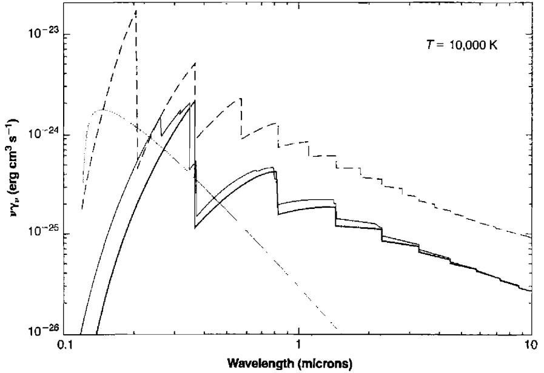
from 2^2S. The protons are more effective than electrons, whose effects, however, are not completely negligible, as can be seen from the values of the collisional transition rates per 2^2S atom, in Table 4.10. With these collisional processes taken into account, the equilibrium population in 2^2S is given by
n_p n_e \alpha_{2^2S}^{\text{eff}}(\text{H}^0, T) = n_{2^2S} \left( A_{2^2S, 1^2S} + n_p q_{2^2S, 2^2P^o}^p + n_e q_{2^2S, 2^2P^o}^e \right). \quad (4.27)
From Table 4.10, it can be seen that collisional deexcitation of 2^2S via 2^2P^o is more important than two-photon decay for n_p \geq 10^4 \text{ cm}^{-3}; so at densities approaching this value, Equation (4.27) must be used instead of Equation (4.26). Thus combining Equations (4.25) and (4.27), we can write the emission coefficient as
j_\nu(2q) = \frac{1}{4\pi} n_p n_e \gamma_\nu(2q) \quad (4.28)
| T | ||
|---|---|---|
| 10,000 K | 20,000 K | |
| Protons | ||
| q_2^p \text{ } ^2S, 2^2P_{1/2}^o | 2.51 \times 10^{-4} | 2.08 \times 10^{-4} |
| q_2^p \text{ } ^2S, 2^2P_{3/2}^o | 2.23 \times 10^{-4} | 2.19 \times 10^{-4} |
| Electrons | ||
| q_2^e \text{ } ^2S, 2^2P_{1/2}^o | 0.22 \times 10^{-4} | 0.17 \times 10^{-4} |
| q_2^e \text{ } ^2S, 2^2P_{3/2}^o | 0.35 \times 10^{-4} | 0.27 \times 10^{-4} |
| Total | ||
| q_2 \text{ } ^2S, 2^2P^o | 5.31 \times 10^{-4} | 4.71 \times 10^{-4} |
| T (K) | \alpha_{2^2S}^{eff} |
|---|---|
| 5,000 | 1.38 \times 10^{-13} |
| 10,000 | 0.838 \times 10^{-13} |
| 15,000 | 0.625 \times 10^{-13} |
| 20,000 | 0.506 \times 10^{-13} |
where
\gamma_\nu(2q) = \frac{\alpha_{2^2S}^{eff}(\text{H}^0, T)g_\nu}{1 + \left[ \frac{n_p q_2^p \text{ } ^2S, 2^2P + n_e q_2^e \text{ } ^2S, 2^2P}{A_{2^2S, 1^2S}} \right]} \quad (4.29)
The quantity \alpha_{2^2S}^{eff} is tabulated in Table 4.11 and \nu g_\nu is tabulated in Table 4.12. The two-photon continuum is also plotted in Figure 4.1 for T = 10,000 \text{ K} and in the low-density limit n_p \approx n_e \ll 10^4 \text{ cm}^{-3}. It can be seen that this continuum is quite significant in comparison with the H I continua, particularly just above the Balmer limit at \lambda 3646 \text{ \AA}. Note that although the two-photon continuum is symmetric about \nu_{12}/2 if expressed in photons per unit frequency interval, it is not symmetric about \lambda 2431 if expressed per
| \lambda (Å) | \nu (10^{14} Hz) | \nu g_\nu |
|---|---|---|
| \infty | 0.0 | 0.0 |
| 24,313 | 1.23 | 0.0373 |
| 12,157 | 2.47 | 0.242 |
| 8104 | 3.70 | 0.679 |
| 6078 | 4.93 | 1.37 |
| 4863 | 6.17 | 2.33 |
| 4052 | 7.40 | 3.55 |
| 3473 | 8.64 | 5.01 |
| 3039 | 9.87 | 6.69 |
| 2701 | 11.10 | 8.59 |
| 2431 | 12.34 | 10.6 |
unit wavelength interval, nor is either symmetric if expressed in energy units rather than photons. From Equation (4.25), if \nu > \nu_{12}/2,
g_\nu = \frac{\nu}{\nu'} g_{\nu'},
where \nu' = \nu_{12} - \nu.
4.4 Radio-Frequency Continuum and Line Radiation
The line and continuous spectra described in Sections 4.2 and 4.3 extend to arbitrarily low frequency, and in fact give rise to observable features in the radio-frequency spectrum region. Though this “thermal” radio-frequency radiation is a natural extension of the optical line and continuous spectra, it is somewhat different, in detail, because in the radio-frequency region h\nu \ll kT, and stimulated emission, which is proportional to \exp(-h\nu/kT), is therefore much more important in that region than in the ordinary optical region. We will examine the continuous spectrum first, and then the recombination-line spectrum.
In the radio-frequency region, the continuum is due to free-free emission, and the emission coefficient is given by the same Equation (4.22) that applies in the optical region. However, in the radio-frequency region, the Gaunt factor g_{ff}(T, Z, \nu) \neq 1, as in the optical region, but rather
g_{ff}(T, Z, \nu) = \frac{\sqrt{3}}{\pi} \left[ \ln \left( \frac{8k^3 T^3}{\pi^2 Z^2 e^4 m \nu^2} \right)^{1/2} - \frac{5\gamma}{2} \right], \quad (4.30)
where \gamma = 0.577 is Euler's constant. Numerically, this is approximately
g_{ff}(T, Z, \nu) = \frac{\sqrt{3}}{\pi} \left( \ln \frac{T^{3/2}}{Z\nu} + 17.7 \right),
with T in K and \nu in Hz, and thus at T \approx 10,000 K, \nu \approx 10^3 MHz, g_{ff} \approx 10.
The free-free effective absorption coefficient can then be found from Kirchhoff's law, and is
\kappa_\nu = n_+ n_e \frac{16\pi^2 Z^2 e^6}{(6\pi m k T)^{3/2} \nu^2 c} g_{ff} \quad (4.31)
per unit length. Note that this effective absorption coefficient is the difference between the true absorption coefficient and the stimulated emission coefficient, since the stimulated emission of a photon is exactly equivalent to a negative absorption process; in the radio-frequency region (h\nu \ll kT) the stimulated emissions very nearly balance the true absorptions and the correction for stimulated emission [1 - \exp(h\nu/kT)] \approx h\nu/kT \ll 1.
Substituting numerical values and fitting powers to the weak temperature and frequency dependence of g_{ff},
\begin{aligned} \tau_\nu &= \int \kappa_\nu ds \\ &= 8.24 \times 10^{-2} T^{-1.35} \nu^{-2.1} \int n_+ n_e ds \\ &= 8.24 \times 10^{-2} T^{-1.35} \nu^{-2.1} E_c. \end{aligned} \quad (4.32)
In this formula T is measured in K, \nu in GHz, and E_c, the so-called continuum emission measure, in \text{cm}^{-6} pc. It can be seen from Equations (4.31) or (4.32) that at sufficiently low frequency all nebulae become optically thick; for example, an H II region with n_e \approx n_p \approx 10^2 \text{ cm}^{-3} and a diameter 10 pc has \tau_\nu \approx 1 at \nu \approx 200 MHz, and a planetary nebula with n_e \approx 3 \times 10^3 \text{ cm}^{-3} and a diameter of 0.1 pc has \tau_\nu \approx 1 at \nu \approx 600 MHz. Thus, in fact, many nebulae are optically thick at observable low frequencies and optically thin at observable high frequencies. The equation of radiative transfer,
\frac{dI_\nu}{ds} = -\kappa_\nu I_\nu + j_\nu \quad (4.33)
or
\frac{dI_\nu}{ds} = -I_\nu + \frac{j_\nu}{\kappa_\nu} = -I_\nu + B_\nu(T), \quad (4.34)
has the solution for no incident radiation
I_\nu = \int_0^{\tau_\nu} B_\nu(T) \exp(-\tau_\nu) d\tau_\nu. \quad (4.35)
In the radio-frequency region,
B_\nu(T) = \frac{2h\nu^3}{c^2} \frac{1}{\exp(h\nu/kT) - 1} \approx \frac{2\nu^2 kT}{c^2} \quad (4.36)
is proportional to T, so it is conventional in radio astronomy to measure intensity in terms of brightness temperature, defined by T_{bv} = c^2 I_\nu / 2\nu^2 k. Hence (4.35) can be rewritten
T_{bv} = \int_0^{\tau} T \exp(-\tau_\nu) d\tau_\nu, \quad (4.37)
and for an isothermal nebula, this becomes
T_{bv} = T[1 - \exp(-\tau_\nu)] \begin{cases} \rightarrow T\tau_\nu \text{ as } \tau_\nu \rightarrow 0 \\ \rightarrow T \text{ as } \tau_\nu \rightarrow \infty \end{cases}.
Thus the radio-frequency continuum has a spectrum in which T_{bv} varies approximately as \nu^{-2} at high frequency and is independent of \nu at low frequency.
The H I recombination lines of very high n also fall in the radio-frequency spectral region and have been observed in many gaseous nebulae. Some specific examples of observed lines are H 109 \alpha (the transition with \Delta n = 1 from n = 110 to n = 109) at \nu = 5008.89 MHz, \lambda = 5.99 cm, H 137 \beta (the transition with \Delta n = 2 from n = 139 to n = 137) at \nu = 5005.0 MHz, \lambda = 6.00 cm, and so on. The emission coefficients in these radio recombination lines may be calculated from equations similar to those described in Section 4.2 for the shorter wavelength optical recombination lines. For all lines observed in the radio-frequency region, n > n_{cL} defined there, so that at a fixed n, n_{nL} \propto (2L + 1), and only the populations n_n need be considered. One additional process, in addition to those described in Section 4.2, must also be taken into account, namely collisional ionization of levels with large n and its inverse process, three-body recombination,
\mathrm{H}^{0}(n)+e\rightleftharpoons\mathrm{H}^{+}+e+e
The rate of collisional ionization per unit volume per unit time from level n may be written
n_n n_e \overline{\sigma_{ionization}(n)} = n_n n_e q_{n,i}(T), \quad (4.38)
and the rate of three-body recombination per unit time per unit volume may be written n_p n_e^2 \phi_n(T); so, from the principle of detailed balancing,
\phi_n(T) = n^2 \left( \frac{h^2}{2\pi m k T} \right)^{3/2} \exp(X_n/kT) q_{n,i}(T). \quad (4.39)
Thus the equilibrium equation that is analogous to Equation (4.16) becomes, at high n,
\begin{aligned} n_p n_e [\alpha_n(T) + n_e \phi_n(T)] + \sum_{n' > n}^{\infty} n_{n'} A_{n',n} + \sum_{n'=n_0}^{\infty} n_{n'} n_e q_{n',n} \\ = n_n \left[ \sum_{n'=n_0}^{n-1} A_{n,n'} + \sum_{n'=n_0}^{\infty} n_e q_{n,n'}(T) + n_e q_{n,i}(T) \right], \end{aligned} \quad (4.40)
where
A_{n,n'} = \frac{1}{n^2} \sum_{L,L'} (2L+1) A_{nL,n'L'} \quad (4.41)
is the mean transition probability averaged over all the L levels of the upper principal quantum number. These equations can be expressed in terms of b_n instead of n_n, and the solutions can be found numerically by standard matrix-inversion techniques. Note that since the coefficients b_n have been defined with respect to thermodynamic equilibrium at the local T, n_e, and n_p, the coefficient b for the free electrons is identically unity, and therefore b_n \rightarrow 1 as n \rightarrow \infty. Some calculated values of b_n for T = 10,000 K and various n_e are plotted in Figure 4.2, which shows that the increasing importance of collisional transitions as n_e increases makes b_n \approx 1 at lower and lower n.
To calculate the emission in a specific recombination line, it is again necessary to solve the equation of transfer, taking account of the effects of stimulated emission. In this case, for an n_i \Delta n line between the upper level m = n + \Delta n and the lower level n, if k_{\nu l} is the true line-absorption coefficient, then the line-absorption coefficient, corrected for stimulated emission, to be used in the equation of transfer is
k_{\nu l} = k_{\nu l} \left( 1 - \frac{b_m}{b_n} \exp(-h\nu/kT) \right), \quad (4.42)
since it is the net difference between the rates of upward absorption processes and of downward-induced emissions. If we expand (4.42) in a power series, it becomes
k_{\nu L} = k_{\nu l} \left( \frac{b_m}{b_n} \frac{h\nu}{kT} - \frac{d \ln(b_n)}{dn} \Delta n \right). \quad (4.43)
Since b_m/b_n \approx 1 and h\nu \ll kT, the line-absorption coefficient can become negative, implying positive maser action, if (d \ln b_n)/dn is sufficiently large. Calculated values of this derivative are therefore also shown in Figure 4.2. Since, for typical observed lines h\nu/kT \approx 10^{-5}, it can be seen from this figure that the maser effect is in fact often quite important. We will again use these concepts and expressions to calculate the strengths of the radio-frequency recombination lines in Chapter 5.
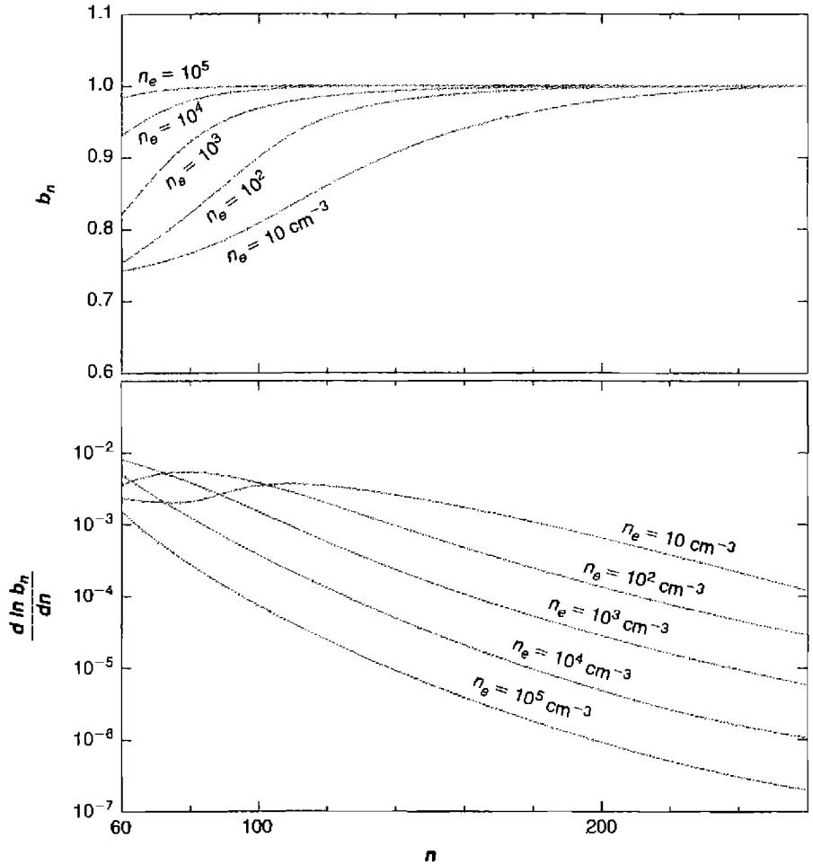
4.5 Radiative Transfer Effects in H I
For most of the emission lines observed in nebulae there is no radiative-transfer problem; in most lines the nebulae are optically thin, and any line photon emitted simply escapes. However, in some lines, especially the resonance lines of abundant atoms, the optical depths are appreciable, and scattering and absorption must be taken into account in calculating the expected line strengths. Two extreme assumptions, Case A, a nebula with vanishing optical thickness in all the H I Lyman lines, and Case B, a nebula with large optical depths in all the Lyman lines, have already been discussed in
Section 4.2; and although these two cases do not require a detailed radiative-transfer solution, in the intermediate cases a more sophisticated treatment is necessary. Other radiative-transfer problems arise in connection with the He I triplets, the conversion of He II L\alpha and H I L\beta into observable O III or O I line radiation, respectively, by the Bowen resonance-fluorescence processes, and fluorescence excitation of other lines by stellar continuum radiation. In this section some general concepts about the escape of line photons from nebulae will be discussed in the context of the H I Lyman and Balmer lines, and then in succeeding sections these same concepts will be applied to the other problems mentioned.
In a static nebula the only line-broadening mechanisms are thermal Doppler broadening and radiative damping, and in the cores of the lines, where radiative damping can be neglected, the line-absorption coefficient has the Doppler form
\kappa_{\nu l} = k_{0l} \exp \left[ - (\Delta\nu / \Delta\nu_D)^2 \right] = k_{0l} \exp(-x^2) \quad [\text{cm}^2], \quad (4.44)
where
k_{0l} = \frac{\lambda^2}{8\pi^{3/2}} \frac{\omega_j}{\omega_i} \frac{A_{j,i}}{\Delta\nu_D} = \frac{\sqrt{\pi} e^2 f_{ij}}{mc \Delta\nu_D} \quad [\text{cm}^2] \quad (4.45)
is the line-absorption cross section per atom at the center of the line,
\Delta\nu_D = \sqrt{\frac{2kT}{m_H c^2}} \nu_0 \quad [\text{Hz}]
is the thermal Doppler width (Hz), and f_{ij} is the absorption oscillator strength between the lower and upper level i, j. The full-width at half-maximum (FWHM) of the line is 2\sqrt{\ln 2} times larger than \Delta\nu_D. Small-scale micro-turbulence can be taken into account as a further source of broadening of the line-absorption coefficient by adding the thermal and turbulent velocity terms in quadrature, \Delta\nu_D^2 = \Delta\nu_{\text{thermal}}^2 + \Delta\nu_{\text{turbulent}}^2. Larger scale turbulence and expansion of the nebula can be treated by considering the frequency shift between the emitting and absorbing volumes.
In a static nebula, a photon emitted at a particular point in a particular direction and with a normalized frequency x from the center of the line has a probability \exp(-\tau_x) of escaping from the nebula without further scattering and absorption. Here \tau_x is the optical depth from the point to the edge of the nebula in this direction and at this frequency. Averaging over all directions gives the mean escape probability from this point and at this frequency, and further averaging over the frequency profile of the emission coefficient gives the mean escape probability from the point.
For all the forbidden lines and for most of the other lines, the optical depths are so small in every direction, even at the center of the line, that the mean escape probabilities from all points are essentially unity. However, for lines of larger optical depth we must examine the probability of escape quantitatively.
Consider an idealized spherical homogeneous nebula, with optical radius in the center of line \tau_{0l}. So long as \tau_{0l} < 10^4, only the Doppler core of the line-absorption cross section need be considered. The photons are emitted with the same Doppler profile, and the mean probability of escape must therefore be averaged over this profile. If, at a particular normalized frequency x, the optical radius of the nebula is \tau_x, the mean probability of escape averaged over all directions and volumes is
p(\tau_x) = \frac{3}{4\tau_x} \left[ 1 - \frac{1}{2\tau_x^2} + \left( \frac{1}{\tau_x} + \frac{1}{2\tau_x^2} \right) \exp(-2\tau_x) \right]. \quad (4.46)
When we average over the Doppler profile, the mean escape probability for a photon emitted in the line is
\varepsilon(\tau_{0l}) = \frac{1}{\sqrt{\pi}} \int_{-\infty}^{\infty} p(\tau_x) \exp(-x^2) dx \quad (4.47)
where \tau_{0l} is the optical radius in the center of the line. This integral must be evaluated numerically, but for optical radii (\tau_{0l} \leq 50) that are not too large, the results can be fitted fairly accurately with \varepsilon(\tau_{0l}) = 1.72/(\tau_{0l} + 1.72).
If we consider a Lyman line L_n, photons emitted in this line that do not escape from the nebula are absorbed by another hydrogen atom, and each absorption process represents an excitation of the n^2 P^o level of H I. This excited level very quickly undergoes a radiative decay, and the result is either resonance scattering or resonance fluorescence excitation of another H I line. If the photon emitted from the n^2 P level decays in a 1^2 S - n^2 P^o transition, the process is resonance scattering of an L_n photon. If it is emitted in the 2^2 S - n^2 P^o transition, the process is conversion of L_n into H_n plus excitation of 2^2 S, leading to emission of two photons in the continuum. If it is emitted in the 3^2 S - n^2 P^o transition, the process is conversion of L_n into P_n plus excitation of 3^2 S, leading to emission of H\alpha plus L\alpha, and so on. The probabilities of each of these processes may be found directly from the probability matrices C_{nL,n'L'} and P_{nL,n'L'}, defined in Section 4.2. If we define P_n(Lm) and P_n(Hm) as the probabilities that absorption of an L_n photon results in emission of an Lm photon and of an Hm photon, respectively, then
P_n(Lm) = C_{n1,m1} P_{m1,10} \quad (4.48)
and
P_n(Hm) = C_{n1,m0} P_{m0,21} + C_{n1,m1} P_{m1,20} + C_{n1,m2} P_{m2,21}. \quad (4.49)
We can now use these probabilities to calculate the emergent Lyman-line spectrum emitted from a model nebula. It is easiest to work in terms of numbers of photons emitted. If we write R_n for the total number of L_n photons generated in the nebula per unit time by recombination and subsequent cascading, and A_n as the total number of L_n photons absorbed in the nebula per unit time, then J_n, the total number of
L_n photons emitted in the nebula per unit time, is the sum of the contributions from recombination and from resonance fluorescence plus scattering:
J_n = R_n + \sum_{m=n}^{\infty} A_m P_m(L_n). \quad (4.50)
Since each L_n photon emitted has a probability \varepsilon_n of escaping, the total number of L_n photons escaping the nebula per unit time is
E_n = \varepsilon_n J_n = \varepsilon_n \left[ R_n + \sum_{m=n}^{\infty} A_m P_m(L_n) \right]. \quad (4.51)
Finally, in a steady state the number of L_n photons emitted per unit time is equal to the sum of the numbers absorbed and escaping per unit time,
J_n = A_n + E_n = A_n + \varepsilon_n J_n. \quad (4.52)
Thus, eliminating J_n between (4.51) and (4.52),
A_n = (1 - \varepsilon_n) \left[ R_n + \sum_{m=n}^{\infty} A_m P_m(L_n) \right], \quad (4.53)
and since the R_n and P_m(L_n) are known from the recombination theory and the \varepsilon_n are known from the radiative-transfer theory, Equation (4.53) can be solved for the A_n by a systematic procedure, working downward from the highest n at which \varepsilon_n differs appreciably from unity. Then from these values of R_n, the E_n may be calculated from (4.51), giving the emergent Lyman-line spectrum.
Next we will investigate the Balmer-line spectrum, which requires further analysis. Let us write S_n for the number of H_n photons generated in the nebula per unit time by recombination and subsequent cascading. Suppose that there is no absorption of these Balmer-line photons, so that K_n, the total number of H_n photons emitted in the nebula per unit time, is the sum of contributions from recombination and from resonance fluorescence due to Lyman-line photons,
K_n = S_n + \sum_{m=n}^{\infty} A_m P_m(H_n).
Then, since the S_n and P_m(H_n) are known from the recombination theory and the A_m are known from the previous Lyman-line solution, the K_n can be calculated immediately to obtain the emergent Balmer-line spectrum. Note that R_n, S_n, J_n, K_n, and A_n are proportional to the total number of photons; the equations are linear in these quantities; and the entire calculation can therefore be normalized to any S_n, for instance, to S_4, the number of H\beta photons that would be emitted if there were no absorption effects. The results, in the form of calculated ratios of H\alpha/H\beta and H\beta/H\gamma intensities, are shown in Figure 4.3 as a function of \tau_{0l}(L\alpha), the optical radius of
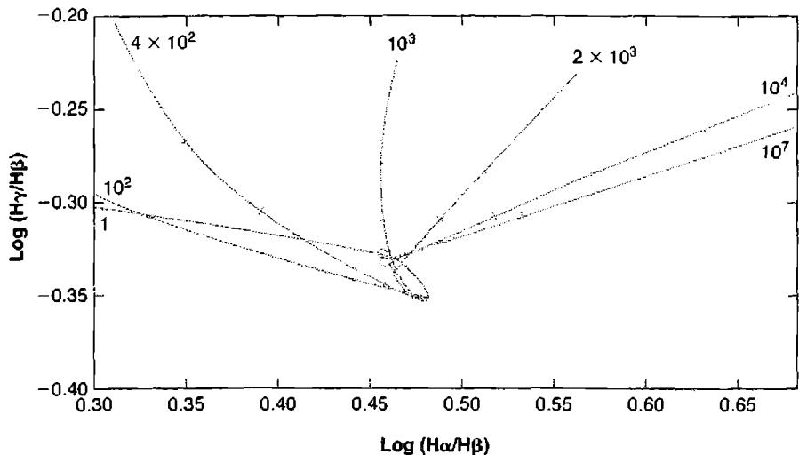
the nebula at the center of L\alpha; and the transition from Case A (\tau_{0l} \rightarrow 0) to Case B (\tau_{0l} \rightarrow \infty) can be seen clearly.
Although in most nebulae, the optical depths in the Balmer lines are small, there could be situations in which the density n(H^0, 2^2S) is sufficiently high that some self-absorption does occur in these lines. The optical depths in the Balmer lines can again be calculated from Equation (4.45), and since they are proportional to n(H^0, 2^2S), the radiative-transfer problem is now a function of two variables, \tau_{0l}(L\alpha), giving the optical radius in the Lyman lines, and another, say, \tau_{0l}(H\alpha), giving the optical radius in the Balmer lines. Although the equations are much more complicated, since now Balmer-line photons may be scattered or converted into Lyman-line photons and vice versa, there is no new effect in principle, and the same general type of formulation developed previously for the Lyman-line absorption can still be used. We will not examine the details here, but will simply discuss physically the calculated results shown in Figure 4.3. For \tau_{0l}(H\alpha) = 0, the first effect of increasing \tau_{0l}(L\alpha) is that L\beta is converted into H\alpha plus the two-photon continuum. This increases the H\alpha/H\beta ratio of the escaping photons, corresponding to a move of the representative point to the right in Figure 4.3. However, for slightly larger \tau_{0l}(L\alpha), L\gamma photons are also converted into P\alpha, H\alpha, H\beta, L\alpha, and two-photon continuum photons, and since the main effect is to increase the strength of H\beta, this corresponds to a move downward and to the left in Figure 4.3. For still larger \tau_{0l}(L\alpha), as still higher Ln photons are
converted, H\gamma is also strengthened, and the calculation, which takes into account all of these effects, shows that the representative point describes the small loop of Figure 4.3 as the conditions change from Case A to Case B. For large \tau_{0l}(L\alpha), the effect of increasing \tau_{0l}(H\alpha) is that, although H\alpha is merely scattered (because any L\beta photons it forms are quickly absorbed and converted back to H\alpha), H\beta is absorbed and converted to H\alpha plus P\alpha. This increases H\alpha/H\beta and decreases H\beta/H\gamma, as shown quantitatively in Figure 4.3.
4.6 Radiative Transfer Effects in He I
The recombination radiation of He I singlets is very similar to that of H I, and Case B is a good approximation for the He I Lyman lines. However, the recombination radiation of the He I triplets is modified by the fact that the \text{He}^0\ 2^3S term is considerably more metastable than \text{H}^0\ 2^2S, and as a result self-absorption effects are quite important (as is collisional excitation from 2^3S, to be discussed later). As the energy-level diagram of Figure 4.4 shows, 2^3S is the lowest triplet term in He, and recaptures to triplets tend to cascade down to it. Depopulation occurs only by photoionization, especially by H I L\alpha, by collisional transitions to 2^1S and 2^1P^o, or by the strongly forbidden 2^3S-1^1S radiative transition, as discussed in Section 2.4. As a result n(2^3S) is large, which in turn makes the optical depths in the lower 2^3S-n^3P^o lines significant. Figure 4.4 shows that \lambda 10830\ 2^3S-2^3P^o photons are simply scattered, but that absorption of \lambda 3889\ 2^3S-3^3P^o photons can lead to their conversion to \lambda 4.3\ \mu\text{m}\ 3^3S-3^3P^o, plus 2^3P-3^3S\lambda 7065, plus 2^3S-2^3P^o\lambda 10830. The probability of this conversion is
\frac{A_{3^3S, 3^3P^o}}{A_{3^3S, 3^3P^o} + A_{2^3S, 3^3P^o}} \approx 0.10
per absorption. At larger \tau_{0l}(\lambda 10830), still higher members of the 2^3S-n^3P^o series are converted into longer wavelength photons.
The radiative-transfer problem is very similar to that for the Lyman lines discussed in Section 4.5, and may be handled by the same kind of formalism. Calculated ratios of the intensities of \lambda 3889 (which is weakened by self-absorption) and of \lambda 7065 (which is strengthened by resonance fluorescence) relative to the intensity of \lambda 4471\ 2^3P^o-4^3D (which is only slightly affected by absorption) are shown for spherically symmetric homogeneous model nebulae in Figure 4.5.
The thermal Doppler widths of He I lines are smaller than those of H I lines, because of the larger mass of He, and therefore whatever turbulent or expansion velocity there may be in a nebula is relatively more important in broadening the He I lines. The simplest example to consider is a model spherical nebula expanding with a linear velocity of expansion,
U_{\text{exp}}(r) = \omega r; \quad 0 \leq r \leq R; \quad (4.54)
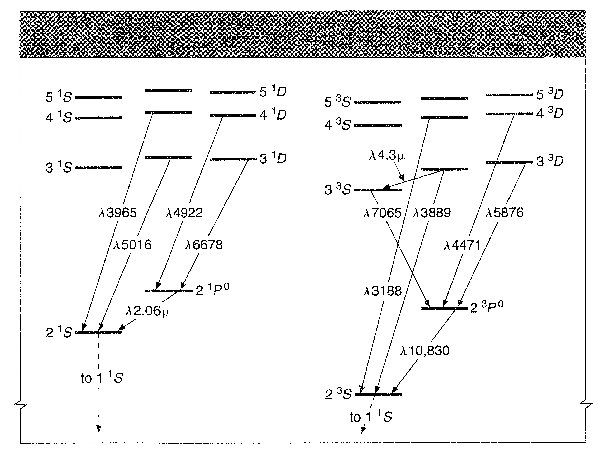
for then, between any two points r_1 and r_2 in the nebula, the relative radial velocity is
u(r_1, r_2) = \omega s, \quad (4.55)
where s is the distance between the points and \omega is the constant velocity gradient. Thus photons emitted at r_1 will have a line profile centered about the line frequency \nu_L in the reference system in which r_1 is at rest. However, they will encounter at r_2 material absorbing with a profile centered on the frequency
\nu'(r_1, r_2) = \nu_L \left( 1 + \frac{\omega s}{c} \right), \quad (4.56)
and the optical depth in a particular direction to the boundary of the nebula for a photon emitted at r_1 with frequency \nu may be written
\tau_\nu(r_1) = \int_0^{r_2=R} n(2^3S) k_{0l} \exp \left\{ - \left[ \frac{\nu - \nu'(r_1, r_2)}{\Delta \nu_D} \right]^2 \right\} ds. \quad (4.57)
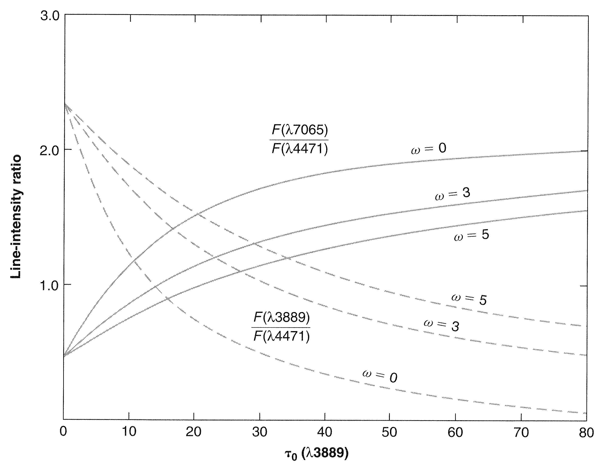
It can be seen that increasing velocity of expansion tends, for a fixed density n(2^3S), to decrease the optical depth to the boundary of the nebula and thus to decrease the self-absorption effects. This effect can be seen in Figure 4.5, where some calculated results are shown for various ratios of the expansion velocity u_{exp}(R) = \omega R to the thermal velocity u_{th} = (2kT/m_{He})^{1/2}, as functions of \tau_{0l}(\lambda 3889) = n(2^3S)\kappa_{0l}(\lambda 3889)R, the optical radius at the center of the line for zero expansion velocity. Note that the calculated intensity ratios for large u_{exp}/u_{th} and large \tau_0 are quite similar to those for smaller u_{exp}/u_{th} and smaller \tau_0.
4.7 The Bowen Resonance-Fluorescence Mechanisms for O III and O I
There is an accidental coincidence between the wavelength of the He II L\alpha line at \lambda 303.78 and the O III 2p^2\ ^3P_2-3d\ ^3P_2^o line at \lambda 303.80. As we have seen, in the He^{++} zone of a nebula there is some residual He^+, so the He II L\alpha photons emitted by
recombination are scattered many times before they escape. As a result, there is a high density of He II \lambda\alpha photons in the He ++ zone, and since O ++ is also present in this zone, some of the He II \lambda\alpha photons are absorbed by it and excite the 3d\ ^3P_2^o level of O III. This level then quickly decays by a radiative transition, most frequently (relative probability 0.74) by resonance scattering in the 2p^2\ ^3P_2-3d\ ^3P_2^o line—that is, by emitting a photon. The next most likely decay process (probability 0.24) is emission of \lambda 303.62\ 2p^2\ ^3P_1-3d\ ^3P_2^o, which may then escape or may be reabsorbed by another O ++ ion, again populating 3d\ ^3P_2^o. Finally (probability 0.02), the 3d\ ^3P_2^o level may decay by emitting one of the six longer wavelength photons 3p^3L_J-3d\ ^3P_2^o indicated in Figure 4.6. These levels 3p\ ^3L_J then decay to 3s and ultimately back to 2p^2\ ^3P, as shown in the figure (or to 2p^3 and then back to 2p^2\ ^3P, emitting two far-ultraviolet line photons, as shown in the figure). This is the Bowen resonance-fluorescence mechanism, the conversion of He II \lambda\alpha to those lines that arise from 3d\ ^3P_2^o or from the levels excited by its decay. These lines are observed in many planetary nebulae, and their interpretation, requiring the solution of the problem of the scattering, escape, and destruction of He II \lambda\alpha with the complications introduced by the O ++ scattering and resonance fluorescence, has been worked out years ago. Some of the most important references to it are given at the end of the chapter for those who wish to study it further.
A second accidental near-coincidence occurs between the wavelength of the H I \lambda\beta line at \lambda 1025.72\ \text{\AA} and the O I 2p^4\ ^3P_2-2p^33d\ ^3D_3^o line at \lambda 1025.76\ \text{\AA}, which excites the 2p^33d\ ^3D_3^o level. Some atomic oxygen exists in the H + zone, due to rapid charge transfer between oxygen and hydrogen, so the situation is analogous to that for O III and He II \lambda\alpha. Excitations of 2p^33d\ ^3D_3^o by this process are followed by successive decays producing 2p^33p\ ^3P_2-2p\ ^33d\ ^3D_3^o\ \lambda 11286.9\ \text{\AA}, 2p^33s\ ^3S_1^o-2p\ ^33p\ ^3P_2\ \lambda 8446.36\ \text{\AA}, and the three lines of the multiplet 2p^4\ ^3P_{2,1,0}-2p^33s\ ^3S_1^o\ \lambda\lambda 1302.17, 1304.86, 1306.03\ \text{\AA}. In the simplest case each excitation produces a cascade through the first two of these lines, followed by one of the last three, in the predicted ratio of their transition probabilities, 3.4:2.0:0.7. The relative intensities of the first two lines and the sum of the intensities of the multiplet are thus all equal in photon units, so their predicted relative intensities in energy units are inversely proportional to their wavelengths.
4.8 Collisional Excitation in He I
Collisional excitation of H is negligible in comparison with recombination in populating the excited levels in planetary nebulae and H II regions, because the threshold for even the lowest level, n = 2 at 10.2 eV, is large in comparison with the thermal energies at typical nebular temperatures. This can be confirmed quantitatively using collision strengths listed in Table 3.16. However, in He 0 the 2\ ^3S level is highly metastable, and collisional excitation from it can be important, particularly in exciting 2\ ^3P^o and thus leading to emission of He I \lambda 10830\ \text{\AA}. To fix our ideas, let us consider a nebula sufficiently dense (n_e \gg n_c) that the main mechanism for depopulating 2\ ^3S is collisional transitions to 2\ ^1S and 2\ ^1P^o, as explained in Section 2.4. The
![Figure 4.6. Schematized partial energy-level diagrams of [O III] and He II showing coincidence of He II Lα and [O III] 2p^2\ ^3P_2-3d\ ^3Pλ 303.80 . The Bowen resonance fluorescence lines in the optical and near-ultraviolet are indicated by solid lines, and the far-ultraviolet lines that lead to excitation or decay are indicated by dashed lines. There are six observable lines in all leading down from 3d\ ^3P_2^o , and 14 from 3p\ ^3P_2,1 , 3p\ ^3S_1 , and 3p\ ^3D_3,2,1 ,…](assets/images/figure-4-6.jpg)
| T (K) | 2^3S, 2^3P^o | 2^3S, 3^3S | 2^3S, 3^3P^o | 2^3S, 3^3D | 2^3S, 3^1D |
|---|---|---|---|---|---|
| 6,000 | 16.3 | 2.40 | 1.61 | 1.46 | 0.249 |
| 10,000 | 25.8 | 2.29 | 1.61 | 1.95 | 0.259 |
| 15,000 | 37.1 | 2.25 | 1.59 | 2.52 | 0.257 |
| 20,000 | 46.5 | 2.26 | 1.57 | 2.99 | 0.252 |
| 25,000 | 55.3 | 2.31 | 1.56 | 3.43 | 0.245 |
equilibrium population in 2^3S is then given by the balance between recombinations to all triplet levels, which eventually cascade down to 2^3S, and collisional depopulation of 2^3S,
n_e n(\text{He}^+) \alpha_B(\text{He}^0, n^3L) = n_e n(2^3S) [q_{2^3S, 2^1S} + q_{2^3S, 2^1P^o}]. \quad (4.58)
The rate of collisional population of 2^3P^o is thus
n_e n(2^3S) q_{2^3S, 2^3P^o} = \frac{n_e n(\text{He}^+) q_{2^3S, 2^3P^o}}{[q_{2^3S, 2^1S} + q_{2^3S, 2^1P^o}]} \alpha_B(\text{He}^0, n^3L) \quad (4.59)
so the relative importance of collisional to recombination excitation of \lambda 10830 is given by the ratio
\frac{n_e n(2^3S) q_{2^3S, 2^3P^o}}{n_e n(\text{He}^+) \alpha_{\lambda 10830}^{eff}} = \frac{q_{2^3S, 2^3P^o}}{[q_{2^3S, 2^1S} + q_{2^3S, 2^1P^o}]} \frac{\alpha_B(\text{He}^0, n^3L)}{\alpha_{\lambda 10830}^{eff}} \quad (4.60)
Computed values for the collision strengths \Upsilon that are used to compute q_{2^3S, 2^3P^o} are listed in Table 4.13; they are much larger than those for q_{2^3S, 2^1S} and q_{2^3S, 2^1P^o} (listed in Table 2.5), because the cross section for the strong allowed 2^3S-2^3P transition is much larger than the exchange cross sections to the singlet levels. At a representative temperature T = 10,000 K, the first factor in Equation (4.60) has the numerical value 6.0; the second, 1.4; and the ratio of collisional to recombination excitation is thus about 8. In other words, collisional excitation from 2^3S completely dominates the emission of \lambda 10830, and the factor by which it dominates depends only weakly on T, and can easily be seen to decrease with n_e below n_c.
Though the collisional transition rates from 2^3S to 2^1S and 2^1P^o are smaller than to 2^3P^o, the recombination rates of population of these singlet levels are also smaller, and the collisions are therefore also important in the population of 2^1S and 2^1P^o. The cross sections for collisions to the higher singlets and triplets are smaller but not negligible; from the best available cross sections it appears likely that collisional population of 3^3P^o is significant and somewhat affects the strength of \lambda 3889. The available atomic data indicates that there is a non-negligible collisionally excited
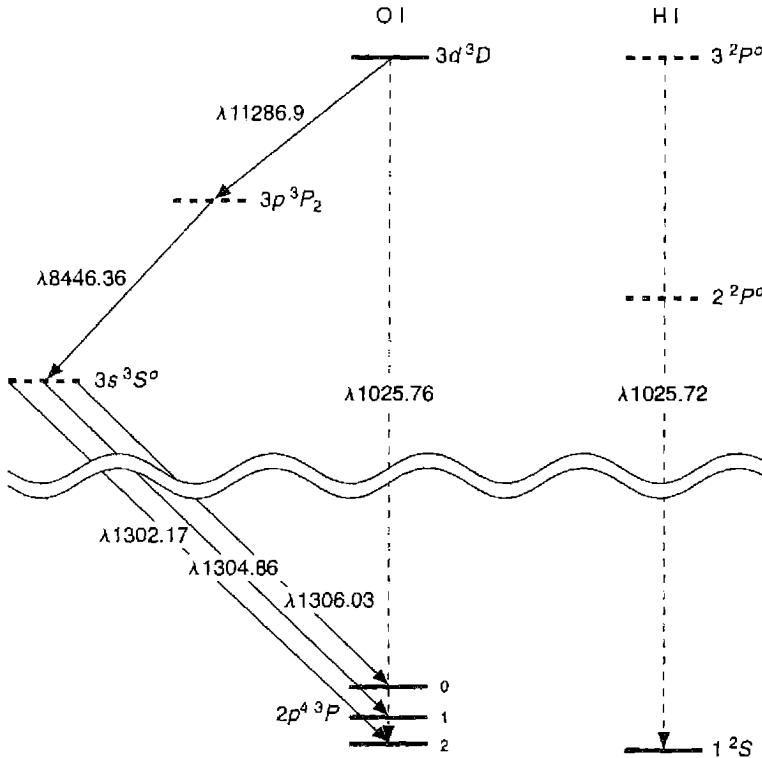
component in the observed strength of \lambda 5876 in planetary nebulae. Some collision strengths for the excitation of He I levels with n = 3 are also listed in Table 4.13.
Similar collisional-excitation effects occur from the metastable \text{He}^0\ 2\ ^1S and \text{H}^0\ 2\ ^2S levels, but they decay so much more rapidly than \text{He}^0\ 2\ ^3S that their populations are much smaller and the resulting excitation rates are negligibly small.
References
A good general summary of the emission processes in gaseous nebulae is given by
Seaton, M. J. 1960, Reports on Progress in Physics 23, 313.
The theory of the recombination-line spectrum of H I goes back to the early 1930s and was developed in papers by H. H. Plaskett, G. G. Cillie, D. H. Menzel, L. H. Aller, L. Goldberg,
and others. In more recent years it has been refined and worked out more accurately by M. J. Seaton, A. Burgess, R. M. Pengelly, M. Brocklehurst, D. G. Hummer, P. J. Storey, and others. The treatment in Chapter 4 follows most closely the following definitive references:
Seaton, M. J. 1959, MNRAS, 119, 90.
Pengelly, R. M. 1964, MNRAS, 127, 145.
The second reference treats the low-density limit for H I and He II in detail. (Tables 4.1, 4.2, and 4.3 are derived from it.)
Pengelly, R. M., & Seaton, M. J. 1964, MNRAS, 127, 165.
The effects of collisions in shifting L at fixed n are discussed in this reference. Table 4.10 comes from it.
Brocklehurst, M. 1971, MNRAS, 153, 471.
Hummer, D. G., & Storey, P. J. 1987, MNRAS, 224, 801.
Hummer, D. G., & Storey, P. J. 1992, MNRAS, 254, 277.
Storey P. J., & Hummer D. G. 1995, MNRAS, 272, 41 (on the web at http://adc.gsfc.nasa.gov/adc-cgi/cat.pl?catalogs/6/6064/).
These references include the definitive results for H I and He II at finite densities in the optical region, taking full account of the collisional transitions. Tables 4.4 and 4.5 are based upon the last reference, which includes full electronic access.
Robbins, R. R. 1968, ApJ, 151, 497; and ApJ, 151, 511.
Robbins, R. R. 1970, ApJ, 160, 519.
Robbins, R. R., & Robinson, E. L. 1971, ApJ, 167, 249.
Brocklehurst, M. 1972, MNRAS, 157, 211.
Ferland, G. J. 1980, MNRAS, 191, 243.
Almog, U., & Netzer, H. 1989, MNRAS, 238, 57.
Smits, D. P. 1996, MNRAS, 278, 683.
Kingdon, J. B., & Ferland, G. J. 1996, MNRAS, 282, 723.
Hummer, D. G., & Storey, P. J. 1998, MNRAS, 297, 1073.
Porter, R. L., Bauman, R. P., Ferland, G. J., & MacAdam, K. B. 2005, ApJ, 622, 73L.
The first two papers by Robbins work out the theory in detail for the He I triplets; the third is concerned with the singlets (for Case A only). The paper by Ferland analyzes the applicability of Case B to the He I singlets. The Porter et al. article is complete, for it describes triplet and singlet results, including collisions from 2^3S. (Table 4.6 is based on it.)
Brown, R. L., & Mathews, W. G. 1970, ApJ, 160, 939.
This reference collects previous references and material on the H I and He II continuum, and includes the most detailed treatment of the He I continuum. (Tables 4.7–4.9 and 4.11 are taken from this reference.)
Ferland, G. J. 1980, PASP, 92, 596.
Martin, P. G. 1988, ApJS, 66, 125.
These references give the continuous spectrum of the H I continuum (for specific wavelengths and filters), and recombination coefficients for Cases A and B over a very wide range in temperature (500 \text{ K} \leq T \leq 2,000,000 \text{ K}).
Scheuer, P. A. G. 1960, MNRAS 120, 231.
Hummer, D. G. 1988, ApJ , 327, 477.
The first is a very complete reference on free-free emission in the radio-frequency region, while the rest do the general problem.
The first published prediction that the radio-frequency recombination lines of H I would be observable was made by
Kardashev, N. S. 1959, Astron. Zhurnal , 36, 838 (English translation, 1960, Soviet Astronomy AJ , 3, 813).
The key reference on the importance of maser action and on the exact variation of b_n with n is
Goldberg, L. 1966, ApJ , 144, 1225.
The radiative transfer treatment in this chapter essentially follows this reference.
The equilibrium equations for the populations of the high levels are worked out in
Seaton, M. J. 1964, MNRAS , 127, 177.
Sejnowski, T. J., & Hjellming, R. H. 1969, ApJ , 156, 915.
Brocklehurst, M. 1970, MNRAS , 148, 417.
The last of these three references is the definitive treatment and makes full allowance for all collisional effects. (Figure 4.2 is based on it.)
A good deal of theoretical work has been done by several authors on radiative transfer problems in nebulae. The portion of this research used in this chapter is summarized (with complete references) in
Osterbrock, D. E. 1971, JQSRT , 11, 623.
Some of the key references concerning the H I lines are
Capriotti, E. R. 1964, ApJ , 139, 225, and 140, 632.
Capriotti, E. R. 1966, ApJ , 146, 709.
Cox, D. P., & Mathews, W. G. 1969, ApJ , 155, 859.
(Figure 4.3 is based on the last reference.)
The radiative transfer problem of He I lines was worked out earlier in
Pottasch, S. R. 1962, ApJ , 135, 385.
Robbins, R. R. 1968, ApJ , 151, 511.
A more recent treatment is
Almog, U., & Netzer, H. 1989, MNRAS , 238, 57.
(Figure 4.5 is derived from calculations from these references.)
The Bowen resonance-fluorescence mechanism was first described by
Bowen, I. S. 1924, ApJ , 67, 1.
The radiative transition probabilities necessary for tracing all the downward radiative decays following excitation of O III and 3d\ ^3P_1^0 are given by
Saraph, H. E., & Seaton, M. J. 1980, MNRAS, 193, 617.
Bhatia, A. K., & Kastner, S. O. 1993, ADNDT, 54, 133.
Froese Fischer, C. 1994, Phys. Scripta, 49, 51.
Solutions are described in
Weymann, R. J., & Williams, R. E. 1969, ApJ, 157, 1201.
Harrington, J. P., 1972, ApJ, 176, 127.
Kallman, T., & McCray, R. 1980, ApJ, 242, 615.
Elitzur, M., & Netzer, H. 1985, ApJ, 291, 646.
Netzer, H., Elitzur, M., & Ferland, G. J. 1985, ApJ, 299, 752.
Kastner, S. O., & Bhatia, A. K. 1996, MNRAS, 279, 1137.
Observations of the lines in various objects are described by
Grandi, S. A. 1980, ApJ, 238, 10.
Liu, X.-w., & Danziger, J. 1993, MNRAS 261, 463, and 262, 699.
O'Dell, C. R., & Miller, C. O. 1992, ApJ, 390, 219.
Rudy, R. J., Mazuk, S., Puetter, R. C., & Hamann, F. 2000, ApJ, 539, 166.
The He I collision strengths listed in Table 4.13 are from
Bray, I., Burgess, A., Fursa, D. V., & Tully, J. A. 2000, A&AS, 146, 481.
Chapter 5
Comparison of Theory
with Observations
5.1 Introduction
In the preceding three chapters much of the available theory on gaseous nebulae has been discussed, so that we are now in a position to compare it with the available observations. The temperature in a nebula may be determined from measurements of ratios of intensities of particular pairs of emission lines—those emitted by a single ion from two levels with considerably different excitation energies. Although the relative strengths of H recombination lines vary only extremely weakly with T, the ratio of the intensity of a line to the intensity of the recombination continuum varies more rapidly and can be used to measure T. Further information on the temperature may be derived from radio observations, combining long- and short-wavelength continuum observations (large and small optical depths, respectively) or long-wavelength continuum and optical-line observations. The electron density in a nebula may be determined from measured intensity ratios of other pairs of lines—those emitted by a single ion from two levels with nearly the same energy but with different radiative-transition probabilities. Likewise, measurements of relative strengths of the radio recombination lines give information on both the density and the temperature in nebulae. These methods, as well as the resulting information on the physical parameters of characteristic nebulae, are discussed in the first sections of this chapter.
In addition, information on the involved stars that provide the ionizing photons may be derived from nebular observations. For, if a nebula is optically thick to a particular type of ionizing radiation (for instance, in the H Lyman continuum), then the total number of photons of this type emitted by the star can be determined from the properties of the nebula. By combining these nebular observations, which basically measure the far-ultraviolet-ionizing radiation from the involved stars, with optical measurements of the same stars, a long base-line color index that gives information on the temperature of the stars can be determined. This scheme and the information
derived from it, about main sequence O stars and about planetary-nebula central stars, are discussed in Section 5.10.
Once the temperature and density in a nebula are known, it is fairly clear that the observed strength of a line gives information on the total number of ions in the nebula responsible for the emission of that line. Thus information is derived on the abundances of the elements in H II regions and planetary nebulae.
Each of the next ten sections of this chapter discusses a particular kind of observational analysis or diagnostic measurement of a nebula. Each method gives some specific detailed information, integrated through whatever structure there may be along the line of sight through the nebula, and also over whatever area of the nebula is covered by the analyzing device used for the observations, such as the spectrograph slit or the radio-telescope beam pattern. A more detailed comparison, in integrated form, may be made by calculating models of nebulae intended to represent their entire structure and comparing the properties of these models with observations. A discussion of these types of models, and of the progress that has been made with them, closes the chapter.
5.2 Temperature Measurements from Emission Lines
A few ions, of which [O III] and [N II] are the best examples, have energy-level structures that result in emission lines from two different upper levels with considerably different excitation energies occurring in the observable wavelength region. The energy-level diagrams of these two ions are shown in Figure 3.1, where it can be seen that, for instance, [O III] \lambda 4363 occurs from the upper ^1S level, while \lambda 4959 and \lambda 5007 occur from the intermediate ^1D level. (^3P_0 - ^1D_2 \lambda 4931, which can occur only by an electric-quadrupole transition, has much smaller transition probability and is so weak that it can be ignored.) It is clear that the relative rates of excitation to the ^1S and ^1D levels depend very strongly on T, so the relative strength of the lines emitted by these levels may be used to measure electron temperature.
An exact solution for the populations of the various levels, and for the relative strengths of the lines emitted by them, may be carried out along the lines of the discussion in Section 3.5. However, it is simpler and more instructive to proceed by direct physical reasoning. In the low-density limit (collisional deexcitations negligible), every excitation to the ^1D level results in emission of a photon either in \lambda 5007 or \lambda 4959, with relative probabilities given by the ratio of the two transition probabilities, which is very close to 3 to 1. Every excitation of ^1S is followed by emission of a photon in either \lambda 4363 or \lambda 2321, with the relative probabilities again given by the transition probabilities. Each emission of a \lambda 4363 photon further results in the population of ^1D, which again is followed by emission of either a \lambda 4959 photon or a \lambda 5007 photon; but this contribution is small in comparison with the direct excitation of ^1D and can be neglected. Thus the ratio of emission-line strengths in the low-density limit is given simply by
\frac{j_{\lambda 4959} + j_{\lambda 5007}}{j_{\lambda 4363}} = \frac{\Upsilon(^3P, ^1D)}{\Upsilon(^3P, ^1S)} \left[ \frac{A(^1S, ^1D) + A(^1S, ^3P)}{A(^1S, ^1D)} \right] \frac{\bar{\nu}(^3P, ^1D)}{\nu(^1D, ^1S)} \exp(\Delta E/kT) \quad (5.1)
where
\bar{\nu}(^3P, ^1D) = \frac{A(^1D_2, ^3P_2)\nu(\lambda 5007) + A(^1D_2, ^3P_1)\nu(\lambda 4959)}{A(^1D_2, ^3P_2) + A(^1D_2, ^3P_1)}, \quad (5.2)
and \Delta E is the energy difference between the ^1D_2 and ^1S_0 levels.
Equation (5.1) is a good approximation up to n_e \approx 10^5 \text{ cm}^{-3}. However, at higher densities collisional deexcitation begins to play a role. The lower ^1D term has a considerably longer radiative lifetime than the ^1S term, so it is collisionally deexcited at lower electron densities than ^1S, thus weakening \lambda 4959 and \lambda 5007. In addition, under these conditions collisional excitation of ^1S from the excited ^1D level begins to strengthen \lambda 4363. The full statistical equilibrium Equations (3.27) can be worked out numerically for any n_e and T, but an analytic solution correct to the first order in n_e and to the first order in \exp(-\Delta E/kT) is that the right-hand side of (5.1) is divided by a factor
f = \frac{1 + \frac{C(^1D, ^3P)C(^1D, ^3P)}{C(^1S, ^3P)A(^1D, ^3P)} + \frac{C(^1D, ^3P)}{A(^1D, ^3P)}}{1 + \frac{C(^1S, ^3P) + C(^1S, ^1D)}{A(^1S, ^3P) + A(^1S, ^1D)}}, \quad (5.3)
where
C(i, j) = q(i, j)n_e = 8.629 \times 10^{-6} \frac{n_e}{T^{1/2}} \frac{\Upsilon(i, j)}{\omega_i} [\text{s}^{-1}].
Inserting numerical values of the collision strengths and transition probabilities from Chapter 3, this becomes
\frac{j_{\lambda 4959} + j_{\lambda 5007}}{j_{\lambda 4363}} = \frac{7.90 \exp(3.29 \times 10^4/T)}{1 + 4.5 \times 10^{-4} n_e / T^{1/2}}. \quad (5.4)
Here the representative values of the collision strengths from Table 3.6 have been used to calculate the numerical coefficients, but actually in \text{O}^{++}, there are several resonances and the resulting average collision strengths vary appreciably with temperature, so Equation (5.4) is not exact. However, in Figure 5.1 the intensity ratio is plotted (at a density of 1 \text{ cm}^{-3}) using the correct collision strengths at each T, but to within the thickness of the line it is the same as the result of Equation (5.4), so very little error results from the use of mean collision strengths.
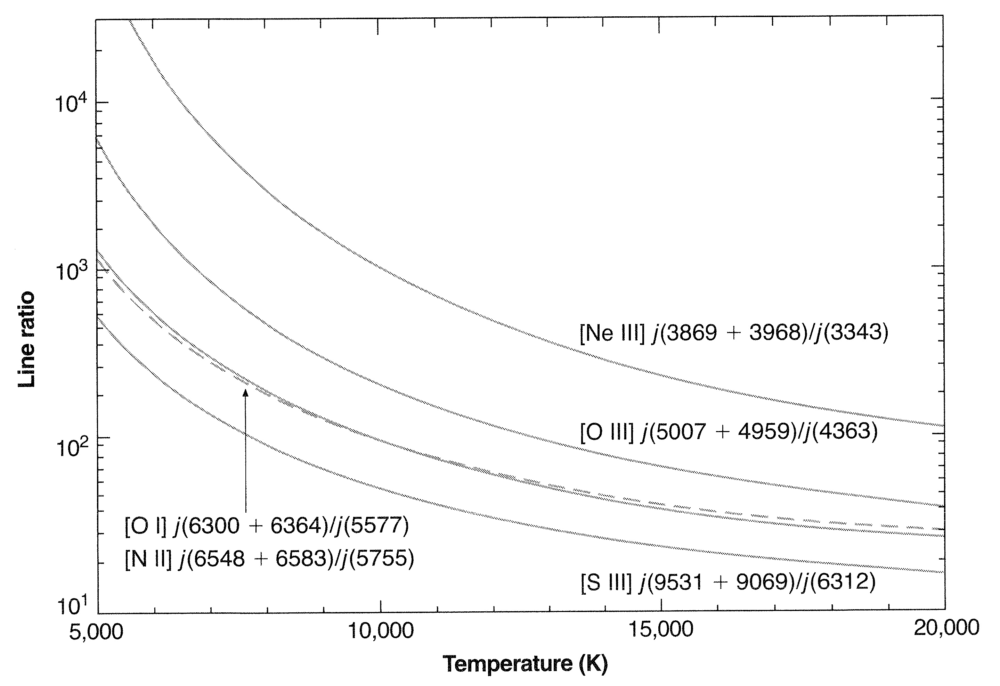
An exactly similar treatment may be carried out for [N II], [Ne III], and [S III], and the resulting equations analogous to (5.4) are
[\text{N II}] \frac{j_{\lambda 6548} + j_{\lambda 6583}}{j_{\lambda 5755}} = \frac{8.23 \exp(2.50 \times 10^4/T)}{1 + 4.4 \times 10^{-3} n_e/T^{1/2}} \quad (5.5)
[\text{Ne III}] \frac{j_{\lambda 3869} + j_{\lambda 3968}}{j_{\lambda 3343}} = \frac{13.7 \exp(4.30 \times 10^4/T)}{1 + 3.8 \times 10^{-5} n_e/T^{1/2}} \quad (5.6)
[\text{S III}] \frac{j_{\lambda 9532} + j_{\lambda 9069}}{j_{\lambda 6312}} = \frac{5.44 \exp(2.28 \times 10^4/T)}{1 + 3.5 \times 10^{-4} n_e/T^{1/2}} \quad (5.7)
These equations form the basis for optical temperature determinations in gaseous nebulae. Since the nebulae are optically thin in forbidden-line radiation, the ratio of the integrals of the emission coefficients along a ray through the nebula is observed directly as the ratio of emergent intensities, so if the nebula is assumed to be isothermal and to have sufficiently low density that the low-density limit is applicable, the temperature is directly determined. Alternatively, the ratio of the fluxes
from the whole nebula may be measured in the case of smaller nebulae. No information need be known on the distance of the nebula, the amount of O^{++} present, and so on, as all these factors cancel out. If collisional deexcitation is not completely negligible, even a rough estimate of the electron density substituted into the correction term in the denominator provides a good value of T. The observed strengths of the lines must be corrected for interstellar extinction, but this correction is usually not too large because the temperature-sensitive lines are relatively close in wavelength.
The [O\ III] line-intensity ratio (\lambda 4959 + \lambda 5007)/\lambda 4363 is quite large and is therefore rather difficult to measure accurately. Although \lambda\lambda 4959, 5007 are strong lines in many gaseous nebulae, \lambda 4363 is relatively weak, and furthermore is close to Hg I \lambda 4358, which unfortunately is becoming stronger and stronger in the spectrum of the sky due to increasing light pollution. Large intensity ratios are difficult to measure accurately, and reasonably precise temperature measurements therefore require carefully calibrated photoelectric measurements with fairly high-resolution spectral analyzers. Most of the early work centered on the [O\ III] lines, partly because they occur in the blue spectral region in which detectors are most sensitive, and partly because [O\ III] is quite bright in typical high-surface brightness planetary nebulae. The [N\ II] lines are stronger in the outer parts of H II regions, where the ionization is lower and the O mostly emits [O\ II] lines. A great deal of more recent work has used all of these lines.
The ^2D^o and ^2P^o levels of [O\ II] and [S\ II] have different excitation potentials, and lines that originate from these two levels can also be used as temperature indicators. These have the advantage of lying in spectral regions that are relatively easy to observe, but the lines are widely separated in wavelength so the correction for interstellar extinction is larger. All of these temperature indicators are shown in Figure 5.1.
Let us first examine optical determinations of the temperatures in H II regions, some selected results of which are collected in Figure 5.2, which compares temperatures determined by several of the line ratios mentioned above. Note that in this and other figures, the observed intensity ratio has been corrected for interstellar extinction in the way outlined in Chapter 7, and the temperature has been computed using the methods described in this book.
It can be seen that all the temperatures of these H II regions are in the range 7,000–14,000 K. A good part of the dispersion in temperature is due to physical differences between the H II regions. As we shall see in Chapter 10, within a galaxy the abundances of the heavy elements tend to increase inward, resulting in the differences in temperatures shown in the figure.
Planetary nebulae have higher surface brightness than typical H II regions, and as a result there is a good deal more observational material available for planetaries, particularly [O\ III] determinations of the temperature. Most planetaries are so highly ionized that [N\ II] is relatively weak, but measurements of it are also available. A selection of the best observational material is collected in Figure 5.3, which shows that the temperatures in the hottest planetary nebulae are typically
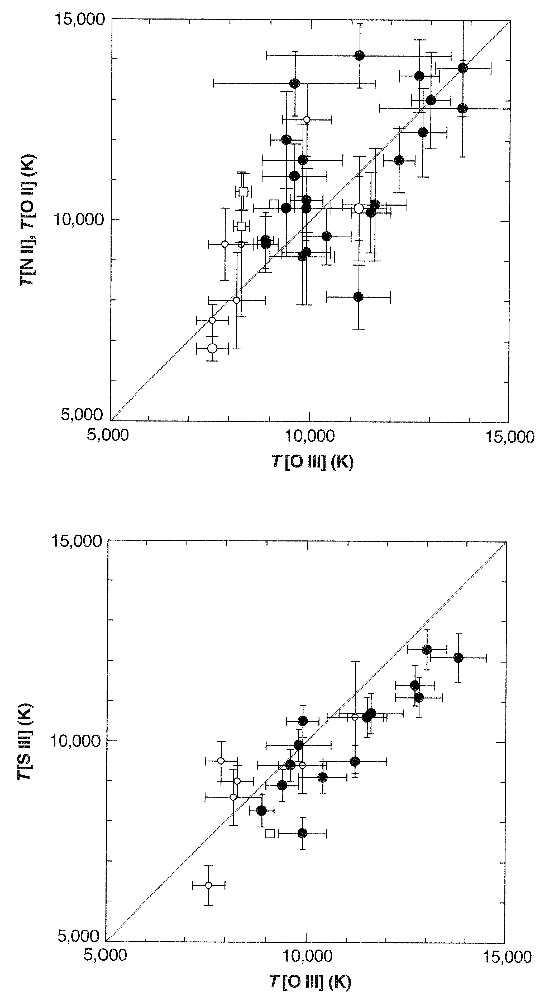
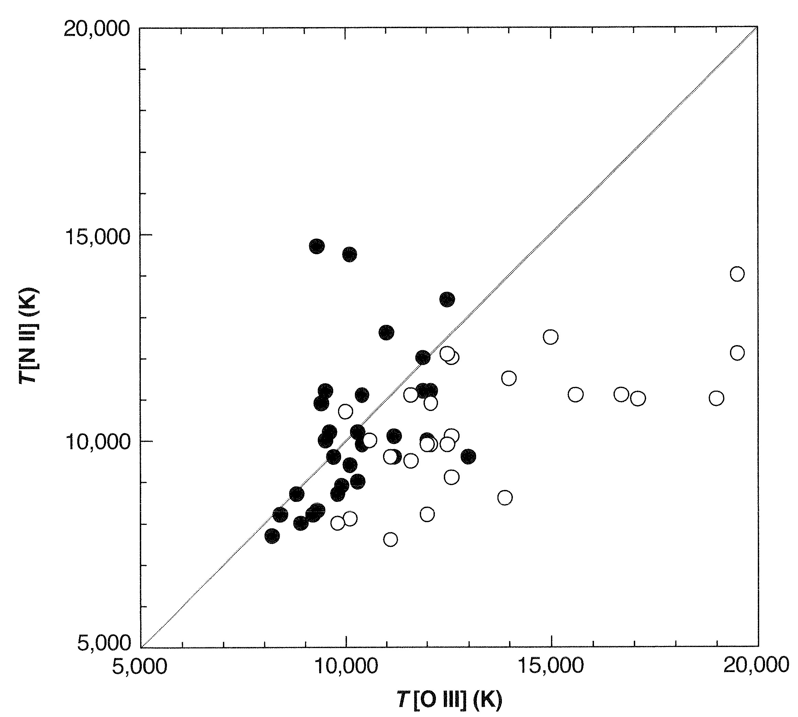
somewhat higher than in H II regions. This is partly a consequence of higher effective temperatures of the central stars in planetary nebulae (to be discussed in Section 5.8), leading to a higher input of energy per photoionization, and partly a consequence of the higher electron densities in typical planetaries, resulting in collisional deexcitation and decreased efficiency of radiative cooling. Like the H II regions, some of the dispersion is due to physical differences among the nebulae. Some are halo objects with relatively low heavy-element abundances, as discussed in Chapter 10, and the lower cooling efficiency results in somewhat above-average temperatures.
From Figures 5.2 and 5.3, it is reasonable to adopt T \approx 10,000 K as an order-of-magnitude estimate for any nebula with near-normal abundances; with somewhat greater precision we may adopt representative values T \approx 9,000 K in the brighter parts of an H II region, and T \approx 11,000 K in a typical bright planetary nebula.
Another method that can be used to determine the temperature in a nebula is to compare the relative strength of a collisionally excited line, such as C III] \lambda 1909, with a recombination line of the next lower state of ionization, such as C II \lambda 4267, since both depend on the product of densities n(\text{C}^{++})n_e, which therefore cancels out of their ratios. Figure 5.4 shows a few of these types of ratios as a function of
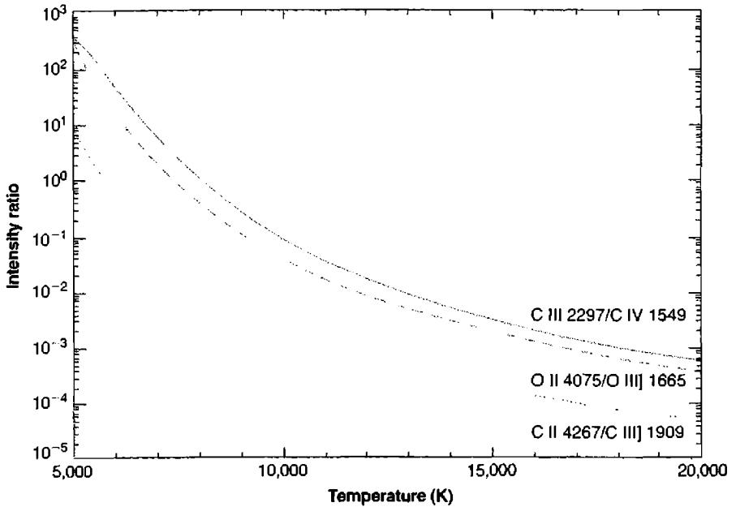
T . This method has been applied to relatively few objects because the collisionally excited line usually occurs in the vacuum ultraviolet and it is difficult to obtain space-borne observations. There is the additional complication that a significant correction may be necessary if the spectrometers used for the different lines also have different entrance apertures since these are spatially extended objects. But the method has the advantage that the observed ratio is a very powerful function of the temperature, so that even modest signal-to-noise spectra can determine the temperature quite accurately.
5.3 Temperature Determinations from Optical Continuum Measurements
Although it might be thought that the temperature in a nebula could be measured from the relative strengths of the H lines, in fact their relative strengths are almost independent of temperature, as Table 4.4 shows. The physical reason for this behavior is that all the recombination cross sections to the various levels of H have approximately the same velocity dependence, so the relative numbers of atoms formed by captures to each level are nearly independent of T , and since the cascade matrices depend only
on transition probabilities, the relative strengths of the lines emitted are also nearly independent of T. These calculated relative line strengths are in good agreement with observational measurements.
However, the temperature in a nebula can be determined by measuring the relative strength of the recombination continuum with respect to a recombination line. Physically, the reason this ratio does depend on the temperature is that the emission in the continuum (per unit frequency interval) depends on the width of the free-electron velocity-distribution function—that is, on T.
The theory is straightforward, for we may simply use Table 4.4 to calculate the H-line emission, and Tables 4.7–4.9 and 4.12 to calculate the continuum emission, and thus find their ratio as a function of T. Figure 5.5 plots the calculated ratios for two choices of the continuum. The first is near H\beta\lambda 4861 and includes the H I recombination and two-photon continua as well as the He I recombination continuum. [A nebula with n(\text{He}^+) = 0.08n(\text{H}^+) and n(\text{He}^{++}) = 0 has been assumed, but any other abundances or ionization conditions determined from line observations of the nebula could be used.] The second choice is the Balmer discontinuity, j_\nu(\lambda 3646-)-j_\nu(\lambda 3646+), which eliminates everything except the H I recombination continuum due to recaptures into n = 2. [The He II recombination, of course, would also contribute if n(\text{He}^{++}) \neq 0 since recaptures to its n = 4 level produce light at this wavelength.] Note that the \lambda 4861 continuum has been calculated in the limit n_p \rightarrow 0 (no collisional deexcitation of H I 2^2S and hence maximum relative strength of the H I two-photon continuum) and also for the case n_p = 10^4 \text{ cm}^{-3}, n(\text{He}^+) = 10^3 \text{ cm}^{-3}, taking account of collisional deexcitation, while the Balmer discontinuity results are independent of density and n(\text{He}^+).
The continuum at \lambda 4861 is made up chiefly of the H I Paschen and higher-series continua, whose sum increases slowly with T, and the two-photon continuum, whose strength decreases slowly with T; the sum hence is roughly independent of T, and the ratio of this continuum to H\beta therefore increases with T. On the other hand, the strength of the Balmer continuum at the series limit decreases approximately as T^{-3/2}, and its ratio to H\beta therefore decreases slowly with T, as Figure 5.5 shows.
The observations of the continuum are difficult because it is weak and can be seriously affected by weak lines. High-resolution spectrophotometric measurements with high-sensitive detectors are necessary. To date the most accurate published data seem to be measurements of the Balmer continuum, which is considerably stronger than the Paschen continuum near H\beta. A difficulty in measuring the Balmer continuum, of course, is that the higher Balmer lines are crowded just below the limit, so the intensity must be measured at longer wavelengths and extrapolated to \lambda 3646+. Furthermore, continuous radiation emitted by the stars involved in the nebulae and scattered by interstellar dust may have a sizable Balmer discontinuity, which is difficult to disentangle from the true nebular recombination Balmer discontinuity. Some of the best published results for H II regions and planetary nebulae are collected in Figure 5.6, which shows that the temperatures measured by this method are generally somewhat smaller than the temperatures for the same objects measured from forbidden-line ratios. These discrepancies will be discussed again in the next section

Two temperature-sensitive ratios involving hydrogen lines or continua. The upper curve is the ratio of fluxes above and below the Balmer limit. The lower curves show the flux in the continuum just redward of H\beta relative to H\beta. Two densities are shown, a low density in which two-photon emission occurs after every capture to 2^2S, and a higher density at which collisional to 2^2P^o weaken the two-photon continuum. All continua include a contribution from He^+, assuming that all He is in the form of He^+ and a helium abundance corresponding to He/H = 0.08 by number.
following the discussion of temperature measurements from the radio-continuum observations.
5.4 Temperature Determinations from Radio-Continuum Measurements
Another completely independent temperature determination can be made from radio-continuum observations. The idea is quite straightforward—namely, that at sufficiently low frequencies any nebula becomes optically thick, and therefore, at these frequencies (assuming an isothermal nebula) the emergent intensity is the same as that from a blackbody—the Planck function B_\nu(T); or equivalently, the measured brightness temperature is the temperature within the nebula,
T_{b\nu} = T [1 - \exp(-\tau_\nu)] \rightarrow T \text{ as } \tau_\nu \rightarrow \infty \quad (5.8)
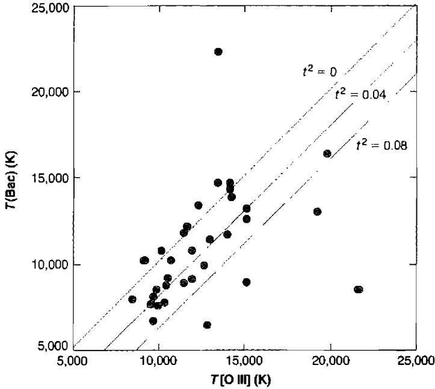
as in Equation (4.37). Note that if there is background non-thermal synchrotron radiation (beyond the nebula) with brightness temperature T_{bg\nu} and foreground radiation (between the nebula and the observer) with brightness temperature T_{fg\nu}, this equation becomes
T_{b\nu} = T_{fg\nu} + T[1 - \exp(-\tau_\nu)] + T_{bg\nu} \exp(-\tau_\nu) \rightarrow T_{fg\nu} + T \quad (5.9)
as \tau_\nu \rightarrow \infty
(assuming no foreground absorption).
The difficulty with applying this method is that at frequencies that are sufficiently low that the nebulae are optically thick (\nu \approx 3 \times 10^8 Hz or \lambda \approx 10^2 cm for many dense nebulae), even the largest radio telescopes have beam sizes that are comparable to or larger than the angular diameters of typical H II regions. Therefore, the nebula does not completely fill the beam, and a correction must be made for the projection of the nebula onto the antenna pattern.
The antenna pattern of a simple parabolic or spherical dish is circularly symmetric about the axis, where the sensitivity is at a maximum. The sensitivity decreases outward in all directions, and in any plane through the axis it has a form much like
a Gaussian function with angular width of order \lambda/d, where d is the diameter of the telescope. The product of the antenna pattern with the brightness-temperature distribution of the nebula then gives the mean brightness temperature, which is measured by the radio-frequency observations. The antenna pattern thus tends to broaden the nebula and to wipe out much of its fine structure. To determine the temperature of a nebula that is small compared with the width of the antenna pattern, it is therefore necessary to know its angular size accurately. But, of course, no nebula really has sharp outer edges, inside which it has infinite optical depth and outside which it has zero optical depth. In a real nebula, the optical depth decreases more or less continuously but with many fluctuations, from a maximum value somewhere near the center of the nebula to zero just outside the edge of the nebula, and what is really needed is the complete distribution of optical depth over the face of the nebula.
This can be obtained from high radio-frequency measurements of the nebula, for in the high-frequency region, the nebula is optically thin, and the measured brightness temperature gives the product T\tau_1,
T_{b1} = T[1 - \exp(-\tau_1)] \rightarrow T\tau_1 \text{ as } \tau_1 \rightarrow 0, \quad (5.10)
as in Equation (4.37). (In the remainder of this section, the subscript 1 is used to indicate a high frequency, and the subscript 2 is used to indicate a low frequency.) At high frequencies, the largest radio telescopes have considerably better angular resolution than at low frequencies because of the smaller values of \lambda/d, so that if the nebula is assumed to be isothermal, the high-frequency measurements can be used to prepare a map of the nebula, giving the product T\tau_1 at each point. Thus for any assumed T, the optical depth \tau_1/\tau_2 is determined at each point from the high-frequency measurements. The ratio of optical depths, \tau_1/\tau_2, is known from Equation (4.31), so \tau_2 can be calculated at each point, and then the expected brightness temperature T_{b2} can be calculated at each point:
T_{b2} = T[1 - \exp(-\tau_2)]. \quad (5.11)
Integrating the product of this quantity with the antenna pattern gives the expected mean brightness temperature at the low frequency. If the assumed T is not correct, this expected result will not agree with the observed mean brightness temperature, and another assumed temperature must be tried until agreement is reached. This, then, is a procedure for correcting the radio-frequency continuum measurements for the effects of finite beam size at low frequencies.
A few of the most accurate available radio-frequency measurements of temperature in H II regions are collected in Table 5.1. Many of the observations were obtained with single-dish telescopes, and so had limited spatial resolution. At 408 MHz, most of the nebulae listed have central optical depths \tau_2 \approx 1 to 10, while at 85 MHz, the optical depths are considerably larger. At lower frequencies the beam size of the antenna is larger and in addition the background (non-thermal) radiation is larger, so many of the nebulae are measured in absorption at this lower frequency. A few objects have been observed with the Very Large Array (VLA) at 330 MHz, with a spatial resolution
| Object | Radio continuum (K) | Radio recombination (K) | Optical (K) |
|---|---|---|---|
| M42 | 7,875 \pm 360 | 8,500 | 8800 |
| M43 | 9,000 \pm 1,700 | 6,700 | |
| NGC 2024 | 8,400 \pm 1,000 | 8,200 | |
| W51 | 7,800 \pm 300 | 7,500 | |
| W43 | 5,410 \pm 300 | 5,640 | |
| M17 | 7,600 \pm 400 | 9,100 \pm 100 | |
| NGC 6334 | 7,000 | 7,000 | |
| NGC 6357 | 6,900 | 7,300 |
References for table: Shaver et al. 1983, MNRAS, 204, 53; Subrahmanyam, R., & Goss, W. M. 1996, MNRAS, 281, 239; and papers cited therein.
of roughly 1 arc minute. The radio continua give temperatures that are fairly consistent with other independent ways of measuring the mean temperature in a nebula.
Exactly the same method can be used to measure the temperatures in planetary nebulae, but as they are very small in comparison with the antenna beam size at the frequencies at which they are optically thick, the correction for this effect is quite important. Nearly all the planetary nebulae are too small for mapping at even the shortest radio-frequency wavelengths with single-dish radio telescopes, but it is possible to use the surface brightness in a hydrogen recombination line such as H\beta, since it is also proportional to the proton emission measure, the integral
I(H\beta) \propto \int n_p n_e ds = E_p, \quad (5.12)
to get the relative values of \tau_2 at each point in the nebula. Even the optical measurements have finite angular resolution because of the broadening effects of seeing. Then, for any assumed optical depth of the nebula at one point and at one frequency, the optical depths at all other points and at all frequencies can be calculated. For any assumed temperature, the expected flux at each frequency can thus be calculated and compared with the radio measurements, which must be available for at least two (and preferably more) frequencies, one in the optically thin region and one in the optically thick region. The two parameters T and the central optical depth must be varied to get the best fit between calculations and measurements. The uncertainties are largely due to the lack of accurate optical isophotes, from which the distribution of brightness temperature over the nebula must be calculated.
With the Very Large Array (VLA) radio interferometer it is possible to achieve angular resolution as small as 0.05'' at high frequency (\lambda = 1.3 cm), ideal for these measurements. Mean temperatures determined in this way for planetary nebulae include T = 8,300 K for NGC 6543, T = 18,500 K for IC 418, and T = 14,000 K
for NGC 7027. The high-resolution radio images, obtained at these high frequencies, provide excellent information on the spatial structure of planetary nebulae.
5.5 Temperature Determinations from Radio and UV Absorption Lines
The H I 21-cm line occurs as an electron spin-flip transition, with a transition probability of A = 2.85 \times 10^{-15} \text{ s}^{-1}. The calculation of A is exactly analogous to atomic transition probabilities but here it involves coupling of I, the nuclear spin of the proton, with J, the angular momentum of the electron. The latter is made up of spin (non-zero) and orbital (zero) angular momenta to form F, the total spin of nucleus plus electron. It is an allowed magnetic dipole transition in these variables, but has a very small transition probability because of the \nu^3 dependence of A.
Observations of 21-cm absorption, together with \text{L}\alpha absorption, can measure the excitation temperature T_{ex} of the hyperfine structure levels that produce the 21 cm line. T_{ex}, often referred to as the spin temperature in radio-astronomy papers, is defined in terms of the level populations as
\frac{n_u}{n_l} = \frac{\omega_u}{\omega_l} \exp(-\chi_{ul}/kT_{ex})
where \chi_{ul} is the excitation energy of the line and the n 's and \omega 's are the populations and statistical weights of the lower and upper levels.
T_{ex} is equal to the gas kinetic temperature if the level populations are determined mainly by collisions. This is usually the case when the electron density is above the critical density of the transition, and the radiation density at the frequencies which can populate and depopulate the upper level are low. Collisions with electrons and hydrogen atoms are the most important. At temperatures of 10^3 \text{ K} and 10^4 \text{ K}, the downward collisional rate coefficients are q_{10} = 2.4 \times 10^{-10} and 5.2 \times 10^{-10} \text{ cm}^3 \text{ s}^{-1} for collisions with hydrogen atoms, and 6.0 \times 10^{-9} and 7.9 \times 10^{-9} \text{ cm}^3 \text{ s}^{-1} for collisions with electrons. The corresponding critical electron density is 3.6 \times 10^{-7} \text{ cm}^{-3}, so the level populations are collisionally dominated for most conditions. Scattering by \text{L}\alpha photons can alter the level populations, and this can be important under some conditions. However, the assumption that T_{ex}(21 \text{ cm}) = T_e is often a good approximation.
The line optical depth \tau of any transition is given by
\tau = \kappa L = a(n_l - n_u \omega_l / \omega_u) L \quad (5.13)
where \kappa is the line opacity, L is the path length, and a is the atomic absorption cross section (\text{cm}^2). The first term in parentheses represents direct absorption of radiation from the lower level, while the second term corrects for stimulated emission.
Using the definition of T_{ex}, the opacity \kappa can be written as
\kappa = a n_l [1 - \exp(-\chi_{ul}/kT_{ex})] [\text{cm}^{-1}]
There are two limiting forms to this equation. If \chi_{ul} \gg kT_{ex}, the limit that holds for L\alpha at T \sim 10^4 K, the exponential can be ignored and the opacity is given by
\kappa_{UV} = a_{UV} n_I.
The opposite limit occurs for H I 21 cm. Here \chi_{ul} \ll kT_{ex} and the exponent can be expanded as \exp(-\chi_{ul}/kT_{ex}) \approx 1 - \chi_{ul}/kT_{ex}. Then, the opacity is given by
\kappa_{radio} = a_{radio} n_I \frac{\chi_{ul}}{kT_{ex}}
i.e., in this case it is proportional to the ratio n/T_{ex} and not n itself. So, 21-cm absorption is strongly weighted to colder regions.
The ratio of the optical depths of the H I 21 cm and L\alpha lines can be combined to measure the excitation temperature.
\frac{\tau_{radio}}{\tau_{UV}} = \frac{n_{I,radio} \kappa_{radio} L}{n_{I,UV} \kappa_{UV} L} = \frac{n_{I,radio} a_{radio} \chi_{ul}}{n_{I,UV} a_{UV} kT_{ex}}.
For the particular case of 21 cm and L\alpha this becomes
\frac{\tau_{21cm}}{\tau_{L\alpha}} = \frac{1}{4} \frac{a_{21cm}}{a_{L\alpha}} \frac{\chi_{ul}}{kT_{ex}} = \frac{1}{4} \frac{A_{21cm} \lambda_{21cm}^3}{A_{L\alpha} \lambda_{L\alpha}^3} \frac{\chi_{ul}}{kT_{ex}} = 3.84 \times 10^{-7} T_{ex}^{-1}.
The factor of \frac{1}{4} enters if the hyperfine structure levels that produce 21 cm absorption have populations that are proportional to their statistical weight, since both levels absorb L\alpha while only the lower level absorbs 21 cm.
5.6 Electron Densities from Emission Lines
The average electron density in a nebula may be measured by observing the effects of collisional deexcitation. This can be done by comparing the intensities of two lines of the same ion, emitted by different levels with nearly the same excitation energy so that the relative excitation rates to the two levels depend only on the ratio of collision strengths. If the two levels have different radiative transition probabilities or different collisional deexcitation rates, the relative populations of the two levels will depend on the density, and the ratio of intensities of the lines they emit will likewise depend on the density. The best examples of lines that may be used to measure the electron density are [O II] \lambda 3729/\lambda 3726, and [S II] \lambda 6716/\lambda 6731, with energy-level diagrams shown in Figure 5.7.
The relative populations of the various levels and the resulting relative line-emission coefficients may be found by setting up the equilibrium equations for the populations of each level as described in Section 3.5. However, direct physical reasoning easily shows the effects involved. Consider the example of [O II] in the low-density limit n_e \rightarrow 0, in which every collisional excitation is followed by emission
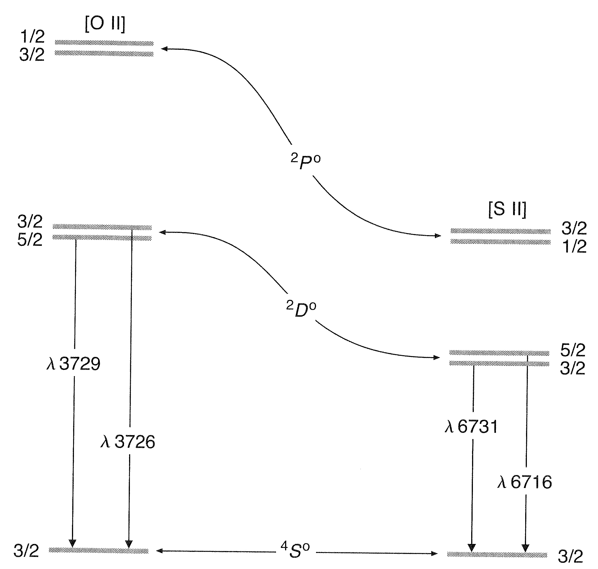
of a photon. Since the relative excitation rates of the ^2D_{5/2} and ^2D_{3/2} levels are proportional to their statistical weights [see Equation (3.22)], the ratio of strengths of the two lines is j_{\lambda 3729}/j_{\lambda 3726} = 1.5. On the other hand, in the high-density limit, n_e \rightarrow \infty, collisional excitations and deexcitations dominate and set up a Boltzmann populations ratio. Thus, the relative populations of the two levels ^2D_{5/2} and ^2D_{3/2} are in the ratio of their statistical weights, and therefore the relative strengths of the two lines are in the ratio
\frac{j_{\lambda 3729}}{j_{\lambda 3726}} = \frac{n(^2D^o_{5/2}) A_{\lambda 3729}}{n(^2D^o_{3/2}) A_{\lambda 3726}} = \frac{3}{2} \frac{3.6 \times 10^{-5}}{1.6 \times 10^{-4}} = 0.34
The transition between the high- and low-density limits occurs in the neighborhood of the critical densities [see Equation (3.30)], which are n_e \approx 3 \times 10^3 \text{ cm}^{-3} for ^2D^o_{5/2} and n_e \approx 1.6 \times 10^4 \text{ cm}^{-3} for ^2D^o_{3/2}. The full solution of the equilibrium equations, which also takes into account all transitions, including excitation to the ^2P^o levels with subsequent cascading downward, gives the detailed variation of intensity ratio with the electron density that is plotted in Figure 5.8. Note from the collisional transition rates that the main dependence of this ratio is on n_e/T^{1/2}. There is also a very slight
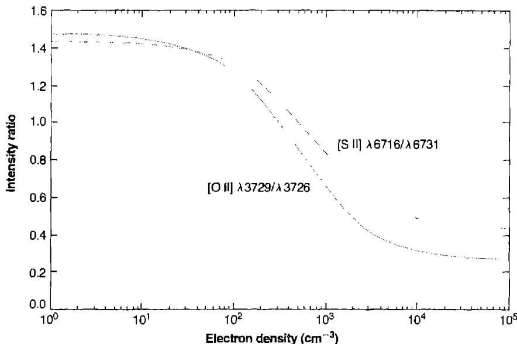
temperature dependence (as a consequence of the cascading from {}^2P^o) that cannot be seen on this graph.
An exactly similar treatment holds for [S II]; the calculated ratio j_{\lambda 6716}/j_{\lambda 6731} is also shown in Figure 5.8. Other pairs of lines from ions with the same type of structure, which may also be used for measuring electron densities, are [N I], [Cl III], [Ar IV], and [K V] in the optical region, as well as [Ne IV] \lambda\lambda 2422, 2424 in the vacuum ultraviolet.
From the observational point of view, it is unfortunate that the [O II] \lambda\lambda 3726, 3729 are so close in wavelength; a spectrograph, spectrometer, or interferometer with good wavelength resolution must be used to separate the lines. However, a fair amount of data is available on both H II regions and planetary nebulae.
Table 5.2 compares some densities measured in H II regions. It can be seen that typical densities in several H II regions are of order n_e \approx 10^2 \text{ cm}^{-3}. (NGC 1976 M is a position in the outer part of the Orion Nebula.) Several H II regions have dense condensations in them, though—for instance, the central part of the Orion Nebula, near the Trapezium (NGC 1976 A), with \lambda 3729/\lambda 3726 = 0.50, corresponding to n_e \approx 3.0 \times 10^3 \text{ cm}^{-3}. In fact, observations of the [O II] ratio at many points in NGC 1976, of which only A and M are listed in Table 5.2, show that the mean electron density is highest near the center of the nebula and decreases relatively smoothly outward in
| Object | I(\lambda 3729)/I(\lambda 3726) | n_e (cm -3 ) |
|---|---|---|
| NGC 1976 A | 0.5 | 3.0 \times 10^3 |
| NGC 1976 M | 1.26 | 1.4 \times 10^2 |
| M 8 Hourglass | 0.67 | 1.6 \times 10^3 |
| M 8 Outer | 1.26 | 1.5 \times 10^2 |
| MGC 281 | 1.37 | 70 |
| NGC 7000 | 1.38 | 60 |
all directions. The three-dimensional structure of the nebula thus presumably must have a density maximum, and the intensity ratio observed at the center results from emission all along the line of sight, so the actual central density must be higher than 4.5 \times 10^3 cm -3 . A model can be constructed that approximately reproduces all the measured [O II] ratios in NGC 1976; this model has n_e \approx 1.7 \times 10^4 cm -3 at the center and decreases to n_e \approx 10^2 cm -3 in the outer parts. Furthermore, measurements of the [S II] ratio at many points in the inner bright core of NGC 1976 (about 8' diameter) show good agreement between the electron densities determined from the [S II] lines and the [O II] lines. Similarly, in M 8 the [O II] measurements show that the density falls off outward from the Hourglass, a small dense condensation in which n_e \approx 2 \times 10^3 cm -3 .
Some information on electron densities in planetary nebulae derived from [O II] and [S II] is shown in Figure 5.9, in which the densities derived from these two ions are mostly within a factor of two of each other. In most planetaries the degree of ionization is high, and most of the [O II] and [S II] lines that arise in fairly low stages of ionization are emitted either in the outermost parts of the nebula or in the densest parts, where recombination depresses the ionization the most. Thus the densities derived from these ions may not be representative of the entire nebula. The higher stages of ionization, [Ar IV], [K V], and so on, are more representative, but their lines are weaker and more difficult to measure. An example is NGC 7662, for which the [Ar IV] lines give n_e = 1.0 \times 10^4 cm -3 , while the [Ne IV] pair at \lambda\lambda 2422, 2424 give 9.6 \times 10^3 cm -3 , both at an assumed T = 10^4 K.
The electron densities derived from these line ratios may be used in Equations (5.4) and (5.5) to correct the observations of the temperature-sensitive lines of [O III] and [N II] for the slight collisional deexcitation effect; and actually these corrections have already been taken into account in Tables 5.1 and 5.2. Though the electron density derived from [O II] line measurements may not exactly apply in the [O III] emitting region, the density effect is small enough that an approximate correction should be satisfactory.
In the densest planetaries known, collisional deexcitation of [O III] 1 D 2 is strong enough that the (\lambda 4959 + \lambda 5007)/\lambda 4363 ratio is significantly affected. The best example is IC 4997, with \lambda 3729/\lambda 3726 = 0.34, corresponding to n_e poorly deter-
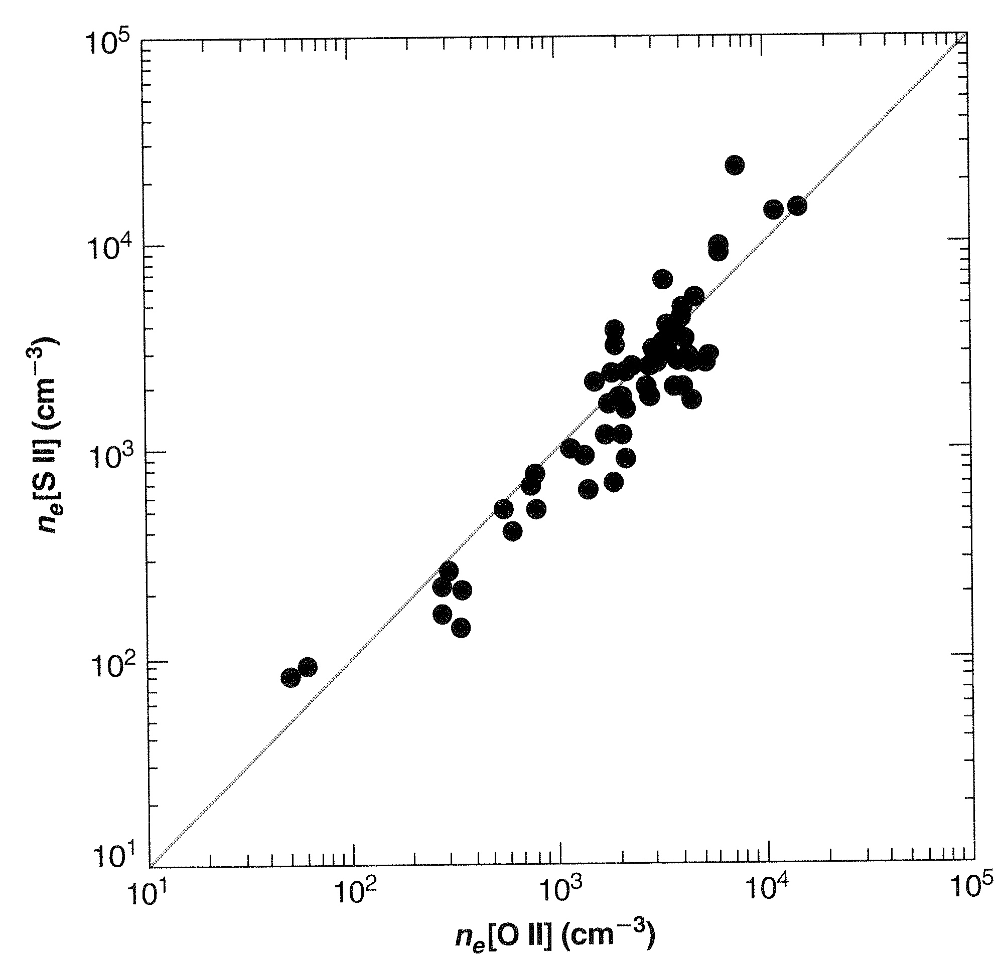
Densities of a sample of planetary nebulae calculated from the [O II] and [S II] line ratios described in the text.
mined in the high-density limit but certainly greater than 10^5 \text{ cm}^{-3}. The measured (\lambda 4959 + \lambda 5007)/\lambda 4363 \approx 22, which would correspond to T \approx 4 \times 10^4 \text{ K} if there were no collisional deexcitation. This temperature is far too large to be understood from the known heating and cooling mechanisms in photoionization equilibrium, and the ratio is undoubtedly strongly affected by collisional deexcitation. If it is assumed that T \approx 12,000 \text{ K}, the [O III] ratio gives n_e \approx 10^6 \text{ cm}^{-3}; higher assumed temperatures correspond to somewhat lower electron densities, and vice versa.
Transitions with higher critical densities can be used as diagnostics in denser environments. The ion C III, whose energy-level diagram is shown in Figure 5.10, has two observed emission lines, [C III] 3s^2 \ ^1S_0 - 3s \ 3p \ ^3P_2^o \ \lambda 1907, a highly forbidden magnetic quadrupole transition, and C III 3s^2 \ ^1S_0 - 3s \ 3p \ ^3P_1^o \ \lambda 1909, an intercombination or “semi-forbidden” electric-dipole transition. The two lines therefore have a ratio of intensities fixed in the low-density limit by collision strengths alone. It is approximately I(^1S_0 - ^3P_2^o)/I(^1S_0 - ^3P_1^o) \approx 5/3 by Equation (3.22), but more nearly exactly = 1.53, because the downward radiative transition ^1S_0 - ^3P_0^o is completely forbidden; hence collisional excitation of ^3P_0^o is always followed by a further collisional process, either deexcitation to ^1S_0, or excitation to ^3P_1^o or ^3P_2^o. In the high-density limit, on the other hand, the ratio is fixed by the ratio of statistical weights and transition probabilities, and \approx 9 \times 10^{-5}. The detailed form of its variation with electron density is shown in Figure 5.11.
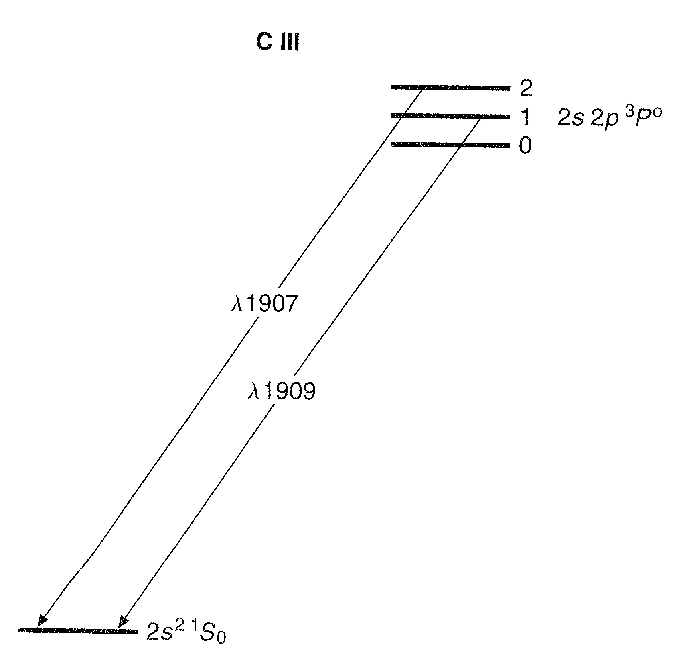
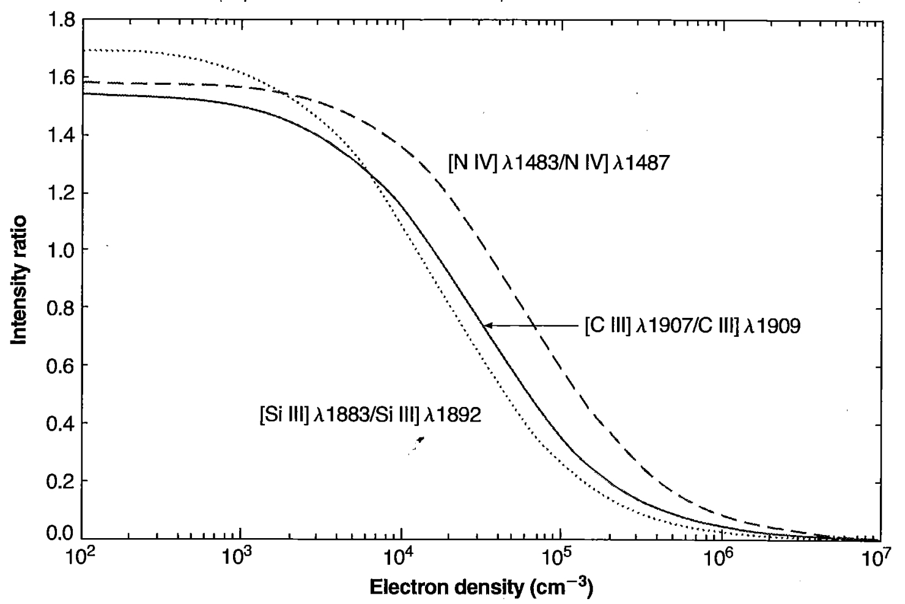
The \lambda 1907/\lambda 1909 ratio has mainly been measured for bright planetary nebulae. They mostly have ratios in the range 0.8 to 1.4, corresponding to n_e = 3 \times 10^4 to 3 \times 10^3 \text{ cm}^{-3}. The large, low-density nebulae like NGC 650/1, 3587, 6720, 6853, and 7293 are too faint to have yet been measured in these lines. But the small, high-surface-brightness planetary IC 4997 has \lambda 1907/\lambda 1909 \approx 0.03, showing that its mean electron density n_e \approx 10^6 \text{ cm}^{-3}, agreeing quite well with the [O III] results.
5.7 Electron Temperatures and Densities from Infrared Emission Lines
Sensitive infrared detectors, together with airborne or orbiting telescopes that are above most of the infrared absorption in the Earth's atmosphere, have made it possible to measure "fine-structure" lines such as [O III] ^3P_0 - ^3P_1 \lambda 88 \mu\text{m} and ^3P_1 - ^3P_2 \lambda 52 \mu\text{m} (see Figure 3.1 and Table 3.12). These far-infrared lines have much smaller excitation potentials than the optical lines such as ^3P_2 - ^1D_2 \lambda 5007. Thus a ratio like j_{\lambda 5007}/j_{\lambda 88 \mu\text{m}} depends strongly on temperature but, since the ^3P_2 level has a much lower critical electron density than ^1D_2 does, the ratio depends on density also. On the other hand, the ratio j_{\lambda 52 \mu\text{m}}/j_{\lambda 88 \mu\text{m}} hardly depends on temperature at all (since both excitation potentials are so low in comparison with typical nebular temperatures), but does depend strongly on density (since the two upper levels have different critical densities). Hence by measuring two [O III] ratios, we can determine the average values of the two parameters, T and n_e. Figure 5.12 shows calculated curves of the values of the two [O III] intensity ratios for various values of temperature and electron density. Observed values of the line ratios are entered on the diagram for several planetary nebulae, from which the average T and n_e can be immediately read off. They agree reasonably well with values determined independently from optical lines alone. Including the infrared lines makes determinations of temperature and density possible for many more ions than the optical lines. The chief difficulty, given an airborne telescope and spectrograph, is to be certain that exactly the same area is measured in both spectral regions. For this reason the measurements available to date are chiefly for entire planetary nebulae.
5.8 Electron Temperatures and Densities from Radio Recombination Lines
Information can be obtained on the temperature and density in gaseous nebulae from measurements of the radio recombination lines. Practically all the observational results refer to H II regions, which have considerably larger fluxes than planetary nebulae and hence can be much more readily observed with radio telescopes. The populations of the high levels of H depend on T and n_e, as explained in Section 4.4, and the strengths of the lines emitted by these levels relative to the continuum and to one another therefore depend on n_e, T, and the optical depth, which is conventionally expressed in terms of the emission measure E defined in Equation (4.32). Comparison of measured and calculated relative strengths thus can be used to calculate mean values of n_e, T, and E.
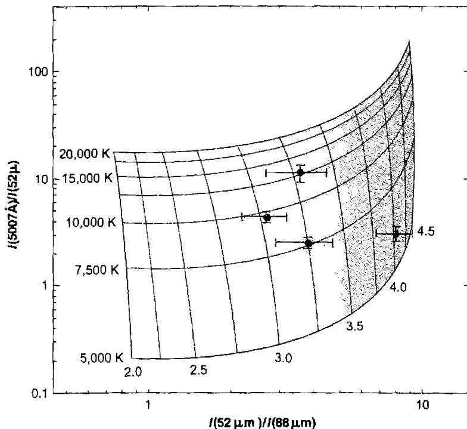
To calculate the expected strengths, we must solve the equation of radiative transfer, since the maser effect is often important, as was shown in Section 4.4. Furthermore, the continuum radiation is not weak in comparison with the line radiation and therefore must be included in the equation of transfer. The observations are generally reported in terms of brightness temperature. We will use T_C for the measured temperature in the continuum near the line and T_L + T_C for the measured brightness temperature at the peak of the line (see Figure 5.13), so that T_L is the excess brightness temperature due to the line.
We will consider an idealized homogeneous isothermal nebula. The optical depth in the continuum, which we will write \tau_C, is given by Equation (4.32). The optical depth in the center of the line is
\tau_{cL} = \tau_L + \tau_C (5.14)
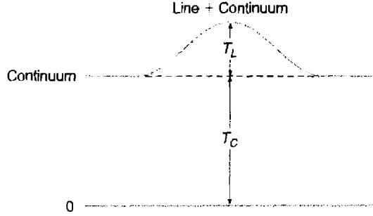
where \tau_L is the contribution from the line alone,
d\tau_L = \kappa_L ds
and
\kappa_L = n_n k_{0L}. \quad (5.15)
Here we consider a n, \Delta n line between an upper level m = n + \Delta n and a lower level n; the central line-absorption cross section, corrected for stimulated emission as in Equation (4.43), is
\begin{aligned} \kappa_{0L} &= \frac{\omega_m}{\omega_n} \frac{\lambda^2}{8\pi^{3/2} \Delta \nu_D} A_{m,n} \left[ 1 - \frac{b_m}{b_n} \exp(-h\nu/kT) \right] \\ &= \frac{\omega_m}{\omega_n} \frac{\lambda^2 (\ln 2)^{1/2}}{4\pi^{3/2} \Delta \nu_L} A_{m,n} \left[ 1 - \frac{b_m}{b_n} \exp(-h\nu/kT) \right] \end{aligned} \quad (5.16)
In this equation a Doppler profile has been assumed, with \Delta \nu_D, the half width at e^{-1} of maximum intensity and \Delta \nu_L the full-width at half-maximum intensity, the conventional quantity used in radio astronomy. Combining (5.16) with
n_m = b_n n^2 \left( \frac{h^2}{2\pi m k T} \right)^{3/2} \exp(X_n/kT) n_p n_e \text{ [cm}^{-3}] \quad (5.17)
and using \exp(X_n/kT) \approx 1 to a good approximation for all observed radio-frequency recombination lines, expressing A_{m,n} in terms of the corresponding f -value, f_{nm}, and expanding the stimulated-emission correction as in Equation (4.43) gives, for the
special case of local thermodynamic equilibrium (b_m = b_n = 1, which we shall denote by an asterisk throughout this section),
\begin{aligned}\tau_L^* &= 1.53 \times 10^{-9} \frac{n^2 f_{nm} \nu}{\Delta \nu_L T^{2.5}} E_p \\ &= 1.01 \times 10^7 \frac{\Delta n f_{nm}}{n \Delta \nu_L T^{2.5}} E_p.\end{aligned}\quad (5.18)
The proton-emission measure, defined in Equation (5.12), is expressed in \text{cm}^{-6} \text{pc} in both forms of Equation (5.18), and
\nu = \frac{\nu_0}{n^2} - \frac{\nu_0}{m^2} \approx \frac{2\nu_0 \Delta n}{n^3}.
In the true nebular case,
\begin{aligned}\tau_L &= \tau_L^* b_n \frac{\left[1 - \frac{b_m}{b_n} \exp(-h\nu/kT)\right]}{\left[1 - \exp(-h\nu/kT)\right]} \\ &= \tau_L^* b_m \left(1 - \frac{kT}{h\nu} \frac{d \ln b_n}{dn} \Delta n\right)\end{aligned}\quad (5.19)
by the power-series expansion, while the continuum optical depth is the same as in thermodynamic equilibrium, because the free electrons have a Maxwellian distribution.
Now we will use these expressions and the formal solution of the equation of transfer to calculate the ratio of brightness temperatures r = T_L/T_C in the special case of thermodynamic equilibrium,
\begin{aligned}r^* &= \frac{T_L + T_C}{T_C} - 1 = \frac{T[1 - \exp(-\tau_{CL})]}{T[1 - \exp(-\tau_C)]} - 1 \\ &= \frac{1 - \exp[-(\tau_L^* + \tau_C)]}{1 - \exp(-\tau_C)} - 1.\end{aligned}\quad (5.20)
If \tau_L^* \ll 1 (this is a good approximation in all lines observed to date), and in addition, \tau_C \ll 1 (this is generally but not always a good approximation),
r^* \approx \frac{\tau_L^*}{\tau_C}.
Under the assumption of local thermodynamic equilibrium, the observed ratio of brightness temperatures in line and continuum thus gives (in the limit of small optical
depth) the ratio of optical depths, which, in turn, from Equations (4.32) and (5.18), measures T. Note that the continuum emission measure E_c, given by
E_c = \int n_+ n_e ds, \quad (5.21)
involves all positive ions, but the proton emission measure E_p involves only H^+ ions, so their ratio depends weakly on the helium abundance, which, however, is reasonably well known. This scheme was used in the early days of radio recombination-line observations to determine the temperatures in H II regions, but it is not correct because in a nebula the deviations from thermodynamic equilibrium are significant, as is shown by the fact that measurements of different lines in the same nebula, when reduced in this way, give different temperatures.
To calculate the brightness-temperature ratio r = T_L / T_C in the true nebular case, we note that the brightness temperature in the continuum is still given by
T_C = T[1 - \exp(-\tau_C)].
However, both the line-emission and line-absorption coefficients differ from their thermodynamic equilibrium values. The line-emission coefficient depends on the population in the upper level, so
j_L = j_L^* b_m,
while the line-absorption coefficient, as shown in Equation (5.19), is
\kappa_L = \kappa_L^* b_m \beta,
where
\beta = 1 - \frac{kT}{h\nu} \frac{d \ln bn}{dn} \Delta n. \quad (5.22)
The equation of transfer, in intensity units is
\frac{dI_\nu}{d\tau_{CL}} = -I_\nu + \frac{j_L + j_C}{\kappa_L + \kappa_C} = -I_\nu + S_\nu, \quad (5.23)
where
\begin{aligned} S_\nu &= \frac{j_L^* b_m + j_C}{\kappa_L^* b_m \beta + \kappa_C} \\ &= \frac{\kappa_L^* b_m + \kappa_C}{\kappa_L^* b_m \beta + \kappa_C} B_\nu(T) \end{aligned} \quad (5.24)
from Kirchhoff's law, so that the brightness temperature at the center of the line is
T_L + T_C = \left[ \frac{\kappa_L^* b_m + \kappa_C}{\kappa_L^* b_m \beta + \kappa_C} \right] T \left\{ 1 - \exp \left[ - (b_m \beta \tau_L^* + \tau_C) \right] \right\} \quad (5.25)
Hence finally,
r = \frac{T_L}{T_C} = \left[ \frac{\kappa_L^* b_m + \kappa_C}{\kappa_L^* b_m \beta + \kappa_C} \right] \left[ \frac{1 - \exp(-b_m \beta \tau_L^* + \tau_C)}{1 - \exp(-\tau_C)} \right] - 1, \quad (5.26)
which depends only on one optical depth, say \tau_C, the ratio of optical depths, \tau_L^*/\tau_C = \kappa_L^*/\kappa_C given by Equations (4.42) and (5.14), and the b_n factors, which, in turn, depend on n_e and T.
Thus, when the deviations from thermodynamic equilibrium are taken into account, r depends not only on T, but also on n_e and \tau_C (or equivalently, E). Therefore, observations of several different lines in the same nebula are necessary to determine T, n_e, and E from measurements of radio-frequency recombination lines. The procedure is to make the best possible match between all measured lines in a given nebula, and the theoretical calculations for a given T, n_e, and E, using the b_n(T, n_e) calculations described in Chapter 4. There are observational problems connected with the fact that the radio recombination lines, coming as they do from levels with large n and thus large atomic radii, suffer significant impact broadening even at the low densities of nebulae. This makes the wings of the line difficult to define observationally except with very good signal-to-noise ratio data. Otherwise significant contributions from the wings may easily be overlooked. Another problem is that measurements are made at different frequencies and with different radio telescopes, so the antenna beam patterns are not identical for all lines. Model calculations show that over a wide range of nebular conditions, measurements of lines with \Delta n = 1 at frequencies near 10 GHz (such as 109\alpha at 5.009 GHz) are only slightly affected by maser effects and by deviations from thermodynamic equilibrium, and therefore are especially suitable for determining nebular temperatures. Data on some of the best observed nebulae are collected in Figure 5.14, which compares the recombination line measurements with temperatures determined from collisionally excited lines. The temperatures determined from the recombination lines tend to be lower than those determined from collisionally excited lines, as was also found with the Balmer jump and radio continuum.
The range in temperatures is largely due to physical differences among the nebulae. Radio techniques have the advantage that nebulae can be detected at large distances within the galactic plane, where interstellar extinction prevents optical spectroscopy. The measured temperatures show a clear increase with increasing distance from the center, which is consistent with the decrease in heavy-element abundance outward from the center that we shall discuss in Chapter 10.
Average electron densities can also be found from the radio recombination line measurements. The best procedure is to compare lines of two different frequencies,
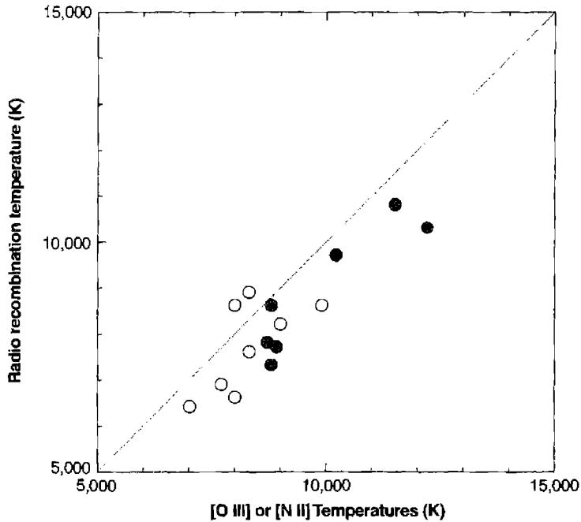
such as 85\alpha and 109\alpha, or 66\alpha and 85\alpha. Naturally it is important to match the antenna beam widths as closely as possible. Very high n lines cannot be used, because impact (Stark) broadening becomes important, making the wings difficult to define and measure accurately. The mean electron density derived in this way for the Orion Nebula, NGC 1976, n_e = 2.4 \times 10^3 \text{ cm}^{-3}, is comparable with an emission-weighted average of the [O II] determinations. Likewise, radio recombination line measurements for a few of the highest surface brightness planetary nebulae give mean electron densities ranging from n_e = 8.5 \times 10^3 \text{ cm}^{-3} in NGC 6543 to 1.6 \times 10^5 \text{ cm}^{-3} in NGC 7027.
5.9 Filling and Covering Factors
Direct photographs of nearly all planetaries and H II regions show chaotic structure to some degree. In some cases nebulae appear to have large hollow central regions. As we shall see in the next chapter, these can be understood as resulting from a highly ionized, low-density, high-velocity “wind,” flowing out from the central star or stars. In other
cases large departures from spherical symmetry are present, with significant regions being relatively free of matter. These density condensations, low-density hollows, etc., are an important feature of the structure of gaseous nebulae.
They can be detected quantitatively if the densities derived from [O II] line ratios in a large, well resolved nebula of known distance, such as NGC 1976, are used to predict the expected high-frequency radio continuum brightness temperature, by combining Equations (4.32) and (4.37) and assuming that the nebula is spherically symmetric. They give, in the limit of small optical depth, which is a good approximation for high-frequency observations,
T_{bv} = 8.24 \times 10^{-2} T^{-0.35} \nu^{-2.1} E_c \quad (5.27)
with the continuum emission measure E_c given by Equation (5.21), with units in \text{cm}^{-6} \text{ pc}. Note that the predicted brightness temperature depends only very weakly on the nebular temperature.
The measured values of T_{bv} are invariably smaller than those predicted in this way, typically by a factor of order ten. This can only be understood if the nebula is thinner along the line of sight than perpendicular to it (which is actually the case for the Orion nebula, as we shall see), or in terms of density fluctuations. The line-ratio density measurements are heavily weighted toward the regions of strongest emission—that is, of highest density. These measured densities thus deviate greatly from the average density along a typical path or ray through the nebula. Fluctuations in density must be taken into account in describing the structure of the nebula.
The simplest, though extreme, way to do so is to idealize the nebula as containing gas in small clumps or condensations, with electron density n_e within the condensations, but with zero electron density between them. The “filling factor” \epsilon is then the fraction of the total volume occupied by the condensations. The space between the condensations, in this simple picture, is a vacuum, which makes no contribution to the emission, mass, opacity, etc., of the nebula. The filling factor may be assumed to be constant throughout a nebula, for simplicity, or it can be allowed to vary with position, to match either an image or the spectrum of the real nebula. For NGC 1976, assuming a constant filling factor, the comparison of density and radio-continuum measurements gives \epsilon = 0.03, and values ranging from 0.01 to 0.5 or so have been determined for other H II regions and planetary nebulae.
The covering factor, \Omega/4\pi, is the fraction of 4\pi sr that is covered by gas, as viewed from the location of the central star. The covering factor takes into account regions where the gas is either nonexistent or has insufficient column density to fully absorb the ionizing continuum, and so appear fainter.
Note that under the filling-factor and covering-factor description of nebulae the intensity of an emission is given by
I_l = \int j_l ds = \int \epsilon n_i n_e \epsilon_l(T) ds; \quad (5.28)
the luminosity in the same line, integrated over the volume of the nebula, is
L_l = \frac{\Omega}{4\pi} \int \varepsilon n_i n_e \varepsilon_l(T) dT \quad (5.29)
the number of recombinations is
Q(H^0) = \frac{\Omega}{4\pi} \frac{4\pi}{3} r_1^3 \varepsilon n_p n_e \alpha_B(H^0) \quad (5.30)
replacing Equation (2.19) or
Q(H^0) = \frac{\Omega}{4\pi} \int_0^{r_1} \varepsilon n_p n_e \alpha_B(H^0) dV, \quad (5.31)
replacing its analogue in Section 5.10, and the total mass of H in the nebula is
M_H = m_H \frac{\Omega}{4\pi} \int_0^{r_1} \varepsilon n_p dV \quad (5.32)
Likewise the radial optical depth becomes
\tau_v(r) = \int_0^r n(H^0, r') a_v dr' \quad (5.33)
replacing Equation (2.12). Similar generalizations can be made in other equations, always on the basis that n stands for the density in the condensations, which are assumed to fill a fraction \varepsilon of the total volume, with vacuum (or hot, low-density invisible gas) between them.
5.10 Ionizing Radiation from Stars
Observations of gaseous nebulae may be used to find the number of ionizing photons emitted by a star and thus to determine a long base-line color index for it between the Lyman ultraviolet region and an ordinary optical region, from which the effective temperature of the star can be derived. The idea of the method is quite straightforward. If the nebula around the star is optically thick in the Lyman continuum, it will absorb all the ionizing photons emitted by the star. Thus the total number of ionizations in the nebula per unit time is just equal to the total number of ionizing photons emitted per unit time, and since the nebula is in equilibrium, these ionizations are just balanced by the total number of recaptures per unit time, so
\int_{\nu_0}^{\infty} \frac{L_\nu}{h\nu} d\nu = Q(H^0) = \int_0^{r_1} n_p n_e \alpha_B(H^0, T) dV,
where L_\nu is the luminosity of the star per unit frequency interval. In this and the following equations we have set the covering and filling factors to unity, but these
could easily be included following the discussion in the previous section. Note that by using the recombination coefficient \alpha_B, we have included the ionization processes due to diffuse ionizing photons emitted in recaptures within the nebula—see Equation (2.19). The luminosity of the entire nebula in a particular emission line, say H\beta, also depends on recombinations throughout its volume:
\begin{aligned} L(H\beta) &= \int_0^{r_1} 4\pi j_{H\beta} dV \\ &= h\nu_{H\beta} \int_0^{r_1} n_p n_e \alpha_{H\beta}^{eff}(H^0, T) dV \end{aligned}
Thus, dividing
\begin{aligned} \frac{\frac{L(H\beta)}{h\nu_{H\beta}}}{\int_{\nu_0}^{\infty} \frac{L_\nu}{h\nu} d\nu} &= \frac{\int_0^{r_1} n_p n_e \alpha_{H\beta}^{eff}(H^0, T) dV}{\int_0^{r_1} n_p n_e \alpha_B(H^0, T) dV} \\ &\approx \frac{\alpha_{H\beta}^{eff}(H^0, T)}{\alpha_B(H^0, T)} \end{aligned} \quad (5.34)
gives the result that the number of photons emitted by the nebula in a specific recombination line such as H\beta is directly proportional to the number of photons emitted by the star with \nu \geq \nu_0. Note that the proportionality between the number of ionizing photons absorbed and the number of line photons emitted does not depend on any assumption about constant density, and that replacing the ratio of integrals by the ratio of recombination coefficients is a good approximation because \alpha_{H\beta}^{eff}/\alpha_B depends only weakly on T. Note further that any other emission line could have been used instead of H\beta, or alternatively the radio-frequency continuum emission at any frequency at which the nebula is optically thin could have been used, except that then the ratio of nebular photons emitted to ionizing photons would involve the ratio of the number of protons to the total number of positive ions, which depends weakly on the He abundance. The number of ionizing photons may be compared with the luminosity of the star at a particular frequency \nu_f in the observable region,
\begin{aligned} \frac{L_{\nu_f}}{\int_{\nu_0}^{\infty} \frac{L_\nu}{h\nu} d\nu} &= \frac{L_{\nu_f}}{\frac{L(H\beta)}{h\nu_{H\beta}}} \frac{\frac{L(H\beta)}{h\nu_{H\beta}}}{\int_{\nu_0}^{\infty} \frac{L_\nu}{h\nu} d\nu} \\ &= h\nu_{H\beta} \frac{\alpha_{H\beta}^{eff}(H^0, T)}{\alpha_B(H^0, T)} \frac{\pi F_{\nu_f}}{\pi F_{H\beta}} \end{aligned} \quad (5.35)
where the ratio of luminosities has been expressed in terms of the ratio of the observed fluxes at the earth from the star at \nu_f and from the nebula at H\beta. This ratio is independent of the distance, and is in addition independent of the interstellar extinction if the nebula and the star are observed at the same effective wavelength by choosing \nu_f = \nu_{H\beta}.
It is often more convenient to make the stellar measurements with a fairly wide filter of the type ordinarily used for photometry (for instance, the V filter of the UBV system), and we can then write a similar equation in terms of
L_V = \int_0^\infty s_\nu(V) L_\nu d\nu
and
\pi F_V = \int_0^\infty s_\nu(V) \pi F_\nu d\nu,
where s_\nu(V) is the sensitivity function of the telescope-filter-photocell combination, known from independent measurements. For measurements of stars in bright nebulae, it is advantageous to use a narrower-band filter that isolates a region in the continuum between the brightest nebular emission lines, to minimize the correction for the "sky" background. In principle, any observable frequency \nu_f can be used, and likewise any observable recombination line, for instance H\alpha, might be measured instead of H\beta. The method of using the nebular observations to measure the stellar ultraviolet radiation was first proposed by Zanstra, who assumed that the flux from a star could be approximately represented by the Planck function B_\nu(T_*), so that
\frac{L_{\nu_f}}{\int_{\nu_0}^\infty \frac{L_\nu}{h\nu} d\nu} = \frac{B_{\nu_f}(T_*)}{\int_{\nu_0}^\infty \frac{B_\nu(T_*)}{h\nu} d\nu}
and the measurements thus determine T_*, the so-called Zanstra temperature of a star that ionizes a nebula. However, modern theoretical work on stellar atmospheres shows that there are important deviations between the emergent fluxes from stars and Planck functions, particularly in the regions where there are large changes in opacity with frequency, such as at the Lyman limit itself and at the various limits, due to other ions at shorter wavelengths, so that it is not a very good approximation to set F_\nu = B_\nu(T_*). As illustrations, Figures 5.15 and 5.16 show calculated models for stars with T_* = 40,000 K, \log g = 4, approximately an O6 main-sequence star, and T_* = 100,000 K, \log g = 6, a fairly typical planetary-nebula star. Thus the ratios
\frac{L_{\nu_f}}{\int_{\nu_0}^\infty \frac{L_\nu}{h\nu} d\nu} = y(T_*) = \frac{\pi F_\nu(T_*, g)}{\int_{\nu_0}^\infty \frac{\pi F_\nu(T_*, g)}{h\nu} d\nu} \quad (5.36)
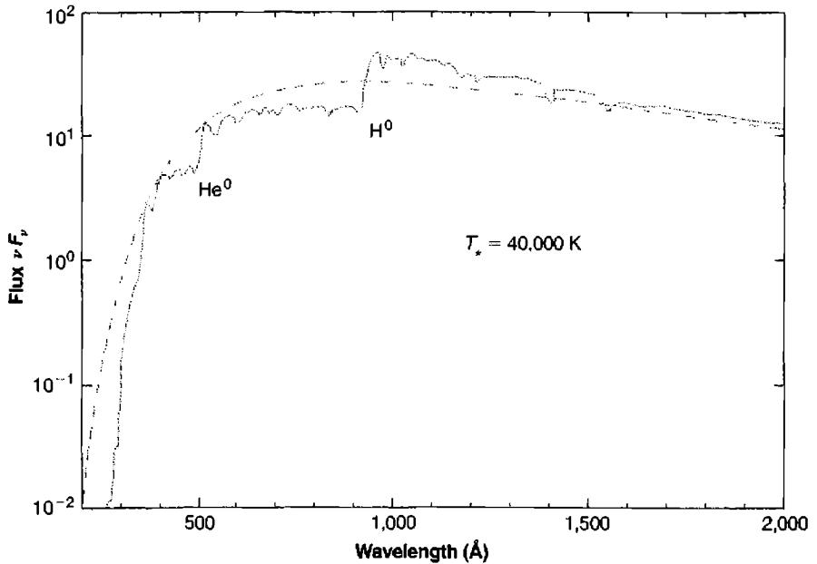
Calculated flux from a model O6 star with T_* = 40,000 K, \log g = 4 (solid line), compared with blackbody flux for the same effective temperature (dashed line). The ionization edges of atomic hydrogen and helium are marked.
should be determined from the best available sequences of model stellar atmospheres, and it can be seen that there is a one-parameter relationship y = y(T_*) for a fixed value of g or along a fixed line in the T_*, \log g plane.
We shall first use these relationships to examine the effective temperatures of population I O stars in H II regions, and then generalize these equations and use them to describe the higher-temperature planetary-nebula central stars.
Many H II regions are observed, but a fairly large fraction of them contain several O stars that contribute to the ionization and thus complicate the determination of the effective temperature of individual stars. The best cases for measurement are clearly nebulas with only a single involved hot star. Furthermore, the basic assumption of the method is that the nebula completely absorbs the stellar ionizing radiation and is a true Strömgren sphere (radiation-bounded rather than density-bounded). It is difficult to be certain that this assumption is fulfilled in any particular nebula, though well-defined ionization fronts at the outer edge of a nebula suggest that it is and thus indicate that it is a good candidate to be measured. However, as we shall see in Chapter 7, absorption of ionizing photons by dust can still cause serious errors in the results.
Today a large body of optical, infrared, and radio-frequency measurements are available. The infrared and radio measurements have the advantage that they are
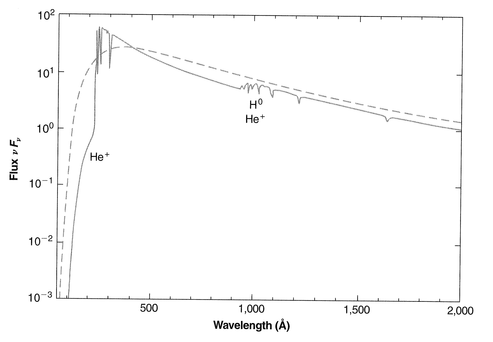
Calculated flux from a model planetary-nebula central star with T_* = 100,000 K, \log g = 6 (solid line), compared with blackbody flux for the same temperature (dashed line). The ionization edges of atomic hydrogen and the first ion of helium are marked.
relatively unaffected by interstellar extinction, although they have the defect that this extinction enters the ratio of optical stellar flux to radio-frequency nebular flux in full force. From these measurements of about 25 nebulae, the best available model stellar atmospheres were used to derive the temperature scales for the main-sequence stars shown in Table 2.3.
In many planetary nebulae the number of ionizing photons emitted by the star beyond the \text{He}^+ limit can also be measured from \lambda 4686, the strongest optical He II recombination line. This line is in general not present or only very weakly present, and has only been observed in some giant extragalactic H II regions. This indicates that the flux of \text{He}^+ -ionizing photons is small in all main-sequence O stars, confirming the calculated models in this respect. Many of the planetary-nebula central stars, however, are considerably hotter and emit an appreciable number of photons with h\nu > 4h\nu_0 = 54.4 eV. Thus, from the He II observations and from Equation (2.29), we have the relation analogous to that in Equation (5.35),
\frac{L_{\nu_f}}{\int_{4\nu_0}^{\infty} \frac{L_{\nu}}{h\nu} d\nu} = h\nu_{\lambda 4686} \frac{\alpha_{\lambda 4686}^{eff}(\text{He}^+, T) \pi F_{\nu_f}}{\alpha_B(\text{He}^+, T) \pi F_{\lambda 4686}} \quad (5.37)
Hence from the measured H I and He II line fluxes of the nebula, together with the measured stellar flux at some observable frequency, two independent determinations of T_* can be made by the Zanstra method. In some nebulae these two determinations agree, but in other nebulae they disagree badly. For instance, in NGC 7662, the H I measurements indicates T_* = 70,000 K, while the He II measurement indicates that T_* = 113,000 K, which, in fact corresponds to over 100 times more \text{He}^+ -ionizing photons than does the lower temperature. The discrepancy may be understood as resulting from the fact that the nebula is not optically thick to the H-ionizing radiation as Equation (5.35) assumes. If the nebula is density-bounded rather than ionization-bounded, then we must replace Equation (5.35) with
\frac{L_{\nu_f}}{\int_{\nu_0}^{\infty} \frac{L_{\nu}}{h\nu} d\nu} = \eta_{\text{H}} h\nu_{\text{H}\beta} \frac{\alpha_{\text{H}\beta}^{\text{eff}}(\text{H}^0, T) \pi F_{\nu_f}}{\alpha_{\text{B}}(\text{H}^0, T) \pi F_{\text{H}\beta}} \quad (5.38)
where \eta_{\text{H}} represents the fraction of the H-ionizing photons that are absorbed in the nebula. Likewise it is possible to imagine that all the \text{He}^+ -ionizing photons are not absorbed within the nebula—that is, that even the \text{He}^{++} zone is density-bounded rather than ionization-bounded. However, this does not seem to occur in most of the observed planetaries because nearly all observed planetaries have He I lines in their observed spectra, indicating the existence of an outer \text{He}^+ zone, which, as the discussion of Chapter 2 shows, is certainly optically thick to \text{He}^+ ionizing radiation. In a similar way, if [O I] lines are observed in a nebula, they indicate the presence of \text{O}^0, and therefore also of \text{H}^0, which has the same ionization potential as \text{O}^0, and thus indicates that the nebula is optically thick to H-ionizing radiation and that \eta = 1 (assuming spherical symmetry).
One further item of information can be obtained from measurements of the flux in a He I recombination line, such as \lambda 4471 or \lambda 5876 —namely, the number of photons emitted that can ionize \text{He}^0. This condition is
\frac{L_{\nu_f}}{\int_{\nu_2}^{\infty} \frac{L_{\nu}}{h\nu} d\nu} = \eta_{\text{He}} h\nu_{\lambda 5876} \frac{\alpha_{\lambda 5876}^{\text{eff}}(\text{He}^0, T) \pi F_{\nu_f}}{\alpha_{\text{B}}(\text{He}^0, T) \pi F_{\lambda 5876}}. \quad (5.39)
If the nebula is known to be optically thick to the He-ionizing radiation, either because the \text{He}^+ zone is observed to be smaller than the \text{H}^+ zone, or because the apparent abundance ratio n(\text{He}^+)/n_{\text{p}} \leq 0.1 (presumably indicating that the \text{He}^+ zone is smaller than the \text{H}^+ zone, even though this was not directly observed), then \eta_{\text{He}} = 1.
It should be noted that although the integrals giving the numbers of photons that can ionize \text{He}^+, \text{He}^0, and \text{H}^0 in Equations (5.26), (5.28), and (5.27), respectively, overlap, the equations are nevertheless essentially correct, because as indicated in Chapter 2, nearly every recombination of a \text{He}^{++} ion leads to emission of a photon that can ionize \text{He}^0 or \text{H}^0, and nearly every recombination of a \text{He}^+ ion leads to emission of a photon that can ionize \text{H}^0.
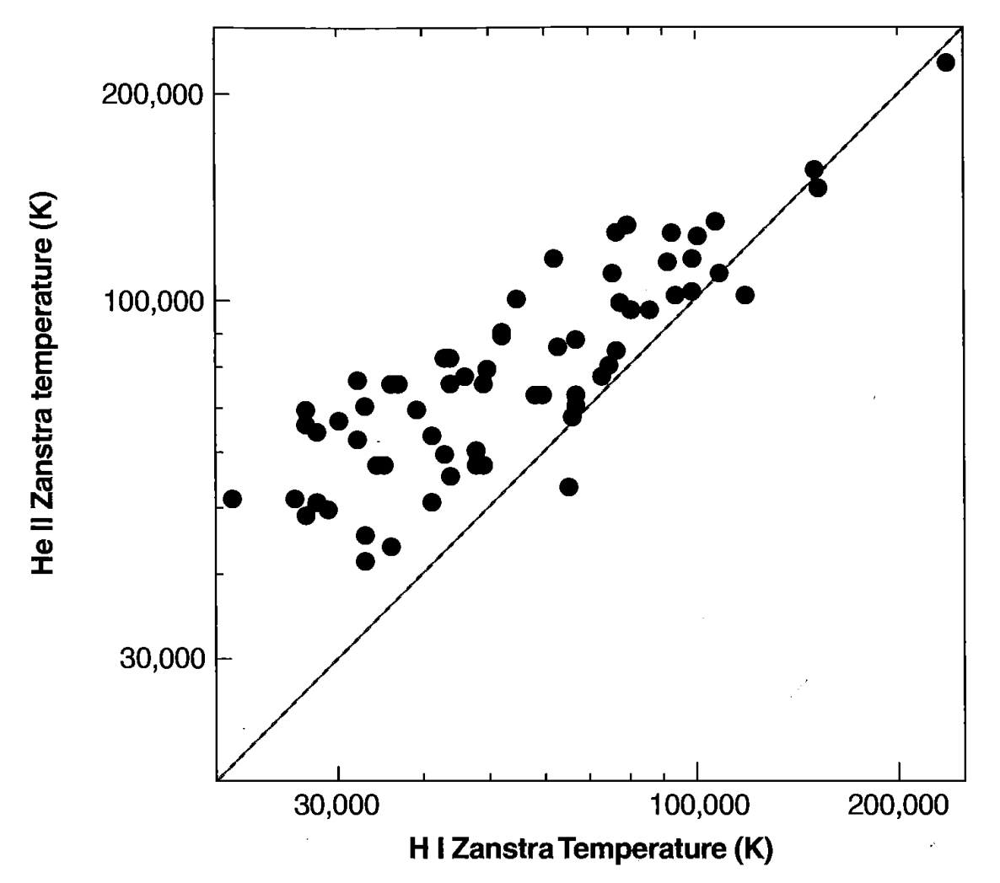
The observational data on the fluxes in H\beta, \lambda 4686, and \lambda 4471 are fairly complete and fairly accurate for planetary nebulae. The measurements of the stellar continuum fluxes are less accurate, because the stars are faint and must be observed on the bright background of the nebula. The best measurements are those that avoid the wavelengths of the nebular emission lines.
Figure 5.17 compares Zanstra temperatures obtained from straightforward application of Equations (5.35) and (5.37). The He II Zanstra temperature often exceeds the H I temperature. This is generally ascribed to the nebulae being partially transparent to hydrogen-ionizing radiation, in which case the He II temperature is the more accurate value.
Another, related method of determining the temperature of the central star is to measure directly all the cooling radiation. If the fluxes in all the emission lines plus the continuum, from the ultraviolet to the infrared, are added together, this gives directly the energy radiated by the nebula. Comparing this quantity with the flux in a hydrogen recombination gives the energy radiated per recombination (through the ratio \alpha_B/\alpha_{H\beta}^{eff})—that is, the energy input to the nebula per photoionization.
\frac{\text{total cooling}}{L(H\beta)} = \frac{\text{total heating}}{L(H\beta)} = \frac{\alpha_B}{h\nu_{H\beta}\alpha_{H\beta}^{eff}} \frac{\int_{\nu_0}^{\infty} \frac{L_\nu}{h\nu} h(\nu - \nu_0) d\nu}{\int_{\nu_0}^{\infty} \frac{L_\nu}{h\nu} d\nu} \quad (5.40)
This can be viewed as the next higher moment of the radiation field measured by the Zanstra method, and determines the effective temperature of the star, either in the blackbody approximation, or from a series of model atmospheres. This method of temperature determination is called the energy balance or Stoy's method and, as observations into the ultraviolet and infrared spectral regions become more straightforward, it will become increasingly useful. Note that if the continuum flux is not measured, it can be estimated as the energy lost (in the Balmer, Paschen, etc., continua) by the recombining electrons as outlined in Section 3.3.
5.11 Abundances of the Elements in Nebulae
It is clear that abundances of the observed ions in nebulae can be derived from measurements of the relative strengths of their emission lines. All the individual nebular lines are optically thin, so that no curve-of-growth effects of the kind that complicate stellar atmosphere abundance determinations occur. Many light elements are observable in the optical spectra of nebulae, including H, He, N, O, and Ne, although unfortunately C is not. However, it can be observed in the satellite ultraviolet spectral region. Collisionally excited lines can be quite bright, but their strengths depend strongly on temperature, which complicates the determination of relative abundances. Furthermore, all stages of ionization of an element are generally not observable in the optical spectral region; for instance, though [O II] and [O III] have strong lines in diffuse nebulae, O IV and O V do not. However, there is an [O IV] line in the far infrared, and O IV] and O V lines in the satellite ultraviolet. Opening up these new wavelength regions has greatly aided abundance determinations.
In general, as we have seen in Chapter 4, the observed intensity I_l of an emission line is given by the integral
I_l = \int j_l ds = \int n_i n_e \varepsilon_l(T) ds \quad (5.41)
taken along the line of sight through the nebula, where n_i and n_e are the density of the ion responsible for the emission and the electron density, respectively.
For the recombination lines, the emission coefficients have been discussed in Chapter 4, and we have, for instance,
\begin{aligned} I_{H\beta} &= \frac{1}{4\pi} \int n_p n_e h\nu_{H\beta} \alpha_{H\beta}^{eff}(H^0, T) ds, \\ I_{\lambda 5876} &= \frac{1}{4\pi} \int n(\text{He}^+) n_e h\nu_{\lambda 5876} \alpha_{\lambda 5876}^{eff}(\text{He}^0, T) ds, \\ I_{\lambda 4686} &= \frac{1}{4\pi} \int n(\text{He}^{++}) n_e h\nu_{\lambda 4686} \alpha_{\lambda 4686}^{eff}(\text{He}^+, T) ds. \end{aligned}
For all the recombination lines, \varepsilon_l \propto T^{-m} can be fitted over a limited range of temperature, with m \approx 1. For instance, for H\beta, m = 0.90, while for \text{He I } \lambda 5876, m = 1.13. Thus the recombination-emission coefficients are not particularly temperature
sensitive and the abundances derived from them do not depend strongly on the assumed T . But their intensities scale with the abundances, making recombination lines of elements heavier than helium faint and hard to observe.
Less abundant ions, such as C II, O IV, and O V, have weak permitted emission lines as observed in planetary nebulae, and these lines have often been interpreted as resulting from recombination, and have been used to derive abundances of the parent ions. However, some of these lines may be excited by resonance-fluorescence, and their emission coefficients therefore depend not only on temperature and density but on the local radiation field as well, so they cannot be used to derive abundances in any straightforward way. Other lines, such as C II 3^2D-4^2F \lambda 4267, cannot be excited by resonance-fluorescence, and are suitable for abundance determinations. Abundances determined from collisionally excited and recombination lines should agree, but as we shall see, there are several nebulae where they do not, and this is a current area of active research.
It is also possible to measure relative abundances of He + in H II regions from relative strengths of the radio recombination lines of H I and He I. At the very high n of interest in the radio region, both H and He are nearly identical one-electron systems except for their masses, so that the relative strengths of their lines (separated by the isotope effect) are directly proportional to their relative abundances as long as the lines are optically thin, and the nebula is a complete H + , He + region, with no H 0 , He 0 zone.
For abundance determinations of elements other than H and He, strong collisionally excited lines are available, and for these lines, in contrast to the recombination lines, the emission coefficient depends more sensitively on the temperature,
\begin{aligned} I_\nu &= \frac{1}{4\pi} \int n_i n_e h\nu q_{1,2}(T)b \, ds \\ &= \frac{1}{4\pi} \int n_i n_e h\nu \frac{8.63 \times 10^{-6}}{T^{1/2}} \frac{\Upsilon(1, 2)}{\omega_1} \exp(-\chi/kT)b \, ds \end{aligned}
in the low-density limit, where b is the fraction of excitations to level 2 that are followed by emission of a photon in the line observed.
The temperature must be determined from observational data of the kind discussed in the beginning sections of this chapter. From the measured relative strengths of the lines and the known emission coefficients, the abundances can be determined on the basis of a model of the structure of the nebula. The simplest model treats the nebula as homogeneous with constant T and n e and thus might be called a one-layer model. From each observed relative line strength, the abundance of the ion that emits it can be determined. In some cases two successive stages of ionization of the same element are observed, such as O + and O ++ , and their relative abundances can be used to construct an empirical ionization curve giving n(\text{A}^{+m+1})/n(\text{A}^{+m}) as a function of ionization potential. Thus finally, the relative abundance of every element with at least one observed line can be determined. Discrepancies (for instance, in n e and T ) determined from different line ratios indicate that this model is too simplified to
give highly accurate results, though the abundances determined from it are generally thought to be correct to within a factor of order two or three.
Previous sections have described several methods of determining the temperature, and the discussion has shown that temperatures determined from hydrogen recombination lines, the Balmer jump, and free-free brightness temperatures are lower than the temperature determined from forbidden-line ratios. The probable explanation of this discrepancy is that the temperature is not constant throughout the nebula as has been tacitly assumed, but rather varies from point to point due to variations in the local heating and cooling rates. Under this interpretation, a more complicated comparison between observation and theory is necessary. An ideal method would be to know the entire temperature structure of the nebula, to calculate from it the expected forbidden-line ratios and radio-frequency continuum brightness temperatures, and then to compare them with observation; this is a model approach that will be discussed in Section 5.12.
However, the general type of effects that are expected can easily be understood. The forbidden-line ratios determine the temperature in the region in which these lines themselves are emitted—that is, the [O III] ratio measures a mean temperature in the O^{++} zone and the [N II] ratio measures the mean temperature weighted in a different way. The emission coefficient for the forbidden lines increases strongly with increasing temperature, and therefore the mean they measure is strongly weighted toward high-temperature regions. On the other hand, the recombination and free-free emission coefficients decrease with increasing temperature, and therefore the mean it measures is weighted toward low-temperature regions. We thus expect a discrepancy in the sense that the forbidden lines indicate a higher temperature than do the Balmer jump or radio-frequency measurements, as is in fact confirmed by observation. It is even possible to get some information about the range in variation of the temperature along a line through the nebula from comparison of these various temperatures, but as the result depends on the ionization distribution also, we shall not consider this method in detail.
A somewhat more sophisticated scheme takes into account the spatial variations of temperature along the line of sight and uses the observations themselves to get as much information as possible on these variations. The emission coefficient is expanded in a power series,
\varepsilon_l(T) = \varepsilon_l(T_0) + (T - T_0) \left( \frac{d\varepsilon_l}{dT} \right)_0 + \frac{1}{2} (T - T_0)^2 \left( \frac{d^2\varepsilon_l}{dT^2} \right)_0, \quad (5.42)
correct to the second order. It is clear that for recombination lines with
\varepsilon_l(T) = CT^{-m}
or for collisionally excited lines with
\varepsilon_l(T) = \frac{D \exp(-\chi/kT)}{T^{1/2}},
(in the low-density limit) the necessary derivatives can be worked out analytically. Then, integrating along the line of sight,
\begin{aligned} \int n_i n_e \varepsilon_i(T) ds &= \varepsilon_i(T_0) \int n_i n_e ds \\ &+ \frac{1}{2} \left( \frac{d^2 \varepsilon_i}{dT^2} \right)_0 \int n_i n_e (T - T_0)^2 ds \end{aligned} \quad (5.43)
where T_0 is chosen so that
T_0 = \frac{\int n_i n_e T ds}{\int n_i n_e ds}. \quad (5.44)
If all ions had the same space distribution n_i(s), then from two line ratios, such as [O III] (\lambda 4959 + \lambda 5007)/ \lambda 4363 and [N II] (\lambda 6548 + \lambda 6583)/ \lambda 5755, both T_0 and
t^2 = \frac{\int n_i n_e (T - T_0)^2 ds}{T_0^2 \int n_i n_e ds}
could be determined instead of the one constant T_0 from one line ratio, as in the single-layer model. Then T_0 and t^2 could be used to determine the abundances of all the ions with measured lines. The difficulty with this method is that all ions do not have the same distribution; for instance, O^{++} is more strongly concentrated to the source of ionizing radiation than N^+, so other more or less arbitrary assumptions must be made.
The most sophisticated method of all to determine the abundances from the observations is to calculate a complete model of the nebula in an attempt to reproduce all its observed properties; this approach will be discussed in the next section.
Turning now to the observational results, the He/H abundance ratio has been measured in many nebulae. Perhaps the most exhaustively measured nebula is the Orion Nebula, which has He I but not He II lines. Observations show that n(\text{He}^+)/n_p ranges from 0.060 to 0.090 in various positions, suggesting that varying amounts of \text{He}^0 are present. A measurement in its nearby companion nebula NGC 1982 gives n(\text{He}^+)/n_p = 0.009 and definitely shows that this slit position is in an \text{H}^+, \text{He}^0 zone where He is neutral. The exciting star of NGC 1982 is a B1 V star, so the fact that the nebula is a \text{He}^0 zone is understood from Figure 2.5. This observation shows that some correction of the abundance of He for the unobserved \text{He}^0 is probably necessary at all the observed slit positions in the Orion Nebula.
Atomic helium produces no emission lines, so an ion of another element is used as its proxy. Empirically, the correction can be based on the observed strength of [S II] \lambda\lambda 6717, 6731, because their emitting ion S^+ has an ionization potential of 23.4 eV,
approximately the same as the ionization potential of \text{He}^0, 24.6 eV, so that to a first approximation
\frac{n(\text{He}^0)}{n(\text{He}^+)} = \frac{n(\text{S}^+)}{n(\text{S}^{++})}
yields the abundance of \text{He}^0. Such ratios are often called ‘‘ionization correction factors’’ (ICF), since they apply a correction for unobserved stages of ionization. A more sophisticated procedure is to obtain the ICF by interpolation between the ionization of \text{S}^+ and of \text{O}^+ (ionization potential 35.1 eV) in such a way that the corrections at all slit positions yield as nearly as possible the same final He/H ratio. The final result for NGC 1976 is n(\text{He})/n(\text{H}) \approx 0.10; two other H II regions observed optically, M 8 and M 17, have essentially this same relative He abundance.
Radio measurements of \text{He}^+/\text{H}^+ abundance ratios are available for many diffuse nebulae. These determinations have the advantage that they can be done at great distances within the galactic plane, where extinction is large in the optical, and they are in good agreement with the optical measurement for nebulae common to both sets of observations. At present, however, there is no known way in which the correction for \text{He}^0 can be obtained from radio measurements alone, and the fact that at least two nebulae, NGC 2024 and NGC 1982, are observed to have n(\text{He}^+)/n_p \approx 0 shows that this correction certainly exists. Radio measurements of H II regions very near the galactic center give quite low n(\text{He}^+)/n_p ratios, but it appears most likely that they indicate that the ionizing stars are predominantly rather cool, producing \text{H}^+, \text{He}^0 zones, rather than low helium abundance.
Both He II and He I recombination lines are observed in many planetary nebulae, showing the presence of both \text{He}^{++} and \text{He}^+, though some planetaries, like H II regions, have only He I lines. Nearly all planetaries have central stars that are so hot that they have no outer \text{H}^+, \text{He}^0 zones, though a few exceptions do exist. Thus no correction is necessary for unobserved \text{He}^0 in most planetary nebulae.
Accurate measurements of He abundances of planetary nebulae show that most have values only slightly above H II regions, with n(\text{He})/n(\text{H}) \approx 0.11. However some nebulae have abundances that are almost twice as large. Since the accuracy of the measurements, as judged from the relative intensities of He I \lambda\lambda 4471, 5876, is about 0.01, the differences between the nebulae are real. As will be discussed in Chapter 11, the helium abundance can help distinguish between different populations of planetary nebulae.
Most measurements of the abundances of the heavy elements in H II regions and planetary nebulae use a combination of collisionally excited forbidden lines and hydrogen recombination lines. Section 5.10 shows that the intensities of forbidden lines relative to a recombination line depend mainly on the shape of the stellar continuum [Equation (5.40)]. Physically, the gas will be hotter in lower-metallicity nebulae, to compensate for the fewer number of coolants, and the result will be that the sum of the collisionally excited lines, which represent the majority of the cooling, is constant. Forbidden lines can only be converted into abundances if the electron temperature is well measured, which requires detection of the faint {}^1S-{}^1D transitions described in Section 5.2. A second difficulty is that large and rather uncertain corrections may be
| N | Atom | Sun | H II Region | Planetary |
|---|---|---|---|---|
| 1 | H | 1 | 1 | 1 |
| 2 | He | 0.1 | 0.095 | 0.10 |
| 6 | C | 3.5 \times 10^{-4} | 3 \times 10^{-4} | 8 \times 10^{-4} |
| 7 | N | 9.3 \times 10^{-5} | 7 \times 10^{-5} | 2 \times 10^{-4} |
| 8 | O | 7.4 \times 10^{-4} | 4 \times 10^{-4} | 4 \times 10^{-4} |
| 10 | Ne | 1.2 \times 10^{-4} | 6 \times 10^{-5} | 1 \times 10^{-4} |
| 11 | Na | 2.1 \times 10^{-6} | 3 \times 10^{-7} | 2 \times 10^{-6} |
| 12 | Mg | 3.8 \times 10^{-5} | 3 \times 10^{-6} | 2 \times 10^{-6} |
| 13 | Al | 2.9 \times 10^{-6} | 2 \times 10^{-7} | 3 \times 10^{-7} |
| 14 | Si | 3.6 \times 10^{-5} | 4 \times 10^{-6} | 1 \times 10^{-5} |
| 16 | S | 1.6 \times 10^{-5} | 1 \times 10^{-5} | 1 \times 10^{-5} |
| 17 | Cl | 1.9 \times 10^{-7} | 1 \times 10^{-7} | 2 \times 10^{-7} |
| 18 | Ar | 4.0 \times 10^{-6} | 3 \times 10^{-6} | 3 \times 10^{-6} |
| 19 | K | 1.3 \times 10^{-7} | 1 \times 10^{-8} | 1 \times 10^{-7} |
| 20 | Ca | 2.3 \times 10^{-6} | 2 \times 10^{-8} | 1 \times 10^{-8} |
| 26 | Fe | 3.2 \times 10^{-5} | 3 \times 10^{-6} | 5 \times 10^{-7} |
required for unseen ions—that is, ions without observable lines—unless co-spatial ultraviolet, optical, and infrared measurements are available.
Table 5.3 summarizes the abundances of the more common elements for the sun, NGC 1976, and the mean of a sample of planetary nebulae. These are only given as indicators of typical values, and we shall see in Chapters 10 and 11 that there is a dispersion in observed abundances. The abundances of a particular planetary nebula are affected by nuclear processing in the central star, or the abundances in an H II region reflect the composition of the interstellar medium in that part of the galaxy. Also, as we shall see in Chapter 7, certain elements, especially Ca and Al, have condensed onto grains and so are not included in the emission-line abundances.
Large telescopes and efficient CCD detectors have made it possible to detect faint recombination lines of the heavy elements in several H II regions and planetary nebulae. Abundances measured with these should be far more robust than those inferred from the bright forbidden lines, because both heavy-element and hydrogen recombination lines have similar temperature dependencies, which then cancel in the ratio. In particular, this method should not be affected by temperature fluctuations. This advantage is mitigated by the fact that the lines are faint, and the recombination process is complicated by strong dielectronic recombination contributions.
Among H II regions the recombination-line abundances tend to be slightly higher than the forbidden-line abundances, which can be understood in terms of the temperature fluctuations described in the first parts of this section. If this is the correct
interpretation then the correct gas-phase abundances are about 50%–100% higher than are given in Table 5.3 and t^2 \sim 0.02 –0.04.
Recent work on planetary nebulae has found differences between collisional and recombination abundances that are larger than a factor of ten, too large to be caused by temperature fluctuations. This suggests that another, presently unknown, process may be affecting one (or both) of the abundance measures. The fact that the discrepancy is not constant, but varies from object to object, shows that it is not a simple matter of incorrect atomic data. One study finds a correlation between t^2 (measured from the forbidden-line/Balmer-jump method) and the difference between the collisional and recombination abundances, suggesting that the difference is related to physical conditions within the nebulae. If this is the case then the higher recombination abundances are more likely to be correct. Another study shows that, across the planetary nebula NGC 6720, the recombination line abundances measured in low- and high-ionization regions are quite different, while collisionally excited lines indicate a consistent oxygen abundance. This suggests that an unknown process affects the recombination lines in the higher-ionization gas. This is clearly an active research area, with major consequences for galactic chemical evolution.
5.12 Calculations of the Structure of Model Nebulae
The basic idea of a calculation of a model H II region or a model planetary nebula is quite straightforward. It is to make reasonable assumptions about the physical parameters of the ionizing star, the density distribution, and the relative abundances of the elements in the nebula (its size, geometrical structure, and so on); to calculate, on the basis of these assumptions, the resulting complete physical structure—the ionization, temperature, and emission coefficients as functions of position; and thus to calculate the expected emergent radiation from the nebula at each point in each emission line. Comparing this predicted model with the observed properties of a nebula provides a check as to whether the initial assumptions are consistent with the observations; if they are not, then the assumptions must be varied until a match with the observational data is obtained. In principle, if all the emission lines were accurately measured at every point in the nebula, and if the central star's radiation were measured at each observable frequency, it might be possible to specify accurately all the properties of the star and of the nebula in this way. Of course, in practice the observations are not sufficiently complete and accurate, and do not have sufficiently high angular resolution to enable us to carry out this ambitious program, but nevertheless, quite important information is derived from the model-nebula calculation.
Let us write down in simplified form the equations used in calculating the structure of a model nebula. For computational reasons, practically all work to date has assumed spherical model nebulae, and we shall write the equation in these terms. The basic equations are described in Chapters 2 and 3, so we shall simply quote them here. The basic equation of transfer is
\frac{dI_\nu}{ds} = -\frac{d\tau_\nu}{ds} I_\nu + j_\nu \quad (5.45)
where the increment in optical depth at any frequency is given by a sum
\frac{d\tau_\nu}{ds} = \sum n_j a_{\nu j} \quad (5.46)
over all atoms and ions with ionization potentials h\nu_j < h\nu. In practice, because of their great abundance, \text{H}^0, \text{He}^0, and \text{He}^+ dominate the total opacity, although all ions are included in the optical depth. Likewise, the emission coefficient j_\nu is a sum of terms of which those due to recombinations of \text{H}^+, \text{He}^+, and \text{He}^{++} are the most important.
The ionization equation that applies between any two successive stages of ionization of any ion is
n(X^{+i}) \int_{\nu_0}^{\infty} \frac{4\pi J_\nu}{h\nu} a_\nu(X^{+i}) d\nu = n(X^{+i+1}) n_e \alpha_G(X^{+i}, T) \quad (5.47)
as in Equation (2.30), while the total number of ions in all stages of ionization is
\sum_{i=0}^{\max} n(X^{+i}) = n(X)
The energy-equilibrium equation is
G = L_R + L_{FF} + L_C \quad (5.48)
as in Equation (3.31), where the gain term and each of the loss terms is a sum over the contributions of all ions, but again in practice usually only H and He are important in L_R and L_{FF}. Collisionally excited line radiation from the less abundant heavy elements dominates the cooling, however, and many terms must be included in L_C.
For any assumed radiation source at the origin, taken to be a star with either a blackbody spectrum, or a spectrum calculated from a model stellar atmosphere, these equations can be integrated. If the on-the-spot approximation described in Chapter 2 is used, they can be integrated outward. If, instead, the detailed expressions for the emission coefficients are used and the diffuse radiation field is explicitly calculated, it is necessary to use an iterative procedure. The on-the-spot approximation can be used as a first approximation from which the ionization at each point in the nebula and the resulting emission coefficients can be calculated. Then the diffuse radiation field can be calculated working outward from the origin, and using the then more nearly accurate total radiation field, the ionization and T can be recalculated at each point. This process can be repeated as many times as needed until it converges to the desired accuracy.
As an example, we shall examine a reconstruction of the geometry and physical properties of the planetary nebula NGC 6565, a bright, compact object that appears as a homogeneous oval ring when imaged in [\text{O III}], as shown in Figure 5.18. A long slit was placed across the nebula to obtain spatially resolved spectra at a resolving power
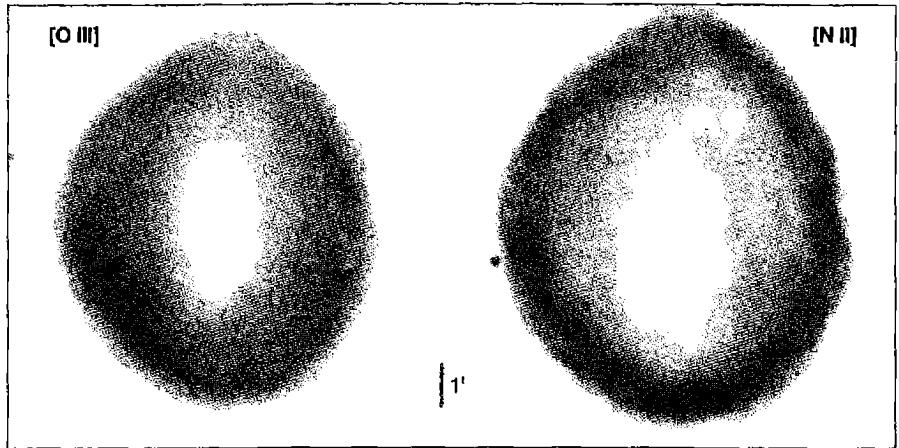
of 60,000. This was done at a series of position angles to measure the expansion velocity and distribution of ions across the nebula. As is typical of planetary nebulae, a wide range of ionization ([N I] through [Ar V]) and expansion velocity (70 \text{ km s}^{-1} through \sim 17 \text{ km s}^{-1}) was seen.
The ionization structure and nebular properties were deduced by combining the spatially resolved spectroscopy with photoionization models. The gas density was deduced from the surface brightness in \text{H}\alpha, which is proportional to n_e n_p L, where L is the physical thickness. The density distribution was found to be radially asymmetric, with a peak \sim 3'' away from the star, but with greater emission on the side of the peak towards the central star. The gas filling factor, deduced from the physical arguments presented above, was \sim 0.25. The gas temperature as a function of radius was determined, for several ions, by the methods described in Section 5.2. The central star temperature was deduced to be between 1.2 \times 10^5 \text{ K} and 1.6 \times 10^5 \text{ K} from the Zanstra method.
The ionization and thermal structure of the nebula was reproduced with a photoionization model, which included the effects of embedded dust and used the deduced density profile. It was adjusted to reproduce the observed spatial distribution of ionization of the elements, surface brightnesses of several lines, and the measured temperature. A blackbody at \sim 1.2 \times 10^5 \text{ K}, with a luminosity of 100 L_\odot, was deduced, along with the chemical composition of the gas, and the three-dimensional geometry of the nebula. The composition was typical of planetary nebulae. Figure 5.19 shows the three-dimensional reconstructed geometry.
Photoionization models have also been created to fit observations of H II regions. As we shall see in Chapter 10, an H II region is an illuminated layer of ionized gas on the surface of a much larger molecular cloud. As an example we will consider a model of inner regions of NGC 1976. The H II region is treated as a hydrostatic layer with the gas in overall pressure equilibrium. An ionizing continuum predicted
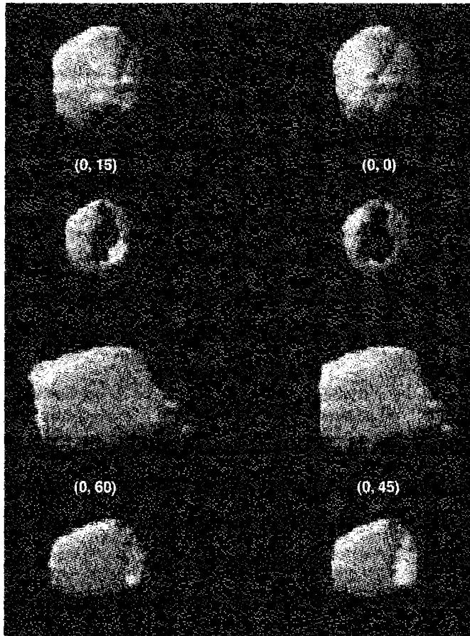
by stellar atmospheres was assumed, and a temperature of \sim 39,600 K was deduced. Grains, and their effects on the extinction of the stellar continuum, the heating of the gas by photoionization, and the observed grain thermal emission, were included in the calculation. The deduced composition was similar to that given in Table 5.3.
References
An old but very good overall reference on the comparison of theory and observation of the optical radiation of nebulae, written in the context of planetary nebulae, but applicable in many ways to H II regions also, is
Seaton, M. J. 1960, Rep Progress in Phys , 23, 313.
The method of measuring electron temperatures from optical emission-line intensity ratios seems to have been first suggested by
Menzel, D. H., Aller, L. H., & Hebb, M. H. 1941, ApJ , 93, 230.
This method has subsequently been used by many authors.
The observational data used in Figure 5.2 are from
Garnett, D. R., Shields, G. A., Skillman, E. D., Sagan, S. P., & Dufour, R. I. 1997, ApJ , 489, 63 (NGC 2403).
Kennicutt, R. C., Bresolin, F., & Garnett, D. R. 2003, ApJ , 591, 801 (M101).
Osterbrock, D. E., Tran, H. D., & Veilleux, S. 1992, ApJ , 389, 305 (Orion).
Esteban, C., Peimbert, M., Torres-Peimbert, S., & Escalante, V. 1998, MNRAS , 295, 401 (Orion).
The observational data used in Figure 5.3 are from
Kwitter, K. B., & Henry, R. B. C. 2001, ApJ , 562, 804 (filled circles).
Milingo, J. B., Henry, R. B. C., & Kwitter, K. B. 2002, ApJS , 138, 285 (filled circles).
Kingsburgh, R. L., & Barlow, M. J. 1994, MNRAS , 271, 257 (open circles).
The C III] \lambda 1909/C II \lambda 4267 ratio method is described by
Kaler, J. B. 1986, ApJ , 308, 337.
The curves in Figure 5.4 were computed by combining collision strengths from the Chapter 3 with recombination rate coefficients from the following references:
Davey, A. R., Storey, P. J., & Kisieliński, R. 2000, A&A , 142, 85.
Kisieliński, R., & Storey, P. J. 1999, A&AS , 137, 157.
Storey, P. J. 1994, A&A , 282, 999.
The observational data for the optical continuum temperature determinations of Figure 5.6 are from
Liu, X.-w., & Danziger, J. 1993, MNRAS , 262, 256, and papers cited therein.
The radio-continuum method of measuring the temperature of a nebula by observing it in the optically thick region has been discussed and used by many authors. The numerical data on which Table 5.1 is based are from
Subrahmanyan, R., & Goss, W. M. 1996, MNRAS , 281, 239.
Subrahmanyan, R., & Goss, W. M. 1995, MNRAS , 275, 755.
Subrahmanyan, R. 1992, MNRAS , 254, 719.
Shaver, P. A. 1970, Ap. Letters , 5, 167.
The first paper is a good review of excitation processes that determine the populations of the hyperfine structure levels of H I, and gives references to the atomic data. The second paper applies the radio/UV line method to the Orion environment.
Liszt, H. 2001, A&A , 371, 698.
van der Werf, P. P., & Goss, W. M. 1989, A&A , 224, 209.
The idea of using the [O II] intensity ratio to measure electron densities in nebulae seems to have been first suggested by
Aller, L. H., Ufford, C. W., & Van Vleck, J. H. 1949, ApJ , 109, 42.
It was worked out quantitatively by
Seaton, M. J. 1954, Ann. d'Ap , 17, 74.
A complete discussion, including theoretical calculations and observational data on several of the H II regions used in Table 5.2, is found in
Seaton, M. J., & Osterbrock, D. E. 1957, ApJ , 125, 66.
For many years a discrepancy existed between the calculated transition probabilities for the np^3 ions like [O II] and [S II] on which nebular electron-density determinations depend, and the values implied by the astronomical data. This discrepancy was finally resolved by the realization that a full relativistic quantum-mechanical treatment, including Dirac relativistic wave functions and the relativistic corrections to the magnetic-dipole operator, is necessary to calculate accurately the transition probabilities for these ions. Relevant references are
Eissner, W., & Zeippen C. J. 1981, J. Phys. B , 14, 2125.
Zeippen, C. J. 1982, MNRAS , 198, 111.
Mendoza, C. & Zeippen, C. J. 1982, MNRAS , 199, 1025.
Zeippen, C. J. 1987, A&A , 173, 410.
An extensive comparison between various density indicators is presented by
Copetti, M. V. F., & Writzl, B. C. 2002, A&A , 382, 282.
The data shown in Figure 5.9 are from
Kiugburgh, R. L., & English, J. 1992, MNRAS , 259, 635.
The observational data in Table 5.2 are from
Osterbrock, D. E., & Flather, E. 1959, ApJ , 129, 26 (NGC 1976).
Meaburn, J. 1969, Astron. Space Science , 3, 600 (M 8).
Danks, A. C. 1970, A&A , 9, 175 [S II].
Danks, A. C., & Meaburn, J. 1971, Astron. Space Science , 11, 398 (NGC 1976).
Estebau, C., Peimbert, M., Torres-Peimbert, S., Garcia-Rojas, J., & Rodriguez, M. 1999, ApJS , 120, 113 (M 8).
A very good reference to the simultaneous determination of temperature and density by comparison of optical and infrared emission line strengths is
Dinerstein, H. L., Lester, D. F., & Werner, M. W. 1985, ApJ , 291, 561.
The data shown in Figure 5.12 are taken from this reference.
Comparison of radio-recombination-line measurements with calculated strengths and the determination of T, n_e and E have been investigated by many authors, beginning with
Goldberg, L. 1966, ApJ , 144, 1225.
Mezger, P. G., & Hoglund, B. 1967, ApJ , 147, 490.
Dyson, J. E. 1967, ApJ , 150, L45.
Note, however, that the definition of \beta used in the present text differs slightly from that used in most of these papers. The more recent results are taken from
Brown, R. L., Lockman, F. J., & Knapp, G. R. 1978, ARAA , 16, 445.
Shaver, P. A. 1980, A&A , 91, 279.
Odegard, N. 1985, ApJS , 57, 571.
Shaver, P. A., McGee, R. X., Newton, L. M., Danks, A. C., & Pottasch, S. R. 1983, MNRAS , 204, 53.
Figure 5.14 uses data from the last of these references.
The method of measuring the ultraviolet radiation of stars from the recombination radiation of the nebulae they ionize was first suggested by
Zanstra, H. 1931, Pub. Dominion Astrophys. Obs , 4, 209.
The treatment in this chapter is based primarily on the following paper, which includes the best available optical- and radio-frequency measurements:
Harman, R. J., & Seaton, M. J. 1966, MNRAS , 132, 15.
The following give tables of emergent continua for OB stars (the first two) and for nuclei of planetary nebulae (the last):
Kurucz, R. L. 1991, in Proceedings of the Workshop on Precision Photometry: Astrophysics of the Galaxy , ed. A. C. Davis Philip, A. R. Upgren, & K. A. James (Schenectady: Davis), p. 27. On the web at http://www.stsci.edu/science/starburst/Kurucz.html.
Schaerer D., & de Koter, A. 1997, A&A , 322, 592. On the web at http://www.stsci.edu/ftp/science/starburst/SdK96.html.
Rauch, T. 1997, A&A , 320, 237. On the web at http://astro.uni-tuebingen.de/~rauch/flux.html.
The stellar atmosphere used in Figure 5.15 was taken from the first of these references, and the planetary nebula atmosphere from the last.
This paper contains good tables of the left-hand sides of Equations (5.33) and (5.35) for many published model stellar atmospheres.
Shaw, R. A., & Kaler, J. B. 1985, ApJ , 295, 537.
This reference contains the best magnitudes of the central stars of planetary nebulae, measured with narrow-band filters at \lambda 4428 and \lambda 5500, between the strong nebular lines, and corrected for contamination by the nebular continuum. Blackbody temperature determinations from it are used in preference to earlier results in Section 5.10.
Figure 5.17 uses data from the following reference:
Gleizes, F., Ackler, A., & Stenholm, B. 1989, A&A , 222, 237.
These three references describe and apply the Stoy method for temperature determination:
Stoy, R. H. 1933, MNRAS , 93, 588.
Kaler, J. B. 1976, ApJ , 210, 843.
Kaler, J. B. 1978, ApJ , 220, 887.
Recent surveys of abundance determinations in H II regions include
Rubin, R. H., Simpson, J. P., Haas, M. R., & Erickson, E. F. 1991, ApJ , 374, 564.
Baldwin, J., Ferland, G. J., Martin, P. G., Corbin, M., Cota, S., Peterson, B. M., & Slettebak, A. 1991, ApJ , 374, 580.
Osterbrock, D. E., Tran, H. D., & Veilleux, S. 1992, ApJ , 389, 305.
Esteban, C., Peimbert, M., Torres-Peimbert, S., & Escalante, V. 1998, MNRAS , 295, 401.
Deharveng, L., Peña, M., Caplan, J., & Costero, R. 2000, MNRAS , 311, 329.
The first four of these deals with NGC 1976, the best studied H II region, and all the others are on planetary nebulae.
The following paper reviews methods of deriving abundances from emission lines observed in H II regions and planetary nebulae:
Stasińska, G. 2004, in Cosmochemistry: The Melting Pot of the Elements , eds. C. Esteban, R. G. López, A. Herrero, & F. Sánchez (Cambridge: Cambridge University Press), p. 115, astro-ph 0207500.
Among the many discussions of complete models of planetary nebulae, some of the best are
Harrington, J. P., Seaton, M. J., Adams, P. S., & Lutz, J. H. 1982, MNRAS, 199, 517.
Clegg, R. E. S., Harrington, J. P., Barlow, M. J., & Walsh, J. R. 1987, ApJ, 314, 551.
Middlemass, D. 1990, MNRAS, 244, 294.
Volk, K., & Kwok, S. 1997, ApJ, 477, 722.
Dudziak, G., Pequignot, D., Zijlstra, A. A., & Walsh, J. R. 2000, A&A, 363, 717.
Turatto, M., Cappellera, E., Ragazzoni, R., Benetti, S., & Sabbadin, F. 2002, A&A, 384, 1062.
Figures 5.18 and 5.19 are from the last of these, along with the discussion on planetary nebula modeling in Section 5.12.
Model H II regions are discussed in
Rubin, R. H. 1983, ApJ, 274, 671.
Mathis, J. S. 1985, ApJ, 291, 247.
Rubin, R. H. 1985, ApJS, 57, 349.
Evans, I. N., & Dopita, M. A. 1985, ApJS, 58, 125.
Simpson, J. P., Rubin, R. H., Erickson, E. F., & Haas, M. R. 1986, ApJ, 311, 895.
Rubin, R. H., Simpson, J. P., Haas, M. R., & Erickson, E. F. 1991, ApJ, 374, 564.
Baldwin, J., Ferland, G. J., Martin, P. G., Corbin, M., Cota, S., Peterson, B. M., & Slettebak, A. 1991, ApJ, 374, 580.
The model of the Orion Nebula described in Section 5.12 is from the last of these.
The following paper discusses in detail corrections of the abundance ratios for unobserved stages of ionization, such as \text{He}^0, from \text{S}^+/\text{S}^{++} and \text{O}^+/\text{O}^{++} ratios, as does the earlier paper:
Mathis, J. S. 1982, ApJ, 261, 195.
The filling-factor concept was stated and applied to the analysis of observational data by
Strömgren, B. 1948, ApJ, 108, 242.
Osterbrock, D. E., & Flather, E. 1959, ApJ, 129, 26.
Recent papers that compare collisional and recombination abundances in planetary nebulae are
Garnett, D. R., & Dinerstein, H. L. 2001, ApJ, 558, 145.
Liu, X.-w., Luo, S. G., Barlow, M. J., Danziger, I. J., & Storey, P. J. 2001, MNRAS, 317, 141.
Peimbert, M., Peimbert, A., Ruiz, M. T., & Esteban, C. 2004, ApJS, 150, 431.
A recent review on t^2 in nebulae:
Peimbert, M., & Peimbert, A. 2002, Rev Mex AA 14, 47 (astro-ph 0204087).
Chapter 6
Internal Dynamics of
Gaseous Nebulae
6.1 Introduction
The first five chapters of this book have described gaseous nebulae entirely from a static point of view. However, this description is not complete, because nebulae certainly have internal motions, and the effects of these motions on their structures cannot be ignored. It is easy to see that an ionized nebula cannot be in static equilibrium, for if it is matter-bounded, it will expand into the surrounding vacuum, while if it is ionization-bounded, the hot ionized gas (with T \approx 10,000 K) will initially have a higher pressure than the surrounding cooler neutral gas (T \approx 100 K) and will therefore tend to expand until its density is low enough so that the pressures of the two gases are in equilibrium. In addition, when the hot star in a nebula forms and the source of the ionizing radiation is thus “turned on”, the ionized volume initially grows in size at a rate fixed by the rate of emission of ionizing photons, and an ionization front separating the ionized and neutral regions propagates into the neutral gas.
Observations agree in showing that the internal velocities of nebulae are not everywhere zero. Measured radial velocities show that planetary nebulae are expanding more or less radially; mean expansion velocities are of order 25 \text{ km s}^{-1}, and the velocity gradient is positive outward. Many H II regions are observed to have complex internal velocity distributions that can best be described as turbulent.
This chapter will therefore concentrate on the internal dynamics of nebulae. First it considers the hydrodynamic equations of motion that are applicable to nebulae. This discussion leads to a study of ionization fronts and of shock fronts that are generated in an expanding, predominantly photoionized, nebula. Then the available theoretical results for planetary nebulae and H II regions are analyzed. Finally, a brief synopsis of the available observational material is given, and it will be seen that more theoretical work is necessary before the observations can be fully understood, but that progress has been made in understanding some of the complications present in nature.
6.2 Hydrodynamic Equations of Motion
Hydrodynamics deals with changes in a fluid as forces act on it, and as it moves in response to these forces. Sometimes it is useful to consider the fluid in a Lagrangian reference frame, one that moves with the fluid, while at other times we consider a Eulerian reference frame, one that is stationary. The time derivative of f in the Lagrangian coordinate system, Df/Dt, where f is any physical quantity that is a function of position and time, is related to \partial f/\partial t and \nabla f by
\frac{Df}{Dt} = \frac{\partial f}{\partial t} + \mathbf{u} \cdot \nabla f. \quad (6.1)
The terms on the right-hand side represent Eulerian derivatives (at a fixed point in space). In one-dimensional form, Equation (6.1) is written as
\frac{Df}{Dt} = \frac{\partial f}{\partial t} + u \frac{\partial f}{\partial x}. \quad (6.2)
The first term on the right represents changes in f over time and the second term represents advection, changes due to the flow of upstream material into the region.
There are three hydrodynamic equations, discussed below, that describe conservation of momentum, mass, and energy. The last can take two interchangeable forms, the energy per mass or per unit volume. Two additional equations, an ionization equation, and an equation of state, are needed to fully determine conditions in the gas.
The momentum equation, which describes the motion of a compressible fluid, such as the gas in a nebula, may be written as
\rho \frac{D\mathbf{u}}{Dt} = -\nabla P - \rho \nabla \phi \quad (6.3)
and is the change in momentum per unit volume as we follow the fluid. This change is caused by the force terms on the right-hand side of the equation. The forces included are the gradient in the pressure P and the force resulting from the gravitational potential \phi of the involved stars and of the nebula itself. However, the dimensions of any observed structure in a nebula are so large that the gravitational forces are negligibly small, and the second term can be omitted. Viscous dissipation and electromagnetic forces will also be neglected in this treatment. Note, however, that there may be nebulae in which strong magnetic fields exist, in which case their omission would be incorrect. But they would further complicate the problem and we shall make this simplification here. For the case of a one-dimensional flow, Equation (6.3) can be written as
\rho \left( \frac{\partial u}{\partial t} + \mathbf{u} \cdot \frac{\partial \mathbf{u}}{\partial x} \right) = -\frac{\partial P}{\partial x} - \rho \frac{\partial \phi}{\partial x}. \quad (6.4)
The hydrodynamic equation of continuity,
\frac{D\rho}{Dt} = -\rho \nabla \cdot \mathbf{u} \quad (6.5)
represents conservation of mass and relates the density and velocity fields. In a one-dimensional flow this becomes
\frac{\partial \rho}{\partial t} + \frac{\partial u \rho}{\partial x} = 0 \quad (6.6)
The energy equation is a generalization of the thermal balance Equation (3.31),
\frac{DU}{Dt} \equiv \frac{D}{Dt} \left( \frac{3}{2} \sum_j n_j kT \right) = (G - L) + \frac{P}{\rho} \frac{D\rho}{Dt} - U \nabla \cdot \mathbf{u}. \quad (6.7)
Here U is the internal kinetic energy per unit volume, G and L are the energy gain and loss rates per volume per unit time discussed in Chapter 3, the second term on the right-hand side of the equation gives the heating rate resulting from compression, and the last term in Equation (6.7) gives the dilation effect, analogous to the term on the right-hand side of Equation (6.5). In one-dimensional form, this becomes
\frac{\partial U}{\partial t} + \frac{\partial u U}{\partial x} = (G - L) + \frac{P}{\rho} \left( \frac{\partial \rho}{\partial t} + u \frac{\partial \rho}{\partial x} \right). \quad (6.8)
The two terms in the last parentheses on the right side of Equation (6.8) are the effects of expansion or compression of the gas and the advection of new material which may have more or less internal energy.
Note that ionization energy is not included on either side of Equation (6.7), but the kinetic energy of all particles is, so the sum includes all atoms and ions as well as electrons, and is dominated (in the ionized gas) by n_p, n_e, n(\text{He}^+), and n(\text{He}^{++}). It is a reasonably good approximation to assume, as we have in Equation (6.4), that all the ionized species are in temperature equilibrium with one another, because the Coulomb-scattering cross sections are so large, and the relaxation times are correspondingly short.
It is somewhat more convenient to rewrite Equation (6.7) in a form that includes the internal kinetic energy per unit mass, E = U/\rho; it then becomes
\frac{DE}{Dt} = \frac{D}{Dt} \left( \frac{U}{\rho} \right) = \frac{1}{\rho} (G - L) - p \frac{D}{Dt} \left( \frac{1}{\rho} \right). \quad (6.9)
The ionization equation is a generalization of Equation (2.30),
\begin{aligned} \frac{Dn(X^{+i})}{Dt} &= \frac{\partial n(X^{+i})}{\partial t} + u \nabla \cdot n(X^{+i}) = -n(X^{+i}) \int_{\nu_i}^{\infty} \frac{4\pi J_\nu}{h\nu} a_\nu(X^{+i}) d\nu \\ &\quad + n(X^{+i+1}) n_e \alpha_A(X^{+i}, T) - n(X^{+i}) n_e \alpha_A(X^{+i-1}, T) \\ &\quad + n(X^{+i-1}) \int_{\nu_{i-1}}^{\infty} \frac{4\pi J_\nu}{h\nu} a_\nu(X^{+i-1}) d\nu - n(X^{+i}) \nabla \cdot \mathbf{u} \end{aligned} \quad (6.10)
Finally, the gas pressure is given by the equation of state, the relationship between pressure, density, and temperature:
P = \frac{\rho k T}{\mu m_H} = n_{total} k T. \quad (6.11)
In most situations the radiation pressure can be neglected, because the density of radiation is so low. There are two simple limiting cases for the pressure—within a photoionized region the balance between heating and cooling processes determine the temperature, and the gas tends to be nearly isothermal. In this case the pressure depends nearly linearly on the temperature. The adiabatic case is the opposite—radiative losses do not occur, and the internal energy of the gas is preserved. Then
P = K \rho^\gamma, \quad (6.12)
where \gamma = 5/3 for a monatomic gas, as in an H II region, while \gamma = 7/5 for a diatomic gas.
The time-dependent equations are thus non-linear integro-differential equations, and are sufficiently complicated so that these must be solved numerically. However, except very near the edge of the nebula, the time scale for photoionization and recombination is shorter than the dynamical time scale, so it is correct to assume a static nebular model except there. However, a few simple estimates of the effects can be made.
The advection of neutral material into an expanding H^+ region causes the total luminosity of recombination lines such as H\beta to be smaller than expected. Equation (6.10) can be simplified to become
\Phi(H^0) = \int [n_e n_p \alpha_B + \mathbf{u} \cdot \nabla n] d\tau \approx \int n_e n_p \alpha_B d\tau + n(H^0) u, \quad (6.13)
where the number of ionizing photons entering the region is balanced by the creation of neutral material by recombination and advection. Physically, the flux of ionizing photons is only partially used in sustaining the ionization within an element of volume, and the rest goes into ionizing neutral material that flows into that element. Consider values for the typical H II region discussed in Chapter 2—flux of ionizing photons of \Phi(H^0) = 2 \times 10^9 \text{ cm}^{-2} \text{ s}^{-1}, a density of n = 10 \text{ cm}^{-3}, and a velocity of u = 20 \text{ km s}^{-1}. The number of ionizing photons that produce recombinations will be reduced by n(H^0)u/\Phi(H^0) \approx 0.01, the fraction of the ionizing photons used in the initial ionization of hydrogen rather than ionization following recombination. The effect can be much larger in more rapid flows.
The gas temperature and flow speed are related to one another for a subsonic flow. The continuity Equation (6.6) in the time-steady limit (\partial\rho/\partial t = 0) can be written in terms of a mass flux \Phi as
\Phi = \rho u [\text{gm cm}^{-2} \text{ s}^{-1}]. \quad (6.14)
The momentum Equation (6.4), in the time-steady limit and ignoring the gravitational potential, can be written in terms of a momentum flux \Pi as
\begin{aligned}\Pi &= P + \rho u^2 \\ &= \rho c^2 + \rho u^2 \text{ [gm cm}^{-1} \text{ s}^{-2}\text{]}\end{aligned}\tag{6.15}
where c = (kT/\mu m_H)^{1/2} is the sound speed. Momentum and mass are conserved along a flow. If the gas is subsonic then u < c and \Pi \approx \rho c^2.
A trivial multiplication of \Pi and \Phi leads to the equality
\Pi u = \Phi c^2,\tag{6.16}
and, since both \Pi and \Phi are conserved, we find
u \propto c^2 \propto T.\tag{6.17}
For a subsonic flow the gas temperature is proportional to the velocity, basically because the velocity is determined by the gas pressure, which is in turn set by the temperature.
6.3 Free Expansion into a Vacuum
In this section we discuss the simplest case, a cloud freely expanding into a vacuum. This is thought to occur in several explosive environments, such as envelopes of novae, and may occur in active galactic nuclei.
The expansion of a gas cloud into a vacuum is an old problem that was first treated by Riemann, and only the results will be given here. In the expansion of a finite homogeneous gas cloud, \rho = \rho_0 = \text{constant}, released at t = 0 from the state of rest u = 0, and following the adiabatic Equation (6.12), the edge of the gas cloud moves outward with a velocity given by
u_e = \frac{2}{\gamma - 1} c_\gamma = 3c_\gamma\tag{6.18}
For a monatomic gas with \gamma = 5/3, a rarefaction wave moves inward into the undisturbed gas with the sound speed, c_\gamma. Thus, at a later time t, the rarefaction wave has reached a radius
r_i = r_0 - c_\gamma t,\tag{6.19}
where r_0 is the initial radius of the gas cloud, while the outer edge has reached a point
r_e = r_0 + u_e t,\tag{6.20}
and all the gas between these two radii is moving outward with velocity increasing from 0 at r_i to u_e at r_e. For a spherical nebula, the inward-running rarefaction wave
ultimately reaches the center of the nebula and is reflected, and the gas near the center is then further accelerated outward.
In an actual photoionized cloud, the adiabatic Equation (6.12) is not a very good approximation because, as was discussed previously, the heating and cooling are mainly by radiation, and the resulting flow is very nearly isothermal except at extremely low densities. The isothermal approximation corresponds to the limit \gamma \rightarrow 1 in Equations (6.18) to (6.20), in which case the outer edge of the nebula expands with velocity u_e \rightarrow \infty, but the density within the rarefaction wave falls off exponentially, so the bulk of the gas has a velocity not much higher than the sound velocity.
6.4 Shocks
In addition to the continuous variations in \rho, u, and so on, implied by Equations (6.1)–(6.10), there may also be near-discontinuities, or shock and ionization fronts, in nebulae. Let us first consider a shock front, across which \rho, u, and P change discontinuously, but the ionization does not change. Actually, of course, a real shock front is not an infinitely sharp discontinuity, but in many situations the mean-free path for atomic collisions (which gives the relaxation length) is so short in comparison with the dimensions of the flow that \rho, u, and P are nearly discontinuous. For this analysis it is most convenient to use a reference system moving with the shock front, for if the motion is steady, this reference system moves with constant velocity. If we assume a plane, steady shock and denote the physical parameters ahead of and behind the shock by subscripts 0 and 1, respectively, then the momentum and mass-conservation conditions across the front, corresponding to Equations (6.1) and (6.3), respectively, are, in this special reference system,
P_0 + \rho_0 u_0^2 = P_1 + \rho_1 u_1^2 \quad (6.21)
\rho_0 u_0 = \rho_1 u_1 \quad (6.22)
where the velocity components are in the direction of motion perpendicular to the front.
For many conditions the net radiative heating and cooling terms G - L in the energy Equation (6.7) can be neglected, and the gas is compressed adiabatically. In addition, if the gas is ideal, the energy equation may be replaced with the isentropic law, given by Equation (6.12). This relation is generally used by substituting it into the momentum Equation (6.3), taking the dot product with u, and integrating through the front, giving
\frac{1}{2} u_0^2 + \frac{\gamma}{\gamma - 1} \frac{P_0}{\rho_0} = \frac{1}{2} u_1^2 + \frac{\gamma}{\gamma - 1} \frac{P_1}{\rho_1} \quad (6.23)
or, for \gamma = 5/3,
\frac{1}{2} u_0^2 + \frac{5}{2} \frac{P_0}{\rho_0} = \frac{1}{2} u_1^2 + \frac{5}{2} \frac{P_1}{\rho_1}, \quad (6.24)
Note that the first term on either side of Equation (6.24) represents the flow-kinetic energy per unit mass, and the second term may be broken up into two contributions, (3/2)P/\rho = (3/2)kT/\mu m_H, the thermal kinetic energy per unit mass, and P/\rho, the compressional contribution to the energy per unit mass. The more general form, (6.23), includes, in addition, the energy contributions of the internal degrees of freedom of the gas molecules.
Equations (6.21), (6.22), and (6.23) are the three Rankine–Hugoniot conditions on the discontinuities at a shock front. These relate \rho_0, u_0, and P_0, the physical conditions ahead of the front, with \rho_1, u_1, and P_1, the corresponding conditions behind the front. These equations may be solved to give any three of these quantities in terms of any other three; for our purposes it is most convenient to consider \rho_0 and P_0 given, and to express the ratios \rho_1/\rho_0 and P_1/P_0 in terms of the Mach number M of the shock front. This can be expressed in terms of c_0, the sound speed in the undisturbed region ahead of the shock,
c_0 = \sqrt{\frac{\gamma P_0}{\rho_0}} = \sqrt{\frac{\gamma k T_0}{\mu_0 m_H}} \tag{6.25}
For example, for an isothermal (\gamma = 1) shock in an H 0 region, with T = 100 K, c_0 \approx 0.9 km s −1 , while for an adiabatic (\gamma = 5/3) shock in an H + region with T = 10,000 K, c_0 = 17 km s −1 . Then the Mach number is defined as
M = \frac{|u_0|}{c_0}, \tag{6.26}
the ratio of the speed matter flows into the shock to the sound speed in the preshocked gas. The Mach number ranges between the limits M \rightarrow 1 for a weak shock, which in this limit is just an infinitesimal disturbance propagating with the velocity of sound, to M \rightarrow \infty for a strong shock propagating extremely supersonically.
It is straightforward to show that, in terms of this parameter, the ratio of pressures behind and ahead of the shock is
\frac{P_1}{P_0} = \frac{2\gamma}{\gamma + 1} M^2 - \frac{\gamma - 1}{\gamma + 1}, \tag{6.27}
while the ratio of densities is
\frac{\rho_1}{\rho_0} = \frac{(\gamma + 1)M^2}{(\gamma - 1)M^2 + 2}. \tag{6.28}
For a weak shock, P_1/P_0 \rightarrow 1 and \rho_1/\rho_0 \rightarrow 1. For a strong shock, P_1/P_0 \rightarrow \infty, where \rho_1/\rho_0 \rightarrow (\gamma + 1)/(\gamma - 1) \rightarrow 4 for an adiabatic shock, and \rho_1/\rho_0 \rightarrow \infty for an isothermal shock. Thus very great compressions occur behind strong isothermal shocks.
However, the physical situation in a gaseous nebula is quite different from that in a laboratory shock tube, and as a result the applicable equations often take a different
form. To see this, we estimate the order of magnitudes of the various terms in Equation (6.7). From the discussion of Chapter 3, and particularly Figures 3.2 and 3.3, we know that the heating and cooling rates G and L are of order 10^{-24} n_e n_p \text{ erg cm}^{-3} \text{ s}^{-1}, and if we consider a “typical” nebula with density n_e \approx n_p \approx 10^3 \text{ cm}^{-3}, intermediate between bright planetaries and bright H II regions, G \approx L \approx 10^{-18} \text{ erg cm}^{-3} \text{ s}^{-1}. At the equilibrium temperature T \approx 10,000 \text{ K}, U \approx 10^{-9} \text{ erg cm}^{-3}, so typical time scales for heating and cooling by radiative processes are U/G \approx 10^9 \text{ s} \approx 30 \text{ yr}. On the other hand, typical velocities in nebulae are of order of a few times the velocity of sound, at most 30 \text{ km s}^{-1}, which corresponds to 10^{-12} \text{ pc s}^{-1}. Since the sizes of nebulae are typically in the range 0.1 \text{ pc} (planetary nebulae) to 10 \text{ pc} (H II regions), the time scales for appreciable expansion or motion are considerably longer than 10^9 \text{ s}, and the heating and cooling rates due to compression and dilation in Equation (6.7) are therefore considerably smaller than the heating and cooling rates due to radiation. Thus to a first approximation, the temperature in the nebula is fixed by radiative processes, independently of the hydrodynamic conditions, and a shock front in a nebula may be considered isothermal. What happens, of course, is that across the actual shock front Equation (6.23) applies, and the temperature is higher behind the front than ahead of it. But in the hot region immediately behind the front, the radiation rate is large and the gas is very rapidly cooled, so that relatively close behind the shock the gas is again at the equilibrium temperature, the same temperature as in the gas just ahead of the shock. (Here the simplification has been made that the equilibrium temperature does not depend on the density, as it must physically because of the change in the ionization of the heavy elements that are responsible for the cooling. This is a small effect that we neglect here.) Thus the jump conditions are (6.21), (6.22), and, instead of (6.23),
\frac{P_0}{\rho_0} = \frac{P_1}{\rho_1} = \frac{kT}{\mu m_H}, \quad (6.29)
corresponding to \gamma \rightarrow 1 in (6.23). They can therefore be applied between the points just ahead of the shock and the points close behind it. The thickness of this “isothermal shock front” is fixed by the radiation rate and is of order (for the conditions assumed previously) 10^{-3} \text{ pc}.
6.5 Ionization Fronts and Expanding \text{H}^+ Regions
Next let us consider an ionization front, across which not only \rho, u, and P, but also the degree of ionization, change discontinuously. This is a good approximation at the edge of an ionization-bounded region, because as we have seen, the ionization decreases very sharply in a distance of the order of the mean free path of an ionizing photon, about 10^{-3} \text{ pc} for the density n_H = 10^3 \text{ cm}^{-3} assumed previously. Across this ionization front, the energy and mass conservation conditions (6.21) and (6.22) still apply. However, the energy-conservation condition is different from that which applies at a shock front, because energy is added to the gas crossing the ionization front. Furthermore, the rate of flow of gas through the ionization front is fixed by the
flux of ionizing photons arriving at the front, since each ionizing photon produces one electron-ion pair. Thus Equation (6.22) becomes
\rho_0 u_0 = \rho_1 u_1 = m_i \phi_i, \quad (6.30)
where \phi_i = \phi(H^0) is the flux of ionizing photons,
\phi(H^0) = \frac{Q(H^0)}{4\pi r^2} = \int_{\nu_0}^{\infty} \frac{\pi F_\nu}{h\nu} d\nu, \quad (6.31)
the subscripts 0 and 1 refer to the regions in front of and behind the ionization front, and m_i is the mean mass of the ionized gas per newly created electron-ion pair. The speed of the ionization front is given by
u = \frac{Q(H^0)}{4\pi r^2 n} - \frac{\alpha_B n r}{3} = \frac{\phi(H^0)}{n} - \frac{\alpha_B n r}{3} \text{ [cm s}^{-1}\text{]} \quad (6.32)
which can be integrated to find
r^3 = \frac{3Q(H^0)}{\alpha_B n^2} [1 - \exp(-\alpha_B n t)] \text{ [cm}^3\text{]} \quad (6.33)
Let us write the excess kinetic energy per unit mass transferred to the gas in the ionization process as q^2/2, defined by the equation
\phi_i \left( \frac{1}{2} m_i q^2 \right) = \int_{\nu_0}^{\infty} \frac{\pi F_\nu}{h\nu} (h\nu - h\nu_0) d\nu. \quad (6.34)
The conservation of energy across the ionization front may then be expressed in the form
\frac{1}{2} u_0^2 + \frac{5}{2} \frac{P_0}{\rho_0} + \frac{1}{2} q^2 = \frac{1}{2} u_1^2 + \frac{5}{2} \frac{P_1}{\rho_1} \quad (6.35)
instead of (6.23), in which the extra term on the left-hand side represents the kinetic energy per unit mass released in the photoionization process.
Once again, however, we note that ordinarily in gaseous nebulae the radiative cooling is quite rapid, and as a result a short distance behind the front the temperature reaches the equilibrium values set by the balance between radiative heating and cooling. This does not, however, lead to an isothermal ionization front, because the ionization conditions and hence the heating and cooling rates are quite different on the two sides of the front. Therefore, instead of Equations (6.29) or (6.35) we have the conditions
\frac{P_0}{\rho_0} = \frac{kT_0}{\mu_0 m_H}
and
\frac{P_1}{\rho_1} = \frac{kT_1}{\mu_1 m_H}, \quad (6.36)
where T_0 and T_1 are constants fixed by the heating and cooling rates in the H^0 region ahead of the shock and in the H^+ region behind it, respectively, and \mu_0 and \mu_1 are the corresponding mean molecular weights. Very rough order-of-magnitude estimates are T_0 \approx 100 K, T_1 \approx 10,000 K, \mu_0 \approx 1, \mu_1 \approx 1/2.
We will first consider shock fronts that can occur in ionized H^+ regions and in the neutral H^0 regions outside them. The ionization fronts that separate the two regions will then be discussed and classified, and finally this classification will be used to describe the evolution and expansion of an idealized H^+ region formed when a hot star is formed in an initially neutral H^0 region.
Figure 6.1 shows the evolution of the H II region around a newly formed star. This is the result of the numerical integration (with a simplified cooling law) of the system of partial differential equations described here. The graphs show the gas velocity, hydrogen ionization fraction, and hydrogen density, as functions of distance from an O star, at a series of consecutive instants of time after the star turns on. The star emits 10^{48} hydrogen-ionizing photons per second and is initially surrounded by a homogeneous atomic medium at a density of 10^4 \text{ cm}^{-3}. The atomic gas also has a constant temperature of 100 K, and so the region has constant pressure. If the star lives long enough the gas will eventually again achieve constant gas pressure, but with a hot low-density H II region surrounded by cool high-density atomic gas.
Across an ionization front, the jump conditions described by (6.21), (6.22), and (6.29) or (6.36) relate \rho_0, u_0, and P_0, while (6.31) gives the photon flux through the front. Let us consider the simplified form of the conditions described by (6.36) and correspondingly express the results in solving for the ratio of densities:
\frac{\rho_1}{\rho_0} = \frac{c_0^2 + u_0^2 \pm [(c_0^2 + u_0^2)^2 - 4c_1^2 u_0^2]^{1/2}}{2c_1^2} \quad (6.37)
where c_1 is the speed of sound in the ionized gas. Physically \rho_1/\rho_0 must be real, and therefore there are two allowed ranges of speed of the ionization front,
u_0 \geq c_1 + \sqrt{c_1^2 - c_0^2} \equiv u_R \approx 2c_1, \quad (6.38)
or
u_0 \leq c_1 - \sqrt{c_1^2 - c_0^2} \equiv u_D \approx \frac{c_0^2}{2c_1}, \quad (6.39)
where the approximations apply for c_1 \gg c_0, which, as we have seen previously, is the case in H II regions. The higher critical velocity u_R is the velocity of an “R critical” front; here R stands for “rare” or “low-density” gas, since, for a fixed \phi(H^0) as \rho_0 \rightarrow 0, u_0 \rightarrow \infty and must ultimately become greater than u_R. Likewise, the lower critical velocity u_D is the velocity of a D-critical front, with D standing for “dense” or “high-density” gas. R-type fronts have u_R \gg c_0, and therefore these fronts move supersonically into the undisturbed gas ahead of them. D-type fronts have u_0 < u_D < c_0, so they move subsonically with respect to the gas ahead of them.
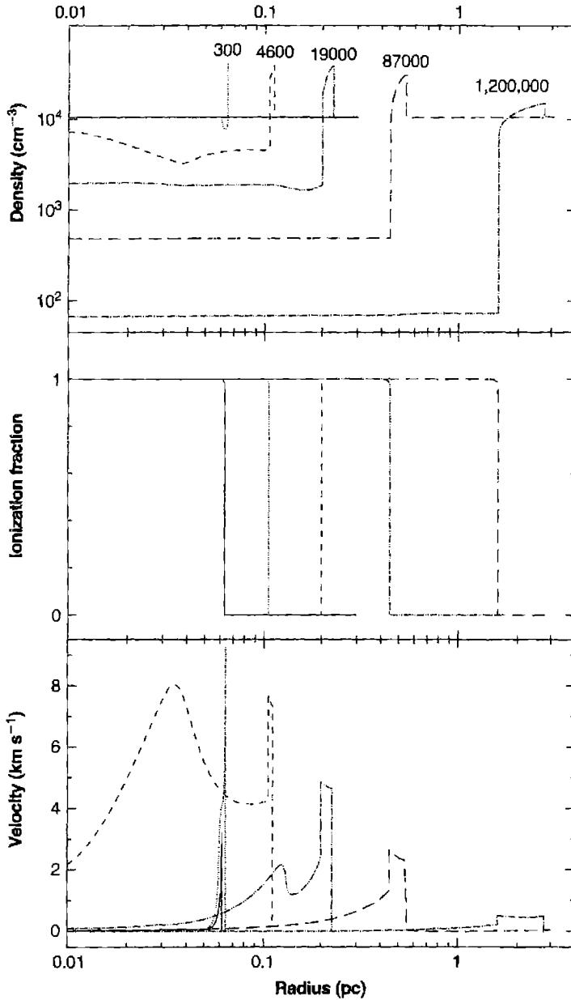
Let us consider the evolution of the H^+ region that would form if a hot star were instantaneously “turned on” in an infinite homogeneous H^0 cloud. Initially, very close to the star, \phi(H^0) is large and a (spherical) R -type ionization front moves into the neutral gas. Let us simplify greatly by omitting c_0 and expanding (6.37) for u_0 \ll c_1.
The results are
\frac{\rho_1}{\rho_0} = \begin{cases} \frac{u_0^2}{c_1^2} \left( 1 - \frac{c_1^2}{u_0^2} \right) \gg 1 \\ 1 + \frac{c_1^2}{u_0^2} \approx 1 \end{cases} \quad (6.40)
for the positive and negative signs, respectively, correct to the second order in c_1/u_0. These two cases are called strong and weak R -type fronts, respectively. The corresponding velocities from (6.30) are
u_1 = \begin{cases} \frac{c_1^2}{u_0} \ll c_1 \\ u_0 \left( 1 - \frac{c_1^2}{u_0^2} \right) \approx u_0 \gg c_1 \end{cases} \quad (6.41)
respectively. Thus in a strong R -type front, the velocity of the ionized gas behind the front is subsonic with respect to the front, and the density ratio is large; on the other hand, in a weak R -type front, the velocity of the ionized gas behind the front is supersonic, and the density ratio is close to unity. A strong R -type front cannot exist in nature, because disturbances in the ionized gas behind it continually catch up with it and weaken it; the initial growth of the H^+ region occurs as a weak R -type front runs out into the neutral gas, leaving the ionized gas behind it only slightly compressed and moving outward with subsonic velocity (in a reference system fixed in space):
u_0 - u_1 = c_1 \left( \frac{c_1}{u_0} \right) \ll c_1. \quad (6.42)
Though these analytic results only hold to the first order in c_1/u_0, and to zeroth order in c_0/c_1, the general description is valid so long as the ionization front remains weak R -type. Physically, an R -type front is one in which there are so many ionizing photons that the front moves very rapidly into the neutral gas ahead of it. Thus the pressure behind the front rises greatly, because of the heating and the ionization, but the density does not, because there is little time in which the gas may move. In Figure 6.1 the first three time steps that are drawn correspond to a weak R -type front. At the first plotted points (34 and 300 yr) the advancing ionization front is moving at roughly one-tenth of a percent of the speed of light.
However, as the ionization front runs out into the neutral gas, the ionizing flux \phi(H^0) decreases both because of geometrical dilution and because of recombinations and subsequent absorption of ionizing photons interior to the front. Thus, from
Equation (6.30), u_0 decreases and ultimately reaches u_R, and from this time onward the simple R -type front can no longer exist. In the figure this occurs between 300 yr and 4600 yr. At this point, \rho_1/\rho_0 = 2 and u_1 = c_1 (again to the zeroth order in c_0/c_1), the ionized gas behind the front moves just sonically with respect to the front. Here a shock front breaks off from the ionization front, and the now D -critical ionization front follows it into the precompressed neutral gas. Then the shock front gradually weakens (because of the geometrical divergence) and the ionization front continues as a strong D -type front, with a large density jump. Physically, the shock is compressed by the ram pressure of the ionized material streaming away from the ionization front toward the star. The shock front increases the density ahead of the ionization front, and therefore makes it move more slowly.
During the D phase the gas motions within the H II region become significant relative to the motion of the ionization front, and the gas is able to move towards achieving constant pressure. Throughout this evolution the ratio \delta P/P, where \delta P is the change in pressure across the H II region, decreases with a damping time of order the sound crossing time. This is the origin of the velocity structure that is present across the H II region at intermediate times (around the 46,000 yr point).
One interesting feature of an advancing ionization front is the high temperature near its leading edge. It results from the advection of neutral material into the ionized gas, as described by Equations (6.2) and (6.13). The presence of this additional component of neutral gas increases the local photoelectric heating rate above its equilibrium value. Cooling by radiation, chiefly emission-line photons, quickly reduces the electron temperature T to the equilibrium value. Since appreciable numbers only of neutral atoms and singly-ionized ions are present in the front, this process can strengthen their emission lines, especially [O II] \lambda 3727, [N II] \lambda \lambda 6548, 6583, and [O I] \lambda \lambda 6300, 6364. The thickness of the layer in which the electron temperature rises to its peak and then falls to the equilibrium temperature is the “cooling length”, the distance the ionization front travels during the cooling time scale mentioned above.
6.6 Magnetic Fields
Magnetic fields permeate the Galaxy and can affect the gas dynamics. Ions tend to follow magnetic field lines, and the field lines can be compressed or expanded by electromagnetic effects.
Two simple limits exist for interactions between an ionized gas and a magnetic field. These are determined by comparing the thermal energy density, E_{th} = nkT, with the magnetic energy density, E_B = B^2/8\pi. When E_{th} \gg E_B the gas is in control and field lines will follow the matter as it expands or contracts. The matter controls the field. For a spherical expansion the number of field lines per unit area at radius coordinate r is proportional to r^{-2} while the gas density is proportional to r^{-3}, so B \propto n^{2/3}. When E_{th} \ll E_B the magnetic field is in control and matter will flow along field lines. The field controls the matter.
In the discussion in Sections 6.1 and 6.2, shocks were treated as discontinuous transitions between two phases. The presence of a magnetic field can change the
structure of the shock. When magnetic fields and ions are present the gas can couple with the field and create a magnetohydrodynamical (MHD) wave (Alfvén waves are an example) which transmits disturbances over appreciable lengths. In many cases these MHD waves can move faster than the speed of sound in the gas so that a “magnetic precursor” precedes the shock. Gas can be compressed and accelerated by this precursor before the shock front arrives. As a result the effects of the shock can be spread over a greater distance and the shock jump will tend to be less sharp. The two types of magnetic shocks depend on the effects of the magnetic field. A J -type shock occurs when the fluid undergoes a discontinuous jump, as in the case with no magnetic field. This occurs when the shock is fast or B is small. A C -type shock is one where the magnetic precursor is strong enough to make all flow variables continuous. This occurs for slower shocks or strong B .
Various forms of MHD waves can occur, and in many cases their motions are supersonic relative to the gas. In a non-magnetized gas, supersonic turbulence is dissipated into heat quickly by the resulting shocks. In a magnetized ionized gas, if the gas is coupled to the magnetic field, then supersonic MHD wave motions result in coherent gas motions that do not produce heat. Such waves are said to be non-dissipative and can persist for some time. The presence of spectral lines with supersonic broadening is one possible indication of the presence of a magnetic field.
The general interstellar medium is in approximate energy equipartition between turbulent and magnetic energies. In equipartition the energy density in the magnetic field, B^2/8\pi, is equal to the kinetic energy in turbulence, \frac{1}{2}\rho u^2, where u is the velocity of the gas. In the local ISM B^2/8\pi \sim \frac{1}{2}\rho u^2 \sim 10^{-12} erg cm -3 . Although there are exceptions, and the details that establish energy equipartition are not well understood, approximate energy equipartition seems to be a general property of many systems.
6.7 Stellar Winds
Many “early type” stars (young hot stars of spectroscopic type O, B, and Wolf–Rayet) have spectral lines that show both emission and absorption components. This is also observed in older, lower-mass, planetary nebulae central stars and in some cooler stars, especially supergiants. The emission component is blue-shifted relative to the photospheric velocity showing that it arises in outflowing gas. These stars are losing mass and the outflowing stellar wind affects the surrounding nebula.
Winds are largely driven by the force of the outward flow of radiation past the stellar atmosphere. Each photon carries a momentum h\nu/c, so the total momentum passing a unit area a distance r from the center of a star of luminosity L will be p = L/4\pi r^2 c. If the gas is very highly ionized then electron scattering is the dominant opacity source. For photon energies that are small compared with the rest energy of the electron, h\nu \ll m_e c^2 \approx 0.5 MeV, the electron scattering cross section is given by the Thomson cross section
\sigma_T = \frac{8\pi}{3} \left( \frac{e^2}{m_e c^2} \right)^2 = 0.67 \times 10^{-24} \text{ [cm}^2\text{]} \quad (6.43)
which is independent of frequency. The total momentum an electron receives per unit time, due to scattering of the passing light, is given by \dot{p} = F_{out} = \sigma_T L / 4\pi r^2 c. The protons and electrons are coupled by strong electrostatic forces. In static equilibrium this outward force must be balanced by the inward pull of gravity on protons, GMm_H/r^2, where M is the stellar mass. This leads to the Eddington limit for stability against radiation pressure:
L_{Edd} = \frac{4\pi c GMm_H}{\sigma_T} \approx 3 \times 10^4 L_\odot \frac{M}{M_\odot}. \quad (6.44)
Stars more luminous than this must drive away their outer layers.
Equation (6.44) overestimates the luminosity needed to drive mass loss when other opacity sources are present. Typical photoelectric cross sections are \sim 10^6 larger than \sigma_T and line-center opacities are larger still. These make light more efficient at driving a wind than suggested by Equation (6.44) unless the gas is highly ionized.
The structure of a radiatively driven stellar wind can be computed using the dynamical equations described in Sections 6.1 and 6.2 coupled with the equations of statistical and thermal equilibrium described in previous chapters. The calculations are quite intricate but can be carried out using today's fast computers. They show that, as a rule of thumb, the terminal velocity of the wind is within a factor of a few times the escape velocity from the star. The latter is found by equating the kinetic energy in the wind (\rho u^2/2) with the potential energy at the surface (GM\rho/r). The result, u \sim (2GM/r)^{1/2}, is \sim 10^3 \text{ km s}^{-1} for many stars.
Stellar winds are studied by detailed analysis of the emission-absorption profiles seen in the stellar lines. Most lines are found in the vacuum ultraviolet so observations from space are important. Both the density and velocity of the wind can be determined and, by combining them, the mass loss rate, \dot{m} = 4\pi r^2 \rho u is derived. Typical values are given in Table 6.1. All this assumes spherical symmetry; in real stars rotation and magnetic fields may complicate the issue, as they do in the sun.
The rapidly moving stellar wind overtakes the surrounding, slow-moving, nebular material, and creates a shock. In the simplest case the outer regions of the stellar
| Star | Type | T_* (K) | R/R_\odot | L_*/L_\odot | \dot{m} (M_\odot/\text{yr}) | u (km s ^{-1}) |
|---|---|---|---|---|---|---|
| \theta^1 Ori C | O7p V | 4.5 \times 10^4 | 8 | 2.5 \times 10^5 | 4.0 \times 10^{-7} | 1000 |
| 9 Sgr | O4 V | 4.6 \times 10^4 | 16 | 1.0 \times 10^6 | 5.0 \times 10^{-6} | 2750 |
| \zeta Pup | O4 I | 4.2 \times 10^4 | 19 | 1.0 \times 10^6 | 5.0 \times 10^{-6} | 2485 |
| NGC 6210 | PN | 9.0 \times 10^4 | 0.29 | 5.0 \times 10^3 | 2.2 \times 10^{-9} | 2180 |
| NGC 6543 | PN | 6.0 \times 10^4 | 0.70 | 5.7 \times 10^3 | 4.0 \times 10^{-8} | 1900 |
| NGC 7009 | PN | 8.8 \times 10^4 | 0.45 | 1.1 \times 10^4 | 2.8 \times 10^{-9} | 2770 |
wind is in pressure equilibrium with the nebula. The density of the wind at the shock interface is
\rho_s = \frac{\dot{m}}{4\pi r^2 u} \text{ [gm cm}^{-3}\text{]}. \quad (6.45)
From the jump equations given in Sections 6.1 and 6.2, the shock temperature is
T_s = \frac{\rho u^2}{n 9k} \approx 0.6 m_H \frac{u^2}{9k} = 8 \times 10^6 \left( \frac{u}{1000 \text{ km/s}} \right)^2 \text{ [K]} \quad (6.46)
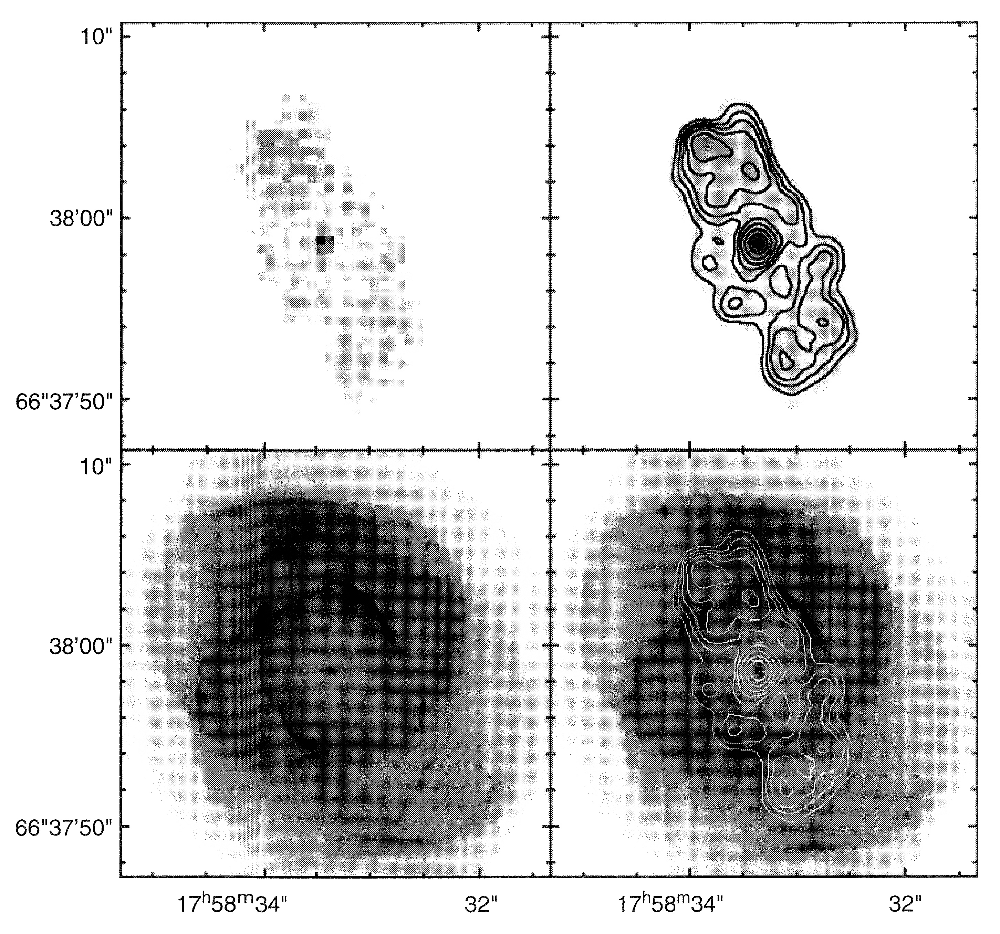
where a solar composition and full ionization of H and He are assumed. The resulting pressure is
P_s = \frac{\dot{m}m_{\text{H}}u}{36\pi r^2}. \quad (6.47)
This pressure is often sufficient to create a swept-up shell of nebular material that itself creates an outward-moving shock wave, but one that is much slower and cooler than the shock at the outer edge of the wind.
The wind often creates a bubble of hot gas surrounding the star. The temperature of the shock at the wind–nebular interface is so hot that it emits mainly X-rays, with little optical emission. Figure 6.2 shows an example—a planetary nebula with an optical image and X-ray isophotes drawn in. The wind has created a central region filled with hot gas detected in X-rays, with the optical emission coming from surrounding regions of the nebula.
The stellar wind can also interact with dense ionized flows that are embedded in the nebula. Figure 6.3 shows an HST image of central regions of the Orion Nebula.
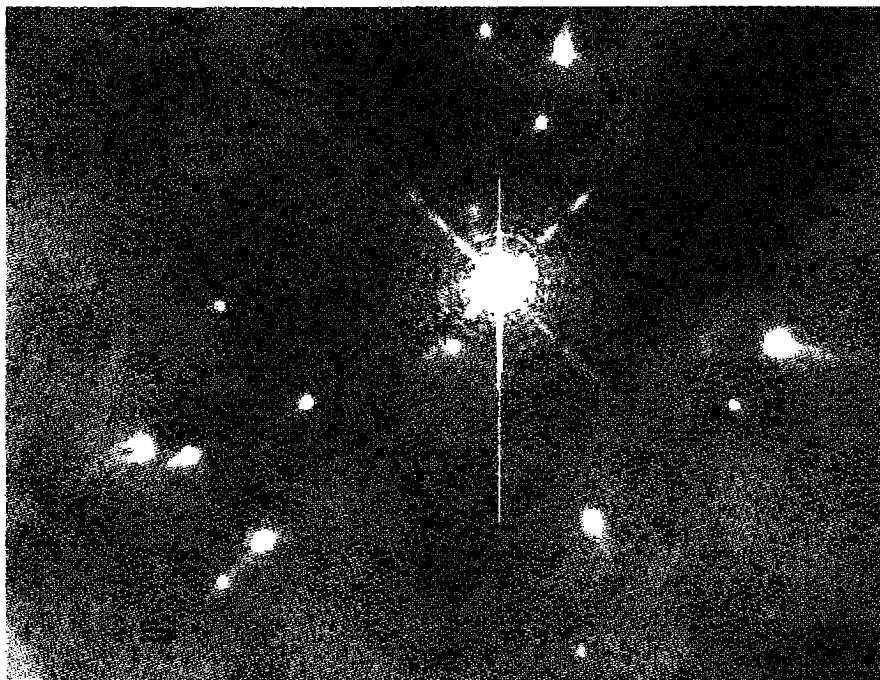
The bright condensations are “proplyds”, disks of molecular gas surrounding lower-mass stars in the Orion star cluster. The continuum from \theta^1 Ori C heats and dissociates the surfaces of these disks, forming a neutral flow that becomes ionized after it has expanded to a few disk radii, thus forming the bright comet-like structures seen in the image. Despite their swept-back appearance, which is caused by shadowing effects, the flow of ionized gas is actually towards \theta^1 Ori C. This flow then shocks against \theta^1 Ori C’s wind to form the faint arcs of emission that are seen in front of some of the proplyds.
References
The classification of ionization fronts and shock fronts was exhaustively discussed by
Kahn, F. D. 1954, BAN , 12, 187.
Axford, W. I. 1961, RSPTA , 253, 301.
The following books contain discussions of interstellar gas dynamics:
Dyson, J. E., & Williams, D. A., 1980 Physics of the Interstellar Medium , (Manchester: Manchester University Press).
Mihalas, D., & Weibel-Mihalas, B. 1999 Foundations of Radiation Hydrodynamics , (Mineola: Dover).
Shore, S. H. 1992 An Introduction to Astrophysical Hydrodynamics , (San Diego: Academic Press).
Shu, F. H. 1992 The Physics of Astrophysics, Vol. II, Gas Dynamics , (Mill Valley: University Science Books).
Zel’dovich, Y. B., & Raizer, Y. P. 2002 Physics of Shock Waves and High-Temperature Hydrodynamic Phenomena , (Mineola: Dover).
A meeting on gas dynamics held at Manchester in 1993, in honor of Franz Kahn, contains many review articles and was published as volume 216 of Astrophysics and Space Sciences , and as the book Kinematics and Dynamics of Diffuse Astrophysical Media , (Dordrecht: Kluwer).
The Saas-Fee Lecture Course 27, Computational Methods for Astrophysical Fluid Flow , (Springer: Berlin) has chapters by R. J. LeVeque, D. Mihalas, E. A. Dorfi, and E. Müller, and is a complete course in computational hydrodynamics.
The free expansion of a gas into a vacuum was first worked out by Bernhard Riemann (1826–1866).
Much of the material on dynamics of H II regions is summarized in
Mathews, W. G., & O’Dell, C. R. 1969, ARAA , 7, 67.
Figure 6.1 is from unpublished calculations by Dr. R. J. R. Williams.
An introduction to dynamics, which goes on to plasma effects and magnetic fields, is given by Choudhuri, A. R. The Physics of Fluids and Plasmas, an Introduction for Astrophysicists , (Cambridge: Cambridge University Press).
Detailed properties of MHD shocks are discussed by
Draine, B. T. 1980, ApJ , 241, 1021.
Hollenbach, D., & McKee, C. F. 1989, ApJ , 342, 306.
Shull, J. M., & Draine, B. T. 1987, in Interstellar Processes , eds. D. J. Hollenbach & H. A. Thronson, (Dordrecht: Reidel) p. 283.
A general introduction to the study of stellar winds is
Lamers, H. J. G. L. M., & Cassinelli, J. P. 1999, Introduction to Stellar Winds , (Cambridge: Cambridge University Press).
The following references give mass loss rates for a number of PN central stars:
Cerruti-Sola, M., & Perinotto, M. 1985, ApJ , 291, 237.
Perinotto, M. 1993, in Planetary Nebulae , IAU Symp 155, ed. R. Weinberger & A. Acker, (Dordrecht: Kluwer). (The PN central star parameters in Table 6.1 are taken from this reference.)
The mass loss rates from O stars is discussed in
Howarth, I. D. & Prinja, R. K. 1989, ApJS , 69, 527. (The O star parameters in Table 6.1 are from this reference.)
The interacting wind model for the formation of planetary nebulae is outlined by
Kwok, S., Putron, C. R., & Fitzgerald, P. M. 1978, ApJ , 219, L125.
The following discusses observations of X-ray emission from hot gas within planetary nebulae (Figure 6.2 is taken from it):
Chu, Y.-H., Guerrero, M. A., Gruendl, R. A., Williams, R. M., & Kaler, J. B. 2001, ApJ , 553, L69.
The effects of winds on H II regions were worked out by
Pikelner, S. B. 1968, Astrophys Lett , 2, 97.
Dyson, J. E., & de Vries, J. 1972, AA , 20, 223.
Weaver, R., McCray, R., Castor, J., Shapiro, P., & Moore, R. 1977, ApJ , 218, 377.
Capriotti, E. R., & Kozminski, J. F. 2001, PASP , 113, 677.
Garcia-Arredondo, F., Henney, W. J., & Arthur, S. J. 2001, ApJ , 561, 830.
The last gives a current numerical simulation of a stellar wind striking the flow from an embedded condensation in an H II region.
Figure 6.3 is based on Figure 1 from
O'Dell, C. R. 1998, AJ , 115, 263.
Chapter 7
Interstellar Dust
7.1 Introduction
The discussion in the first six chapters of this book has concentrated entirely on the gas within H II regions and planetary nebulae, and in fact these objects usually are called simply gaseous nebulae. However, they really contain dust particles in addition to the gas, and the effects of this dust on the properties of the nebulae are by no means negligible. Therefore, this chapter will discuss the evidence for the existence of dust in nebulae, its effects on physical conditions within the gas and the observational data concerning nebulae, and how the measurements can be corrected for these effects. The measurements of the radiation of both H II regions and planetary nebulae are then considered, and the dynamical effects that result from this dust are briefly discussed.
7.2 Interstellar Extinction
The most obvious effect of interstellar dust is its extinction of the light from distant stars and nebulae. This extinction in the ordinary optical region is largely due to scattering, but it is also partly due to absorption. (Nevertheless, the process is very often referred to as interstellar absorption.) It results in the reduction in the amount of light from a source shining through interstellar dust according to the equation
I_{\lambda} = I_{\lambda 0} \exp(-\tau_{\lambda}), \quad (7.1)
where I_{\lambda 0} is the intensity that would be received at the earth in the absence of interstellar extinction along the line of sight, I_{\lambda} is the intensity actually observed, and \tau_{\lambda} is the optical depth at the wavelength observed. This equation also applies to stars, in which we observe the total flux, with \pi F_{\lambda} substituted for I_{\lambda}. Note that the equation is correct when radiation is either absorbed or scattered out of the beam, but only if other radiation is not scattered into the beam. This is a good approximation for all stars and for nebulae that do not themselves contain interstellar dust, but it is incorrect if the dust is mixed with the gas in the nebula and scatters nebular light into the observed ray as well as out of it. (This point will be discussed in Section 7.3.) The interstellar extinction is thus specified by the values of \tau_{\lambda} along the ray to the star or nebula in question.
The interstellar extinction has been derived for many stars by spectrophotometric measurements of pairs of stars selected because they have identical spectral types. The ratio of their brightnesses,
\begin{aligned}\frac{\pi F_{\lambda}(1)}{\pi F_{\lambda}(2)} &= \frac{\pi F_{0\lambda}(1) \exp [-\tau_{\lambda}(1)]}{\pi F_{0\lambda}(2) \exp [-\tau_{\lambda}(2)]} \\ &= \frac{D_2^2}{D_1^2} \exp \left\{-[\tau_{\lambda}(1) - \tau_{\lambda}(2)]\right\}\end{aligned}\quad (7.2)
depends on the ratio of their distances D_2^2/D_1^2 and on the difference in the optical depths along the two rays. Interstellar extinction, of course, increases toward shorter wavelengths (in common terms, it reddens the light from a star), so by comparing a slightly reddened or nonreddened star with a reddened star, it is possible to determine \tau_{\lambda}(1) - \tau_{\lambda}(2) \approx \tau_{\lambda}(1), essentially the interstellar extinction along the path to the more reddened star. The logarithm of the ratio of the fluxes differs by an additive constant 2 \ln D_2/D_1 that is independent of wavelength. The constant is not determined, because it depends on the distance of the reddened star, which is generally not independently known. However, for any kind of interstellar dust, or indeed for any kind of particles, \tau_{\lambda} \rightarrow 0 as \lambda \rightarrow \infty, and it is thus possible to determine the constant approximately by making measurements at sufficiently long wavelengths.
Such measurements have been made over the years for many stars, and from them we have a fairly good idea of the interstellar extinction. Different determinations of the wavelength dependence of the extinction along most lines of sight through the diffuse interstellar medium are similar enough for it to be expressed as a reddening law,
\tau_{\lambda} = C f(\lambda), \quad (7.3)
where the constant factor C depends on the star, but the function f(\lambda) is approximately the same for most stars in the Galaxy. This result implies physically that, to this same first approximation, the optical properties of the dusts are similar in the observed region of interstellar space.
It can be seen from Equation (7.3) that the normalization of the function f(\lambda) that gives the form of the wavelength dependence of the interstellar extinction is arbitrary. The normalization we have adopted, H\beta, is convenient for nebular work in the optical. Then, working with logarithms, it is often convenient to write
\begin{aligned}\frac{I_{\lambda}}{I_{H\beta}} &= \frac{I_{\lambda 0}}{I_{H\beta 0}} 10^{-0.434(\tau_{\lambda} - \tau_{H\beta})} \\ &= \frac{I_{\lambda 0}}{I_{H\beta 0}} 10^{-c[f(\lambda) - f(H\beta)]}\end{aligned}\quad (7.4)
and to use c = 0.434C as a measure of the amount of extinction. Of course any normalization line can be chosen, but a hydrogen recombination line is usually best.
Much of the observational data on interstellar extinction comes from the study of stars and is presented as the number of magnitudes of extinction, A_{\lambda_1} = 2.5 \log(I_{\lambda_1}/I_{\lambda_1,0}). Combining this definition with Equation (7.4), it follows that the c and A are related by A_{\lambda_1} = -2.5cf(\lambda_1). It is difficult to measure A_{\lambda_1} directly, but the selective extinction, the difference in the extinction between two wavelengths, can be determined by comparing a star's expected and observed colors. This is often given as the color excess E(B - V) = A_B - A_V, the difference in A_{\lambda} at the central wavelengths of the B and V filters (\sim 4400 \text{ \AA} and 5500 \text{ \AA}, respectively). The relationship between E(B - V) and c depends on the form of the extinction curve; for the "standard" reddening law (labeled R = 3.1) E(B - V) \approx 0.77c.
Both c and E(B - V) depend on the grain properties (size and composition) and the column density of material along the line of sight. The ratio of total to selective extinction, R = A_V/E(B - V), compares the extinction and reddening properties of grains and is sensitive only to the grain composition, size, and shape. R \approx 3.1 is typical in the diffuse interstellar medium, although there is a range, with the material along the line of sight to the Orion Nebula having R \approx 5.5.
The extinction per unit column density of hydrogen, A_V/N(\text{H}), depends on the grain properties, but also on the dust-to-gas ratio, since it expresses the extinction by dust in terms of the number of gas (hydrogen) atoms. Typical values are A_V/N(\text{H}) \approx 5.3 \times 10^{-22} \text{ mag cm}^2.
Figure 7.1 and Table 7.1 give three reddening curves. The R = 3.1 is the standard reddening curve within the Galaxy, the R = 5.5 curve is observed towards the Orion Nebula, and the curve marked SMC is seen in the Small Magellanic Cloud. Notice that the extinction is plotted in terms of reciprocal wavelength (proportional to frequency) because it is nearly linear in this variable. Notice also that the extrapolation to \lambda \rightarrow \infty establishes the zero point for the extinction and is heavily dependent on the measurements furthest in the infrared.
The detailed forms of these curves are sensitive to both the grain composition and their size. The broad bump centered near 4.6 \text{ } \mu\text{m}^{-1} or 2175 \text{ \AA} is thought to be due to graphite or other particles rich in carbon, such as hydrogenated amorphous carbon particles. Other features (too small to be seen on this scale) occur in the infrared and show that silicate-rich compounds and ices must be present. The differences in the overall extinction curves show that dust particles of at least two and more probably three or more compositions are responsible for the extinction. One may be graphite. An "astronomical silicate" with olivine [(\text{Mg}, \text{Fe})_2 \text{SiO}_4] particles in various proportions must be present to account for infrared features. These particular compositions are indicated, or at least favored by other considerations as described below.
The range of grain sizes also affects the form of the curves. Particles with sizes much longer than the wavelength of light produce gray extinction--the same at all wavelengths. Very small particles behave in the Rayleigh scattering limit, with extinction proportional to \lambda^{-4}. The fact that observed extinction is roughly proportional to \lambda^{-1} shows that a range of grain sizes must be present. Regions like Orion, with a large- R extinction law, have a grain size distribution that is weighted to
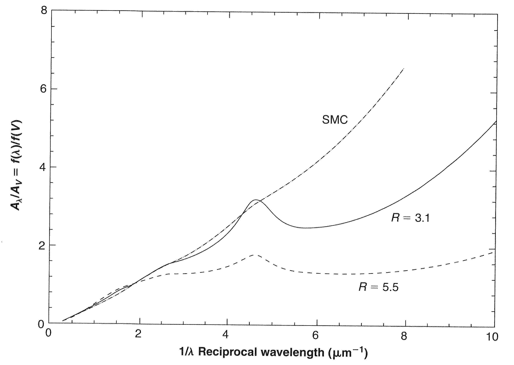
Three characteristic extinction curves. The standard R = 3.1 curve is typical of the diffuse interstellar medium while the R = 5.5 curve is observed along the line of sight to Orion. The extinction within the Small Magellanic Cloud (SMC) is also shown.
larger than average sizes, or perhaps deficient in smaller grains. The SMC extinction may be due to a preponderance of very small particles.
Interstellar extinction naturally makes the observed ratio of intensities, I_{\lambda_1}/I_{\lambda_2}, of two nebular emission lines differ from their ratio as emitted in the nebula, I_{\lambda_1 0}/I_{\lambda_2 0}:
\frac{I_{\lambda_1}}{I_{\lambda_2}} = \frac{I_{\lambda_1 0}}{I_{\lambda_2 0}} \exp \left[ -(\tau_{\lambda_1} - \tau_{\lambda_2}) \right]. \quad (7.5)
The observational data must be corrected for this effect before they can be discussed physically. As a first approximation, the interstellar extinction can ordinarily be assumed to have the average form so this can also be written
\frac{I_{\lambda_1}}{I_{\lambda_2}} = \frac{I_{\lambda_1 0}}{I_{\lambda_2 0}} \exp \left\{ -C \left[ f(\lambda_1) - f(\lambda_2) \right] \right\}. \quad (7.6)
Note that only the difference in optical depths at the two wavelengths enters this equation, so the correction depends on the form of the interstellar extinction curve and
| \lambda(\text{\AA}) | 1/\lambda(\mu\text{m}^{-1}) | f(\lambda) | ||
|---|---|---|---|---|
| R = 3.1 | R = 5.5 | SMC | ||
| \infty | 0.0 | 0 | 0 | 0 |
| 33,333 | 0.30 | 0.058 | 0.069 | 0.064 |
| 20,000 | 0.50 | 0.132 | 0.157 | 0.170 |
| P \alpha | 0.533 | 0.147 | 0.174 | 0.188 |
| 12,500 | 0.80 | 0.282 | 0.334 | 0.334 |
| 10,000 | 1.00 | 0.404 | 0.478 | 0.446 |
| 8333 | 1.20 | 0.552 | 0.639 | 0.561 |
| 7143 | 1.40 | 0.728 | 0.784 | 0.679 |
| H \alpha | 1.524 | 0.818 | 0.858 | 0.753 |
| 6250 | 1.60 | 0.866 | 0.898 | 0.799 |
| 5555 | 1.80 | 0.987 | 0.991 | 0.923 |
| 5000 | 2.00 | 1.122 | 1.076 | 1.049 |
| H \beta | 2.057 | 1.164 | 1.099 | 1.085 |
| 4545 | 2.20 | 1.271 | 1.156 | 1.178 |
| H \gamma | 2.304 | 1.346 | 1.194 | 1.246 |
| 4167 | 2.40 | 1.409 | 1.226 | 1.310 |
| 3846 | 2.60 | 1.509 | 1.276 | 1.446 |
| 3571 | 2.80 | 1.575 | 1.301 | 1.584 |
| 3333 | 3.00 | 1.643 | 1.304 | 1.726 |
| 2941 | 3.40 | 1.851 | 1.316 | 2.020 |
| Mg II | 3.574 | 1.949 | 1.341 | 2.152 |
| 2631 | 3.80 | 2.113 | 1.390 | 2.327 |
| 2381 | 4.20 | 2.601 | 1.571 | 2.649 |
| 2273 | 4.40 | 2.953 | 1.713 | 2.816 |
| 2083 | 4.80 | 3.091 | 1.718 | 3.161 |
| C III] | 5.238 | 2.630 | 1.456 | 3.559 |
| 1818 | 5.50 | 2.529 | 1.388 | 3.806 |
| 1667 | 6.00 | 2.522 | 1.337 | 4.299 |
| C IV | 6.456 | 2.606 | 1.323 | 4.775 |
| 1538 | 6.50 | 2.617 | 1.323 | 4.822 |
| 1429 | 7.00 | 2.780 | 1.329 | 5.376 |
| 1250 | 8.00 | 3.337 | 1.413 | 6.586 |
| L \alpha | 8.223 | 3.503 | 1.448 | 6.875 |
on the amount of extinction, but not on the more uncertain extrapolation to infinite wavelength. To find the amount of correction, the principle is to use the measured ratio of strengths of two lines for which the relative intensities, as emitted in the nebula, are known independently; thus in Equation (7.4) only \tau_{\lambda_1} - \tau_{\lambda_2}, or equivalently in
Equation (7.6) only C, is unknown and can be determined. Once C is known, the average reddening curve (which is listed in Table 7.1) gives the optical depths at all wavelengths.
The ideal line ratio to determine the amount of extinction would be one that is completely independent of physical conditions and that is easy to measure in all nebulae. Such an ideal pair of lines does not exist in nature, but various approximations to it do exist and can be used to get a good estimate of the interstellar extinction of a nebula.
The best lines would be a pair with the same upper level, whose intensity ratio would therefore depend only on the ratio of their transition probabilities. An observable case close to this ideal is [S II], in which {^4S}-{^2P} \lambda\lambda 4069, 4076 may be compared with {^2D}-{^2P} \lambda\lambda 10287, 10320, 10336, 10370. Here both multiplets arise from a doublet upper term rather than from a single level, and the relative populations in the two levels depend slightly on electron density, so the calculated ratio of intensities of the entire multiplets varies between the limits 0.55 > I({^2D}-{^2P})/I({^4S}-{^2P}) \geq 0.51 over the range of densities 0 \leq n_e \leq 10^7 \text{ cm}^{-3}. Although this [S II] ratio has been used to determine the interstellar extinction in a few galaxies with emission lines, the planetary nebula NGC 7027 and the Crab Nebula supernova remnant, NGC 1952, the lines involved are all relatively weak, and in addition the measurement of I({^2D}-{^2P}) is difficult because of contamination due to infrared OH atmospheric emission lines, and also because the sensitivities of CCDs and other infrared detectors are relatively low and dropping rapidly near \lambda 1.03 \mu\text{m}.
A somewhat easier observational method for determining the amount of interstellar extinction of a nebula is to compare an H I Paschen line with a Balmer line from the same upper set of levels. For example, it is possible to compare P\delta \lambda 10049 with H\epsilon \lambda 3970, both of which arise from the excited terms with principal quantum number n = 7. Since several different upper terms are involved— 7^2S, 7^2P, and 7^2F —the relative strengths depend slightly on excitation conditions, but as Table 4.4 shows, the variation in Paschen-to-Balmer ratios is quite small over the whole range of temperatures expected in gaseous nebulae. This Paschen-to-Balmer ratio method is, in principle, excellent, but it has the same problems as the [S II] method of contamination by infrared night-sky emission, plus the relative insensitivity of photomultipliers and of CCDs at wavelengths longward of 1 \mu\text{m}. A similar ratio, which spans the optical and vacuum ultraviolet, can be formed from the He II \lambda 4686/\lambda 1640 ratio.
Hence the method most frequently used in practice to determine the interstellar extinction is to measure the ratios of two or more H I Balmer lines—for instance, H\alpha/H\beta and H\beta/H\gamma. Though the upper levels are not the same for the two lines, the relative insensitivity of the line ratios to temperature, shown in Table 4.2, means that the interstellar extinction can be determined with relatively high precision even though the temperature is only roughly estimated. The Balmer lines are strong and occur in the part of the spectrum that is ordinarily observed, so this method is, at the present time, the one used by far most often. The fact that different pairs of Balmer lines (usually H\alpha/H\beta and H\beta/H\gamma) give the same result tends to confirm observationally the recombination theory outlined in Chapter 4.
Nebulae are observed to differ greatly in the amount of extinction; for instance, c \approx 0.02 for NGC 6853, while the most heavily reddened planetary nebula for which optical observations have been published to date is probably NGC 6369 with c \approx 2.3.
Naturally, the nebulae with the strongest interstellar extinction are too faint to observe in the optical region, though they can be measured in the infrared and radio-frequency region. This suggests still another way to measure the amount of interstellar extinction—namely, to compare the intensity of the radio-frequency continuum at a frequency at which the nebula itself is optically thin to an optical H I recombination line. This is the same principle as that used in comparing two optical lines, except that one of the lines is effectively at infinite wavelength in this method. The intrinsic ratio of intensities, j_\nu/j_{H\beta}, can be calculated explicitly for any assumed temperature using Equations (4.22) and (4.30) and Table 4.4. It depends on the ratio n_+(Z^2)/n_p, because the free-free emission contains contributions from all ions, but since n_{\text{He}}/n_{\text{H}} \approx 0.10 and the abundances of all the other elements are smaller, this quantity,
\frac{n_+(Z^2)}{n_p} \approx 1 + \frac{n(\text{He}^+)}{n_p} + 4 \frac{n(\text{He}^{++})}{n_p}, \quad (7.7)
is rather well determined. The temperature dependence of j_\nu/j_{H\beta} is low, approximately as T^{1/3}, but nevertheless, considerably more rapid than an optical recombination-line ratio such as \text{H}\alpha/\text{H}\beta. Table 7.2 shows a selection of values of c determined for several planetaries from the most accurate optical and radio measurements. The probable error of each method is approximately 0.1 in c, and it can be seen that the methods agree fairly well for these accurately measured planetaries. The theory behind these determinations is quite straightforward, and the expected uncertainty because of the range T in nebulae is relatively small, so this method, in principle, provides a good absolute determination of the interstellar extinction at the
| Nebula | c | |
|---|---|---|
| (Balmer-line method) | (Radio-frequency-H \beta method) | |
| NGC 650/1 | 0.14 | 0.15 |
| NGC 6572 | 0.37 | 0.41 |
| NGC 6720 | 0.16 | 0.12 |
| NGC 6803 | 0.56 | 0.73 |
| NGC 6853 | 0.00 | 0.02 |
| NGC 7009 | 0.14 | 0.17 |
| NGC 7027 | 1.21 | 1.50 |
| IC 418 | 0.26 | 0.32 |
measured optical wavelength; that is, it should determine the extrapolation \lambda \rightarrow \infty of the interstellar extinction curve quite accurately.
7.3 Dust within H II Regions
Dust is certainly present within H II regions, as can clearly be seen on direct photographs and images. Many nebulae show “absorption” features that cut down the nebular emission and starlight from beyond the nebula. Very dense small features of this kind are often called globules, while others at the edges of nebulae are known as elephant-trunk or comet-tail structures. Examples are shown in Figures 7.2 and
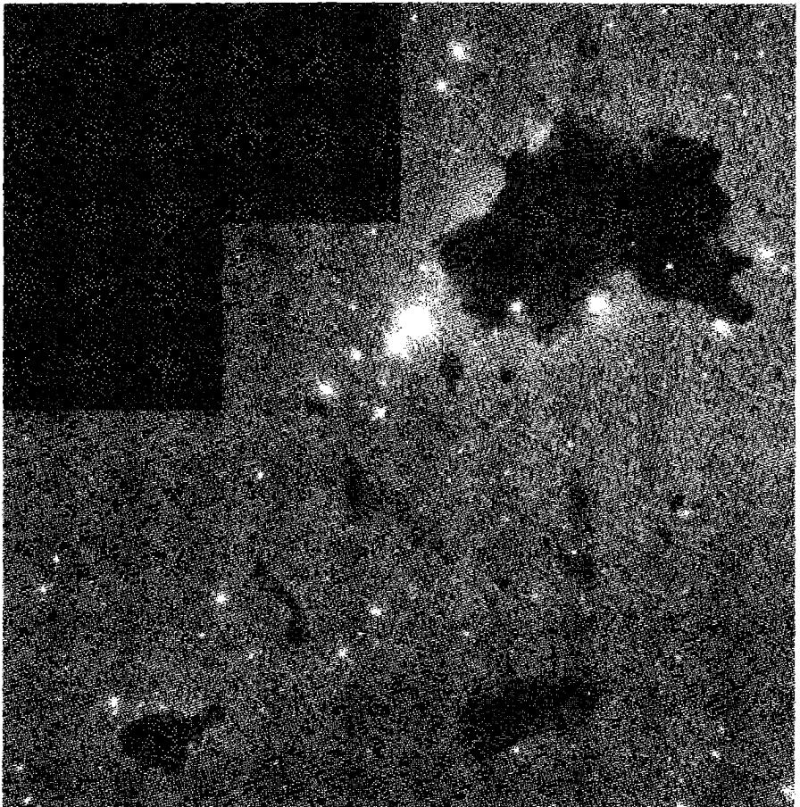
7.3, respectively. Many of these absorption features appear to be almost completely dark; this indicates not only that they have a large optical depth at the wavelength of observation (perhaps \tau \geq 4 if the surface brightness observed in the globule is a small percentage of that observed just outside it), but also that they are on the near side of the nebula, so that very little nebular emission arises between the globule and the observer. A few large absorption features that are not so close to the near side of the nebula can be seen on images; they are features in which the surface brightness is smaller than in the surrounding nebula, but not zero. There must be many more absorption structures with smaller optical depths, or located deeper in the nebula, that are not noticed on ordinary photographs. It is difficult to study these absorption features quantitatively, except to estimate their optical depths, from which the
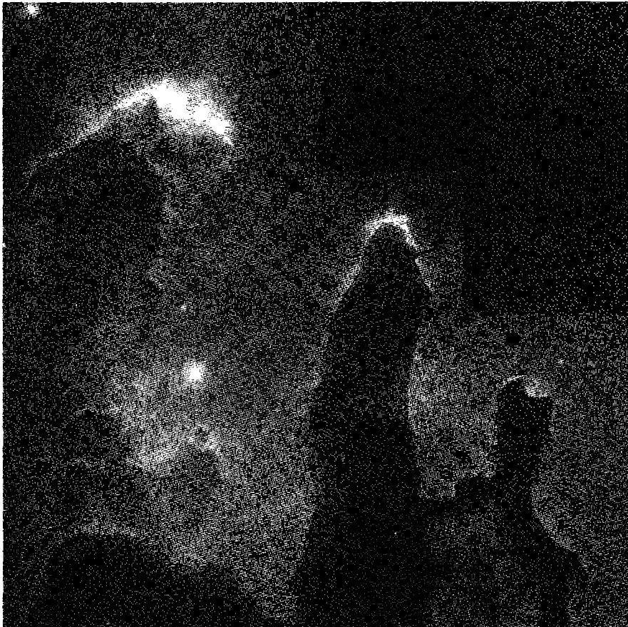
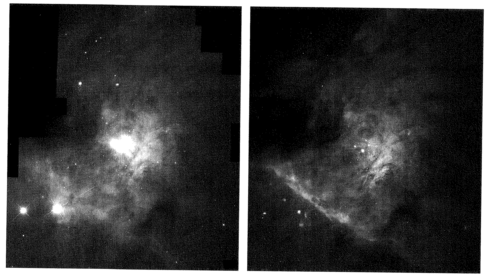
amount of dust can be estimated if its optical properties are known. If, in addition, the gas-to-dust ratio is known, the total mass in the structure can be estimated. We shall return to a consideration of these questions after examining the scattered-light observations of the dust.
The dust particles scatter the continuous radiation of the stars immersed in nebulae, resulting in an observable nebular continuum. Measurements of this continuum must be made with sufficient spectral resolution to avoid the strong nebular-line radiation, and images taken in the continuum, such as Figure 7.4 (left), also require filters that avoid strong nebular lines. Measurements of an H I recombination line such as H\beta are made at the same time, and from the intensity of that line the expected nebular atomic continuum caused by bound-free and free-free emission can then be calculated using the results of Section 4.3. The atomic contribution is subtracted from the observed continuum, and the remainder, which is considerably larger than the atomic continuum in most observed nebulae, must represent the dust-scattered continuum. This conclusion is directly confirmed by the observation of the He II \lambda 4686 absorption line in the continuous spectrum of one nebula, NGC 1976. This line cannot arise in absorption in the nebular gas, but is present in the spectra of the O star in the nebula.
Generally, the observational data cannot be interpreted in a completely straightforward and unique way because of the difficulties caused by complicated (and unknown) geometry and spatial structure of real nebulae. The amount of scattered light depends strongly upon these factors. To indicate the principles involved, let us treat
the very simplified problem of a spherical, homogeneous nebula illuminated by a single central star. Writing L_\nu for the luminosity of the star per unit frequency interval, and further supposing that the nebula is optically thin, the flux of starlight within the nebula at a point distance r from the star is given by
\pi F_\nu = \frac{L_\nu}{4\pi r^2}. \quad (7.8)
If n_D is the number of dust particles per unit volume in the nebula and C_\lambda is their average extinction cross section at the wavelength \lambda corresponding to the frequency \nu, then the extinction cross section per unit volume is n_D C_\lambda, and the emission coefficient per unit volume per unit solid angle due to scattering is
j_\nu = \frac{a_\lambda n_D C_\lambda \pi F_\nu}{4\pi} = \frac{a_\lambda n_D C_\lambda L_\nu}{16\pi^2 r^2}, \quad (7.9)
where a_\lambda is the albedo, the fraction of the radiation removed from the flux that is scattered, while 1 - a_\lambda is the fraction that is absorbed. Note that in this equation the scattering has been assumed to be spherically symmetric. The intensity of the scattered continuum radiation is then
\begin{aligned} I_\nu(b) &= \int j_\nu ds \\ &= \frac{a_\lambda n_D C_\lambda L_\nu}{8\pi^2} \cdot \frac{1}{b} \cos^{-1} \frac{b}{r_0} \end{aligned} \quad (7.10)
for a ray with a minimum distance b from the central star in a spherical homogeneous nebula of radius r_0.
This may be compared with the H\beta surface brightness observed from the same nebula, which may, however, be assumed to have a possibly different Strömgen radius r_1 limiting the ionized gas,
\begin{aligned} I_{H\beta}(b) &= \int j_{H\beta} ds \\ &= \frac{1}{4\pi} n_p n_e \alpha_{H\beta}^{eff} h\nu_{H\beta} 2\sqrt{r_1^2 - b^2} \end{aligned} \quad (7.11)
In Figure 7.5, these two surface-brightness distributions are compared with observational data for NGC 6514, the most nearly symmetric H II region illuminated by a single dominant central star for which measurements are available. It can be seen
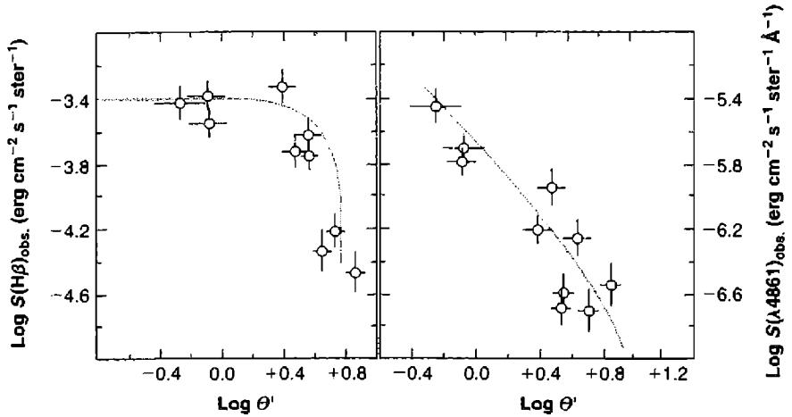
that the model is a reasonable representation of this nebula. Then, dividing (7.10) and (7.11), the ratio of surface brightness in H\beta to surface brightness is
\frac{I_{H\beta}(b)}{I_{\nu}(b)} = \left[ \frac{n_p n_e \alpha_{H\beta}^{eff} h \nu_{H\beta}}{a_{\lambda} n_D C_{\lambda}} \right] \left( \frac{4\pi D^2}{L_{\nu}} \right) \left( \frac{r_0 r_1}{D^2} \right) \left[ \frac{(b/r_0) \sqrt{1 - (b/r_0)^2}}{\cos^{-1}(b/r_0)} \right] \quad (7.12)
In Equation (7.12) we have inserted D, the distance from the nebula to the observer, and it can be seen that the first factor in square brackets involves atomic properties and properties of the dust, the second factor is the reciprocal of the flux from the star observed at the earth, the third factor is the product of the angular radii of the nebula in the continuum (r_0/D) and in H\beta (r_1/D), and the fourth factor gives the angular dependence of the surface brightnesses, expressed in dimensionless ratios. Thus the first factor can be determined from measurements of surface brightnesses and of the flux from the star, to the accuracy with which the model fits the data. If the electron density is determined either from the H\beta surface-brightness measurements themselves or from [O III] or [S II] line-ratio measurements, the ratio n_p/a_{\lambda} n_D C_{\lambda}, proportional to the ratio of densities of gas to dust, is determined; note that this quantity is proportional to the reciprocal of the poorly known electron density. A list of ratios found in this way from continuum observations of several H II regions is given in Table 7.3. For NGC 1976, a model in which the average electron density
| Nebula | Assumed n_e (\text{cm}^{-3}) | n_p/a_\lambda n_D C_{\lambda 4861} (\text{cm}^{-2}) |
|---|---|---|
| NGC 1976 (inner) | model | 1.4 \times 10^{22} |
| NGC 1976 (outer) | model | 5 \times 10^{20} |
| NGC 6514 | 130 | 4 \times 10^{20} |
| NGC 6523 | 44 | 2 \times 10^{21} |
| NGC 6611 | 55 | 2 \times 10^{21} |
| Field | --- | 2 \times 10^{21} |
decreases outward, with a range from n_e \approx 2 \times 10^3 \text{ cm}^{-3} in the inner part to n_e \approx 2 \times 10 \text{ cm}^{-3} in the outer part, was used.
The scattering of stellar continuous radiation within the nebula shows that the emission-line radiation emitted by the gas must also be scattered. In fact, observations show that much of the line radiation observed in the faint outer parts of NGC 1976 actually consists of scattered photons that were originally emitted in the bright central parts of the nebula. If the albedo of the dust were a_\lambda = 1 at all wavelengths, this scattering would not affect the total emission-line flux from the whole nebula, because every photon generated within it would escape, although the scattering would transfer the apparent source of photons within the nebula. In reality, of course, a_\lambda < 1 (although it is relatively high), and some emission-line photons are destroyed by dust within the nebula. Therefore, the procedure for correcting observed nebular emission line intensities for interstellar extinction described in Section 7.2 is not completely correct, because it is based on stellar measurements, in which radiation scattered by dust along the line of sight does not reach the observer. However, numerical calculations of model nebulae using the best available information on the properties of dust show that corrections determined in the way described are approximately correct and give very nearly the right relative emission line intensities. The reason is that the wavelength dependence of the extinction, however it occurs, is relatively smooth, so the observational procedure, which basically consists of adopting an amount of extinction that correctly fits the observational data to theoretically known relative line strengths near both ends of the observed wavelength range, cannot be too far off anywhere within that range. Naturally, the longer the range of wavelengths over which these corrections are applied, the larger the error may be.
Finally, let us estimate the amount of dust within a globule with radius 0.05 pc that appears quite opaque, so that it has an optical depth \tau_{\text{H}\beta} \geq 4 along its diameter. Many actual examples with similar properties are known to exist in observed H II regions. Supposing that the dust in the globule has the same properties as the dust in the ionized part of the nebula, we easily see that n_D \geq 2 \times 10^{-8} \text{ cm}^{-3}. Further
supposing that the gas-to-dust ratio is the same, we find n_{\text{H}} \geq 2 \times 10^4 \text{ cm}^{-3}. Thus the observed extinction indicates quite high gas densities in globules of this type.
7.4 Infrared Thermal Emission
Dust is also observed in H II regions by its infrared thermal emission. Absorption and emission in the earth's atmosphere become increasingly important at longer wavelengths, but there are "windows" in which observations can be made from the ground out to just beyond \lambda \approx 20 \mu\text{m}. Most of the still longer wavelength measurements have been made from airplanes, though a few were made at mountain-top observatories through partial windows out to 350 \mu\text{m}. Most recently spaced-based observatories have made the entire infrared spectral regime accessible. In the infrared, subtraction of the sky emission is always very important, and this is accomplished by switching the observing beam back and forth rapidly between the "object" being measured and the nearby "blank sky." This scheme is highly effective for measurements of stars and other objects of small angular size, but it is clear that nebulae with angular sizes comparable with or larger than the angular separation of the object and reference beams are not detected by this method. Most of the early observations were taken with broadband filters, but more recent higher-resolution measurements have shown spectral features in the infrared radiation from dust. All the observations immediately show that in H II regions the infrared radiation is far greater than the free-free and bound-free continuous radiation predicted from the observed H \beta and radio-frequency intensities.
Let us first examine the available observational data on NGC 1976, the best studied H II region. Figure 7.6 compares an image in \text{H}\alpha + [\text{N II}] with a continuum image near 38 \mu\text{m}. There are several infrared "point" sources in this nebula, at least one of which (the "Becklin-Neugebauer object") evidently is a highly luminous, heavily reddened star. It is in the dense molecular cloud, well behind the ionized nebula, seen within it only in projection. In addition, two extended peaks of intensity are measured at 10 \mu\text{m} and 20 \mu\text{m}, one centered approximately on the Trapezium (nearest the stars \theta^1 Ori C and D), and the other centered approximately on the Becklin-Neugebauer object about 1' northwest of the Trapezium. Both these peaks, (the first is known as the Ney-Allen nebula, the second, as the Kleinmann-Low nebula), have angular sizes of order 30'' to 1', and are only the brightest and smallest regions of a larger complex of infrared emission. At much longer wavelengths such as 100 \mu\text{m} and 350 \mu\text{m}, the Kleinmann-Low nebula remains a bright feature, while the Ney-Allen nebula is scarcely distinguishable from the background approximately 2' east or west.
The measured nebular infrared continuous radiation, of order 10^2 to 10^3 as large as the expected free-free and bound-free continua, can only arise by radiation from dust. To a first crude approximation, the dust emits a dilute blackbody spectrum, so measurements at two wavelengths approximately determine its temperature. For instance, in the infrared Ney-Allen nebula, the "color temperature" determined from the measured fluxes at 11.6 \mu\text{m} and 20 \mu\text{m} in this way is T_c \approx 220 \text{ K}; this must
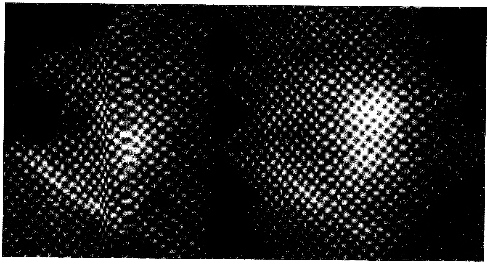
approximately represent the temperature of dust particles. They are heated to this temperature by the absorption of ultraviolet and optical radiation from the Trapezium stars, and possibly also from the nearby nebular gas that is ionized by these same stars. Likewise, the dust observed as the Kleinmann-Low nebula is heated by absorption of shorter wavelength radiation emitted by or ultimately due to the Becklin-Neugebauer star within it. However, the measured intensity of the Ney-Allen nebula at 11.6 \mu\text{m} is only about 10^{-3} B_{\nu}(T_c); this indicates that it has an effective optical depth of only about \tau_{11.6\mu\text{m}} \approx 10^{-3}. These infrared measurements are the basis for the picture of NGC 1976 as an ionized region at the edge of a giant dust cloud described in Chapter 9. The Kleinmann-Low nebula is a dense region within the cloud but near its ionized surface.
Furthermore, the description and calculations of blackbody spectra are somewhat simplified, for measurements with better frequency resolution show that the continuous spectrum does not accurately fit I_{\nu} = \text{const} B_{\nu}(T), for any T, or even a range of T 's, but rather has a relatively sharp peak at \lambda \approx 10 \mu\text{m}, similar to the sharp peak observed in the infrared emission of many cool stars, such as the M2 Ia supergiant \mu Cep. A more accurate wavelength of the peak is 9.8 \mu\text{m}, and the full-width at half-maximum is about 2.5 \mu\text{m}. This feature is attributed to silicate particles, which have a band near this position.
Somewhat narrower features are also observed in NGC 1976, other H II regions including NGC 6523, and several planetary nebulae, at \lambda\lambda 3.28, 3.4, 6.2, 7.7, 8.6, and 11.3 \mu\text{m}. They are too broad to be emission lines of ions, and are most probably the result of infrared fluorescence from vibrationally excited, polycyclic aromatic
hydrocarbon (PAH) molecules, consisting of 20–50 atoms, such as C_{24}H_{12}, or more generally, hydrogenated amorphous carbon particles. These large molecules or small particles are excited by ultraviolet and optical radiation, and then decay to excited vibrational levels which emit photons in the 3.28 \mu\text{m} and other bands as they decay to the ground level. The resulting emission is not at any equilibrium temperature, but rather is due to the temperature spike that immediately follows absorption of the photon, and the subsequent cooling that continues until the arrival of the next photon. This “quantum heating” is important for any small particle with small heat capacity, whose temperature is affected by a single photon.
Though the most complete observational data is available for NGC 1976, similar results, though not so detailed, are available for NGC 6523, in which the Hourglass region is a local peak of infrared nebular emission, and for several other H II regions with such infrared peaks. These peaks are clearly regions of high dust density close to high-luminosity stars, which radiate the energy that is absorbed and reradiated by the solid particles.
One interesting result originally obtained from measurements of a wide band in the far infrared (\lambda \approx 400 \mu\text{m}, the band is actually approximately 45\text{--}750 \mu\text{m}) is that the measured infrared flux is roughly proportional to the measured radio-frequency flux, as shown in Figure 7.7. Since the radio-frequency flux from a nebula is proportional to the number of recombinations within the nebula, this means that the infrared emission is also roughly proportional to the number of recombinations—that is, to the number of ionizations, or the number of ionizing photons absorbed in the nebula. A plausible interpretation might be that since every ionization by a stellar photon in an optically thick nebula leads ultimately to a recombination and the emission of an L\alpha photon, or of two photons in the 2^2S \rightarrow 1^2S continuum, as explained in Chapters 2 and 4; and since the L\alpha photons are scattered many times by resonance scattering before they can escape, then perhaps every L\alpha photon is absorbed by dust in the nebula and its energy is re-emitted as infrared radiation. According to this interpretation, the ratio of total infrared flux to radio-frequency flux would be
\frac{j_{IR}}{j_\nu} = \frac{n_p n_e (\alpha_B - \alpha_{2^2S}^{eff}) h\nu_{L\alpha}}{4\pi j_\nu} \quad (7.13)
where the radio frequency emission coefficient j_\nu is given by Equations (4.22) and (4.30), \alpha_B, \alpha_{2^2S}^{eff}, and j_\nu depend only weakly on T, and their ratio depends on it even more weakly; j_{IR} and j_\nu have the same density dependence, so this ratio is quite well determined.
For the radio frequency used in Figure 7.7, \nu = 1.54 \times 10^{10} Hz, and a representative T = 7500 K, the calculated ratio from Equation (7.13) is j_{IR}/j_\nu = 1.3 \times 10^{15} Hz, but the line drawn through the data corresponds to j_{IR}/j_\nu = 7.5 \times 10^{15} Hz, approximately five times greater. The conclusion is that the infrared emission is larger than can be accounted for by absorption of L\alpha alone; in addition to L\alpha, some of the stellar radiation with \nu < \nu_0 and probably also some of the ionizing radiation with \nu \geq \nu_0 must be absorbed by the dust. Clearly some of the ionizing photons are destroyed in
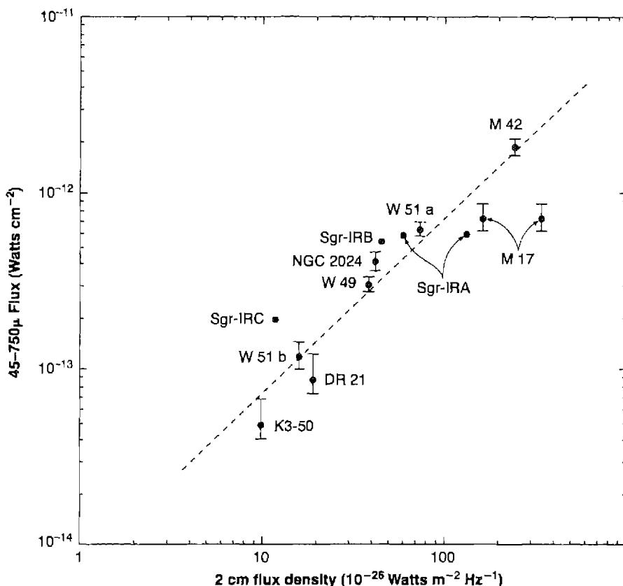
this way, and the Zanstra method of determining the effective temperature of the ionizing stars must therefore be corrected for this effect. Detailed calculations of model nebulae, taking the absorption and scattering by dust particles into account, have been carried out. The main uncertainties are in the composition and optical properties of the solid particles.
Though the optical continuum measurements had shown dust to be present in H II regions, there was little earlier evidence of dust in planetary nebulae before the infrared observations were made. However, these measurements revealed that in many planetaries there is a continuum that is from 10 to 100 times stronger in the 5–18 \mu\text{m} region than the extrapolated free-free and bound-free continua. Observations at longer wavelengths out to 100 \mu\text{m} show that the infrared continua of most planetaries
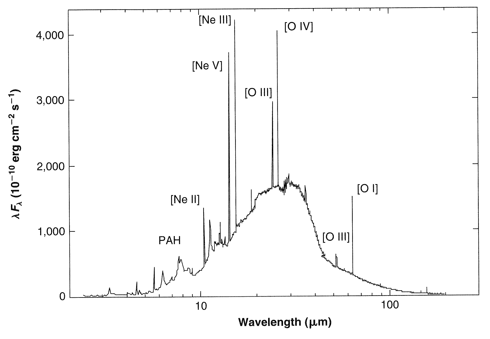
peak at about 30 \mu\text{m}, suggesting T_d \sim 100 K. NGC 7027, the planetary nebula in which the infrared continuum was first discovered, is still the brightest throughout this spectral region. Its spectrum is shown in Figure 7.8. The broad continuum is largely due to broad-band thermal emission by larger dust grains, while more narrow features due to PAHs are prominent at shorter wavelengths.
7.5 Formation and Destruction of Dust Particles
The observational data obtained from the nebular-scattered optical continuum and thermal infrared continuum show that dust particles exist in H II regions and planetary nebulae. At least in H II regions, their optical properties, and the ratio of amounts of dust to gas, are approximately the same as in the general interstellar medium. Three questions then naturally arise: How are the dust particles initially formed? How long do they survive? How are they ultimately destroyed? Much research effort has been expended on these questions, with results that are summarized here.
First let us examine the formation of dust particles. All theoretical and experimental investigations indicate that though dust particles, once formed, can grow by accretion of individual atoms from the interstellar gas, they cannot initially form by atomic collisions at even the highest densities in gaseous nebulae. Thus in plane-
tary nebulae, gaseous shells undoubtedly ejected by their central stars, the dust must have been present in the atmosphere of the star or must have formed during the earliest stages of the process, at the high densities that occurred close to the star. Infrared measurements show that many cool giant and supergiant stars have dust shells around them, observational evidence that this process does occur. Very probably the original dust particles in H II regions were formed in the same way.
The outer layers of cool stars can be cool, dense (compared with nebulae), and predominantly molecular. \text{H}_2 and CO are the most common molecules since they are composed of abundant species and have relatively large dissociation energies. If the abundance of oxygen is greater than carbon in the outer layers of the star, as is true in the solar system, then nearly all carbon will go into CO, leaving free oxygen to form other molecules. These molecules eventually form the silicate grains. Graphite is formed by similar processes but in regions where the abundance of carbon is greater than oxygen.
Grains can be destroyed by a variety of processes. Dust particles in a nebula are immersed in a harsh environment containing both ionized gas, with T \approx 10,000 K, and high-energy photons. Sputtering is the process in which collisions of ions with a dust particle knock atoms or molecules out of its surface. This can be important if the gas is quite hot, but is inefficient at nebular temperatures. High-energy photons can be absorbed and cause the ejection of photoelectrons. If this process is efficient enough the potential due to the positive charge can exceed the binding energy of the grain, leading to its disruption. Finally, if a grain becomes hot enough (50–100 K for ices, and T_g \geq 1,000 K for graphite or an astronomical silicate), outer layers will evaporate and the grain is destroyed by sublimation. Observations show that elements like Al and Ca, which are mostly found within grains in the interstellar medium, are also strongly depleted from the gas phase in nebulae, suggesting that these processes do not destroy a significant fraction of the grains over the lifetimes of these objects.
Grains are destroyed by passing shock waves. A variety of processes, including grain–grain collisions and sputtering, occur near the shock front and cause larger grains to be fragmented into smaller ones with a range of sizes. This process probably establishes the observed distribution of sizes. The observed variation in the ratio of total to selective extinction is partly due to different regions having different histories of shock passage and so a different ratio of small to large grains.
7.6 Grain Opacities
The discussion so far has been based on observationally determined grain extinction. A great deal of laboratory and theoretical work has gone into reproducing the observed extinction curves with physical models. This begins with laboratory measurements of the index of refraction of materials that are thought to be present. A grain shape, usually spherical, is assumed, and extinction properties derived from scattering theory. Finally a distribution function giving the number of grains as a function of their size is derived to fit the observational data. The result is a theoretical extinction curve that may match observations.
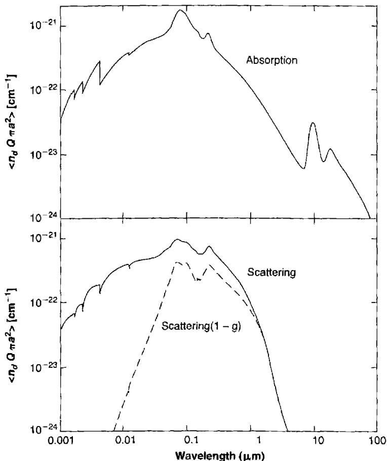
The results of such a calculation, which reproduce ISM extinction, are shown in Figure 7.9. For a grain of radius a the extinction coefficient is related to the grain diameter by \kappa_\lambda(a) = n_D C_\lambda = Q_\lambda(a) \pi a^2 n_D, where \pi a^2 n_D is the total projected grain area per unit volume. The extinction efficiency Q_\lambda(a) is a dimensionless number that incorporates the physics of the interactions between a photon and the grain; in the limit where the grain is much larger than the wavelength of light, a \gg \lambda; Q_\lambda(a) \approx 1, while when a \ll \lambda; Q_\lambda \propto \lambda^{-\beta}, where \beta is between 1 and 2, depending on the composition of the grain. The total extinction at a wavelength \lambda is an average over the grain size distribution, which we write as \langle Q_\lambda \pi a^2 n_D \rangle.
The theory separates absorption of a photon, where the photon's energy is absorbed by the grain and converted into internal heat, and scattering, where a photon is merely deflected from its path. Stellar extinction observations measure the sum of these two. The upper panel of Figure 7.9 shows \langle Q_{abs,\lambda} \pi a^2 n_D \rangle for the absorption component. The absorption curve peaks near the ionization threshold of hydrogen. A comparison of the absorption coefficient shown in the figure with the cross section for photoionization of hydrogen shows that, for ISM grains, grains are more likely to absorb ionizing radiation than hydrogen when the neutral fraction of hydrogen is less than n(\text{H}^0)/n(\text{H}) \leq 3 \times 10^{-4}. The features thought to be due to the graphite (\lambda \sim 2200 \text{ \AA}) and silicate (\lambda \sim 10, 20 \mu\text{m}) components are prominent in the figure. At very high energies the absorption is simply the total photoelectric opacity of the atoms within the grain.
The lower panel in Figure 7.9 shows the scattering cross section. Calculations of the ionization structure of model nebulae discount forward scattering, in which the path of a photon is only slightly altered. The grain asymmetry factor g accounts for this fraction. The product \langle Q_{scat,\lambda} (1 - g) \pi a^2 n_D \rangle discounts this forward scattering and is also plotted in Figure 7.9. It is clear that grains have a small albedo (are strongly absorbing) at long wavelengths. The albedo is roughly 0.5 through the ultraviolet and optical. Finally, at ionizing energies, the grains are again strongly absorbing when forward scattering is discounted.
7.7 Effects of Grains on Surrounding Gas
With theoretically computed cross sections like those given above, grains can be included as part of any model nebula. As we shall see, grains seem to be about as important as helium in their effects on the ionization and temperature structure of a nebula. Grains absorb some of the ionizing continuum and their photoionization can heat the gas.
First of all, let us consider the electrical charge on a dust grain in a nebula. This charge results from the competition between photoejection of electrons from the solid particle by the ultraviolet photons absorbed by the grain (which tends to make the charge more positive) and captures of positive ions and electrons from the nebular gas (which tend to make the charge more positive and negative, respectively). Typical grain materials have work functions, the solid state equivalent of the ionization potential, between 4 and 10 eV. It is straightforward to write the equilibrium equation for the charge on a grain. The rate of increase of the charge Ze due to photoejection of electrons can be written
\left( \frac{dZ}{dt} \right)_{pe} = \pi a^2 \int_{\nu_K}^{\infty} \frac{4\pi J_\nu}{h\nu} Q_{abs} \phi_\nu d\nu, \quad (7.14)
where \phi_\nu is the photodetachment probability (0 \leq \phi_\nu \leq 1) for a photon that strikes the geometrical cross section of the particle. If the dust particle is electrically neutral or has a negative charge, the effective threshold \nu_K = \nu_c, the threshold of the material; but
if the particle is positively charged, the lowest energy photoelectrons cannot escape, so in general, the threshold is
\nu_K = \begin{cases} \nu_c + \frac{Ze^2}{ah} & Z > 0 \\ \nu_c & Z \leq 0 \end{cases} [\text{Hz}], \quad (7.15)
where -Ze^2/a is the potential energy of an electron at the surface of the particle and h is Planck's constant. The rate of increase of the charge due to capture of electrons is
\left(\frac{dZ}{dt}\right)_{ce} = -\pi a^2 n_e \sqrt{\frac{8kT}{\pi m}} \xi_e Y_e, \quad (7.16)
where \xi_e is the electron-sticking probability (0 < \xi_e < 1), and the factor due to the attraction or repulsion of the charge on the particle is
Y_e = \begin{cases} 1 + \frac{Ze^2}{akT} & Z > 0 \\ \exp(Ze^2/akT) & Z \leq 0 \end{cases}. \quad (7.17)
The rate of increase of the charge caused by capture of protons is, completely analogously,
\left(\frac{dZ}{dt}\right)_{cp} = \pi a^2 n_p \sqrt{\frac{8kT}{\pi m_h}} \xi_p Y_p, \quad (7.18)
with
Y_p = \begin{cases} e^{-Ze^2/akT} & Z > 0 \\ 1 - \frac{Ze^2}{akT} & Z \leq 0 \end{cases} \quad (7.19)
Thus the charge on a particle can be found from the solution of the equation
\frac{dZ}{dt} = \left(\frac{dZ}{dt}\right)_{pe} + \left(\frac{dZ}{dt}\right)_{ce} + \left(\frac{dZ}{dt}\right)_{cp} = 0, \quad (7.20)
in which the area of the particle cancels out, but the dependence on a through the surface potential remains. Equation (7.20) can be solved numerically for any model nebula for which the density and the radiation field are known. For any apparently reasonable values of the parameters, the general result is that, in the inner part of an ionized nebula, photoejection dominates and the particles are positively charged; while in the outer parts, where the ultraviolet flux is smaller, photoejection is not important and the particles are negatively charged because more electrons, with their higher thermal velocities, strike the particle.
A similar calculation determines the grain temperature. Heating processes include absorption of the local radiation field and collisions with gas. The radiation field is usually most important and the heating rate is given by an equation analogous
to Equation (7.14). All of the energy of absorbed photons with \nu < \nu_K heat the grain, while some of the energy of more energetic photons goes into the photoelectron, with much going into heating the grain. Cooling is predominantly due to emission of the observed infrared continuum. The rate is given by Kirchhoff's law, j_\nu(T) = \kappa_\nu B_\nu(T), where B_\nu(T) is Planck's function. The total cooling due to a spherical grain of radius a is
4\pi J = n_D \pi a^2 \int_0^\infty Q_{abs} 4\pi B_\nu(T_d) d\nu. \quad (7.21)
This mainly occurs in the infrared, where \lambda \gg a, so Q_{abs} \propto \lambda^{-1}. As a result,
T_D \propto \left( \frac{L}{4\pi r^2 a} \right)^{1/5}, \quad (7.22)
and for a representative particle with a = 3.0 \times 10^{-5} cm, T_D \approx 100 K at r = 3 pc from the star.
Figure 7.10 shows the potential and temperature of ISM grains within the simple H II region model presented in Figure 2.3. The calculation stops at the hydrogen ionization front, which occurs at a smaller depth than the dust-free case due to dust absorption of the Lyman continuum. The left panel shows the grain potential, Ze^2/a. The grain ionization potential is this potential plus the work function. The ionizing radiation field creates a positive charge and potential near the central star, and grain photoionization accounts for \sim 30\% of the total heating in these regions. Smaller grains have a larger potential in part due to their smaller radius, while

graphite is more highly charged than the silicates due to the larger cross section at higher energies. In outer regions of the nebula the radiation field is extinguished and grains recombine more rapidly than they are ionized, creating a negative charge and potential.
The right panel of the figure shows the temperatures of various grains. The temperature is not strongly affected by the grain composition but the grain size is important. Small grains are systematically hotter than large grains because Q_{abs} is smaller and they cool less efficiently in the infrared. As expected, grains are hotter near the star. The total predicted emission is the integral of Equation (7.21) across the face of the nebula and is strongly weighted to warmer regions due to the temperature dependence of the Planck function. The total emission can only be fitted very approximately by a single temperature.
The sublimation temperatures of ices are T_v \approx 20 K for \text{CH}_4, T_v \approx 60 K for \text{NH}_3, and T_v \approx 100 K for \text{H}_2\text{O}, suggesting that \text{CH}_4 cannot be held by dust particles anywhere in the nebula, that \text{NH}_3 vaporizes except in the outer parts, and that \text{H}_2\text{O} evaporates only in the innermost parts. On the other hand graphite, silicate, and silicon carbide particles have much higher evaporation temperatures (T_v \approx 10^3 K) and are not appreciably affected.
Most of the previous discussion has assumed, for simplicity, that grains are spherical. Observations show that light scattered by, or transmitted through, interstellar grains is polarized. This requires that grains be both non-spherical and somewhat aligned with the galactic magnetic field, which has a typical strength of \sim 5 \mu\text{G}. It is thought that grains are composed of paramagnetic materials, those which interact with magnetic fields. A combination of gas-grain collisions and the recoil caused by emitter or absorbed photons cause the grain to spin. An interaction between the galactic magnetic field and the spinning grain helps align it with the field. Observations of polarization can yield information on the geometry and strength of the galactic magnetic field.
7.8 Dynamical Effects of Dust in Nebulae
Dust particles in a nebula are subjected to radiation pressure from the central star. However, the coupling between the dust and gas is very strong, so the dust particles do not move through the gas to any appreciable extent, but rather transmit the central repulsive force of radiation pressure to the entire nebula. Let us look at this a little more quantitatively. The radiation force on a dust particle of radius a is
\begin{aligned} F_{rad} &= \pi a^2 \int_0^\infty \frac{\pi F_\nu}{c} Q_\nu d\nu \\ &= \pi a^2 \int_0^\infty \frac{L_\nu}{4\pi r^2 c} Q_\nu d\nu \approx \frac{a^2 L}{4r^2 c} \end{aligned} \quad (7.23)
The Q that enters this equation is Q_{abs} + Q_{scat} (1 - g). Since most of the radiation from the hot stars in the nebula has \lambda \ll a, Q_\nu \approx 1. Note, however, that this is not
true for very small particles or for very cool stars. Notice also that only the radiation force of the central star has been taken into account; the diffuse radiation field is more nearly isotropic and can, to a first approximation, be neglected in considering the motion due to radiation pressure. The force tends to accelerate the particle through the gas, but its velocity is limited by the drag on the particle produced by its interaction with the nebular gas. If the particle is electrically neutral, this drag results from direct collisions of the ions with the grain, and the resulting force is
F_{\text{coll}} = \frac{4}{3} n_p \pi a^2 \left( \frac{8kTm_H}{\pi} \right)^{1/2} w, \quad (7.24)
where w is the velocity of the particle relative to the gas, assumed to be small in comparison with the mean thermal velocity. Thus the particle is accelerated until the two forces are equal, and reaches a thermal velocity
w_t = \frac{3L}{16\pi r^2 c n_p} \left( \frac{\pi}{8kTm_H} \right)^{1/2} \quad (7.25)
which is independent of the particle size. As an example, for a particle at a distance of 3.3 pc from the O star we have been considering, w_t = 10 \text{ km s}^{-1}, and the time required for a relative motion of 1 pc with respect to the surrounding gas is about 10^5 \text{ yr}.
However, for charged particles, the Coulomb force increases the interaction between the positive ions and the particle significantly, and the drag on a charged particle has an additional term,
F_{\text{coul}} \approx \frac{2n_p Z^2 m_H}{T^{3/2}} w \quad (7.26)
with T expressed in K. Comparison of Equation (7.26) with Equation (7.24) shows that Coulomb effects dominate if |Z| \geq 50, and since, in most regions of the nebula, the particles have a charge greater than this, the terminal velocity is even smaller and the motion of the particle with respect to the gas is smaller yet. Typical values in the calculation shown in Figure 7.10 are under 1 \text{ km s}^{-1}. Under these conditions the dust particles are essentially frozen to the gas, the radiation pressure on the particles is communicated to the nebular material, and the equation of motion therefore contains an extra term on the right-hand side, so that Equation (6.3) becomes
\rho \frac{Du}{Dt} = -\nabla P - \rho \nabla \phi + n_D \frac{a^2 L}{4r^2 c} \mathbf{e}_r \quad (7.27)
where \mathbf{e}_r is the unit vector in the radius direction. Substitution of typical values, including the observationally determined gas-to-dust ratio, shows that the accelerations produced can be appreciable, and the radiation-pressure effects should therefore be taken into account in the calculation of a model of an evolving H II
region. An approximate calculation of this type has shown that, with reasonable amounts of dust, old nebulae will tend to develop a central “hole” that has been swept clear of gas by the radiation pressure transmitted through the dust. An example of a real nebula to which this model may apply is NGC 2244, shown in Figure 7.11. Likewise radiation pressure or dust is probably important in the early stages of formation of planetary nebulae from red giant stars, as further discussed in Chapter 10.
The observational data clearly show that dust does exist in nebulae, but unfortunately its optical and physical properties are still not accurately known. The specific calculations that have been carried out to date must be considered schematic and indicative rather than definitive. Astronomical measurements over the entire spectrum from ultraviolet to infrared, combined with laboratory data and physical theory ap-
plicable to small, cold, very “impure” particles, may be expected to lead to further progress.
References
A good text describing grains is
Whittet, D. C. B. 2003, Dust in the Galactic Environment , Series in Astronomy & Astrophysics, (Philadelphia: IOP).
and a recent review of the topic is
Draine, B. T. 2003, ARA&A , 41, 241.
Interstellar extinction is a subject with a long history, most of which is not directly related to the study of gaseous nebulae. Several useful summaries of the available data are
Cardelli, J. A., Clayton, G. C., & Mathis, J. S. 1989, ApJ , 345, 245.
Gordon, K. D., & Clayton, G. C. 1998, ApJ , 500, 816.
Fitzpatrick, E. L. 1999, PASP , 111, 63.
The extinction curves of Figure 7.1 and Table 7.1 are taken from these references.
A list of nebular line ratios that may in principle be used for extinction determinations is given by
Draine, B. T., & Bahcall, J. N. 1981, ApJ , 250, 579.
The Paschen/Balmer and Balmer-line ratio methods are described parenthetically in many references chiefly devoted to observational data on planetary nebulae, for instance,
Miller, J. S. & Mathews, W. G. 1972, ApJ , 172, 593.
This paper contains accurate measurements of NGC 7027, and shows that calculated Balmer-line and Balmer-continuum ratios, modified by interstellar extinction, agree accurately with the measurements.
The He II \lambda 4686 / \lambda 1640 ratio and its use as a reddening indicator is described by the following reference:
Seaton, M. J. 1978, MNRAS , 185, 5p.
The Balmer radio-frequency method of determining the extinction is discussed, for instance, in
Cahn, J. H. 1976, AJ , 81, 407.
The results of Table 7.2 are taken from this reference. The following uses high spatial resolution radio and optical observations to create detailed maps of the extinction in NGC 1976:
O'Dell, C. R., & Yusef-Zadeh, F. 2000, AJ , 120, 382.
The presence of a nebular continuum in diffuse nebulae, resulting from dust scattering of stellar radiation, is an old concept. The fact that it is the dominant contributor to the observed continuum was first quantitatively proved by
Wurm, K., & Rosino, L. 1956, Mittedungen Hamburg Sternwarte Bergedorf 10, Nr. 103.
They compared photographs of NGC 1976 taken with narrow-band filters, which isolated individual spectral lines with photos of a region in the continuum free of emission lines (similar
to Figure 7.4, left), and showed that the appearance of the nebula in the continuum is different from its appearance in any spectral lines, and that the continuum cannot have an atomic origin and therefore (by implication) must arise from dust. The He II \lambda 4686 absorption line in the continuum of NGC 1976 was observed by
Peimbert, M., & Goldsmith, D. W. 1972, A&A , 19, 398.
Quantitative measurements of the continuum surface brightnesses in several nebulae, and comparisons with H \beta surface brightnesses, were made by
O'Dell, C. R., & Hubbard, W. B. 1965, ApJ , 142, 591.
O'Dell, C. R., Hubbard, W. B., & Peimbert, M. 1966, ApJ , 143, 743.
Mathis, J. S. 1972, ApJ , 176, 651.
Lynds, B. T., Canzian, B. J., & O'Neil, E. J. 1985, ApJ , 288, 164.
The analysis given in the text is based on the second of these references. (Figure 7.5 and Table 7.3 are taken from it.)
Figure 7.6 is from
Stacey, G. J., Gull, G. E., Hayward, T. L., Latvakoski, H., & Peng, L. 1995, in Proceedings of the Airborne Astronomy Symposium on the Galactic Ecosystem: From Gas to Stars to Dust , eds. M. R. Haas, J. A. Davidson, & E. F. Erickson, (San Francisco: ASP), 215.
The extinction and optical properties of interstellar dust are summarized in
Weingartner, J. C., & Draine, B. T. 2001, ApJ , 548, 296.
The effect of nebular scattering on the correction of measured line-intensity ratios for extinction is discussed by
Mathis, J. S. 1983, ApJ , 267, 119.
Caplan, J., & Deharveng, L. 1986, A&A , 155, 297.
Henney, W. J. 1998, ApJ , 503, 760.
Globules were named and discussed by
Bok, B. J., & Reilly, E. F. 1947, ApJ , 105, 255.
Results from the ISO mission, a space-based infrared observatory are presented in the following two conference proceedings. They include observations of H II regions and planetary nebulae:
Proceedings of the Second ISO Workshop on Analytical Spectroscopy: ISO beyond the peaks , 2000, eds. A. Salama, M. F. Kessler, K. Leech, & B. Schulz, ESA Publication SP-456, Noordwijk.
The Universe as Seen by ISO , 1999, eds. P. Cox & M. F. Kessler, ESA Publication SP-427, Noordwijk.
Dust-to-gas ratios in a large sample of planetary nebulae are derived in the following reference, which concludes that grains are not destroyed over the nebula's lifetime:
Stasinska, G., & Szczerba, R. 1999, A&A , 352, 297.
Destruction of grains in shock waves is described by these two papers:
Draine, B. T. 1995, ApSS , 233, 111.
Jones, A. P., Tielens, A. G. G. M., & Hollenbach, D. J. 1996, ApJ , 469, 740.
The rough proportionality of the wide-band infrared fluxes of H II regions to their free-free radio-frequency fluxes was discovered by
Harper, D. A., & Low, F. J. 1971, ApJ , 165, L9.
Figure 7.7 is taken from this reference.
The ISO spectrum of NGC 7027 is described by
Kwok, S., 2002, Proceedings of the 3rd Joint Meeting of Chinese Physicists Worldwide , eds. N. P. Chang, et al., World Scientific, p. 264.
The data used to create Figure 7.8 are taken from this reference. Another complete ISO spectrum, of the planetary nebula NGC 6302, is given by
Molster, F. J., et al. 2001, A&A , 372, 165.
Theoretical treatments of the effects of dust within a nebula on the ionizing, continuum, and line photons, and the consequent infrared emission are contained in
Baldwin, J., Ferland, G. J., Martin, P. G., Corbin, M., Cota, S., Peterson, B. M., & Slettebak, A. 1991, ApJ , 374, 580.
Stasinska, G., Szczerba, R. 2001, A&A , 379, 1024.
van Hoof, P. A. M., Weingartner, J. C., Martin, P. G., Volk, K., & Ferland, G. J. 2004, MNRAS 350, 1130 (astro-ph/0402381).
Dopita, M. A., Groves, B. A., Sutherland, R. S., Binette, L., & Cecil, G., 2002, ApJ , 572, 753.
Figure 7.8 is computed using methods described in the third reference.
Problems of survival of dust particles in ionized nebulae are reviewed by
Spitzer, L. 1978, Physical Processes in the Interstellar Medium , (New York: Wiley), Chap. 9.
Draine, B. T. 1979, ApJ , 230, 106.
Draine, B. T., & Salpeter, E. E. 1979, ApJ , 231, 77.
Draine, B. T., & Salpeter, E. E. 1979, ApJ , 231, 438.
Draine B. T., 1990, in Evolution of Interstellar Dust and Related Topics , eds. A. Bonetti, J. M. Greenberg, & S. Aiello, Proceedings of the International School of Physics “Enrico Fermi” Course, North Holland, Amsterdam, New York, p. 103.
The theory of grain alignment is described in
Lazarian, A. 2003, J. Quant. Spectrosc. Radiat. Transfer , 79–80, 881.
Emission from PAHs is discussed in the following papers:
Guhathakurta, P., & Draine, B. T. 1989, ApJ , 345, 230.
Draine, B. T., & Li, A. 2001, ApJ , 551, 807.
The model expanding nebula (taking radiation pressure into account), which ultimately develops a central cavity, was calculated by
Mathews, W. G. 1967, ApJ , 147, 965.
Chapter 8
Infrared Radiation and Molecules
8.1 Introduction
Many images of nebulae taken in visible light have been shown in previous chapters. Their light comes from gas with temperatures near 10^4 K. The photoionization calculations discussed in Chapter 2 were terminated where the hydrogen ionization front was reached, since beyond it the gas temperature would fall to a value too small to produce appreciable optical emission. In visible light, the nebula appears to have an outer boundary at the ionization front.
A nebula whose outer boundary occurs at the outer edge of the gas is called matter-bounded. In contrast, a radiation-bounded nebula is one in which the hydrogen ionization front defines the outer boundary as seen in visible light. Gas does exist beyond the visible edge, but this gas is so cool that it emits mainly infrared radiation. This was the situation in most of the hydrodynamical models discussed in Chapter 6, and it probably occurs in many observed H II regions and planetary nebulae. In regions just outside the hydrogen ionization front the gas is largely atomic and emits the far-infrared fine-structure lines discussed in Chapter 5, most notably [O I] \lambda 63 \mu\text{m} and [C II] \lambda 158 \mu\text{m}. Gas even further from the ionization front is almost completely shielded and may become quite cold, and also molecular rather than atomic.
The transition region between the fully ionized and fully molecular zones is known as the PDR, standing for either “photodissociation region” or “photon-dominated region”. These names indicate that molecules are dissociated by the radiation field that filters through the H II region, mainly photons with energy less than h\nu_0. This transition region is discussed in this chapter.
8.2 The Structure of a PDR
A simple model of an H II region ionized by an O star was described in Chapter 2 (Table 2.2 and Figure 2.3), and this model was made more realistic by including dust in Chapter 7 (Figure 7.10). Figure 8.1 shows the continuum and lines predicted to be transmitted through the hydrogen ionization front for this model. The radiation at shorter wavelengths is mainly due to the transmitted stellar continuum plus diffuse
emission from the \text{H}^+ region superimposed. The latter is mainly free–bound emission (producing the prominent edges), free–free emission (over the entire range), and two-photon emission (see Figure 4.1). The broad peak of emission centered near \sim 100 \mu\text{m} is produced by warm dust within the \text{H}^+ zone. The physical properties of gas within the PDR are determined by interactions between gas and this radiation field.
Let us consider a simple model of a PDR, chosen to have parameters similar to those in the PDR between the Orion H II region and the molecular cloud behind it. We will assume the composition and grain properties observed in Orion (see Figure 7.1), begin the calculation within the H II region, and follow it out into the neutral gas.
The radiation field striking the PDR must be specified. Very few hydrogen-ionizing photons penetrate into the neutral gas, so Q(\text{H}^0) is not a useful parameter. One possible convention is to specify the intensity (into 4\pi sr) integrated over the portion of the Balmer continuum which is capable of photoionizing grains, typically over the energy range 6.0 eV to 13.6 eV. Although the field could be specified in physical units, the convention we shall use is to specify it relative to the mean galactic radiation field in the solar neighborhood integrated between these limits, 1.6 \times 10^{-3}
\text{erg s}^{-1} \text{cm}^{-2}. With these definitions, the radiation field striking the PDR is given as the dimensionless ratio
G_0 = \int_{6 \text{ eV}}^{13.6 \text{ eV}} 4\pi J_\nu d\nu / 1.6 \times 10^{-3} \text{ erg s}^{-1} \text{cm}^{-2} \quad (8.1)
The best observational evidence indicates that G_0 \approx 4 \times 10^5 in inner regions of the Orion Nebula, confirming the presence of a population of newly-formed hot stars.
The gas near the hydrogen ionization front is likely to be a complicated hydrodynamical environment. As gas flows through the ionization front, the change in temperature causes a proportionate change in the gas pressure, as described in Chapter 6. The hydrogen-ionization front moves into neutral material as soon as the star turns on (Section 6.4). This initial evolution is rapid and the system changes toward the long-term constant-pressure case. For simplicity the calculation assumes constant pressure.
Figure 8.2 shows the computed ionization and temperature structures. The calculation begins within the H II region, which lies off the plot to the left. The hydrogen-ionization front occurs just inside the left edge of the plot, where the temperature falls from \sim 10^4 K to \sim 400 K.
Grains are the dominant opacity source throughout the PDR since these solid particles can absorb the relatively low-energy light that filters through the H II region. Figures 7.1 and 7.9 show representative grain extinction and opacity functions. Grain photoionization, discussed in Section 7.7, is the dominant heating source at shallow depths within the PDR. At depths greater than 2 \times 10^{17} cm the higher-energy light that can photoionize grains has been extinguished, and photoionization of \text{C}^0 and \text{Si}^0 becomes important.
In the steady state, photoionization is balanced by recombination. Most of the free electrons within the PDR come from abundant elements with atomic ionization potentials below 13.6 eV. For a solar composition, most electrons come from \text{C}^+, while \text{Mg}^+, \text{Si}^+, \text{S}^+, and other ions, including \text{Fe}^+, contribute a few. Hence, for a solar mixture, the electron density is nearly equal to the C density where C is mostly ionized.
Carbon is neutral at a depth just over 2 \times 10^{17} cm, where nearly all of the photons with h\nu > 11.2 eV have been absorbed. This occurs where the optical depth \tau(11.2\text{eV}) \approx 1, or at a hydrogen column density of \sim 10^{22} \text{ cm}^{-2} for the assumed abundances of the elements and dust. The extinction at this point is A_V \approx 5 mag, so any emission observed from this region is mostly in the infrared.
Beyond the carbon ionization front the higher-energy radiation that can photoionize grains has been absorbed and other heating sources become important. The entire radiation field shown in Figure 8.1 can be absorbed by grains and heat them, but only the higher-energy photons can photoionize them. The gas temperature falls below the grain temperature where C is neutral, mainly because there is no longer grain photoelectric heating. Where T_{\text{dust}} > T_{\text{gas}}, collisions between the gas and grains heat the gas by transferring energy from the grains. At this point starlight heats the gas, first by heating the grains, followed by energy exchange between the gas and grains.

At the largest depths plotted, most of the higher-energy radiation shown in Figure 8.1 has been absorbed, and only the long-wavelength thermal emission from the grains is transmitted. At this point line photoexcitation of excited levels within the ground term of heavy elements, mainly [Si II] 34.8 \mu\text{m}, followed by collisional deexcitation, is the dominant heating process. If the transmitted continuum has a mean intensity J_\nu, it can photoexcite the upper level of a transition at a rate 4\pi J_\nu B_{l,u}. This term is in addition to the collisional terms described in Section 3.5. When this rate is significant, the upper level can become overpopulated relative to the lower level, for the gas temperature T. In this case the rate of downward collisions can exceed the upward collisional rate, and the line heats rather than cools the gas. This process, acting through the [O I] \lambda 63 \mu\text{m} line, is the dominant heating process in the deepest regions.
In these regions hydrogen is nearly fully molecular, while much of the C is CO. These molecular species are discussed next.
8.3 The H 2 Molecule
Diatomic hydrogen, H 2 , is the most abundant molecular species in nebulae and interstellar matter. Because it is a “homonuclear” molecule, with two identical nuclei, some special effects occur in its structure, as discussed in Appendix 6. The two nuclei, protons with spin I = \frac{1}{2}, combine in two possible ways, exactly analogous to those of two electrons, each with spin s = \frac{1}{2} in an atom. The protons can have their spins antiparallel or parallel, forming nuclear states with total nuclear spin T = 0 or 1, just as the two electrons in the ground state of He 0 form two electronic states with total electron spin S = 0 or 1. The overall wave function must be antisymmetric, and therefore triplet nuclear spin can only combine with two electrons in H 2 molecules in the ground electronic X^1\Sigma level with odd rotational levels, and singlet nuclear spin with even rotational levels. No radiative decays can occur between nuclear singlets and triplets, so for an isolated H 2 molecule in this ground electronic level, the odd J (ortho-H 2 ) and even J (para-H 2 ) rotational levels are effectively different species. This leads to the radiative selection rule that J can only change by 0 or by 2, exactly the transitions that do occur by quadrupole radiation. Spin-exchange collisions with H 0 or H + , and a process in which H 2 is captured on a grain surface, can cause an ortho-para conversion. The statistical weight of an ortho-H 2 rotational level J is 3(2J + 1) while for a para-H 2 level it is (2J + 1). So, from statistical considerations alone, in a laboratory situation at a fixed temperature, we would expect about three times more ortho-H 2 than para-H 2 .
The fact that H 2 has no permanent electric-dipole moment means that there are no permitted pure rotational or rovibrational transitions, although electronic transitions are allowed, as explained in Appendix 6. Typical transition probabilities for “forbidden” electrical-quadrupole rovibrational transitions within X^1\Sigma, the ground electronic state, are A \approx 10^{-6} to 10^{-7} \text{ s}^{-1}. Typical collision rate coefficients for collisions with other H 2 molecules are \sim 10^{-12} – 10^{-11} \text{ cm}^3 \text{ s}^{-1} and the resulting critical
densities are in the range n_{\text{crit}} \approx 10^3\text{--}10^5 \text{ cm}^{-3}. Below these critical densities nearly every \mathrm{H}_2 collisional excitation will lead to emission of a photon.
Despite the great abundance of \mathrm{H}_2, its lines are faint and hard to detect. Figure 8.3 shows the energy-level diagram of the lowest rovibrational levels within the ground electronic level. These rotational levels are widely spaced and have excitation energies equivalent to several thousand degrees K because of the low mass and resulting small moment of inertia of the molecule. The very lowest energy quadrupole transition, the 0-0 \text{ } S(0)(v = 0 \rightarrow 0, J = 2 \rightarrow 0) transition, has a wavelength of \lambda 28.2 \text{ }\mu\text{m} and an excitation energy equivalent to 500 K, but lies in a spectral region that is difficult to observe from the ground. Lines with observable wavelengths occur from higher rovibrational levels within X^1\Sigma, typically arising from the v = 2 - 0 vibrational
band and with J \geq 10. For comparison, the temperature in a PDR where hydrogen is predominantly molecular is typically \lesssim 500 K (Figure 8.2). As a result there are very few collisionally excited H 2 lines emitted from within a PDR. However, collisional excitation is efficient in higher-temperature shocks.
H 2 cannot form in a collision between two free H atoms. To remain bound, the two colliding atoms would have to lose enough energy to be captured into a bound state. In dense environments, such as the atmosphere of a cool star, H 2 can form in three-body processes, in which a third atom acts as a catalyst, carrying away the excess energy. Such collisions have negligible rates in low-density environments like the ISM.
In regions of the interstellar medium containing dust, H 2 is mainly formed by catalysis on grain surfaces. Physically, an H atom collides with a grain and, if it sticks to the surface, it may encounter another H 0 and form H 2 . The formation energy is absorbed into the solid grain. The rate per unit volume is given by
R = 0.5n(\text{H}^0)n_d\pi a^2\bar{u}S(T)[\text{cm}^{-3}\text{s}^{-1}] \quad (8.2)
where \pi a^2 is the projected area of a mean dust particle, n_d is the density of dust particles, S(T) is the probability that an atom will stick, \bar{u} is the mean velocity of the H atoms, and the factor of 0.5 accounts for the fact that two hydrogen atoms are converted into one H 2 . In practice a constant dust to gas ratio is assumed and the product n_d\pi a^2 replaced with kn_{\text{H}}, where k = \pi a^2(n_d/n_{\text{H}}) and n_{\text{H}} \approx n(\text{H}^0) + n(\text{H}^+) + 2n(\text{H}_2) is the total hydrogen density. With these assumptions the rate can be written as R = 0.5n(\text{H}^0)n_{\text{H}}\bar{u}kS(T). The rate derived from studies of dark and translucent clouds, where hydrogen is predominantly atomic, is R \sim n(\text{H}^0)n_{\text{H}} \times (1-3) \times 10^{-17} [\text{cm}^{-3}\text{s}^{-1}] at T \approx 100 K.
The H 2 molecule may leave the grain surface in a variety of excited rovibrational states, and their decay can produce emission. Once in the gas phase H 2 may collide again with grains and be captured, undergoing ortho-para conversion before escape. This can be an important method by which ortho- and para-H 2 are converted into one another.
The binding energy of H 2 , the energy needed to separate H 2 into two H 0 atoms, is 4.5 eV, so the temperatures within a PDR are too low for collisional dissociation to be important. Similarly, direct photoionization, the process \text{H}_2 + h\nu \rightarrow \text{H}_2^+, is inefficient because little radiation with h\nu > h\nu_0 is transmitted through the H + region into the PDR.
H 2 is predominantly destroyed by photoexcitation into excited electronic states shown in Figure A6.1, followed by decays into unbound levels of X^1\Sigma. The Lyman (B ^1\Sigma-X^1\Sigma) Werner (C ^1\Pi-X^1\Sigma) bands are two families of electronic transitions that lie between the Lyman limit and \sim 1500 Å. Absorption of a stellar continuum photon in a line of one of these bands populates an excited electronic level. About 90% of such photoexcitations decay into bound excited rovibrational levels within X^1\Sigma. The remaining 10% decay into unbound levels in the X^1\Sigma continuum and thus dissociate the molecule.
This photodissociation mechanism is often referred to as the Solomon process, and its rate is given by a sum of the photoexcitation rates for all levels within B ^1\Sigma and C ^1\Pi multiplied by the probability that each will be followed by a cascade into an unbound level. The stellar continuum, attenuated by continuous absorption (mainly due to grains and atomic carbon) is the most important source of photoexcitation. The actual situation is complex, since the process depends on the detailed populations and radiation field, but detailed numerical results can be roughly approximated as
R_{\text{pump}} \approx 3.4 \times 10^{-10} \beta(\tau) G_0 \exp(-\tau_{LW}) [\text{s}^{-1}] \quad (8.3)
where the incident stellar continuum assumed is given by G_0, as defined in Equation (8.1). The factor in the exponential accounts for extinction of the continuum within the Lyman–Werner bands; for a typical dust extinction curve the optical depth is related to the visual extinction by \tau_{LW} \approx 2.5A_V. The escape probability \beta(\tau) takes account of Lyman and Werner band self-shielding, for these transitions often are optically thick. The optical depth in the center of a typical line within the Lyman–Werner bands is roughly given by \tau \approx 1.2 \times 10^{-14} N(\text{H}_2)/u(\text{H}_2), where N(\text{H}_2) is the \text{H}_2 column density between the continuum source and the point under consideration, and u(\text{H}_2) is the \text{H}_2 line width in \text{km s}^{-1}. The Solomon process can be efficient, and so the gas is largely atomic, until a column density of N(\text{H}_2) > 10^{14} \text{ cm}^{-2} is reached, when self-shielding becomes effective. The gas is predominantly molecular at larger column densities (Figure 8.2).
Roughly 90% of the Lyman and Werner band photoexcitations result in \text{H}_2 decaying into excited rovibrational levels within X ^1\Sigma. These create a relatively large overpopulation of \text{H}_2 in excited levels relative to the ground level, in comparison with the population in a thermal distribution at the gas temperature, generally T < 500 \text{ K}. As a result the collisional deexcitation rate per unit volume exceeds the collisional excitation rate per unit volume, and collisions involving these levels heat the gas rather than cool it, much like the situation with [O I] 63 \mu\text{m} described in Section 8.2. This \text{H}_2 decay process can be the dominant gas heating process in parts of a PDR.
The \text{H}_2 emission spectrum of a PDR is highly non-thermal as a result of this process, which can result in excitations of levels with high excitation energies. The longer-wavelength lines tend to arise from lower levels because the spacing between adjoining rotational levels increases with increasing J. Only the very lowest rotational levels can be excited at 500 K, so only a few lines are emitted. At 5,000 K many rovibrational levels can be collisionally excited and the spectrum extends to shorter wavelengths.
8.4 The CO Molecule
CO forms by a series of gas-phase chemical reactions that are important when most hydrogen is in molecular form. Direct formation from atoms, \text{C} + \text{O} \rightarrow \text{CO}, is possible but unlikely due to the small cross sections of the atoms. Under ISM conditions most
molecules form by ion–molecule reactions, in which an ion approaches a molecule, inducing an electric dipole moment, and so increasing the capture cross section due to the electrostatic interactions. One of the most important first steps in forming CO, radiative association of \text{C}^+ with \text{H}_2, leading to CH and \text{CH}_2, is an example. Neutral exchange reactions, such as \text{CH} + \text{O} \rightarrow \text{CO} + \text{H}, are also fast. CO forms at deeper regions in a PDR than \text{H}_2 because \text{H}_2 is an important first step in its formation. CO is destroyed by photoexcitation processes similar to those we saw for \text{H}_2.
The rovibrational structure of CO is similar to that of \text{H}_2 shown in Figure 8.3, but the rotational energy scales are quite different. As mentioned in Appendix 6, a diatomic molecule's rotational energy levels depend inversely on the moment of inertia I. The heavier nuclei and resulting larger rotational moment of CO means that its rotational levels have much smaller energies. For instance, the lowest rotational transition of CO has wavelength \lambda 2.59 mm, corresponding to an excitation energy of 5.6 K. As a result CO is collisionally excited to much higher rotational levels in a PDR than is \text{H}_2.
Collisional excitation populates mainly the lower rotational transitions of the molecule. The rotational (electric–dipole) transition probabilities increase with J, with A_{ul} \sim 10^{-7}–10^{-5} \text{ s}^{-1} for J \leq 5 levels. The corresponding critical densities for collisions with \text{H}_2 molecules are \sim 10^4–10^6 \text{ cm}^{-3}. The selection rule is \Delta J = \pm 1 for emission, so the molecule emits a “rotational ladder” of lines whose wavelengths decrease with increasing J. Because of the great abundance of CO and the long wavelengths of its lines, the lower J lines are optically thick under most circumstances.
CO lines are more easily detected and measured than \text{H}_2 lines due to the great sensitivity of radio receivers. Hence it is often possible to detect only CO lines, and if so the only way to trace the molecular interstellar matter is to use these lines. Most of the interstellar mass is in the form of \text{H}_2, so it is only possible to estimate the total \text{H}_2 mass of a region roughly from CO line observations. Although it is not rigorous, an empirical relationship has been found between the \text{H}_2 column density, N(\text{H}_2), and the integrated intensity of the 1-0 CO line. Heuristically, if all molecular clouds had the same size and temperature, each would emit the same integrated intensity in an optically thick CO line. The observed integrated CO intensity would then be proportional to the number of clouds. If all clouds have the same mass then the intensity is proportional to the total mass. This relationship is entirely empirical, with masses usually determined from the virial theorem, assuming that the line widths represent cloud motions within a gravitationally bound system. One such relationship is given by
N(\text{H}_2) = 3 \times 10^{20} \int T_{b,v}(\text{CO}) du \text{ [cm}^{-2}\text{]}.
In this equation the intensity within a CO line is expressed as a brightness temperature T_{b,v}, defined as the temperature of a blackbody in the Rayleigh–Jeans limit, I_\nu = 2kT_{b,v}/\lambda^2. T_{b,v} is integrated over the line profile in velocity units, and so has units \text{K km s}^{-1}. The observed scatter in this relationship is about 0.5 in the log, and is caused
by a variety of effects. The physical sources of scatter in the relationship include the fact that it actually depends on the C/H abundance ratio, cloud temperature, mass, and size, of which all were taken as average values. Although the scatter is large and the method does not have a firm theoretical foundation, there is often no other way to estimate the mass in gas, especially in faint extragalactic sources.
Rotational spectra of diatomic molecules can be used to determine isotopic abundance ratios. In atoms, the substitution of an isotopic nucleus changes the reduced mass of the electron–nucleus system by only a small amount, since the mass of the electron is much smaller than the nucleus mass. As a result the wavelengths of atomic spectral lines of an isotope are only slightly different from those of the most abundant species. In contrast, the substitution of an isotopic nucleus changes the reduced mass of a diatomic molecule by a significant amount and the molecular lines therefore occur at significantly different wavelengths. For instance, the lowest ^{13}\text{C}^{16}\text{O} rotational transition occurs at \lambda 2.48 mm, significantly different from the ^{12}\text{C}^{16}\text{O} wavelength quoted above.
The abundances of molecules containing various isotopes can be determined from their spectra and related to the elemental isotope ratios. The analysis is complicated by optical depth effects and the possibility of chemical fractionation. The ^{12}\text{C}^{16}\text{O} lines with lowest J are usually optically thick, so in most cases the intensity near line center is that of a blackbody at the gas kinetic temperature, which is not directly related to the amount of CO. Lines from less abundant isotopes have smaller optical depths, and many of them are optically thin. As a result, the ratio of the intensity of a line from the main isotope relative to a less common isotope is smaller than the isotopic abundance ratio itself. This problem can be avoided by observing optically thin emission, either by measuring the wings of the lines or by measuring lines from high- J levels. A second complication is that “chemical fractionation” occurs, due to the dependence of chemical reaction-rate coefficients on nuclear mass. This can cause the molecular and elemental isotope ratios to be different. It is important in some species. The importance of this effect can be estimated theoretically from large chemical reaction networks. The ^{12}\text{C}/^{13}\text{C} isotope ratio from CO is the best-studied case; the values determined for it in the local ISM are in the range 57–96, while the terrestrial ratio is 89.
8.5 Comparison with Observations
The PDR physics outlined here occurs wherever an ionized nebula is surrounded by neutral gas. This includes planetary nebulae, starburst galaxies, and H II regions. In this section we consider the geometry and kinematics of the Orion Nebula, its background molecular cloud, and the associated PDR, in some detail, since it is the best-studied source that displays the phenomena described up to now.
Figure 8.4 shows a simplified geometry. The line drawn on the image in the upper panel corresponds to the schematic structure shown in the lower panel. The H II region is mainly photoionized by the O6 star, θ 1 Ori C, the most massive and hottest member of the Trapezium cluster. The H II region is a layer of ionized gas that forms

an atmosphere on a background molecular cloud, Orion Molecular Cloud 1 (OMC1). The region immediately surrounding the Trapezium stars is relatively devoid of gas, due to the combination of winds and radiation pressure from the stars.
Little of the extinction present in Figure 8.4 is due to dust within the \text{H}^+ region. Figure 7.1 shows that the dust extinction is typically 2–5 times larger at the Lyman limit than at visual wavelengths. The hydrogen ionization front is at the point where
the total optical depth, the sum of the optical depths due to hydrogen and to grains, is unity, so the optical depth due to grains at ionizing energies is usually less than unity. Instead, most of the observed extinction occurs in Orion's "veil", layers of mostly neutral gas that lie between the sun and the Trapezium cluster.
The veil produces 21-cm absorption lines in the free-free radio continuum emitted by the H^+ region. Careful measurements of the magnetic-field induced Zeeman polarization of this line make it possible to map the magnetic field within the veil, one of the very few regions in the Galaxy where this has been done. The Zeeman effect measures only the line-of-sight component of B, and typical values have a magnitude of typically 50\ \mu\text{G}. If the field is isotropic then the total B is twice this, but in any case it is much stronger than the field seen in the general ISM, where B \approx 3\text{--}5\ \mu\text{G}. Large magnetic fields are only found in regions of the ISM undergoing rapid star formation, perhaps due to interactions between the protostars and the surrounding ISM that act to compress field lines.
The H II region observed near the Trapezium is a photo-evaporative flow moving away from the background molecular cloud Orion Molecular Cloud 1 (OMC1). Gas is accelerated as it flows from OMC1, through the PDR, and into the H II region, as discussed in Chapter 6. This acceleration makes it possible to use the observed radial velocities of various ions to map the physical changes in the gas along a line of sight, as shown in Figure 8.5. The standard of rest is defined by the velocities of the star cluster and OMC1. Emission lines from ions with ionization potentials smaller than
h\nu_0, such as \text{Fe}^+ and \text{C}^+, are present in the undisturbed atomic region of Figure 8.2 and have nearly the same velocity as OMC1. The gas is accelerated as it flows across the hydrogen ionization front due to the increased gas pressure. The observed change in velocity, \sim 10 \text{ km s}^{-1}, is nearly equal to the speed of sound within the \text{H}^+ region, suggesting that it is a D -critical ionization front.
Orion's bar, the bright linear feature seen in the SE edge of Figure 8.4, is thought to be an ionization front that is viewed nearly edge-on. Figure 8.6 shows the surface brightness of a H I recombination line, an emission feature produced by large molecules or small grains, and a rovibrational \text{H}_2 line, as measured along the line crossing the bar. Northwest of the bar gas is directly exposed to the ionizing radiation field of the central stars, and strong H I recombination emission results. The surface brightness of the H I line decreases at the ionization front where \text{H}^+ goes to \text{H}^0. The 3.3\text{-}\mu\text{m} emission feature is produced by very small grains or large molecules following absorption of ultraviolet photons. Its surface brightness peaks where the gas has become atomic. This spectral feature does not appear in the \text{H}^+ region, probably because the small particles are destroyed in the ionized gas. The rise in the \text{H}_2 emission toward the southeast is due to formation of molecular hydrogen in well-shielded portions of the PDR. Both 3.3\text{-}\mu\text{m} and \text{H}_2 emission are photoexcited by the UV continuum. The decline in emission in the southeast is thought
| Line | Wavelength | Surface brightness (erg cm -2 s -1 sr -1 ) |
|---|---|---|
| H \beta | \lambda 4861 \text{ \AA} | 0.2 |
| [O III] | \lambda 5007 \text{ \AA} | 0.8 |
| | ||
| [O I] | \lambda 63 \text{ }\mu\text{m} | 4-6 \times 10^{-2} |
| [O I] | \lambda 145 \text{ }\mu\text{m} | 3-6 \times 10^{-3} |
| [C II] | \lambda 158 \text{ }\mu\text{m} | 4-7 \times 10^{-3} |
| [C I] | \lambda 610 \text{ }\mu\text{m} | 7 \times 10^{-6} |
| CO J = 1 - 0 | \lambda 2.59 \text{ }\mu\text{m} | 6.5 \times 10^{-7} |
| CO J = 2 - 1 | \lambda 1.29 \text{ }\mu\text{m} | 6.0 \times 10^{-6} |
| CO J = 3 - 2 | \lambda 0.863 \text{ }\mu\text{m} | 1.9 \times 10^{-5} |
| H 2 (1,0) S(3) | \lambda 1.957 \text{ }\mu\text{m} | 6.6 \times 10^{-5} |
| H 2 (2,1) S(1) | \lambda 2.247 \text{ }\mu\text{m} | 2.5 \times 10^{-5} |
to be due to the extinction of the exciting UV continuum by gas and dust within the PDR.
Table 8.1 lists some of the stronger lines observed near the Trapezium. The H \beta and [O III] lines are emitted in the H II region, while the remaining lines are formed in the PDR. These PDR lines are considerably weaker than the lines formed in the H II region. This is because most of the radiation emitted by the stars has h\nu > h\nu_0, and is reprocessed into H II region emission. By comparison, the PDR is powered by the higher-energy portion of the stellar Balmer continuum, which has much less luminosity. Although the PDR lines are faint compared to optical emission from the H II region, in highly obscured regions, as in some starburst galaxies, only the infrared–radio spectrum can be observed and they provide important information about otherwise unobservable regions. Note that the surface brightness of the CO lines increase with increasing J, because the lower- J CO lines are quite optically thick.
OMC1 itself is typical of giant molecular clouds in this part of the Galaxy. It lies behind much of the constellation Orion, with a total mass in excess of 10^5 M_\odot. It has been mapped in 13 CO rotational lines to avoid the large optical depths that affect 12 CO. Dense clumps with n(\text{H}_2) \approx 10^6 \text{ cm}^{-3} are surrounded by an intercloud medium with n(\text{H}_2) \approx 10^2-10^3 \text{ cm}^{-3}. Infrared maps, which are less affected by extinction than photographic photovisual ones, show that a cluster of stars is present across much of OMC1. The molecular gas has temperatures ranging between 10 and 30 K. As in the PDR, the gas is heated by non-ionizing radiation from the star cluster. The low T and n, along with the higher mean molecular weight of molecular gas, result in low thermal speeds for the molecules. As a result the collision times are long and the chemistry does not have time to reach steady-state. This makes the interpretation of molecular
cloud spectra more complex than spectra of ionized gas, where the constituents reach equilibrium in comparatively short times.
8.6 Molecules Around H II Regions
Many interstellar molecular emission lines have been detected in the infrared and radio-frequency regions. The first interstellar molecule detected by its radio-frequency lines, OH, has been observed in many H II regions. The transition is between the two components of the ground ^2\Pi_{3/2} level that are split by \Lambda -type doubling; each component is further split by hyperfine interactions, so that there is a total of four lines with frequencies 1612, 1665, 1667, and 1720 MHz. [\Lambda -type doubling means that each level in a diatomic molecule with \Lambda (the component of angular momentum along the internuclear axis) \neq 0 split into a close doublet, corresponding to the direction of \Lambda —in this case, towards the H nucleus or towards the O nucleus.] A typical observed line in an H II region has a profile that may be divided into several components with different radial velocities, and the relative strengths of these components often vary in times as short as a few months. Many of the individual components have narrow line profiles, nearly complete circular polarization or strong linear polarization, and high brightness temperature (in some cases, T_B > 10^{12} K). All of these characteristics are strong evidence for maser activity resulting from non-thermal population inversions of the individual molecular levels. Further, many but not all of the OH sources are also observed by their H 2 O radio-frequency emission lines. Some of the OH radiation comes from extended regions in H II regions, but a large fraction of it and all of the H 2 O radiation comes from very small, bright sources within the H II regions. Studies made with very long base-line interferometers show that the OH emission usually occurs in clusters of small sources, the clusters having sizes typically of 1'', while the individual sources within the cluster have diameters of order 0.005'' to 0.5''. Maser activity in H 2 O and SiO is also observed in H II region—giant molecular cloud complexes such as Orion.
In the H II regions that have been studied to date, the OH masers tend to occur in areas of strong interstellar extinction. Since OH molecules would be rapidly dissociated in the strong ultraviolet radiation field within an H II region, the sources must be small, very dense condensations that are optically thick to ionizing radiation, so that their interiors are shielded by the surface layers of gas and dust. In these regions of high dust density, molecules are abundant. The molecules are excited, "pumping" the masers by collisions with other molecules and atoms, by infrared radiation shock fronts and presumably also by resonance-fluorescence due to ultraviolet radiation with h\nu < h\nu_0 = 13.6 eV, which penetrates into the clouds.
In addition to OH and H 2 O, the molecules CO, CN, CS, HCN, H 2 CO, CH 3 OH and over a hundred others have all been detected in NGC 1976, the best-studied H II region, and in other H II regions as well. Some of these molecules are undoubtedly concentrated in or are escaping from small, dense condensations in the nebula itself, but most of them are in the dense, dusty, dark molecular clouds into which the ionizing radiation cannot penetrate.
References
Physics processes within PDRs are described in the following references:
- Tielens, A. G. G. M., & Hollenbach, D. 1985, ApJ , 291, 722.
- Hollenbach, D. J., & Tielens, A. G. G. M. 1997, ARA&A , 35, 179.
- Hollenbach, D. J., & Tielens, A. G. G. M. 1999, Rev Mod Phys 71, 173.
- Bertoldi, F., & Draine, B. T. 1996, ApJ , 458, 222.
- Kaufman, M. J., Wolfire, M. G., Hollenbach, D. J., & Luhman, M. L. 1999, ApJ , 527, 795.
The calculation shown in Figure 8.2 and the results in Table 8.1 are based on calculations that are similar to the first of these references. Many of the numerical values, including Equation (8.3), are from this and the fourth reference. The last reference gives predicted line ratios for a variety of emission lines produced within a PDR.
Molecular hydrogen is described in the following:
- Shull, J. M., & Beckwith, S. 1982, ARA&A , 20, 163.
- Interstellar Chemistry , 1984, W. W. Duley, & D. A. Williams (San Diego: Academic Press).
- Molecular Hydrogen in Space , 2000, eds. F. Combes & G. Pineau des Forêts, (Cambridge: Cambridge University Press).
- Shaw, G., Ferland, G. J., Abel, N., Stancil, P. C., & van Hoof, P. A. M. 2005, ApJ , 624, 794.
Figure 8.3 is from the last reference.
Large chemical networks, including the chemistry of CO, are described in
- Rate coefficients in astrochemistry , 1988, eds. T. J. Millar and D. A. Williams, (Dordrecht: Kluwer Academic Publishers).
- Van Dishoeck, E. F., & Black, J. H. 1998, ApJ , 334, 771.
- Le Teuff, Y. H., Millar, T. J., & Markwick, A. J. 2000, A&AS , 146, 157.
The last reference describes the UMIST database for astrochemistry, a widely used resource.
Methods used to estimate the total mass of a cloud from observations of CO are described by
- Young, J., & Scoville, N. 1991, ARA&A , 29, 581.
- Scoville, N., & Sanders, D. B. 1987, in Interstellar Processes , eds. D. J. Hollenbach & H. A. Thronson, Jr., (Dordrecht: Reidel).
The relationship between CO antenna temperature and H 2 column density is from the second of these two references.
Measurements of isotopic abundance ratios are described by
- Langer, W. D., & Penzias, A. A. 1990, ApJ , 357, 477.
Measurements of magnetic fields in molecular clouds and star-forming regions are described by
- Troland, T. H., Heiles, C., & Goss, W. M. 1989, 337, 342.
- Crutcher, R. M. 1999, ApJ , 520, 706.
The first paper describes the magnetic field within Orion's veil, while the second considers many other regions.
The Orion environment is reviewed by
O'Dell, C. R. 2000, ARAA, 39, 99.
Figure 8.5 is based on measurements reported by
Balick, B., Gammon, R. H., & Hjellming, R. M. 1974, PASP, 86, 616.
Figure 8.6 is based on the following:
Sellgren, K., Tokunaga, A. T., & Nakada, Y. 1990, ApJ, 349, 120.
Maps of OMC1 in a line of ^{13}\text{CO}, chosen to be optically thin and so sample most of the matter, are given in
Bally, J., Langer, W. D., Stark, A. A., & Wilson, R. W. 1987, ApJ, 312, L45.
The CO map in Figure 8.4 is taken from this reference.
An up-to-date list of all molecules detected in the ISM is maintained by A. Wootten on this web site, which also gives references to recent reviews:
Chapter 9
H II Regions in the Galactic Context
9.1 Introduction
In the first five chapters of this book, we examined the equilibrium processes in gaseous nebulae and compared the models calculated on the basis of these ideas with observed H II regions and planetary nebulae. In Chapters 6 and 7 the basic ideas of the internal dynamics of nebulae, and of the properties and consequences of the interstellar dust in nebulae, were discussed and Chapter 8 described molecular and neutral gas components. Thus we have a good basis for understanding most of the properties of the nebulae themselves. In this chapter the H II regions are considered in the wider context of galaxies. The discussion includes the distributions of these regions, both in our own Galaxy and in other galaxies so far as they are known, and the regions' galactic kinematics. Then the stars in H II regions and what is known about their formation and H II region formation are examined, and their use to determine the evolution of the elements in the interstellar medium is described.
9.2 Distribution of H II Regions in Other Galaxies
H II regions can be recognized on direct photographs or images of other galaxies taken in the radiation of strong nebular emission lines. The best spectral region for this purpose is the red, centered around H\alpha \lambda 6563 and [N II] \lambda\lambda 6583, 6548. Most of the pictures of nebulae in this and other astronomical books were taken in this way, using various red filters, and the best with quite narrow-band interference filters for the maximum rejection of unwanted continuum radiation. Comparison with a narrow-band image in the nearby continuum permits nearly complete discrimination between H II regions and continuum sources, which are apparently mostly luminous stars and small, luminous, star clusters.
Many galaxies have been surveyed for H II regions in these ways (for example, NGC 4321, which is shown in Figure 9.1). In such studies the entire galaxy can be observed (except for the effects of interstellar extinction), and all parts of it are very nearly the same distance from the observer, in contrast to the situation in our own
Galaxy where the more distant parts are nearly completely inaccessible to optical observation because of strong extinction near the galactic plane. These surveys show that essentially all the nearby, well-studied spiral galaxies contain many H II regions. On the other hand, elliptical and S0 galaxies typically do not contain H II regions, although a few S0s have some H II regions, but many less than typical later-type spirals do.
In spiral galaxies the H II regions are strikingly concentrated along the spiral arms, and in fact are the main objects seen defining the spiral arms. Often there are no H II regions in the inner parts of the spiral galaxies, but the spiral arms can be seen as concentrated regions of interstellar extinction. Evidently, in these regions there is interstellar matter, but no O stars to ionize it and make it observable as H II regions. Different galaxies have different amounts of dust and different densities of H II regions along the spiral arms, but the concentration of H II regions along relatively narrow spiral arms and spurs is a general feature of spiral galaxies.
In irregular galaxies the distribution of H II regions is less well organized. In some of the galaxies classified as irregular, such as the Large Magellanic Cloud, features resembling spiral arms can be traced in the distribution of H II regions, but in other irregular galaxies, such as the Small Magellanic Cloud, the distribution of H II regions is often far less symmetric; one or more areas may contain many H II regions, but other areas may be essentially devoid of them. Some of these galaxies contain H II emission spread through much of their volume; these have sometimes been called H II galaxies, “extragalactic H II regions”, or “blue compact dwarf galaxies”.
9.3 Distribution of H II Regions in Our Galaxy
The analogy with observed external galaxies, of course, strongly suggests that the H II regions in our own Galaxy are also concentrated to spiral arms. There is no doubt that H II regions are strongly concentrated to the galactic plane because, except for the very nearest, they are all close to the galactic equator in the sky. However, our location in the system and the strong concentration of interstellar dust to the galactic plane make it difficult to survey much of the Galaxy optically for H II regions and to determine their distances accurately.
Earlier surveys were carried out photographically with wide-field telescopes; currently they are done with large-format CCDs. In either case filters are used to produce an on-band image, usually including H \alpha and [N II] \lambda\lambda 6548, 6583, and an off-band image longward or shortward of these lines, containing stellar continuum and only weak nebular emission lines.
Once the H II regions have been found, their distances must be determined. The original method was to identify the exciting O stars (not always easy if extinction is heavy), classify their spectra, and find their distances from their absolute magnitudes (from a calibration of MK spectral types) corrected for extinction from their measured colors, using a standard extinction ratio R and the star's intrinsic color according to the same calibration. If the cluster or association has several O stars in it, or luminous B stars which can also be observed, each one provides an independent distance estimate, and averaging them reduces some of the errors due to cosmic dispersion in absolute magnitude and intrinsic color.
Although for most of the nearby bright H II regions the exciting O stars can easily be recognized from available spectral surveys, there are some, even among the nearest, in which the exciting star has not yet been identified with certainty. In more distant H II regions, the problem often is that the exciting star or stars cannot be identified among the many foreground and background stars projected on the nebula.
Another approach to locating the spiral arms in our Galaxy is to find the distances of more numerous young galactic clusters, even if they do not contain O stars or have an observable H II region surrounding them. The methods of UB V photometry and fitting to a standard zero-age main sequence are used to eliminate extinction and obtain the distance. Probably the distance of each cluster is more accurately determined this way than by the spectral types of a few highly luminous O stars in an H II region, and there are many more clusters. Figure 9.2 shows a plot of the spiral arms near the sun (on the scale of the Galaxy) based on such young-cluster distances. There is considerable scatter, partly intrinsic (compare with the irregular structure of the arms in Figure 9.1) and partly observational. Three spiral arms can be recognized, the "local" arm in which the sun lies, often called the Orion arm, the Perseus arm further out in the Galaxy, and the Carina–Sagittarius arm toward the center, which is off the map at the bottom, approximately 7 to 8 kpc from the sun according to the best current observational determinations.
Extending the map to larger distances is difficult because of the great extinction in the galactic plane. Some progress has been made in using spectral classification in the mid-infrared range beyond 2 \mu\text{m}, where the extinction is much smaller. Probably
this region will be much more studied in the future, as spectrometers for it become more generally available.
There is essentially zero extinction in the radio-frequency region, and radial velocities can be measured with high accuracy for interstellar gas anywhere in the Galaxy which emits any particular spectral line, such as \text{H I } \lambda 21.1 \text{ cm}. If the variation of circular velocity with distance from the center of the Galaxy is known, as it is from measured stellar radial velocities near the sun, and from the \lambda 21\text{-cm} radial velocities and geometrical considerations at greater distances, these measured radial velocities can be converted into distances. Early maps of the spiral arms as delineated by neutral \text{H}^0 throughout the entire Galaxy were constructed by this method. At present much more accurate velocity measurements can be made by the sharper \text{CO } \lambda 2.59 \text{ mm} lines in molecular clouds, including those surrounding \text{H II} regions, or radio-recombination lines such as \text{H}109\alpha \text{ } \lambda 5.99 \text{ cm} in \text{H II} regions. All of these methods have been used to draw up the map of the whole Galaxy shown in Figure 9.3. It can be seen that the scatter is large, and though the logarithmic spiral overlaid on it certainly guides the eye, it is a definite oversimplification and probably incorrect in detail. But there is no doubt that our Galaxy is a spiral, and most experts of today would say it is most likely to be an Sbc type in the well known Hubble classification scheme.
Note that the galactic rotation model does not uniquely determine the distance of H II regions closer to the center of the Galaxy than the sun, since the same measured radial velocity corresponds to two possible positions equally distant from the galactic center, one closer to the sun, on the sun's side of the perpendicular from the center of the Galaxy to the line from the sun through the nebula, and the other further from the sun, on the other side of this perpendicular. In Figure 9.3 some of these ambiguities are resolved for the H II regions observed in the radio-frequency region only by additional information from radio absorption lines if available, or by continuity arguments in the absence of other information. This ambiguity does not exist for H II regions more distant from the galactic center than the sun. However, for all H II regions, any errors in the kinematic model that links position in the Galaxy and velocity, and also the dispersion which is known to exist about this relationship, lead to errors in the derived
distance. Note that according to Figures 9.2 and 9.3, the line of H II regions in which the sun lies is not a major spiral arm, but is a “spur” or branch between arms.
9.4 Stars in H II Regions
Table 9.1 compares H\alpha luminosities, integrated over the entire object, for the Orion H II region (NGC 1976), the Large and Small Magellanic Clouds, and several H II regions in M 101. As we have seen in previous chapters, the Orion Nebula is mainly ionized by a single O6 star. Its luminosity in H\alpha is proportional to the number of hydrogen-ionizing photons radiated by the central star. The H\alpha luminosities of the largest observed H II regions in our Galaxy and in other galaxies are so large that they are clearly ionized by clusters or associations of O stars rather than by a single star, as can be seen in Table 2.3. H II regions like the Orion Nebula are probably present in other galaxies, but they are too faint to have been well studied.
O stars, with their very high luminosities, have short lives, approximately 4 \times 10^6 years, for instance, for an O6 star like \theta^1 Ori. They all formed recently. There are also many less luminous stars in the Orion Nebula cluster, many of them with emission lines in their spectra indicating that they also formed recently. Evidently stars over a wide range of lumiuosity, or mass, have formed recently there. Hence we assume star formation occurs with a range of masses given by an initial mass function, or IMF, and the simplest way to characterize it, which appears to fit the observational data, is by a power law.
Star formation occurs when an interstellar cloud undergoes gravitational collapse. It fragments into a large number of smaller clumps, which eventually form stars with masses in the range 10^{-1}M_{\odot} \leq M \leq 10^2M_{\odot}. The IMF gives the uumber of stars per unit mass interval,
\varphi(M) \propto \frac{dN}{dM}. \quad (9.1)
The form of \varphi(M) is derived from the observational data for the distribution of stars of various masses in the “solar vicinity” (within 2 kpc). The observed population must
| Object | L(Hα) (erg s⁻¹) | Q(H⁰) (s⁻¹) | SFR (M☉ yr⁻¹) |
|---|---|---|---|
| NGC 1976 | 5.0 × 10³⁶ | 3.7 × 10⁴⁸ | 3.9 × 10⁻⁵ |
| SMC | 4.8 × 10³⁹ | 3.5 × 10⁵¹ | 3.8 × 10⁻² |
| LMC | 2.7 × 10⁴⁰ | 2.0 × 10⁵² | 2.1 × 10⁻¹ |
| H237 (in M 101) | 1.2 × 10³⁹ | 8.8 × 10⁵⁰ | 9.3 × 10⁻³ |
| NGC 5455 (in M 101) | 1.1 × 10⁴⁰ | 8.0 × 10⁵¹ | 8.3 × 10⁻² |
| NGC 5461 (in M 101) | 2.5 × 10⁴⁰ | 1.8 × 10⁵² | 2.0 × 10⁻¹ |
be corrected for the fact that more massive stars are short-lived, and so are under represented compared to longer-lived stars. Most detailed studies have found \varphi(M) in reasonable agreement with the Salpeter IMF,
M\varphi(M) = 0.17M^{-1.35} \quad (9.2)
for M > M_{\odot}.
Equation (9.2) is normalized so that the integral of M\varphi(M) over the mass interval 10^{-1}M_{\odot} \leq M \leq 10^2M_{\odot} is unity, and it shows that the newly-formed stellar population is weighted towards smaller masses. It must be kept in mind that the IMF has been empirically derived in clusters or associations in our Galaxy near the sun, and may not apply equally well in other regions, galaxies, and times.
The star formation rate (SFR) \psi(t) gives the total mass of stars formed per unit time. The mass of stars of a particular mass bin that form per unit time is then given by the product of the SFR and the IMF, r(M) = \psi(t)M\varphi(M) (M_{\odot} \text{ yr}^{-1}). Methods used to measure the SFR are described below.
H II regions are ionized by the integrated light of the central cluster. It is straightforward to add predictions of model stellar atmospheres using Equation (9.2) and the calibration of M_V, T_{\star}, and Q(\text{H}^0) given in Table 2.3. The result is that the ionizing radiation field is dominated by the hottest stars in the cluster, much as in the Orion association, where a single O6 star accounts for nearly all the hydrogen-ionizing photons. It is also straightforward to follow the evolution of the cluster by current theory taking into account the calculated evolution of stars within it. Two limiting cases are identified. For instantaneous star formation, the cluster is assumed to have formed in a short period of intense activity. The shorter-lived high-mass stars leave the main sequence first, so as the cluster ages, the radiation field corresponds to progressively cooler stars. For the case of continuous star formation, the hydrogen-ionizing radiation field does not evolve since the massive stars that leave the main sequence are replaced with newly formed stars, although the number of long-lived low-mass stars builds up. Since the emission-line spectrum of an H II region is strongly influenced by the shape of the ionizing stellar continuum, it is possible to use the lines to try to estimate these star-formation properties.
The \text{H}\alpha emission-line luminosity can be used as an indicator of the current star formation rate. Actually the \text{H}\alpha luminosity gives the number of ionizing photons emitted by the O stars and absorbed locally, but for the assumed initial mass function, this gives the number of stars of each luminosity and spectral type. Since the high-luminosity O stars exhaust their H and die so quickly, typically within 10^6 years, their present number divided by their calculated lifetimes is their present formation rate, on a galactic time scale. Thus the total rate of star formation can be calculated using the assumed IMF. For solar abundances and the adopted IMF, the numerical value of the star formation rate is
\begin{aligned} \text{SFR}(M_{\odot}\text{yr}^{-1}) &= 7.9 \times 10^{-42} L(\text{H}\alpha); & [L(\text{H}\alpha) \text{ in erg s}^{-1}] \\ &= 1.08 \times 10^{-53} Q(\text{H}^0); & [Q(\text{H}^0) \text{ in photons s}^{-1}] \end{aligned} \quad (9.3)
The same relation can also be applied to any region of a galaxy, such as a large OB star aggregate or cluster. For resolved sources one can derive the SFR per unit cross section of a column along the line of sight, but in the more general unresolved case it is simply the total mass in stars within the object.
The transformation between mass and luminosity, the stellar evolution models, and the IMF, are all based on the assumption that observational data, derived in our Galaxy close to the sun, apply in all galaxies, and give the star formation rates in them down to the faintest luminosities or smallest masses. There are many possible errors in this chain of reasoning, which must always be kept in mind when evaluating the results that come from it. In addition, an uncertain correction for absorption by dust of some of the potential ionizing photons, and of some of the emitted H\alpha photons, must be made.
9.5 Abundances of the Elements
Astronomers believe that the first stars formed from primordial matter, the material produced during the Big Bang. This is supposed to be mainly H and {^4}\text{He}, but with a small amount of D, {^3}\text{He}, and {^7}\text{Li}. Successive generations of stars converted lighter into heavier nuclei. Initially H was converted into He in fusion reactions, and in massive stars, 3\text{He} \rightarrow {^{12}}\text{C} and {^{12}}\text{C} + \text{He} \rightarrow {^{16}}\text{O}, i.e. , mainly nuclei with an even number of protons and especially into those composed of \alpha particles. This direct conversion of hydrogen into heavier elements is referred to as primary nucleosynthesis. The nuclear byproducts are returned to the interstellar medium by a variety of mass-loss mechanisms, some gentle, such as stellar winds or the ejection of a planetary nebula, and others violent, like nova outbursts and supernova explosions. Later generations of stars add material to an ISM that is enriched with heavy nuclei and with the products of secondary nucleosynthesis, such as the incomplete CNO cycle, in which {^{12}}\text{C} is converted into {^{14}}\text{N}.
The tradition in galactic nucleosynthesis studies is to divide the elements into three groups, X(\text{H}), Y(\text{He}), and the (so-called) metals Z (all the rest, mainly C, O, Ne, Mg, Si, and Fe), and to specify these abundances as fractions of the total mass. This is a simplification, and nothing more, as both observations and nucleosynthesis calculations abundantly confirm. The ISM near the sun has X \approx 0.7, Y \approx 0.28, and Z \approx 0.02. The heavy-element content Z increases with time as byproducts of stellar evolution enrich the ISM. Of the primordial elements, stellar processes destroy D and create {^4}\text{He}, while {^3}\text{He} and {^7}\text{Li} are both created and destroyed. In broad terms, the C/H and O/H abundance ratios scale \propto Z, and according to theory, so does the secondary production of nitrogen, \text{N/C} \propto Z, so \text{N/H} \propto Z^2. However, observational results show that this picture is too simple.
H II regions provide an important test of these theories of how stars produce the elements by nuclear processes, since the O stars which ionize them are newly formed, and the composition of the ionized gas represents the current heavy-element content of the interstellar medium. The spectra of the brighter H II regions in many external galaxies have been studied and are quite similar to the spectra of observed H II regions in our Galaxy, with the exception of their far greater luminosity (a selection effect ).
Most giant H II regions in other galaxies are too distant, and their angular sizes too small, to have their geometry determined by direct images. 30 Doradus (NGC 2070) is the nearest one, lying 50 kpc away in the Large Magellanic Cloud (Figure 9.4), and it is the one that can be studied in the greatest detail. It is ionized by a star cluster that includes several hundred O stars, which together produce Q(\text{H}^0) \sim 2 \times 10^{51} hydrogen-ionizing photons per second, as deduced from the luminosity in \text{H}\beta. This places 30 Doradus in the middle of the luminosity distribution listed in Table 9.1. Its star cluster has been studied by a variety of methods, including fitting an IMF with subsequent evolution of the star cluster. The best fits are consistent with our standard IMF and a cluster age of 2\text{--}3 \times 10^6 yr.
Comparisons can be made with the Orion Nebula. Typical values of the electron density, as measured by the [S II] doublet method, are n_e \approx 400 \text{ cm}^{-3} for brighter regions in 30 Dor. This is considerably lower than that found in inner regions of the Orion Nebula (n_e \leq 10^4 \text{ cm}^{-3}) but is an average over a larger volume. The electron temperature is somewhat higher (10^4 K) than in the Orion Nebula (\approx 9,000 K), no doubt because the abundance of oxygen, the strongest coolant, is about half as large. The diameter of 30 Dor is \sim 400 pc, nearly 100 times greater than that of the bright core of the Orion Nebula. The total mass in ionized gas can be obtained from the deduced Q(\text{H}^0), since M_{\text{ion}} \approx Q(\text{H}^0)m_p/(n_e\alpha_B) if absorption of the ionizing continuum by
dust is neglected. The result is nearly 10^6 M_{\odot}, roughly 10^4 times larger than the Orion Nebula. The velocity field within the Orion Nebula is fairly quiescent, typically within 10 km s -1 . The velocity field in 30 Dor is far more chaotic, influenced by many supernova explosions, and has a large number of expanding structures with velocities in the range 20–300 km s -1 . All of these properties, which are quite typical of the family of giant extragalactic H II regions, suggest a far more complex and dynamic environment than is observed in the Orion Nebula. This is probably due to the large numbers of evolving massive stars located within 30 Dor as well as its larger spatial scale.
Methods of measuring abundances from emission lines were discussed in Chapter 5. The best measurements begin with a determination of the electron temperature, usually derived from the [O III] \lambda 5007 / \lambda 4363 ratio. The \text{O}^{++} / \text{H}^+ ratio is obtained from the [O III] \lambda 5007 / \text{H}\beta ratio. Other ionic abundances are then deduced, often assuming that the [O III] temperature is also characteristic of the lower ionization regions that emit [O II]. Finally, corrections for unseen stages of ionization must often be made, often from highly schematized models, and the total elemental abundances obtained.
A better method is to use photoionization models of H II regions. Generally the mixture of heavy elements is taken as fixed, and only the relative amount of all these elements together with respect to H and He is varied. A more sophisticated procedure is to allow the abundance of N, a “secondary element” in terms of nucleogenesis, to vary with respect to the abundances of the “primary elements,” O and C. In either case the heavy-element content in the stellar-atmosphere models that supply the ionizing photons should be varied also, to match that in the model nebulae. Assumptions must be made about the dust content of the nebula. The distribution function of luminosities and effective temperatures of the stellar-model atmospheres that occur in real clusters is generally modeled by assuming an IMF and age for the cluster, as described in the previous section.
A difficulty is that [O III] \lambda 4363 is often too weak to measure at low nebular temperatures or when high signal-to-noise spectra cannot be obtained. Hence it is conventional to adopt empirical relationships, derived from the H II regions for which T has been measured. One method is to combine ratios such as ([\text{O II}] \lambda 3727 + [\text{O III}] \lambda\lambda 4959, 5007) / \text{H}\beta and O/H abundance ratios, and interpolate or extrapolate them to other regions or even other galaxies in which \lambda 4363 was not observed. These methods are often calibrated by reference to photoionization models since the range of abundances that are observed in external galaxies exceeds that in the vicinity of the sun. A danger is that the measured heavy-element abundances in the gas may be affected by significant amounts of matter locked up as solids in the dust particles (the element is said to be depleted from the gas phase), but this does not seem to be the major critical effect for O and Ne, while other elements (in particular Al, Ca, and Fe) suffer major depletions, so their total abundances cannot be determined. These seem to work well enough to confirm many of the general ideas of nucleogenesis in stars and mass return to interstellar space.
Table 9.2 summarizes abundances measured for a variety of objects with respect to H by number. The solar value comes from a mixture of photospheric and meteoric
| Galaxy | He | C | N | O | Ne | S |
|---|---|---|---|---|---|---|
| Sun | 0.085 | 2.5 \times 10^{-4} | 8.5 \times 10^{-5} | 4.9 \times 10^{-4} | 1.0 \times 10^{-4} | 1.8 \times 10^{-5} |
| I Zw 18 | 0.078 | 3.5 \times 10^{-6} | 4.1 \times 10^{-7} | 1.5 \times 10^{-5} | 3.1 \times 10^{-7} | |
| 30 Dor (coll) | 0.087 | 6.3 \times 10^{-5} | 1.1 \times 10^{-5} | 2.1 \times 10^{-4} | 4.5 \times 10^{-5} | 6.9 \times 10^{-6} |
| 30 Dor (rec) | 0.085 | 1.1 \times 10^{-4} | 1.6 \times 10^{-5} | 3.5 \times 10^{-4} | 6.8 \times 10^{-5} | 9.8 \times 10^{-6} |
| NGC 1976 (coll) | 0.101 | 2.0 \times 10^{-4} | 5.2 \times 10^{-5} | 3.1 \times 10^{-4} | 4.0 \times 10^{-5} | 9.4 \times 10^{-6} |
| NGC 1976 (rec) | 0.098 | 2.5 \times 10^{-4} | 6.0 \times 10^{-5} | 4.4 \times 10^{-4} | 7.8 \times 10^{-5} | 1.5 \times 10^{-5} |
| H1013 (in M 101) | 0.110 | 5.2 \times 10^{-5} | 5.1 \times 10^{-4} | 6.1 \times 10^{-5} | 1.2 \times 10^{-5} |
measurements and should reflect the composition of the interstellar medium 4.5 Gyr ago, when the solar system formed. The other objects listed are I Zw 18, a dwarf irregular galaxy; 30 Dor; NGC 1976, a nearby H II region whose composition presumably reflects the ISM today; and H1013, a giant extragalactic H II region near the center of M 101. Table 9.2 does not include corrections for the presence of some of these elements in grains. Although there are uncertainties, these corrections could be as large as half of the carbon, and 20% of the oxygen abundance.
The most accurate quantitative information on helium abundances in other galaxies comes from measurements of He I and H I recombination lines in H II regions. These lines form by radiative recombination from \text{He}^+ and \text{H}^+, so an observed He I/H I line intensity ratio can be converted into a \text{He}^+/\text{H}^+ abundance ratio with some precision, even if the density and temperature are not well established. A correction for atomic helium within the \text{H}^+ zone may be needed if the star is cool, as discussed in Chapter 2. The selection of results shown in Table 9.2 indicates that there are true He abundance differences among the nearby observed galaxies.
Section 5.11 discussed methods of measuring the abundances of the heavy elements in nebulae. Two approaches, strong collisionally excited lines, and faint recombination lines, can be used. As mentioned in Section 5.11, for reasons that are not currently understood, the two methods give abundances that disagree by factors of two or more. For 30 Dor and NGC 1976 both methods have been used, and results from the collisionally excited lines are given with "coll" in column 1, and those from a combination of recombination lines and a significant t^2 are given with "rec" in column 1. Although the two methods disagree, there clearly are real differences in the heavy-element contents measured in H II regions in other galaxies, which must be related to the amount of nuclear reprocessing that has occurred over the history of the galaxy. One surprise is that the heavy-element content of NGC 1976 is at or below the solar value, while this evolutionary model would suggest that the current ISM should
be more heavy-element rich than that which formed the sun (which formed 4.5 \times 10^9 yr ago).
It can be seen that there is a correlation of He abundance with the abundances of O, N, and Ne. The natural interpretation of these observed relationships among the abundances is that nuclear burning in stars followed by return of the processed material to interstellar gas has enriched the helium and heavy elements in the different galaxies by different amounts. It is possible to fit this correlation with a simple linear form,
Y = Y_0 + \frac{dY}{dZ} Z \tag{9.4}
where Y_0 is the primordial helium abundance, the mass fraction of helium produced in the Big Bang, and dY/dZ is proportional to the production of helium and heavy elements by evolving stars. These measurements of elemental abundances in H II regions thus provide an opportunity for measuring the initial production of helium in the Big Bang and studying the integrated effects of stellar evolution in galaxies.
H II regions in nearby galaxies such as M 33 and M 101 may also be used to measure galactic abundance gradients, the variations of the abundances with distance from the center. Direct observations show that particularly in Sc galaxies the [\text{O III}](\lambda 4959 + \lambda 5007)/\text{H}\beta intensity ratio increases outward, while the [\text{N II}](\lambda 6548 + \lambda 6583)/\text{H}\alpha ratio decreases outward, as is shown in Figure 9.5 for M 101 . The electron temperature, as determined from the [\text{O III}](\lambda 4959 + \lambda 5007)/\lambda 4363 ratio, also increases outward. The interpretation is that in most observed galaxies the abundance ratios O/H and N/H both decrease outward. The reasons can easily be seen. Since O is the most abundant and thus most important element for collisional cooling, its abundance decrease causes the outward increase of the temperature in the H II regions that is plotted in Figure 9.5. Increased radiation in the high-energy (h\nu > kT) \lambda\lambda 4959, 5007 lines compensates for decreased radiation in the low-energy fine-structure lines so the total cooling remains constant. In the somewhat lower-energy [\text{N II}] \lambda\lambda 6583, 6548 lines, this temperature increase does not completely compensate for the abundance decrease. These effects are further influenced by the fact that the ionizing radiation field of the central stars grows softer as the heavy-element abundances increase, partly due to their increased opacity at hydrogen-ionizing wavelengths.
No H II regions have been measured with heavy-element abundances significantly larger than those in the outer layers of the sun. This is surprising since the solar composition must reflect that of the interstellar medium when the solar system formed nearly 5 Gyr ago. Both the continuous enrichment of the heavy elements by dying stars, and the trend for abundances to increase towards the center of a galaxy, would suggest that H II regions with a composition significantly greater than the sun should be found. Photoionization model calculations of the structure of nebulae with assumed heavy-element abundances at or above solar show that the efficient cooling due to the infrared fine structure lines of the heavy elements would cause the gas to
![Figure 9.5. The upper panel shows the measured [O III] temperature for a series of H II regions in M 101. The distance from the center of the galaxy is measured with respect to the distance where the galaxy surface brightness falls to 25 magnitudes per square arcsec. The temperature falls as the abundance of the heavy elements increases. The lower panel shows the intensities of the [O III] and [N II] lines relative to Hβ . As described in the text, these changes are due to…](assets/images/figure-9-5.jpg)
equilibrate at temperatures below 10^3 K. The optical spectrum would consist solely of H I and He I recombination lines since this temperature is too low to allow optical or UV collisionally excited lines to form. This is observed to occur in some nova shells, due to their enhanced abundances, as will be described in Chapter 12. Surveys designed to detect H II regions should be able to detect such recombination-line-only nebulae. It is not understood why they are not observed.
The low-luminosity irregular galaxy I Zw 18 in Table 9.2, with the lowest helium and heavy-element abundances, has an interstellar medium that has not been strongly affected by stellar evolution. Objects with zero heavy-element content would give the primordial He abundance. This is the amount of helium produced in the early universe before any star formation, consequent processing, and recycling to interstellar gas has occurred. No such objects have been observed to date, though I Zw 18 is a close approximation to them. The best single heavy element to study is O, as its abundance is relatively straightforward to measure in H II regions. It is probably not strongly depleted from the gas by being held in dust particles, and is chiefly formed in massive stars directly by He burning reactions. Figure 9.6 shows the results of a large number of observations. Extrapolating the correlation to zero O abundance gives a primordial abundance ratio \text{He}/\text{H} = 0.077 by number of atoms, or in the form used by researchers in cosmology, a primordial mass fraction of He Y_0 = 0.235. The value predicted by current models of the Big Bang ranges between 0.225 < Y_0 < 0.255, and is mainly sensitive to the assumed photon to baryon ratio. Slight observational errors, and probably more importantly, details of the nebular theoretical calculations, are thus of great importance. In particular, collisional excitation from the metastable 2^3S level of He I may be significant if the gas has a density (n_e > 10^3 \text{ cm}^{-3}) (although most extragalactic H II regions, like 30 Dor, have lower average densities). Great care must also be taken to account for slight mismatches between the \text{H}^0 and \text{He}^0 ionization zones. This correction is assumed to be small because of the tendency of lower Z nebulae to be ionized by hotter stars. Simple models predict that the \text{H}^0 and \text{He}^0 ionization zones should be co-spatial for hotter O stars (Chapter 2). Actual nebulae certainly have much more complicated structure than the idealized models described in this book, and whether or not the derived He abundances are correct to within a few percent is not obvious. A test of any result should be that several different He I lines, from different levels, including triplets and singlets, give the same result.
H II regions may be used to study abundance gradients within our own Galaxy. Although only the nearer H II regions can be observed in the optical spectral region, measurements of the mean temperatures within the nebulae from the radio-frequency recombination lines may be used to supplement them. The result is that the mean temperature increases outward, and the relative abundances of O and N decrease outward, as in other spiral galaxies.
It is also possible to get information from the radio observations on the total amount of ionized gas in the Galaxy. This is most directly done from measurements of the radio-frequency continuum, which is the strongest radio-frequency emission from H II regions. Measurements must be made at two well-separated frequencies, at both of which the Galaxy is optically thin, in order to separate the non-thermal synchrotron radiation (which increases toward lower frequency) from the thermal
free–free radiation (which has a flux nearly independent of frequency). The free–free surface brightness in any direction gives the integral
T_{b\nu} = 8.24 \times 10^{-2} T^{-0.35} \nu^{-2.1} \int n_+ n_e ds \quad (9.5)
(see Equations 4.37 and 4.32). The measurement of T_{b\nu} allows the integral to be determined. If the mean effective length is defined by a galactic model, then it is possible to determine the mean-square ion density averaged along the entire ray. The integral is, of course, proportional to the number of recombinations along the ray, and hence to the number of ionization processes, so it gives directly the number of ionizing photons absorbed in H II regions and in the lower-density gas between the nebulae. To derive the amount of ionized gas requires an estimate of its distribution along the ray—that is, of the clumpiness or filling factor. With an estimated density in the emitting regions n_e \approx 5 \text{ cm}^{-3}, corresponding to a filling factor ranging from 0.1 to 0.01, depending on distance from the galactic center, such observations indicate a total mass of ionized gas in the galactic plane of order 4 \times 10^7 M_\odot. This is only a small fraction of the total amount of gas determined from 21-cm H I observations, 5 \times 10^9 M_\odot, which in turn, is itself only a small fraction of the mass of the Galaxy out to 20 kpc radius, 2 \times 10^{11} M_\odot. The total mass of the Galaxy, including dark matter
out to \sim 200 kpc, is probably about an order of magnitude greater, and the fraction of this mass that is ionized gas, correspondingly smaller.
9.6 Newly Formed Stars in H II Regions
An H II region first forms when an O star “turns on” in a region of high interstellar gas density. The star must have formed from interstellar matter, and observational evidence shows that a high density of interstellar matter is strongly correlated with star formation. Radio observations, in particular, have led to the discovery of many small, dense, “compact H II regions”, with n_e \approx 10^4 \text{ cm}^{-3}, nebulae that are optically invisible because of high interstellar extinction. Massive star formation seems to occur in the dense cores of giant molecular clouds.
Once a condensation has, probably as a result of turbulent motions, reached sufficiently high density to be self-gravitating, it contracts, heating up and radiating photons by drawing on the gravitational energy source. Once the star becomes hot enough at its center for nuclear reactions to begin, it quickly stabilizes on the main sequence. It seems likely that many nebulae form as a result of density increases and that star formation rapidly begins in the resulting high-density condensation. For instance, observations show that NGC 1976 has a very steep density gradient, with the highest density quite near but not exactly coincident with the Trapezium, which includes the ionizing stars \theta^1 Ori C and \theta^1 Ori D. Infrared measurements show that more star formation is going on inside the dense molecular clouds of which NGC 1976 is an ionized edge.
After the O star or stars in a condensation stabilize on the main sequence, an R -type ionization front rapidly runs out into gas at a rate determined by the rate of emission of ionizing photons by the star(s). Ultimately, the velocity of the ionization front reaches the R -critical velocity, and at this stage the front becomes D -critical and a shock wave breaks off and runs ahead of it, compressing the gas. The nebula continues to expand and may develop a central local density minimum as a result of radiation pressure exerted on the dust particles in the nebula, or of the ram pressure of stellar winds. Ultimately, the O star exhausts its nuclear energy sources and becomes a supernova. The result is the network of expanding structures observed in 30 Dor, for instance. In any case, the nebula expanding away from the central star has drawn kinetic energy from the radiation field of the star, and this kinetic energy is ultimately shared with the surrounding interstellar gas. From the number of O stars known to exist, it is possible to show that a significant fraction of the interstellar turbulent energy may be derived from the photoionization input of O stars, communicated through H II regions, though there are many observational uncertainties in such a picture.
T Tauri stars are an example of newly forming lower-luminosity stars. Many examples have been found in nearby H II regions. These are pre-main-sequence G and K stars that vary irregularly in light and have H and Ca II emission lines in their spectra. They are thought to be surrounded by disks of gas and dust that may be forming solar systems like our own. They are observed to be undergoing mass loss.
along two “jets” that lie in opposite directions. The interactions between these jets and the surrounding nebula can cause localized high-speed disturbances. Only the nearest H II regions can be surveyed for these stars because of their intrinsically low luminosities, but many of them have been found in NGC 1976. On the other hand, T Tauri stars can also exist in the regions of high density of interstellar gas that is not ionized; for instance, many of these stars are also found in the Taurus–Auriga dark cloud. Thus they are recently formed stars not necessarily directly connected with the formation of O stars.
The planets of our solar system are believed to have formed within a disk of gas and dust that orbited around the equator of the newly-formed proto-sun. NGC 1976 provides a unique opportunity to study similar disks, which do not emit visible light of their own. Figure 9.7 shows a series of HST images of low-mass stars in NGC 1976. A faint continuum is present due to recombination and free–free emission from the H II region. In some cases the star lies on this side of the H II region and the images
show the silhouette of the proto-planetary disk, termed a proplyd, which has a large optical depth due to the embedded dust. In other cases the star with its disk is directly illuminated by the ionizing star \theta^1 Ori C, and a bright layer on the irradiated surface of the disk, and a “comet tail” of ablated matter, pointing away from \theta^1 Ori C, are easily seen.
9.7 Starburst Galaxies
Nearly all galaxies show emission lines. Many, like our Galaxy, radiate far less luminosity in these lines than in visible starlight. The majority of this line emission is due to the formation of O stars near molecular clouds. In a normal galaxy stars form at a rate that is consistent with the cycle of stellar birth, evolution, and death, with mass return into the interstellar medium making further star formation possible. Although gas is slowly lost due to the formation of white dwarfs, neutron stars, and black holes, the current rate of star formation within our Galaxy can be sustained for a time that is comparable to its age.
Starburst galaxies are the class of galaxies in which emission lines, radiation from hot dust grains, and in the ultraviolet, continuum emission from newly formed hot stars, dominate the total emission. Star formation is occurring in these galaxies at a greatly enhanced rate, a rate so rapid that it cannot be sustained for very long before most of the interstellar gas is used up. Within our own Galaxy star formation is associated with the passage of a density wave associated with the spiral arms (see Figure 9.1). The enhanced density allows the gas to become self-gravitating and undergo collapse to form stars. In a starburst galaxy the process has been greatly enhanced, often due to a merger with another galaxy, or perhaps due to the presence of an active galactic nucleus, as will be discussed in Chapters 13 and 14. The result is that a large number of newly-formed massive stars deposit energy into the ISM both as ionizing radiation and as mechanical energy due to stellar winds and supernova explosions.
The first starburst galaxies were discovered from ground-based surveys that detected their optical emission lines and ultraviolet continuum. Although the interstellar medium within these starburst galaxies blocks some of the optical light, enough escapes for the galaxy to be recognized. More recently space-based infrared observatories have made it possible to detect galaxies in which so much interstellar matter is present that grains absorb most of the ultraviolet and optical radiation. Very little optical or ultraviolet radiation escapes from these ultraluminous infrared galaxies because nearly all of the star light is reprocessed into dust emission.
References
The distribution of H II regions “like beads on a string” along the spiral arms of M 31, and the photographic survey by which he discovered this distribution, are clearly described by
Baade, W. 1951, Pub. Obs. Univ. Michigan , 10, 7.
Early papers on H II regions outlining spiral arms in our Galaxy are
Osterbrock, D. E., & Sharpless, S. 1952, ApJ , 115, 89.
Morgan, W. W., Sharpless, S., & Osterbrock, D.E. 1952, AJ , 57, 3.
Morgan, W. W., Whitford, A. E., & Code, A. D. 1953, ApJ , 118, 318.
A paper which describes using spectral types of heavily reddened O stars, observed in the 2 \mu m infrared spectrum, is
Blum, R. D., Damineli, A., & Conti, P. S. 2001, AJ , 121, 3149.
The structures of our own, and other galaxies, are described in
Elmegreen, D. M. 1985, in The Milky Way Galaxy , IAU Symp 106, eds. H. van Woerden et al., (Dordrecht: Reidel).
Elmegreen, D. M. 1998, Galaxies and Galactic Structure , (Upper Saddle River, NJ: Prentice Hall).
Pogge, R. W. 1989, ApJS , 71, 433.
Russeil, D. 2003, A&A , 397, 133.
Sparke, L. S., & Gallagher, J. S. 2000, Galaxies in the Universe: An Introduction , (Cambridge: Cambridge University Press).
Figure 9.1 is from Pogge 1989, Figure 9.2 comes from Elmegreen 1998, and Figure 9.3 is from Russeil 2003.
Table 9.1 comes from three sources. The H \alpha luminosity of NGC 1976 was derived from radio continuum observations that were converted into a hydrogen recombination rate in the following reference:
O'Dell, C. R., Hodge, P. W., & Keunicutt, Jr., R. C. 1999, PASP , 111, 1382–1391.
The H \alpha luminosities of the SMC and LMC are from
Kennicutt, R. C., Bresolin, F., Bomans, D. J., Bothun, G. D., & Thompson, I. B. 1995, AJ , 109, 594.
The data for M 101 are from
Kennicutt, R. C., & Garnett, D. R. 1996, ApJ , 456, 504.
A review of the observational determination of star formation rates is in
Kennicutt, R. C. 1998, ARA&A , 36, 189.
The numerical values for Equation (9.3) are from this reference. It gives full references to earlier work on star formation in galaxies, and specifies the assumed IMF, stellar evolution models, and abundances which went into the numerical constants quoted in this equation.
The first paper gives the original estimate of the initial mass function, and the second gives a good general review.
Salpeter, E. E. 1955, ApJ , 121, 161.
Scalo, J. M. 1986, Fund. Cosmic Phys. , 11, 1.
A text that gives a good review of galactic nucleosynthesis is
Pagel, B. E. J. 1997, Nucleosynthesis and Chemical Evolution of Galaxies , (Cambridge: Cambridge University Press).
A good review of the abundances expected from the Big Bang, and of their observational verification, is
Olive, K. A., Steigman, G., & Walker, T. P. 2000, Physics Reports , 333 and 389.
The following reviews properties of H II regions in other galaxies:
Shields, G. A. 1990, ARA&A , 28, 525.
The following paper reviews methods of deriving abundances from emission lines observed in H II regions and planetary nebulae:
Stasińska, G. 2004, in Cosmochemistry: The Melting Pot of the Elements , eds. C. Esteban, R. G. López, A. Herrero, & F. Sánchez, Cambridge Contemporary Astrophysics Series, (Cambridge: Cambridge University Press), astro-ph 0207500.
The abundance gradient across our Galaxy is described by
Shaver, P. A., McGee, R., Newton, L. M., Danks, A. C., & Pottasch, S. R. 1983, MNRAS , 204, 53.
Henry, R. B. C., & Worthey, G. 1999, PASP , 111, 919.
Deharveng, L., Peña, M., Caplan, J., & Costero, R. 2000, MNRAS , 311, 329.
Figure 9.6 is from the last reference.
The abundances listed in Table 9.2 are taken from the following references:
Sun:
Grevesse, N., & Sauval, A. J. 1998, Space Science Review , 85, 161–174.
Allende Prieto, C., Lambert, D. L., & Asplund, M. 2001, ApJ , 556, L63.
Allende Prieto, C., Lambert, D. L., & Asplund, M. 2002, ApJ , 573, L137.
Holweger, H., 2001, Joint SOHO/ACE workshop “Solar and Galactic Composition”, ed. R. F. Wimmer-Schweingruber, American Institute of Physics Conference proceedings vol. 598, Bern, Switzerland, March 6–9, 2001, p. 23.
Orion:
Esteban, C., Peimbert, M., Torres-Peimbert, S., & Escalante, V. 1998, MNRAS , 295, 401.
Osterbrock, D. E., Tran, H. D., & Veilleux, S. 1992, ApJ , 389, 305.
30 Doradus:
Peimbert, A. 2003, ApJ , 584, 735.
I Zw 18:
Skillman, E. D., & Kennicutt, R. C. 1993, ApJ , 411, 655.
Garnett, D. R., Skillman, E. D., Dufour, R. J., & Shields, G. A. 1997, ApJ , 481, 174.
H 1013 (an H II region in M 101):
Kennicutt, R. C., Bresolin, F., & Garnett, D. R. 2003, ApJ , 591, 801 (astro-ph 0303452).
The data plotted in Figure 9.5 are taken from the last reference.
The theoretical properties of H II regions with a heavy-element composition above that of the sun are discussed by
Shields, J. C., & Kennicutt, R. C. 1995, ApJ , 454, 807.
Ultracompact H II regions are reviewed by
Churchwell, E. 2002, ARA&A, 40, 27.
Distant starburst galaxies are discussed in the following references:
Giavalisco, M. 2002, ARA&A, 40, 579.
Sanders, D. B., & Mirabel, I. F. 1996, ARA&A, 34, 749.
Star formation rates within distant galaxies are described by
Madau, P., Pozzetti, P., & Dickinson, M. 1998, ApJ, 498, 106.
Steidel, C. C., Adelberger, K. L., Giavalisco, M., Dickinson, M. E., & Pettini, M. 1999, ApJ, 519, 1.
Stanway, E. R., Bunker, A. J., & McMahon, R. G. 2003, MNRAS, 342, 439.
Chapter 10
Planetary Nebulae
10.1 Introduction
The previous chapters have summarized the ideas and methods of nebular research, first treating nebulae from a static point of view, then adding the effects of motions and of dust particles. In the first eight chapters, many references have been made to actual planetary nebulae, but only a relatively few of the known results about them have been discussed. This chapter completes the discussion of our basic ideas about planetary nebulae, several of which are shown in Figure 10.1. Methods used to estimate their distance are discussed, then their space distribution in the Galaxy and their galactic kinematics are summarized; then, what is known about the evolution of the nebulae and of their central stars, including ideas on the origin of planetary nebulae, are discussed. This leads naturally to a discussion of their morphology and composition, the molecular envelopes that are often seen outside the ionized gas, and planetaries with unusual abundances of the elements. Next comes a discussion of the rate of mass return of interstellar gas to the Galaxy from planetary nebulae, its significance in galactic evolution, and what is known about planetary nebulae in other galaxies.
10.2 Distance Determinations
A spectroscopic parallax, in which an established correlation between spectral classification and luminosity is used to deduce a star's luminosity and so its distance, was used to determine distances to many H II regions and so map the structure of the Galaxy, as described in Chapter 9. This method is difficult to apply to the central stars of planetary nebulae, but may be done in some cases using theoretically calculated model atmospheres.
Trigonometric parallaxes were measured by classical photographic methods for approximately 50 planetary nebulae. Estimates of their probable errors, which depend on the internal consistency of the individual measurements at one observatory, are lower limits to their actual uncertainty, as can be seen from comparison of parallaxes of planetary nebulae measured at two or more observatories. These objects tend to lie at the limits of what can be reliably measured, \sim 100 pc to 1 kpc, accounting both
for the small number of measurements and the significant uncertainty (typically a factor of two). In the decade 1990–2000 the situation improved greatly as the US Naval Observatory astrometric reflector with its advanced CCD cameras, and the HIPPARCOS satellite, came into operation. Several planetary nebulae are binary stars and a spectroscopic parallax can be obtained for the more normal star. A few planetaries are in galactic clusters whose distances are similarly known. In a few nebulae, comparison of the tangential proper motion of expansion with the measured radial expansion velocity gives distance estimates, but these are very uncertain because, as discussed in Section 10.5 below, the velocity of expansion varies with position in the nebula, and in some nebulae the apparent motion of the outer boundary may be the motion of an ionization front rather than the mass motion, measured by the Doppler effect. Measurements of proper motions of several dozen planetary-nebula central stars are available, which give a statistical mean parallax for the group.
Another method, which can be applied to individual nebulae, is to measure their interstellar reddening or extinction by the methods described in Chapter 7, and to map out the increase of extinction with distance along the same line of sight by
measurements of O and B stars near it in the sky. Their distances can be found from their absolute magnitudes determined by spectroscopic classification, and their apparent magnitudes and reddening from UBV photometry. Then from a plot of extinction versus distance along this line, the distance of the planetary can be found. The main problems are the paucity of early-type stars, particularly at high galactic latitude, and the extreme patchiness of interstellar matter. However, this and the other methods mentioned above provide all the direct information that exists on the distances of planetary nebulae. It is not sufficient for a study of the space distribution of these objects, so it is necessary to use other less direct and correspondingly still less accurate methods of distance estimation.
The basic assumption of the indirect method, commonly known as the Shklovsky distance method, is that all planetary-nebula shells are completely ionized and have approximately the same mass, so that as they expand, their mean electron densities decrease and their radii r_N increase according to the law
\frac{4\pi}{3} \varepsilon r_N^3 n_e = \text{const.} \quad (10.1)
Here \varepsilon is the filling factor defined in Section 5.9. Hence measurement of the electron density of any planetary nebula makes it possible to determine its radius, and if its angular radius is then measured, its distance directly follows. The electron density cannot be directly measured except in planetaries with [O II], [S II], [Ar IV], or similar pairs of lines, but it is possible instead to measure the mean H\beta surface brightness (or intensity) of the nebula, I_{H\beta}:
I_{H\beta} \propto \varepsilon n_e n_p r_N \propto \varepsilon^{2/3} n_e^{5/3} \propto \varepsilon^{-1} r_N^{-5} [\text{erg cm}^{-2} \text{ s}^{-1} \text{ sr}^{-1}]. \quad (10.2)
There is some check of this method in that the expected relation between H\beta surface brightness and n_e is verified for those planetary nebulae in which the [O II] lines have been measured. Solving for the distance D of the nebula,
\begin{aligned} D &= \frac{r_N}{\phi} \propto \frac{\varepsilon^{-1/5} (I_{H\beta})^{-1/5}}{\phi} \\ &\propto \varepsilon^{-1/5} (\pi F_{H\beta})^{-1/5} \phi^{-3/5} [\text{pc}], \\ &= K \varepsilon^{-1/5} (\pi F_{H\beta})^{-1/5} \phi^{-3/5} \end{aligned} \quad (10.3)
where \phi is the angular radius of the nebula, and \pi F_{H\beta} is its measured flux [\text{erg cm}^{-2} \text{ s}^{-1}] in H\beta (corrected for interstellar extinction) at the earth, so that I_{H\beta} \propto \pi F_{H\beta} \phi^{-2}.
For instance, if we adopt a spherical planetary-nebula model in which the filling factor \varepsilon and densities n_p and n_e are constant, its mass is
M_N = \frac{4\pi}{3} n_p r_N^3 (1 + 4\gamma) m_H \varepsilon [\text{g}], \quad (10.4)
where y is the abundance ratio n_{\text{He}}/n_{\text{H}}. If we write the electron density as n_e = n_p (1 + xy), so that x gives the fractional ionization of \text{He}^+ to \text{He}^{++}, the expression for the flux from the nebula,
\pi F_{\text{H}\beta} = \frac{\frac{4\pi}{3} n_p n_e r_N^3 \varepsilon \alpha_{\text{H}\beta}^{\text{eff}} h\nu_{\text{H}\beta}}{4\pi D^2} \quad (10.5)
can be expressed in terms of r_N = \phi D and solved for:
D = \left[ \frac{3}{16\pi^2} \frac{M_N^2}{m_{\text{H}}^2} \frac{(1+xy)}{(1+4y)^2} \alpha_{\text{H}\beta}^{\text{eff}} h\nu_{\text{H}\beta} \right]^{1/5} \times (\pi F_{\text{H}\beta})^{-1/5} \phi^{-3/5} \varepsilon^{-1/5} \quad (10.6)
This equation is then used to determine the distance of a planetary nebula from measured values of its flux and angular size, the first factor in square brackets being the constant K to be determined from the nebulae of known distance discussed previously. Alternatively, any other recombination line (such as \text{H}\alpha) or the radio-frequency continuum could be used—the equations are always similar to Equation (10.6) and only the numerical value of the constant is different.
Unfortunately, for the reasons given above, the calibration is rather poorly determined. A study based on the most complete list of well determined proper motions gave a coefficient K = 108 in Equation (10.3), with D in pc, \pi F_{\text{H}\beta} in \text{erg cm}^{-2} \text{s}^{-1}, and \phi in seconds of arc. It corresponds to a total nebular mass M_N \approx 0.5 M_{\odot}. A considerably smaller value, K = 75, corresponding to M_N \approx 0.2 M_{\odot}, seems to give a better overall fit to all the independent distance-determination methods. The nebular mass is poorly determined because, as Equation (10.6) shows, the distance depends only weakly upon it.
One check on the distances is that, since planetary nebulae are expected to expand with constant velocity, the number within each range of radius between r_N and r_N + dr_N should be proportional to dr_N, and this test is in fact approximately fulfilled by the planetaries within a standard volume near the sun, corrected for incompleteness, in the range of radii 0.1 \text{ pc} < r_N < 0.7 \text{ pc}. The larger nebulae with lower density and correspondingly lower surface brightness are more difficult to discover, and objects with r_N > 0.7 \text{ pc} are essentially undetectable by the survey methods that have been used to date. On the other hand, below a definite lower limit r_N < r_1 set by the ultraviolet luminosity of the central star, the nebula is so dense that it is not completely ionized, and consequently its true ionized mass is smaller than assumed under the constant-mass hypothesis. Thus its true distance is smaller than that calculated using a constant coefficient in Equation (10.6), and we therefore should expect an apparent under-abundance of nebulae with calculated radius r_N < r_1, and a corresponding excess of nebulae with r_N > r_1. This effect does occur in the statistics of observed planetary nebula sizes, with r_1 \approx 0.07 \text{ pc}, which gives us some confidence in the indirect photometric distance method.
However, the derived distances of the planetary nebulae can only be approximate and correct statistically, because direct images (see Figure 10.1) show that their
forms, internal structures, and ionization all have considerable ranges. The central assumption of a uniform-density spherical model is too idealized to represent real nebulae accurately. The statistical arguments can never eliminate the possibility that a small fraction of the planetary nebulae (say, 10 or 20%) are objects with completely different natures than the other planetaries, but with a similar appearance in the sky. Nevertheless, the indirect Shklovsky distance method is the only method we have for measuring the distances of many planetaries and drawing statistical conclusions about their space distribution and evolution.
10.3 Space Distribution and Kinematics of Planetary Nebulae
Except for the brightest classical planetary nebulae, which were identified by their finite angular sizes, planetary nebulae are discovered by objective-prism surveys or by direct imagery in a narrow spectral region around a strong emission line or lines, such as [O III] \lambda\lambda 4959, 5007, or H\alpha and [N II] \lambda\lambda 6548, 6583. An objective-prism survey tends to discover small, bright, high-surface-brightness objects, while direct images tend to discover nebulae with large angular sizes, even though they have low surface brightness. These surveys, of course, penetrate only the nearer regions of the Galaxy, because of the interstellar extinction by dust concentrated to the galactic plane. Roughly 1700 planetary nebulae are now known. Their angular distribution on the sky, as shown in Figure 10.2, exhibits fairly strong concentration to the galactic plane, but not so strong as H II regions, and strong concentration to the center of the Galaxy. It must be remembered that in this map the concentration to the galactic equator and to the galactic center would undoubtedly be more extreme if it were not for the interstellar extinction, which preferentially suppresses the more distant planetaries.
The radial velocities of many planetary nebulae have also been measured and they exhibit a relatively high velocity dispersion. The measured radial velocities are plotted against galactic longitude in Figure 10.3. It can be seen that the radial
Distribution of planetary nebulae in the sky, plotted in galactic coordinates. Note the concentration to the Galactic equator and to the Galactic center.
velocities of the planetary nebulae in the direction l \approx 90^\circ tend to be negative, and in the direction l \approx 270^\circ they tend to be positive, which shows that the planetary nebulae are “high-velocity” objects; that is, they belong to a system that actually has a considerably smaller rotational velocity about the galactic center than the sun, so they appear to us to be moving, on the average, in the direction opposite the sun’s galactic rotation. Figure 10.3 also shows the high dispersion of velocities in the direction of the galactic center. On the basis of the relative motion of the system of planetaries with respect to the local circular velocity, planetary nebulae are generally classified as old Population I objects, but are not such outstanding high-velocity objects as extreme Population II. More detailed investigations, mentioned in the next section, show that there is a range of ages among planetary nebulae, connected with the range of masses of their progenitor stars.
Though, because of interstellar extinction, it is not possible to survey the entire Galaxy for planetary nebulae, the discovery statistics should be fairly complete up to a distance in the galactic plane of about 1000 pc, and the observed total number of planetaries within a cylinder of radius 1000 pc centered on the sun, perpendicular to the galactic plane, is approximately 80, corresponding to a surface density of planetary nebulae (projected on the galactic plane) near the sun of 25\text{ kpc}^{-2}, with an appreciable uncertainty due to distance calibration problems. The statistics are increasingly incomplete at large distances because of interstellar extinction, though some planetaries are known at very great distances at high galactic latitudes. It is only
possible to find the total number of planetaries in the whole Galaxy by fitting the local density to the model of their galactic distribution based on stars of approximately the same kinematical properties. The number of planetary nebulae in the whole Galaxy found in this way is approximately 2.3 \times 10^4. This number is, of course, not nearly so well determined as the more nearly directly observed local surface density.
The height distribution of the planetary nebulae in the Galaxy may be derived from the known distances of planetaries. The scale height, for an exponential disk, is 250 \pm 50 pc, while an isothermal disk would yield 190 \pm 40 pc. This is a fairly strong concentration to the galactic plane, approximately the same as intermediate Population I. It should be noted again, however, that there is a tremendous range in properties of the planetaries, in spite of their rather strong concentration to the galactic plane. One nebula, Haro's object Ha 4-1 , is at a height z \approx 10 kpc from the plane.
10.4 The Origin of Planetary Nebulae and the Evolution of Their Central Stars
Observations of the distances of planetary nebulae give information on the properties of their central stars, for the distance of a nebula, together with the measured apparent magnitude of its central star, give the absolute magnitude of the star. Furthermore, the effective temperature of the central star, or at least a lower limit to this temperature, can be found by the Zanstra method described in Section 5.10. If the nebula is optically thin so that all the ionizing photons are not absorbed (as assumed in the Shklovsky method of measuring distance), this method gives only a lower limit to the relative number of ionizing photons emitted by the central star and hence a lower limit to T_*.
If He II lines are observed in a nebula, the same method may be used for the \text{He}^+ -ionizing photons with h\nu \geq 4h\nu_0 = 54 eV. Almost all nebulae with He II are optically thick to \text{He}^+ -ionizing radiation; nebulae in which [O II] lines are observed are almost certainly optically thick to \text{H}^0 -ionizing radiation. In this way, a luminosity-effective temperature diagram of the central stars of planetary nebulae can be constructed; the results are as shown in Figure 10.4. The individual uncertainties are great, usually 0.1–0.3 dex, because of the difficulties of making photometric measurements of these faint stars immersed in nebulosity, uncertainties as to the completeness of absorption of the ionizing photons, and uncertainties in measuring the distance to each nebula. Nevertheless, it is clear that the effective temperatures range up to 2 \times 10^5 K; they are as high as, if not higher than, temperatures determined for any other “normal” stars. The Stoy method, or energy-balance method of determining T_*, discussed in Section 5.10, shows generally good agreement with the Zanstra method based on \text{He}^+ -ionizing photons, confirming that these are the best determined temperatures. The luminosities of the central stars are much higher than the sun, and at their brightest they are as luminous as many supergiant stars.
Furthermore, it is possible to attach a time since the planetary was “born”—that is, since the central star lost the shell that became the planetary nebula, to each point plotted on this diagram. The radius of each planetary is known from its distance, and the radius, together with the mean expansion velocity, measures the dynamical age (the time since the expansion began). When this is done it is seen that the youngest planetaries are those with central stars around L \approx 10^4 L_\odot, T_* \approx 50,000 K, near O

in Figure 10.5, while the somewhat older planetaries have central stars around the same luminosity, but hotter, and still older planetaries have successively less luminous central stars. The result is that the central stars of planetary nebulae evolve around the path shown in Figure 10.5, a schematic L-T_* diagram, in the same time that the nebula expands from essentially zero radius at formation to a density so low that it disappears at r_N \approx 0.7 pc. Furthermore, the radius of the central star can be derived from each luminosity and temperature. It is found that the stars begin with a diameter similar to that of the sun or larger, and shrink to a stellar radius R \approx 0.03 R_{\odot}, the size of a white dwarf. The time for this process, with a mean expansion velocity of 20 \text{ km s}^{-1}, is about 3.5 \times 10^4 yr, much shorter than almost all other stellar-evolution times. It shows that the planetary-nebula phase is a relatively short-lived stage in the evolution of a star.
Several points are marked on the schematic diagram of Figure 10.5. At D, the final stage of a planetary nebula, the nebular shell expands and merges with the interstellar gas, while the central star becomes a white dwarf. The separation between the ejected shell and the remnant star must occur very nearly at a composition discontinuity,
because the nebula has an approximately normal abundance of H, while a white-dwarf star can contain almost no H at all except at its very surface. As Figures 10.4 and 10.5 show, the oldest planetary nebula central stars are in the luminous part of the white-dwarf region of the L-T_* diagram, just above the region in which many white dwarfs lie. In this region a white dwarf's radius, which is fixed by its mass, remains constant, and the star simply radiates its internal thermal energy, becoming less luminous along a cooling line
L = 4\pi R^2 \sigma T_*^4 \text{ [erg s}^{-1}\text{]}. \tag{10.7}
Two of the most interesting problems in the study of planetary nebulae are the nature of their progenitors and the process by which the nebula is formed. The velocity of expansion of the nebular shell, approximately 20 \text{ km s}^{-1}, is so low in comparison with the velocity of escape of the present planetary-nebula central stars, of order 1000 \text{ km s}^{-1}, that it is quite unlikely that any impulsive process that throws off an outer shell from these stars would provide just a little more energy than the necessary energy of escape. On the other hand, the velocities of expansion are comparable with the velocities of escape from extreme red giants, which strongly suggests that the shell is ejected in the red-giant or supergiant stage.
Let us recall the evolution of a low- or intermediate-mass star with M_{\odot} < M < 8M_{\odot} and its track in the L-T_{\star} diagram, as shown schematically in Figure 10.5. After contraction to the main sequence, hydrogen burning continues in the central core for most of the star's lifetime, until all the H in the core is exhausted. The nearly pure He core then begins to contract, and for low-mass stars (M < 2M_{\odot}) becomes degenerate. H burning begins in a shell source just outside the core, and the star evolves into the red-giant region and develops a deep outer convection zone that increases in depth as the H-burning shell moves outward in mass, and as the core becomes denser and hotter. While in the red-giant stage, the star loses a significant amount of mass from its outer boundary, as a wind. When the central temperature T_c \approx 1 \times 10^8 K is reached as the star is near the red-giant tip of the L-T_{\star} diagram, He burning begins in the helium flash, and the star rapidly moves to lower L and higher T_{\star} in the diagram, to a position on the "horizontal branch". The planetary-nebula shell is not ejected at the time of the helium flash; both theory and observation show that the stars are on the horizontal branch immediately after their first excursion to the red-giant tip, not incipient white dwarfs. A horizontal-branch star initially burns He in its central core and H in its outer shell source, and the direction of its evolution immediately after arriving on the horizontal branch (toward larger or smaller T_{\star}) depends on the relative strengths of these two energy sources. Somewhat more massive stars (2M_{\odot} < M < 8M_{\odot}) do not form degenerate He cores and hence do not have a He flash, but nevertheless arrive at this same two-energy-source state. In either case, after the star burns out all of the He at its center, it consists of a central C + O-rich core, an intermediate He-rich zone, and an outer H-rich region. There are He-burning and H-burning shell sources at the inner edges of the two latter regions, and the star evolves with increasing L and decreasing T_{\star} along the "asymptotic-giant branch" (often referred to simply as AGB) toward the red-giant tip again. This evolution would terminate when a central temperature T_c \approx 6 \times 10^8 K is reached and C detonation begins, but before this happens the ejection of the planetary nebula occurs.
A combination of dynamical instability against pulsations and radiation pressure causes the outer envelope of the AGB star to be ejected. The energy stored in ionization of H and He may be large enough so that the total energy of the outer envelope of the star is positive, and the pulsation amplitude can then increase without limit, lifting the entire envelope off the star and permitting it to escape completely. Calculations of this process show that the boundaries between stable and dynamically unstable stars in the mass range M_{\odot} < M < 3M_{\odot} all occur around L \approx 10^4 L_{\odot} for cool red giants near the region in the L-T_{\star} diagram occupied by observed long-period variables. Furthermore, these calculations show that if the outer part of the envelope is removed, then the remaining model with the same luminosity and the same mass in its burned-out core, but with a smaller mass remaining in the envelope, is more unstable, so that if mass ejection starts by this process, it will continue until the entire envelope, down to the bottom of the H-rich zone, is ejected. The process is stopped at this level by the discontinuity in density due to the discontinuity in composition. The outer envelope expands into space, perhaps with a range of velocities that depend on the distance from the star's core.
Radiation pressure, both from the stellar continuum being absorbed by dust, and the presence of trapped L\alpha photons, can further accelerate the expansion. The
presence of dust in planetary nebulae suggests that the material in the shell came from a cool stellar atmosphere, and thus strengthens the evidence for the evolution of planetary nebulae from red-giant stars. Calculations show that radiation pressure can lead to several dynamical instabilities that can affect the structure and acceleration of the shell.
There is good observational evidence, chiefly from mm-wave emission lines of CO, that AGB stars are losing mass in stellar winds. Winds in red giant and asymptotic-giant branch stars have relatively low velocities, \sim 10 \text{ km s}^{-1}, but have substantial mass-loss rates, 10^{-5} M_{\odot} \text{ yr}^{-1} or higher. This process thus produces a large, cool, neutral, slowly-expanding shell around the star.
Eventually the hot central core is exposed, after most of the envelope mass has been lost, and a new much faster wind will then arise, as in other hot central stars. These fast winds are driven by radiation pressure in the resonance absorption lines, and have speeds similar to the escape velocity from the core, \sim 10^3 \text{ km s}^{-1}, but have substantially smaller mass-loss rates, typically \sim 10^{-8} M_{\odot} \text{ yr}^{-1}. The interaction of this new, fast wind with the expanding envelope speeds up its expansion, accounting for the difference between the observed expansion velocities of planetary nebulae (\sim 30 \text{ km s}^{-1}) and winds around late-type stars (10 \text{ km s}^{-1}). The fast wind interacts with the slowly-moving outer envelope, and both creates a central cavity and helps shape the outer envelope, as shown in Figure 6.2. At the same time the high-energy photons from the central star ionize surrounding gas. At this stage the structure consists of three regions, the innermost wind from the core, a layer where the fast wind interacts with the material previously lost from the cool star, and an outermost layer of molecular gas.
This discussion has been simplified. Planetary nebulae have differing morphologies, as shown in Figure 10.1, originate from stars with a range of masses, and the ejecta have a range of abundances. Although a few nebulae have a remarkably spherical appearance, some have a bipolar structure, suggesting that mass loss occurs efficiently through the poles of the central star. Several mechanisms, many with a magnetic field or a nearby companion star or planetary system to provide a focusing of an initial spherical wind, have been worked out in detail. It is likely that no one ejection mechanism is responsible for them all. Faint outer shells are often observed well outside bright planetary nebulae, evidence for multiple ejections. It is possible that different mechanisms operate in the same object at different times.
Many models have been calculated of the rapidly evolving central star after the planetary nebula has been ejected, near point O in Figure 10.5. The essential features of the evolution can be reproduced qualitatively by a star with a degenerate C + O core, or a degenerate core consisting of an inner C + O region and a small outer He region, together with possibly a very small-mass, H-rich envelope. The inner core hardly evolves at all as the envelope burns H rapidly in a shell source and contracts, while the He region, if it is small enough, contracts without igniting. Neutrino processes rapidly cool the interior, and the entire star becomes a white dwarf and then simply cools at constant radius. Some problems remain with the time scale and the details of the track, but the general features of the observed track are approximately reproduced.
10.5 The Expansion of Planetary Nebulae
The earliest high-dispersion spectral studies of the planetary nebulae showed that, in several objects, the emission lines have the double “bowed” appearance shown in Figure 10.6. Later, more complete observational studies of many nebulae showed that in nearly all of them the emission lines are double at the center of the nebula; the line splitting is typically of order 50\text{ km s}^{-1} between the two peaks, but decreases continuously to 0\text{ km s}^{-1} at the apparent edge of the nebula. It can be understood on the basis of the approximately radial expansion of the nebula from the central star, with a typical expansion velocity of order 25\text{ km s}^{-1}. Observations further show that there is a systematic variation of expansion velocity with degree of ionization, illustrated in Figure 10.7. The ions of highest ionization potential have the lowest measured expansion velocity, while the ions of lowest ionization have the highest expansion velocity. Since the degree of ionization decreases outward from the star, this observation clearly shows that the expansion velocity increases outward. This suggests that the expanding nebula was ejected over a short period of time with a range of ejection velocities, or that a uniform expansion was modified by hydrodynamical forces such as radiation pressure or the expansion of the hot gas into a vacuum (see Section 6.3).
Let us turn next to a brief examination of some of the observational data on the expansion velocities of planetary nebulae. Measured velocities (half the separation of the two peaks seen at the center of the nebula) for several ions in a number of fairly typical planetaries are listed in Table 10.1. In addition, in some planetary nebulae, small, diametrically opposite features (“bipolar jets”) with considerably higher velocities, up to 200\text{ km s}^{-1} in NGC 2392, are observed.
![Figure 10.7. The velocity field of NGC 6565. The left panel shows that the high-ionization-potential species expand with low velocity, and that low-ionization-potential species have the highest expansion velocity. The right panel gives the ionization potential as a function of radius, relative to the [O I] radius, which occurs at the H^+ - H^0 ionization front. This diagram shows that both the velocity and ionization decrease with increasing radius.](assets/images/figure-10-7.jpg)
| Nebula | Velocity (\text{km s}^{-1}) | |||||
|---|---|---|---|---|---|---|
| [O I] | H I | [O II] | [O III] | [Ne III] | [Ne V] | |
| NGC 2392 | 53.0 | 52.6 | 57.0 | 0 | ||
| NGC 3242 | 20.4 | 19.8 | 19.5 | |||
| NGC 6210 | 21.0 | 35.6 | 21.4 | 20.8 | ||
| NGC 6572 | 16.0 | 16.8 | ||||
| NGC 7009 | 21.0 | 20.4 | 20.6 | 19.4 | ||
| NGC 7027 | 22.8 | 21.2 | 23.6 | 20.4 | 22.4 | 19.1 |
| NGC 7662 | 25.8 | 29.0 | 26.4 | 25.9 | 19.3 | |
| IC 418 | 25.0 | 17.4 | 0 | 0 | 0 | 0 |
For instance, the line profiles of IC 2165 are shown in three panels of Figure 10.8. The double peaks, with wings extending over a total velocity range of 100 \text{ km s}^{-1}, are clearly shown, as well as the fact that the lines are asymmetric, a common feature in planetary nebulae. Though in IC 2165 the peak with negative radial velocity is stronger, in other nebulae the reverse is true, and this asymmetry is clearly an effect of the departure from complete symmetry of the structure of the nebula itself.
The observed line profile results from the integration along the line of sight of radiation emitted by gas moving with different expansion velocities, further broadened by thermal Doppler motions so that the observed profile P(V) can be represented as an integral
P(V) = \text{const} \int_{-\infty}^{\infty} E(u) \exp \left[ -m(u - V)^2 / 2kT \right] du, \quad (10.8)
where E(u) is the distribution function of the emission coefficient in the line per unit radial velocity u for an ion of mass m in an assumed isothermal nebula of
temperature T. In each panel of Figure 10.8, synthetic line profiles calculated from this equation using the velocity and density law given in the lower right panel can be seen to represent the observed profiles quite well. Most nebulae require a velocity which increases with radius, as shown here. The expansion velocity in some nebulae is small enough that the ion with lowest atomic mass, H^+, has sufficiently large thermal Doppler broadening so that a double peak is not seen—these are the nebulae measured to have “zero” expansion velocity in Table 6.1. However, in nebulae of this type for which line profiles have been measured, the same distribution function E(u), which fits the resolved line profile of an ion of higher mass, such as [O\ III]\ \lambda\lambda 4959, 5007, also fits the unresolved H\ I profiles.
The main features of the expansion of planetary nebulae seem to be fairly well understood, although a comparison between dynamical theories and the observed velocity field, which suggests ejection of gas with a range of velocities over a short period of time, has not been done.
10.6 Morphology and Composition
The family of planetary nebulae shows almost every conceivable shape, ranging from irregular and complex to nearly perfect spherical shells (see Figure 10.1). However, the majority of nebulae can be categorized as circular, elliptical, or bipolar. These categories are not unique since the observed shape can depend on our viewing angle. For instance, an elliptical shell viewed pole-on appears spherical.
Images of many planetary nebulae in the [O\ III] line are observed to have a central “hole” where little emission is seen. In many of these nebular gas is indeed present but is photoionized to such high stages of ionization that it emits little [O\ III] or other “low-ionization” forbidden lines. However, images taken in the light of He\ II or [Ne\ V] show that gas is present, with temperatures appropriate for photoionization equilibrium (\sim 20,000\ K). Figure 10.9 shows an example. In other cases the central hole is produced by a stellar wind of high-speed gas flowing out from the outer layers of the central star. The momentum of the wind evacuates the central region, and the gas is shock-heated to temperatures in excess of 10^6\ K. Emission from this hot gas is observed in the X-ray region, as shown in Figure 6.2 and discussed in Section 6.6.
The nebular shape and observed galactic latitude are correlated. Bipolar nebulae are generally within 3^\circ of the galactic plane, elliptical within \sim 5^\circ, and spherical nebulae within \sim 12^\circ, indicating that the progenitors of the spherical nebulae are an older population than those of the bipolar nebulae. There is some uncertainty in converting latitudes into scale heights due to the difficulty in determining reliable distances. The indirect methods of determining distance described in Section 10.2 suffer from systematic errors which introduce systematic uncertainties in the scale heights. Using the best available calibrations of the distance scale it has been found that bipolar, elliptical, and spherical nebulae have scale heights of 160 \pm 10, 250 \pm 20, and 390 \pm 40\ pc, respectively. These can be related to the main sequence spectral class of the progenitors by finding the stellar population with a similar space distribution.
![Figure 10.9. This diagram shows images of NGC 6720, the Ring Nebula, in the light of four ions. The He^++-He^+ ionization front occurs at the outer edge of the λ 4686 image. Lower-ionization-potential species such as O^++ occur outside this region, accounting for the ring-like appearance in the [O III] λ 5007 image. The [O I] λ 6300 line forms near the H^+-H^0 ionization front, due to rapid charge transfer between H and O, so the λ 6300 image marks the outer edge of the H^+…](assets/images/figure-10-9.jpg)
The result is that bipolar, elliptical, and spherical nebulae originate from main-sequence stars with spectral types of roughly A, F, and G, respectively, corresponding to masses of > 2.3M_{\odot}, 1.2M_{\odot}\text{-}2.3M_{\odot}, and 1.0M_{\odot}\text{-}1.2M_{\odot} respectively.
The interpretation is that many of the nebular properties depend on the progenitor mass. The ejection process determines the morphology of the nebula, so the mass-morphology correlation shows that the details of the ejection must also depend on the progenitor mass (and perhaps rotation and magnetic field). The theoretical stellar evolutionary tracks show that only the most massive stars reach the highest central-star temperatures, while observations show that the highest central-star temperatures occur in bipolar nebulae, in agreement with the idea that these are formed from the most massive progenitors. Many bipolar nebulae have high abundances of N, C, and He, interpreted as dredged up core material from the high-mass progenitors. The spherical nebulae tend to have lower abundances of the heavy elements, in keeping with their formation in an older population.
| Element | Sun | ISM | Orion | NGC 7027 | M2-52 |
|---|---|---|---|---|---|
| He | 0.085 | 0.10 | 0.105 | 0.165 | |
| C \times 10^6 | 245 | 141 | 250 | 1000 | |
| N \times 10^6 | 85 | 75 | 50 | 170 | 600 |
| O \times 10^6 | 490 | 319 | 310 | 400 | 260 |
| Ne \times 10^6 | 100 | 40 | 100 | 96 | |
| Si \times 10^6 | 35 | 20 | 4.5 | 6 | |
| S \times 10^6 | 21 | 16.6 | 10 | 9 | >5.1 |
| Fe \times 10^6 | 28 | 7.4 | 4 | 1 |
a. Abundances by number density relative to H.
Planetary nebulae are a laboratory in which some of these results of nuclear burning can be examined in more detail than in the atmospheres of red-giant stars, and no doubt further information that will help to refine our understanding of stellar evolution will come from them. Table 10.2 compares the abundances in planetary nebulae with those in the Orion Nebula and the sun. NGC 7027 is a bright nearby planetary nebula, while M2-52 is a bipolar object. Refractory elements (with high melting points) such as Fe are underabundant in the ISM, H II regions, and planetary nebulae, apparently because they have been locked up into grains. It appears that the planetary nebula shells are enriched in He/H, C/H, and in N/H as a result of nuclear reactions within their progenitor stars. The products of these reactions, such as He and N, are mixed into the material of the outer part of the star, which later becomes the planetary-nebula shell, only when the outer convective envelope penetrates down into the burned or burning region. The first such "dredge-up" phase is calculated to occur when a star exhausts its central H and becomes a red giant. In this first dredge-up material enriched in N and with its C abundance correspondingly reduced but with the He/H ratio hardly changed is brought to the surface layers. In the second dredge-up, following exhaustion of central He and the formation of a degenerate C + O core, large amounts of He and more N are mixed to the surface layers. A third dredge-up phase is calculated to occur during the stage in which He burning occurs in a convective shell, leading to higher C and lower N abundances, and to the thermal pulses that may eventually remove the planetary shell.
Long-exposure images frequently reveal faint outer shells which must have been ejected before the main body of planetary nebulae. The fact that it is possible to measure spectra across a nebula, from regions that correspond to a range of depths into the progenitor star, can make it possible to examine the effects of nuclear reactions at a variety of depths. Successively smaller shells must represent deeper layers within the star, and differences in composition would not be surprising. They would offer an important probe of the theory of nuclear synthesis of the elements. Abundance
differences have been claimed but the analysis is somewhat uncertain since the outer haloes are generally too faint for the temperature sensitive [O III] \lambda 4363 line to be detected.
Large telescopes with fast spectrometers have made it possible to detect very faint lines—as much as 10^5 times fainter than H\beta. This in turn has made it possible to detect lines of rare elements such as V, Cr, Co, Ni, Cu, Zn, Se, Br, Kr, Rb, Sr, Y, Te, I, Xe, Cs, Ba, and Pb. Unfortunately collision strengths are not available at this writing for the detected lines and without them it is not possible to convert these intensities into accurate abundances.
It is possible to measure elemental isotope ratios using the very small shift in the spectrum caused by the mass differences of the two nuclei. This method has been applied to H I and He I recombination lines in some H II regions, but not to planetary nebulae because the expansion velocities are significant compared with the isotopic shift.
The nuclear moment of ^3\text{He} causes hyperfine structure in \text{He}^+ with a He II \lambda 3.46 -cm line that is exactly analogous to the H I \lambda 21 -cm line. The ^3\text{He}^+ line has been detected in a number of planetary nebulae, with ^3\text{He}/\text{H} abundance ratios ranging from \sim 0.1 to 10 \times 10^{-3} by number. This is more than an order of magnitude larger than is found in H II regions or local interstellar medium, suggesting that ^3\text{He} is produced by the progenitors of planetary nebulae.
10.7 Planetary Nebulae with Extreme Abundances of the Elements
Most planetary nebulae have fairly “normal” abundances of the elements, as described briefly in Section 5.11 and summarized in Table 10.2. However, a small minority of observed planetaries have regions with abundances that fall outside this range. They are worthy of further discussion here for the information they provide on stellar and planetary-nebula evolution.
Section 10.6 discusses the relationship between morphology and stellar population. The spherical planetaries are associated with the oldest stellar population, and have correspondingly lower abundances of heavy elements. Several dozen planetary nebulae are members of Extreme Population II, the oldest population of stars known in our Galaxy. One is K 648 in M 15, the only planetary nebula known in a globular cluster (which is in fact an extreme “metal-poor” one). A second is Ha 4–1, Haro’s planetary nebula in Coma, an object approximately 10 kpc from the galactic plane, and a third is BB–1. The \text{He}/\text{H} abundance ratios in these nebulae are in the range 0.10–0.11, essentially indistinguishable from the ratios in normal planetaries. On the other hand, the abundances of the heavy elements are much smaller than in typical planetary nebulae, as shown in Table 10.3. A low “metal” (heavy-element) abundance is one of the characteristics of the old Population II, along with a large mean distance from the galactic plane, and high velocity with respect to the local standard of rest defined by young Population I stars. Thus these abundance determinations simultaneously suggest that the abundances of the elements heavier than N are not greatly
| Element | Sun | Orion | NGC 7027 | K 648 | Ha 4-1 | BB-1 |
|---|---|---|---|---|---|---|
| He | 0.085 | 0.10 | 0.105 | 0.091 | 0.11 | 0.11 |
| C \times 10^6 | 245 | 250 | 1000 | 320 | 150 | 900 |
| N \times 10^6 | 85 | 50 | 170 | 5.3 | 43 | 100 |
| O \times 10^6 | 490 | 310 | 400 | 41 | 120 | 68 |
| Ne \times 10^6 | 100 | 40 | 100 | 3.7 | 1.8 | 53 |
| Ar \times 10^6 | 21 | 10 | 2.3 | 5.3 \times 10^{-3} | 0.081 | 0.025 |
| S \times 10^6 | 28 | 4 | 9.4 | 1.3 | 0.11 | 0.32 |
changed in the planetary shells from their original composition, and that the helium abundance in Extreme Population II is not very different from that in much younger populations. The abundances of Ne, Ar, and S in Table 10.3 are probably the best available estimates of the abundances of these elements, which are difficult to determine in stars, in Extreme Population II matter that has not yet been processed by nuclear reactions in the stars to which it currently belongs.
Nearby planetary nebulae, which are spatially well resolved, sometimes show knots or condensations which can have a composition quite different from the surrounding nebula. The interpretation is that material within these condensations was subject to far more nuclear processing, and was perhaps ejected at a later time from deeper layers within the star.
Two examples of multiple ejections with different velocities are Abell 30 and Abell 78, both of which are large low surface-brightness planetaries. The former has several fairly bright knots within a few seconds of arc of its nucleus. These knots have typical forbidden-emission-line spectra, with strong [O III] and [Ne III], plus weaker [N II] and [O II]. They also have strong He II \lambda\lambda 4686, 5411 and weaker He I \lambda\lambda 5876, 6678, but H \alpha is exceedingly weak and only barely detectable in one of the knots, and absent from the spectra of the others; H \beta and the fainter H I lines are not detected in any of them. Abell 78 has a small inner ring with a similar emission-line spectrum. Abundance analyses of these spectra confirm that the H abundance in these features is extremely low; in both these nebulae the inner structures have n_{\text{H}}/n_{\text{He}} \leq 0.03. Evidently they represent parts of the core of the progenitor stars, outside the He shell-burning layer but inside the H shell-burning layer. From their position near the centers of these nebulae, they clearly left the star at the end of the nebular formation process, or more probably in a second, or even later expulsion. The abundances of N and O in these He-rich structures are typical of their abundances in other planetary nebulae, if they are expressed with respect to the sum of the masses of H and He—that is, as if all the H were converted into He. Infrared observations show that these heavy element-rich structures also have an extremely high dust-to-gas ratio. The spectra of
the outer parts of both these nebulae are too faint for detailed analyses, but they show H\alpha and H\beta in typical strength with respect to He\ II\ \lambda 4686, and thus apparently have approximately normal composition.
Section 5.11 discusses a long-standing problem in nebular spectroscopy, the fact that abundances determined from collisionally excited and recombination lines differ by significant amounts, exceeding 1 dex in one planetary nebula. One possible interpretation is that most planetary nebulae have heavy-element-rich condensations which are not resolved on the sky, but emit most strongly in heavy-element recombination lines, but it is no more than a conjecture at this writing.
10.8 Molecules in Planetary Nebulae
Many planetary nebulae are known to contain molecules. As expected, H_2 and CO are the dominant species, but numerous others, including OH, SiO, SiC, SN, HCN, and HCO^+, have been detected. They must exist in the cold gas that lies beyond the Strömgren sphere since H^0 -ionizing radiation is very efficient in destroying molecules. These molecules were formed within the atmosphere of the AGB star before the formation of the planetary nebula. Detailed studies show that the molecular equilibrium seen in planetary nebulae is not identical to that found in AGB stars, most likely because the ultraviolet light of the central star affects the chemical equilibrium. Surveys show that bipolar planetary nebulae have the richest molecular spectra, and that their emission is brightest around the equator of the nebula, although the reasons for this are not now known. Generally, the mass in the molecular gas is found to be comparable to the mass in the ionized gas.
The wind produced by an AGB progenitor star, before its planetary nebula phase occurs, is predominantly molecular. When the central star becomes hot enough to ionize hydrogen an ionization front moves into the molecular gas, as described in Section 6.4. At this stage the outer edge of the ionized part of the planetary nebula, as seen in emission from H I emission line, appears to move outward with a speed substantially greater than the expansion velocity of the envelope. Eventually the expansion may approach the D -critical state, with roughly constant pressure occurring across the ionization front.
In the simplest case the position of the H^0 ionization front is set by the ionization-balance equations described in Section 2.3. If the assumed spherical envelope expands with constant velocity, so that n(r) = n_0(r/r_0)^{-2}, the ionization balance equation is
Q(H^0) = \int_{r_0}^{r_i} 4\pi r^2 n(r)^2 \alpha_B dr \ [s^{-1}]
where r_i is the radius of the hydrogen ionization front. This has the solution
Q(H^0) = 4\pi n_0^2 r_0^4 \alpha_B \left[ \frac{1}{r_0} - \frac{1}{r_i} \right] [s^{-1}],
showing that r_i can increase or decrease, depending on how Q(H^0) changes. There is a critical value of Q(H^0),
Q(H^0) = 4\pi n_0^2 r_0^3 \alpha_B,
where r_i \rightarrow \infty and the nebula becomes fully ionized.
Figure 10.10 compares an image of NGC 7027 in the radio free–free continuum, an extinction-free measure of the H^+ zone, with one taken in the light of the 1–0 S(1) H_2 line at 2.12 \mu m. The H_2 emission peaks just beyond the H^+ ionization front, as seen in the Orion Bar (Figure 8.6). The interpretation is that H_2 is not present within the H^+ region, accounting for the central deficiency, while H_2 emission declines beyond the peak when the electronic transitions which fluoresce the molecule become optically thick. Similar observations show that CO emission peaks outside the region where H_2 is brightest, in agreement with the PDR calculations
shown in Figure 8.2. The expansion velocities of molecules tend to be higher than those of the ions, in keeping with the general increase of velocity outwards in the envelope.
The situation is more complex in other planetary nebulae. High-resolution images show that, within the Helix nebula (NGC 7293), molecular emission comes from condensations within the ionized gas. These appear to be density enhancements that formed due to instabilities either within the AGB wind or the ionized gas. Their high density and efficient recombination prevents the condensations from becoming fully ionized, allowing molecules to survive.
Molecular rotational lines, with their large isotopic shifts, make it possible to directly measure elemental isotope ratios, as described in Section 8.4. This in turn provides important tests of the nuclear processes that occur towards the later stages of stellar evolution. The ^{12}\text{C}/^{13}\text{C} isotope ratio is the best studied and is expected to lie between 20–30 for evolved low-mass stars, while CO observations find ^{12}\text{C}/^{13}\text{C} \approx 2\text{--}30 in molecular regions of planetary nebulae. The low ratio may indicate that the convective layer within low-mass progenitor stars extends deeper and closer to the core than predicted by conventional theory.
In LS coupling the ^{12}\text{C} III] 2s2p\ ^3P_0^o \rightarrow 2s^2\ ^1S_0 line at 1909.597 Å is strictly forbidden. It can occur due to a spin interaction with the nucleus in the case of ^{13}\text{C}. This ^{13}\text{C} III] line has been detected in a handful of planetary nebulae with resulting ^{12}\text{C}/^{13}\text{C} ratios ranging between 2 and 10, again suggesting that the progenitors synthesized significant amounts of the rare isotope. With more observations it may become possible to compare the ^{12}\text{C}/^{13}\text{C} ratio in the inner ionized region and the outer molecular region, which may represent different regions in the stellar envelope of the progenitor.
10.9 Mass Return from Planetary Nebulae
The gas in a planetary-nebula shell has been enriched in He, C, and to a greater extent in N, by nuclear processes that occurred in the progenitor. Additionally, as described in Chapter 7, planetary nebulae contain significant amounts of dust that formed in the stars' atmospheres during the red-giant phase. This material is lost from the star, initially in the slow wind that occurs during the AGB phase, and finally by the fast wind produced by the planetary nebula central star. This material ultimately mixes with and thus returns to interstellar matter.
Observations show that a typical white dwarf, after the planetary nebula phase has ended, is \sim 0.6M_\odot. The progenitor stars have main-sequence masses in the range 1M_\odot < M < 8M_\odot, with an average mass of 2.2M_\odot for a standard initial mass function. Thus a total of \sim 1.6M_\odot is lost during the AGB and planetary nebulae phases. Not all of this mass has been affected by nuclear processing. The outer regions of the planetary nebula probably correspond to the outermost layers of the progenitor star, and have been little affected by nuclear enrichment, while the mass lost in the central star's fast stellar wind may be strongly affected.
The present rate of this mass return, calculated from the local density of planetaries derived from distance measurements in the way explained in Section 10.3, is 4.8 \times 10^{-10} planetary shells \text{pc}^{-2} \text{yr}^{-1} projected on the galactic plane near the sun, or 7.7 \times 10^{-10} M_{\odot} \text{pc}^{-2} \text{yr}^{-1}. This corresponds to a planetary-nebula birth rate per unit volume of 3 \times 10^{-12} planetary shells \text{pc}^{-2} \text{yr}^{-1} for a scale height of 160 pc. This rate is significantly larger than the rate of mass return observed from any other type of object, except for the estimated rate 6 \times 10^{-10} M_{\odot} \text{pc}^{-2} \text{yr}^{-1} from long-period variables, which is derived from infrared observations, together with very specific assumptions about the nature and optical properties of the dust particles in these stars. The rate of mass loss by planetaries is comparable with the estimated total rate of mass loss from all stars to interstellar matter, based on a model of the Galaxy, the luminosity function or distribution of star masses, and calculations of their lifetimes, which gives approximately 10^{-9} M_{\odot} \text{pc}^{-2} \text{yr}^{-1}.
Integrated over the entire Galaxy, the rate of planetary nebulae "deaths" is approximately 15 per year; in other words, the rate of mass return to interstellar space is approximately 24 M_{\odot} \text{yr}^{-1}. The death rate of planetary nebulae may also be compared with the birth rate of white-dwarf stars derived from observational data on the local density of white dwarfs in each color range. This quantity is only very poorly known because of the intrinsic faintness of the white dwarfs and the small region that may therefore be surveyed, but the best estimate is that, near the sun, new white dwarfs form at a rate of about 2 \times 10^{-12} \text{pc}^{-3} \text{yr}^{-1}. This estimate is quite close to the birth rate of planetary nebulae, which is the same as their death rate, 2.4 \times 10^{-12} \text{pc}^{-3} \text{yr}^{-1}, near the galactic plane.
10.10 Planetary Nebulae in Other Galaxies
Planetary nebulae are far less luminous than giant H II regions, and they are correspondingly less easily observed in other galaxies. However, the Large and Small Magellanic Clouds are close enough so that numerous planetaries have been discovered in them by objective-prism surveys, and individual slit spectra have been obtained for many of these planetaries. Many more faint planetaries have been found in the clouds by comparison of direct images of fields taken in [O III] \lambda 5007 and just off this line in the neighboring continuum.
These numbers can be converted to total numbers of planetaries by comparing the luminosity range covered by the surveys with the total expected luminosity range (based on planetary nebulae in our Galaxy), and also by scaling from the fields surveyed to faint luminosities to the total areas and numbers of stars in the Clouds. These methods agree well in giving totals of about 300 planetaries in the SMC, and 1000 in the LMC. Expressed in terms of planetary nebulae per unit mass in stars, these totals lead to 2.6 \times 10^{-7} planetary nebulae M_{\odot}^{-1} in the SMC, and 1.8 \times 10^{-7} M_{\odot}^{-1} in the LMC. If one or the other of these same ratios applied in our Galaxy, the total number of planetaries in it would be 2.3 \times 10^4 or 3.4 \times 10^4, quite similar in either case to the directly determined figures mentioned in Section 10.3.
The observed [O III] luminosity function of planetary nebulae in M 31. The solid line gives the predicted luminosity function of Equation (10.10) with a high-luminosity cutoff.
Since all planetary nebulae in another galaxy can be assumed to lie at approximately the same distance, surveys that count the number of nebulae with various apparent magnitudes directly measure the luminosity function, the number of objects per unit luminosity. Some scatter is introduced by interstellar extinction, either in the galaxy or the Milky Way, but corrections can be made using the methods discussed in Chapter 7. This can be done with far greater precision in other galaxies than in our own, due to the substantial uncertainties in the planetary nebula distance scale. A typical luminosity function, for planetary nebulae in M 31, is shown in Figure 10.11.
The slope of the distribution in the faint end can be predicted using the assumptions discussed in Section 10.2. The simple Shklovsky model of an expanding sphere of constant mass of ionized gas, described by Equation (10.1), with assumed constant velocity of expansion, predicts a uniform distribution of the number of planetaries with each radius. The luminosity in a recombination line such as H\beta, L_{H\beta}, follows since
L_{H\beta} \propto n_e n_p r_N^3 \propto n_e^2 r_N^3 \propto r_N^{-3}. \quad (10.9)
The predicted luminosity function is
N(L_{\text{H}\beta}) \propto L_{\text{H}\beta}^{-4/3}. \quad (10.10)
If the luminosity in H \beta of the most luminous planetary nebula is designated L_0, this gives for the fraction of the total number brighter than any specified luminosity, L_{\text{H}\beta},
\int_{L_{\text{H}\beta}}^{L_0} N(dL_{\text{H}\beta}) dL_{\text{H}\beta} \propto \left( \frac{L_{\text{H}\beta}}{L_0} \right)^{-1/3} - 1. \quad (10.11)
Actually the luminosity function available from the observational data is for the luminosity in [O III] \lambda\lambda 4959, 5007, not H \beta, but on the simple assumption that these luminosities are proportional to one another, the comparison shown in Figure 10.11 is quite satisfactory.
The abrupt cutoff in the luminosity function at the high end is interpreted as the result of evolution along the tracks shown in Figure 10.4. The highest luminosity is a function of the central star mass, but calculations which follow the evolution of the central star show that the evolutionary time-scale is approximately proportional to the central-star mass to the tenth power. As a result, a group of planetary nebulae is strongly weighted to lower-mass objects. Hence the highest-luminosity planetary nebulae in an ensemble are strongly weighted to central star masses near 0.6M_{\odot}, accounting for the abrupt cutoff in the high- L end of the luminosity function. Since the cutoff in the luminosity function is caused by a physical property of the cooling central star, it should be the same for all stars with similar composition, and can be used as an extragalactic distance indicator. Surveys of luminosity functions in roughly a dozen galaxies have allowed their distances to be estimated in this manner.
The composition of many planetary nebulae in other galaxies have been measured using the methods described in Chapter 5. The results follow the trends discussed in Sections 10.6 and 10.8—the nebulae have an overall composition that tracks that of the associated stellar population, with some additional enhancement of C and N.
Velocities of the planetaries in M 31 provide important information on its dynamical properties. Measurements of planetary nebulae within 250 pc of the nucleus of M 31 , where no H II regions are available, are particularly important. They give a radial-velocity dispersion of 155 \pm 22 \text{ km s}^{-1}, which in turn leads to a good determination of the mass-to-light ratio for the inner nuclear bulge of this galaxy.
Surveys of the Virgo Cluster have discovered roughly a hundred intracluster planetary nebulae. These are thought to be associated with an intracluster stellar population. The luminosity of the associated stars can be estimated from the number of planetary nebulae per total stellar luminosity obtained from surveys, \sim 5 \times 10^{-7} \text{ PN } L_{\odot}^{-1}, suggesting that the total luminosity of the population of intracluster stars is \sim 10^{10} L_{\odot}. This stellar population is thought to have intermediate age and metallicity, suggesting that the stars were stripped out of their parent galaxies relatively recently, probably by encounters between galaxies.
References
The following are general monographs on planetary nebulae:
- Kwok, S. 2000, The Origin and Evolution of Planetary Nebulae , (Cambridge: Cambridge University Press).
- Peimbert, M. 1990, Planetary Nebulae, Reports on Progress in Physics , 53, 1559.
- Pottasch, S. R. 1984, Planetary Nebulae: A Study of Late Stages of Stellar Evolution , (Dordrecht: D. Reidel).
- Szczerba, R., & Gómez, S. K. 2001, Post-AGB Objects as a Phase of Stellar Evolution , (Dordrecht: Kluwer).
IAU meetings are held roughly every five years on this subject. The more recent summaries are:
- Planetary Nebulae, IAU Symp 209, 2003, eds. S. Kwok, & M. Dopita, (Dordrecht: Kluwer).
- Planetary Nebulae, IAU Symp 180, 1997, eds. H. J. Habing & H. J. G. L. M. Lamers, (Dordrecht: Kluwer).
- Planetary Nebulae, IAU Symp 155, 1993, eds. R. Weinberger & A. Acker, (Dordrecht: Kluwer).
- Planetary Nebulae, IAU Symp 131, 1989, ed. S. Torres-Peimbert, (Dordrecht: Kluwer).
The following are complete catalogues of galactic planetary nebulae:
- Acker, A., Ochsenbein, F., Stenholm, B., Tytenda, R., Marcout, J., & Schon, C. 1992, Strasbourg-ESO Catalogue of Galactic Planetary Nebulae , ESO (SECAT).
- Acker, A., Marcout, J., Ochsenbein, F., et al. 1996, First Supplement to the Strasbourg-ESO Catalogue of Galactic Planetary Nebulae , (Observatoire de Strasbourg).
The number density of planetary nebulae within the galaxy is discussed by
- Ziglsra, A. A., & Pottasch, S. R. 1991, A&A , 243, 478.
Distances to planetary nebulae are described by
- Acker, A., Fresneau, A., Pottasch, S. R., & Jasiewicz, G. 1998, A&A , 337, 253.
- Gutiérrez-Moreno, A., Anguita, C., Loyola, P., & Moreno, H. 1999, PASP , 111, 1163.
- Harris, H. C., Dahn, C. C., Monet, D. G. & Pier, J. R. 1997, Planetary Nebulae , IAU Symp 180, 1996, eds. H. J. Habing & H. J. G. L. M. Lamers, (Dordrecht: Kluwer), p. 40.
- Shklovsky, I. S. 1956, Russian Astron. J. 33, 515.
- Terzian, Y. 1993, IAU Symp 155, 1993, eds. R. Weinberger & A. Acker, (Dordrecht: Kluwer), p. 109.
- Phillips, J. P. 2002, ApJS , 139, 199.
The Shklovsky paper derives his method of determining distances. The Acker paper derives trigonometric parallaxes using HIPPARCOS measurements while the Gutiérrez-Moreno paper uses ground-based data. The Terzian and Phillips papers review several of the different methods and their results.
General references on surface distribution and kinematics include
Minkowski, R., & Abell, G. O. 1963, PASP , 75, 488.
Figure 10.2 is based on this reference.
Minkowski, R. 1965, Galactic Structure , eds. A. Blaauw & M. Schmidt, (Chicago: University of Chicago Press), p. 321.
Schneider, S. E., Terzian, Y., Purgathofer, A., & Perinotto, M. 1983, ApJS , 52, 399.
Figure 10.3 is based on the second of these references.
Shaping of shells of PN, mainly by the wind from the central star, is discussed by
Balick, B., & Frank, A. 2002, ARA&A , 40, 439.
Figure 10.4 is from
Stanghellini, L., Villaver, E., Manchado, A., Guerrero, M. A. 2002, ApJ , 576, 285.
Morphologies of planetary nebulae are described in the following papers:
Khromov, G. S. & Kohoutek, L. 1968, Bull. Ast. Inst. Czech , 19, 1.
Grieg, W. E. 1972, A&A , 18, 70.
Manchado, A., Guerrero, M. A., Stanghellini, L., & Serra-Ricart, M. 1996, The IAC Morphological Catalog of Northern Galactic Planetary Nebulae , Instituto de Astrofísica de Canarias, Spain.
Stanghellini, L., Corradi, R. L. M., & Schwarz, H. E. 1993, A&A , 279, 521.
Zhaug, C. Y., & Kwok, S. 1998, ApJS , 117, 341.
The correlation between morphologies and galactic latitude and so the mass of the progenitor is discussed by
Corradi, R. L. M., & Schwarz, H. E. 1995, A&A , 293, 871.
Manchado, A., Villaver, E., Stanghellini, L., & Guerrero, M. A. 2000, in Asymmetrical Planetary Nebulae II: From Origins to Microstructures , ASP Conf. Ser., eds. J. H. Kastner, N. Soker, & S. Rappaport, p. 17.
Phillips, J. P. 2001, MNRAS , 326, 1041.
Zuckerman, B., & Gatley, I. 1988, ApJ , 324, 501.
The relations between morphology and mass given in the text are taken from the third paper.
Figure 10.7, showing the velocity field of NGC 6565, is from
Turatto, M., Cappellaro, E., Ragazzoni, R., et al. 2002, A&A , 384, 1062.
This paper also reconstructs the three-dimensional geometry of this planetary nebula.
Figure 10.8 is from
Gesieki, K., Acker, A., & Szczerba, R. 1996, A&A , 309, 907.
An extensive catalogue listing Zanstra temperatures and morphologies of planetary nebulae is
Phillips, J. P. 2003, MNRAS , 344, 501.
The relationship between central star mass and composition of the ejected material is discussed in
- Becker, S. A., & Iben, I. 1980, ApJ , 237, 111.
Corradi, R. L. M., & Schwarz, H. E. 1995, A&A , 293, 871.
Torres-Peimbert, S., & Peimbert, M. 1997, IAU Symp. 180, Planetary Nebulae , eds. H. J. Habing & H. J. G. L. M. Lamers, (Dordrecht: Kluwer).
The following paper discusses the difficulty in measuring abundances in faint outer halos of planetary nebulae:
- Alexander, J., & Balick, B. 1997, AJ , 114, 713.
Figure 10.10 is from the following reference:
- Cox, P., Huggins, P. J., Maillard, J.-P., Habart, E., Morisset, C., Bachiller, R., & Forveille, T. 2002, A&A , 384, 603.
The second reference derives a kinematical model of NGC 7027.
Solar abundances in Table 10.2 are based on the following:
- Allende Prieto, C., Lambert, D. L., & Asplund, M. 2001, ApJ , 556, L63.
Allende Prieto, C., Lambert, D. L., & Asplund, M. 2002, ApJ , 573, L137.
Grevesse, N., & Sauval, A. J. 1998, Space Science Review , 85, 161–174.
Holweger, H. 2001, Joint SOHO/ACE Workshop “Solar and Galactic Composition”, ed. R. F. Wimmer-Schweingruber, American Institute of Physics Conference Proceedings Vol. 598, Bern, Switzerland, March 6–9, 2001, p. 23.
The remaining abundances are from the review by Stasinska, except for the Type 1 bipolar planetary nebulae M2–52, which are taken from
- Peña, M., & Medina, S. 2002, Rev. Mex. A&A , 38, 23.
The original references to the detections of Ar and heavier-row elements are given in the Stasinska paper.
The ^{3}\text{He}^{+} measurements are described by
- Balser, D. A., Bania, T. M., Rood, R. T., & Wilson, T. L. 1997, ApJ , 483, 320.
References to measurements of ^{12}\text{C}/^{13}\text{C} isotopic abundance ratios in planetary nebulae are given in
- Rubin, R. H., Ferland, G. J., Chollet, E. E., & Horstmeier, R. 2004, ApJ , 605, 784.
Table 10.3 comes from
- Howard, J. W., Henry, R. B. C., & McCartney, S. 1997, MNRAS , 284, 465.
An analysis of the composition of the knots in Abell 30, with references to previous work, is given by
- Wesson, R., Liu, X.-W., & Barlow, M. J. 2003, MNRAS , 340, 253,
while the following is a general review of hydrogen deficient regions within planetary nebulae:
Harrington, J. P. 1996, in Hydrogen-Deficient Stars , eds. C. S. Jeffery & U. Heber, ASP Conf. Ser. Vol. 96, p. 193.
The following discuss observations of molecules in planetary nebulae:
Loup, C., Forveille, T., Omont, A., & Paul, J. F. 1993, A&AS , 99, 291.
Balser, D. S., McMullin, J. P., & Wilson, T. L. 2002, ApJ , 572, 326.
The first is a survey of CO and HCN, and the second is a survey of CO emission in planetary nebulae, with a discussion of the ^{12}\text{C}/^{13}\text{C} isotope ratio and references to previous work.
The following paper discusses the chemistry within clumpy planetary nebulae:
Redman, M. P., Viti, S., Cau, P., & Williams, D. A. 2003, MNRAS , 345, 1291.
[O III] surveys for planetary nebulae in other galaxies and their use as distance indicators are discussed in the following references:
Jacoby, G. H. 1980, ApJS , 42, 1.
Jacoby, G. H., Branch, D., Ciardullo, R., Davies, R. L., Harris, W. E., Pierce, M. J., Pritchett, C. J., Tonry, J. L., & Welch, D. L. 1992, PASP , 104, 599.
Ciardullo, R., Feldmeier, J. J., Jacoby, G. H., Naray, R., Laychak, M., & Durrell, P. R. 2002, ApJ , 577, 31.
Figure 10.11 is based on the second paper. The second is a general review of the method, and the third summarizes the current status and gives references to other recent work.
Intracluster planetary nebulae are discussed by
Feldmeier, J. J., Ciardullo, R., & Jacoby, G. H. 1998, ApJ , 503, 109.
Chapter 11
Heavy Elements and High-Energy Effects
11.1 Introduction
In this chapter we describe physical processes that occur at higher energies than those found in the galactic nebulae discussed in earlier portions of this book. These processes involve high-energy radiation, like X-rays and gamma rays, and particles like cosmic rays. Higher-energy photons are able to remove electrons from inner-electron shells of the heavy-element atoms and ions. Cosmic rays both ionize and heat diffuse gas. These lead to a variety of physical processes that are not ordinarily important in nebulae excited by stellar radiation, but can be important in objects ionized by strong non-stellar continua, such as some supernova remnants and active galactic nuclei.
Some aspects of X-ray spectroscopy are also described. Many of the same physical concepts used in chapters dealing with optical spectroscopy carry over to the X-ray regime. For instance, both recombination and collisionally excited emission lines are present. But, in addition, there are also fluorescence lines that are produced when X-rays remove electrons from inner shells of the heavy elements.
11.2 Physical Processes Involving Bound Electrons
For high stages of ionization, with large effective charge, the electron orbital velocities are high and can approach the velocity of light. Relativistic effects are important and the selection rules described in Appendix 4 are altered. In particular, in the case of He-like ions \Delta S = 1 transitions become more likely. Even J is not a completely good quantum number, so J = 0 \rightarrow J = 0 transitions do occur. Calculating these transition probabilities requires starting from the fully relativistic (Dirac) equations of quantum mechanics.
11.2.1 Inner-shell photoionization
In previous chapters we have been mainly concerned with photoionization from the outer, so-called valence shell, because most stellar radiation fields do not extend to
high enough energy to remove inner-shell electrons. Recall that many-electron atoms like Fe^0 have electrons in shells corresponding to quantum numbers nl, as described in Appendix 4. In order of increasing energy from the innermost shell these shells are called (in X-ray nomenclature) K (1s^2), L (2s^2, 2p^6), and M (3s^2, 3p^6, 3d^{10}). The notation describes subshells within a principal quantum number n in order of increasing energy with a subscript. For instance the L shell can have three energetically distinct levels, L_1(2s_{1/2}), L_2(2p_{1/2}), and L_3(2p_{3/2}), since the 2p^6 electrons fall into two energetically different subshells, split by magnetic interactions.
Electronic structures for two representative elements, O and Fe, are shown in Figure 11.1. The concept of “the” energy of a single electron is a good first approximation in high- Z atoms and ions—useful for visualization, but far from precise. Note that an element with an N valence shell, such as Fe^0, the M shell, and the 4s^2 electrons of the N shell have comparable energies. For instance, the ground electronic configuration of Fe^0 is 1s^2 2s^2 2p^6 3s^2 3p^6 3d^6 4s^2 \text{ }^5D_4. The interactions between electrons determine the exact energy levels. The 4s N electrons are in “plunging” orbits, with relatively large probability density near the nucleus, which penetrate the M shell, and hence are subject to a larger effective nuclear charge and are more tightly bound to the atom than 3d. As a result there can be electrons in an incomplete 3d^n shell and in 4s. The normal order of filling subshells is 1s, 2s, 2p, 3s, 3p, 4s, 3d, 4p, 5s, and 4d.
The total photoionization cross section of an atom is the sum of the photoionization cross sections for each shell that is energetically accessible. Figure 11.2 shows the contribution of each subshell to the total photoionization cross section for \text{Fe}^+. At energies that are substantially higher than the valence threshold, a photon is more likely to remove an inner-shell electron rather than a valence one. This leaves an inner-shell vacancy or “hole”, which can then be filled by outer electrons “jumping” down, conserving energy by emitting photons (termed fluorescence) and by ejecting outer electrons (the Auger effect).
Inner-shell fluorescent transitions occur as they do for the excited electronic transitions that have been discussed in previous chapters. By analogy with hydrogen, a downward transition from the L to K shell (actually 1s \leftarrow 2p) is referred to as a K\alpha, from M to K as K\beta, etc. Each of these transitions consists of several lines, each between distinct subshells within the main electron shell. The subshell notation described above can specify individual lines—for example, the K\alpha line has components L_2-K and L_3-K.
Excitation to levels above the valence shell is also possible. For example consider \text{Be}^0, with ground configuration 1s^2 2s^2. Excitation of a 1s electron by absorption of a \text{Be I } K\alpha line produces 1s 2s^2 2p. In this case the inner-shell electron is excited to a discrete level above the outer valence shell. The total excitation energy exceeds the energy needed to ionize \text{Be}^0 and autoionization, the process in which an atom spontaneously ionizes, usually follows.
The fluorescent yield is the fraction of inner shell holes that are filled by emission of a photon. Figure 11.3 shows this yield for atoms of the first 30 elements, for production of K\alpha following removal of a 1s electron. Although heavy elements like Fe produce rich fluorescent spectra, fluorescent emission is unlikely for light elements like C or O. Rather, the Auger effect, in which an outer electron moves down to fill the inner vacancy while a second outer electron is ejected, occurs.
Emission of a fluorescent spectrum and Auger electrons occurs to some extent for all elements. The efficiency of Auger electronic emission depends on the ability of bound electrons to be rearranged without emission of a photon, which in turn depends on couplings between bound electrons. Since inner electrons are involved, this has no strong dependence on atomic number. On the other hand, the fluorescent emission
| Atom | E(K\alpha) (keV) | \lambda(K\alpha) (Å) | Yield |
|---|---|---|---|
| \text{Si}^0 | 1.74 | 7.10 | 0.042 |
| \text{S}^0 | 2.31 | 5.35 | 0.078 |
| \text{Ar}^0 | 2.96 | 4.18 | 0.112 |
| \text{Ca}^0 | 3.69 | 3.35 | 0.124 |
| \text{Fe}^0 | 6.40 | 1.93 | 0.304 |
efficiency depends on the transition probabilities for the radiative decays to fill the vacancy. Along an isoelectronic sequence transition probabilities vary as A_Z = Z^4 A_1, where Z is the nuclear charge, so the rate for a 1s \leftarrow 2p decay increases dramatically as atomic number increases. The result is that the fluorescent yield increases, too, as seen in Figure 11.3.
The kinetic energy of the ejected Auger electron is the difference in energy between the inner-shell hole and the energy of the valence shell, less the ionization energy of the valence shell. As Figure 11.1 shows, the K\alpha energy difference is generally very large, approximately 75% of the ionization energy, so the Auger electron is ejected with a very high energy—roughly 500 eV for \text{O}^0 and many keV for \text{Fe}^0.
Table 11.1 lists K\alpha energies and yields for atoms of some astrophysically abundant elements. Among astrophysically abundant elements Fe has the largest fluorescence yield. The emissivity of a fluorescent line is
4\pi j_l = n_{ion} h\nu_l Y_l \int_{\nu_l}^{\infty} \frac{4\pi J_\nu}{h\nu} \sigma_\nu d\nu \text{ [erg cm}^{-3} \text{ s}^{-1}] \quad (11.1)
where Y_l is the yield, h\nu_l is the line energy, n_{ion} is the density [\text{cm}^{-3}] of the ion, and the integral has a lower bound given by the ionization threshold for the inner shell. The combination of fluorescence and Auger ejection are fast enough to fill vacancies soon after they are created and the emission in a fluorescent line is proportional to the column density in the ion. For a large enough column density the continuum producing these ionizations becomes absorbed and the K\alpha emission is proportional to the number of photons that entered the cloud.
Heavy elements like Fe produce rich spectra of Auger electrons and fluorescence photons. The sub-panels in Figure 11.2 show the probability distributions for ejecting various numbers of Auger electrons for \text{Fe}^0. K -shell vacancies typically result in the ejection of six electrons, with the number of electrons decreasing with higher shells, and higher stages of ionization. The removal of a 1s electron of \text{Fe}^0 produces ions as high as \text{Fe}^{+9} and a fluorescent spectrum that includes dozens of lines throughout the far-ultraviolet to X-ray spectrum.
Figure 11.4 shows the energies of the K \alpha transitions for various stages of ionization of Fe. For reference, the non-relativistic energy of the hydrogenic L \alpha transition, \sim 0.75 \times 13.56 \times Z^2 \text{ eV}, is 6.87 keV, where Z = 26 is the nuclear charge. Fe XXVI, emitted by the one-electron ion, has a K \alpha energy of 6.97 keV, differing from this value only slightly because of relativistic effects. For Fe XXV, with two electrons, K\alpha(1s^2 \leftarrow 1s\ 2p) has energy 6.72 keV, lower because of the screening of part of the nuclear charge by the other 1s electron. Only the part of its charge distribution that is inside the charge distribution of the other electron is effective in this. Fe XXIV K\alpha(1s^2\ 2s \leftarrow 1s\ 2s\ 2p) has a smaller additional amount of screening from the 2s electron, whose wave function inside the 1s charge distribution is much smaller but by no means negligible. The next 2s electron and each additional 2p electron through 2p^5 adds further additional screening, but the higher 3s, 3p, and 3d wavefunctions have charge densities inside the 1s orbit too small to be effective. This behavior is exhibited on the plot of K \alpha energy for successive stages of ionization of Fe in Figure 11.4.
This shift in the energy of K \alpha makes this transition an ionization indicator, although only a coarse one when the energy resolution of the observed spectrum is modest. The older X-ray astronomy literature frequently refers to the first \sim 17 ionization stages of Fe as ‐cold‐ iron, and higher ionization states, for which the K \alpha line has an increased energy, as ‐hot‐ iron. With current high-resolution instrumen-

tation, it is often possible to determine the ionization level with some precision for hot iron.
For reference, Figure 11.5 shows the total photoelectric cross sections for an ionized gas with a cosmic set of abundances, to allow comparison between the different opacity sources discussed here. The inner shell cross sections shown in Figure 11.2 do not have a strong dependence on the ionization stage, for much the same reason that the K\alpha energy does not change for cold Fe. These energies and cross sections also do not change greatly if the atom is in a grain, since the binding energy within the grain material is small compared with the inner-shell energies.
11.3 Physical Processes at Still Higher Energies
11.3.1 The Compton effect
Photons can interact with matter by Compton energy-exchange, a process in which photons are scattered by an electron. The Thomson electron-scattering cross section
is given by \sigma_T = 8\pi r_0^2/3 = 0.66 \times 10^{-24} \text{ cm}^2, where r_0 is the classical radius of the electron. If a single photon is scattered by an electron at rest, the wavelength of the photon is decreased by an amount that depends on the angle by which it is scattered, according to the Compton formula:
\lambda - \lambda_0 = \frac{h}{mc} (1 - \cos \theta). \quad (11.2)
where m is the electron mass and the \lambda s are the final and initial wavelengths. In an astronomical plasma the electrons have a thermal velocity distribution and the relative energy shift is
\frac{\delta h\nu}{h\nu} = \frac{4kT}{mc^2}. \quad (11.3)
If kT > h\nu the photon can gain energy following the collision, termed inverse Compton scattering. The net rate of electron heating or cooling is given by integrating Equation (11.2) over the distribution of electron and photon energies. The result is a net heating given, in the non-relativistic, weak radiation field limit, by
H_{Comp} = \frac{4\pi n_e}{mc^2} \left( \int \sigma_T J_\nu h\nu d\nu - 4kT \int \sigma_T J_\nu d\nu \right) [\text{erg s}^{-1} \text{ cm}^{-3}]. \quad (11.4)
Compton energy exchange can be important in some circumstances. All nebulae are irradiated by the 2.7 K “cosmic background”, which acts as a coolant. In Chapter 14 we shall see that inverse Compton scattering may produce the ultraviolet continuum of a quasar.
“Compton recoil” can result in ionization of an atom or ion if the recoil energy exceeds the binding energy of an electron. The preceding equations can be rewritten to give the recoil energy E as
E = h\nu \left( 1 - \frac{1}{1 + \frac{h\nu}{mc^2}} \right) \quad (11.5)
where h\nu is the incident photon energy. A simple rearrangement shows that photons with energies greater than
h\nu = \sqrt{\chi_0 mc^2} \quad (11.6)
can ionize an atom or ion with ionization potential \chi_0. Photons with energies greater than \sim 2.3 \text{ keV} can ionize hydrogen by Compton recoil. As Figure 11.5 shows, Compton-recoil ionization is more likely than photoionization for very high-energy photons due to the \sim (\nu/\nu_0)^{-3} fall off in the hydrogen photoionization cross section [Equation (2.4)].
11.3.2 Pair production
Photons with energies greater than 2mc^2 continuously undergo pair production, forming virtual e^+e^- pairs. They cannot become a real pair in a vacuum, while conserving both energy and momentum, because the pair, once formed, must separate with finite kinetic energy. However, if the virtual pair forms in the electric field of a nucleus it can transfer momentum to the nucleus and become a real pair. The cross section for this process depends on energy and charge but is typically \sim 10^{-27} \text{ cm}^2. The resulting pair eventually annihilates, forming an emission line at 0.511 MeV.
11.3.3 Secondary ionization by suprathermal electrons
Auger electrons, electron-positron pairs produced in pair production, and photoelectrons produced by high-energy continua, all have initial kinetic energies that can be much larger than the thermal electron energy kT. In an ionized gas these “suprathermal” electrons undergo frequent elastic collisions with thermal electrons and their kinetic energy is converted into heat.
When suprathermal electrons enter a predominantly neutral gas they may cause collisional ionization or line excitation before interacting with free electrons. A high-energy electron can create a second suprathermal electron if it collisionally ionizes an atom. This occurs many times, creating a shower of suprathermal electrons, often referred to as “knock-on” or secondary electrons, before they eventually reach thermal energies. These suprathermal electrons can also excite strong allowed lines like H I \text{Ly}\alpha. The net result is that, for a sufficiently neutral medium, a single high-energy electron can produce a substantial number of ionizations and excitations and can deposit relatively little energy as heat.
The ionization fraction x = n(\text{H}^+)/n(\text{H}) determines the importance of secondary ionization, since this ratio is proportional to the probability that a fast electron will share its energy with a free electron, compared with its probability of striking an atom or molecule. Calculations show that most kinetic energy goes into heat when x > 0.9. Even fast electrons share their energy with other electrons, as described in Section 3.1. If x \ll 0.9 much of an energetic primary electron’s energy goes into secondary ionization (\sim 40\% into \text{H}^0 ionizations) and excitation (\sim 40\% into H I excitations, mainly \text{Ly}\alpha), and less into heat (\sim 14\%).
11.3.4 Cosmic rays
Cosmic rays are nuclei and electrons with relativistic energies. They are believed to have been accelerated to energies approaching 10 GeV by supernovae and are trapped by the magnetic field of the Galaxy. Lower-energy cosmic rays cannot be directly observed from the Earth because of the magnetic field of the solar system, but the galactic background is inferred indirectly from their observed effects. Synchrotron emission is one directly observed product of the presence of cosmic rays, another is a low level of ionization even deep within molecular clouds. Their density distribution can be fitted as a power law, n_{cr} \propto E^{-2.4}.
Although cosmic rays can both heat and ionize gas, their greatest effect is in neutral or molecular regions that are shielded from ionizing radiation, where they
mainly ionize the gas and deliver very little energy into heat. The unobservable lower-energy cosmic rays have the greatest effects upon the gas due to their large number. The H^0 ionization rate due to the galactic cosmic ray background is roughly 2 \times 10^{-17} \text{ s}^{-1}, with each of these ionizations producing an electron with approximately 35 eV of energy. That suprathermal electron will then create secondary electrons, as described in the previous section.
11.3.5 Total opacity
Figure 11.5 shows the energy dependence of the cross sections a_\nu for the opacity sources described above, for a unit hydrogen density, solar composition, and neutral gas. The optical depth of a cloud is this quantity multiplied by the total hydrogen column density of the cloud, \tau_\nu = a_\nu N(\text{H}), where N(\text{H}) is the column density [\text{cm}^{-2}]. The discussion in Chapter 2 stressed the effects of H and He on the ionization structure of a nebula. H, He, and grains (when present) are generally the most important opacity sources at energies lower than several times the ionization threshold of \text{He}^+ (54 eV). At much higher energies the inner shell opacities of the heavy elements are important, and Auger ejection affects the level of ionization of the gas. At considerably higher energies Compton recoil becomes important, both as an opacity source and in ionizing the gas. Each opacity source affects the total heating of a cloud if the cloud is optically thick to that opacity source. Optical depth unity is reached at a column density of a_\nu^{-1}; that is, high-energy processes become very important for relatively large column densities, \geq 10^{24} \text{ cm}^{-2}.
11.4 Physical Conditions from X-ray Spectroscopy
The X-ray spectrum of an active galactic nucleus, NGC 1068, is shown in Figure 11.6. The prominent emission lines and recombination continua, discussed in this section, are formed by the same physical processes that were described for the optical and IR spectrum in Chapters 4 and 5. Although the underlying physics is the same, some of the details are different.
Observers divide the X-ray spectrum into “hard” (h\nu \gtrsim 2 \text{ keV}) and “soft” (h\nu \lesssim 2 \text{ keV}) because of practical aspects of detector technology; the figure shows only the soft spectrum. The lighter astrophysically abundant elements (Z \leq 14) do not have enough internal energy to produce lines in the hard X-ray region, although Fe does have prominent lines in this region. This section will focus on the soft X-rays due to the large number of spectral features present.
The strongest features in Figure 11.6 are the heavy-element equivalents of 1s \leftarrow 2p \text{ H I } L\alpha. It is convenient to discuss these spectra in terms of isoelectronic sequences—that is, all ions with a single electron are H-like, those with two electrons are He-like, etc. Along an isoelectronic sequence the transition probabilities scale as Z^4 and energies as Z^2. Both H-like and He-like ions produce strong 1s \leftarrow 2p emission lines in the spectrum.
| Ion | \lambda (Å) | h\nu (keV) | A(2\nu) (s^{-1}) | n_{crit}(2s) (cm^{-3}) |
|---|---|---|---|---|
| C VI | 33.74 | 0.366 | 3.8 \times 10^5 | 5.1 \times 10^{14} |
| N VII | 24.78 | 0.499 | 9.7 \times 10^5 | 1.7 \times 10^{15} |
| O VIII | 18.97 | 0.652 | 2.2 \times 10^6 | 5.0 \times 10^{15} |
| Si XIV | 6.19 | 2.00 | 6.2 \times 10^7 | 4.2 \times 10^{17} |
| Fe XXVI | 1.78 | 6.94 | 2.5 \times 10^9 | 5.8 \times 10^{19} |
Table 11.2 summarizes a few of the strongest H-like transitions. In a photoionized gas these are almost entirely produced by recombination since the gas temperature is low compared to their excitation energies, which are \frac{3}{4} of the ionization energies. The 1s \leftarrow 2p wavelength and energy are given, along with the transition probability for the 1s \leftarrow 2s two-photon transition, discussed for H I in Section 4.3. Roughly two-thirds of recombinations eventually populate 2p, which produces the L\alpha transition; the other one-third populates the metastable 2s, which can decay, emitting a two-photon continuum, or undergoes a 2s-2p collision, which then leads to emission of a L\alpha photon. Table 11.2 shows that the two-photon transition probabilities are substantial. The last column gives the critical electron density, at which the probability of a radiative decay is equal to the probability of a 2s-2p collision. The two-photon transition probabilities are large because of the large ionic charge, and the critical densities are correspondingly high. As a result, most observed emission-line environments are in the low-density limit.
Higher Lyman recombination lines are present in Figure 11.6. Chapter 4 discussed two cases for formation of H I (and H-like) recombination lines. Case A represents gas that is optically thin in the Lyman lines while Case B assumes that it is optically thick in all higher Lyman lines. In this case every photon emitted in a higher Lyman line is eventually degraded into a Balmer line plus a L\alpha or two-photons in the continuum. Case A further assumes that the continuum striking the clouds contains no radiation within the higher- n Lyman lines. This might be appropriate for a cloud ionized by a hot star with strong Lyman absorption features, but it is not appropriate when the continuum is bright in the Lyman lines. This case, referred to as Case C in the original literature, includes the continuum which can cause fluorescence through these Lyman lines. This situation appears to be present in the gas emitting the spectrum shown in Figure 11.5.
The He-like isoelectronic series offers direct density diagnostics. Three distinct lines, listed in Table 11.3, arise from the n = 2 levels in addition to the two-photon continuum produced by the 1s^1S \leftarrow 2s^1S transition. They have a wide range of transition probabilities making their relative intensities sensitive to density. The interpretation is complicated somewhat by the Case B-C transition discussed above.
| Ion | 1s^2\ ^1S_0 - 1s\ 2s\ ^3S_1 | 1s^2\ ^1S_0 - 1s\ 2p\ ^3P_1^o | 1s^2\ ^1S_0 - 1s\ 2p\ ^1P_1^o | |||
|---|---|---|---|---|---|---|
| \lambda (Å) | A (s^{-1}) | \lambda (Å) | A (s^{-1}) | \lambda (Å) | A (s^{-1}) | |
| C V | 41.46 | 6.9 \times 10^3 | 40.74 | 2.6 \times 10^7 | 40.27 | 8.9 \times 10^{11} |
| N VI | 29.53 | 249 | 29.09 | 1.4 \times 10^8 | 28.79 | 1.8 \times 10^{12} |
| O VII | 22.10 | 1000 | 21.81 | 5.5 \times 10^8 | 21.60 | 3.3 \times 10^{12} |
| Si XIII | 6.743 | 3.4 \times 10^5 | 6.687 | 1.5 \times 10^{11} | 6.645 | 3.8 \times 10^{13} |
| Fe XXV | 1.867 | 3.9 \times 10^9 | 1.856 | 5.8 \times 10^{13} | 1.848 | 4.6 \times 10^{14} |
but these lines have proven valuable density probes for densities in the range 10^8 to 10^{12}\text{ cm}^{-3}.
Several prominent radiative recombination continua are present in Figure 11.6. These include O VIII \lambda 14.2\text{ Å}, O VII \lambda 16.8\text{ Å}, N VII \lambda 18.6\text{ Å}, N VI \lambda 22.5\text{ Å}, and C VI \lambda 25.3\text{ Å}. Free electrons have typical kinetic energies of kT. They tend to recombine preferentially from slightly lower energies, as shown in Figure 4.1. The main frequency dependence is through the factor \exp(-h\nu/kT) that enters in the Milne relation (Appendix 2). Because of this the width of the continuum produced by a recombination to a level with ionization potential \chi has the relationship \delta\lambda/\lambda \approx kT/\chi. In the case of the hydrogen Balmer continuum shown in Figure 4.1, the gas has a temperature of \sim 10^4\text{ K} so kT \approx 1\text{ eV}, while the ionization potential \chi of the n = 2 level is \sim 3.4\text{ eV}, so the recombinations produce a broad feature, with \delta\lambda/\lambda \approx 1/3. In the case of all of the soft X-ray continua shown in Figure 11.6, recombinations are to the ground state, kT/\chi is small, and the emission continuum appears almost as a line. The width of the feature is a temperature indicator. The recombination continua shown in the figure correspond to temperatures of T \approx 40,000\text{ K}.
X-ray spectroscopy can detect gas with two different characteristics. The gas producing the spectrum shown in Figure 11.6 is hot and very highly ionized: many second-row elements have only 0, 1, or 2 bound electrons. These regions may emit very little in the optical and be missed, for two reasons. Highly charged ions produce high-energy transitions and may have no prominent lines in the optical. Optical H and He recombination lines will be produced but their emissivity decreases with increasing temperature and so is small for very hot gas. Hot gas may be a strong source of X-rays while producing little in the optical. Regions with moderate ionization and temperature, which are strong sources of optical and UV emission, can produce fluorescent lines, as given by Equation (11.1), but large column densities, typically 10^{24}\text{ cm}^{-2} or greater (see Figure 11.5) are needed. We shall see examples of both sources of X-rays in AGN, as described in Chapter 13.
The strongest feature in the hard X-ray spectrum is the Fe K\alpha line, an indicator of the level of ionization of Fe as well as the column density, as discussed in Section 11.2.
11.5 Collisional Excitation of H^0
The processes described in previous sections involved the production or absorption of X-rays. These X-rays can then go on to interact with other photoionized gases. X-rays can easily penetrate through the H^+ zone of a nebula and enter the neutral gas behind the hydrogen ionization front. They produce a large partially ionized region which contains H^0, H^+, and e^-. This process occurs, as we shall see in Chapters 13 and 14, in active galactic nuclei. Hence collisional excitation of neutral atoms can occur, and is observed particularly in [O I] \lambda\lambda 6300, 6364, and [N I] \lambda 5199. In addition, collisional excitation of H^0 by thermal electrons produces strong L\alpha emission, and makes a significant contribution to H\alpha.
Collisional excitation of L\alpha at low densities arises very largely by direct excitation of the 2^2P^o level,
\mathrm{H}^{0}(1s\,{}^{2}S)+e \rightarrow \mathrm{H}^{0}(2p\,{}^{2}P^{\circ})+e\tag{11.7}
with a threshold 10.2 eV. The excitation cross section is zero at the threshold but rises rapidly with energy. For this strongly allowed transition the emission coefficient for collisionally excited L\alpha emission is given directly by the relevant form of Equation (3.23),
4\pi j_{L\alpha} = n_e n(H^0) q_{1\ ^2S, 2\ ^2P^o} h\nu_{L\alpha}, \quad (11.8)
where q_{1\ ^2S, 2\ ^2P^o} can be calculated from Equations (3.19) and (3.21). Values of the required collisional strength \Upsilon(1\ ^2S, 2\ ^2P^o) are listed for a few temperatures in Table 3.16. As can be seen there, the collision strengths decrease rapidly with increasing principal quantum number n. In addition, the threshold energy increases with n, making the contribution to L\alpha emission from collisional excitation to higher levels followed by cascading down to 2^2P^o quite small. Nevertheless, this contribution can be included. Note that every excitation to 3^2S or 3^2D is followed by emission of H\alpha and then L\alpha, while every excitation to 3^2P^o leads, under Case B conditions, to emission of H\alpha and population of 2^2S, which does not emit L\alpha. Thus, taking account of excitation to the levels with n = 2 and 3, the collisional-excitation contribution to the L\alpha emission coefficient may be written
4\pi j_{L\alpha} = n_e n(H^0) (q_{1\ ^2S, 2\ ^2P} + q_{1\ ^2S, 3\ ^2S} + q_{1\ ^2S, 3\ ^2S} + q_{1\ ^2S, 3\ ^2D} + \dots) h\nu_{L\alpha}. \quad (11.9)
Numerical values calculated from this equation are listed in the left-hand side ("low density") of Table 11.4. The total contribution from the two additional terms that are in Equation (11.9) but not (11.8), the cascading following collisional excitation to
| T (K) | Low density n_e \ll 1.5 \times 10^4 \text{ cm}^{-3} | High density n_e \gg 1.5 \times 10^4 \text{ cm}^{-3} | ||
|---|---|---|---|---|
| Collisional | Recombination | Collisional | Recombination | |
| \frac{4\pi j_{L\alpha}}{n_e n(H^0)} | \frac{4\pi j_{L\alpha}}{n_e n_p} | \frac{4\pi j_{L\alpha}}{n_e n(H^0)} | \frac{4\pi j_{L\alpha}}{n_e n_p} | |
| 10,000 | 2.56 \times 10^{-24} | 2.87 \times 10^{-24} | 4.46 \times 10^{-24} | 4.25 \times 10^{-24} |
| 12,500 | 2.62 \times 10^{-23} | 2.39 \times 10^{-24} | 4.51 \times 10^{-23} | 3.53 \times 10^{-24} |
| 15,000 | 2.23 \times 10^{-22} | 2.01 \times 10^{-24} | 2.10 \times 10^{-22} | 3.06 \times 10^{-24} |
| 20,000 | 8.89 \times 10^{-22} | 1.51 \times 10^{-24} | 1.46 \times 10^{-21} | 2.34 \times 10^{-24} |
n = 3, is small, ranging from 3% at T = 10,000 K to 11% at T = 20,000 K. Including the still smaller contributions of excitation to the levels n > 4 would result in further increases in the L\alpha emission by comparable percentages.
In Table 11.4 the recombination emission coefficients for L\alpha are also listed, for comparison with the collisional-excitation coefficients. The recombination coefficient is immediately calculated,
\begin{aligned} 4\pi j_{L\alpha} &= n_e n_p \alpha_{2^2P^o}^{eff} h\nu_{L\alpha} \\ &= n_e n_p (\alpha_B - \alpha_{2^2S}^{eff}) h\nu_{L\alpha} \end{aligned} \tag{11.10}
and values of \alpha_{2^2S}^{eff} are listed in Table 4.11.
Note how rapidly collisionally excited emission of L\alpha increases with temperature, because of its high threshold, 10.2 eV. For a half-ionized gas with n(H^0) = n_p, the collisional and recombination contributions to L\alpha emission are roughly the same at T = 10,000 K, while at T = 12,500 K the collisional excitations would be more important by nearly a factor of ten. Actually it would be almost impossible to heat such a gas to this high a temperature precisely because of the strong collisional cooling by L\alpha; a better comparison is that for a mostly ionized gas with n(H^0) \approx 0.09 n_p the collisional and recombination contributions to L\alpha emission are approximately equal at T = 12,500 K.
At higher densities H^0 atoms that arrive in 2^2S as a result of collisional excitation, of recombination, or of cascading, are collisionally shifted to 2^2P^o and also emit L\alpha. The critical density for this process, as derived in Section 4.3, is
n_c = \frac{A_{2^2S,1^2S}}{q_{2^2S,2^2P}^p + q_{2^2S,2^2P}^e} \approx 1.5 \times 10^4 \text{ [cm}^{-3}\text{]} \tag{11.11}
for n_e \approx n_p. Thus in this high-density limit the first approximation to the collisional-excitation emission coefficient, replacing Equation (11.8), is
4\pi j_{L\alpha} = n_e n(H^0) (q_{1^2S,2^2S} + q_{1^2S,2^2P}) h\nu_{L\alpha} \quad (11.12)
while a better approximation, replacing (11.9), is
4\pi j_{L\alpha} = n_e n(H^0) \sum_{n=2}^3 \sum_{L=0}^{n-1} q_{1^2S,n^2L} h\nu_{L\alpha}. \quad (11.13)
Values calculated from Equation (11.13) are listed in the right-hand side of Table 11.4, where they are compared with the corresponding high-density limit recombination emission coefficients,
4\pi j_{L\alpha} = n_e n_p \alpha_B h\nu_{L\alpha} \quad (11.14)
instead of (11.10). It can be seen that the behavior is very similar to the low-density case, except that both the collisional and recombination L\alpha emission coefficients are larger by factors of approximately 1.5.
Collisional excitation to any of the levels 3^2S, 3^2P^o, or 3^2D leads to H\alpha emission under standard Case B conditions. Thus the first approximation to the collisional-excitation emission coefficient for H\alpha is
4\pi j_{H\alpha} = n_e n_p \sum_{L=0}^2 q_{1^2S,3^2L} h\nu_{H\alpha}. \quad (11.15)
Values calculated from this equation are listed in Table 11.5, where they are compared with the recombination emission coefficient, taken or interpolated from Table 4.4 for n_e = 10^4 \text{ cm}^{-3}. Again the even stronger temperature dependence of the collisionally excited H\alpha emission can be seen. For a situation in which n(H^0) = n_p, the collisionally excited H\alpha emission is about 8% as large as the recombination
| T (K) | Collisional \frac{4\pi j_{H\alpha}}{n_e n(H^0)} | Recombination \frac{4\pi j_{H\alpha}}{n_e n_p} |
|---|---|---|
| 10,000 | 2.12 \times 10^{-26} | 3.54 \times 10^{-25} |
| 12,500 | 3.47 \times 10^{-25} | 2.89 \times 10^{-25} |
| 15,000 | 2.28 \times 10^{-24} | 2.46 \times 10^{-25} |
| 20,000 | 2.25 \times 10^{-23} | 1.81 \times 10^{-25} |
emission at T = 10,000 K, while at T = 12,500 K if n(\text{H}^0) = 0.1 \ln p, the collisional \text{H}\alpha emission would be about 19% as large as the recombination contribution.
Collisional excitation of \text{H}\beta and higher Balmer lines is even smaller with respect to the recombination contributions, because of the higher thresholds and smaller cross sections, which however are less accurately calculated. As will be discussed in Chapters 13 and 14, both the degree of ionization of H and the temperature vary strongly as the ionization approaches zero in the transition region of an AGN. Quantitative statements about the total collisionally excited contributions to the various H I line emission therefore depend upon detailed model calculations, which will be described in Chapter 14. Many such calculations show that collisionally excited \text{L}\alpha emission is quite important, and that collisional excitation adds a small but significant contribution to the \text{H}\beta recombination emission, while the collisional contributions to \text{H}\beta and higher Balmer lines are nearly negligible. These models agree that overall, for the entire AGN NLR, the intrinsic Balmer decrement is approximately \text{H}\alpha/\text{H}\beta = 3.1, the excess over the recombination value 2.85 resulting from the effects of collisional excitation of \text{H}\alpha.
References
The following good general references on interactions between light and matter include discussions of many high-energy processes:
Longair, M. S. 1994, High Energy Astrophysics , Vol. 1 & 2, (Cambridge: Cambridge University Press).
Rybicki, G. B., & Lightman, A. P. 1979, Radiative Processes in Astrophysics (New York: Wiley).
An extensive compilation of inner-shell fluorescence yields, the resulting emission-line spectrum, and distribution of Auger electrons is
Kaastra, J. S., & Mewe, R. 1993, A&AS , 97, 443.
The following is a compilation of data and other information that is useful in the interpretation of X-ray spectroscopy. At the time of this writing it is available (free) upon request.
Thompson, A., et al. 2001, X-ray Data Booklet , LLNL/Pub-490 Rev. 2.
The discussion of Compton scattering is somewhat abbreviated. More extensive discussion, with forms of the energy exchange rate that are valid for all radiation fields, is given by the following reference:
Ferland, G. J., & Rees, M. J. 1988, ApJ , 332, 141.
Numerical forms of the Klein–Nishina cross section and the net Compton heating in the high-energy case are given by the following two references:
Winslow, A. M. 1975, Lawrence Livermore Lab, Report UCID-16854.
Guilbert, P. W. 1986, MNRAS , 218, 171.
The line and continuum spectrum produced by an electron-positron pair is worked out by
Stecker, F. W. 1969, Ap&SS , 3, 579.
The effects of high energy photoelectrons, or cosmic rays, upon a predominantly neutral medium are most recently described by
Xu, Y., & McCray, R. 1991, ApJ , 375, 190.
Dalgarno, A., Yan, M., & Liu, W. 1999, ApJS , 125, 237.
The second paper considers the case where hydrogen is atomic, while the second includes molecular hydrogen.
The interactions between cosmic rays and interstellar matter is described by the following paper, which studies their effects on electron abundances in molecular clouds:
Williams, J. P., Bergin, E. A., Caselli, P., Myers, P. C., & Plume, R. 1998, ApJ , 503, 689.
The following paper describes the effects of the galactic cosmic ray ionization and heating background upon PDRs and molecular clouds.
Wolfire, M. G., Hollenbach, D., McKee, C. F., Tielens, A. G. G. M. & Bakes, E. L. O. 1995, ApJ , 443, 152.
H I Case C is discussed by
Ferland, G. J., 1999, PASP , 111, 1524.
Figure 11.6 comes from the following reference, which also describes the physical processes responsible for the spectrum:
Kinkhabwala, A., Sako, M., Behar, E., Kahn, S. M., Paerels, F., Brinkman, A. C., Kaastra, J. S., Gu, M. F., & Leidahl, D. A. 2002, ApJ , 575, 732.
Chapter 12
Nova and Supernova Remnants
12.1 Introduction
Novae and supernovae are observed objects in which shells of gas are cast off from an evolving star and returned to interstellar space. They are much more violent events than planetary nebulae; the velocities of expansion of nova shells are typically of order 10^3 \text{ km s}^{-1}, and of supernova shells of order 10^3 to 10^4 \text{ km s}^{-1}. The masses of nova shells are much smaller than planetary-nebula shells, typically 10^{-4} M_{\odot} or less, while the masses of supernova shells are considerably larger, perhaps 1 M_{\odot} or more. All of these objects are different in physical nature from the typical gaseous nebulae (H II regions and planetary nebulae) we have studied up to this point. The main physical energy-input mechanisms are different in each case. Nevertheless the observed line spectra have general similarities, resulting from the fact that heated, ionized gas tends to radiate more or less the same emission-line photons, regardless of the mechanisms by which its high temperature and ionization were produced. We discuss each of these types of shells in turn. Finally we examine the environment surrounding the very high-luminosity star \eta Car. It is one of the highest-luminosity stars in the Galaxy, and is undergoing rapid mass loss.
12.2 Nova Shells
Novae are episodes in which an evolving star suddenly (within a few days) becomes much brighter, reaching peak luminosities of order \approx 10^4 L_{\odot}. Their spectra show that material leaves the star with velocities of order 10^3 \text{ km s}^{-1}. Their emission-line profiles have considerable structure, indicating multiple “shells”—that is, significant spatial density and velocity structure. A typical nova may liberate an energy > 10^{45} \text{ erg} over a time interval of a year, and gradually return to its pre-outburst state over a time \approx 10^2 \text{ yr}.
The physical mechanism of novae is fairly well understood. They are close binary stars, in which one component is a white dwarf, the other a red dwarf or subgiant, which is overflowing its Roche lobe and losing mass into the other lobe. The inflowing mass spirals into the white dwarf as an accretion disk, which radiates much of the light seen in the pre- and post-outburst phases. The build-up of hydrogen-rich material
on the surface of the white dwarf raises the temperature at its inner edge, until it eventually becomes hot enough to start an explosive thermonuclear runaway that energizes the nova outburst. The ejecta are a mixture of gas with a relatively normal composition from outer layers of the subgiant and heavily processed material from the white dwarf. The explosion is not energetic enough to change either star, so the system returns to its original state within a few decades. As a result nova explosions repeat every \sim 10^4 to 10^5 yr.
The ejected material is initially dense and optically thick from the ultraviolet through infrared spectral regions. It forms a photosphere similar to an A–F supergiant with broad blue-shifted absorption lines. Soon after the peak luminosity, the density of the shell falls, the gas becomes optically thin, and the nova begins to show emission lines of H I and He I. As the continuum weakens, the emission lines strengthen with respect to it, and as the development continues, typical nebular lines such as [N II], [O III], and [Ne III] appear and become stronger, relative to the fading continuum. Initially the density is well above the critical of the nebular lines and so they are faint, while [N II] \lambda 5755 and [O III] \lambda 4363 are relatively strong due to the high density. But [N II] \lambda 5755 and [O III] \lambda 4363 soon weaken with respect to [N II] \lambda \lambda 6548, 6583 and [O III] \lambda \lambda 4959, 5007, respectively, as the density falls below the critical densities of those lines. The spectrum gradually changes to an almost pure nebular-type spectrum, with broadened emission lines resulting from the high expansion velocity, plus the faint, blue continuum of the remaining or reformed accretion disk.
Within a few years after the outburst, the ejecta can often be seen as a small, faint nebulous shell surrounding the post-nova star. This shell increases in size at an approximately uniform rate, indicating constant-velocity expansion. Two examples, DQ Her (Nova Herculis 1934) and GK Per (Nova Perseus 1901) are shown in Figure 12.1. These nova shells often have a fair degree of symmetry, with structures that can be interpreted as “equatorial” rings and “polar” condensations. The shells gradually become fainter as they expand, eventually disappearing below the threshold of sensitivity of detection. Physically, in time they merge into and become part of the interstellar matter of the Galaxy.
The distance of a nova shell can be determined by comparing the measured radial velocity of expansion, determined in the nebular stage, with the proper motion (or angular velocity) of expansion. For instance, for DQ Her, the radial expansion velocity, as measured from the separation of emission lines on spectra taken in 1949 when the shell was small but relatively bright, is 320 \pm 20 \text{ km s}^{-1}. This, together with the dimensions on a direct photograph taken in 1977, when the dimensions of the shell were 11'' \times 17'', leads to a distance 420 \pm 100 \text{ pc}. The range of uncertainty, assuming the difference between the radial velocity of expansion, corresponds to the major or minor axis of the elliptical shell, as seen on the plane of the sky.
The decrease in surface brightness of the shell with time, though not measured quantitatively, corresponds qualitatively to that expected for a constant-mass shell, as derived in Equation (10.2) for planetary nebulae. The mass of ionized gas, M_{\text{H}},
as estimated from the total flux, distance, and angular size using Equation (10.6) is typically of order 10^{-4} or 10^{-5} M_{\odot}, much smaller than the mass of a planetary nebula.
Table 12.1 lists measurements of relative emission-line strengths, corrected for interstellar extinction, in the spectrum of DQ Her. As Figure 12.1 shows, the shell is elliptical, and there are differences in the observed spectrum along the major and minor axes. It can be seen that the nova shells have quite unusual nebular spectra, with many permitted lines of various stages of ionization of N and C, in addition to the normal H I, He I and He II lines. Only a very few forbidden lines are detected, [N II] \lambda\lambda 6548, 6583 and [O II] \lambda 3727.
There are only two ways to understand the nearly complete absence of forbidden lines from these optical spectra. One is to assume that the electron density is so high that they are all suppressed by collisional deexcitation. The other is to suppose that the temperature is so low that they all are suppressed because their thresholds for excitation \chi are much larger than thermal energies, so that \exp(-\chi/kT) \ll 1 for all of them. The first possibility is eliminated by the observation that forbidden lines were strong in the early nebular stages of many of these shells, and that as they expanded the forbidden lines weakened, not strengthened, as the density decreased. Also, the electron densities derived from the known distances and masses of the shell, using the equivalent of Equation (10.5), are of order \sim 10^2 \text{ cm}^{-3}, far too low for collisional deexcitation to be important.
Therefore, the near absence of optical forbidden lines from the nova shell spectra must indicate that their mean temperatures are low. For a collisionally excited line near 6000 \text{ \AA} a temperature of T < 3,500 \text{ K} is required for the Boltzmann factor
| Ion | \lambda (Å) | Major axis | Minor axis | ||
|---|---|---|---|---|---|
| Observed | Model | Observed | Model | ||
| H I | 4861 | 100 | 100 | 100 | 100 |
| H I | 6563 | — | 512 | — | 333 |
| \nu F_{\nu} (BaC) | 3646 | 250 | 190 | 220 | 250 |
| He I | 4471 | 9 | 9 | — | 8 |
| He II | 4686 | 12 | 12 | — | 3 |
| C II | 4267 | 26 | 27 | 18 | 10 |
| C II | 1335 | 270: | 40 | 270: | 223 |
| C III] | 1909 | 40:: | 12 | 40:: | 9 |
| [N II] | 6583+ | 80 | 38 | 220 | 209 |
| N II | 5005 | 25 | 25 | 16 | 9 |
| [O II] | 3727 | 110 | 107 | 110 | 128 |
| O II | 4651 | 40 | 40 | 20 | 22 |
| [O III] | 5007+ | \leq 10 | 3 | — | 4 |
| T(K) | 750 | 100 | |||
| n_H(\text{cm}^{-3}) | 82 | 880 | |||
| He/H | 0.15 | 0.15 | |||
| C/H | 1.0 \times 10^{-2} | 1.8 \times 10^{-2} | |||
| N/H | 4.0 \times 10^{-2} | 7.7 \times 10^{-2} | |||
| O/H | 4.4 \times 10^{-2} | 5.1 \times 10^{-2} | |||
\exp(-\chi/kT) to be less than 10^{-3}. At such low temperatures, only recombination lines are expected to be visible in the spectra of nebulae. For H and He, as described in Chapter 4, the strongest expected lines in the optical spectrum are H\alpha, H\beta, He I \lambda 5876, and He II \lambda 4686, as observed in nova shells. As explained in Chapter 4, all the recombination cross sections vary approximately as u^{-2} (in terms of electron velocity u), and the recombination coefficients therefore vary approximately as T^{-1/2}. The relative strengths of different lines of the same atom or ion, which depend mainly on ratios of cross sections and transition probabilities, are therefore nearly independent of T. Calculated results for H I at T = 500 are listed in Table 12.2.
Detailed calculations of the recombination spectra of various stages of ionization of the heavier elements C, N, and O, are also available and can be compared with observations. The main features can be understood using the physical ideas expressed in Sections 2.2, 2.4, 2.7, and 4.2. The upper levels (n > 2) of the ions of C, N, O, etc. are close to H-like. Most of the captures occur to these levels, whose cross sections can be well approximated by the cross sections for one-electron ions. Dielectronic recombination, as described in Section 2.7, is usually not important at such low temperatures. Captures occur to a wide range of levels n, and preferentially to the
| n_e (cm ^{-3}) | 10^2 | 10^6 |
|---|---|---|
| 4\pi j_{H\beta}/n_e n_p (erg cm ^3 s ^{-1}) | 1.14 \times 10^{-24} | 1.74 \times 10^{-24} |
| j_{H\alpha}/j_{H\beta} | 3.981 | 3.258 |
| j_{H\gamma}/j_{H\beta} | 0.420 | 0.448 |
| j_{H\delta}/j_{H\beta} | 0.223 | 0.247 |
| j_{H\epsilon}/j_{H\beta} | 0.755 | 0.497 |
| j_{H8}/j_{H\beta} | 0.249 | 0.210 |
| j_{H9}/j_{H\beta} | 0.117 | 0.111 |
| j_{H10}/j_{H\beta} | 0.067 | 0.068 |
| j_{P\alpha}/j_{H\beta} | 0.234 | 0.133 |
| j_{P\beta}/j_{H\beta} | 0.0951 | 0.0687 |
| j_{P\gamma}/j_{H\beta} | 0.0493 | 0.0404 |
| j_{P\delta}/j_{H\beta} | 0.0296 | 0.0264 |
terms with large L and S. Ions thus produced in these levels cascade down to lower levels by permitted radiative transitions, following the selection rules \Delta l = \pm 1, \Delta L = 0, \pm 1, \Delta S = 0. The transition probabilities tend to be largest for \Delta n = 0 or -1, and as all the transitions go downward in n, they converge toward the levels with L = n - 1, the highest possible value. Thus the strongest emission lines expected to arise in the optical spectral region from recombination are those with small n, large l and L, large S, and \Delta n = 0 or -1, exactly as observed in the nova shells.
A very strong confirmation of the idea that the temperatures in nova shells are low is provided by a broadened emission feature that peaks near \lambda 3640 in the spectrum of the shell of DQ Her. Its profile is relatively sharp on the long-wavelength side, and tails off more gradually on the short-wavelength side. Its width is roughly 50 \text{ \AA}. This can only be the Balmer discontinuity at \lambda 3646 and the continuum at wavelengths just below it. At typical nebular temperatures T \approx 10^4 K, the Balmer continuum strength decreases slowly to higher frequencies. This was shown in Figure 4.1 and discussed, for the case of recombination to highly charged ions of the heavy elements, in Section 11.3. The main frequency dependence is through the factor \exp(-h\nu/kT) in Equation (4.22). The temperature indicated by the narrow Balmer continuum peak in the shell of DQ Her is thus only T \approx 500 K.
The strengths of [N II] \lambda\lambda 6548, 6583 appear to present a problem for this low-temperature interpretation of the shell spectrum. However, they can be understood qualitatively as resulting from recaptures also. All those electrons recaptured by N^{++} which form N^+ in singlet energy levels must ultimately lead, through downward-allowed radiative transitions of N II, to population of the lowest singlet level 2p^2\ ^1D. Decay of this level can then only occur by the forbidden transitions 2p^2\ ^3P - ^1D \lambda\lambda 6548, 6583, whose strengths should thus be comparable with the
strongest allowed permitted triplet recombination line of N II, 3p\ ^3D-3d\ ^3F\ \lambda 5005, as observed.
The relative abundances of the elements in nova shells can be determined from the relative strengths of their emission lines, as described in Section 5.11. At the low temperatures of nova shells, dielectronic recombination is not a major effect except for a few specific ions. The most important is C II 2s^2\ 2p\ ^2P^o-2s\ 2p^2\ ^2D\ \lambda 1335, which is strong because of dielectronic recombination of C^{++} through the C^+\ 2s2p3d\ ^2D^o term, which is only 0.22 eV above the ground level of C^{++}. These observational data show that nova shells are somewhat enriched in He, and greatly enriched in C, N, and O, with respect to unevolved stars. This is illustrated in the lower part of Table 12.1, which gives the derived abundances (in relative numbers of nuclei) in the shell of Nova Her 1934. Evidently the ejected material includes both matter from the envelope of the evolving star that fills its Roche lobe and the upper layers of the white dwarf. Though the mass in a single nova shell is small, the number generated per year in the Galaxy (about 25) is large enough so they may be significant contributors to the present abundances of some isotopes of heavy elements in interstellar matter.
The large abundances of C, N, and O listed in Table 12.1 immediately explain the unusually low temperature, T \approx 500 K, derived from the observed Balmer continuum and the near absence of forbidden lines in the observed spectrum. Even at low temperatures, the rate of collisionally excited far-infrared line radiation is very large, and the resulting equilibrium temperature is therefore quite small. This can be seen qualitatively by imagining all the radiative cooling rates in Figures 3.2 and 3.3 increased by a factor of roughly 10^2. If the effective heating rate is at all similar to that in stars, it can be seen that the equilibrium temperature must be low.
A photoionization model of a nova shell can be calculated along similar lines to those of the model H II regions and planetary nebulae discussed in previous chapters. In a nova, the source of the ionizing radiation is not the white-dwarf star, but the accretion disk around it. The ultraviolet continuum of DQ 1934 has been observed from space, and it has approximately a power-law form, L_\nu \propto \nu^{-2}. Extrapolating this power law into the unobserved ionizing ultraviolet spectral region, h\nu > 13.6 eV, with a turnover to a steeper dependence above at about 50 eV, gives a model that fits the observed ionization distribution, line spectrum, and Balmer continuum satisfactorily. Figure 12.1 shows that the shell is not a simple sphere and the spectra of the minor and major axes are different. This could be due to genuine composition or density differences, or the fact that the more distant portions of the shell receive a lower flux of ionizing photons. But the shape of the ionizing continuum may also be different, since the continuum source is a flattened disk, and so may have different emergent spectra as seen from different angles. The best models, listed in Table 12.1, do make distinctions between the major and minor axes. Though this model does not agree in every detail with the observed spectrum of DQ Her, it reproduces qualitatively all its main features, which are quite different from those of the spectra of ordinary H II regions and planetary nebulae.
All of the high-energy photon processes, described in Chapter 11, were taken into account in calculating this DQ Her shell model. Most of these are not particularly
important in this nova shell, but it is interesting to note that photoionization of O^0 by photons with h\nu > 16.9 eV, leaving O^+ in the excited 2p^3\ ^2D term, is the main source of excitation of [O\ II]\ \lambda 3727, according to some models, rather than collisional excitation of O^+ as in typical H II regions and planetary nebulae. The difference is due to the relatively high flux of high-energy photons in the assumed spectrum of the accretion disk, L_\nu \propto \nu^{-2}, compared with stellar atmospheres which always have an approximately exponential cutoff [\exp(-h\nu/kT)] at high energies.
According to the adopted model, the main cooling in nova shells occurs by collisional excitation and line radiation from the fine-structure levels of N^+, N^{++}, and O^{++}. The predicted strengths of the far infrared lines [O\ III]\ \lambda\lambda 52\ \mu m, 88\ \mu m, [N\ II]\ \lambda\lambda 122\ \mu m, 204\ \mu m, and [N\ III]\ \lambda 57\ \mu m, are all relatively large. These lines can be measured from airborne or space observatories, and provide a direct measure of the major coolants of these objects.
12.3 The Crab Nebula
Supernovae are distinguished from novae by the fact that they reach much higher luminosities, of order M_{bol} \approx -18 to -20, or L \approx 10^9 – 10^{10} L_\odot. They are classified according to their spectra—Type II show hydrogen emission lines, implying the presence of hydrogen in the outer envelope of the evolved star, while Type I do not, suggesting that they originate from a source with little hydrogen. Type I are further subdivided into those that show Si lines (Type Ia), while those without Si lines are classified as Ib if they have He lines, and as Ic if they do not. Type Ia supernovae are understood as resulting from the thermonuclear destruction of white dwarf stars. They start as accreting white dwarfs in binary systems that grow to exceed the Chandrasekhar limit, and ignite a C (or possibly He) detonation. The progenitors are a homogeneous group (white dwarfs with a mass just under the Chandrasekhar limit) and the output is too—this is the class of supernovae that is used as standard candles to large distances. Type II supernovae are understood as end stages in the evolution of massive stars (M \gtrsim 8M_\odot), in which following H burning, He burning, and further thermonuclear burning stages leading to heavy nuclei, the central core collapses to a neutron star or black hole, and a shell is expelled with high velocity. Types Ib and Ic are thought to be massive stars which have lost their hydrogen-rich outer envelop by stellar winds—otherwise the explosion is similar to a Type II. Type Ia supernovae eject lower masses (\sim 1\ M_\odot) and higher luminosities (M_{bol} \approx -19.6) while Type II have ejecta with greater masses (\sim 10\ M_\odot) and luminosity M_{bol} \approx -18.
NGC 1952, the Crab Nebula, is the remnant of a supernova that was seen as a bright star in the daytime sky by the Chinese in 1054 A.D. The nebula is pictured in Figure 12.2. It is in the same position in the sky as the “guest star” to within the accuracy of the Chinese records. The spectrum of NGC 1952 shows nebular emission lines together with a relatively strong continuum which extends far into the blue and violet spectral regions. Although NGC 1952 was included in many planetary nebula catalogues until the 1940s, it was long recognized as peculiar, its true nature a puzzle for many years.
The Crab Nebula spectrum shows hydrogen lines, suggesting that it was a Type II supernova. Spectra show that the emission lines are concentrated in the filaments seen in Figure 12.2a, while the continuum arises in the amorphous gas that fills the nebula, shown in Figure 12.2b. Images taken with high spatial resolution show that the filaments consist of strings of small, dense bright knots, arranged like beads on a string. The line spectra show a velocity pattern, with a maximum of Doppler splitting, at the center of the nebula, falling to zero at the edges, that indicates expansion, geometrically very similar to the situation in planetary nebulae. However, in the Crab Nebula the radial velocity splitting observed at the center is approximately 2900\text{ km s}^{-1}, indicating an expansion velocity of 1450\text{ km s}^{-1}, much larger than in planetaries but considerably less than velocities seen in a typical supernova event. The expansion velocity is so large that it has proven possible to measure the proper motions of the filaments as well. They indicate the same pattern of expansion about the center, with maximum values of approximately \pm 0.222''\text{ yr}^{-1} at the ends of the major axis. Comparing the angular and linear expansion rates gives the distance to the nebula; since it appears elliptical on the sky an assumption is involved about the true three-dimensional form of the nebula. The range of assumptions from oblate to prolate spheroid corresponds to distances from 1500 pc to 2200 pc; 1850 pc is a good representative value to adopt. It is also possible to determine the date that the expansion began by linearly extrapolating the observed expansion back in time. The mean is A.D. 1130 \pm 16\text{ yr}, 76 yr after the date recorded by the Chinese astronomers. The interpretation is that the expansion has been accelerated, although current observations cannot discriminate between a continuous acceleration or one which occurred soon after the outburst.
There is a pulsar very near the center of the Crab Nebula; clearly it is the neutron star remnant of the original pre-supernova star. The Crab Nebula is also an extremely strong radio source; it is so bright in the radio-frequency spectral region that it was one of the first sources to be discovered, and then later to be identified. The emission mechanism that produces both the radio-frequency and amorphous optical continuum is well understood as synchrotron emission, resulting from relativistic electrons spiraling in a magnetic field.
The observed emission-line spectrum of the Crab Nebula contains typical nebular lines of H I, He I, He II, [O II], [O III], [N II], etc., but with a wide range of ionization, including relatively strong [O I], [S II], and [Ne V]. There are variations in relative intensities of the lines from point to point. In the sky NGC 1952 is in the constellation Taurus, close to the plane of the Milky Way, and the interstellar extinction at its distance is significant. From the [\text{S II}] I(^2D-^2P)/I(^4S-^2P) ratio method described in Section 7.2, as well as from the strength of the \lambda 2175 extinction “bump,” the reddening can be estimated as E(B-V) = 0.47 \pm 0.04, corresponding to extinction A_V = 1.46 \pm 0.12. An average emission-line spectrum of the whole filamentary system is listed in Table 12.3. It is based on the work of many observers, and extends from the satellite ultraviolet, through the ground-based optical and infrared spectral regions. The [O II] \lambda\lambda 3726, 3729 and [S II] \lambda\lambda 6716, 6731 line ratios can be measured in many of the filaments; they indicate typical electron densities n_e \approx 10^3\text{ cm}^{-3}. The [O III] (\lambda 4959 + \lambda 5007)/ \lambda 4363 ratio gives a mean temperature T = 15,000\text{ K}, while the corresponding ratio for [N II] indicates T = 7,400\text{ K}. Temperatures and
| Ion | Wavelength (Å) | Relative intensity a |
|---|---|---|
| C IV | 1549 | 440: |
| He II | 1640 | 380: |
| C III] | 1909 | 470: |
| Mg II | 2798 | < 90: |
| [Ne V] | 3346 | 20: |
| [Ne V] | 3426 | 50: |
| [O II] | 3727 | 1030 |
| [Ne III] | 3869 | 160 |
| [Ne III] | 3967 | 47 |
| [S II] | 4072 | 31 |
| [Fe V] | 4227 | 20: |
| [O III] | 4363 | 20: |
| He I | 4471 | 20: |
| [Fe III] | 4658 | 10: |
| He II | 4686 | 53 |
| H \beta | 4861 | 100 |
| [O III] | 4959 | 280 |
| [O III] | 5007 | 840 |
| He I | 5876 | 47 |
| [O I] | 6300 | 75 |
| [O I] | 6364 | 25 |
| [N II] | 6548 | 160 |
| H \alpha | 6563 | 330 |
| [N II] | 6583 | 470 |
| [S II] | 6725 | 500 |
| [Ar III] | 7136 | 40: |
| [O II] | 7325 | 40: |
| [Ni II] | 7378 | 40: |
| [Fe II] | 8617 | 9: |
| [S III] | 9069 | 90: |
| [S III] | 9531 | 190: |
| [C I] | 9824 | 25: |
| [C I] | 9850 | 50: |
a. Corrected for interstellar extinction.
densities of the same order also match the other observed [O II] and [S II] line ratios well. The derived abundances are [n(\text{He}^+) + n(\text{He}^{++})]/n(\text{H}^+) = 0.47 (so most of the mass is helium rather than hydrogen), [n(\text{O}^+) + n(\text{O}^{++})]/n(\text{H}^+) = 10^{-3.5}, and n(\text{N}^+)/n(\text{H}^+) = 10^{-4.0}. Thus it is clear that the material in the filaments is He-rich, no doubt as a result of nuclear processing. The abundances of N and O with respect to H are approximately normal, but are low if expressed by mass fraction with respect to H + He. These are average abundances over the entire nebula; a detailed study based
on spectra taken over a fine grid of points shows that the He abundance is higher in an east–west band, but more nearly normal in the filaments in other parts.
The derived temperatures together with the abundances indicate clearly that photoionization is the main energy-input mechanism to the ionized gas in the filaments. The pulsar is much too faint to be the source of ionizing photons. However the blue continuum of the amorphous region of NGC 1952 itself, shown in Figure 12.2b, is quite bright through the optical region into the near ultraviolet. Correcting it for the measured interstellar extinction, this continuum can be extrapolated to fit, very approximately, with the X-ray flux from the Crab Nebula, which has been measured down to energies of about 1 keV. The continuum between 10 and 10^3 eV found in this way can be crudely fitted by a power law,
L_\nu = C\nu^{-\alpha}, \quad (12.1)
with \alpha \approx 1.2. Measurements of the optical continuum show that it is fairly strongly polarized, and that the direction of polarization varies with position in a way that depends strongly upon the structure of the amorphous nebula. Its luminosity and polarization fit smoothly to those measured in the radio-frequency region. The optical continuum of the amorphous region of NGC 1952 is thus due to synchrotron emission by relativistic electrons spiraling in the magnetic field of the nebula, just as the radio continuum is, and as the ultraviolet and X-ray continua are, too.
Precise radio measurements of the pulsar's period show that it is slowing down. This indicates that the neutron star's period of rotation is increasing and the calculated rate of rotational energy loss is about four times the energy radiated in the observed synchrotron spectrum, integrated over all frequencies. The interpretation is that the magnetic field of the rotating neutron star delivers energy to the gas near it, part of which goes into expanding the nebula, and the rest into accelerating electrons to the relativistic energies that produce the synchrotron radiation. From the nebular point of view, then, the filaments of the Crab Nebula may be regarded as high-density regions photoionized by a source of continuum radiation, rather than by a central star as in an H II region or a planetary nebula. As the direct photographs show, the synchrotron source is extended; detailed kinematic studies show that the filaments are in a thick shell that surrounds this extended source.
As mentioned above, spectroscopic measurements show apparent differences in the He abundance (with respect to H) in different filaments. Photoionization calculations were therefore made for two different well-observed filaments, one with relatively high He abundance, the other, relatively low. The observed synchrotron continuum extrapolated to higher energies was assumed to be the source of ionization. Comparison between the observed (corrected for interstellar extinction) and calculated line spectra are given in Table 12.4. The abundances assumed in these models are listed in Table 12.5. It can be seen that the agreement between the calculated and observed spectra are qualitatively, and in some cases quantitatively, satisfactory. In particular these models reproduce the observed great strengths of [O I] \lambda\lambda 6300, 6364 and [S II] \lambda\lambda 6716, 6731, not observed in any planetary nebula with [O III] \lambda\lambda 4959, 5007 as strong with respect to H\beta as in NGC 1952. This is a result of the relatively large fraction of high-energy photons (with h\nu \gg h\nu_0) in the photoionizing spectrum
| Ion | Line | He-poor filament | He-rich filament | ||
|---|---|---|---|---|---|
| Observed a | Model | Observed a | Model | ||
| [O II] | 3727 | 922 | 291 | 1490 | 828 |
| [Ne III] | 3869 | 104 | 103 | 141 | 193 |
| [S II] | 4072 | 51 | 18 | 34 | 31 |
| [O III] | 4363 | <26 | 13 | 30 | 21 |
| He I | 4471 | 6 | 6 | 17 | 15 |
| He II | 4686 | 30 | 33 | 29 | 41 |
| H \beta | 4861 | 100 | 100 | 100 | 100 |
| [O III] | 4959 | 184 | 200 | 312 | 313 |
| [O III] | 5007 | 640 | 586 | 982 | 918 |
| [N I] | 5199 | <11 | 50 | <9 | 49 |
| He I | 5876 | 17 | 16 | 44 | 41 |
| [O I] | 6300 | 75 | 95 | 157 | 183 |
| [S III] | 6312 | — | 8 | <13 | 10 |
| [O I] | 6364 | 28 | 95 | 51 | 58 |
| [N II] | 6548 | 233 | 73 | 94 | 93 |
| H \alpha | 6563 | 249 | 363 | 347 | 380 |
| [N II] | 6583 | 695 | 211 | 286 | 269 |
| [S II] | 6717 | 218 | 167 | 253 | 251 |
| [S II] | 6731 | 210 | 157 | 305 | 342 |
a. Corrected for interstellar extinction.
| Element | log n/n(\text{H}) | |
|---|---|---|
| He-poor filament | He-rich filament | |
| H | 0.00 | 0.00 |
| He | -0.82 | 0.00 |
| C | -3.18 | -3.18 |
| N | -4.34 | -4.34 |
| O | -3.78 | -3.48 |
| Ne | -4.38 | -4.08 |
| S | -4.80 | -4.80 |
compared with any stellar spectrum, in which there is always an \exp(-h\nu/kT) cutoff at high energies. The high-energy photons have a small cross section for absorption [from Equation (2.4) and Figure 11.5], and thus create a significantly larger “transition region,” in which the fraction of neutral H, \xi = n(\text{H}^0)/[n(\text{H}^0) + n(\text{H}^+)], increases from just above 0 to nearly 1 than for the H II regions of Figure 2.3. It is in this transition region that \text{H}^0 and therefore \text{O}^0, \text{H}^+, and therefore electrons and \text{S}^+, can all coexist, and hence in which collisionally excited [O I] and [S II] lines are emitted.
Note that the models of Table 12.4 show that the calculated \text{H}\alpha/\text{H}\beta ratio is significantly larger than the recombination value of 2.85. This results from collisional excitation of \text{H}\alpha from its ground level in this same transition zone. This process is analyzed in more detail in Section 11.5. The effects of inner-shell absorptions of high-energy photons by heavy ions, followed by Auger ejection of electrons, described in Chapter 11, are also significant in these Crab Nebula filament models.
The total mass of the gas in the filamentary system can be estimated by the standard nebular method from its luminosity and mean density. The result is approximately 1.5 M_\odot; it may be larger, however, if there are significant amounts of nearly neutral gas in the “middle” of the filaments, or of the knots that form them, protected from the surrounding ionizing radiation.
The pulsar SNR 0540-693, near the 30 Doradus nebula in the Large Magellanic Cloud, has been identified as an object similar in some ways to the Crab Nebula. It has similar radio, optical, and X-ray spectra, and no doubt is the remnant of a fairly recent supernova, photoionized by its own high-energy synchrotron radiation, just as is the case in NGC 1952. However, the abundance pattern in the filaments is quite different, illustrating the complexity of supernovae in detail.
12.4 The Cygnus Loop
The Cygnus Loop (Figure 12.3) is a large (3^\circ in diameter) emission nebula with pronounced filamentary structure. Its brightest regions are catalogued as NGC 6990, 6992, and 6995. The Loop is expanding with a proper motion of approximately 0.03'' \text{ yr}^{-1} (at the edge with respect to the center). Radial velocities confirm the expansion and fix its amount as approximately 100\text{--}150 \text{ km s}^{-1} (also at the edge with respect to the center). Comparison of these two measures of the expansion lead to a distance of approximately 440^{+130}_{-110} \text{ pc}, and diameter \sim 20 \text{ pc}. The inside is “hollow” (nearly devoid of optically observable gas), and to a first approximation the Cygnus Loop may be regarded as composed of filaments that are located in a spherical shell of about 10-pc outer radius and 5-pc thickness.
No central star that might be responsible for photoionizing the nebula has ever been detected. The present velocity and size given above indicate an approximate age of 5 \times 10^3 \text{ yr} since the Cygnus Loop was a point source. The optical line spectra of the filaments are unusual in showing a wide range of ionization. There are great variations in the spectrum from one filament to another, but two fairly characteristic ones are listed in Table 12.6. They represent a high-ionization and a low-ionization filament, but note that [O II] \lambda 3727 is relatively strong with respect to [O III] \lambda\lambda 4959, 5007
| Ion | Wavelength (Å) | High-ionization filament | Low-ionization filament | ||
|---|---|---|---|---|---|
| Observed | Model | Observed | Model | ||
| N V | 1240 | 261 | 418 | <19 | 1 |
| C II | 1335 | 68 | 486 | 16 | 341 |
| O IV] | 1400 | 537 | 675 | 55 | 36 |
| N IV] | 1486 | 131 | 222 | 22 | 16 |
| C IV | 1550 | 575 | 6800 | 76 | 399 |
| He II | 1640 | 255 | 275 | 50 | 21 |
| O III] | 1664 | 712 | 537 | 150 | 142 |
| N III] | 1750 | 323 | 206 | 85 | 60 |
| Si III] | 1890 | 98 | 185 | 38 | 214 |
| C III] | 1909 | 1340 | 1420 | 646 | 617 |
| C II] | 2325 | 291 | 454 | 386 | 272 |
| [Ne IV] | 2420 | 66 | 219 | — | 9 |
| [O II] | 2470 | 69 | 43 | 68 | 27 |
| [O II] | 3727 | 1601 | 1730 | 1280 | 893 |
| [Ne III] | 3869 | 203 | 100 | 72 | 34 |
| [S II] | 4071 | 21 | 19 | 28 | 11 |
| [O III] | 4363 | 92 | 91 | 22 | 25 |
| [Fe III] | 4658 | — | 19 | 4 | 12 |
| H \beta | 4861 | 100 | 100 | 100 | 100 |
| [O III] | 4959 | 421 | 433 | 125 | 109 |
| [O III] | 5007 | 1388 | 1290 | 338 | 326 |
| [N I] | 5199 | — | 9 | 4 | 12 |
| [N II] | 5755 | — | 10 | 7 | 4 |
| He I | 5876 | — | 9 | 7 | 17 |
| [O I] | 6300 | 35 | 34 | 31 | 25 |
| [O I] | 6363 | 17 | 11 | 9 | 8 |
| [N II] | 6548 | 114 | 137 | 94 | 57 |
| H \alpha | 6563 | 300 | 303 | 300 | 304 |
| [N II] | 6583 | 311 | 410 | 298 | 171 |
| [S II] | 6717 | 126 | 104 | 115 | 72 |
| [S II] | 6731 | 85 | 77 | 78 | 53 |
| [Ar III] | 7136 | 44 | 61 | 17 | 20 |
| [O II] | 7319 | 44 | 32 | 29 | 20 |
| [O II] | 7330 | 18 | 26 | 15 | 16 |
| Ion | Wavelength (Å) | Orion | Cas A |
|---|---|---|---|
| C IV | 1550 | <0.1 | 0.76 |
| C III] | 1909 | 0.18: | 6.46 |
| [O II] | 3727 | 1.47 | 1.28 |
| [O III] | 4363 | 0.0139 | 0.22 |
| H \beta | 4861 | 1.00 | 1.00 |
| [O III] | 4959 | 1.00 | 1.12 |
| [O III] | 5007 | 3.02 | 3.38 |
| [O I] | 5577 | 0.00058 | 0.07 |
| He I | 5876 | 0.134 | 0.07 |
| [O I] | 6300 | 0.0012 | 0.31 |
| [N II] | 6548 | 0.94 | 1.00 |
| H \alpha | 6563 | 2.81 | 3.00 |
| [N II] | 6583 | 0.596 | 2.98 |
| [S II] | 6717 | 0.0314 | 1.15 |
even in the high-ionization filament, and that [O I] \lambda\lambda 6300, 6364 and [S II] \lambda\lambda 6717, 6731 are stronger in both of them than in typical planetary nebulae. (The observed relative line intensities have been corrected for interstellar extinction E(B - V) = 0.10, a value derived from theoretical and observed H I recombination line ratios.)
A striking feature of the spectra of all the filaments is their relatively strong [O III] \lambda 4363, or correspondingly, the small values of the [O III] (\lambda 4959 + \lambda 5007)/ \lambda 4363 intensity ratios. The electron densities indicated by [O II] \lambda 3729/\lambda 3726 and [S II] \lambda 6716/\lambda 6731 are low, typically n_e \lesssim 300 \text{ cm}^{-3}. The only possible interpretation of the [O III] line ratio therefore is that the temperature in the \text{O}^{++} zone is relatively high. The derived temperatures from [O III] (\lambda 4959 + \lambda 5007)/ \lambda 4363 are T = 29,000 \text{ K} and 31,000 \text{ K} in the high- and low-ionization filaments of Table 12.7, respectively. These temperatures are too high to be understood as resulting from heating by photoionization. The only other plausible mechanism of energy input to the ionized gas is shock-wave heating—that is, the conversion of kinetic energy to heat. The observed expansion velocity of the Cygnus Loop agrees with this physical picture. The energies involved are so large that it must be the remnant of a supernova.
Here we can only give the very simplest sketch of the evolution of a supernova remnant. Let us imagine a supernova going off in an initially homogeneous, low-density interstellar medium with number density n_0 = n(\text{H}) + n(\text{He}). We can idealize the explosion as a large amount of energy released instantaneously at a point, in the form of kinetic energy plus radiation. This causes a strong shock wave that expands radially, compressing and heating the medium, and setting it into outward motion. The hydrodynamic equations and the jump conditions across the shock front of Chapter 6 apply, except that no ionizing radiation is involved.
The shock wave runs out into undisturbed gas ahead of it as a strong blast wave, expanding adiabatically. The Sedov–Taylor similarity solution, developed originally for the physically very similar situation of an “atomic” (fission) bomb releasing instantaneously a large amount of energy in the atmosphere, has the radius R_s of the shock front, the shock velocity u_s, and the temperature T_s and density n_s = n(\text{H}) + n(\text{He}) just behind the shock front given by the equations
R_s = 12.8 t_4^{2/5} \left( \frac{E_{51}}{n_0} \right)^{1/5} \quad [\text{pc}] \quad (12.2)
u_s = 500 t_4^{-3/5} \left( \frac{E_{51}}{n_0} \right)^{1/5} \quad [\text{km s}^{-1}] \quad (12.3)
T_s = 3.4 \times 10^6 t_4^{-6/5} \left( \frac{E_{51}}{n_0} \right)^{2/5} \quad [\text{K}] \quad (12.4)
n_s = 4n_0, \quad [\text{cm}^{-3}] \quad (12.5)
where t_4 is the time since the outburst in units of 10^4 years, and E_{51} is the energy released by the supernova outburst, in units of 10^{51} erg. As the gas passes through the front it is compressed, heated, and ionized; generally it is a reasonably good first approximation to suppose that collisions are frequent enough in the front so that the newly shocked gas rapidly approaches its equilibrium thermal collisional ionization. This is similar to the situation in the solar corona, and the equilibrium is sometimes called “coronal”. There are no ionizing photons and the rate of collisional ionization is balanced by recaptures:
n(X^{+i}) n_e q_{ion}(X^{+i}, T) = n(X^{+i+1}) n_e \alpha_G(X^{+i}, T) \quad [\text{cm}^{-3} \text{s}^{-1}]. \quad (12.6)
Here q_{ion}(X^{+i}, T) is the collisional-ionization rate coefficient
q_{ion}(X^{+i}, T) = \int_{\frac{1}{2}mu^2=\chi}^{\infty} u \sigma_{ion}(X^{+i}, u) f(u) du \quad [\text{cm}^3 \text{s}^{-1}], \quad (12.7)
with \sigma_{ion}(X^{+i}, u) the cross section for collisional ionization of ion X^{+i} by electrons of velocity u, and \chi is its ionization potential. The resulting degree of ionization is independent of electron density from Equation (12.6), and depends only on temperature. The collisional-ionization cross sections can be calculated approximately, and from them the ionization coefficients and the equilibrium ionization as a function of post-shock temperature. As an example, the degree of collisional ionization of O is plotted in Figure 12.4. It can be seen that the maximum ionization to the stage \text{O}^+ occurs at T \approx 30,000 K, and to \text{O}^{++} at T \approx 90,000 K.
Behind the front the shocked gas cools by radiation, and the temperature, density, and velocity fields may be followed as functions of time by methods similar in principle to those described for expanding \text{H}^+ regions in Section 6.3. However, because of the low density, and the fact that the recombination cross sections are
small compared with collisional-excitation cross sections, the degree of ionization does not remain in equilibrium with the temperature, but lags behind it. The time evolution of each stage of ionization can be followed by numerical integration of the equations
\frac{D}{Dt} [n(X^{+i})] = \frac{\partial}{\partial t} [n(X^{+i})] + u \cdot \nabla n(X^{+i}) \text{ [cm}^{-3}\text{s}^{-1}] \quad (12.8)
where
\begin{aligned} \frac{\partial}{\partial t} [n(X^{+i})] = & n_e n(X^{+i+1}) \alpha_G(X^{+i}, T) - n_e n(X^{+i}) \alpha_G(X^{+i-1}, T) \\ & - n_e n(X^{+i}) q_{ion}(X^{+i}, T) + n_e n(X^{+i-1}) q_{ion}(X^{+i-1}, T) \end{aligned} \quad (12.9)
Generally the last two (collisional-ionization) terms are small compared with the first two (recombination) terms, because the degree of ionization is higher than the coronal equilibrium value at the present temperature.
Although this is a good first approximation, the actual situation is more complex. The peak ionization is not reached instantaneously right at the front; instead, Equations (12.8) and (12.9) must be integrated from the front. They show the maximum ionization occurs close behind it. In addition, in the hot region (T \approx 10^5 K) just behind the front, collisional excitation of heavy ions produce ionizing photons with h\nu > 13.6 eV which pre-ionize the gas ahead of the front and, more importantly, maintain the ionization and temperature further behind the front. In addition, charge exchange couples the ionization of different ions behind the front, as explained in Section 2.7. All these effects are taken into account in the actual computed models.
Models calculated on this basis agree reasonably well with the observed Cygnus Loop spectra. Representative calculations are also listed in Table 12.6. In particular, the predicted effective temperature in the [O III] emitting region is generally in the T \approx 30,000 K region as observed, while in the [N II] region it is more like T \approx 10,000 K, also as observed. From these fits a shock velocity u_s \approx 100 \text{ km s}^{-1} is derived for the Cygnus Loop. There are almost certainly slower shocks in isolated regions of higher ambient density, while regions of lower density lead to higher shock velocities. At the lowest densities u_s and T_s are so high that the shocked gas radiates primarily X-rays, which are observed. The X-ray continuum and line measurements indicate temperatures in the range T \approx 1\text{--}3 \times 10^6 K. Correspondingly, the optical coronal emission lines [Fe X] \lambda 6375 and [Fe XIV] \lambda 5303 have been detected as diffuse features outside the bright optical filaments. Clearly they arise in lower-density gas (smaller n_0) where the shock travels faster and reaches higher temperatures, according to Equations (12.2)–(12.4).
A better physical model for the Cygnus Loop than a supernova outburst in an homogeneous medium is an outburst in a low-density medium, which has higher density condensations (“clouds”) in it. The best value for the ambient intercloud density is 0.2 \text{ cm}^{-3}; in it the shock travels fastest, and the bulk of the X-ray emission arises. In the clouds the ambient densities are higher (\sim 10 \text{ cm}^{-3}), the shock moves more slowly, and the gas cools more quickly and emits optical line radiation more
strongly. The apparent “filaments” are actually regions in which the relatively thin shock front is seen approximately edge-on.
The total mass of interstellar gas swept past by the shock and now included within the Cygnus Loop is of order 10^2 or 10^3 M_{\odot}, no doubt considerably larger than the mass of the supernova shell, which presumably remains somewhere near its center. Correspondingly, the abundances observed in the filaments appear approximately solar.
12.5 Cas A
Several other supernova remnants have been observed, including those of the supernovae observed at maximum light by Tycho Brahe in 1572, and by Johannes Kepler in 1604. Cas A is the youngest supernova remnant observed optically as a nebula to date. It was originally discovered as the second brightest radio source in the sky; only the sun appears brighter. All known supernova remnants from it, through Tycho’s, and Kepler’s and the Crab Nebula, to the Cygnus Loop, are radio sources. Their continuous spectra are non-thermal; they are power laws and this together with their polarization shows that their observed radio-frequency emission occurs by the synchrotron process. Thus relativistic electrons and magnetic fields are present in all these remnants.
Optically Cas A appears as a cluster of “bits”, “streaks”, or “knots” of highly reddened emission, covering an area of about 4' in diameter (Figure 12.5). Some of these “fast-moving knots” now show large proper motions (up to 0.4'' \text{ yr}^{-1}), and/or
![Figure 12.5. Cas A in the optical (left) and X-ray. The optical image was taken in the light of Hα + [N II] . The X-ray image is a composite of images taken in the energy range 0.3 to 10 keV. The optical image is heavily obscured by intervening interstellar matter. X-rays penetrate through the gas and dust much more easily, so this image shows the full nebula. The remnant has an apparent radius of 2' , which corresponds to a radius of 1.7 pc for an assumed distance of 3.4…](assets/images/figure-12-5.jpg)
Doppler shifts (up to 5600 \text{ km s}^{-1}). The radial velocities are highest at the center of the object, the proper motions at the edge, showing a typical expansion pattern. The indicated space velocity of expansion, is about 6000 \text{ km s}^{-1}. The indicated distance of Cas A, from comparison of the radial velocities and proper motions of expansion, is about 3.4 kpc. It is near the galactic plane and the interstellar reddening is strong; the extinction indicated by the [S II] lines is A_V \approx 4.3.
The proper motions of the observed fast-moving knots, projected back as constant in time, lead to the Cas A supernova outburst as occurring in the year 1671 \pm 1 \text{ AD}. There may have been a supernova observed visually at its position by John Flamsteed in 1680; if so, this would indicate that some deceleration has occurred.
The spectra of these fast-moving knots are unique in that they do not show any emission lines of H I, He I, or He II. The strongest emission lines observed in them are [O III] \lambda\lambda 4959, 5007, with [O I], [O II], [S II], and [Ar III] also visible. Evidently the fast-moving knots are fragments of processed material from deep within the supernova, ejected with high velocities during the outburst. An approximate abundance analysis shows that the material in the fast moving knots is chiefly oxygen, with smaller amounts of other heavy elements, perhaps S/O \approx 0.1, Ne/O \approx 0.003, and Ar/O \approx 0.01 (by mass) on the average. The upper limits to the relative strengths of the H I, He I, and He II lines that are not detected correspond to upper limits to the relative abundances \text{H/O} \leq 0.02 and \text{He/O} \leq 0.4 (again by mass). The abundances are not the same in all the fast-moving knots; some show only [O I], [O II], and [O III] in their spectra and evidently consist of nearly pure O. From the observed level of ionization and the deduced temperatures (up to \sim 10^5 \text{ K}), the indicated shock velocities are of order 150 \text{ km s}^{-1}. Evidently the fast-moving knots strike much lower-density ambient material, and a resulting shock propagates back into the knot with this velocity.
In Cas A in addition to the fast-moving knots there are other bits or streaks of nebulosity with much smaller space velocities, of order 150 \text{ km s}^{-1}. They are usually referred to as “quasi-stationary flocculi”. Their spectra, in contrast to the fast-moving knots, show H I, He I, and He II emission lines as well as typical forbidden lines. They can be interpreted as resulting from shock heating of material with approximately normal abundances, but with N/H about ten times greater, and with He/H perhaps similarly more abundant, than in typical interstellar matter. Evidently the quasi-stationary flocculi are the observational manifestation of material that was originally in the outer part of the precursor star. It was partly modified by nuclear reactions before leaving the star in a slow mass-loss process before the outburst, and is now being overtaken, struck, and heated by subsequently ejected material.
The entire remnant can be viewed in X-rays, which more easily penetrate the interstellar gas and dust (see Figure 12.5) than visible light. The remnant is limb-brightened (brighter around the rim) indicating that it is, to a first approximation, a hollow shell. X-ray images can be obtained in the light of several of the K -shell lines discussed in Chapter 11. These show that the composition of the shell is stratified, as suggested by the optical spectra just described. The most compact and brightest knots emit strongly in lines of Si and S, with little or no Fe, suggesting that these originated within regions of the star that had not produced Fe. Fainter features have both Si and S lines along with significant amounts of Fe, indicated an origin within material that
originated deeper within the star, where Fe was produced by nuclear processes. These spectra provide a way to directly test theories of the nuclear processes that occur in the late stages of stellar evolution.
12.6 Other Supernova Remnants
Many other supernova remnants have been identified, in addition to the few described above, in our Galaxy. They can readily be found in radio surveys as galactic objects (concentrated to the plane of the Milky Way) with non-thermal, power-law spectra, indicating synchrotron emission. This radio emission is often strongly concentrated near the edge of the object, as in the Cygnus Loop. Most of the supernova remnants discovered in this way are not optically observable, because of the strong interstellar extinction near the galactic plane. However, some of the nearest or least absorbed have been photographed, particularly on deep exposures with narrow-band filters centered on characteristic emission lines. In these photographs they show highly filamentary structures, arranged more or less tangentially, and generally similar to the Cygnus Loop.
In other galaxies supernova remnants have been identified by the same combination of radio and optical methods. Many candidates have also been located by their strong X-ray emission, known to be a good diagnostic from the Cygnus Loop and other supernova remnants in our Galaxy. The X-ray radiation arises in the very hot gas left behind the shock, particularly in the low-density regions that cool only very slowly. The most complete study of supernova remnants in other galaxies is in the nearby Large and Small Magellanic Clouds. Many of the Magellanic Cloud supernova remnants were optically identified on direct images taken through narrow-band interference filters centered on the mean wavelength of [S II] \lambda\lambda 6716, 6731. In addition, many supernova remnants in other galaxies are identified by their non-thermal radio emission, and also show [Fe X] \lambda 5303 in their optical spectra. From their sizes and an assumed mean expansion velocity, a mean lifetime can be estimated for the observed remnants, very similarly to the way in which this was done for observed planetary nebulae in Chapter 10. The rates of supernova occurrences may then be estimated from the present numbers of remnants and their lifetimes. The result is that the SMC and LMC together have approximately 0.6 supernova per century, in good agreement with the numbers expected from their respective luminosities and the observed rates in more luminous Sc galaxies. By comparison there are approximately 2.5 supernovae per century in the Galaxy.
12.7 Spectroscopic Differences Between Shock-Heated and Photoionized Regions
The strongest emission lines are basically the same in photoionized and shock-heated clouds. In the optical, these are usually lines of H I, He I, [O III], and in the UV, lines of H I, C III], C IV, and Mg II. However, a careful analysis of the spectrum can usually identify the basic energy source.
In shock ionization the gas is collisionally ionized and has a temperature that corresponds to the ionization potential of the species that are present. For a region containing O^{++}, this would be roughly 0.5\text{--}1.0 \times 10^5 K, as shown in Figure 12.4. In photoionization equilibrium the ionization of the gas is set by the radiation field and the electrons have relatively small energies compared with the ions. As we have seen, T is typically 10^4 K for O^{++}. One way to discriminate between the two cases is to obtain a reliable measurement of the gas temperature. For reference Table 12.7 compares some reddening-corrected line intensities for the low-ionization region of the Cygnus Loop and NGC 1976.
This use of the [O III] line-ratio has been verified in the Cygnus Loop, and in a few of the other optically observed supernova remnants in our Galaxy, but most of them, particularly the heavily reddened objects, are too faint for \lambda 4363 to be measured, even though it is presumably strengthened by the high temperature. Other temperature indicators are present in the UV and X-ray regions.
Strong low-ionization lines can also be a signature of a shock. In shock ionization low-ionization lines such as [O I] \lambda\lambda 6300, 6363 or [S II] \lambda\lambda 6716, 6731 are much stronger with respect to H\alpha than in typical H II regions. In the shock-wave case, gas is nearly instantaneously heated and ionized as the front strikes it, and then cools by radiation. The gas is not in temperature or ionization equilibrium. Recombination lags behind cooling, as explained above. Thus a long, partly ionized, still heated region is created (and maintained by further photoionization by line photons emitted close to the front), in which H^+ is recombining to H^0, O^+ to O^0, S^{++} to S^+, and S^+ to S^0. In this region there are appreciable amounts of O^0 and S^+, along with appreciable numbers of electrons from the H^+. Thus strong collisionally excited [O I] and [S II] lines are emitted in this partly ionized zone, in contrast to the situation in H II regions. Within them O^0, with ionization potential 13.62 eV, is completely ionized to O^+ or higher stages, and S^+, with ionization potential 23.33 eV (1.26 eV less than He^0), is mostly ionized to S^{++}, while outside their boundaries O is entirely O^0, S is entirely S^+, but there are almost no free electrons and the temperature is too low for appreciable excitation of [S II] \lambda\lambda 6716, 6731.
Fast shocks destroy grains, as discussed in Section 7.5, while the best evidence is that they survive for substantial times in photoionized regions, as discussed in Chapter 8. This provides another method to discriminate between shock and photoionization. When shocks destroy grains the refractory elements, those that are usually found within the solid, are returned to the gas phase and may produce observable lines. Certain elements, especially Ca, Al, and Fe, are strongly depleted from the gas phase when grains are present and their emission lines are correspondingly weak. Measurements of the gas-phase abundances of these elements can determine whether grains are absent, as must occur if fast shocks are active.
12.8 \eta Car
\eta Car is an extreme example of the class of stars called luminous blue variables. These are among the most massive stars in the Galaxy, some with M \geq 100M_\odot, and have correspondingly high luminosities, L \geq 10^6 L_\odot and short lifetimes (\leq 3 \times 10^6 yr).
Even while on the main sequence they are only marginally stable since their L/M ratio is close to the Eddington limit (discussed in Section 6.6), the ratio of L/M where the outward momentum of radiation exceeds the inward pull of gravity. They leave the main sequence and evolve into giants at nearly constant luminosity. The star undergoes mass loss, initially caused by the opacity of numerous absorption lines at lower T, which increases the Eddington ratio and drives further mass loss. After a period of sustained mass loss the inner regions of the core may be exposed. The star becomes a Wolf-Rayet star and eventually a Type Ib, Ic, or Type II supernova.
The current luminosity of \eta Car is L \approx 2 \times 10^{40} \text{ erg s}^{-1} \approx 5 \times 10^6 L_{\odot}, making it one of the most luminous stars in the Galaxy. Its continuum energy distribution suggests T_{\star} \sim 30,000 \text{ K} and the corresponding stellar radius is \sim 100 R_{\odot} \approx 0.4 \text{ AU}. It is losing mass at a rate of 5 \times 10^{-4} M_{\odot} \text{ yr}^{-1} and this stellar wind absorbs most H-ionizing photons, re-emitting their energy in the 1000–2000 Å range. The stellar mass must be greater than 90 M_{\odot} if it is to not exceed the Eddington limit.
The star is relatively nearby, \sim 2.3 \text{ kpc}, making it one of the closest member of its class. It is located in an O association that contains many massive stars and associated nebulae. The combined radiation of the 36 known O stars ionizes and heats the surrounding Carina nebula. The extinction by interstellar dust within the region has a ratio of extinction to reddening of R \approx 4, probably due to a larger-than-average grain size, as discussed in Chapters 7 and 8 and observed near the Orion complex. The presence of M supergiants suggests that parts of the association have an age of about 10^7 years, although \eta Car itself must be much younger than this. Apparently star formation proceeded over a range of time and produced many very massive stars.
\eta Car's visual apparent magnitude varies between 2 and 4. Much of this variation is thought to be due to changes in the bolometric correction, as the radius and effective temperature of the star change while maintaining constant luminosity. The star can, however, undergo major outbursts which are associated with enhanced mass loss and luminosity. The most recent major outburst was the great eruption that occurred between 1837 and 1856, when the star reached m_V = 0, and was briefly -1. The total energy radiated during this 20-year outburst, on the order of 10^{49.5} \text{ erg}, was similar to that of a supernova explosion.
\eta Car is surrounded by several types of ejecta. The "Homunculus Nebula", the two lobes visible in Figure 12.6, was ejected during the great eruption with an expansion velocity of \sim 650 \text{ km s}^{-1}. The nebula consists of two nearly circular hollow shells with diameters of roughly 0.1 pc, inclined almost 60^\circ to our line of sight. The process responsible for forming the bipolar flow is not well understood but is believed to involve a combination of rapid stellar rotation or a binary companion, processes also invoked to explain shapes of planetary nebulae.
Dust must have formed within the Homunculus Nebula after leaving the star. Dust particles have temperatures that are near the energy density temperature of the stellar radiation field, T_U = (U/a)^{1/4}, where a = 4\sigma/c = 7.565 \times 10^{-15} \text{ (erg cm}^{-3} \text{ K}^{-4}) is the radiation constant and U is the energy density (\text{erg cm}^{-3}). Particles are destroyed by sublimation, going from the solid to gas phase, if they reach temperatures much above \sim 1000 \text{ K}, which corresponds to a distance of only 10^{16} \text{ cm} for this star. Hence

The Homunculus and other nebulae surrounding \eta Carinae. The two dusty lobes were ejected as a bipolar flow in a large outburst in the mid-nineteenth century. An inner equatorial ring is present along with more distant gas. The star is visible at the center of the image. Each lobe has a diameter of \sim 10'', corresponding to \sim 0.1 pc. The gas outside the lobes has an emission-line spectrum which shows that C and O are deficient, and N enhanced, relative to solar abundances, suggesting that the material has been affected by CNO nuclear processing. This image was taken in the light of [N II] \lambda 6583.
particles must have formed within the flow after the gas was beyond this radius, or within well-shielded clumps that were closer than this distance.
The Homunculus Nebula is now quite dusty, with about one magnitude of visual extinction going through it. If the dust-to-gas ratio is near the ISM value, A_V/N(\text{H}) \approx 5.3 \times 10^{-22} \text{ mag cm}^2, then the mass in the nebula is a few solar masses. The extinction in the ultraviolet is nearly gray (the same at all wavelengths), which implies
large grain sizes. The emission from the hot dust particles shows that they have T \approx 400 K, as is appropriate for this distance. The spectrum of the central regions of the Homunculus Nebula is dominated by reflection, showing that H-ionizing photons do not reach it.
Other ejecta are present with a range of separations, expansion velocities, and expansion ages. The strongest emission lines come from dense gas within 0.5'' of the star with a complex spectrum of H, Fe II, [Fe II], and other lines. Hydrogen-ionizing radiation must strike this gas, suggesting that the stellar radiation field depends on viewing angle. Emission-line regions are also found outside the Homunculus Nebula and are visible in Figure 12.6. These have H II region-like spectra, and are likely ionized by other nearby O stars. Analysis of their emission lines shows that, relative to the sun, they have \sim 4 times larger He/H and \sim 10 times smaller C/H and O/H, while N/O is \sim 40 times solar. This suggests that the gas has been strongly affected by CNO nuclear processing, as expected for a star in the late stages of its evolution.
\eta Car exhibits a variety of phenomena that are not understood in detail. The ejecta are in the form of a bipolar flow and exhibit dynamical instabilities with formation of clumps, grain formation in an expanding atmosphere, and effects of nuclear processing in high-mass stars. Many of these same phenomena are seen in planetary nebulae and nova shells, although not on the scale seen in \eta Car. It seems likely that \eta Car will become a supernova, and if it does then the explosion will take place within the environment created by the current mass loss.
References
A good review of the general properties of novae are the following:
Gallagher, J. S., & Starrfield, S. 1978, ARA&A Ap, 16, 171.
Classical Novae , 1989, eds. M. F. Bode & A. Evans, (Chichester: Wiley).
Classical Nova Explosions , AIP Conference Proceedings 637, 2002, eds. M. Hernanz & J. José, (Melville: American Institute of Physics).
Gehrz, R. D., Truran, J. W., Williams, R. E., & Starrfield, S. 1998, PASP , 110, 3.
The last paper summarizes the contribution of novae to the enrichment of the heavy elements in the galaxy.
Papers specifically on nova shells include
Williams, R. E., Woolf, N. J., Hege, E. K., Moore, R. L., & Kopriva, D. A. 1978, ApJ , 224, 171.
Gallagher, J. S., Hege, E. K., Kopriva, D. A., Williams, R. E., & Butcher, H. R. 1980, ApJ , 237, 55.
Williams, R. E. 1982, ApJ , 261, 170.
Ferland, G. J., Williams, R. E., Lambert, D. L., Shields, G. A., Slovak, M., Gondhalekar, P. M., & Truran, J. W. 1984, ApJ , 281, 194.
Petitjean, P., Boisson, C., & Pequignot, D. 1990, A&A , 240, 433.
Smits, D. P. 1991, MNRAS , 248, 217.
The image of DQ Her in Figure 12.1 is from the first of these references.
The observations, models, and properties summarized in Table 12.1 are from the second to last references.
Some of the atomic data needed to analyze these very low-temperature gaseous nebulae are given in
- Ferland, G. J. 1980, PASP , 92, 596.
- Hummer, D. G., & Storey, P. J. 1987, MNRAS , 224, 801.
- Pequignot, D., Petitjean, P., & Boisson, C. 1991, A&A , 251, 680.
- Davey, A. R., Storey, P. J., & Kisielius, R. 2000, A&AS , 142, 85.
The first gives recombination and continuum emission coefficients for H^+ and He^{++} to very low T, while the second gives effective recombination coefficients for H under a wide range of temperatures and densities. The last two papers give recombination coefficients, including dielectronic effects, for various ions of C, N, and O. Table 12.2 is taken from the second.
Good comprehensive reviews of supernovae and supernova remnants, respectively, are
- Filippenko, A. 1997, ARA&A , 35, 309.
- Hillebrandt, W., & Niemeyer, J. C. 2000, ARA&A , 38, 191.
- Young Supernova Remnants , 2001, eds. S. S. Holt & U. Hwang, (Melville: American Institute of Physics).
Specific papers on the Crab Nebula are
- Davidson, K., & Fesen, R. A. 1985, ARA&A , 23, 119.
- The Crab Nebula and Related Supernova Remnants , 1985, eds. M. C. Kafatos and R. B. C. Henry, (Cambridge: Cambridge University Press).
- Clark, D. H., Murdin, P., Wood, R., Gilmozzi, R., Danziger, J., & Furr, A. W. 1983, MNRAS , 204, 415.
- Fesen, R. A., & Kirshner, R. P. 1982, ApJ , 258, 1.
- Henry, R. B. C., & MacAlpine, G. M. 1982, ApJ , 258, 11.
- Henry, H. B. C. 1986, PASP , 98, 1044.
- Hirayama, M., Nagase, F., Endo, T., Kawai, N., & Itoh, M. 2002, MNRAS , 333, 603.
- MacAlpine, G. M., Lawrence, S. S., Sears, R. L., Sosin, M. S., & Henry, R. B. C. 1996, ApJ , 463, 650.
- Nugent, R. L. 1998, PASP , 110, 831.
- Blair, W. P., et al. 1997, ApJS , 109, 473.
- Sankrit, R., et al. 1998, ApJ , 504, 344.
The first two are good general reviews of the nebula. The third paper summarizes the expansion of the nebula and the evidence for acceleration. The next two papers give spectrophotometric measurements of the filaments; the observational data of Tables 12.4 and 12.5 are from the second paper and the Davidson & Fesen review article. The Henry & MacAlpine paper contains the photoionization models described in the text and listed in Tables 12.4 and 12.5. Many other photoionization models have been calculated; references to many of them are in the Henry paper. The paper by MacAlpine et al. describes the spatial distribution of the spectrum, and finds that different elements have both different locations and velocities. The Clark et al. paper is
an excellent observational study of the three-dimensional structure of the nebula, which shows in particular the difference in He abundance between the inner and outer filaments. The paper by Sankrit et al. describes HST observations of the ionization structure of filaments and presents photoionization models that reproduce this structure. The Hirayama et al. paper discusses the Crab Nebula-like object in the Large Magellanic Cloud.
The following outlines some outstanding spectroscopic problems in interpreting the spectra of the Crab Nebula and \eta Car:
Davidson, K. 2001, in Spectroscopic Challenges of Photoionized Plasmas , ASP Conf Series 247, eds. G. Ferland, & D. Savin, (San Francisco: Astronomical Society of the Pacific).
A catalogue of UV, optical, and infrared emission lines seen in supernova remnants is given by Fesen, R. A., & Hurford, A. P. 1996, ApJS , 106, 563.
The following reviews supernovae and supernova remnants:
Weiler, K. W., & Sramek, R. A. 1988, ARA&A , 26, 295.
The Cygnus Loop, because of its proximity and low interstellar extinction, is by far the most studied shock heated supernova remnant. The data of Table 12.6 were taken from the following paper:
Raymond, J. C., Hester, J. J., Cox, D., Blair, W. P., Fesen, R. A., & Gull, T. R. 1988, ApJ , 324, 869,
which also gives references to earlier work.
The first paper describes the spectrum of the Cygnus Loop, and the second its expansion, leading to the derived distance and age:
Fesen, R. A., Blair, W. P., & Kirshner, R. P. 1982, ApJ , 262, 171.
Blair, W. P., Sankrit, R., Raymond, J. C., & Long, K. S. 1999, AJ , 118, 942.
The expansion and age of Cas A are discussed in the following paper:
Thorstensen, J. R., Fesen, R. A., & van den Bergh, S. 2001, AJ , 122, 297.
The X-ray image of Cas A shown in Figure 12.5 is from the first paper, which also discusses the composition gradient. The second discusses the remnant's X-ray emission and abundance properties.
Hughes, J. P., Rakowski, C. E., Burrows, D. N., & Slane, P. O. 2000, ApJ , 528, L109.
Hwang, U., Holt, S. S., & Petre, R. 2000, ApJ , 537, 119.
Long-slit optical spectra of Cas A are presented in the following paper, which also derives the three-dimensional structure and distance to Cas A, and gives references to previous work:
Reed, J. E., Hester, J. J., Fabian, A. C., & Winkler, P. F. 1995, ApJ , 440, 706.
The following paper deduces supernova rates in the Galaxy and Magellanic Clouds:
Tammann, G. A., Löffler, W., & Schröder, A. 1994, ApJS , 92, 487.
The following paper gives theoretical spectra for shock-wave excited gas:
Dopita, M. A., & Sutherland, R. S. 1995, ApJ , 445, 468.
The Orion Nebula intensities in Table 12.7 are taken from
Osterbrock, D. E., Tran, H. D., & Veilleux, S. 1992, ApJ, 389, 305.
The following provide comprehensive reviews of \eta Car:
Davidson, K., & Hnmphries, R. M. 1997, ARA&A, 35, 1.
Eta Carinae and the Other Mysterious Stars: The Hidden Opportunities of Emission Line Spectroscopy , 2001, eds. T. R. Gull, S. Johansson, & K. Davidsou, Astronomical Society of the Pacific Conference Series, Vol. 242, (San Francisco: Astronomical Society of the Pacific).
A recent analysis of the emission-line spectrum of gas outside the Homunculus Nebula, which gives references to prior work, is
Smith, N., & Morse, J. A. 2004, ApJ, 605, 854.
Figure 12.6 is from
Morse, J. A., Davidson, K., Bally, J., Ebbets, D., Balick, B., & Frank, A. 1998, AJ, 116, 2443.
Chapter 13
Active Galactic Nuclei—
Diagnostics and Physics
13.1 Introduction
H II regions, planetary nebulae, nova, and supernova shells occur in our Galaxy, in which they were all first identified and studied, and in other galaxies as well. H II regions are the largest and most luminous nebulae and the easiest to observe at large distances, and hence they are the gaseous nebulae that have been most thoroughly studied in other galaxies. As mentioned in Chapter 9, H II regions occur primarily in spiral and irregular galaxies, in which there are large amounts of interstellar gas, and also young O and B stars which can ionize it. The gas and the young stars which form from it are strongly concentrated to the plane of a spiral galaxy, such as in the Milky Way and M 31, and are found in the outer parts of the system, far from the nucleus. The population of the central regions of these galaxies consists almost entirely of old stars, and little ionized gas is apparent. But a certain fraction of spiral nuclei contain large numbers of OB stars and with them, ionized gas. These are the starburst galaxies, also discussed in Chapter 9.
But in addition to the “extragalactic H II regions” or “H II-region galaxies”, there is a very small minority of galaxies with ionized gas in their nuclei that is not associated with O and B stars. Examples are Seyfert galaxies, radio galaxies, quasars, and quasistellar objects, collectively called active galactic nuclei. They are rare in space, hence on average they are distant and consequently faint. Only in recent decades have they been recognized and studied intensively. Understanding their nature is one of the most interesting and important subjects in astrophysics today.
Observations and measurements at all wavelengths have contributed to our present partial knowledge of active galactic nuclei. Every spectral band from the radio, far infrared, through the optical and ultraviolet, to the X-ray and \gamma -ray regions, has provided information which has helped in understanding these objects. Since the ionized gas within them emits a prominent emission-line spectrum, the methods of nebular astrophysics have been particularly useful in studying them. Much of the framework we have developed for analyzing H II regions, planetary nebulae, nova, and supernova remnants may be carried over to active galactic nuclei. The additional
physical processes that occur with the high-energy photons which are present in active galactic nuclei but absent from H II regions and planetary nebulae were described in Chapter 11. However, extensions to high densities, large volumes and hence large optical depths, and high internal velocities are also necessary.
The application of the methods of nebular astrophysics to analyzing the nature of active galactic nuclei is the subject of the last two chapters of this book. The present chapter deals with the primary observational data on their optical spectra and the preliminary diagnostic conclusions that can be drawn from them. The final chapter applies these methods and concepts to analyzing the spectra of active galactic nuclei. This is not intended as a comprehensive review of all aspects of active nuclei, but rather focuses on those phenomena that result from analysis of their emission lines.
13.2 Historical Sketch
The observational study of active galactic nuclei (or AGNs) began with the work of Edward A. Fath at Lick Observatory in 1908. Working with a small, photographic slitless spectrograph on the Crossley (36-inch) reflector, he was studying the spectra of the nuclei of the brightest “spiral nebulae”, now known to us to be galaxies. Most of them showed absorption-line spectra which Fath realized could be understood as resulting from the integrated light from large numbers of stars (similar to star clusters, he called them) too distant and therefore too faint to be seen individually. But in the spectrum of the nucleus of one galaxy, NGC 1068, he recognized six emission lines, one of them H\beta, the other five from their wavelengths well known to him and to other astronomers of his time as characteristic of gaseous nebulae. To us today they are instantly recognizable as [O II] \lambda 3727, [Ne III] \lambda 3869, and [O III] \lambda\lambda 4363, 4959, 5007. V. M. Slipher obtained much better spectra of this same nucleus in 1917, and in 1926 Edwin Hubble, in his monumental study of “extragalactic nebulae”, particularly noted the planetary-nebula type emission-line spectra of three AGNs (as we now know them), NGC 1068, 4051, and 4151. Nearly two decades later Carl K. Seyfert published his important paper, in which he clearly stated that a very small fraction of galaxies, including these three, have nuclei whose spectra show many high-ionization emission lines. These nuclei are invariably particularly luminous, he noted, and their emission lines are wider than the absorption lines in normal galaxies. These properties, broad emission lines arising in a bright, small (“semi-stellar” in appearance) nucleus and covering a wide range of ionization, define the class of objects which we now call Seyfert galaxies. They are the most common type of active galactic nuclei, but are very rare compared with typical (inactive) galactic nuclei, as shown by the relative numbers in Table 13.1.
Very rapid advances in radio astronomy in the decade immediately after World War II led to the first optical identifications of the strong radio sources. Among them was Cygnus A, identified by Walter Baade and Rudolph Minkowski with a faint galaxy with redshift z = \lambda/\lambda_0 - 1 = 0.057, where \lambda is the observed wavelength and \lambda_0 is the laboratory or rest wavelength. The rich emission-line spectrum of Cyg A proved to be
| Type | Number Mpc -3 |
|---|---|
| Field galaxies | 10 -1 |
| Luminous galaxies | 10 -2 |
| Seyfert galaxies | 10 -4 |
| Radio galaxies | 10 -6 |
| QSOs | 10 -7 |
| Qnasars | 10 -9 |
very similar to the spectra of Seyfert galaxies. Other identifications of similar objects quickly followed. The spectra of the small, highly luminous nuclei of many radio galaxies show emission lines which cover a wide range of ionization, and which are wider than the lines in the spectra of normal galaxies. They are also active galactic nuclei, but they are considerably rarer in space than the nuclei of Seyfert galaxies, which are typically radio-quiet (but not radio-silent) and are identified by their optical spectra. Table 13.1 lists very approximate space densities of both these types of AGNs “here and now” in the universe. Such numbers of course depend strongly on the lower limits of absolute magnitude adopted for the various groups. They also no doubt suffer from different degrees of incompleteness, depending upon the discovery methods. Nevertheless they are useful for general orientation purposes.
A certain fraction of the early optically identified radio sources were apparently stellar objects, with no sign of a galaxy or nebula in their images. Their spectra were continuous, with no absorption lines, and with broad emission lines at wavelengths that resisted identification. Efforts to understand these “stellar radio sources” were based on the idea that they were stars, perhaps white dwarfs with unusual abundances of some normally rare heavy elements. However, in 1963 Maarten Schmidt broke the puzzle by identifying several well known nebular emission lines in the spectrum of the stellar-appearing, thirteenth-magnitude radio source 3C 273 with the then unusually large redshift z = 0.158. Jesse L. Greenstein soon afterward identified similar lines in 3C 48, with redshift z = 0.367. This was a larger redshift than even the faintest galaxy known at the time. It was immediately clear that these objects are highly luminous and can be observed to very great distances. They are not stars, but quasistellar radio sources, commonly called quasars for short. In fact we now understand most if not all of them as AGNs, so luminous and so distant that the galaxy in which they are located cannot, or could not, be detected on photographic plates. With CCDs, which reach faint light levels and have a linear response, the stellar-appearing nucleus can be subtracted with good precision, and for many quasars the galaxy has been revealed.
Corresponding radio-quiet high-luminosity stellar-appearing objects were found soon afterward. Initially they were called “quasistellar objects” (QSOs) by most research workers in the field, but at present they are commonly referred to as quasars, even though they are radio-quiet. However, in this book we shall usually preserve the distinction, and call them QSOs.
From the bright apparent magnitudes of quasars like 3C 273 and 3C 48, it was immediately apparent that they are beacons that can be observed out to the distant reaches of the universe. Today, as a result of systematic discovery programs, we know of quasars and QSOs with redshifts up to z \gtrsim 6. There appears to be a cutoff at redshifts larger than z \approx 2, so there are relatively few known with z > 4. Thus they are the most distant objects we know in the universe, and there seems to be some kind of a limit to their distance, or light-travel time, from us. However, observations soon also showed that all quasars and QSOs do not have the same absolute magnitude; like stars they are spread over an enormous range in luminosity. Therefore, to study the overall structure of the universe, we can only hope to measure the distances to individual quasars by understanding their nature, and thus from their spectra somehow recognizing their absolute magnitudes.
In Table 13.1 the space densities of quasars here and now are listed along with those of Seyfert and radio galaxies. The table shows that the relative numbers of quasars and radio galaxies are in the same ratio as the relative numbers of QSOs and Seyfert galaxies. This is but one of the many observational indications that the radio-loud and radio-quiet objects each form physically continuous sequences, covering a wide range of luminosities, much as stars do. The quasars and QSOs represent the rarest but most luminous forms of AGNs, while the radio and Seyfert galaxies are more common in space, but less luminous. That they form a sequence does not mean that they are physically identical objects differing only in scale, any more than O supergiants and K or M dwarfs are physically identical stars, differing only in scale.
13.3 Observational Classification of AGNs
The first known Seyfert galaxies were discovered, or recognized, on slit spectra of individual galaxies taken mostly in radial-velocity programs. Since only a few percent of normal spirals are Seyferts, the total number found in this way in the days of photographic spectroscopy was very small. More were discovered when spectra were obtained of galaxies with unusually bright nuclei, “compact galaxies”, as many of them turned out to fit the spectroscopic criteria for Seyfert galaxies. Objective prism surveys with a Schmidt camera by B. E. Markarian and his collaborators at Byurakan Observatory turned up many additional Seyfert galaxies. In their survey they catalogued galaxies with strong near ultraviolet continuous spectra; roughly ten percent of these turned out to be Seyfert galaxies when individual slit spectra were obtained. Most of the rest proved to be star-burst galaxies, of the type mentioned in Section 13.1. More recently spectral sur-
veys of individual galaxies, with presently available high quantum efficiency detectors, carried out primarily to measure radial velocities, have identified even more Seyferts. Other Schmidt-camera objective-prism surveys, some using filters to isolate galaxies with ultraviolet excesses, others using objective prisms to look for strong emission lines, especially H\beta, [O\ III]\ \lambda\lambda 4959, 5007 and H\alpha, have found still more candidates. Slit spectra of these candidates have then led to the identification of more Seyfert galaxies. More recently orbiting X-ray observatories have made surveys at high energies. As we shall see in Chapter 14, many AGNs are now thought to be partially obscured by dusty interstellar matter. X-rays are better able to pass through this material than visible light, so surveys at X-ray energies have fewer observational selection effects.
In the past decade large surveys such as the Sloan Digital Sky Survey have obtained spectra of large portions of the sky down to very low brightness levels. These spectra contain many thousands of AGNs and are publicly available, making large-scale analyses of emission-line correlations and trends routine. Figure 13.1 shows a composite UV and optical spectrum derived from the Sloan Survey database.
The emission-line spectra of Seyferts can be classified into two types, following a scheme first proposed by E. Khachikian and D. W. Weedman. Seyfert 1 galaxies are those with very broad H\ I, He\ I, and He\ II emission lines, with full-widths at half-maximum (FWHM) of order 1-5 \times 10^3\text{ km s}^{-1}, while the forbidden lines, like
[O III] \lambda\lambda 4959, 5007, [N II] \lambda\lambda 6548, 6583, and [S II] \lambda\lambda 6716, 6731, typically have FWHMs of order 5 \times 10^2 \text{ km s}^{-1}. Thus the forbidden lines, though narrower than the very broad permitted emission lines, nevertheless are broader than the emission lines in most starburst galaxies. An example of an optical spectrum of a Seyfert 1 galaxy is NGC 3227, whose spectrum is shown in Figure 13.2. Seyfert 2 galaxies, on the other hand, have permitted and forbidden lines with approximately the same FWHMs, typically 500 \text{ km s}^{-1}, similar to the FWHMs of the forbidden lines in Seyfert 1s. An example of a Seyfert 2 galaxy is Mrk 1157, whose spectrum is shown in Figure 13.3.
Optical spectrum of Mrk 1157, a Seyfert 2 galaxy. Axes as in Figure 13.2.
This classification into two types, Seyfert 1 and 2, may be further subdivided. Some Seyfert galaxies have H I emission-line profiles that can only be described as composite, consisting of a broad component (like a Seyfert 1) on which a narrower component (as in a Seyfert 2) is superimposed. An example is Mrk 926, whose spectrum is shown in Figure 13.4. A wide range of relative strengths of broad and narrow H I emission-line components exists in nature, from those in which the broad component is very strong (Seyfert 1s like NGC 3227), through intermediate objects like Mrk 926, to those with quite strong narrow components (Seyfert 2s like Mrk 1157). The Seyfert galaxies with intermediate-type H I profiles in which both components can easily be recognized are now generally classified as Seyfert 1.5 galaxies. Those with strong narrow components and very weak but still visible
broad components of H \alpha and H \beta are often called Seyfert 1.8, and those in which a weak broad component may be seen at H \alpha, but none at H \beta, Seyfert 1.9. Certainly it is possible to imagine that many if not all Seyfert 2s have even weaker broad H I components, too faint to detect against the continuous spectrum of the nucleus and starlight even on the best presently available signal-to-noise-ratio spectra.
In radio galaxies the synchrotron radio-frequency emission typically comes from two large, diametrically opposite lobes, far outside the limits of the galaxy as recorded on optical images. In a few cases very faint optical emission has been detected in the radio lobes. Frequently there is a weak, compact (flat radio-frequency spectrum) radio
Optical spectrum of 3C 390.3, a broad-line radio galaxy. Here the entire optical spectrum has been combined; otherwise axes as in Figure 13.2.
source in the nucleus of the galaxy. Strong optical emission lines together with the featureless continuum spectrum (discussed later in this chapter) come from this type of active galactic nucleus.
The optical spectra of radio-galaxy AGNs can be classified into two types, analogous to the classification of Seyfert AGNs. One type is the radio-loud equivalent of a Seyfert 1, with broad H I, He I, and He II emission lines but narrower forbidden lines. An example is 3C 390.3, whose spectrum is shown in Figure 13.5. These objects are called broadline radio galaxies (BLRGs) . The other type, similar in optical emission-line spectrum to Seyfert 2 galaxies, has “narrow” permitted and forbidden lines (but broader than in typical starburst galaxies). These are narrowline radio galaxies (NLRGs) . The best known example is Cyg A = 3C 405, the first identified radio galaxy described in the previous section. Its spectrum is shown in Figure 13.6.
Comparison of these figures shows that there are some differences between the spectra of radio and Seyfert galaxies, despite their general similarity. Most strikingly, almost all the observed BLRGs have composite H I profiles, actually more similar to Seyfert 1.5 spectra than Seyfert 1. Furthermore, the broad components are typically broader than in “normal” Seyfert 1s, and often are more nearly square shaped, or flat
Optical spectrum of 3C 405 = Cyg A, a narrow-line radio galaxy. Axes as in Figure 13.5.
topped, as well as more irregular, or structured. Also, in addition to their broad H I, He I, and He II emission lines, many Seyfert 1 AGNs also show broad permitted Fe II emission lines in their spectra. These Fe II lines, discussed in more detail in Chapter 14, come from several strong multiplets of Fe II. They overlap in two broad “bands” or “features” near \lambda 4570 and \lambda 5250. These features are relatively weak in the spectrum of NGC 3227 shown in Figure 13.2, but are quite strong in the spectrum of Mrk 376, another Seyfert 1 galaxy, reproduced in Figure 14.6. Nearly all Seyfert 1 spectra show these Fe II emission features with strengths between these two extremes, but they are typically much weaker in the spectra of BLRGs.
Another, less obvious difference is that the ratio of the strengths of the broad H \alpha and H \beta emission components in BLRGs is on the average larger than in Seyfert 1 galaxies. There is a good deal of overlap, but mean values are perhaps I(\text{H}\alpha \text{ broad})/I(\text{H}\beta \text{ broad}) \approx 3.5 in Seyfert 1s and \approx 6 in BLRGs. As we shall see, these observed differences are not fully understood at present, but they indicate that, on the average, radio-loud and radio-quiet broad-line AGNs differ in their optical properties as well. Whatever differences there are between the optical spectra of NLRGs and Seyfert 2s are much smaller, if they exist at all.
However, there are significant differences between the Seyfert and radio galaxies in which these two types of AGNs are located. Practically all Seyfert galaxies that are close enough to us in space to be resolved on direct images and classified as to morphological type are spirals. A large fraction of them are distorted to a greater or lesser degree, but still basically spirals. Most are closer to Sb type than to either Sa or Sc. Many are barred spirals, especially of type SBb. Many have “companion” galaxies, or galaxies close enough to be interacting gravitationally with them. In
contrast, almost none of the strong radio galaxies are spirals. Most of the NLRGs that are close enough to be classified are “giant ellipticals” of types cD, D, or E. Practically all of the BLRGs are morphologically classified as type N, systems with brilliant “star-like” nuclei containing most of the luminosity of the system, but with faint, barely visible “fuzzy” or “nebulous envelopes” associated with them. Thus N galaxies are nearly quasars.
It is well known that spiral galaxies contain more interstellar matter than giant ellipticals, and that they are more condensed to their principal planes. Very probably a major part of the difference between a Seyfert and a radio galaxy may be more in the near-nuclear environment, a flattened, rotating, interstellar-matter-rich one in one case, or a more nearly spherical interstellar-matter-poor one in the other, than in the structure of the nucleus itself.
Most AGNs have a featureless continuous spectrum in the optical region, in addition to their emission lines. Naturally, they also have the typical integrated stellar continuous plus absorption-line spectrum of a normal galaxy. The featureless continuum comes from a tiny, unresolved object within the nucleus. It is evidently the seat of energy “generation” (release) distinctive to AGNs. The featureless continuum is very strong in typical Seyfert 1 galaxies, often so much stronger than the integrated stellar absorption-line spectrum as to make it nearly invisible. In typical Seyfert 2s the featureless continuum is generally much fainter, and in many it can only be detected by careful subtraction of the galactic stellar continuum. The broad emission lines are closely associated with the featureless continuum. This is a strong observational result which must be closely connected with the nature of AGNs.
As a result of their strong featureless continua, the AGNs of Seyfert 1 galaxies are generally more luminous than the AGNs of Seyfert 2s. The additional light of the nucleus makes a typical Seyfert 1 galaxy, as a whole, significantly more luminous than a typical Seyfert 2. The best presently available luminosity function (number of galaxies per unit magnitude interval) of Seyfert 1 galaxies has its (weak) maximum near M_B = -21, while for Seyfert 2 galaxies it is near M_B = -20.
Although when they were first discovered quasars and QSOs were regarded as new types of objects, observational data since obtained has shown convincingly that they are simply the rarest and most luminous AGNs. The luminosity function of Seyfert 1 galaxies fits smoothly onto the luminosity function of QSOs (or “optically selected quasars”) around absolute magnitudes M_B = -21 or -22. A practical working definition is to call objects with M_B < -23 QSOs. Nearly all galaxies more luminous than about M_B \approx -22 contain AGNs. There are essentially relatively few QSOs analogous to Seyfert 2 galaxies, with narrow permitted and forbidden lines. Practically all known quasars and QSOs are of the BLRG or Seyfert 1 type. This is consistent with the observational data discussed above, that if the featureless continuum is so bright that the light of the AGN completely dominates the total light of the galaxy, broad permitted emission lines are almost certain to be present. Similarly, though the numbers are much smaller and the statistics correspondingly less certain, radio-loud quasars seem to be the extension to high optical luminosity of the BLRGs.
13.4 Densities and Temperatures in the Narrow-Line Gas
The “narrow” emission lines observed in Seyfert 2 and narrow-line radio galaxies are much the same as the emission lines observed in H II regions and planetary nebulae, except that in the AGNs the range of ionization is considerably greater. Not only [O II] and [O III], [N II], and [Ne III] are observed, but also [O I], [N I], [Ne V], [Fe VII], and frequently [Fe X]. Furthermore, [S II], which is a relatively low stage of ionization (the ionization potential of S^0 is only 10.4 eV), is generally much stronger in the AGNs than in nebulae. In addition to the forbidden lines, permitted lines of H I, He I, and He II are moderately strong. Thus these narrow lines are emitted by a highly-ionized gas, with roughly “normal” abundances of the elements. The standard nebular diagnostic methods we have discussed in earlier chapters may be used to analyze it further—this section is an illustration of the use of these methods. They depend on spectrophotometric measurements of the relative strengths of the emission lines. A more detailed physical model could be produced with photoionization model calculations.
A particularly well-studied example is the NLRG Cyg A. Its measured line intensities are listed in Table 13.2. As can be seen there, the measured H I Balmer-line relative strengths do not fit the recombination predictions of Table 4.4, which are almost independent of T and n_e over a wide range of physical conditions. The observed Balmer decrement is steeper than the calculated recombination decrement, just as it is in most observed planetary nebulae and H II regions. There the discrepancy is well understood as resulting from the effects of extinction by interstellar dust; it is natural to assume the case is the same in the AGNs in general and in Cyg A in particular. No other way is known in which the observed emission-line spectrum listed in Table 13.2 can be explained quantitatively; neither are any ionized-gas nebulae known in our own or other nearby galaxies in which dust is not present.
Therefore the amount of extinction has been calculated from the Balmer decrement, to give the best overall fit with the recombination decrement for T = 10^4 K, n_e = 10^4 \text{ cm}^{-3}, an apparently reasonable value which, as will be seen, agrees with other line ratios. The result for Cyg A is E(B - V) = 0.69 \pm 0.04. As a first approximation we shall assume that this same amount of reddening applies to all the ionized gas in Cyg A, and correct the observed line ratios for this amount of extinction using the standard reddening law of Chapter 7. The resulting corrected relative emission-line strengths, found in this way, are also listed in Table 13.2. Note that in deriving the amount of extinction more weight has been given to the H\gamma/H\beta and H\delta/H\beta ratios than to H\alpha/H\beta; the dust extinction corrected value of the latter is 3.08, slightly larger than the calculated recombination value of 2.85. The slight increase is real; it results from an additional contribution due to collisional excitation of H\beta, as was discussed in Section 11.5.
Note that Cyg A has a relatively large E(B - V); in the sky it is near the galactic equator and some of its reddening undoubtedly is due to dust within our Galaxy. From
| Ion | \lambda (Å) | Relative Fluxes | Crab Nebula | Photoionization Model | |
|---|---|---|---|---|---|
| Measured | Corrected | ||||
| [Ne V] | 3346 | 0.14 | 0.38 | — | 0.12 |
| [Ne V] | 3426 | 0.36 | 0.95 | 0.46 | 0.34 |
| [O II] | 3727 | 2.44 | 5.00 | 10.3 | 0.24 |
| [Ne III] | 3869 | 0.66 | 1.23 | 1.56 | 0.53 |
| [Ne III] | 3967 | 0.22 | 0.40 | 0.47 | 0.16 |
| [S II] | 4072 | 0.14 | 0.23 | 0.31 | |
| H \delta | 4101 | 0.17 | 0.28 | 0.31 | 0.26 |
| H \gamma | 4340 | 0.32 | 0.46 | 0.61 | 0.47 |
| [O III] | 4363 | 0.16 | 0.21 | 0.19 | 0.19 |
| He I | 4471 | \leq 0.07 | \leq 0.09 | 0.28 | 0.02 |
| He II | 4686 | 0.25 | 0.28 | 0.53 | 0.18 |
| H \beta | 1.00 | 1.00 | 1.00 | 1.00 | 1.00 |
| [O III] | 4959 | 4.08 | 3.88 | 2.81 | 6.3 |
| [O III] | 5007 | 13.11 | 12.30 | 8.43 | 18.1 |
| [N I] | 5199 | 0.40 | 0.32 | — | — |
| [Fe XIV] | 5303 | \leq 0.10 | \leq 0.08 | — | 0.01 |
| [Fe VII] | 5721 | \leq 0.10 | \leq 0.06 | — | 0.03 |
| [N II] | 5755 | 0.14 | 0.09 | 0.11 | — |
| He I | 5876 | 0.13 | 0.08 | 0.79 | 0.06 |
| [Fe VII] | 6087 | \leq 0.07 | \leq 0.04 | — | 0.04 |
| [O I] | 6300 | 2.10 | 1.10 | 1.20 | 1.24 |
| [O I] | 6364 | 0.69 | 0.35 | 0.33 | 0.41 |
| [Fe X] | 6375 | 0.10 | 0.05 | — | 0.07 |
| [N II] | 6548 | 3.94 | 1.90 | 1.56 | 0.29 |
| H \alpha | 6563 | 6.61 | 3.08 | 3.28 | 2.85 |
| [N II] | 6583 | 13.07 | 6.15 | 4.69 | 0.86 |
| [S II] | 6716 | 3.65 | 1.66 | 5.00 | |
| [S II] | 6731 | 3.29 | 1.51 | — | |
| [Ar III] | 7136 | 0.64 | 0.25 | 0.38 | — |
| [O II] | 7325 | 0.35 | 0.13 | 0.50 | — |
| [Ar III] | 7751 | 0.13 | 0.043 | — | — |
observations of elliptical galaxies near Cyg A in the sky about half its extinction arises within our Galaxy, and the other half in Cyg A itself.
There is no doubt that dust is present in galaxies, and that it causes extinction. The same Balmer-line method is used to correct for its effects on the measured line intensities in the spectra of H II regions in other galaxies, in the nuclei of starburst
galaxies, and in AGNs. Quantitatively, the results may be less certain than they seem, for the extinction law used is based on the assumption that the optical properties of the dust in these objects are similar to the mean properties derived from observations of the extinction by dust in our Galaxy within approximately 1 kpc of the Sun. This is an extreme simplification, as the properties of the dust no doubt depend upon the physical conditions and past history of the region in which it is situated. Furthermore, the reddening law was derived from measurements of stars, for which extinction occurs both by absorption and scattering all along the line of sight, but in the AGN measurements the situation is different. Dust within the line-emitting region absorbs and scatters light, but scattering not only removes photons from the beam toward the observer, it also adds photons to it that were originally going in other directions. Thus at least for simple, spherically symmetric systems, scattering within the line-emitting region has no effect. However, dust outside the line-emitting region both absorbs and scatters photons from the beam. Finally, in nearly all observed nebulae, the gas and dust have clumpy, irregular distributions. To use one mean extinction for them is an extreme oversimplification. The only justification is that at present we do not have sufficient information to make more sophisticated types of correction for the effects of dust extinction on the observed strengths of emission lines from AGNs. The method used at least has the virtue that it is automatically very nearly correct at H\alpha and H\beta (or at H\alpha and a mean wavelength somewhere between H\beta, H\gamma, and H\delta) and, as the extinction probably varies fairly smoothly with wavelength, cannot be too far off anywhere in the limited optical range. Comparisons of measurements over a much wider wavelength range, from the satellite ultraviolet to the infrared, have been made and will undoubtedly give better information on the effects of extinction by dust on the spectra of AGNs.
The corrected intensities in Table 13.2 may be used to derive diagnostic information on the physical conditions in the ionized gas in Cyg A. The [O III] intensity ratio (\lambda 4959 + \lambda 5007) / \lambda 4363 = 77 gives a mean temperature T = (1.5 \pm 0.1) \times 10^4 K in the [O III] emitting region in the low-density limit n_e < 10^4 \text{ cm}^{-3}, or lower temperatures at higher electron density. The [N II] ratio (\lambda 6548 + \lambda 6583) / \lambda 5755 = 89 corresponds to a mean temperature T = 1.0 \times 10^4 K, also in the low-density limit.
The [O III] \lambda 3729 / \lambda 3726 ratio, which is a good electron-density diagnostic in H II regions and planetary nebulae, cannot be applied in Cyg A or other AGNs because the line widths are comparable to or larger than the separation of the two lines, 2.8 Å, which corresponds to about 300 km s -1 . The [S II] ratio \lambda 6716 / \lambda 6731 = 1.10 corresponds to n_e = 3 \times 10^2 \text{ cm}^{-3} at T = 1.0 \times 10^4 K, or to n_e = 4 \times 10^2 \text{ cm}^{-3} at T = 1.5 \times 10^4 K. Probably much of the [S II] emission arises in a less highly ionized region outside the [O III] emitting zone, so that the mean electron density derived from this ratio is not representative of the entire ionized volume, but it seems unlikely that n_e > 10^4 \text{ cm}^{-3} through much of it.
The relative abundances of the ions responsible for observed lines may next be estimated by the methods of Section 5.11. To make some allowance for the evidently different temperatures in different zones, an early model adopted T = 8,500 K for the [S III], [O I], and [N II] emitting regions, 12,000 K for H I, He I, and He II.
| Ion | Abundance | Ion | Abundance |
|---|---|---|---|
| H + | 10 4 | O 0 | 1.9 |
| He + | 5.7 × 10 2 | O + | 1.7 |
| He ++ | 2.4 × 10 2 | O ++ | 1.5 |
| N 0 | 0.37 | Ne ++ | 0.45 |
| N + | 0.88 | Ne +4 | 0.16 |
| Fe +6 | ≤ 0.008 |
| Element | Abundance | Element | Abundance |
|---|---|---|---|
| H | 10 4 | Ne | 1 |
| He | 10 3 | S | 0.3 |
| N | 1 | Fe | ≤ 0.1 |
| O | 4 |
15,000 K for [O III] and [Ne III], and 20,000 K for [Ne V] and [Fe VII]. The derived ionic abundances are shown in Table 13.3. With a rough allowance for unobserved stages of ionization, these ionic abundances may be combined to give the approximate elemental abundances listed in Table 13.4. Though the probable errors are necessarily large and uncertain because the physical picture is so schematic, Table 13.4 certainly shows that Cyg A has approximately the same composition as in our Galaxy and other observed galaxies with H II regions or starburst nuclei. H is the most abundant element; He is less abundant by a factor of approximately ten; O, Ne, N, and presumably C are the most abundant heavy elements, etc. Fe is clearly underabundant, which can be understood as due to depletion onto grains, suggesting that dust is indeed mixed with the ionized gas. These abundances are useful as a starting point for model calculations based on a more specific physical model.
Similar observational data are available for many other NLRGs and Seyfert 2 galaxies. Many measurements of emission-line measurements have been made, and the same diagnostic ratios may be used to derive information on mean temperatures and electron densities in their ionized gas. Table 13.5 gives a short list of mean values of T and n_e determined from the best overall fits to [O III], [N II], [O II], [S II], and [O I] line ratios in other Seyfert 2 and NLRGs. Values of the extinction, derived from the Balmer-line ratios and used to correct the observed line ratios, are also given.
| Galaxy | \log T (K) | \log n_e (cm -3 ) | E(B - V) |
|---|---|---|---|
| Mrk 3 | 4.1 | 3.5 | 0.50 |
| Mrk 34 | 4.1 | 3.2 | 0.30 |
| Mrk 78 | 4.0 | 3.2 | 0.72 |
| Mrk 198 | 4.1 | 2.6 | 0.24 |
| Mrk 348 | 4.2 | 3.3 | 0.41 |
| 3C 33 | 4.1 | 2.9 | 0.38 |
| 3C 98 | 4.3 | 3.6 | 0.68 |
| 3C 327 | 4.3 | 3.2 | 0.43 |
| 3C 433 | 4.2 | 2.4 | 0.58 |
13.5 Photoionization
The temperatures in the ionized gas in Cyg A and other NLRGs and Seyfert 2 galaxies are of order 1\text{--}2 \times 10^4 K. This is strong observational evidence that the main source of energy input is by photoionization. The only other plausible energy input mechanism known, shock-wave heating or collisional heating, which occurs in supernova remnants, results in collisional ionization and a direct relationship between temperature and degree of ionization. Under pure shock-wave heating the [O III] lines in particular would be radiated mostly at T > 5 \times 10^4 K, and would be expected to indicate a much higher representative temperature than the 1.5 \times 10^4 K observed in Cyg A. In actual cases of shock-wave heating, this effect is somewhat moderated by the additional transfer of energy due to photoionization by radiation from the very hot gas close to the front, but both the observations and the models discussed in Chapter 12 show that even so the [O III] emitting zone in shocked gas always has T > 3 \times 10^4 K.
On the other hand, under photoionization conditions there is no direct relationship between gas temperature and ionization, but the thermostatic effect of radiative cooling by collisionally excited line radiation, which increases rapidly with increasing temperature, tends to keep T \approx 1\text{--}2 \times 10^4 K over a wide range of input ionization-radiation spectra.
In some Seyfert 2s and NLRGs the [O III] (\lambda 4959 + \lambda 5007)/ \lambda 4363 ratio is smaller, indicating higher temperature (up to T \approx 5 \times 10^4 K in some objects) if n_e < 10^4 cm -3 , or alternatively, indicating higher densities (up to n_e \approx 10^7 cm -3 in the same objects) if in fact T \approx 1\text{--}2 \times 10^4 K. It seems more plausible that one energy-input mechanism is operative in all (or most) AGNs, and since it cannot be collisional heating in most of them (such as Cyg A and the galaxies listed in Table 13.5), the mechanism must be photoionization.
Although this simple analysis strongly implies that photoionization is the main energy-input mechanism, it is clear that the main source of the radiation cannot
be hot stars, as in H II regions and planetary nebulae. Radiation from such stars will not produce the wide range of ionization observed in NLRG and Seyfert 2 AGNs, with emission lines of low stages, such as [O I] and [S II], and high stages such as [Ne V] and [Fe VII], fairly strong in comparison with [O III], [N II], and [Ne III]. What is required is a source with a much “harder” spectrum, that extends even further into the ultraviolet than the spectra of central stars of planetary nebulae, some of which have effective temperatures up to T = 2 \times 10^5 K. The plentiful high-energy photons (h\nu > 100 eV) of such a hard spectrum produce high ionization (up to \text{Ne}^{+4}, \text{Fe}^{+6}, and even \text{Fe}^{+9}) near the source, as well as a long, partially-ionized “transition zone” in which \text{H}^0 and \text{H}^+ (and hence \text{e}^-), \text{O}^0, and \text{S}^+ all coexist, and strong [O I] and [S II] lines can be collisionally excited. Physically, the width of this transition zone is roughly one mean free path of an ionizing photon,
l = \frac{1}{n(\text{H}^0) a_\nu(\text{H}^0)} [\text{cm}] \quad (13.1)
as the discussion of Section 2.3 makes clear. Since both n(\text{H}^0) and the mean frequency of the remaining photons vary rapidly with distance, the mean free path also varies rapidly, which is why the ionization and radiative-transfer equations have to be numerically integrated simultaneously to derive quantitative results. But it is clear that the higher the energy of the photons present, the longer their mean free path is [from Equation (2.4)], and the larger the transition zone is.
As stated above, a featureless continuum, extending across a broad range of wavelengths, is observed in essentially every AGN. Several representative spectral energy distributions are shown in Figure 13.7. The form of this spectrum in the observed optical-ultraviolet region approximately fits a power law,
L_\nu = C\nu^{-\alpha}, \quad (13.2)
typically with \alpha \approx 1 –2. In Cyg A the observed featureless continuum has \alpha = 3.8, but if it is corrected for the same amount of extinction as derived for the gas from the observed Balmer decrement, this becomes \alpha = 1.6. If this spectrum continues with the same power-law form to high energies, it can explain qualitatively the observed Cyg A line spectrum. Unlike the radiation of OB stars or hot planetary-nebula stars, a power law can both fit the observed continuum and produce reasonably strong [O I], [S II], [Ne V], and [Fe VII], emission lines.
More quantitatively, as we shall see in Chapter 14, a photoionization model calculated with “normal” abundances of the elements and an input power-law spectrum of the form of Equation (13.2), with \alpha = 1.2, does approximately fit the observed Cyg A emission-line spectrum. A more observationally based comparison can also be made. It is valuable, because the real physical situation in an AGN is no doubt much more complicated than can be represented in any simplified model. All nebulae we know have complicated density structure, often with large-scale gradients, and always with small-scale knots, filaments, and density condensations. High resolution
images of the emission line regions in Cyg A do reveal complicated fine structure. Instead of trying to model these complications, we can instead compare the observed emission-line spectrum of Cyg A to that of the Crab Nebula. The latter, as we have seen in Chapter 12, is known to be photoionized by an ultraviolet synchrotron radiation continuum with \alpha = 1.2. Therefore a direct comparison of the two spectra is independent of any model, and at least roughly accounts for the fine-scale structure which we know the Crab Nebula has, and presume is also present to some degree in Cyg A.
This comparison is given in Table 13.2, where the column headed “Crab Nebula” is the best available estimate of the emission-line radiation integrated over the entire nebula. It has been corrected for interstellar extinction, and should be compared with the corrected column for Cyg A. It can be seen that the overall agreement is quite good, not in detailed numerical values but in which lines are strongest, which are weakest, etc. The main discrepancies are that the He I and He II lines are stronger
in the Crab Nebula, but this is expected because of the large He abundance in this supernova remnant.
Another check on the photoionization idea is that the total number of ionizing photons emitted by the central source must be large enough to balance the total number of recombinations in the ionized gas. These are of course related directly to the total number of H\beta photons emitted in the gas; this is the basis of the Zanstra method described in Section 5.10. The basic Equation (5.23), which is quite straightforward physically, may be written
L_{H\beta} = h\nu_{H\beta} \frac{\alpha_{H\beta}^{eff}(H^0, T)}{\alpha_B(H^0, T)} \frac{\Omega}{4\pi} \int_{\nu_0}^{\infty} \frac{L_\nu}{h\nu} d\nu \quad (13.3)
where \Omega/4\pi is the nebular covering factor, described in Section 5.9, and \alpha_{H\beta}^{eff}(H^0, T)/\alpha_B(H^0, T) \approx 1/8.5 is the number of H\beta photons produced per hydrogen recombination.
Observationally it is convenient to express L_{H\beta} in terms of its equivalent width with respect to the neighboring featureless continuum. The equivalent width W_\lambda is measured in wavelength units,
L_{H\beta} = L_\lambda(\lambda 4861) W_\lambda(H\beta) = L_\nu(\lambda 4861) \frac{d\nu}{d\lambda} W_\lambda(H\beta), \quad (13.4)
where L_\lambda is the featureless continuum luminosity per unit wavelength interval. Thus substituting the power-law form of Equation (13.2), this relation, along with Equation (13.3) becomes
\begin{aligned} W_\lambda &= \frac{\lambda_{H\beta}}{\alpha} \frac{\alpha_{H\beta}^{eff}(H^0, T)}{\alpha_B(H^0, T)} \frac{\Omega}{4\pi} \left( \frac{\nu_0}{\nu_{H\beta}} \right)^{-\alpha} \\ &= \frac{568}{\alpha} \frac{\Omega}{4\pi} (5.33)^{-\alpha} \end{aligned} \quad (13.5)
where the numerical value is given in Å and is calculated for T = 10^4 K, though the ratio of recombination coefficients is almost independent of temperature. This assumes that the line is formed by pure recombination and is for the case where \alpha \neq 1. Equation (13.5) is satisfied if all the incident hydrogen ionizing photons are absorbed in ionization processes in the gas; if some escape (because the ionized region is density bounded in some or all directions, so that \Omega/4\pi < 1) or are absorbed by dust, the right-hand side is an upper limit to W_\lambda.
For Cyg A the observed equivalent width of H\beta with a slit 2.7'' \times 4'' (projected on the sky) is 39 Å in the rest frame of the AGN. The observed continuum, however, is diluted by the integrated stellar absorption-line spectrum of the galaxy Cyg A. This is always a problem with NLRGs and Seyfert 2 galaxies, as well as for many Seyfert 1s. In Cyg A the featureless continuum is relatively strong for a narrow-line AGN; from an analysis of its spectrum the fraction of the observed continuum near \lambda 4861 that is featureless continuum is approximately f_{FC} = 0.6, while the remainder, f_G = 0.4, is
galaxy spectrum. Thus the corrected equivalent width of H\beta, expressed in terms of the featureless continuum, is W_\lambda = 39/0.6 = 65 \text{ \AA}. The Zanstra condition [Equation (13.5)] is satisfied for \alpha = 1.2, in agreement with the photoionization picture.
Similar approximate agreement exists between the observed spectra of essentially all NLRGs and Seyfert 2 galaxies that have been analyzed in detail and photoionization predictions. There is little doubt that a hard-photon spectrum, extending to X-ray energies, is the primary energy-input mechanism to the observed gas in Seyfert 2 and NLRGs.
The narrow emission-line spectra of BLRGs, Seyfert 1, and Seyfert 1.5 galaxies are quite similar to the spectra of NLRGs and Seyfert 2s. It seems likely that the narrow-line regions (NLRs) in which the narrow lines arise in all these types of AGNs are photoionized by high-energy photons. The only known systematic difference is that on the average the ionization goes up to a high level of ionization (strong [Fe VII] and [Fe X]) in a greater proportion of the NLRs in Seyfert 1 galaxies than in Seyfert 2s. This may indicate a difference in the shape of the ionizing spectrum at high energies, or more probably, in the fluxes of ionizing photons incident on the NLR. This can be expressed in terms of the ionization parameter,
U = \frac{1}{4\pi r^2 c n_H} \int_{\nu_0}^{\infty} \frac{L_\nu}{h\nu} d\nu \quad (13.6)
where L_\nu is the luminosity of the source per unit frequency interval, and r is the distance from the source. Physically, U represents the dimensionless ratio of the ionizing photon density to the electron density.
Finally, we may estimate the mass and size of the NLRs, using the same method as described for planetary nebulae in Section 10.2. The luminosity emitted in a recombination line, most conveniently H\beta, can be written
L(H\beta) = n_e n_p \alpha_{H\beta}^{eff} h\nu_{H\beta} V \epsilon \text{ [erg s}^{-1}\text{]} \quad (13.7)
where V is the total volume of the NLR and \epsilon is the filling factor defined in Section 5.9. The mass of ionized gas is essentially
M = (n_p m_p + n_{He} m_{He}) V \epsilon \text{ [gm]}, \quad (13.8)
and to a sufficiently good approximation n(He) = 0.1 n_p, and n_e = [n_p + 1.5 n(He)], where the first assumes solar abundances and the second that He is an equal mix of He^+ and He^{++}. To fix our ideas we may visualize a spherical NLR with
V = \frac{4\pi}{3} R^3 \text{ [cm}^3\text{]}, \quad (13.9)
and the radius R is then a specific numerical value of the dimension. The most luminous Seyfert 2s or NLRs of Seyfert 1 have L(H\beta) \approx 2 \times 10^8 L_\odot, which gives M_{ion} \approx 7 \times 10^5 (10^4/n_e) M_\odot, and R \approx 20 \epsilon^{-1/3} (10^4/n_e)^{2/3} \text{ pc}. Thus for such an object with n_e = 10^4 \text{ cm}^{-3}, M_{ion} \approx 10^6 M_\odot, and for an assumed filling factor \epsilon \approx 10^{-2}, R \approx 90 \text{ pc}. The presence of low-ionization lines such as [O I] \lambda 6300 shows
that an \text{H}^0\text{--H}^+ ionization front must be present, so this is only a lower limit to the total mass present. This agrees with the fact that the nearest Seyfert 2 NLRs have been resolved on direct narrow-band images, and apparently have diameters of order 10^2\text{--}10^3 pc.
13.6 Broad-Line Region
The characteristic spectral feature of Seyfert 1 and 1.5 galaxies, and BLRGs, is their broad permitted H I emission lines, as shown in Figures 13.2, 13.4, and 13.5. Weaker broad He I lines can also be seen, particularly \lambda 5876, and usually broad He II \lambda 4686 as well. In addition most Seyfert 1s and 1.5s have broad Fe II \lambda\lambda 4570, 5250 features as well, with a considerable range in strength from one galaxy to another. These Fe II features are usually considerably fainter in BLRGs, but weakly present. This can be deduced even if they are too weak to see, from the fact that the much stronger Fe II features in the ultraviolet are always detected if this spectral region is observed. These same broad H I, He I, He II, and Fe II emission lines are also seen in quasars and QSOs, including the blue bump. In fact, the “blue bump”, or “little blue bump”, an apparent feature in the continuum in the \lambda\lambda 2000\text{--}4000 region, is actually composed of very many more unresolved Fe II lines, plus the H I Balmer continuum and higher-order Balmer lines. In the ultraviolet a mixture of recombination lines of H I and He II, and collisionally excited lines of the heavy elements, are present, as shown in Figure 13.1. Table 13.6 lists fluxes for the strong lines, dominated by their broad components, in the Seyfert 1 galaxy NGC 5548.
| Ion | Wavelength (Å) | Flux (10^{-14} erg s ^{-1} cm ^{-2}) | Lag (days) |
|---|---|---|---|
| L \alpha | 1216 | 694 | 10 |
| N V | 1240 | 79.4 | 2 |
| \lambda F_{\lambda} | 1350 | 5890 | 0 |
| Si IV + O IV] | 1400 | 75 | — |
| C IV | 1549 | 676 | 10 |
| He II | 1640 | 99 | 2 |
| CIII] | 1909 | 123 | 22 |
| Mg II | 2798 | 129 | 40 |
| He II | 4686 | 30 | 7 |
| H \beta | 4861 | 86 | 20 |
| \lambda F_{\lambda} | 5100 | 5070 | 2 |
| He I | 5876 | 24 | 9 |
| H \alpha | 6563 | 316 | 17 |
All the broad emission lines observed in AGNs are permitted or intercombination lines. None of the forbidden lines have similar broad profiles. The only interpretation known is that the broad lines arise in a region in which the density is so high that all the levels of abundant ions which might otherwise give rise to forbidden-line emission are collisionally deexcited. A more accurate way of expressing this conclusion is that the broad lines are emitted in a region in which the electron density is considerably higher than the critical densities n_c of all these levels, so that lines which these levels emit are weakened, in the ratio n_c/n_e, from the strengths they would have with respect to the permitted lines, such as H\beta for instance, at the same temperature and ionization but in the low-density limit. A quantitative estimate is rather difficult to make, but in well observed broad-line objects any possible broad component of [O III] \lambda 5007, for instance, is perhaps at most 1% as strong with respect to H\beta as this same line is in narrow-line objects. Since the critical density n_c(\text{O III } ^1D_2) \approx 10^6 \text{ cm}^{-3}, a lower limit to the mean electron density in a broad-line region (BLR) is roughly n_e > 10^8 \text{ cm}^{-3}.
There are no broad lines in the optical spectral region which can be used to set an upper limit to the density, but in the ultraviolet C III] \lambda 1909 has been observed with a broad profile, similar to the H I profiles, in several Seyfert 1 and 1.5 galaxies, and BLRGs. Broad C III] \lambda 1909 emission is also observed in the redshifted spectra of many QSOs and quasars. Thus in these objects the electron density in the \text{C}^{+3} zone must be n_e \leq n_c(\text{C III } ^3P_1) \approx 10^{10} \text{ cm}^{-3}. An intermediate value, n_e \approx 10^9 \text{ cm}^{-3}, may therefore be adopted as roughly representative of the mean electron density in observed BLRs. While there may be regions of even higher density within the BLR, their contribution to the C III] \lambda 1909 emission must be small.
There is practically no direct information on the temperature in the BLR. There are no straightforward diagnostics to determine T from the H I, He I, and He II lines. The observed Fe II emission indicates that T < 35,000 \text{ K}, for at higher temperature it would be nearly completely collisionally ionized to Fe III, even if there were no ionizing photons present. For approximate estimates, T \approx 10^4 \text{ K} is a good figure to adopt. Although the observed Balmer decrements in BLRs show that other processes in addition to recombination must contribute to the emission in the H I lines, probably the simple recombination calculation of Equation (13.7) gives a rough idea of the amount of ionized gas in the BLR. The most luminous AGNs of Seyfert 1 and BLRGs have L(H\beta) \approx 10^9 L_\odot, which gives M_{ion} \approx 36 M_\odot (10^9/n_e) and R = 0.015 \varepsilon^{-1/3} (10^9/n_e)^{2/3} \text{ pc}. This is only the mass in ionized gas—the presence of low-ionization lines such as O I \lambda 1304 suggests that a \text{H}^0\text{--H}^+ ionization front is present, so there must also be uncounted reservoirs of neutral gas in the BLR.
The dimensions of BLRs are small. For a representative density n_e \approx 10^9 \text{ cm}^{-3}, and M_{ion} > 40 M_\odot, and for an assumed \varepsilon \approx 10^{-3}, the radius is R \approx 0.07 \text{ pc} \approx 0.2 \text{ light yr}. This is much too small to hope to resolve even for the nearest BLR, and in fact none has been resolved to date. However, the broad emission line profiles and the fluxes in them, have been observed to vary on time scales as short as a week or two in a significant fraction of BLRs, and several extensive monitoring campaigns have been carried out to measure the time lag between a continuum variation and the
response of the emission lines. Table 13.6 lists lags for the strong lines relative to the ultraviolet continuum. A detailed physical model of the distribution of emitters is needed to convert these measured lags into physical distances. For instance, gas that lies along our line of sight to the continuum source will have no lag, no matter where it is located, while gas on the opposite side of the central source of ionizing radiation will have a lag that is twice the light-travel time between the central engine and the gas. Although their precise interpretation depends on the assumed geometry, these measured lags do give an indication of the light-travel time between the central object and the clouds. The observed range of lags show that the BLR is highly stratified, with higher ionization species having shorter lags, and so originating at smaller distances from the continuum source than low-ionization species. By contrast, any variations in the narrow-line spectra of AGNs must occur on very long time scales, as suggested by the much longer light-travel times estimated for these objects in the previous section.
The most luminous quasars and QSOs have observed luminosities up to L(\text{H}\beta) \approx 5 \times 10^{10} L_{\odot}, which is 50 times larger than the representative value adopted above. Thus these most luminous objects have M_{\text{ion}} > 2 \times 10^3 M_{\odot}, and R \approx 0.25 \text{ pc} \approx 0.8 \text{ light yr}, and in fact it does seem observationally that their broad lines do not vary as rapidly as they do in some of the typical Seyfert 1 AGNs.
The nature of the energy input to the small dense BLR is not so obvious as it is for the NLR. Most probably, however, it is also photoionization by the high-energy extension of the observed featureless continuum. The most convincing evidence is provided by the correlation of the luminosities in recombination lines and in the featureless continuum (Figure 13.8). This plot shows the observed L(\text{H}\alpha) for AGNs versus their observed L_{\text{FC}}(\lambda 4800), the featureless continuum near \lambda 4800. Different symbols show broad-line and narrow-line objects, extending over a range of 10^5 in luminosity, all clustered close to a line with slope 1. Another way of expressing the result shown by this figure is that all these different AGNs have essentially the same \text{H}\alpha emission equivalent width, expressed in terms of their featureless continuum. This is true not only for the Seyfert 2 and NLRGs, but also for the Seyfert 1.5s, BLRGs, Seyfert 1s, and quasars and QSOs, in which most of the \text{H}\beta and \text{H}\alpha emission is in the broad components, emitted in their BLRs. As is obvious physically, this is just the result expected if all the ionization, in the NLR and the BLR, is due to photoionization by essentially the same form of input spectrum. Equation (13.5) expresses this result quantitatively for the simple power law form. Other evidence is that the variations in the continuum and variations in emission lines are well correlated.
The observed results are thus consistent with photoionization being the energy input mechanism to the BLR as well as the NLR. Of course they do not prove that photoionization must be the mechanism. However, the observational correlation shown in Figure 13.8 would show much more scatter, and would deviate systematically from the straight line, if only the luminosity in the narrow component of \text{H}\beta were plotted. Any interpretation other than photoionization would be considerably more complicated than this simple picture.
Our discussion has included both the NLR and the BLR. The optical spectrum shows forbidden lines, with typical critical densities around n_c \approx 10^4 \text{ cm}^{-3}, and
![Figure 13.8. Luminosity in Hα emission line, L(Hα) (in erg s^-1 ) versus luminosity in featureless continuum at λ 4800 , L_FC (in erg s^-1 Hz^-1 ) for QSOs (open circles), Seyfert 1 galaxies (filled circles), Seyfert 2 galaxies (open squares), narrow-line radio galaxies (triangles), and additional Seyfert 2 and narrow-line radio galaxies (filled squares). The dashed line shows the predicted relationship for a power-law photoionizing continuum [Equation (13.2)] with exponent…](assets/images/figure-13-8.jpg)
The Fe K\alpha line in the Seyfert 1 galaxy MCG-6-30-15. The rest-frame line center is at 6.4 keV.
permitted lines, with n_e \approx 10^{14} \text{ cm}^{-3}. We found that the NLR is more distant from the continuum source, and has lower density, than the BLR. The resulting picture has gas present on a variety of distance scales, but with a tendency for lower density gas to be more distant from the nucleus, and have narrower linewidths, than denser gas.
X-ray lines such as Fe K\alpha have critical densities approaching n_c \approx 10^{20} \text{ cm}^{-3}, even higher than the optical and UV permitted lines (see Table 11.2). The strongest X-ray lines observed in active nuclei are the inner shell fluorescent lines described in Chapter 11. Figure 13.9 shows the Fe K\alpha observed in the Seyfert 1 galaxy MCG-6-30-15. The line is asymmetric, with a long tail to lower energies. The separation between the line center at 6.4 keV and the extreme low-energy tail at \sim 4 keV corresponds to a velocity of \sim 0.4 c. Permitted lines in the optical and UV have critical densities \sim 10^{14} - 10^{15} \text{ cm}^{-3}, but do not show such broad wings. The gas emitting the Fe K\alpha line must have a density substantially higher than 10^{14} \text{ cm}^{-3} but less than 10^{20} \text{ cm}^{-3}. The line equivalent width is proportional to the gas column density, which must be large (see Section 11.2). The interpretation, to be discussed further in the following chapter, is that this line samples the densest gas closest to a massive black hole, and has been broadened and shifted by a combination of Doppler motions and gravitational redshifts.
This chapter has reviewed the observational ‐facts‑ about AGNs. The following chapter will discuss their detailed interpretation.
References
Several textbooks devoted to active galaxies are available. These include
Kembhavi, A. J., & Narlikar, J. V. 1999, Quasars and Active Galactic Nuclei: An Introduction , (Cambridge: Cambridge University Press).
Peterson, B. M. 1997, An Introduction to Active Galactic Nuclei , (Cambridge: Cambridge University Press).
Robson, I. 1996, Active Galactic Nuclei . (Chichester: John Wiley & Sons).
Meetings are held on this topic nearly every year. Many have their papers published in the ASP Conference series. Some recent meetings that emphasize emission lines in AGN include the following:
Ferland, G., & Baldwin, J. 1999, ASP Conf. Ser. 162, Quasars and Cosmology , (San Francisco: ASP).
Gaskell, C. M., Brandt, W. N., Dietrich, M., Dultzin-Hacyan, D., & Eracleous, M. 1999, ASP Conf. Ser. 175, Structure and Kinematics of Quasar Broad Line Regions , (San Francisco: ASP).
Crenshaw, D. M., Kraemer, S. B., & George I. M. 2002, ASP Conf. Ser. 255, Mass Outflow in Active Galactic Nuclei: New Perspectives , (San Francisco: ASP).
Collin, S., Combes, F., & Shlosman, I. 2003, ASP Conf. Ser. 290, Active Galactic Nuclei: From Central Engine to Host Galaxy , (San Francisco: ASP).
Hall, P. B., & Richards, G. T. 2004, ASP Conf. Ser. 311, AGN Physics with the Sloan Digital Sky Survey , (San Francisco: ASP).
The Sloan Digital Sky Survey of active nuclei is described in the following paper. Figure 13.1 is derived from data presented in this paper.
Vanden Berk, D. E., et al. 2001, AJ , 122, 549.
The source of Table 13.1 is
Osterbrock, D. E. 1982, Extragalactic Radio Sources (IAU Symposium No. 97), eds. D. S. Heeschen & C. M. Wade, (Dordrecht: Reidel), p. 369.
The following is an extensive review of methods used to discover AGNs:
Mushotzky, R. F., 2004, in Supermassive Black Holes in the Distant Universe , ed. A. J. Barger, (Dordrecht: Kluwer Academic Publishers), astro-ph/0405144.
The redshift evolution of AGNs is described in the following reference, which gives references to earlier work:
Menci, N., Fiore, F., Perola, G. C., & Cavaliere, A. 2004, ApJ , 606, 58.
The discussion of Cygnus A is based upon the following papers:
Osterbrock, D. E., & Miller, J. S. 1975, ApJ , 197, 535.
Osterbrock, D. E. 1983, PASP , 95, 12.
Tables 13.2, 13.3, and 13.4 are based on both these papers, chiefly the former. The following paper presents HST images of the central emission-line regions, showing that the geometry is complex:
Jackson, N., Tadhunter, C., Sparks, W. B., & Miley, G. K. 1996, A&A , 307, L29.
Table 13.5 is based on
Koski, A. T. 1978, ApJ , 223, 56.
Table 13.6 is from the following papers:
Korista, K. T., & Goad, M. R. 2000, ApJ , 536, 284.
Dietrich, M., et al. 1993, ApJ , 408, 416.
Peterson, B. M. 1993, PASP , 105, 247.
The last paper is an excellent review of the line-continuum lag method of determining the geometry of the BLR.
The mass of the BLR is discussed in the following paper:
Baldwin, J. A., Ferland, G. J., Korista, K. T., Hamann, F., & Kietrich, M. 2003, ApJ , 582, 590.
The spectral energy distribution in Figure 13.7 is from the following paper:
Sanders, D. E., & Mirabel, I. E. 1996, ARA&A , 34, 749.
The data of Figure 13.8 are taken from
Shuder, J. M. 1981, ApJ , 244, 12.
The observation and interpretation of broad Fe K\alpha emission is described in the following paper, which cites earlier work. Figure 13.9 is based on it.
Fabian, A. C., Vaughan, S., Nandra, K., Iwasawa, K., Ballantyne, D. R., Lee, J. C., De Rosa, A., Turner, A., & Young, A. J. MNRAS , 335, L1.
Chapter 14
Active Galactic Nuclei—Results
14.1 Introduction
In the preceding chapter we have discussed the observed spectra of AGNs, the diagnostic information that can be drawn from them, and the basic physical ideas by which they can be understood. The main one is photoionization by a continuous spectrum that extends to high energies, and includes a relatively large proportion of high-energy photons. The source of this ionizing spectrum cannot be a star. The best current working hypothesis is that it is emitted in the immediate surroundings of a black hole, as a consequence of the release of gravitational energy by matter in the process of spiraling into the hole and ultimately disappearing. This is discussed in the next section.
Following it, models of the narrow-line regions of AGNs are discussed—that is, of Seyfert 2 galaxies, narrow-line radio galaxies, the NLR regions of Seyfert 1s and QSOs, and the lower-ionization LINERs. In all these NLRs the electron densities are comparable with those in planetary nebulae and dense H II regions. In the BLRs, however, the densities are much higher. As a result, collisional and radiative processes from excited levels are not negligible. Very large optical depths in resonance lines further complicate the situation. These processes are discussed next. Finally, the chapter and book conclude with a discussion of current ideas of an overall picture for these objects.
14.2 Energy Source
The luminosity of a typical AGN, of order 10^{12}L_{\odot}, is far too large for its source to be a star. The most massive stars are of order 10^2M_{\odot}, and have luminosities of order 10^5L_{\odot}. In such massive stars the radiation pressure dominates over the gas pressure, and as a result they are close to the limit of instability. More massive stars, producing (or actually, liberating) energy by thermonuclear reactions, cannot exist. No matter what the energy production mechanism, any spherically symmetric object whose gravity holds it together against radiation pressure must satisfy the Eddington condition, derived in Section 6.7:
L \leq L_E = \frac{4\pi c G m_H M}{\sigma_T} = 1.26 \times 10^{38} \frac{M}{M_{\odot}}, \quad (14.1)
where \sigma_T is the electron-scattering or Thomson cross section. This is the minimum opacity and therefore the minimum radiation pressure; any larger opacity would correspond to a smaller upper limit to the luminosity. This equation can also be written
\frac{L}{L_\odot} \leq \frac{L_E}{L_\odot} = 3.22 \times 10^4 \frac{M}{M_\odot} \quad (14.2)
According to it, for instance, the central source in an AGN with L = 10^{12} L_\odot must have M > 3 \times 10^7 M_\odot. Furthermore, it must be quite small, for the broad-line region, which presumably surrounds it, has a size of order 0.07 \text{ pc} \approx 0.2 \text{ light year}, from the estimates in the previous chapter. The continuum variations observed in many AGNs, discussed in Section 13.6, suggest that the central continuum sources may be even smaller, ranging down in some cases to at most one light-week (optical limit) or even one light-day (X-ray limit). Note, however, that the Eddington limit applies strictly only to spherically symmetric objects; for more complicated geometries it is no more than a rough estimate. Also, if the object is not in equilibrium or a steady state, or if neutral clumps are present, the limit may be surpassed; an outstanding example is a supernova explosion.
Thus large energies are released in very small volumes in the neighborhood of large masses. Thermonuclear reactions cannot do it. However, gravitational energy release can. The most promising physical picture is an accretion disk around a massive black hole. In such a situation the rest-mass energy of infalling material can be converted into radiation or fast particles with greater efficiency than seems achievable by any other processes we know. The luminosity produced may be written
L = \eta \dot{M} c^2 \quad (14.3)
with \dot{M} the accretion rate, and \eta the efficiency of the process, or the fraction of the mass that is converted into energy and does not fall into the black hole. For instance if \eta = 10\%, for an AGN with L = 10^{12} L_\odot the necessary accretion rate is \dot{M} = 0.7 M_\odot \text{ yr}^{-1}.
The simplest model of such an accretion disk is a thin disk that is optically thick at all radii. It is further assumed that orbital energy is converted into heat by a viscosity that is related to the gas pressure. Then the surface temperature of the disk is a simple function of the accretion rate, black-hole mass, and disk radius. It emits a continuum with spectrum
L_\nu = C \nu^{1/3} \quad (14.4)
over a limited range of frequency, with a high-energy exponential cutoff corresponding to a Planck function with T = 10^5 to 10^6 \text{ K} for typical accretion rates and masses. This spectrum is quite unlike that observed (Figure 13.7) and in particular does not account for the X-ray extension. This is not surprising, for the radio observations show that relativistic plasma is continuously being generated, no doubt near the black hole as a consequence of electromagnetic fields connected with rotation. High-resolution radio measurements often show narrow jet-like plasma structures extending from close to the source to large distances; they seem likely to be in the axis of rotation of
the accretion disk (which is often not the same as the axis of rotation of the galaxy in which it is located). Undoubtedly the generation of the highest-energy photons in the ionizing spectrum is intimately connected with the generation and properties of the relativistic plasma.
To proceed it is necessary to determine the ionizing continuum that strikes the emission-line clouds. It is possible to construct theoretical models of the atmosphere of an accretion disk, much as has been done for atmospheres of hot stars. The emergent spectrum of a hot star depends ultimately upon its mass, composition, and age (or previous evolutionary history), but such detailed information is not available for the inner regions of an AGN. But unlike the galactic case, the hydrogen-ionizing continuum can be directly observed by selecting higher-redshift objects. Figure 14.1 shows such a mean spectrum. The dotted line shows a fitted power law, which has a break near L\alpha, and continues to rise to the shortest wavelengths currently observed, \lambda_{rest} \approx 500 \text{ \AA}. The two portions are fitted as
f_\nu \propto \begin{cases} \nu^{-1.76 \pm 0.12} & 500 \text{ \AA} < \lambda < 1200 \text{ \AA} \\ \nu^{-0.69 \pm 0.06} & 1200 \text{ \AA} < \lambda < 3000 \text{ \AA} \end{cases} \quad (14.5)
Observationally, there is always a “gap” between the shortest wavelengths that can be observed in the vacuum ultraviolet (\sim 912 \text{ \AA} in our rest frame) and the lowest energy X-rays that can be observed (generally \gtrsim 0.5 \text{ keV}). This gap is evident in Figure 13.7. The continuum within this gap is very important in photoionizing clouds,
but it must undergo at least two changes in slope within the gap, so interpolation is not simple. The simplest approach is to assume that the rising continuum shown in Figure 14.1 is due to thermal emission from the accretion disk, and use a blackbody of the form
L_\nu = AB_\nu(T_*) \quad (14.6)
with an assumed very high T_* added to the extrapolated X-ray component.
The He II emission lines can be used to probe the continuum near \sim 228 \text{ \AA}, the ionization threshold of \text{He}^+, by use of Equation (5.37). This has the advantage of being sensitive to the continuum at a critical point within the gap. The measured equivalent width of He II \lambda 1640 leads to a continuum that lies above the extrapolated continuum in Figure 14.1. We shall see in later sections that the geometry in inner regions of an AGN is not spherically symmetric. Emission-line gas cannot lie along the line of sight in Figure 14.1. Although it is uncertain, a likely geometry has the gas located near the equator of the system. It is possible that the continuum source seen in this direction is different from that seen in Figure 14.1.
14.3 Narrow-Line Region
To go beyond the diagnostic methods outlined in the previous chapter, the next step is to calculate model AGNs. The method is exactly the same as that used in calculating models of planetary nebulae and H II regions, as described in Section 5.12, but including the additional physical processes relevant for high-energy photons that were discussed in Chapter 11. In contrast to planetary nebulae and H II regions, the structures of the AGNs are far less resolved and there is almost no direct observational information on their forms, shapes, symmetries, degree of fine structure, etc. The simplest method to proceed is to assume spherical symmetry for a complete model, or plane-parallel symmetry for a representative dense condensation or cloud, small in comparison with its distance from the central source, and therefore illuminated by essentially parallel radiation from it. The actual situation, however, is probably far more complicated.
In the previous chapter, in Table 13.2, the observed relative line strengths in Cyg A were compared with the predictions of a simple spherical model, and the assumed abundances (by number) are listed in Table 13.4. The assumed mean density in the clouds was taken as n_e = 10^4 \text{ cm}^{-3}, and the filling factor as \epsilon = 10^{-2}. As can be seen from Table 13.2, the model gives a good representation of the observed spectrum of Cyg A. The characteristic emission lines, covering a wide range of ionization, from [O I] and [S II] through strong [O III] to [Ne V] and [Fe X], are reproduced by the model. A closer comparison of the observed and model columns show that both He I and He II are predicted too weak, by a factor of about 1.4; to the first order this could be rectified by increasing the helium abundance by this same factor, from 0.06 to 0.09. The latter value is more in accord with our present ideas of the abundance than the smaller value that was assumed to apply to quasars (and by extension, to all AGNs) when this early model was calculated. Also, it can be seen that the observed [N II]
lines are stronger than predicted; [N I] is also measured to be rather strong, though no calculated value is available from this model for comparison with it. Again to a first order, the discrepancy can be corrected by increasing the assumed nitrogen abundance by approximately a factor of five, which again agrees better with recent ideas of the overabundance of N in AGNs.
In the best models available at the time of writing, all the processes described in Chapter 11 were taken into account. These include Auger transitions in heavy ions, and collisional excitation and ionization by the fast electrons produced by them and by photoionization by high-energy photons. Also, line excitations by photoionization leaving the residual ion in an excited level of the ground configuration were taken into account. Charge-exchange reactions are of course especially important in AGN models because of the wide range of ionization. As mentioned in Section 13.4, the deduced abundances suggest that refractory elements like Fe are condensed onto grains. The physical processes described in Chapter 7 were also included.
Once the relative abundances and the electron density are specified, the cloud model is completely specified by the form of the photoionizing spectrum and the value of the ionization parameter,
U = \frac{1}{4\pi r^2 c n_H} \int_{\nu_0}^{\infty} \frac{L_\nu}{h\nu} d\nu = \frac{Q(H^0)}{4\pi r^2 c n_H}, \quad (14.7)
(as previously defined) at the inner face of the cloud. The integration is carried forward from there into the cloud until the ionization has dropped so low, and with it the heating rate and the temperature, that further contributions to the emission lines are negligible. This is the assumption of optically thick clouds; it is also possible to terminate the integration at any specified physical dimension or optical depth, if these are taken as known or specified. Because of collisional-deexcitation effects, the computed structure and emission depend not only upon U but upon n e as well.
The simplest type of model is therefore specified by the input spectrum (for instance, the exponent \alpha of an assumed power law), U , n e , and a set of assumed abundances. A more sophisticated model can be built up as a weighted sum of such simple models, with different values of U and/or n e , representing a distribution of clouds at different distances r from the central source and/or densities. There is thus a great range of possible models, which would be considerably reduced if a definite physical picture, such as for instance a cylindrically symmetric distribution of clouds with an exponential height distribution, a power-law radial distribution, and a power-law spectrum of densities, were adopted.
These types of models may be used to analyze and interpret the observational results. As a sample, Figures 14.2, 14.3, and 14.4 show measured diagnostic line-intensity ratios, corrected for reddening, for a large sample of emission-line galaxies. The open circles are H II regions in external galaxies, starburst, or H II region galaxies, objects known to be photoionized by OB stars. The filled circles are AGNs. The ratios were chosen to give the best separation of the two classes of objects; essentially the [O III]/H \beta ratio is mainly an indicator of the mean level of ionization and temperature, while the [O I]/H \alpha and [S II]/H \alpha ratios are indications of the relative importance of a large partially ionized zone produced by high-energy photoionization.
The significance of the [\text{N II}] / \text{H}\alpha ratio is not so immediately obvious, but it can be seen that it also gives a good separation between H II region nuclei and AGNs. The solid curve on each diagram is the best empirical dividing line between the two types of objects, as deduced from these data. No doubt there is some observational scatter, but note that the ratios have been chosen to minimize the effects of dust extinction. Some of the galactic nuclei close to the dividing line probably contain both OB stars and an active-nucleus hard-photon source.
Several sets of computed models are also shown on these three diagrams. Although these calculations do not include all of the dust and high-energy effects now thought to be occurring, they do show the trends present in today's calculations. Two sets, indicated by short dashed lines, are simple models with assumed power-law spectra with exponent \alpha = 1.5, electron density n_e = 10^3 \text{ cm}^{-3}, and either essentially solar abundances (upper right curve on all three diagrams) or abundances of all the heavy elements reduced by a factor ten with respect to H and He (lower left curve on all three diagrams). The ionization parameter varies from U = 10^{-2} at the upper
left end of each curve, to U = 10^{-4} at the lower right. The third set, indicated by the long dashed line segments, consists of three composite models, also with an assumed power-law spectrum with exponent \alpha = 1.5 and with the same solar abundances, but containing two types of clouds, with densities n_e = 10^6 and 10^2 \text{ cm}^{-3}, respectively. Both types of clouds are taken to have the same ionization parameter which varies along the line segments from U = 10^{-2} at the upper left to U = 10^{-4} at the lower right. In this model the denser clouds are therefore assumed to be on average 10^2 times closer to the ionizing source than the lower-density clouds.
It can be seen from these diagrams that the AGN models predict line ratios in the general area in which the measured ratios lie. The general picture of photoionization by a spectrum that extends to high energies is consistent with the observational data. On the other hand, models calculated for photoionization by OB stars (not plotted on these diagrams) do not agree with the observed AGN ratios, but do agree with the H II region and starburst-galaxy measurements. Looking more closely at the AGNs, their measured ratios on the [\text{S II}] and [\text{O I}] diagrams mostly fall between the solar-abundance and 0.1 solar abundance simple-model sequences. They would roughly agree with abundances averaging about 0.3 of solar abundances, with considerable
scatter about this mean. On the other hand in the [\text{N II}] diagram many of the observed ratios indicate abundances higher than solar; perhaps (by extrapolation) a factor 1.5 times solar would represent a good average. To a first approximation, since O and H, not N, dominate the cooling, the observed and predicted ratios could be brought into agreement by increasing the N abundance by this factor. Thus it appears that N is overabundant with respect to the other heavy elements in these narrow-line regions of typical AGNs.
However, note that the two-component models, which are plotted only for solar abundances, are displaced from the corresponding simple models in the direction of lower heavy-element abundances. This is a consequence of collisional deexcitation, which tends to weaken many of the forbidden lines at densities n_e \approx 10^6 \text{ cm}^{-3}, and thus requires a higher abundance to reproduce the same ratio of a heavy-element line with respect to an H I line. Differences in line profiles, to be discussed in Section 14.7, show that these collisional deexcitation effects do occur, and that the composite models containing gas at densities 10^6 \text{ cm}^{-3} as well as at lower densities are relevant. Hence it is clear that the simple one-component low-density models underestimate the abundances. More sophisticated models with a wider range of densities and of
elemental abundances have been computed and confirm this expectation. Very crudely these two-component models suggest approximately normal abundances of O and S, but a considerable overabundance, perhaps by a factor of three, of N. Note, however, that these abundances are still highly model-dependent; other analyses of a few specific AGNs, based on still more sophisticated models, have given essentially solar abundances for all three of these elements.
The two-component models do not predict [\text{Fe VII}] \lambda 6087 and [\text{Fe X}] \lambda 6375 as strong as observed in many Seyfert 2 nuclei. This is no doubt because the models are simplified. A relatively small amount of gas, close to the ionizing source and hence with a relatively large U, is probably present in these real galaxies but not in the models, which have only two ‐average‑ types of clouds. Models with a continuous distribution of gas, extending in close to the ionizing source, such as the model used for comparison with Cyg A in Table 13.2, do in fact predict [\text{Fe VII}] and [\text{Fe X}] with roughly the observed intensities. Photoionization by an assumed hard spectrum seems to explain approximately the observed emission-line intensities. It is the best hypothesis to follow in seeking a complete physical picture of the nature and structure of AGNs.
14.4 LINERs
Seyfert 2 galaxies have relatively high ionization. All the classical objects of this type have ([\text{O III}] \lambda 5007)/\text{H}\beta > 3, and for most of them it is > 5. This criterion alone is not enough to make an observed galaxy a Seyfert 2, however, for as Figures 14.2, 14.3, and 14.4 show, an appreciable fraction of H II region galaxies also satisfy it. Most starburst and H II region galaxies do have lower ionization, with typically [\text{O III}] \lambda 5007/\text{H}\beta < 3. Again, however, not all galactic nuclei that satisfy this criterion are photoionized by OB stars. An appreciable fraction of these low-ionization galaxies have stronger [\text{O I}] \lambda 6300 and [\text{S II}] \lambda\lambda 6716, 6731 than in H II region or starburst galaxies. These objects have been named ‐Low-Ionization Nuclear Emission-line Regions‑ or ‐LINERs,‑ and they are the subject of the present section.
The original observational definition of a LINER was a galaxy nucleus with emission-line ratios ([\text{O II}] \lambda 3727)/([\text{O III}] \lambda 5007) > 1, and ([\text{O I}] \lambda 6300)/([\text{O III}] \lambda 5007) > 1/3. The first of these criteria is satisfied by many H II region galaxies, but the second is not. Because of the difficulties in comparing lines over a wide range of wavelengths, and particularly in making comparisons with [\text{O II}] \lambda 3727, which can be strongly affected by interstellar extinction, perhaps a better definition, which is usually but not always equivalent, is ([\text{O III}] \lambda 5007)/\text{H}\beta < 3 and ([\text{O I}] \lambda 6300)/\text{H}\alpha > 0.05, ([\text{S II}] \lambda 6716 + \lambda 6731)/\text{H}\alpha > 0.4, and ([\text{N II}] \lambda 6583)/\text{H}\alpha > 0.5.
In many LINERs and H II region galaxies the emission lines are quite faint, and therefore difficult to see and badly affected by the underlying integrated absorption-line spectrum of the stars in and near the nucleus. This of course is especially true at \text{H}\beta and \text{H}\alpha, which are seen as absorption lines in almost all galaxies, their strengths depending on the spectral type. Hence to be certain whether or not the emission lines are present, and to measure their strengths at all accurately, it is necessary to correct the observed spectrum for the underlying galaxy spectrum. This can be done by
subtracting a template spectrum of a galaxy without emission lines. All galaxies do not have identical absorption-line spectra, so the real problem is to subtract the spectrum the galaxy would have, if it had the same population of stars, but no ionized gas. This is impossible to fulfill exactly, and is probably impossible even to define logically, since the stellar population, the presence and amount of gas, the elemental abundances in it, and the ionization conditions are all linked through the past evolutionary history of the galaxy. The best approximations are to take the spectrum of another galaxy with very weak emission lines, or to add the spectra of representative stars of various spectral types to form a weighted average absorption-line spectrum template. In either case the test that the template is approximately correct is that it cancels out the absorption lines that are not at the positions of the emission lines, leaving only the latter and an essentially featureless continuum or nearly zero flux.
Surveys of this type have been made of a good sample of bright spiral galaxies. They show that essentially every spiral galaxy nucleus has at least H\alpha and [N\ II] emission lines in its spectrum. Among the earlier-type galaxies of the Hubble sequence, Sa and Sb, a large fraction, perhaps 80%, are LINERs and the remainder are H II region galaxies; there is an abrupt change at Sc, to about 20% LINERs and 80% H II.
When the class of LINERs was first isolated, it was suggested that they might be examples of objects in which shock-wave heating rather than photoionization is the main energy input mechanism. However, it now seems certain that LINERs are simply the extension, to lower luminosities, smaller ionization parameters, and somewhat larger exponents \alpha in the representative power-law spectrum, of Seyfert 2 nuclei. Figures 14.2, 14.3, and 14.4 extend smoothly to LINERs. Several examples of objects just a little above the LINER class, with [O\ II]\ \lambda 5007/H\beta \approx 3, have been observed to have reasonably strong He II \lambda 4686, which can only be explained on the photoionization basis. There is no evidence at all favoring shock-wave heating in LINERs.
The computed models of Figures 14.2, 14.3, and 14.4 extend down to the regions of the observed LINER spectra for ionization parameters around U \approx 10^{-3} to 10^{-4}. Another set of models, in which a power-law spectrum with exponent \alpha = 2 was assumed, and a distribution of the number of clouds with distance from the ionizing source was also hypothesized, gives a good match to the observed LINER spectra. Thus evidently many spiral-galaxy nuclei contain weak AGNs, in which a relatively low-luminosity central source produces a LINER. The best statistics are that 53% of S0/a–Sab galaxies, and 34% of Sb–Sbc galaxies, are LINERs.
Although emission lines are on the average much weaker in elliptical galaxies than in spirals, 46% of the nuclei of ellipticals do have LINER spectra. The two best known, bright examples with the strongest emission-line spectra are NGC 1052 and NGC 4278. Even in them, however, the emission lines are not strong and are badly blended with the absorption lines of the integrated stellar continuum. In NGC 1052 the [O\ II]\ \lambda\lambda 3726, 3729 lines are partially resolved; they and [S\ II]\ \lambda\lambda 6716, 6731 agree with an electron density n_e \approx 2\text{--}3 \times 10^2\text{ cm}^{-3}, near the low-density limit for both ions. This corresponds, from the observed H\alpha luminosity, to a mass of ionized gas of M_{ion} > 5 \times 10^5 M_\odot. The source of ionization in these elliptical galaxy LINERs is photoionization, just as in the spirals.
14.5 Broad-Line Region
Broad permitted emission lines are the characteristic feature of Seyfert 1 galaxies and BLRG nuclei, quasars, and QSOs. They arise in the small, dense regions close to the central ionizing source. Thus they contain very important information on the structure right at the heart of the AGN. But, because the density within them is so high, typically n_e \approx 10^9 \text{ cm}^{-3} or, as we shall see, even higher, the physics is far more complicated than in the narrow-line regions of AGNs, or in planetary nebulae and H II regions. In many aspects, the BLRs are physically as closely related to stellar atmospheres as to traditional nebulae. Thus the conclusions that can be drawn from the observations are more highly model-dependent than for nebulae, and hence less certain.
Consider a dense cloud close to the photoionizing source. If the electron density within it is n_e = 10^{10} \text{ cm}^{-3} rather than, say, 10^5 \text{ cm}^{-3} as in a typical narrow-line cloud, but the dense cloud is 0.1 pc rather than say 30 pc from the source, the ionization parameter U is the same. Figure 14.5 shows a photoionization model of the thermal and ionization structure of such a cloud, with solar abundances, irradiated by a power-law continuum of the form f_\nu \propto \nu^{-1.5} and an ionization parameter of U = 10^{-1.5}. Some predicted intensities are listed in Table 14.1. The density is so high that the forbidden lines are all greatly weakened by collisional deexcitation. The temperature (shown in Figure 14.5) is therefore raised to the point at which the energy is radiated away by collisionally excited permitted and intercombination lines, mostly in the ultraviolet, such as C IV \lambda 1549 and C III] \lambda 1909. One important coolant is of course H I L \alpha itself. The calculated temperatures in the BLR models are somewhat higher than in NLR models, because of this increased collisional deexcitation, but T \approx 15,000 \text{ K} is perhaps a typical value, since the radiative cooling rises steeply with temperature.
Optical-depth and radiative-transfer effects are very important in the BLRs. Since much of the ionization occurs by high-energy photons, the optical depth \tau_0 at the Lyman limit may be as large as 10^2, giving an optical depth \tau_{0l} in the center of L \alpha of order 10^6. (This is for thermal Doppler broadening only, but over larger distances in which the velocity field varies it is an overestimate.) Hence, a L \alpha line photon emitted in the cloud is scattered many times before it escapes or is absorbed in some other physical process. The full physical problem, taking into account the variation of emission and absorption with depth into the ionized cloud, and with frequency in the line profile, is a complicated one. The simplest way to handle the problem is by the escape probability formalism sketched in Section 4.5. It is possible to calculate analytically the mean number of scatterings a typical resonance-line photon suffers before it escapes. The results depend on geometry, the velocity field, and the line redistribution function, but are approximately given by
n_{esc} \approx 1 + \tau_{0l} \epsilon_{esc} \equiv \frac{1}{n_{esc}} \approx \frac{1}{1 + \tau_{0l}} \qquad (14.8)
Here \tau_{0l} is the optical depth at the center of the line, n_{esc} is the number of scatterings a line photon undergoes before escaping, and \epsilon_{esc} is the escape probability. Thus in a cloud with an optical depth \tau_{0l}(L\alpha) = 10^6, a L\alpha photon is scattered roughly 10^6 times before escaping; or, put another way, the escape probability, the probability of escape in a single scattering, is 1/n_{esc} = 10^{-6}.
In an optically thin nebula, every time an \text{H}^0 atom reaches the 2^2P^o level as a result of recombination, cascading down from higher levels, or collisional excitation from the ground level, it spends a mean lifetime \tau_{2^2P} = 1/A_{2^2P,1^2S} = 1.6 \times 10^{-9} \text{ s} in the excited level before decaying. But in an optically thick nebula the photon emitted does not escape directly, but instead is absorbed, which leads to another radiative
| Ion | \lambda (Å) | Observed a | U = 10^{-1.5} | Multi-component |
|---|---|---|---|---|
| Model | Model | |||
| O VI | 1034 | 0.1–0.3 | 0.019 | 0.16 |
| L \alpha | 1216 | 1.00 | 1.00 | 1.00 |
| N V | 1240 | 0.1–0.3 | 0.039 | 0.04 |
| Si IV + O IV | ~1400 | 0.08–0.24 | 0.091 | 0.06 |
| C IV | 1549 | 0.4–0.6 | 0.77 | 0.57 |
| He II + O III] | 1666 | 0.09–0.2 | 0.13 | 0.14 |
| C III] + Si III] | 1909 | 0.15–0.3 | 0.077 | 0.12 |
| Mg II | 2798 | 0.15–0.3 | 0.16 | 0.34 |
| H \beta | 4861 | 0.07–0.2 | 0.045 | 0.09 |
a. The observed intensities from a sample of intermediate (z \approx 2) redshift quasars.
excitation to 2\ ^2P^o, so it is emitted again, and so on. Thus the average time that some atom spends in this excited level as a result of each recombination, cascading, or collisional excitation is n_{esc} \tau_{2\ ^2P} \approx 1.6 \times 10^{-3} s, a very large increase. Hence the population in the 2\ ^2P^o level is quite significant. One result is that photoionization from the excited 2\ ^2S and 2\ ^2P^o levels is important. This creates a warm and partially ionized region extending beyond the hydrogen ionization front, as is shown in Figure 14.5. Since the electron density in the BLR region is high, collisional excitation to other levels n\ ^2L can occur, leading to collisional contributions to the excited Balmer, Paschen, etc., lines. This is similar to the collisional contribution to L \alpha discussed in Section 11.5. Since transitions to the 3\ ^2L levels have the smallest threshold and largest cross sections, H \alpha is especially favored over collisions to higher levels. Angular momentum-changing collisional transitions between 2\ ^2P^o and 2\ ^2S have zero threshold energy and are even more favored, coupling their populations. The finite populations in these two levels make for non-negligible optical depths in the Balmer lines, and hence lead to radiative-transfer effects on them of the type discussed in Section 4.5.
Note further that a L \alpha photon, with energy (3/4)h\nu_0 = 10.2 eV, is an ionizing photon for H 0 atoms in the excited 2\ ^2S and 2\ ^2P^o levels. Since they have significant populations, this process occurs, “destroying” at least the L \alpha photon absorbed, and often also the one that originally leads to the population of the 2\ ^2P^o level that absorbed it. One further process that can destroy L \alpha photons is collisional deexcitation of 2\ ^2P^o. If the L \alpha photon escaped freely, the critical density for this process would be, by Equation (3.30),
n_c(2\ ^2P^o) = \frac{A_{2\ ^2P, 1\ ^2S}}{q_{2\ ^2P, 1\ ^2S}} = 8.7 \times 10^{16} \text{ cm}^{-3} \quad (14.9)
at T = 10,000 K, using the collision strengths listed in Table 3.16. But in the optically thick case, the mean lifetime in the excited state is increased by a factor n_{esc}, corresponding to decreasing the effective transition probability, and hence the critical density, by this same factor. Thus for the example with \tau_{0l} = 10^6,
n_c(2^2P^o) = \frac{A_{2^2P,1^2S}}{n_{esc}q_{2^2P,1^2S}} \approx 8.7 \times 10^{10} \text{ cm}^{-3}. \quad (14.10)
This density is relatively high in comparison with the mean density n_e = 10^9 \text{ cm}^{-3} derived for a typical BLR in Section 13.6, but may well be reached in some parts of some BLRs.
All these processes must be taken into account in calculating the broad-line H I spectrum of a model AGN. As an illustration, Table 14.2 gives results calculated from assumed homogeneous pure H "models", with constant electron density n_e = 10^{10} \text{ cm}^{-3}, assumed constant temperature as tabulated, and optical depth \tau_{0l}(L\alpha) = 5 \times 10^6. The relative intensities of the lowest three Balmer lines, L\alpha, the two-photon continuum, and the Case B intensity of H\beta, are listed. Increasing U corresponds to increasing the flux of ionizing photons entering the cloud. The optical depth in H\alpha, given in the last row of Table 14.2, increases since the number of L\alpha photons produced per unit area, which is proportional to the rates at which the level n = 2 is populated, also increases. Taking the entire slab as homogeneous, rather than integrating the ionization thermal equilibrium and radiative-transfer equations through it point by point, is quite unrealistic, but perhaps illustrates some of the effects involved. At low T and U, most of the H is neutral, collisional excitation is significant, and therefore H\alpha/H\beta and L\alpha/H\beta are larger than their recombination values. The Case B intensity is given. H\beta has a slight collisional enhancement relative to Case B at the lowest U due to these collisional contributions. As U and \tau_{0l}(H\alpha) increase the hydrogen lines become fainter relative to Case B due to line self-absorption. The competition between collisions and recombination, as well as the radiative-transfer
| U T (K) | 10^{-6} 8,000 | 10^{-4} 10,000 | 10^{-2} 14,000 | 10^0 16,000 |
|---|---|---|---|---|
| H\beta (Case B) | 0.82 | 0.77 | 4.52 | 36.23 |
| H\alpha | 4.85 | 4.94 | 5.70 | 4.17 |
| H\beta | 1.00 | 1.00 | 1.00 | 1.00 |
| H\gamma | 0.472 | 0.265 | 0.324 | 0.319 |
| L\alpha | 250.0 | 20.3 | 30.5 | 96.0 |
| 2h\nu | 0.602 | 0.126 | 0.131 | 0.130 |
| \tau_{0l}(H\alpha) | 1.34 | 1.11 \times 10^3 | 5.48 \times 10^3 | 4.18 \times 10^4 |
effects in the Balmer lines, make the L\alpha/H\beta ratio first decrease, then increase, along the sequence as listed.
The L\alpha/H\beta ratio is important because it is a straightforward indication of deviations from a pure recombination H I spectrum. Under Case B conditions, in the low-density limit, approximately 2/3 of all recombinations go through 2^2P^o and lead to L\alpha emission (the actual number at T = 10^4 K is 0.677), while the remainder go through 2^2S and emit the two-photon continuum. The ratio of recombination-line intensities in this limit is thus
\frac{j_{L\alpha}}{j_{H\beta}} = 0.677 \frac{\alpha_B}{\alpha_{H\beta}^{eff}} \frac{h\nu_{L\alpha}}{h\nu_{H\beta}} = 23.1 \quad (14.11)
In the high-density limit collisions transfer atoms in the 2^2S level to 2^2P^o before they emit the two-photon continuum, and the intensity ratio is
\frac{j_{L\alpha}}{j_{H\beta}} = \frac{\alpha_B}{\alpha_{H\beta}^{eff}} \frac{h\nu_{L\alpha}}{h\nu_{H\beta}} = 34.2 \quad (14.12)
Collisional excitation can only increase these ratios.
One of the first indications that the pure recombination conditions do not apply in BLRs of z \approx 2 quasars was the discovery that L\alpha/H\beta \approx 10 is a more characteristic observed value for AGN than 23 or 34. Just how much of the discrepancy is due to the high-density effects discussed above, and how much is due to extinction by dust (see Section 14.6) is still not clear.
Table 14.1 compares observed intensities of the stronger lines for a sample of z \approx 2 quasars with the predictions of the model shown in Figure 14.5. Many lines lie within a factor of two of the observed values, which have some dispersion. The model is clearly an oversimplification. As shown in Section 13.6 and Table 13.6, BLR gas actually exists over a broad range of distances from the central object. There is likely to be a broad range of densities as well. Current models (at this writing) of the inner regions of AGNs treat the clouds using distribution functions in radius and density, and the results of one such calculation is shown in the last column of Table 14.1. The overall match is better, with the major exception of N V \lambda 1240. This may be evidence for an overabundance of nitrogen in the BLR, similar to that inferred for the NLR in Section 14.3.
In addition to H I, He I, and He II, permitted broad Fe II lines are also observed in both the optical and UV spectra of many Seyfert 1s and QSOs. An example is the spectrum of Mrk 376, shown in Figure 14.6. The strongest optical Fe II features are marked \lambda\lambda 4570, 5190, 5320; they are unresolved blends of lines of several multiplets. They are shown with better resolution in Figure 14.7 in the spectra of Mrk 486 and I Zw 1, which have significantly narrower line widths. The wavelengths of the individual Fe II lines, grouped by multiplets, are drawn below the spectrum of I Zw 1. Note that the few individually resolved Fe II lines have essentially the same line widths as H\beta.
Several broad blends of Fe II emission are also seen in UV spectra of AGNs. For instance, the broad feature roughly 500 Å shortward of Mg II \lambda 2798 in Figures 13.1 and 14.1 is attributed to Fe II. The combination of large intrinsic line widths of the B.L.R., and the rich spectrum produced by Fe II, make it difficult to isolate and study individual Fe II lines.
Fe II is a low stage of ionization; the ionization potential of Fe 0 is only 7.9 eV, while the ionization potential of Fe + is 16.2 eV, between those of N 0 and Ne 0 . These lines thus arise in the large, partly ionized transition region of the B.L.R. model shown in Figure 14.5. As can be seen from the energy level diagram of Figure 14.8, the strong optical lines of Fe II observed in Seyfert 1 nuclei come from the energy levels of the terms z^6D^o, z^6F^o, z^6P^o, z^4D^o, z^4F^o, and z^4P^o between 4.8 and 5.6 eV above the ground a^6D term. All the upper levels of the observed optical Fe II lines are connected
with the ground term or the metastable a^4F and a^4D terms by strong permitted lines in the ultraviolet spectral region, in the range \lambda\lambda 2300-2800. Thus the observed optical Fe II lines are similar to the Balmer lines of H I, while the ultraviolet resonance lines of Fe II are similar to the Lyman lines. The optical depths of the Fe II resonance lines are large in any reasonable model of the BLR, so any photons originally emitted in them are converted by multiple scattering to the longer wavelength optical lines, with more highly excited upper levels. This analysis is confirmed by the relative strengths
(continued) of the individual Fe II lines within the optical multiplets, which have clearly been evened out by multiple scattering and fluorescence.
The observed Fe II emission is produced by a combination of collisional and resonance-fluorescence processes. Collisional excitation can populate levels as high as a few eV above ground, but as Figure 14.8 shows, the strongest observed Fe II features lie 5–10 eV above ground. Such high excitation would require temperatures above 50,000 K. Resonance fluorescence, in which a continuum photon is absorbed by a line, can populate very high levels. The H I L\alpha line can also populate certain very highly excited levels and this pumping route is shown in Figure 14.8. A combination
of collisional excitation and resonance fluorescence by both the continuum and \text{La} seems to give the overall best fit to the observed spectrum. This line formation problem is an extremely complex one, because Fe II has so many energy levels, and there are so many collisional and radiative transitions that connect them. Also, the collision strengths and (to a lesser extent) the transition probabilities are not accurately known.
These Fe II permitted emission lines are not observed in planetary nebulae or H II regions, although they are seen in T Tauri stars. The interpretation is that Fe has condensed into solids in the nebulae, while grains have been destroyed by shocks in the T Tauri stars, so that Fe is present in the gas phase. There is a range of strength of Fe II features in Seyfert 1 galaxies, with Mrk 376, Mrk 486, and I Zw 1 three of the objects in which they are strongest. Fe II emission tends to be brighter in radio-quiet AGNs, although here too a broad range of intensities are observed. The cause of this dispersion is not clear.
One goal of investigations of the BLR is to measure the composition of gas so near the center of a galaxy. High-quality spectra can be obtained for both nearby Seyfert galaxies and, because of their great luminosities, AGNs beyond redshift z = 6. However, our detailed knowledge of the conditions in the BLRs in AGNs is still far behind our knowledge of H II regions and planetary nebulae, mainly because of the large intrinsic line widths, which make it difficult to measure faint temperature-sensitive lines or resolve close density-sensitive doublets. This makes an observational analysis rely on photoionization models and their predictions of the behavior of the few very strong lines that can be measured. The main result is that the composition of the gas is broadly consistent with solar heavy-element abundances, or perhaps a bit higher, in even the highest redshift AGNs observed so far.
14.6 Dust in AGNs
Dust is undoubtedly present in AGNs. Both the NLRs and BLRs lie toward the centers of much larger galaxies, and their emitted light must pass through the interstellar media of both the host and our galaxies. Additionally dust may exist within the emitting gas itself. If so, then the physical processes discussed in Section 7.7 affect conditions within the emission-line regions, in addition to the X-ray effects discussed in Chapter 11.
The extinction due to dust can be seen in the Balmer decrements of observed NLRs, for instance in the heavily reddened spectrum of Cyg A listed in Table 13.2. Most of this extinction appears to arise in foreground material since, as shown in Chapter 7, large extinctions cannot occur within the \text{H}^+ zone. For a few objects the [\text{S II}] ratios I(^4S^{-2}P)/I(^2D^{-2}P), mentioned in Section 7.2, comparing multiplets of the same ion with the same upper term, one in the violet spectral region and one in the near infrared, have been measured. They give very similar extinctions to the values derived from the H I Balmer decrement. For well observed NLR spectra, assuming the average interstellar extinction curve of Section 7.2 and calculating values of the extinction constant c from several different pairs of H I lines and averaging them, it
nearly always turns out that for dereddened NLR spectra the intrinsic H\alpha/H\beta ratio is larger than the recombination value 2.85. A more typical value for AGNs derived in this way is 3.1. As explained in Sections 11.5 and 13.4, this can be understood to result from the additional contribution of collisional excitation of H\alpha in the partly ionized transition region. It is the best overall average value to adopt for the intrinsic H\alpha/H\beta ratio in NLRs, along with values of the ratios of the higher Balmer lines to H\beta the same as in the Case B recombination spectrum.
It is more difficult to measure the reddening to the BLR. As explained above, in BLRs the H I Balmer-line ratios are modified by optical-depth and collisional effects, and are not known almost directly from physics alone as in NLRs, planetary nebulae, and H II regions. Thus in a plot of measured H\alpha/H\beta versus H\beta/H\gamma, the Seyfert 1 and BLRG nuclei do not cluster tightly around a reddening line, with slope determined by the standard interstellar extinction curve. Instead the observed ratios exhibit a general tendency to lie in the direction of this line, but with a relatively large scatter about it. In the Seyfert 1.8 and 1.9 nuclei, the observed ratios of broad H\alpha/H\beta are very large, indicating strong dust extinction.
The best approach is to use the He II spectrum to estimate the reddening of the BLR spectrum. The He II \text{L}\alpha line is absorbed by the hydrogen Lyman continuum before undergoing many scatterings, so substantial populations in excited states do not accumulate. As a result collisional and radiative-transfer effects do not occur, and the He II \lambda 1640/\lambda 4686 intensity ratio should be close to its Case B value. Reddening estimated this way has tended to be modest, not as large as seen in Cyg A.
Dust is unlikely to exist within the BLR. First, strong lines of Al, Ca, Si, and Fe are seen in the BLR spectrum. These elements are strongly depleted from the gas if grains are present. Second, the line-continuum reverberation time scales (see Section 13.6 and Table 13.6) place the gas so close to the continuum source that solid particles would be heated above their sublimation temperature in the AGN. It is possible the dust particles exist within well shielded parts of the BLR but they must be destroyed when exposed to the full radiation field of the AGN.
Several lines of evidence suggest that dust is present in NLR gas, however. The refractory elements mentioned above are missing from the gas phase, suggesting that solids have condensed. The NLR is sufficiently far from the AGN so that the radiation field does not heat the grains to their sublimation temperature. In fact thermal infrared emission, attributed to hot grains, is detected from the NLR, as discussed below.
Dust can absorb both line and continuum photons. A very important effect of dust is the destruction of \text{L}\alpha line photons, and to a lesser extent other resonance-line photons such as C IV \lambda 1549. As discussed in Section 7.4, the great lengthening of the paths of these photons by resonance scattering makes their absorption by dust much more probable than for neighboring continuum photons. This effect has certainly been observed for C IV \lambda 1549 in planetary nebulae. The amount of destruction depends critically upon the path length of the scattered photon, the pure absorption of the dust at the wavelength of the line, and the distribution of dust and scattering atoms or ions within the AGN, but can be treated in the escape probability methods described in Section 4.5. Finally, dust absorption of the incident continuum radiation becomes important when the optical depth near 912 Å due to dust becomes significant. This
is included in model calculations, although the dust cross section per hydrogen atom has not been directly measured.
Radiation absorbed by dust is reradiated in the infrared, as discussed in Section 7.4. AGNs are strong infrared sources. Part of this radiation comes from the extension of the featureless continuum into the infrared, part from heated dust. However, infrared measurements of a very large number of galaxies to wavelengths as long as 100\ \mu\text{m} clearly show excess heated dust in AGNs. As Figure 13.7 shows, the infrared continuum peaks at \lambda \approx 1\ \mu\text{m} and falls to shorter wavelengths. The 1\text{-}\mu\text{m} peak corresponds to dust temperatures near 10^3\ \text{K}, roughly the sublimation temperature for many solids. The interpretation is that dust is present with a range of distances from the nucleus and with a corresponding range of temperatures, up to the point where dust particles are destroyed by sublimation. Similar excesses are seen in starburst or H II region galaxies.
Although reddening corrections can be derived using the methods outlined here, using an assumed reddening curve, the actual one in a BLR is unknown. Generally a \lambda^{-1} form is assumed. Also, it is unlikely that the same extinction correction should be applied to the observed continuum as to the emission lines. If the dust is concentrated in or near the same clouds as the gas, as seems likely, and the latter fill only a small fraction of the volume with the AGN and have a covering factor less than one, as is quite possible, then the continuum observed at the Earth may be much less subject to extinction than the radiation from the emission-line clouds. On the other hand, the ionizing continuum incident on the clouds may be more affected by extinction than the continuum observed at the Earth.
14.7 Internal Velocity Field
The characteristic feature of the spectra of AGNs, in addition to the wide range of ionization covered by their emission lines, is that these lines are broad. The broadening clearly results from the velocity field in the ionized gas within the AGNs. Understanding this velocity field and how it arises are crucial for understanding the nature of AGNs.
Observationally, the line profiles of the compact NLR in Seyfert 2 galaxies typically have full-widths at half-maximum of about 500\ \text{km s}^{-1}, noticeably wider than the emission lines in the nuclei of starburst or H II galaxies, or the absorption lines of the integrated stellar spectra of normal galaxies. To a first approximation, all the emission lines in a given Seyfert 2 nucleus have the same FWHM, but the values cited usually refer to [O III] \lambda\lambda 4959, 5007. The line widths in different Seyfert 2 galaxies range from about 250\ \text{km s}^{-1} to about 1200\ \text{km s}^{-1}. NGC 1068, which has often been called a “typical” Seyfert 2, in fact has an extreme FWHM = 1,200\ \text{km s}^{-1}.
The line profiles can be fitted to a first rough approximation by a Gaussian, but to a better approximation the observed profiles do not fall to zero that rapidly and have more extensive wings. Furthermore, they are often asymmetric, with the wing almost always extending further to the blue (shorter wavelength) than to the red. All
Line profiles of several lines in IRAS 1319-164, all plotted in velocity units and normalized to the same peak intensity. Solid line [O I] \lambda 6300, dotted, H\alpha; short dashed, [N II] \lambda 6583; and long dashed, [S II] \lambda\lambda 6716, 6731. The average instrumental profile FWHM is indicated at zero velocity.
these features can be seen, for example, in the profiles of four emission lines in the spectrum of IRAS 1319-164, plotted in Figure 14.9. These profiles, as is generally the case in Seyfert nuclei narrow-line profiles, are quite similar in form with one another, differing only in velocity scale. Different galaxies differ from one another in degree of asymmetry, and in the FWHMs of the various lines.
Furthermore, in most well-studied Seyfert 2s, there are regularities in the line widths. For most, but not all, there is a correlation of FWHM with critical density for collisional deexcitation, in the sense that the lines with higher critical densities tend to have larger FWHMs. Figure 14.10 shows this correlation, with both critical density and ionization potential, for the LINER M 81. In a well-observed sample of Seyfert 2 nuclei, [O III] \lambda 4363, with critical density n_c(^1S) = 3 \times 10^7 \text{ cm}^{-3}, is broader in 70% of the objects than [O III] \lambda 5007, with n_c(^1D) = 7 \times 10^5 \text{ cm}^{-3}. Likewise [O I] \lambda 6300, with n_c(^1D) = 2 \times 10^6 \text{ cm}^{-3}, is broader than [S II] \lambda\lambda 6716, 6731, with n_c(^2D) = 2 \times 10^3 \text{ cm}^{-3}, in 66% of the objects.
The narrow-line profiles in Seyfert 1 and 1.5 profiles are quite similar to those in Seyfert 2s, covering essentially the same range of widths and exhibiting very similar asymmetries. However, in Seyfert 1 and 1.5 nuclei there are more tendencies for the
FWHMs to be correlated with ionization potential, in the sense that ions with higher ionization potential have larger FWHMs. None of these tendencies is universal. A minority of Seyfert 1 nuclei show a correlation of FWHM with critical density, similar to the one described for Seyfert 2s above, and a minority of Seyfert 2s have the correlation of FWHM with ionization potential. In some members of both groups
there is little correlation of width with either critical density or ionization potential, or the range in FWHM is small.
Qualitatively, these correlations show that there is a range of electron density as well as a range of ionization within the narrow-line region of a given AGN. Presumably the highest ionization occurs closest to the central source; the correlation of line width with ionization potential shows that the highest internal velocities also occur there, at least in some objects. In a structure with a wide range of electron densities, the region or regions with density near the critical density of any energy level is most effective in the emission of the line (or lines) arising in that level. The correlation with line width seems to show that these regions also are nearest the central source. At least in the AGNs with broad [O I] \lambda 6300 profiles, the emission-line clouds must be optically thick to ionizing radiation, so that both high-ionization lines, like [O III] \lambda\lambda 4959, 5007, and low-ionization lines, like [O I] \lambda\lambda 6300, 6364 are emitted by the same high-velocity clouds.
The asymmetric profiles of the emission lines, with wings almost always extending to the blue, can be understood as resulting from extinction by dust if the ionized gas is flowing outward more or less radially, or more or less perpendicularly to the central plane of the AGN. Then, if the dust is mixed with the ionized gas, or concentrated to the center or central plane of its distribution, in almost any fashion except completely outside the ionized volume, an asymmetry of this type is introduced. Line photons emitted on the more distant side of the structure pass through more dust on their way to us, and suffer more extinction. If the farther side is moving away from us, fewer photons are observed from the red side of the profile than from the blue side. Thus a partially outward flow, with extinction, seems the best working hypothesis suggested by the observed form of the profiles. On the other hand, if the dust is assumed to be concentrated on the least ionized side of the cloud, furthest from the central source, then the ionized part of the clouds on the near side of the structure suffer the most extinction. In this rival picture, the same line profiles thus indicate infall.
Note that if the hydrogen density in the clouds is assumed, as an example, to decrease radially outwards as a power law in distance,
n_{\text{H}} \propto r^{-m}, \quad (14.13)
then since the flux of ionizing photons decreases as r^{-2}, the ionization parameter at the face of the cloud is
U = \frac{Q(\text{H}^0)}{4\pi r^2 c n_{\text{H}}} \propto r^{m-2}. \quad (14.14)
If m = 2, the ionization parameter and hence the degree of ionization at the front surface of all the clouds is independent of distance. If each cloud is optically thick, the degree of ionization decreases to zero with increasing optical depth within it, and all clouds have, to a first approximation, the same ionization and thermal structure. Hence, even though the velocities of the clouds would depend on distance, the line profiles would not depend on ionization potential at all. On the other hand, the density
variation would lead to collisional deexcitation in clouds close to the photoionization source and thus to a dependence of line profile on critical density. This is observed in many objects, as stated above, in the sense that higher critical densities are correlated with larger FWHMs. We conclude that these objects have density variations fitted approximately by the exponent m \approx 2.
If on the other hand m > 2, the ionization parameter U would increase outward, and high stages of ionization like \text{Ne}^{+4} and \text{Fe}^{+6} would not exist in clouds close to the central source. If the velocity field were the same in the previous case, the FWHM would decrease with increasing ionization potential. This situation has not been observed in any AGN; we conclude that m > 2 does not occur in nature. If m < 2, U decreases outward, and high stages of ionization can occur only in clouds close to the central source. For the same type of velocity field, the FWHM would therefore increase with increasing ionization potential. This is observed in many Seyfert galaxy nuclei. In the extreme case, m = 0, there would be no density dependence on distance, and hence no correlation of FWHM with critical density.
Observationally, AGNs with FWHMs correlated with both n_c and ionization potential exist; these can be understood as objects with 0 < m < 2, say m \approx 1. More Seyfert 1s have FWHMs correlated with ionization potential—that is, in simple terms they tend to have m \approx 0 —while more Seyfert 2s tend to have FWHM correlated with critical density—that is, to have m \approx 2.
What drives the flow out? One possibility is radiation pressure. The main effect is from continuum absorption by embedded dust. The main problem is that if it is effective in accelerating the clouds, it appears that it will also disrupt them. As we shall see in the following section, the NLR is likely to be the illuminated face of a number of massive molecular clouds arranged as a torus around the central black hole. The molecular clouds provide a large reservoir of cold material which can replenish the gas driven off as a wind. Whatever the mechanism, it seems from the observational data that the velocity has an outward component which decreases outward.
The broad lines in Seyfert 1 nuclei typically have FWHMs from 500 to 5,000 \text{km s}^{-1}, with full-widths at zero-intensity, FWZI (or actually, as close to zero as they can be defined), ranging from 5,000 to nearly 30,000 \text{km s}^{-1}. These are the mean FWHMs and FWZIs of the H I Balmer lines; generally \text{H}\beta is slightly broader than \text{H}\alpha. He I \lambda 5876 tends to be broader than the H I lines (on the average by a factor about 1.3), He II still broader, and Fe II the same as H I or slightly narrower (to perhaps a factor about 0.75).
In some Seyfert 1 nuclei the broad lines are symmetric, in others they are asymmetric with a stronger blue wing, and in others they are asymmetric with a stronger red wing. There is no common asymmetry in the broad lines, as there is in the narrow ones. Hence the physical explanation of the velocity field in the BLR cannot be symmetric radial flow alone, with extinction. If the expansion picture is adopted, in some of the objects there must be significantly more material flowing away from us than toward us, while in others the opposite would be true. In any case the objects themselves must be asymmetric in cases where the lines are asymmetric.
A more likely velocity field for the BLR is rotation under the gravitational field of the central black hole. This gives a symmetric line profile whether there is extinction or not; asymmetric profiles, some to the red and some to the blue must be modeled on this picture by deviations from symmetry in the object, either in the distribution of extinction or in the distribution of the gas in the BLR. A very attractive feature of the rotational interpretation is that the observed broad-line velocities are of the order of those expected for rotation in the gravitational field of a black hole of the anticipated mass. For instance, an average rotational velocity, 2,500 \text{ km s}^{-1} at an average radius, 0.035 \text{ pc}, corresponds to a mass
M = \frac{ru^2}{G} = 10^8 M_{\odot} \quad (14.15)
which is about the value expected for a black hole with the Eddington luminosity L_E = 3 \times 10^{12} L_{\odot}. Models with gas arranged in a rotating disk but with a component of outflow can predict profiles similar to those observed.
Note further that in the rotational picture the highest velocities occur closest to the central object. Thus even though the BLR clouds are optically thick, the highest level of ionization, He II, is expected to occur preferentially closest to the source, and to have the broadest lines, He I, on the average somewhat further out, H I still further out, and Fe II can be emitted even in the most distant, only partly ionized clouds. The differences between H \alpha and H \beta must result from optical depth and collisional effects; detailed models show that in general H \alpha /H \beta weakens either with increasing ionization parameter U, or electron density n_e, as does H \beta /He I \lambda 5876. Thus the H I line profiles also agree with the higher velocity regions (which preferentially emit the wing of H \beta, since it is wider than H \alpha) having larger U (that is, smaller r), or higher n_e (which presumably also corresponds to smaller r). Thus the rotational picture, possibly with outflow also, is very attractive.
As Section 13.6 discusses, the lag between a continuum variation and the response of the emission lines varies with ionization potential. More highly ionized species have shorter lags and must lie closer to the central object. If the gas is in gravitationally bound orbits then Equation (14.15) predicts a specific correlation between line width and radius. Figure 14.11 shows this correlation for two Seyfert galaxies and the broad-line radio galaxy 3C 390.3. The x axis gives the measured line-continuum lag in days. The y axis gives the measured FWHM for each line. The lighter line is a best fit to the data for each galaxy; all correspond to fits that are close to u^2 \propto r^{-1}, where the radius r is taken as the light-travel distance for the measured lag. The heavier lines show fits to Equation (14.15) with the inverse square dependence on the radius taken as a prior condition, and the mass M as the free parameter. The corresponding masses are 8.4 \times 10^6 M_{\odot}, 5.9 \times 10^7 M_{\odot}, and 3.2 \times 10^8 M_{\odot} for NGC 7469, NGC 5548, and 3C 390.3, respectively. Although the detailed orientation of the gas and its origin remain to be worked out, there must be a degree of rotation, perhaps with large deviations from purely angular motion, at least in these nearby galaxies.
There is a systematic difference in rest-frame velocity of the BLR lines that depends on the ionization potential of the species. Work done in the early 1980s had shown that low-ionization lines such as Mg II \lambda 2798 do not have the same mean radial velocity as high-ionization lines like C IV \lambda 1549. The radial velocity of Mg II \lambda 2798 agrees with that of [O III] \lambda 5007 and is taken as the systemic velocity, while C IV \lambda 1549 has a smaller velocity that varies from object to object, but can be as large as 1\text{--}2 \times 10^3 \text{ km s}^{-1}. Figure 14.12 shows the velocity differences in a large study of nearly 4,000 quasars. They were divided into groups depending on the difference in redshift between Mg II \lambda 2798 and C IV \lambda 1549.
In a geometry with circular orbits the lines have different FWHM but the same centroid. The profiles shown in Figure 14.12 suggest that the red wing of C IV is suppressed relative to the red wings of Mg II. The simplest interpretation is that the gas producing the high-ionization lines does share the general orbital motion of the disk but also has an outflow in which only the near side of the BLR is viewed without obstruction. This suggests that inner regions of the accretion disk, irradiated by stronger radiation fields, are accelerated outward by radiation pressure, producing a wind of high ionization material.
The details of the line wings offer insights into the nature of the gas. The simplest picture has the BLR gas located in clumps or clouds. The observed line width of \sim 10^4 \text{ km s}^{-1} must be due to coherent motions of the clouds rather than microscopic
turbulence—turbulent velocities of this size would be highly supersonic and generate very high-temperature shocks. If each clump had only thermal motions then the emission lines emitted by a single cloud would have linewidths u \lesssim 10 \text{ km s}^{-1}. In the simplest model the brightness across the line profile depends, in part, on the number of clouds emitting at each velocity. In this model the extreme line wings are produced by only a very few high-velocity clouds, and individual clouds' velocity components should be visible. Very high signal-to-noise observations of the Seyfert galaxy NGC 4151 show that the extreme line-wings are smooth. One possibility is that the clouds are highly turbulent, but in a manner that does not shock the gas. For instance, magneto-hydrodynamic waves can produce supersonic turbulence without shocks, since gas particles simply follow field lines. Another possibility is that the gas is a wind or flow above the accretion disk. This is an area of active research which may show real progress in the next few years.
The innermost regions of the disk have the highest density and are subjected to the most intense radiation field. This is the likely origi u of the Fe K \alpha X-ray lines discussed in Section 13.6.
Although a detailed understanding of the precise kinematic state of the gas emitting the BLR lines does not now exist, the general picture is one in which orbital motion, perhaps with some outflow, produces the observed profiles.
14.8 Physical Picture
As this and the previous chapter have made clear, although much observational material and diagnostic data on AGNs are at hand, we do not have a complete physical picture of them that is equivalent to the understanding we have, for instance, of gaseous nebulae or stars. What is needed is a well-defined physical model, from which definite predictions can be made that can be tested by observational data.
The available data clearly show the importance of photoionization. We visualize it as arising in a central source, most likely powered by the rotating accretion disk around a black hole. The broad-line region is small (diameter d \approx 0.1 \text{ pc}) and dense (mean n_e \approx 10^{10} \text{ cm}^{-3}). Its velocity field seems to have a significant rotational component, with evidence of outflow in higher ionization material. It may be more nearly a disk than a spherically symmetric object, though there is partial evidence favoring either picture. The narrow-line region is much larger (d \approx 10^2 \text{ pc}) and less dense (mean n_e \approx 10^4 \text{ cm}^{-3}). Its velocity field certainly has a large radial component. It may also be flattened in form, or it may be more nearly spherically symmetric.
A highly schematic drawing of a possible arrangement is shown in Figure 14.13. Note that it is not to scale and cannot be, as it shows both the BLR and the NLR. The central source, shown in black, emits ionizing photons. The BLR is a disk, much larger than the central source, which is optically thick to ionizing radiation near its equatorial plane, and optically thin near its poles. The NLR, which is much larger than the BLR, is drawn here as spherically symmetric. The regions near the pole are ionized by photons that have penetrated through the BLR, but the regions near the equator are neutral because they are shielded by the outer parts of the BLR.
Note that there is no reason to assume that the angular momentum vector, or axis of rotation, of the BLR disk is in the direction of the axis of rotation of the galaxy in which it lies. The angular momentum per unit mass in the BLR is very small in comparison with that of typical stars or interstellar matter at distances of the order of several kpc from the nucleus. The angular momentum of the very small, low-mass BLR may depend strongly on the specific events by which the mass in it arrived at the center. Observationally, there is no correlation between the widths of the broad emission lines (resulting chiefly from the component of rotational velocity in the direction of the observer) and the axial ratio of the observed galaxy (depending on its orientation with respect to the line of sight). High-resolution radio observations of jets, which are axial structures in the ionized plasma closely connected with the central source, show that they typically are not aligned with the overall structure of the galaxy, but more often are in arbitrary directions. These jets are much more likely than the axis of the galaxy to indicate the axis of the central source, and probably of the BLR also. Hence the whole Figure 14.13 should be imagined as

inclined by an unknown, perhaps almost random, angle to the overall plane of the galaxy.
Note also that though the drawing shows homogeneous regions, this is an extreme oversimplification. All the available information on luminosities, densities, and dimensions, whether inferred for the BLR from observed variations in the luminosities and profiles of the broad emission lines, inferred for the BLRs and NLRs from U, n_e, and L, or seen directly for a few resolved NLRs in the nearest AGNs, indicate that the filling factor is very small. Perhaps \varepsilon \approx 10^{-3} is a good overall estimate to keep in mind. Thus within the BLR and within the NLR there are strong variations in density, which can be thought of as density condensations, or "clouds".
This is emphasized for the NLR in the highly schematic Figure 14.14. Here the NLR is shown as a disk, rather than as spherically symmetric, as in Figure 14.13. Either representation is consistent with the observational data. If the material in the NLR comes from the BLR, or goes into it, they probably are aligned, or at least the inner part of the NLR is probably aligned with the BLR. On the other hand, the outer part of the NLR may be more closely connected with the larger galaxy, and more nearly aligned with it. Probably the NLR is not a plane disk, but is warped and goes over from one alignment to the other between its center and its edge. In Figure 14.14 the NLR is shown as inclined to the BLR. Within the NLR the cloud structure is schematically indicated; similar cloud structure is supposed to occur within the BLR but cannot be shown on this drawing because of the scale. The dashed lines indicate the cone, around the axis of the BLR, that is optically thin enough for the ionizing photons to escape into the NLR. The ionized clouds are clustered around it. Those closest to the central source have the largest U and are therefore most highly ionized on
their front faces. Each cloud is optically thick, and the degree of ionization therefore decreases nearly to zero deep within each one. Since the BLR is not homogeneous, but also has a cloud structure, along some rays even in the central plane of the BLR there are no clouds, so ionizing photons escape in those directions also, but only over limited solid angles.
As indicated in Figure 14.13, the high-ionization lines, such as [Fe X] \lambda 6375 and [Fe XI] \lambda 7892, are emitted in the narrow-line region closest to the ionizing source, where U is largest. Actually it is not certain that these ions are produced by photoionization. The alternative is collisional ionization, which would require coronal temperatures, T \approx 10^6 K. Since only one line of each is observed, there is no observational information on the temperature of the region in which they are emitted. However, there is a very good observational correlation between the strengths of [Ne V] and [Fe VII], between [Fe VII] and [Fe X], and between [Fe X] and [Fe XI], exactly of the type predicted by photoionization models. If [Fe X] and [Fe XI] are produced by collisional ionization, the amount of high-temperature coronal gas in AGNs must be closely linked to the high-energy end of the ionizing spectrum. The observed line profiles of [Fe X] \lambda 6375 and [Fe XI] \lambda 7892 also fit on well with the correlations observed in the other narrow lines in Seyfert 1 galaxies. They have the highest ionization potentials, and generally have the largest FWHMs. Although their ionization mechanism is not certain, the best present working hypothesis is that it is photoionization. The range in ionization can be extreme. For instance, the fairly bright Seyfert 1 galaxy III Zw 77 is known to have [Fe XIV] \lambda 5303 in its emission-line spectra; the ionization potential to produce this ion is 361 eV. III Zw 77 has quite strong [Ne V], [Fe VII], [Fe X], and [Fe XI] emission lines.
The high-energy ionizing photons in AGNs are X-rays. Correspondingly, all bright Seyfert galaxies are observed hard X-ray sources, and most luminous X-ray sources that are galaxies are Seyfert 1 galaxies. The X-rays from some objects vary on time scales of a few days, indicating that the region in the central source that emits them is very small. Seyfert 2 galaxies are generally faint sources of soft X-rays, but are stronger hard X-ray sources. The interpretation is that the lower-energy photons have been absorbed by a large column density of neutral gas. We shall see below that this obscuration occurs in a torus that blocks our view of the central regions. High-energy X-rays are able to penetrate this material due to the wavelength dependence of the photoelectric absorption cross sections. Surveys done with hard X-rays provide one way to detect both type 1 and type 2 AGNs.
The high-ionization line profiles, with FWHMs larger than those of the other narrow lines, but smaller than those of the broad lines, indicate that the BLR–NLR dichotomy is too extreme a simplification. Undoubtedly there is a smooth transition from one to the other, and a range of densities bridging the two. The velocity field must also have some continuity between the BLR and the NLR. Likewise many apparent problems remain in understanding the physics of the rotational and radial flows.
Measurements of the polarization of the emission lines and the continuum in Seyfert galaxies show that many Seyfert 2s have hidden Seyfert 1 nuclei. The best-studied object by far is NGC 1068, the bright, somewhat atypical Seyfert 2 mentioned previously. Figure 14.15 shows its spectrum observed in plane-polarized light (lower
panel) and white light (upper panel). These measurements show that its forbidden lines are only slightly polarized, of the order of 1%, but the featureless continuum, after the galaxy integrated stellar absorption line spectrum has been carefully removed, is strongly plane polarized. The degree of polarization is approximately 16%, independent of wavelength and in a constant direction. Furthermore, in the polarized-light spectrum, broad H\alpha, H\beta, and H\gamma emission lines can clearly be seen, with \text{FWHM} \approx 3,500 \text{ km s}^{-1} and \text{FWZI} \approx 7,500 \text{ km s}^{-1}. These are much wider than the strong narrow lines seen in the Seyfert 2 spectrum of NGC 1068 but are comparable with the widths of the H\text{I} lines in many Seyfert 1s. Furthermore, the polarized-light spectrum shows weakly but definitely present the broad unresolved \text{Fe II } \lambda\lambda 4570, 5190, 5320 features that are characteristic of Seyfert 1 spectra. In other words, there is a “hidden” Seyfert 1 nucleus in the Seyfert 2 galaxy NGC 1068 that is clearly seen only in plane-polarized light. Knowing they are there, the strongest of these broad polarized features can barely be seen in the total light spectrum (with the integrated stellar spectrum removed), but its features are so weak in it that they are difficult to recognize against the strong narrow-emission-line spectrum. They have essentially the same plane polarization, in amount and position angle, as the featureless continuum.
If only the continuum were observed to be polarized, it could be attributed to emission as synchrotron radiation. However, this mechanism will not explain the equally strong polarization of the broad emission lines. They can only be polarized by scattering. Since the featureless continuum has the same polarization, in direction and amount, it must also be polarized by the same scattering process. The polarization is independent of wavelength over the observed range \lambda\lambda 3500\text{--}7000. Electron scattering has this property; interstellar dust particles as we know them do not. Very probably the scattering is by electrons. However, because of their small mass, electron scattering broadens lines; the temperature of the electrons must be < 10^6 \text{ K} for otherwise the lines would be thermally broadened by an amount greater than their observed widths. Finally, in NGC 1068 the observed plane of polarization is not obviously connected with the optical appearance of the galaxy. Instead, it has the E vector perpendicular to the direction of the observed radio jet in this object.
A straightforward interpretation of these polarization measurements is that the nucleus of NGC 1068 has a structure much like those shown in Figures 14.13 or 14.14, but that a large molecular torus extends around the rectangle drawn in Figure 14.14. In this picture a Seyfert 2 is viewed with this obscuring torus between us and the central engine, while a Seyfert 1 is one in which we see the central regions directly. The molecular torus is the source of new gas that replenishes the material driven away as the NLR wind, as discussed in Section 14.3. This geometry is quite analogous to that understood for the Orion Nebula, as described in Section 8.5. It is not far from this picture to imagine that not only NGC 1068, but all Seyfert 2s, may contain hidden BLRs, and that the true physical difference between Seyfert 1s and Seyfert 2s is not in the amount of broad-line gas present in the object, but rather its orientation with respect to the observer.
If we understand AGNs correctly, the central energy source is the rotating accretion disk around a black hole. A massive black hole is required, plus a supply of mass
to fuel it. If such a black hole is present in a galaxy, as a result of previous dynamical evolution of the stars in the nucleus, it still cannot be an AGN without the reservoir of mass to continue to replenish the disk. The question of how this fuel gets nearly to the nucleus, with essentially zero angular momentum on the scale of the galaxy, is an important one. Many Seyfert galaxies are spirals, chiefly of types Sa and Sb. Many of them are somewhat distorted, and a considerable fraction of the nearby ones whose images are large and well resolved show bars or outer rings (or both). When the first edition of this book was published in 1989, statistical studies seemed to show that a significantly larger fraction of the Seyferts than of non-Seyferts have nearby “companions” or galaxies passing by near enough so that they are presumably interacting gravitationally. This suggests that gravitational perturbations, either from outside or from a 2\theta (bar-like) internal potential, can induce flows in which a certain amount of interstellar matter is delivered close to the nucleus with nearly zero angular momentum. However, later, complete magnitude-limited surveys of more objects, with more observed spectra of suspected perturbing galaxies, have vitiated this argument. There is little if any observational evidence that any one process is responsible for refueling most AGNs. However, it must be remembered that the objects we call Seyfert galaxies on the basis of their spectra may not all have the same evolutionary history. Perturbations may play a role in refueling some of the nearby, well-studied Seyfert galaxies, but not all of them. At the lowest level of activity, mass loss from evolving stars near the nucleus, plus debris from stars disrupted by tidal forces as they pass very close to the central black hole, can provide enough mass to replenish its energy supply.
Rare, high-luminosity (in the infrared), violently disturbed galaxies, showing recent star formation and large amounts of dust, may be very recently formed objects, with AGNs already present within them. We do not understand much about the evolution of AGNs, but undoubtedly interactions between galaxies will prove to be a significant part of the process. High-resolution spectroscopic studies of galaxies have shown that a very large percentage of the ones near enough to be resolved contain massive black holes; how they are fueled and refueled is one of the most important problems for the future.
In clusters, the fraction of galaxies that contain AGNs is much smaller than in the general field. No doubt the perturbations are too frequent or strong, and perhaps most of the interstellar matter has been stripped from the galaxies.
Careful surveys reveal that a significant fraction of galaxies are low-luminosity AGNs. Among a well-defined sample of 101 bright spiral galaxies, four either had no nucleus or were edge-on so that their nuclei were obscured. Of the remaining 97 whose nuclei could be observed, one is a Seyfert 1, four are Seyfert 2s and 52 are LINERs. All the rest have emission lines characteristic of H II regions. In many of these objects the emission lines are quite faint, and were only detected after careful subtraction of equally high signal-to-noise ratio integrated stellar absorption-line galaxy template spectra. Thus there is a very high percentage of low-level AGNs, but many of these AGNs would be missed, and in fact were missed, in lower quality spectral data.
Likewise many galaxies previously classified as Seyfert 2s, LINERs, or simply emission-line galaxies show, in equally good data, weak broad H \alpha emission-line
components, indicating the presence of a faint, underlying Seyfert 1 galaxy. A single example, Mrk 883, is shown in Figure 14.16. Another outstanding example is the elliptical galaxy NGC 1052, discussed in Section 14.4. The very weak, broad H\alpha emission observed in NGC 1052 shows that it has, at a low level of luminosity, an AGN quite similar to those in Seyfert 1 galaxies. Furthermore, this broad emission component (\text{FWHM} = 5,000 \text{ km s}^{-1}), is plane polarized, just as in NGC 1068, the Seyfert 2 galaxy discussed just above in this section, showing the existence of a hidden mini-BLR in the LINER at the center of this elliptical galaxy, NGC 1052.
Perhaps at a low enough level of activity every galaxy, or at least every spiral galaxy, is an AGN. Our own Galaxy has been fairly securely classified as an Sbc, even though we cannot observe it from outside, on the basis of the surface brightness in its central bulge and the relative importance of its spiral arms. This morphological type makes it a prime candidate to be an emission line galaxy. We cannot observe the nucleus of our Galaxy in the optical spectral region, because of the approximately 25 magnitudes of extinction between it and us, but extensive radio and infrared observations are available. Analysis of the infrared emission-line spectrum suggests that our Galaxy would be classified as an H II Region galaxy if its optical spectrum could be observed. Radio observations reveal the presence of extensive amounts of dense molecular gas within the galactic center, similar to the molecular regions that block our view of the central regions in Seyfert 2s.
There is a well-observed compact non-thermal radio source at the center, Sgr A*. Stellar motions show that the mass of Sgr A* must be roughly 3 \times 10^6 M_{\odot} and that this mass is within such a compact volume that it must be a black hole. This is presumably the black hole at the center of our Galaxy. It is much smaller than the black holes of M \approx 10^7 – 10^8 M_{\odot} believed to be present in Seyfert galaxy nuclei. Correspondingly, the radio and infrared emission-line luminosity of the center are far too small for it to be considered a Seyfert galaxy, although it does display low-level AGN-like phenomena. Likewise, the nearby M 31 shows signs of nuclear activity, with a radio and X-ray source at the nucleus, and there appears to be evidence in the observed rotational velocity curve very near the nucleus for a black hole with M \approx 10^7 M_{\odot}.
In coming years AGNs, from the most luminous quasars and QSOs to the barely detectable, from the nearby Seyfert galaxies to objects beyond z \gtrsim 6, will no doubt be intensively studied. Great strides can be expected particularly from combining data bridging a wide range in wavelength. Guided by sound theoretical analysis, we may be sure that a complete physical picture of these fascinating objects will gradually but surely emerge.
References
The textbooks and conference proceedings cited in Chapter 13 provide good overall references for the entire subject of AGNs.
The texts cited in Chapter 13 give a good introduction to AGNs and their energy generation. Two excellent discussions of the physical nature of the central sources or “engines” in AGNs, and accretion disks around them, are
Rees, M. J. 1984, ARA&A , 22, 471.
Frank, J., King, A. R., & Raine, D. J. 1985, Accretion Power in Astrophysics , (Cambridge: Cambridge University Press).
Detailed predictions of the spectrum emitted by an accretion disk, and an application to the quasar 3C 273, are given in
Hubeny, I., Blaes, O., Krolik, J., & Agol, E. 2001, ApJ , 559, 680.
Blaes, O., Hubeny, I., Agol, E., Krolik, J. 2001, ApJ , 563, 560.
The first paper discusses observations of the continuum below 912 Å, while the second uses the He II spectrum to fill the gap in the continuous energy distribution between the FUV and the X-ray. Figure 14.1 is from the first paper.
Telfer, R. C., Zheng, W., Kriss, G. A., & Davidsen, A. F. 2002, ApJ , 565, 773.
Korista, K. T., Ferland, G. J., & Baldwin, J. 1997, ApJ , 487, 555.
The observational data of Figures 14.2, 14.3, and 14.4 and the discussion in terms of these models are based upon
Veilleux, S., and Osterbrock, D. E. 1987, ApJS , 63, 295.
LINERs are discussed in
Ho, L. C., Filippenko, A. V., & Sargent, W. L. W. 1996, ApJ , 462, 183.
Ho, L. C., Filippenko, A. V., & Sargent, W. L. W. 1997, ApJ , 487, 568.
Ho, L. C., Filippenko, A. V., & Sargent, W. L. W. 2003, ApJ , 583, 159.
Ho, L. C. 2004, in Carnegie Observatories Astrophysics Series, Vol. 1: Coevolution of Black Holes and Galaxies , ed. L. C. Ho (Cambridge: Cambridge University Press), (astro-ph/0401527): Black Hole Demography from Nearby Active Galactic Nuclei.
Figure 14.10 is from the first paper. The second paper describes LINERs in various classes of galaxies. The third contains detailed evidence that photoionization is the main mechanism in LINERs, just as in the Seyfert galaxies.
A good recent review of observations of coronal lines from AGNs, with references to previous work, is
Rodriguez-Ardila, A., Prieto, A., & Viegas, S. 2004, The Interplay Among Black Holes, Stars, and ISM in Galactic Nuclei , eds. T. S. Bergmann, L. C. Ho, & H. R. Schmitt, Proceedings IAU Symposium No. 222 , (astro-ph 0406648).
BLR line profiles are discussed in the following papers. The correlation between line width and reverberation radius and Figure 14.11 is from the first paper, and Figure 14.12 is from the second.
Peterson, B. M. & Wandel, A. 2000, ApJ , 540, L13.
Richards, G. T., et al. 2002, AJ , 124, 1.
Good overall references for models and analysis of BLRs are
Netzer, H. 1990, in Saas-Fee Advanced Conrse 20, Swiss Society for Astrophysics and Astronomy , XII, (Berlin: Spriuger-Verlag).
Ferland, G. J. 1999, in Quasars and Cosmology , ed. G. J. Ferland & J. Baldwin, ASP Conf. Ser. 162 , (San Francisco: ASP), p. 147 (astro-ph 0307450).
Fignre 14.5 is from the second of these.
Table 14.1 is from the following paper, which describes a model of the BLR whieh takes density inhomogeneities and large radial extent into account:
Baldwin, J., Ferland, G., Korista, K., Verner, D. 1995, ApJ , 445, 119.
Discussions of resonance-line scattering, particularly L\alpha, in the context of nebulae and AGNs, include
Osterbrock, D. E. 1962, ApJ , 135, 195.
Adams, T. F. 1972, ApJ , 174, 439.
Ferland, G., & Netzer, H. 1979, ApJ , 229, 274.
Bonilha, J. R. M., Ferch, R., Salpeter, E. E., Slater, G., & Noerdlinger, P. D. 1979, ApJ , 233, 649.
Hummer, D. G. & Kunasz, P. B. 1980, ApJ , 236, 609.
The following conference reviews many of the open questions concerning the BLR and summarizes large amounts of observational data and their correlations:
Hall, P. B., & Richards, G. T. 2004, ASP Conf. Ser. 311, AGN Physics with the Sloan Digital Sky Survey , eds. (San Francisco: ASP).
The review by Laor in this book describes the evidence against the BLR consisting of clouds.
The Fe II spectra of AGNs are described in the first of the following papers, which derives an Fe II emission template. The second describes a theoretical model of the emission in a BLR cloud. They both give references to previous literature.
Vestergaard, M., & Wilkes, B. J. 2001, ApJS , 134, 1.
Verner, E. M., Verner, D. A., Korista, K. T., Ferguson, J. W., Hamann, F., & Ferland, G. J. 1999, ApJS , 120, 101.
Baldwin, J. A., Ferland, G. J., Korista, K. T., Hamann, F., & LaCluyze, A. 2004, ApJ , 615, 610.
Figure 14.8 is from unpublished work by Sverneric Johansson. Representative work on Fe II include the following references:
Johansson, S. 1978, Phys. Scripta , 18, 217.
Johansson, S. 1988, in Physics of Formation of Fe II Lines Outside LTE , ed. R. Viotti, A. Vittone, & M. Friedjung, (Dordrecht: Reidel), p. 13.
A discussion of the subject of dust and extinction in AGNs with references to previous work is
MacAlpine, G. M. 1985, in Astrophysics of Active Galaxies and Quasi-Stellar Objects , ed. J. Müller, (Mill Valley: University Science Books), p. 259.
Calzetti, D. 1997, AJ , 113, 162.
The first paper summarizes much of what is known concerning AGNs, while the second centers on starburst galaxies and gives more recent references.
The following summarizes a good deal of information on the dynamics and line profiles of AGNs:
Gaskell, C. M., Brandt, W. N., Dietrich, M., Dultzin-Hacyan, D., & Eracleous, M. 1999, Structure and Kinematics of Quasar Broad Line Regions , ASP Conf. Ser. 175 , (San Francisco: ASP).
Some references on the disk model for the BLR, and the concept that it may be (and probably is) tipped with respect to the overall structure of the galaxy in which it is located are
Shields, G. A. 1977, Ap Lett , 18, 119.
Osterbrock, D. E. 1978, Proc. Natl. Acad. Sci. , 75, 540.
Toline, J. E., & Osterbrock, D. E. 1982, ApJ , 252, L49.
The following are important papers on spectropolarimetry of the emission lines and continuum in AGNs and their implications for unification:
Antonucci, R. 1993, ARA&A , 31, 473.
Miller, J. S., Goodrich, R. W., & Mathews, W. G. 1991, ApJ , 378, 47.
Figure 14.15 is from the second of these references.
Strong observational evidence against the idea that most AGNs are in galaxies with bars or nearby perturbing “companion” galaxies is contained in
Ho, L. C., Filippenko, A. V., & Sargent, W. L. W. 1997, ApJ , 487, 591.
Schmitt, H. R. 2001, AJ , 122, 2243.
The first of these contains the suggestion that low-luminosity AGNs may be fueled by mass lost from stars within them, but that this mechanism is insufficient for high-luminosity objects.
A discussion of some of the ideas on refueling and evolution of black holes is contained in
Osterbrock, D. E. 1997, in The Universe at Large: Key Issues in Astronomy and Cosmology , eds. G. Münch, A. Mampaso, & F. Sanchez, (Cambridge: Cambridge University Press), p. 171.
The following summarizes evidence that ultraluminous starburst galaxies are the late stages of a merger, which may lead to the formation of a luminous AGN:
Veilleux, S., Kim, D.-C., & Sanders, D. B. 2002, ApJS , 143, 315.
The survey of a hundred bright spirals, revealing that, at a faint level, all of them have nuclear emission lines, and that more than half are LINERs, was published by
Keel, W. C. 1983, ApJS , 52, 229.
The evidence for the hidden mini-BLR in the LINER NGC 1052 is published in
Barth, A. J., Filippenko, A. V., & Moran, E. C. 1999, ApJ , 515, L61.
The following contains many review articles on the galactic center:
Cotera, A., Markoff, S., Geballe, T. R., & Falcke, H. 2003, “The central 300 parsecs of the Milky Way”, AN 324, No. S1, Special Supplement.
The following paper analyzes the infrared emission-line spectrum of the galactic center and concludes that it would be classified as an H II region galaxy.
Shields, J. C., & Ferland, G. J. 1994, ApJ , 430, 236.
The radio and X-ray sources in the nucleus of M 31 are described by
Crane, P. C., Cowan, J. J., Dickel, J., & Roberts, D. A. 1993, ApJ , 417, L61.
Garcia, M. R., Murray, S. S., Primini, F. A., Forman, W. R., McClintock, J. E., & Jones, C. 2000, ApJ , 537, L23.
Appendix 1
Measures of Light
A1.1 Specific Intensity I
The specific intensity I(\theta, \varphi) measures the flow of radiation past a unit area, per unit time and solid angle, in a given direction. The energy passing a surface dA due to a ray oriented at an angle \theta to the normal the surface will be
dE = I(\theta, \varphi) \cos(\theta) d\Omega dA dt \text{ [erg]}. \quad (\text{A1.1})
An astronomical measurement of radiation is made with a detector that has a spatial resolution corresponding to a finite solid angle. In the case of a CCD this would be a single pixel projected into space, as indicated by the truncated cone in Figure A1.1. Then dE is the energy coming from all sources that lie within this cone. For an intensity to be derived the source must be spatially resolved so that the energy per unit solid angle can be deduced. The right panel of Figure A1.1 shows an example.
The intensity does not depend on the distance to an object. Suppose the observer is a distance d from the source. The energy received from each unit area of source will change as the inverse square of the distance d^{-2}, but the physical area subtended by a solid angle will increase as d^2, so that the energy received by the detector, and hence I, has no dependence on d. This means that the intensity is a physical property of the emitting source.
Intensity can be integrated over all forms of light (the integrated intensity I) or measured at a particular wavelength (the monochromatic intensity I_\lambda). The monochromatic intensity may be specified per unit frequency interval I_\nu (\text{erg cm}^{-2} \text{s}^{-1} \text{sr}^{-1} \text{Hz}^{-1}) or per unit wavelength I_\lambda (for instance, \text{erg cm}^{-2} \text{s}^{-1} \text{sr}^{-1} \text{\AA}^{-1}).
A1.2 Flux F
If the source is unresolved so that the solid angle subtended by the source is unknown, then only the flux F can be measured:
dE = F \cos(\theta) dA dt \text{ [erg]}. \quad (\text{A1.2})
The left panel of Figure A1.1 shows an example. F is a vector whose magnitude is the net flow of energy across a unit area and direction is the direction of the net flow. The magnitude of the flux is given by integrating Equation (A1.2) around azimuth and altitude:
\begin{aligned} F &= \int I(\theta, \varphi) \cos(\theta) d\Omega \\ &= \int_{\varphi=0}^{2\pi} \int_{\theta=-\pi/2}^{\pi/2} I(\theta, \varphi) \cos(\theta) \sin(\theta) d\theta d\varphi \text{ [erg cm}^{-2} \text{s}^{-1}\text{]}. \quad (\text{A1.3}) \\ &= 2\pi \int_{-1}^1 I(\mu) \mu d\mu \end{aligned}
In the third step the substitution \mu = \cos \theta was made and the radiation field was assumed to have no dependence on azimuth. Notice the difference between flux and intensity— I depends on direction, while the magnitude of the flux is simply the energy passing through a surface from all directions, and its direction indicates the direction of the net flow. F is zero if I is isotropic. Like intensity, the flux can be integrated over all wavelengths, F, or given as a monochromatic flux at a particular frequency or wavelength, F_\nu or F_\lambda. The unit of F_\nu is the Jansky, 10^{-23} \text{ erg cm}^{-2} \text{s}^{-1} \text{Hz}^{-1}.
The flux and intensity are related by the distance and radius of the source. The flux we receive from an isotropically radiating sphere of radius R located a distance d away is
F = \int I \cos(\theta) d\Omega \approx I d\Omega \approx I \frac{R^2}{d^2} \text{ [erg cm}^{-2} \text{s}^{-1}\text{]} \quad (\text{A1.4})
where the last step uses d\Omega \approx R^2/d^2, valid when d\Omega is small.
A1.3 Mean Intensity J
The specific intensity I depends on direction. Most often we will be concerned with a region exposed to various sources of radiation, and will want to consider the total effect of this radiation on the local environment. The angle dependence does not matter and we need only the angle-averaged mean intensity J, given by
J = \frac{1}{4\pi} \int I(\theta, \varphi) d\Omega \text{ [erg s}^{-1} \text{ cm}^{-2} \text{ sr}^{-1}] \quad (\text{A1.5})
The product 4\pi J is the total energy striking a region per unit area and time with units \text{erg s}^{-1} \text{ cm}^{-2}. (This is not the flux although the units are the same.) If I is isotropic then J = I. Figure A1.2 shows a situation where an atom is irradiated by very different specific intensities I, but with the same mean intensity J. Like I, J can be either an integrated intensity or the monochromatic intensity, per unit frequency J_\nu or wavelength J_\lambda. Unlike I, J is not distance-independent, due to the integration over all solid angles.
A1.4 Energy Density and Radiation Pressure
The energy density in radiation can be obtained from 4\pi J. Photons passing a unit area will sweep out a path of length c in one second, so 4\pi J is the total energy contained in a volume given by a unit area times c. The energy density is then u = 4\pi J/c \text{ [erg cm}^{-3}].
A photon with energy E = h\nu has momentum h\nu/c. Pressure is the change in momentum perpendicular to a surface, so the radiation pressure will be proportional to this momentum. The flow of energy past a surface at an angle \theta to the normal will be I \cos(\theta) d\Omega, and each photon with energy h\nu carries a momentum (h\nu/c) \cos(\theta) perpendicular to this surface, so the radiation pressure is given by
\begin{aligned} P &= \frac{1}{c} \int I(\theta, \varphi) \cos^2(\theta) d\Omega \\ &= \frac{1}{c} \int \int I(\theta, \varphi) \cos^2(\theta) \sin(\theta) d\theta d\varphi \\ &= \frac{2\pi}{c} \int_{-1}^1 I(\mu) \mu^2 d\mu \\ &= \frac{4\pi}{3c} I = \frac{4\pi J}{3c} = \frac{u}{3} \quad (I \text{ isotropic}) \end{aligned} \tag{A1.6}
The last step follows if I is isotropic. In this case the radiation pressure is one-third the energy density.
A1.5 Emittance
An opaque surface radiating into space is frequently encountered in astrophysics. The emittance or outward flux is the flux of radiation emitted into the outward hemisphere by a unit area of an emitting surface, or
\begin{aligned} F &= \int I \cos(\theta) d\Omega \\ &= \int_{\varphi=0}^{2\pi} \int_{\theta=0}^{\pi/2} I(\theta, \varphi) \cos(\theta) \sin(\theta) d\theta d\varphi \text{ [erg cm}^{-2} \text{ s}^{-1}] \\ &= 2\pi \int_0^1 I(\mu) \mu d\mu \\ &= \pi I \end{aligned} \tag{A1.7}
where the last steps assume a plane-parallel geometry and that I is isotropic. Calculations of the continuum emitted by realistic stellar atmospheres usually give this emittance rather than the intensity. With this definition the mean intensity a distance d away from a source of radius R is
4\pi J = \frac{L}{4\pi d^2} = \frac{4\pi R^2 F}{4\pi d^2} = F \frac{R^2}{d^2} = \pi I \frac{R^2}{d^2} \text{ [erg cm}^{-2} \text{ s}^{-1}] \tag{A1.8}
where L is the luminosity. Note that in this case the flux received at the Earth F_{obs} is equal to 4\pi J.
A1.6 Surface Brightness S
Observations of extended sources such as nebulae will often report the surface brightness S. This is the energy received at the Earth per unit time, area, and solid angle, and so is just another form of the intensity. Most observations will give S with the solid angle given in square seconds of arc (\text{arcsec}^2), so typical units will be \text{erg cm}^{-2} \text{s}^{-1} \text{arcsec}^{-2}. To convert S to the standard form of I, with solid angle given in sr, one needs to multiply by the number of \text{arcsec}^2 in a sr, or S = 2.3504 \times 10^{-11} I.
A1.7 Emissivity and Observed Quantities
The emissivity, the emission per unit volume, 4\pi j (\text{erg cm}^{-3} \text{s}^{-1}), can be calculated from several tables given in this book. The emitting region is often optically thin so that self-absorption can be neglected. Then j can be directly converted into observed quantities.
Consider a spatially resolved, uniformly emitting, plane-parallel layer of thickness L with emissivity j. The energy emitted by a unit area into 4\pi sr is 4\pi j L. The one-sided emittance is half this, or F = 2\pi j L, while the intensity at an angle \theta from the normal is I = j L / \cos(\theta). So the surface brightness, which is a form of I, can be used to deduce the physical thickness of the layer if j is known.
For an unresolved source the flux can be predicted. If the source is uniformly emitting then the total luminosity will be L = 4\pi j V, where V is the emitting volume. The flux received a distance d away will be F = L / 4\pi d^2 = j V / d^2.
References
- Allen, C. W. 1973, Astrophysical Quantities , (London: Athlone Press).
Mihalas, D. 1978, Stellar Atmospheres , (San Francisco: Freeman).
Novotny, E. 1973, Introduction to Stellar Atmospheres and Interiors , (New York: Oxford University Press).
Emerson, D. 1996, Interpreting Astronomical Spectra , (Chichester: Wiley).
Appendix 2
Milne Relation Between
Capture and Photoionization
Cross Sections
The Milne relation expresses the capture cross section to a particular level (with threshold \nu_T) in terms of the absorption cross section from that level, and is based on the principle of detailed balancing or microscopic reversibility. According to this principle, in thermodynamic equilibrium each microscopic process is balanced by its inverse. Thus, in particular, recombination (spontaneous plus induced) of electrons with velocity in the range between u and u + du is balanced by photoionization by photons with frequencies in the range between \nu and \nu + d\nu, where
\frac{1}{2}mu^2 + h\nu_T = h\nu
so
mu \, du = h \, d\nu.
The rate of induced downward radiative transitions (induced recombinations in this case) in thermodynamic equilibrium is always just \exp(-h\nu/kT) times the rate of induced upward transitions (photoionizations in this case), so the equilibrium equation may be written
\text{spontaneous recombination rate} = [1 - \exp(-h\nu/kT)] \text{ photoionization rate}
or, in the notation of Chapter 2,
n_e n(X^{+i+1}) u \sigma(u) f(u) \, du = [1 - \exp(-h\nu/kT)] n(X^{+i}) \frac{4\pi B_\nu(T)}{h\nu} a_\nu d\nu.
Substituting the thermodynamic equilibrium relations for the Maxwell-Boltzmann distribution function,
f(u) = \frac{4}{\sqrt{\pi}} \left( \frac{m}{2kT} \right)^{3/2} u^2 \exp(-mu^2/2kT),
the Planck function,
B_\nu(T) = \frac{2h\nu^3}{c^2} \frac{1}{\exp(h\nu/kT) - 1},
and the Saha equation,
\frac{n(X^{+i+1})n_e}{n(X^{+i})} = \frac{2\omega_{i+1}}{\omega_i} \left( \frac{2\pi kT}{h^2} \right)^{3/2} \exp(-h\nu_T/kT),
we obtain the Milne relation,
\sigma(u) = \frac{\omega_i}{\omega_{i+1}} \frac{h^2 \nu^2}{m^2 c^2 u^2} a_\nu.
Though the preceding equation was derived using arguments from thermodynamic equilibrium, it is a relation between the recombination cross section at a specific u and the absorption cross section at the corresponding \nu. It can also be derived quantum mechanically and depends only on the fact that the matrix elements between two states is independent of their order.
In particular, if the photoionization cross section a_\nu can be represented by the interpolation formula,
a_\nu = a_T \left[ \beta \left( \frac{\nu}{\nu_T} \right)^{-s} + (1 - \beta) \left( \frac{\nu}{\nu_T} \right)^{-(s+1)} \right],
it follows that the recombination cross section can be written
\sigma(u) = \frac{\omega_i}{\omega_{i+1}} \frac{h^2 \nu^2}{m^2 c^2 u^2} a_T \left[ \beta \left( \frac{\nu}{\nu_T} \right)^{-s} + (1 - \beta) \left( \frac{\nu}{\nu_T} \right)^{-(s+1)} \right]
Substituting, the recombination coefficient to the level X^{+i},
\alpha(X^{+i}, T) = \int_0^\infty u \sigma(u) du,
becomes
\begin{aligned} \alpha(X^{+i}, T) &= \frac{4}{\sqrt{\pi}} \frac{\omega_i}{\omega_{i+1}} \left( \frac{m}{2kT} \right)^{3/2} \exp(h\nu_T/kT) \frac{h^3 \nu_T^3}{m^3 c^2} a_T \\ &\times \left[ \beta E_{s-2} \left( \frac{h\nu_T}{kT} \right) + (1 - \beta) E_{s-1} \left( \frac{h\nu_T}{kT} \right) \right] \end{aligned}
if s is an integer, where E_n is the exponential integral function. The n^{\text{th}} exponential integral function E_n(x) is defined as
E_n(x) \equiv \int_1^\infty t^{-n} \exp(-xt) dt
and has a functional form somewhat like an exponential. In particular, E_2(x) \rightarrow 0 as x \rightarrow \infty and E_2(0) = 1. If s is nonintegral, E_n(x) must be replaced in this formula by \chi^{n-1} \Gamma(1-n, \chi).
Appendix 3
Emission Lines of Neutral Atoms
Collisionally excited emission lines of several neutral atoms are observed in gaseous nebulae, particularly [O I] \lambda\lambda 6300, 6364, [N I] \lambda\lambda 5198, 5200, [Mg I] \lambda 4562, Mg I] \lambda 4571 and Mg I \lambda 2852. These emission lines arise largely from the transition regions or ionization fronts at the boundaries between H^+ and H^0 regions. As was described in Sections 2.7 and 8.2, the relative strengths of the neutral-atom lines therefore provide information on the transition regions and on the dense neutral condensations in nebulae. These lines are relatively strong in AGN spectra, as explained in Section 13.5.
The emission coefficients for these lines may be calculated by the methods described in Section 3.5, using the transition probabilities given there and in the following table, and collision strengths in the following tables. Note, however, that the collision strengths of neutral atoms are zero at the threshold and vary rapidly with energy; their mean values, defined by Equation (3.19), have a significant temperature dependence. These mean collision strengths are listed in Tables A3.2 and A3.3 for a range of temperatures.
| Atom | Transition | A\ (s^{-1}) | \lambda\ (\text{\AA}) |
|---|---|---|---|
| [N I] | {}^4S^o_{3/2} - {}^2D^o_{3/2} | 1.6 \times 10^{-5} | 5197.92 |
| [N I] | {}^4S^o_{3/2} - {}^2D^o_{5/2} | 6.9 \times 10^{-6} | 5200.28 |
| [Mg I] | {}^1S_0 - {}^1D_2^o | 2.8 \times 10^{-4} | 4562.48 |
| Mg I] | {}^1S_0 - {}^3P_1^o | 4.3 \times 10^{-2} | 4571.10 |
A 's: [N I], Kaufman, V., & Sugar, J. 1986, J. Phys. Chem. Ref. Data , 15, No. 1, 321; Mg I] and [Mg I], Wiese, W. L., Smith, M. W., & Miles, B. 1969, Atomic Transition Probabilities 2, Sodium through Calcium , Washington D.C., Government Printing Office, p. 25.
| T (K) | ^3P, ^1D | ^3P, ^1S | ^3P_2, ^3P_1 | ^3P_2, ^3P_0 | ^3P_1, ^3P_0 |
|---|---|---|---|---|---|
| 6,000 | 0.15 | 0.019 | 0.056 | 0.019 | 0.013 |
| 8,000 | 0.21 | 0.026 | 0.081 | 0.025 | 0.020 |
| 10,000 | 0.27 | 0.032 | 0.11 | 0.032 | 0.028 |
| 12,000 | 0.31 | 0.038 | 0.13 | 0.039 | 0.038 |
| 15,000 | 0.38 | 0.046 | 0.17 | 0.050 | 0.055 |
| 20,000 | 0.50 | 0.061 | 0.25 | 0.067 | 0.088 |
Berrington, K. A., & Burke, P. G. 1981, Planetary & Space Science , 29, 377; Berrington, K. A. 1988, J. Phys. B , 21, 1083 (extrapolated for T > 10,000 K).
| T (K) | N^0 | Mg^0 | |
|---|---|---|---|
| ^4S^0, ^2D^0 | ^2D_{3/2}^0, ^2D_{5/2}^0 | ^1S, ^3P | |
| 6,000 | 0.31 | 0.16 | 2.4 |
| 8,000 | 0.41 | 0.22 | 2.4 |
| 10,000 | 0.48 | 0.27 | 2.4 |
| 12,000 | 0.55 | 0.32 | 2.5 |
| 15,000 | 0.62 | 0.38 | 2.5 |
| 20,000 | 0.79 | 0.46 | 2.6 |
N^0: Berrington, K. A., & Burke, P. G. 1981, Plan. Space Sci. 29, 377; Mg^0: Fabrikant, I. I. 1974, J. Phys. B , 7, 91.
Appendix 4
Nebular Quantum Mechanics
Gaseous nebulae and active galactic nuclei probably involve more atomic physics than any other subfield of astrophysics. Quantum mechanics was “discovered” in the 1920s and developed first in terms of spectroscopy and atomic physics; it is the technique we use to calculate atomic and ionic properties, and their interactions with one another and with radiation. Over the years, as new sub-fields of physics, like nuclear physics and particle physics, have opened up, quantum mechanics has been presented to students more in terms of these new branches. Here we provide a brief sketch of quantum mechanics in terms of atomic spectroscopy; with its help students can use any quantum mechanics textbook to understand the concepts and terminology used in nebular astrophysics.
For a one-electron system in a Coulomb field about a nucleus of charge Z, which applies to H (also written H^0), He^+, Li^{+2}, etc., the H I isoelectronic sequence, the Schrödinger equation can be solved explicitly for its eigenfunctions:
\Psi_{\alpha}(\mathbf{r}, \sigma) = (1/r) P_{nl}(r) Y_{lm_l}(\theta, \phi) \delta_{m_s, \sigma},
where \mathbf{r}, \sigma are the space and spin coordinates of the electron and \alpha = n l m_l m_s are the four dimensionless quantum numbers which specify the electron's state.
The energy
E_{nl} = -Z^2 e^2 / (2a_0 n^2) = -RZ^2 / n^2,
where a_0 is the Bohr radius, 0.53 \times 10^{-8} cm, and R is the Rydberg constant, 13.6 eV. Note that E_{nl} is degenerate in l for the Coulomb field, and is always degenerate in m_l and m_s for any central field.
Note the Hamiltonian
H = T + V = E_{nl}
is a constant of motion, and the mean values,
\langle T \rangle = -\langle V \rangle / 2,
are a consequence of the virial theorem in a Coulomb field, so
\langle V \rangle = -Z^2 e^2 / 2a_0 n^2 = -2RZ^2 / n^2.
l = 0, 1, 2, \dots, is the orbital angular momentum in units of \hbar and m_l = |l|, |l-1|, \dots, -|l|, is its component in one fixed direction; for an isolated system these quantities, like the energy E, are constants of motion in classical mechanics and are thus “good” quantum numbers in quantum mechanics. Also m_s = \pm 1/2 is the component of the spin angular momentum in the same fixed direction.
Electrons with l = 0 are called s electrons; those with l = 1, p electrons; l = 2, 3, 4, etc., d, f, g , etc. These letters were all first used by spectroscopists before quantum mechanics was known. The one-electron wave-function's parity , P, is specified by
\psi_\alpha(-r, \sigma) = (-1)^P \psi_\alpha(r, \sigma) = (-1)^l \psi_\alpha(r, \sigma); \quad (\text{A4.1})
that is, whether or not the wave function changes sign under an inversion in the origin is determined by P = l, and is called “even” or “odd” as l is even or odd.
The radiative transition probability between two states is
A(i, j) = (64\pi^4 \nu^3 / 3 h c^3) |\langle \psi_i | -e\mathbf{r} | \psi_j \rangle|^2, \quad (\text{A4.2})
where the symbol at the right means integrated over all volume space, with the wave functions normalized so that |\langle \psi_i | \psi_i \rangle|^2 = |\langle \psi_j | \psi_j \rangle|^2 = 1. Note the \nu^3 dependence, which makes transition probabilities large for X-ray and ultraviolet lines, and small for infrared lines. Note this electric-dipole transition probability is the first and by far the largest (if not identically zero) term in an expansion of the radiation field. In order of magnitude, A \approx 10^8 \text{ s}^{-1} for lines in the optical region, and hence the mean lifetime of an electron in an excited state is \tau \approx 10^{-8} \text{ s}. The energy-level diagram of H I, with permitted transitions marked, is shown in Figure 2.1.
However, in many cases the integral on the right side of Equation (A4.2) is identically zero; for such lines A = 0 and the transition cannot occur. The “selection rules” of atomic spectroscopy, almost all discovered experimentally, give the cases in which A \neq 0 and a transition can (and will) occur. For the one-electron system these selection rules are that \Delta l = \pm 1.
An alternate set of quantum numbers that can also be used is \alpha = n l j m_j, where j is the total (orbital plus spin) angular momentum of the electron, j = l \pm \frac{1}{2} (but j = \frac{1}{2} only for l = 0), and m_j is its component in one fixed direction. In terms of the vector model, this can be visualized as quantized vector addition, \mathbf{j} = \mathbf{l} + \mathbf{s}. In terms of these quantum numbers the selection rule is \Delta j = 0, \pm 1.
After the Coulomb force, the next most important force on a single electron is “spin-orbit interaction”, resulting from the interaction between the spin magnetic moment of the electron and the magnetic field resulting from its orbital velocity in the electric field of the nucleus. In the first approximation, the spin-orbit interaction is proportional to the dot product, \mathbf{l} \cdot \mathbf{s}, and produces a splitting in the energy levels of
p, d, f, \dots electrons. This is correct for “small” velocities, in the same sense that the magnetic force on a charged electron in classical mechanics is proportional to \mathbf{v} \times \mathbf{H}. A more complicated, relativistically correct treatment is the Dirac theory, to which the Schrödinger equation with the above spin-orbit interaction is a first approximation. We shall see striking deviations from it later.
Note in the n l m_l m_s scheme there are, for a 2p electron (n = 2, l = 1), six linearly independent wave functions, all possible combinations with m_l = +1, 0, -1 and m_s = +1/2, -1/2. In the n l j m_j scheme there are also six linearly independent wave functions, four with j = 3/2, m_j = +3/2, +1/2, -1/2, -3/2, and two more with j = 1/2, m_j = +1/2, -1/2. Thus, for instance,
\psi(2p, m_l = +1, m_s = +1/2) = \psi(2p, j = 3/2, m_j = +3/2),
but
\begin{aligned} \psi(2p, m_l = +1, m_s = -1/2) &= a \psi(2p, j = 3/2, m_j = +1/2) \\ &+ b \psi(2p, j = 1/2, m_j = +1/2), \end{aligned}
where |a|^2 + |b|^2 = 1. In the limit as spin-orbit interaction \rightarrow 0, or an external magnetic field \mathbf{H} \rightarrow 0, these two sets of six wave functions respectively become exact.
For more complicated atoms or ions with more than a single electron, for instance for \text{He}^0, \text{Li}^+, or \text{Be}^{+2}, the wave functions depend on the coordinates of the two electrons and their spins. The spectra of such multielectron atoms and ions are conventionally labeled by Roman numerals for the stage of ionization, such as He I for the spectrum of \text{He}^0, Li II for the spectrum of \text{Li}^+, Be III for the spectrum of \text{Be}^{+2}, etc. Note that the emission rate of a collisionally excited line, such as [O III] \lambda 5007, is proportional to the collision rate of the ion that emits it with free electrons—that is, to n(\text{O}^{+2}) n_e in this case, but the emission rate of a recombination line, such as O III \lambda 3703, is proportional to the capture rate of free electrons by the next higher stage of ionization—that is, to n(\text{O}^{+3}) n_e in this case.
In multielectron systems, the Coulomb interaction between the electrons complicates the Hamiltonian and no analytic solutions exist, but with modern, large computers, good approximations can be calculated numerically. It is conceptually simplest to express the approximate solutions as products of one-electron functions, and almost all numerical results to date have been obtained in that form. Thus for \text{He}^0 the total wave function can be written
\begin{aligned} \Psi(r_1, \sigma_1; r_2, \sigma_2) &= \psi_\alpha(r_1, \sigma_1) \psi_\beta(r_2, \sigma_2) \\ &= (1/r_1) P_{nl1}(r_1) Y_{l1m1}(\theta_1, \phi_1) \delta_{ms1, \sigma1} (1/r_2) \\ &\quad \times P_{nl2}(r_2) Y_{l2m2}(\theta_2, \phi_2) \delta_{ms2, \sigma2} \end{aligned} \quad (\text{A4.3})
The Pauli exclusion principle requires that the wave function be antisymmetric in the exchange of any two electrons; that is,
\Psi(\mathbf{r}_1, \sigma_1; \mathbf{r}_2, \sigma_2) = -\Psi(\mathbf{r}_2, \sigma_2; \mathbf{r}_1, \sigma_1).
This can easily be achieved mathematically by adding a second, similar but negative term with \mathbf{r}_1, \sigma_1 and \mathbf{r}_2, \sigma_2 interchanged , but not the two sets of quantum numbers \alpha and \beta. This complicates the mathematics but the results are the same as those obtained with the simpler wave function of Equation (A4.3), which we shall therefore use for illustration.
The Pauli exclusion principle also requires that no two electrons have all the same quantum numbers; that is, \alpha \neq \beta. Using this type of wave functions for \text{He}^0, the lowest energy level has n_1 = n_2 = 1, l_1 = l_2 = 0, m_{l1} = m_{l2} = 0, and hence m_{s1} = +\frac{1}{2}, m_{s1} = -\frac{1}{2} must be different. This corresponds to two electrons in the ground level, but in fact the radial functions are not the same as in \text{H}^0, with its pure Coulomb field. Instead they are wave functions in an effective potential,
V = -Z_{\text{eff}}e/r
with Z_{\text{eff}} \rightarrow Z (the nuclear charge = 2 for \text{He}^0) as r \rightarrow 0, but Z \rightarrow 1 (the completely shielded nuclear charge) as r \rightarrow \infty. It represents the smeared-out field of the nucleus plus the other electron. The Hartree-Fock equation is a systematic approximation scheme, based on a variational principle, which leads to integro-differential equations which can in principle be solved numerically.
The total energy,
E = \sum E_{nl},
is a constant of motion (or “good” quantum number) but the E_{nl} are not degenerate in l (that is, a special property of the Coulomb field). The total orbital angular momentum and total spin,
L = \sum l_i, \quad S = \sum s_i,
and their components in a fixed direction,
L_z = M_L = \sum m_l, \quad S_z = M_S = \sum m_s,
are approximate constants of motion in light atoms and ions (small Z and hence non-relativistic velocities) and hence “good” quantum numbers. This is called LS coupling or Russell-Saunders coupling. Note the convention is to use capital letters for the total wave functions and quantum numbers, and lowercase letters for the one-electron functions.
Thus returning to the special case of the ground level of \text{He}^0, M_L = 0, M_S = 0, and hence both L = 0 and S = 0. The excited levels of \text{He}^0 have n_1 = 1 but n_2 \neq 1 and l_2 can have any value 0 \leq l_2 \leq n_2 - 1. They correspond to one electron in the ground level of \text{He}^+, close to the nucleus, and the other electron in an excited level outside the nucleus and mostly beyond the one “inner-shell” electron. Also since n_1 \neq n_2, there is no restriction on m_{s1} or m_{s2}; the spins may be “parallel”
with vector sum S = 1, or “antiparallel” with S = 0. In the shorthand notation of atomic spectroscopy the “electron configuration” is written n_1 l_1 n_2 l_2, or for the ground level (1l)^2, or conventionally and more simply omitting the parentheses, 1s^2 for the ground level, or 1s\ 2s, 1s\ 2p, 1s\ nl in general. In Russell–Saunders coupling, almost always the case for light atoms and ions, the total angular momentum of a “term” L = 0, 1, 2, 3, 4, \dots, is written S, P, D, F, G, \dots, all originally given these symbols in empirical laboratory spectroscopy. The total spin angular momentum is written as a superscript 2S + 1 before the total orbital angular momentum—for instance, ^1S for S = 0, L = 0, ^1P for S = 0, L = 1, ^3P for S = 1, L = 1, etc. In addition, the total parity, which is a constant of motion and therefore a good quantum number, P = (-1)^{l_1+l_2} (scalar sum, not vector) is written as a superscript o (for “odd”) after L if P = -1, and is omitted (for “even”) if P = +1. Thus the ground term of \text{He}^0 is 1s^2\ ^1S, and excited terms are 1s\ 2s\ ^3S, 1s\ 2s\ ^1S, 1s\ 2p\ ^3P^o, 1s\ 2p\ ^1P^o, 1s\ 3s\ ^3S, 1s\ 3s\ ^1S, 1s\ 3p\ ^3P^o, 1s\ 3p\ ^1P^o, 1s\ 3d\ ^3D, and 1s\ 3d\ ^1D. The He I energy-level diagram with these and other terms shown is plotted in Figure 2.2, where it can be seen that at a given n, the n\ S energy levels are lower or “more tightly bound” than n\ P^o, n\ P^o lower than n\ D, etc. This results from the fact that the electrons with the large L, for instance 3d, extend farther out in the atom, while those with smaller orbital angular momentum, like 3s, are concentrated closer to the nucleus and thus are attracted most strongly to it. In the classical analogy of the old Bohr atomic theory, the levels with largest l, such as 3d, are in more nearly circular orbits, outside the shielding of the inner electron, while those of smallest l are on more elliptical, “penetrating” orbits which get closer to the nucleus. It can also be seen that the “triplets”, n\ ^3L, are lower in energy than the corresponding “singlets”, n\ ^1L; this results from the Pauli exclusion principle and does not have a classical analogue.
There are also magnetic forces between the electrons, resulting from their spins and motions, which are smaller than the Coulomb forces but not negligible. The strongest of these is the “spin-orbit interaction,” proportional to the dot product \mathbf{L} \cdot \mathbf{S}. This leads to a “splitting” of each term, so that each level within it with a particular total angular momentum J has a somewhat different energy from the other levels with different J. Here
\mathbf{J} = \sum \mathbf{j} = \sum (\mathbf{l} + \mathbf{s}) = \mathbf{L} + \mathbf{S}
is quantized, and for instance for a ^1S term, J = S + L = 0 + 0 = 0 only, for a ^3S term J = 1 + 0 = 1 only; for any ^1L, J = 0 + L = L, but for ^3L (with L \neq 0), J = 1 + L (vector quantized addition) = L + 1, L, L - 1, a triplet of three levels with slightly different energies. The total angular momentum of a closed system is an exact constant of motion, and correspondingly J is always a good quantum number (along with E and P) written as a subscript after the designation of the term, as ^1S_0, ^3S_1, ^1L_L, and ^3L_{L+1}, ^3L_L, ^3L_{L-1} for these examples, the last also being written ^3L_{L+1, L, L-1}.
The “statistical weight”, \omega, of a term is the total number of independent wave functions there are with the identical energy that it includes. For an isolated atom or ion with no external field the energy is independent of M_L and M_S; there are
thus the product of 2L + 1 linearly independent wave functions with M_L = L, L - 1, \dots, -L, and 2S + 1 with M_S = S, S - 1, \dots, -S, giving a total \omega_{SL} = (2S + 1)(2L + 1), the statistical weight of a term in LS coupling. With spin-orbit coupling included, the levels with different J have different energies, but each level with a given J has 2J + 1 possible values of M_J, all linearly independent, so the statistical weight of a level is \omega_J = (2J + 1). It is straightforward to see that
\sum \omega_J = \omega_{SL} = (2S + 1)(2L + 1),
an example of the general result that the number of levels is constant, as the coupling changes from one situation to another.
In Figure 4.4 some of the most important transitions are marked. Whether observed in emission or absorption, they are conventionally labeled with the lower term first, for instance He I \lambda 2.06 \mu\text{m } 2^1S-2^1P^o, \lambda 5016 \text{ \AA } 2^1S-3^1P^o, \lambda 6678 \text{ \AA } 2^1P^o-3^1D, \lambda 10830 \text{ \AA } 2^3S-2^3P^o, \lambda 3889 \text{ \AA } 2^3S-3^3P^o, \lambda 7065 \text{ \AA } 2^1P^o-3^1S, etc.
Other possible transitions, not marked, do not occur, for instance 2^1S-2^3P^o, 2^1S-3^1D, 2^3P^o-3^1S, etc. They do not occur because of the selection rules for multi-electron systems; again the “allowed transitions” all occur by electric-dipole radiation. Their transition probabilities are proportional to the square of the electric-dipole matrix element between the initial and final levels,
A \propto \left| \langle \psi_\alpha | - \sum e\mathbf{r} | \psi_\beta \rangle \right|^2 \quad (\text{A4.4})
where, as elsewhere in this appendix, the sum means over all the electrons. Since \sum e\mathbf{r} commutes with the spin \mathbf{S} = \sum \mathbf{s}, one selection rule is \Delta S = 0; that is, the spin does not change. Another selection rule is that the parity changes, for since \sum e\mathbf{r} changes sign on inversion in the origin, the product \Psi_\alpha \Psi_\beta must also change sign, or the combined integral would vanish.
Also, for the product-type wave functions we have been discussing, the integration of the electric-dipole moment ultimately comes down to a product of one-electron functions, for which the selection rule is \Delta l = \pm 1 for one electron (as for H I), and no other electron “jumps” (meaning no other one-electron wave function changes), for if it did the orthogonality relation would make that integral and hence the whole product vanish. Even if the product representation should not be valid, the selection rule that parity must change is always rigorously true. The other selection rule in LS coupling is that \Delta L = 0, \pm 1, but L = 0 does not go into L = 0, and the general selection rule, always valid, is \Delta J = 0, \pm 1, but L = 0 does not go into L = 0.
Returning again to He I, the L and parity selection rules are automatically fulfilled by the one-electron jump rule, \Delta l = \pm 1. The S selection rule forbids any radiative transitions between the singlet and triplet levels, as we have seen. Among the singlets, since S = 0, any transition that fulfills the selection rule \Delta L = \pm 1 automatically also fulfills \Delta J = \pm 1. But all the terms ^3L with L \neq 0 have three levels with J = L + 1, L, L - 1, with slightly different energies, and the allowed transitions between two such terms make up a multiplet . For instance, in the He I energy-level
diagram of Figure 4.4, the transition 2^3P^o-4^3D marked \lambda 4471 is actually a multiplet of six lines fulfilling all the selection rules, 2^3P_2^o-4^3D_3, 2^3P_2^o-4^3D_2, 2^3P_2^o-4^3D_1, 2^3P_1^o-4^3D_2, 2^3P_1^o-4^3D_1, 2^3P_2^o-4^3D_1, with slightly different wavelengths all between \lambda 4471.48 and \lambda 4471.69.
Passing on to the three-electron Li I isoelectronic sequence, which includes Be II, B III, C IV, N V, and O VI (the last three all give rise to strong emission lines in some planetary nebulae and active galactic nuclei), the ground term is 1s^2 2s^2 S —that is, two electrons, the maximum number permitted by the Pauli exclusion principle in the 1s “shell”, plus one in the next lowest one-electron level, 2s. The two inner electrons form a “closed” shell (no more 1s electrons may be added), like \text{He}^0, with S = 0 and L = 0, plus one outer “valence electron”. Its energy levels are much like those of \text{H}^0, except there is no 1^2S term, and the energy difference between the 2^2S and 2^2P^o terms is large enough to give rise to a multiplet in the optical spectral region, 2^2S_{1/2}-2^2P_{3/2,1/2}^o \lambda\lambda 6707.74, 6707.89. All the excited levels are similar to those of \text{H}^0, but their energies are not degenerate in L.
The next case is the four-electron Be I isoelectronic sequence, which includes B II, C III, N IV, and O V. Here the “ground” (lowest) term is 1s^2 2s^2 1S; two closed shells, but the first two excited terms are 1s^2 2s 2p^3P^o and 1s^2 2s 2p^1P^o. The first of these is much more tightly bound—that is, lower in energy. In C III, which exists in many nebulae and AGNs, there is a permitted line 2s^2 1S_0-2s 2p^1P_1^o \lambda 977 in the ultraviolet, which however is weak because of its large excitation energy. There is also an observed transition 2s^2 1S_0-2s 2p^3P_1^o \lambda 1909 which is much stronger. It is forbidden by the Russell–Saunders coupling electric-dipole selection rules, but occurs in many nebulae and AGNs. It is the first example of an “intercombination” line (in the terminology of atomic spectroscopy) or a “semi-forbidden” line (the astrophysical name). This transition fulfills all the general selection rules, namely parity changes and \Delta l = 1 in this case. Russell–Saunders coupling, though a good approximation, is not perfect, and the true wave functions are not exactly those of LS coupling. To treat this analytically, in the first approximation it is simplest to expand the true wave functions of the 2s 2p “configuration” in terms of the LS wave functions of this configuration. Symbolically,
\begin{aligned}\Psi(^3P_1^o) &= a\Psi_{LS}(^3P_1^o) + b\Psi_{LS}(^1P_1^o) \\ \Psi(^1P_1^o) &= c\Psi_{LS}(^1P_1^o) + d\Psi_{LS}(^3P_1^o)\end{aligned}\quad (\text{A4.5})
which preserves the parity and J, the true constants of motion (or quantum numbers). Since LS coupling is a good approximation, a \approx 1 and c \approx 1, while b \ll 1 and d \ll 1. Because of the orthogonality and normalization properties of the true and LS wave functions, a = c = 1 to the first order, and b = -d = \varepsilon \ll 1. To the same approximation
\Psi(^1S_0) = \Psi_{LS}(^1S_0)
because there is no other level but ^1S_0 in the 2s^2 configuration. Hence the integral which appears in the transition probability becomes
A \approx \left| \left\langle \Psi_{LS}(2s^2 \ ^1S_0) \right| - \sum \epsilon r \left| \Psi_{LS}(^3P_1^0) + \epsilon \Psi_{LS}(^1P_1^0) \right\rangle \right|^2.
This integral does not vanish identically, but leads to a non-zero transition probability of order \epsilon^2 smaller than those of ordinary permitted lines. For C III numerical solutions give this transition probability as of order 10^2 \text{ s}^{-1} —that is, about 10^{-6} as large as typical permitted lines, indicating that in this case |\epsilon| \approx 10^{-3}.
This C III \lambda 1909 line is therefore about 10^{-6} times weaker than the strongest lines of this ion in laboratory sources, and hence essentially undetectable, but in gaseous nebulae with their very low densities the situation is quite different, as explained in Chapter 4, and \lambda 1909 is a strong line. It and other semi-forbidden lines are written with a single bracket on the right, C III], to indicate that they are forbidden in the laboratory but nevertheless not inhibited by their transition probabilities in nebulae.
In the six-electron C I isoelectronic sequence, which includes N II, O III, and Ne V, all of which have strong nebular emission lines, the ground configuration is 1s^2 2s^2 2p^2. If the two p electrons had different principal quantum numbers n, m, for instance 2p 3p, the resulting LS terms could be formed by simple quantized vector addition, L = l_1 + l_2 and S = s_1 + s_2, so we have L = 0, 1, 2 (or S, P, D) and S = 0, 1. Therefore six terms result from 2p 3p, ^1S, ^3S, ^1P, ^3P, ^1D, ^3D. However, for identical np^2 electrons, for instance 2p^2, some of these terms do not exist because of the Pauli principle, just as two identical 2s^2 electrons do not yield both ^1S and ^3S, but only ^1S. The terms of two (or more) equivalent p electrons (or d, f, \dots) can be found by a systematic procedure, writing down all possible combinations of two one-electron nlm_l m_s states allowed by the Pauli principle, summing their m_l and m_s to form M_L and M_S, and grouping them into SLM_L M_S states. The result, given in any quantum-mechanics text, is that two equivalent p electrons, p^2, form the LS terms ^3P, ^1D, and ^1S. Energy-level diagrams of O III and N II, showing these low terms of 2p^2, are drawn in Figure 3.1. Note that ^3P is the lowest term, and above it ^1D is lower than ^1S. These are examples of “Hund’s rules”, first derived experimentally, that in general for equivalent electrons the term of largest multiplicity is lowest, and if there are more than one term with the same multiplicity, the one with largest L is lower.
All radiative transitions among the five levels within the ^3P, ^1D, and ^1S terms are forbidden in electric-dipole radiation, because they all have the same parity. But in fact the lines shown in Figure 3.1, [O III] \lambda\lambda 4959, 5007 and [N II] \lambda\lambda 6548, 6583, are among the strongest observed lines in gaseous nebulae, the “forbidden lines” first identified by Ira S. Bowen in the 1920s. They all actually occur with very small transition probabilities, and are observable in nebulae because of these objects’ very low densities and long path lengths (by laboratory standards), as explained in Chapters 3 and 4. These forbidden lines are all much too weak to be detected in ordinary terrestrial laboratory situations.
These forbidden transitions occur through two processes. One is magnetic-dipole radiation, which occurs through the magnetic-dipole interactions between the initial and final states in the ion, rather than their electric-dipole interactions. Since a typical magnetic moment, whether due to orbital or spin angular momentum, is of order one Bohr magneton, 10^{-20} cgs units, while a typical electric dipole moment is of order ea_0 \approx 10^{-18} cgs units, a typical "forbidden" magnetic-dipole transition probability is smaller by a factor (10^{-20}/10^{-18})^2 = 10^{-4} than an allowed electric-dipole transition probability. The other process is electric-quadrupole radiation, the next term in the expansion of the time-varying electromagnetic field in terms of 2\pi r/\lambda after the electric-dipole term. Here r is of order a_0 \approx 10^{-8} cm, so for optical radiation with \lambda \approx 5 \times 10^{-5} cm, 2\pi r/\lambda \approx 10^{-3}, or the square of it, which occurs in the transition probability, (2\pi r/\lambda)^2 \approx 10^{-6}. This is the factor by which a typical "forbidden" electric-quadrupole transition probability is smaller than a typical allowed electric-dipole one.
Thus magnetic-dipole transitions, if they can occur, generally have larger transition probabilities than electric-quadrupole transitions in the optical region. The selection rules for these forbidden transitions, derived from integrals similar to those for electric-dipole transition probabilities, but involving the squares of the absolute values of the electric-dipole quadrupole tensor, \sum(-e\mathbf{rr}) or the magnetic-dipole moment \mathbf{M} = \mu_B(\mathbf{L} + 2\mathbf{S}), are as follows. For both types of transitions, the general selection rule, which must always be followed no matter what the coupling, is that parity does not change. In addition, for electric-quadrupole transitions, \Delta J = 0, \pm 1, \pm 2, but 0 to 0, 0 to 1, 1/2 to 1/2, and 1 to 0 are not allowed, while for magnetic-dipole transitions, \Delta J = 0, \pm 1, but 0 to 0 is not allowed. In addition, for one-electron product-type wave functions, for electric-quadrupole transitions either one electron jumps, with \Delta l = 0 or \pm 2, or no-electron jumps (\Delta n = 0, \Delta l = 0), but in any case s to s is not allowed, while for magnetic-dipole transitions no electron jumps (\Delta n = 0, \Delta l = 0). The magnetic-dipole rules, somewhat strange at first sight, result from the fact that the magnetic-dipole moment \mathbf{M} = \mu_B(\mathbf{L} + 2\mathbf{S}), and in LS coupling L and S are both constants of motion and hence commute with the wave function.
Note that all the transitions of [O III] and [N II] marked in Figure 3.1 obey the general selection rules, but only \lambda 4363 and \lambda 5755 obey the LS selection rules for electric-quadrupole transitions. But \lambda\lambda 2321, 4959, 5007 and the corresponding [N II] lines are all forbidden by the \Delta S = 0 rule. However, they occur through the breakdown of LS coupling, very similar to the way in which the C III] electric-dipole line \lambda 1909 \ ^1S_0 - ^3P_1^o occurs, as explained above. In [O III] and other 2p^2 ions with small deviations from Russell-Saunders coupling J and parity are true constants of motion but L and S are not. Hence to the first approximation 2p^2 \ ^1S_0 contains a small component of 2p^2 \ ^3P_0, and 2p^2 \ ^1D_2 contains a small component of 2p^2 \ ^3S_2. Thus \lambda 2321 \ ^3P_1 - ^1S_0 occurs through the small component of Russell-Saunders ^3P_0 included in the real ^1S_0, and \lambda\lambda 4959, 5007 occur through the small component of ^3P_2 included in the real ^1D_2.
In [O III] 2p^2 the two forbidden infrared nebular emission lines, ^3P_0 - ^3P_1 \ \lambda 88.4 \ \mu\text{m} and ^3P_0 - ^3P_1 \ \lambda 51.8 \ \mu\text{m}, occur as strong magnetic-dipole transitions,
which fulfill the selection rules for LS coupling. A third transition, {^3P_0} - {^3P_2} \lambda 32.7 \text{ \mu m}, which has \Delta J = 2, can occur only through an electric-quadrupole transition, which though it can take place under the LS -coupling selection rules, has such small probability (because of the \lambda^{-5} dependence for these transitions mentioned earlier) that it is much weaker, even under nebular conditions.
The first excited configuration of O III is 1s^2 2s 2p^3 (with one 2s electron excited to 2p). This forms a “core” configuration 1s^2 2s(^2S) with three equivalent p electrons in the 2p shell, 1s^2 2s(^2S) 2p^3. The terms formed by the three equivalent p electrons, 2p^3, are {^4S^o}, {^2D^o}, {^2P^o}, in that order of increasing energy, following Hund’s rules. Thus the next excited term (and level) of O III above 2p^2 {^1S} is 2s(^2S) 2p^3 {^5S_2^o}. As indicated in Table 3.12, two ultraviolet nebular emission lines, {^3P_2^o} - {^5S_2^o} \lambda 1666 and {^3P_1^o} - {^5S_2^o} \lambda 1661, occur as semi-forbidden electric-dipole transitions through the breakdown of LS coupling.
The next isoelectronic sequence, N I, O II, F III, Ne IV, etc., with seven electrons, has ground configuration 1s^2 2s^2 2p^3, with terms {^4S^o}, {^2D^o}, {^2P^o} as mentioned above. Examples of the energy-level diagram of the ground configuration of O II, and of the corresponding ion in the next row of the periodic table, S II 1s^2 2s^2 2p^6 3s^2 3p^3, are shown in Figure 5.7. The close doublet, {^4S_{3/2}^o} - {^2P_{3/2, 1/2}}, has relatively small transition probabilities, even for forbidden lines, and is therefore a good diagnostic of electron density, as explained in Chapter 5.
The next isoelectronic sequence, O I, F II, Ne III, etc., has eight electrons, with ground configuration 1s^2 2s^2 2p^4, resulting in the terms of four equivalent p electrons, p^4, namely {^3P}, {^1D}, and {^1S}. These are the same as the terms of p^2, an illustration of the general result that a shell that is more than half filled (like p^4, with four of the six possible p states occupied or “filled” with electrons) has the same terms as the corresponding less than half-filled shell (like p^2 = p^{6-4}). However, in the terms of the more than half-filled shell, the individual energy levels are “inverted” with respect to the corresponding less than half-filled shell. That is, in p^4 the {^3P} terms are, in order of increasing energy, {^3P_2} (lowest), {^3P_1}, and {^3P_0} (highest of these three), rather than {^3P_0}, {^3P_1}, and {^3P_2} as in p^2.
Likewise the nine-electron isoelectronic sequence F I, Ne II, Na III, etc., has ground configuration 1s^2 2s^2 2p^5 {^2P^o}, since p^5 is the more than half-filled shell p^{6-1}, with one term, the same as the one term of p, namely {^2P^o}. But in p^5 the {^2P^o} term is inverted; {^2P_{3/2}^o} is the ground level, and its strong forbidden nebular emission line 2p^5 {^2P_{3/2}^o} - {^2P_{1/2}^o} \lambda 12.6 \text{ \mu} occurs as a magnetic-dipole transition which fulfills the LS selection rules.
As stated above, for a less than half-filled shell, the energy levels within a term are in “normal” order, with the level of smallest J lowest in energy, while in a more than half-filled shell the energy levels are inverted, with the one with largest J lowest. An exactly half-filled shell, such as p^3, is also p^{6-3}. Correspondingly its terms have their levels both normal and inverted; that is, their splittings are zero (to first order). This results physically from the fact that the spin-orbit coupling vanishes identically in a half-filled shell. Thus in O II, for instance, the splittings of the 2p^3 {^2D^o} and 2p^3 {^2P^o}
terms are nearly zero. Only second-order effects, spin-spin coupling, and relativistic effects contribute to the small observed splittings. The relative strengths of these small perturbations depend on the ion, and for instance, in O II both ^2D^o and ^2P^o have very small inverted splittings, while in Ne IV, with the same 2p^3 configuration, ^2D^o is also inverted, but ^2P^o is normal.
In these half-filled shell ions, the vanishing first-order spin-orbit interaction and the consequent relative importance of the other interactions cause large deviations from LS coupling. Hence simple expressions of the wave functions such as those indicated in Equation (A4.5), with b \ll a and d \ll c, are not appropriate. More complicated expansions are necessary, including good approximations to the relativistic wave functions. In general the forbidden transitions probabilities, zero to the first order, are quite small. It is for this reason that [O II] \lambda\lambda 3729, 3726 and [N II] \lambda\lambda 6717, 6731 are lines whose upper levels can be collisionally deexcited at nebular electron densities. That is the reason these lines pairs make especially useful diagnostics for the electron density.
Ten electrons form a closed shell, 1s^2 2s^2 2p^6 {}^1S_0, the Ne I, Na II, Mg III, etc., isoelectronic sequence, and low-lying levels do not occur. Beyond it, the sequences repeat in the third row of the periodic table. It should present no new problems to the student. Beyond the 20-electron Ca I sequence, 1s^2 2s^2 2p^6 3s^2 3p^6 4s^2 {}^2S, the energy levels of 4s and 3d are so close that there are typically several overlapping configurations, and the energy-level diagrams become quite complicated. But the principles are the same and with a little study and practice they can all be understood.
Collisional excitation of nebular emission lines, discussed in Section 3.5, occurs when a free electron gives up part of its kinetic energy in exciting an ion from the ground level (or in general a lower level) to an excited level. This can be written
X(i) + kl \rightarrow X(j) + k'l',
where X(i) represents the ion in a lower level i, X(j) in an upper level j, and kl represents the free electron with kinetic energy \frac{1}{2}k^2 and angular momentum l in atomic units before the collision, and k'l' the same after the collision. Since the ion plus the free electron constitute a closed system, parity and the total angular momentum J are conserved, and in LS coupling, which in most cases is a good approximation, the total orbital and spin angular momenta are conserved separately, so \mathbf{L} + \mathbf{l} = \mathbf{L}' + \mathbf{l}'. The quantum-mechanical problem can be worked out in principle, treating each l separately. For thermal electrons the velocity is low compared with atomic velocities, so even for long-range forces like the Coulomb force only a limited number of the lowest l s come into play.
Expanding the electric field of the colliding free electron, the dipole component makes the most important contribution to the collision strength, the quadrupole field is next, etc. The magnetic-dipole field is generally much too small to be important.
Thus for collisional excitation of an optically allowed transition, for instance ns^2S - n'p^2P^o (n and n' may be the same or different) such as C IV (2s^2S, 2p^2P^o), several ls contribute:
\begin{aligned} \mathrm{C}^{+3}(2s\,{}^2S)+kp&\rightarrow\mathrm{C}^{+3}(2p\,{}^2P^\circ)+k's\\ \mathrm{C}^{+3}(2s\,{}^2S)+kp&\rightarrow\mathrm{C}^{+3}(2p\,{}^2P^\circ)+k'd\\ \mathrm{C}^{+3}(2s\,{}^2S)+kd&\rightarrow\mathrm{C}^{+3}(2p\,{}^2P^\circ)+k'p\\ \mathrm{C}^{+3}(2s\,{}^2S)+kd&\rightarrow\mathrm{C}^{+3}(2p\,{}^2P^\circ)+k'f,\ \text{etc.} \end{aligned}
Collision strengths of this type for strong, optically allowed transitions can be quite large, as Table 3.3 illustrates. In these transitions, with no magnetic forces involved, the spins of the individual electrons are not affected at all, and hence the spin S = S' of the ion does not change.
Collisional excitation of intercombination transitions with \Delta S = 1 can occur only by electron exchange, in which the incoming electron is captured, and one of the orbital electrons "exchanges" with it and escapes to infinity. An example is
\mathrm{O}^{++}(2p^{2}\,{}^{3}P)+kp \rightarrow\mathrm{O}^{++}(2p^{2}\,{}^{1}D)+k'p
Here only a single incoming l (or free-wave function) is effective, l = l' = p in this case, and \Delta S = 0, 1 only. Typically these collision strengths are somewhat smaller than those of strong optically allowed transitions, but not by large factors.
Finally, "resonances" can occur as sharp spikes in the collision strength at specific energies. These result from energy coincidences with autoionizing (discrete energy levels that lie above the ionization limit, and so are short-lived) levels of the ion under consideration with one added bound electron instead of a free one. Often there is a whole series of such temporarily bound levels, resulting in a whole series of resonances in the collision strength. Averaging over the Maxwellian velocity distribution of the free thermal electrons results in a slowly varying mean collision strength, as explained in Section 3.5. These autoionizing levels also contribute to dielectronic recombination.
Photoionization and its inverse process, capture of an electron with the emission of a continuum photon, are of course radiative transitions, and the same selection rules govern them as those we discussed in the context of transitions between discrete levels. A free electron far from an ion has positive energy in the continuum and can be labeled by its kinetic energy, in units of the ionization potential of H^0,
k^2 = (1/2)mu^2/hv_0
Its wave function is a plane wave, but as it approaches an ion it can be decomposed into a spherical wave with components with angular momentum l = 0, 1, 2, etc., labeled ks, kp, kd, etc. The physical meaning of k is that it is the de Broglie wave number of the electron expressed in inverse Bohr radii, k = 2\pi a_0/\lambda. A transition occurs when a free electron kl is captured by an ion, emitting a photon, or the inverse process.
Electric-dipole transitions are by far the most probable, so these processes follow those selection rules. For instance, for H^0 in the ground level
H^0(1s\ ^2S) + h\nu \rightarrow H^+ + kp.
Note parity change, one electron jumps, and \Delta l = 1. Photoionizations from the ground level of H^0 to ks, kd, kf,..., are all forbidden. However, recaptures can occur not only to the ground level but to excited levels, for instance
H^+ + ks \rightarrow H^0(2p\ ^2P^0) + h\nu,
H^+ + kp \rightarrow H^0(2p\ ^2S) + h\nu,
H^+ + kd \rightarrow H^0(2p\ ^2P^0) + h\nu, \text{ etc.}
Likewise for He^0,
He^0(1s^2\ ^2S) + h\nu \rightarrow He^+(1s\ ^2S) + kp
is the only photoionization process from the ground level, and its inverse leads to capture only into the He^0 singlet ground level. However, recaptures by He^+ into excited levels can populate both singlet and triplet levels of He^0, for instance
He^+(1s\ ^2S) + ks \rightarrow He^0(1s\ np\ ^3P^0) + h\nu, \ n \geq 2,
He^+(1s\ ^2S) + kp \rightarrow He^0(1s\ ns\ ^3S) + h\nu, \ n \geq 2,
He^+(1s\ ^2S) + kp \rightarrow He^0(1s\ ns\ ^3D) + h\nu, \ n \geq 3,
He^+(1s\ ^2S) + kd \rightarrow He^0(1s\ np\ ^3P^0) + h\nu, \ n \geq 2, \text{ etc.}
A few special types of transitions, ordinarily very weak and therefore not treated in most quantum-mechanics books, can also be important in nebulae because of the low electron densities within them. One is that for a few energy levels and transitions the Schrödinger equation and wave functions with electron spin represented as a vector are not a good approximation to the actual, fully relativistic Dirac Hamiltonian wave functions. The best known situations are ions with half-closed shells, such as np^3 and nd^5, and for transitions 1s^2\ ^1S_0 - 1s2s\ ^3S_1 in helium-like ions. The latter occurs as a relativistic magnetic dipole transition, forbidden by the ordinary selection rules because a single electron “jumps” from 1s to 2s. Such transitions were discovered in highly ionized plasmas in the laboratory. In fact the correct relativistic quantum-mechanical calculation had been published years earlier, but no examples were then known and the prediction was more or less forgotten. In nebulae this transition is the main decay process from the He\ I\ 2\ ^3S_1 level at low electron densities, with transition probability 1.13 \times 10^{-4}\ s^{-1} (see Section 2.4 and the references for that section).
Another example in which use of the relativistic Dirac equations is crucial is the half-filled shell case discussed in connection with [O\ II]\ 2p^3 and [S\ II]\ 3p^3 in Section 5.5. As explained in the references for that section, the full second-order
expansion of the Dirac functions is necessary to give the correct “spin–spin” and “spin–other orbit” interaction terms between pairs of electrons in the Hamiltonian, and thus the correct energy levels and transition probabilities (which depend critically on those wave functions).
Another type of transition, negligible even in gaseous nebulae for lines in the optical spectral region, is magnetic-quadrupole transitions. In the X-ray region, because of their strong frequency dependence, they can be very important transitions. Their selection rules are that parity changes but \Delta S = \pm 1 (because the electron spin has a magnetic dipole moment), \Delta J = 0, \pm 1, \pm 2 (but 0 does not go to 0, 1/2 does not go to 1/2), and in LS coupling \Delta L = 0, \pm 1 (but 0 does not go to 0). The best example is 1s^2\ ^1S_0 - 1s\ 2p\ ^3P_0, which is observed in nebulae in the ultraviolet [C III] \lambda 1909, and in AGNs for C V, N VI, and O VII.
Yet another type of transition occurs in some ions which have nuclei with non-zero nuclear spin I. ^4\text{He}, ^{12}\text{C}, and ^{16}\text{O} all have I = 0, but for instance, ^{13}\text{C} has I = 1/2. In all the discussions of transition probabilities above, the nucleus was assumed to be a point charge only, but if it has spin it also has a small magnetic moment, measured in nuclear magnetons, of order m_e/m_p (approximately 1/1840) of a Bohr magneton. The total angular momentum of the ion is then F = I + J, the vector sum of the nuclear and electronic angular momenta. For I = 1/2, F = J \pm 1/2 (for J not 0) and the nuclear spin is either up or down, producing a small magnetic splitting, called hyperfine structure. The actual electric-dipole selection rule, for instance, is then \Delta F = \pm 1 and transitions can occur in which the nuclear spin “flips”.
A simple example is the well known H I \lambda 21.1 cm radio-frequency line, which occurs by a magnetic-dipole hyperfine-structure transition (for which parity does not change but otherwise the selection rules are the same). The nucleus, a proton, has I = 1/2, the ground electronic level 1s\ ^2S_{1/2} with J = 1/2, so F = 0 or 1 and the transition between them has probability A = 2.87 \times 10^{-15}\ \text{s}^{-1}, very small partly because it is a magnetic-dipole transition, but mostly because the energy difference between these two levels and hence the frequency of the line is so small.
An example of an electric-dipole hyperfine-structure transition is [C III] 1s^2\ ^1S_0 - 1s\ 2p\ ^3P_0^o\ \lambda 1909.6 (or 1910). The ^{13}\text{C} nucleus, with I = 1/2, has a magnetic moment, which has a small “external” (to the electrons in the Coulomb field of the assumed point charge nucleus) magnetic field. Hence J is no longer a “good” (exact) quantum number but F, the total angular momentum of the nucleus and all the electrons, is. The ^3P_0^o level with F = J + 1/2 = 1/2 wave function is largely unchanged except that it now contains a small component of ^3P_1^o with F = J - 1/2 = 1/2. This component can combine with the ground 1s^2\ ^1S_0 level (with F = 1/2 also) through the breakdown of spin-orbit coupling that permits the electric-dipole transition 1s^2\ ^1S_0 - 1s\ 2p\ ^3P_1^o for I = 0. The transition probability is very small, A = 9.0 \times 10^{-4}\ \text{s}^{-1} because of the two factors, spin flip and intercombination line. The energy of the ^3P_0^o level in ^{13}\text{C} is not appreciably changed by the hyperfine-structure perturbation, so for ^{13}\text{C} a weak “isotopic line”, with wavelength \sim 0.8\ \text{\AA} longer than the strong ^1S_0 - ^3P_1^o should be observed at low electron densities.
Probably as more powerful spectrometers and detectors are applied to nebulae, revealing many more faint lines, additional isotopic lines of this general type will become observable and will be used to measure isotopic abundances in nebulae.
References
- Seaton, M. J. 1962, in Quantum Theory II. Aggregates of Particles , ed. D. R. Bates, (New York: Academic Press), pp. 1–81.
- Garstang, R. H. 1962, in Atomic and Molecular Processes , ed. D.R. Bates, (New York: Academic Press), pp. 1–46.
- Cowan, R. D. 1981, The Theory of Atomic Structure and Spectra , (Berkeley: University of California Press).
- Woodgate, G. K. 1983, Elementary atomic structure , (Oxford: Clarendon Press).
- Various details of line formation are described in the following references:
- Garstang, R. H. 1967, ApJ, 148, 579 (magnetic quadrupole transitions).
- Griem, H. R. 1969, ApJ, 156, L103 (recognition of 1s^2\ ^1S_0-1s\ 2s\ ^3S_1 one-photon process).
- Drake, G. F. W. 1969, Phys. Rev., A3, 908 (1s^2\ ^1S_0-1s\ 2s\ ^3P_1^o transition probability).
- Drake, G. F. W. 1971, ApJ, 158, 1191 (1s^2\ ^1S_0-1s\ 2s\ ^3P_2^o transition probabilities).
- Clegg, R. E. S., Storey, P. J., Walsh, J. R., & Neale, L. 1997, MNRAS, 284, 348 ([^{13}\text{C III}]\ 1s^2\ ^1S_0-1s\ 2s\ ^3P_0^o transition probability).
Appendix 5
Atomic Data for Heavy Element Ionization Balance
The ionization balance of the heavy elements is set by the ionization–recombination balance equations that are described in Section 2.7. This appendix gives rate coefficients and cross sections for some common elements.
Table A5.1 gives total recombination coefficients for species that can be photoionized by O stars and the nuclei of planetary nebula (h\nu_T < 100 eV). The recombined species is indicated in the first column. Rate coefficients are given for the range of temperatures encountered in most galactic nebulae. Table A5.2 gives recombination coefficients for the higher ionization potential species that can occur in active galactic nuclei (h\nu_T \geq 100 eV). Rate coefficients are given over the broader range
| X^{+i} \backslash T | 5,000 K | 10,000 K | 20,000 K |
|---|---|---|---|
| \text{O}^0 | 5.89 \times 10^{-13} | 3.99 \times 10^{-13} | 3.25 \times 10^{-13} |
| \text{O}^+ | 5.54 \times 10^{-12} | 3.66 \times 10^{-12} | 2.42 \times 10^{-12} |
| \text{O}^{+2} | 1.67 \times 10^{-11} | 1.72 \times 10^{-11} | 1.38 \times 10^{-11} |
| \text{O}^{+3} | 6.99 \times 10^{-11} | 4.67 \times 10^{-11} | 3.30 \times 10^{-11} |
| \text{Si}^0 | 1.82 \times 10^{-12} | 1.35 \times 10^{-12} | 6.35 \times 10^{-12} |
| \text{Si}^+ | 3.89 \times 10^{-12} | 5.21 \times 10^{-12} | 2.13 \times 10^{-11} |
| \text{Si}^{+2} | 2.21 \times 10^{-11} | 1.92 \times 10^{-11} | 3.68 \times 10^{-11} |
| \text{Si}^{+3} | 1.18 \times 10^{-11} | 7.05 \times 10^{-12} | 4.14 \times 10^{-12} |
| \text{Fe}^0 | 2.69 \times 10^{-13} | 7.21 \times 10^{-13} | 4.08 \times 10^{-12} |
| \text{Fe}^+ | 1.84 \times 10^{-12} | 1.02 \times 10^{-12} | 6.20 \times 10^{-13} |
| \text{Fe}^{+2} | 5.61 \times 10^{-12} | 3.33 \times 10^{-12} | 1.98 \times 10^{-12} |
| \text{Fe}^{+3} | 1.26 \times 10^{-11} | 7.82 \times 10^{-12} | 4.87 \times 10^{-12} |
| \text{Fe}^{+4} | 2.46 \times 10^{-11} | 1.51 \times 10^{-11} | 9.31 \times 10^{-12} |
| \text{Fe}^{+5} | 4.35 \times 10^{-11} | 2.62 \times 10^{-11} | 1.58 \times 10^{-11} |
| X^{+i} \backslash T | 20,000 K | 50,000 K | 100,000 K | 1,000,000 K |
|---|---|---|---|---|
| \text{O}^{+4} | 2.29 \times 10^{-11} | 4.30 \times 10^{-11} | 4.27 \times 10^{-11} | 4.60 \times 10^{-12} |
| \text{O}^{+5} | 1.35 \times 10^{-11} | 7.04 \times 10^{-12} | 4.24 \times 10^{-12} | 9.13 \times 10^{-13} |
| \text{O}^{+6} | 2.26 \times 10^{-11} | 1.23 \times 10^{-11} | 7.72 \times 10^{-12} | 1.48 \times 10^{-12} |
| \text{O}^{+7} | 2.64 \times 10^{-11} | 1.41 \times 10^{-11} | 8.66 \times 10^{-12} | 1.43 \times 10^{-12} |
| | ||||
| \text{Si}^{+4} | 7.23 \times 10^{-12} | 3.68 \times 10^{-12} | 2.21 \times 10^{-12} | 3.24 \times 10^{-12} |
| \text{Si}^{+5} | 1.29 \times 10^{-11} | 6.76 \times 10^{-12} | 8.22 \times 10^{-12} | 1.78 \times 10^{-11} |
| \text{Si}^{+6} | 1.85 \times 10^{-11} | 1.03 \times 10^{-11} | 1.84 \times 10^{-11} | 2.22 \times 10^{-11} |
| \text{Si}^{+7} | 2.68 \times 10^{-11} | 1.61 \times 10^{-11} | 3.43 \times 10^{-11} | 2.88 \times 10^{-11} |
| \text{Si}^{+8} | 3.57 \times 10^{-11} | 2.14 \times 10^{-11} | 4.71 \times 10^{-11} | 3.61 \times 10^{-11} |
| \text{Si}^{+9} | 4.71 \times 10^{-11} | 2.68 \times 10^{-11} | 5.52 \times 10^{-11} | 4.89 \times 10^{-11} |
| \text{Si}^{+10} | 8.10 \times 10^{-11} | 4.62 \times 10^{-11} | 5.70 \times 10^{-11} | 1.43 \times 10^{-11} |
| \text{Si}^{+11} | 6.90 \times 10^{-11} | 3.71 \times 10^{-11} | 2.30 \times 10^{-11} | 4.20 \times 10^{-12} |
| \text{Si}^{+12} | 9.27 \times 10^{-11} | 5.13 \times 10^{-11} | 3.25 \times 10^{-11} | 6.67 \times 10^{-12} |
| \text{Si}^{+13} | 9.62 \times 10^{-11} | 5.28 \times 10^{-11} | 3.31 \times 10^{-11} | 6.26 \times 10^{-12} |
| | ||||
| \text{Fe}^{+6} | 2.43 \times 10^{-11} | 1.21 \times 10^{-11} | 9.38 \times 10^{-12} | 8.37 \times 10^{-11} |
| \text{Fe}^{+7} | 3.49 \times 10^{-11} | 1.70 \times 10^{-11} | 1.25 \times 10^{-11} | 1.01 \times 10^{-10} |
| \text{Fe}^{+8} | 4.64 \times 10^{-11} | 1.05 \times 10^{-10} | 3.74 \times 10^{-10} | 1.65 \times 10^{-10} |
| \text{Fe}^{+9} | 6.11 \times 10^{-11} | 8.04 \times 10^{-11} | 2.57 \times 10^{-10} | 1.32 \times 10^{-10} |
| \text{Fe}^{+10} | 7.43 \times 10^{-11} | 3.50 \times 10^{-11} | 2.68 \times 10^{-11} | 1.19 \times 10^{-10} |
| \text{Fe}^{+11} | 9.12 \times 10^{-11} | 4.27 \times 10^{-11} | 2.53 \times 10^{-11} | 1.20 \times 10^{-10} |
| \text{Fe}^{+12} | 1.11 \times 10^{-10} | 5.69 \times 10^{-11} | 1.51 \times 10^{-10} | 1.92 \times 10^{-10} |
| \text{Fe}^{+13} | 1.04 \times 10^{-10} | 5.66 \times 10^{-11} | 9.54 \times 10^{-11} | 1.35 \times 10^{-10} |
| \text{Fe}^{+14} | 1.20 \times 10^{-10} | 9.85 \times 10^{-11} | 2.57 \times 10^{-10} | 1.04 \times 10^{-10} |
| \text{Fe}^{+15} | 1.22 \times 10^{-10} | 6.54 \times 10^{-11} | 4.04 \times 10^{-11} | 9.30 \times 10^{-12} |
| \text{Fe}^{+16} | 1.49 \times 10^{-10} | 8.43 \times 10^{-11} | 5.80 \times 10^{-11} | 2.41 \times 10^{-11} |
| \text{Fe}^{+17} | 1.74 \times 10^{-10} | 1.10 \times 10^{-10} | 8.91 \times 10^{-11} | 4.26 \times 10^{-11} |
| \text{Fe}^{+18} | 2.00 \times 10^{-10} | 1.19 \times 10^{-10} | 1.04 \times 10^{-10} | 5.43 \times 10^{-11} |
| \text{Fe}^{+19} | 2.20 \times 10^{-10} | 2.03 \times 10^{-10} | 2.08 \times 10^{-10} | 7.82 \times 10^{-11} |
| \text{Fe}^{+20} | 2.41 \times 10^{-10} | 1.41 \times 10^{-10} | 9.19 \times 10^{-11} | 7.13 \times 10^{-11} |
| \text{Fe}^{+21} | 2.70 \times 10^{-10} | 1.58 \times 10^{-10} | 1.03 \times 10^{-10} | 7.82 \times 10^{-11} |
| \text{Fe}^{+22} | 3.97 \times 10^{-09} | 1.14 \times 10^{-09} | 4.79 \times 10^{-10} | 6.74 \times 10^{-11} |
| \text{Fe}^{+23} | 3.36 \times 10^{-10} | 1.86 \times 10^{-10} | 1.17 \times 10^{-10} | 2.35 \times 10^{-11} |
| \text{Fe}^{+24} | 4.03 \times 10^{-10} | 2.26 \times 10^{-10} | 1.45 \times 10^{-10} | 3.12 \times 10^{-11} |
| \text{Fe}^{+25} | 3.91 \times 10^{-10} | 2.20 \times 10^{-10} | 1.40 \times 10^{-10} | 2.93 \times 10^{-11} |
of temperatures that can occur in these objects. The tabulated values include both radiative and dielectronic recombination.
Tables A5.3 and A5.4 give rate coefficients for charge transfer between hydrogen and the most abundant elements. Table A5.3 lists ionization processes for heavy atoms and ions, while Table A5.4 gives recombination processes for heavy ions.
| X^{+i} \backslash T | 5,000 K | 10,000 K | 20,000 K |
|---|---|---|---|
| \text{O}^0 | 9.10 \times 10^{-10} | 9.13 \times 10^{-10} | 9.13 \times 10^{-10} |
| \text{Si}^0 | 7.09 \times 10^{-10} | 1.50 \times 10^{-9} | 3.05 \times 10^{-9} |
| \text{Si}^+ | 2.97 \times 10^{-12} | 6.71 \times 10^{-11} | 3.42 \times 10^{-10} |
| \text{Fe}^0 | 3.00 \times 10^{-9} | 3.00 \times 10^{-9} | 3.00 \times 10^{-9} |
| \text{Fe}^+ | 1.04 \times 10^{-10} | 1.04 \times 10^{-10} | 4.93 \times 10^{-10} |
| X^{+i} \backslash T | 5,000 K | 10,000 K | 20,000 K |
|---|---|---|---|
| \text{He}^0 | 5.12 \times 10^{-15} | 8.99 \times 10^{-15} | 3.13 \times 10^{-14} |
| \text{He}^+ | 1.00 \times 10^{-14} | 1.00 \times 10^{-14} | 1.00 \times 10^{-14} |
| \text{O}^0 | 1.01 \times 10^{-9} | 1.04 \times 10^{-9} | 1.04 \times 10^{-9} |
| \text{O}^+ | 9.53 \times 10^{-10} | 1.05 \times 10^{-9} | 1.25 \times 10^{-9} |
| \text{O}^{+2} | 3.83 \times 10^{-9} | 4.14 \times 10^{-9} | 4.78 \times 10^{-9} |
| \text{O}^{+3} | 2.05 \times 10^{-10} | 2.60 \times 10^{-10} | 3.90 \times 10^{-10} |
| \text{Si}^+ | 3.82 \times 10^{-9} | 4.16 \times 10^{-9} | 4.67 \times 10^{-9} |
| \text{Si}^{+2} | 3.94 \times 10^{-10} | 4.10 \times 10^{-10} | 4.27 \times 10^{-10} |
| \text{Si}^{+3} | 6.67 \times 10^{-9} | 7.71 \times 10^{-9} | 9.80 \times 10^{-9} |
| \text{Fe}^+ | 1.18 \times 10^{-9} | 1.26 \times 10^{-9} | 1.33 \times 10^{-9} |
| \text{Fe}^{+2} | 2.35 \times 10^{-9} | 3.42 \times 10^{-9} | 4.87 \times 10^{-9} |
| \text{Fe}^{+3} | 3.35 \times 10^{-9} | 5.32 \times 10^{-9} | 8.40 \times 10^{-9} |
| \text{Fe}^{+4} | 9.60 \times 10^{-9} | 9.60 \times 10^{-9} | 9.60 \times 10^{-9} |
| \text{Fe}^{+5} | 1.15 \times 10^{-8} | 1.15 \times 10^{-8} | 1.15 \times 10^{-8} |
Table A5.5 lists details of photoionization cross sections for O, Si, and Fe. The first column gives the species before photoionization. The electronic shell is listed in column 2, while the third column gives the ionization potential relative to \nu_0. Column 4 gives the photoionization cross section at threshold \nu_T in units of 10^{-18} \text{ cm}^2 (a unit known as the megabarn). In the case of inner-shell photoionization the atom is left with an inner-shell electron vacancy. The remaining columns give f(i), the distribution function giving the number of electrons i that are ejected, as discussed in Chapter 11.
| Ion | Shell | \nu_T/\nu_0^a | \sigma \text{ (mb)}^b | f(1)^c | f(2) |
|---|---|---|---|---|---|
| \text{O}^0 | 1s | 39.54 | 0.50 | 0.01 | 0.99 |
| 2s + 2p d | 1.00 | 2.78 | 1.00 | ||
| \text{O}^+ | 1s | 41.01 | 0.47 | 0.01 | 0.99 |
| 2s + 2p d | 2.58 | 8.67 | 1.00 | ||
| \text{O}^{+2} | 1s | 42.92 | 0.42 | 0.01 | 0.99 |
| 2s + 2p d | 4.04 | 4.86 | 1.00 | ||
| \text{O}^{+3} | 1s | 45.15 | 0.38 | 0.01 | 0.99 |
| 2s | 5.69 | 1.26 | 1.00 | ||
| \text{O}^{+4} | 1s | 47.70 | 0.35 | 0.00 | 1.00 |
| 2s | 8.37 | 0.83 | 1.00 | ||
| \text{O}^{+5} | 1s | 50.24 | 0.31 | 1.00 | |
| 2s | 10.15 | 0.33 | 1.00 | ||
| \text{O}^{+6} | 1s | 54.33 | 0.24 | 1.00 | |
| \text{O}^{+7} | 1s | 64.04 | 0.10 | 1.00 |
a. Threshold in units of the ionization potential of \text{H}^0.
b. Photoionization cross section in units of 10^{-18} \text{ cm}^2.
c. f(i) is the probability of ejecting i electrons.
d. The Opacity Project predicts that 2s and 2p shells are strongly correlated.
| Ion | Shell | \nu_T/\nu_0 | \sigma (mb) | f(1) | f(2) | f(3) | f(4) | f(5) |
|---|---|---|---|---|---|---|---|---|
| Si 0 | 1s | 135.66 | 0.14 | 0.00 | 0.04 | 0.05 | 0.86 | 0.04 |
| 2s | 11.46 | 0.48 | 0.00 | 0.03 | 0.97 | |||
| 2p | 7.79 | 4.01 | 0.00 | 1.00 | ||||
| 3p | 0.60 | 68.85 | 1.00 | |||||
| Si + | 1s | 135.81 | 0.14 | 0.00 | 0.04 | 0.65 | 0.31 | |
| 2s | 11.90 | 0.48 | 0.00 | 0.03 | 0.97 | |||
| 2p | 8.72 | 5.32 | 0.00 | 1.00 | ||||
| 3p | 1.20 | 1.87 | 1.00 | |||||
| Si +2 | 1s | 136.10 | 0.14 | 0.00 | 0.08 | 0.92 | ||
| 2s | 12.82 | 0.48 | 0.00 | 1.00 | ||||
| 2p | 9.63 | 5.42 | 0.01 | 0.99 | ||||
| 3s | 2.46 | 0.43 | 1.00 | |||||
| Si +3 | 1s | 137.28 | 0.14 | 0.04 | 0.96 | |||
| 2s | 13.96 | 0.45 | 1.00 | |||||
| 2p | 10.77 | 4.95 | 1.00 | |||||
| 3s | 3.32 | 0.31 | 1.00 | |||||
| Si +4 | 1s | 138.68 | 0.13 | 0.04 | 0.96 | |||
| 2p | 12.26 | 2.61 | 1.00 | |||||
| Si +5 | 1s | 143.01 | 0.12 | 0.05 | 0.95 | |||
| 2p | 15.07 | 2.75 | 1.00 | |||||
| Si +6 | 1s | 147.05 | 0.12 | 0.06 | 0.94 | |||
| 2p | 18.12 | 1.84 | 1.00 | |||||
| Si +7 | 1s | 151.24 | 0.11 | 0.07 | 0.93 | |||
| 2p | 22.28 | 0.75 | 1.00 | |||||
| Si +8 | 1s | 156.17 | 0.10 | 0.09 | 0.91 | |||
| 2p | 25.80 | 0.45 | 1.00 | |||||
| Si +9 | 1s | 161.24 | 0.10 | 0.08 | 0.92 | |||
| 2p | 29.50 | 0.15 | 1.00 | |||||
| Si +10 | 1s | 166.67 | 0.09 | 0.00 | 1.00 | |||
| 2s | 34.99 | 0.21 | 1.00 | |||||
| Si +11 | 1s | 171.67 | 0.08 | 0.08 | 1.00 | |||
| 2s | 38.47 | 0.09 | 1.00 | |||||
| Si +12 | 1s | 179.17 | 0.07 | 1.00 | ||||
| Si +13 | 1s | 196.44 | 0.03 | 1.00 |
| Ion | Shell | \nu_T/\nu_0^a | \sigma (mb) | f(1) | f(2) | f(3) | f(4) | f(5) | f(6) | f(7) | f(8) | f(9) |
|---|---|---|---|---|---|---|---|---|---|---|---|---|
| Fe 0 | 1s | 523.54 | 0.03 | 0.00 | 0.10 | 0.10 | 0.14 | 0.10 | 0.16 | 0.20 | 0.17 | 0.02 |
| 2s | 62.98 | 0.15 | 0.00 | 0.02 | 0.09 | 0.20 | 0.33 | 0.25 | 0.11 | 0.00 | ||
| 2p | 53.21 | 1.25 | 0.02 | 0.20 | 0.31 | 0.38 | 0.09 | 0.00 | ||||
| 3s | 7.64 | 0.33 | 0.00 | 0.06 | 0.94 | |||||||
| 3p | 4.85 | 1.52 | 0.00 | 1.00 | ||||||||
| 4s | 0.58 | 7.84 | 1.00 | |||||||||
| Fe + | 1s | 524.72 | 0.03 | 0.00 | 0.10 | 0.10 | 0.16 | 0.19 | 0.32 | 0.12 | 0.01 | 0.00 |
| 2s | 63.26 | 0.15 | 0.00 | 0.02 | 0.10 | 0.26 | 0.48 | 0.14 | 0.01 | |||
| 2p | 53.95 | 1.28 | 0.02 | 0.20 | 0.31 | 0.40 | 0.07 | 0.00 | ||||
| 3s | 8.10 | 0.33 | 0.00 | 0.04 | 0.96 | |||||||
| 3p | 5.60 | 0.83 | 0.00 | 1.00 | ||||||||
| 4s | 1.19 | 0.40 | 1.00 | |||||||||
| Fe +2 | 1s | 525.82 | 0.03 | 0.00 | 0.10 | 0.22 | 0.21 | 0.36 | 0.09 | 0.01 | 0.00 | |
| 2s | 64.01 | 0.14 | 0.00 | 0.02 | 0.37 | 0.50 | 0.11 | 0.00 | ||||
| 2p | 54.76 | 1.27 | 0.02 | 0.21 | 0.67 | 0.11 | ||||||
| 3s | 8.90 | 0.32 | 0.00 | 0.02 | 0.98 | |||||||
| 3p | 6.40 | 0.63 | 0.00 | 1.00 | ||||||||
| 3d | 2.25 | 3.05 | 1.00 | |||||||||
| Fe +3 | 1s | 526.85 | 0.03 | 0.00 | 0.31 | 0.12 | 0.33 | 0.19 | 0.04 | 0.01 | ||
| 2s | 65.19 | 0.14 | 0.00 | 0.03 | 0.83 | 0.14 | 0.00 | |||||
| 2p | 56.36 | 1.19 | 0.01 | 0.86 | 0.12 | 0.01 | ||||||
| 3s | 10.37 | 0.32 | 0.00 | 1.00 | ||||||||
| 3p | 7.84 | 0.82 | 0.00 | 1.00 | ||||||||
| 3d | 4.03 | 7.94 | 1.00 | |||||||||
| Fe +4 | 1s | 527.95 | 0.03 | 0.04 | 0.26 | 0.16 | 0.40 | 0.12 | 0.02 | |||
| 2s | 66.88 | 0.13 | 0.01 | 0.02 | 0.97 | |||||||
| 2p | 58.20 | 1.11 | 0.01 | 0.84 | 0.15 | |||||||
| 3s | 12.00 | 0.31 | 0.02 | 0.98 | ||||||||
| 3p | 9.47 | 1.07 | 1.00 | |||||||||
| 3d | 5.51 | 6.01 | 1.00 | |||||||||
| Fe +5 | 1s | 529.05 | 0.03 | 0.04 | 0.31 | 0.12 | 0.42 | 0.11 | ||||
| 2s | 68.96 | 0.13 | 0.01 | 0.12 | 0.87 | |||||||
| 2p | 60.28 | 1.02 | 0.01 | 0.99 | ||||||||
| 3s | 13.79 | 0.29 | 0.03 | 0.97 | ||||||||
| 3p | 11.22 | 1.22 | 1.00 | |||||||||
| 3d | 7.28 | 5.40 | 1.00 | |||||||||
| Fe +6 | 1s | 530.38 | 0.03 | 0.04 | 0.31 | 0.15 | 0.50 | |||||
| 2s | 71.23 | 0.12 | 0.02 | 0.20 | 0.78 | |||||||
| 2p | 62.55 | 0.94 | 0.01 | 0.99 | ||||||||
| 3s | 15.69 | 0.27 | 1.00 | |||||||||
| 3p | 13.10 | 1.26 | 1.00 | |||||||||
| 3d | 9.19 | 2.33 | 1.00 |
| Ion | Shell | \nu_T/\nu_0^a | \sigma (mb) | f(1) | f(2) | f(3) | f(4) | f(5) | f(6) | f(7) | f(8) | f(9) |
|---|---|---|---|---|---|---|---|---|---|---|---|---|
| \text{Fe}^{+7} | 1s | 531.85 | 0.03 | 0.04 | 0.32 | 0.15 | 0.50 | |||||
| 2s | 73.71 | 0.12 | 0.08 | 0.92 | ||||||||
| 2p | 65.03 | 0.86 | 0.01 | 0.99 | ||||||||
| 3s | 17.70 | 0.25 | 1.00 | |||||||||
| 3p | 15.10 | 1.24 | 1.00 | |||||||||
| 3d | 11.10 | 1.54 | 1.00 | |||||||||
| \text{Fe}^{+8} | 1s | 534.64 | 0.03 | 0.04 | 0.32 | 0.15 | 0.50 | |||||
| 2s | 76.36 | 0.11 | 0.09 | 0.91 | ||||||||
| 2p | 67.69 | 0.79 | 0.00 | 1.00 | ||||||||
| 3p | 17.17 | 1.16 | 1.00 | |||||||||
| \text{Fe}^{+9} | 1s | 537.65 | 0.03 | 0.03 | 0.32 | 0.14 | 0.51 | |||||
| 2s | 79.07 | 0.11 | 0.09 | 0.91 | ||||||||
| 2p | 70.48 | 0.72 | 0.00 | 1.00 | ||||||||
| 3p | 19.26 | 1.17 | 1.00 | |||||||||
| \text{Fe}^{+10} | 1s | 540.81 | 0.03 | 0.03 | 0.33 | 0.13 | 0.52 | |||||
| 2s | 81.94 | 0.10 | 0.08 | 0.92 | ||||||||
| 2p | 73.36 | 0.65 | 0.00 | 1.00 | ||||||||
| 3p | 21.33 | 0.77 | 1.00 | |||||||||
| \text{Fe}^{+11} | 1s | 544.04 | 0.03 | 0.02 | 0.33 | 0.13 | 0.51 | |||||
| 2s | 84.88 | 0.10 | 0.08 | 0.92 | ||||||||
| 2p | 76.36 | 0.60 | 0.01 | 0.99 | ||||||||
| 3p | 24.31 | 0.58 | 1.00 | |||||||||
| \text{Fe}^{+12} | 1s | 547.50 | 0.03 | 0.03 | 0.33 | 0.18 | 0.46 | |||||
| 2s | 87.97 | 0.09 | 0.07 | 0.93 | ||||||||
| 2p | 79.44 | 0.54 | 0.05 | 0.95 | ||||||||
| 3p | 26.53 | 0.42 | 1.00 | |||||||||
| \text{Fe}^{+13} | 1s | 551.10 | 0.03 | 0.03 | 0.34 | 0.63 | ||||||
| 2s | 91.13 | 0.09 | 0.05 | 0.95 | ||||||||
| 2p | 82.68 | 0.49 | 0.07 | 0.93 | ||||||||
| 3p | 28.82 | 0.20 | 1.00 | |||||||||
| \text{Fe}^{+14} | 1s | 555.07 | 0.03 | 0.05 | 0.40 | 0.56 | ||||||
| 2s | 94.58 | 0.08 | 0.00 | 1.00 | ||||||||
| 2p | 86.79 | 0.43 | 0.13 | 0.87 | ||||||||
| 3s | 33.58 | 0.14 | 1.00 | |||||||||
| \text{Fe}^{+15} | 1s | 558.45 | 0.03 | 0.36 | 0.64 | |||||||
| 2s | 97.67 | 0.08 | 1.00 | |||||||||
| 2p | 89.36 | 0.41 | 1.00 | |||||||||
| 3s | 35.96 | 0.06 | 1.00 | |||||||||
| \text{Fe}^{+16} | 1s | 562.27 | 0.03 | 0.37 | 0.63 | |||||||
| 2p | 92.74 | 0.40 | 1.00 | |||||||||
| \text{Fe}^{+17} | 1s | 570.94 | 0.03 | 0.40 | 0.60 | |||||||
| 2p | 99.80 | 0.28 | 1.00 |
| Ion | Shell | \nu_T/\nu_0^a | \sigma (mb) | f(1) | f(2) | f(3) | f(4) | f(5) | f(6) | f(7) | f(8) | f(9) |
|---|---|---|---|---|---|---|---|---|---|---|---|---|
| Fe +18 | 1s | 581.89 | 0.03 | 0.44 | 0.56 | |||||||
| 2p | 107.00 | 0.20 | 1.00 | |||||||||
| Fe +19 | 1s | 590.93 | 0.02 | 0.49 | 0.51 | |||||||
| 2p | 116.26 | 0.16 | 1.00 | |||||||||
| Fe +20 | 1s | 601.44 | 0.02 | 0.55 | 0.45 | |||||||
| 2p | 124.12 | 0.13 | 1.00 | |||||||||
| Fe +21 | 1s | 613.64 | 0.02 | 0.49 | 0.51 | |||||||
| 2p | 132.21 | 0.08 | 1.00 | |||||||||
| Fe +22 | 1s | 623.49 | 0.02 | 0.00 | 1.00 | |||||||
| 2s | 143.30 | 0.05 | 1.00 | |||||||||
| Fe +23 | 1s | 634.80 | 0.02 | 1.00 | ||||||||
| 2s | 150.36 | 0.02 | 1.00 | |||||||||
| Fe +24 | 1s | 648.84 | 0.02 | 1.00 | ||||||||
| Fe +25 | 1s | 681.84 | 0.01 | 1.00 |
References
Radiative recombination and dielectronic recombination rate coefficients are from a variety of sources, including the following:
- Gould, R. J. 1978, ApJ , 219, 250.
Arnaud, M., & Rothenflug, R. 1985, A&AS , 60, 425.
Peqnignot, D., & Aldrovandi, S. M. V. 1986, A&A , 161, 169.
Landini, M. & Monsignori-Fossi, B. 1991, A&AS , 91, 183.
Peqnignot, D., Petitjean, P., & Boisson, C. 1991, A&A 251, 680.
Arnaud, M., & Raymond, J. 1992, ApJ , 398, 394.
Mazzotta, P., Mazzitelli, G., Colafrancesco, C., & Vittorio, N. 1998, A&AS , 133, 403–409.
Verner, D. A., & Ferland, G. J. 1996, ApJS , 103, 467.
Charge exchange rate coefficients are from many sources but are summarized in the following references:
- Kingdon, J. B., & Ferland G. J. 1996, ApJS , 106, 205.
Ferland, G. J., Korista, K. T., Verner, D. A., & Dalgarno, A. 1997, ApJ , 481, L115.
Updated versions are available on the web at http://www-cfadc.phy.ornl.gov/astro/ps/data/.
Ionization potentials and photoionization cross sections for inner shells are from
Verner, D. A., Yakovlev, D. G., Band, I. M., & Trzhaskovskaya, M. B. 1993, ADNDT, 55, 233.
Verner, D. A., & Yakovlev, D. G. 1995, A&AS, 109, 125.
The Opacity Project has produced an extensive set of photoionization cross sections, energy levels, and transition probabilities. These data are available on the Web by the TOPbase data base. The Opacity Project and TOPbase are described in the first two references, and the third provides numerical fits to the photoionization cross sections.
Seaton, M. J. 1987, J. Phys. B, 20, 6363.
Cunto, W., Mendoza, C., Ochsenbein, F., & Zeippen, C. J. 1993, A&A, 275, L5.
Verner, D. A., Ferland, G. J., Korista, K. T., & Yakolev, D. G. 1996, ApJ, 465, 487.
TOPbase is available at the Strasbourg Data Center (CDS) at IP: 130.79.128.5, account: topbase, and password: Seaton + . In North America it is available at http://heasarc.gsfc.nasa.gov/topbase/.
Appendix 6
Quantum Mechanics of Molecules
Although the gas in ionized nebulae consists almost entirely of free electrons and ions, in neutral regions like the PDR many molecules can exist. Even the simplest diatomic molecules are, in general, considerably more complicated than atoms or ions. In this appendix we review and summarize the main concepts of how such molecules are described in quantum-mechanical terms.
A diatomic molecule consists of two nuclei, with electrons bound to them both. The Hamiltonian may be written down in general, but to a good approximation (called the Born–Oppenheimer approximation) it can be broken down into three more or less separate parts. The electronic motions about the nuclei can be calculated assuming the nuclei are at rest with fixed internuclear separation. The electronic energy levels are qualitatively similar to those of neutral atoms, with energies of tens of electron volts.
This energy depends on the distance between the nuclei, typically 0.5 Å to 2 Å, and for bound molecular levels has a minimum which determines the equilibrium separation. The nuclei can oscillate about that equilibrium; and the variation of energy with separation fixes the vibrational energy levels, somewhat similar to those of an anharmonic oscillator, but with only a finite number of such levels, since at large separation the molecule dissociates into two separated atoms. These vibrational levels typically have energies of order 0.5 eV or less.
Furthermore, diatomic molecules in general may have non-zero angular momentum, with energy levels similar to those of a rigid rotator. These rotational levels typically have energies of 0.1 eV or less. They depend inversely on the moment of inertia of the molecule, so that the heavier molecules, like CO, have relatively small rotational energy-level separations, while the lightest molecules, like H 2 , have relatively large separations.
Let us discuss the electronic states first. Since a diatomic molecule always has an axis of symmetry, the component of the angular momentum of a single electron about this axis is an approximate constant of motion, and thus is a good quantum number. In molecular physics this component is called \lambda, the equivalent of |m_l| in atoms. Electrons with \lambda = 0, 1, 2, \dots are denoted \sigma, \pi, \delta, \dots. For a multi-electron molecule, the algebraic sum (only parallel or antiparallel) of the \lambda s of the individual electrons is a good constant of motion, \Lambda, the component of the total orbital angular momentum of the electrons about the internuclear axis, equivalent to |M_L| of atomic
physics. These molecular levels are called \Sigma, \Pi, \Delta,... according as to whether \Lambda = 0, 1, 2, \dots. In addition the electron spins add vectorially and are quantized to form S; its projection on the internuclear axis is called \Sigma.
To list the electronic states we may start with the "united-atom" approximation, as if the two nuclei were pushed together with zero separation. This is in general not a good quantitative approximation, but does give the right number of levels with their symmetries.
As our prime example, let us discuss H_2, by far the most abundant diatomic molecule in molecular clouds and PDRs. In the united-atom limit (zero separation) it is identical to He, and indeed H_2 is relatively inert at temperatures well below its dissociation energy, 4.5 eV. In the ground electronic state the two electrons, 1s^2, both have l = 0, hence \lambda = 0, and by the Pauli principle must have opposite spins. Thus \Lambda = 0, S = 0, and the ground molecular state, with the superscript giving 2S + 1, as in the atomic case, is a ^1\Sigma. This state is written X^1\Sigma; the capital X simply denotes that it is the ground electronic state. Higher levels of the same spin are labeled A, B, C, etc., generally in order upward, but often with historically introduced inversions.
Excited electronic states of H_2 are then (in the united-atom approximation) 1s\ ns\sigma, 1s\ np\sigma, 1s\ np\pi, 1s\ nd\sigma, 1s\ nd\pi, 1s\ nd\delta, etc. The 1s\ ns (n \geq 2) states can then be ^1\Sigma or ^3\Sigma, the 1s\ np (n \geq 2) levels can be ^1\Sigma, ^3\Sigma (with \Lambda = 0) and ^1\Pi, ^3\Pi (with \Lambda = 1), 1s\ nd (n \geq 3) can be ^1\Sigma, ^3\Sigma, ^1\Pi, ^3\Pi, ^1\Delta, ^3\Delta, etc. However, many of these possible states are not actually bound; their potential curves do not have a minimum at a finite internuclear separation, and H_2 molecules which make transitions into such unbound states simply dissociate. This is in fact an important process in destroying H_2 molecules in nebulae as sketched in Section 8.3.
Each electronic state is further split into many (but not an infinite number) of bound vibrational levels, and each of these in turn is split into many (but not an infinite number) of bound rotational levels. A schematic energy-level diagram is plotted in Figure A6.1. The first bound excited state is 1s\ 2p\sigma\ B^1\Sigma, the next 1s\ 2p\pi\ C^1\Pi, each with its own vibrational and rotational levels. These two states' radiative transitions to the ground states are called Lyman bands and Werner bands, respectively. Note there is also a whole family of ^3\Sigma, ^3\Pi, etc., electronic states not connected to the ground state by allowed radiative transitions, which have been completely omitted from this diagram.
For homonuclear molecules with two identical nuclei, there are additional symmetry properties involved in the wave functions, which are responsible for the ortho- and para- H_2 species described more fully in Section 8.3.
CO, with 14 electrons and two unequal nuclei, is a much more complicated molecule. Its ground electronic state, X^1\Sigma, is extremely tightly bound, with a dissociation energy of 11 eV.
Radiative transitions, emission or absorption of photons, occur for molecules, but the analogue of a single atomic line is an entire system of molecular bands, consisting of hundreds of lines under laboratory conditions. Transition probabilities are proportional to the square of an electric-dipole matrix element, as described for atoms in Equation (A4.2). The difference for molecules is that the product wave functions contain electronic, vibrational, and rotational factors. The general selection
rules that parity changes and \Delta S = 0 for allowed transitions carry over directly. In addition, the selection rule on L becomes \Delta \Lambda = 0, \pm 1.
The vibrational part of the integral of Equation (A4.2) involves the product of the wavefunctions, of the initial and final levels. These are oscillating functions similar to damped Hermite polynomials, with maxima near each end of their range of oscillation. If the two wavefunctions did not overlap at all—that is, if one level of the molecule had a quite different internuclear separation from the other—this integral would vanish and the transition probability would be zero. If the two wavefunctions overlap strongly, the transition probabilities are large. This is known as the Franck–Condon principle, and in particular it has the consequence that a molecule in an excited level with a particular vibrational quantum number may decay into any one of several vibrational levels of a lower electronic level. Each such transition, between upper and lower vibrational levels v' and v'', respectively, is a band, and all the bands between one upper electronic level and one lower one make up a band system.
Each band consists of a number of lines, each of which connects a single upper rotational level and a single lower one. Because the rotational energy differences are small, the lines of a given band are usually close in wavelength, although in many cases one band may overlap with another. The rotational selection rule, which follows directly from the angular part of the wavefunction, is \Delta J = 0, \pm 1 if at least one of
the levels has \Lambda \neq 0, but if \Lambda = 0 for both levels, then the selection rule is \Delta J = \pm 1 only. The traditional spectroscopic notation is to label an individual rotational line between an upper level J' and a lower rotational level J'' as R(J''), Q(J''), or P(J''), for J' = J'' + 1, J'', or J'' - 1, respectively.
In addition to these electronic transitions, it is possible for radiative transitions to occur in molecules between upper and lower vibrational and rotational levels of the same electronic state, for instance the ground X^1\Sigma level of H_2 or of CO. These are sometimes called rovibrational transitions. In this case the integral over the electronic wave functions of Equation (A4.2) becomes an orthogonality integral, and the electric dipole moment results from an asymmetric charge distribution in the molecule, its "permanent electric dipole moment". The dipole moment of H_2 is zero, so this process does not have dipole allowed rovibrational transitions, but CO, with unequal nuclear charges, does have such transitions. They can either occur with a change of vibrational quantum number also (rotational–vibrational or rovibrational transitions), usually in the infrared or optical regions, or with no change of vibrational quantum number (pure rotational transition) in the far infrared.
Finally, forbidden transitions can occur in molecules, as they do in atoms. The most important process of this type in a PDR is electric-quadrupole radiation in H_2. Although this molecule is symmetric, and has no electric-dipole moment, its electric-quadrupole moment matrix elements, which involve integrals over the square of the electron radial coordinate, are non-zero. Rotational–vibrational transitions can occur, and have been observed in laboratory absorption spectra with very long path lengths in H_2. The quadrupole selection rules are \Delta J = 0, \pm 2, and the lines are labeled Q(J''), S(J''), or O(J'') for J' = 0, J'' + 2, or J'' - 2, respectively.
References
The first is the classic text on diatomic molecules. The second is a recent discussion intended for introductory graduate classes.
Herzberg, G. 1950, Spectra of Diatomic Molecules , (New York: van Nostrand Reinhold Company).
Brown, J. M. 1998, Molecular Spectroscopy , (Oxford: Oxford University Press).
Reference
Glossary of Physical Symbols
The symbols used in this book are listed here with their physical significance and the section (indicated without parentheses) or equation (indicated by parentheses) in which they first appear. Dummy mathematical variables and symbols used only once are not listed. Note that in some cases the same symbol has been used for two widely differing quantities, usually one from quantum mechanics and the other from stellar or nebular astronomy.
| Symbol | Physical significance | First appearance |
|---|---|---|
| Roman | ||
| A_\lambda | Extinction at wavelength \lambda | (7.2) |
| A(i, j) | Radiative transition probability between upper level i and lower level j | (2.2) |
| a_0 | Bohr radius h^2/4\pi^2me^2 | (2.4) |
| AU | Astronomical unit, 1.495 \times 10^{13} cm | |
| a | Radius of a dust particle | (7.3) |
| a | Radiation constant | (7.22) |
| a_T | Threshold absorption cross section for an arbitrary atom or ion | (2.31) |
| a_\lambda | Albedo of a dust particle at wavelength \lambda | (7.3) |
| a_\nu | Absorption cross section per atom | (2.1) |
| b | Minimum distance (or impact parameter) of a light ray from the central star of a nebula | (7.10) |
| b_j | Deviation from thermodynamic equilibrium factor | (4.6) |
| B | Magnetic field | 6.6 |
| B_\nu(T') | Planck function at frequency \nu | (4.34), (4.36) |
| C | Constant giving amount of interstellar extinction along a ray for use with natural logarithms | (7.3) |
| c | Constant giving amount of interstellar extinction along a ray for use with logarithms to base 10 | (7.6) |
| c | Velocity of light | (2.14) |
| C(i, j) | Collisional transition rate per ion from level i to level j, with temperature exponential factored out | (5.3) |
| C_{i,j} | Probability that population of upper level i is followed by population of lower level j | 4.2, (4.9) |
| C_\lambda | Extinction cross section of a dust particle at wavelength \lambda | (7.9) |
| c_0 | Isothermal velocity of sound in H^0 region | 6.4, (6.25) |
| c_1 | Adiabatic velocity of sound in H^+ region | 6.4 |
| D_i | Distance of a star i | (7.2) |
| D/Dt | Time derivative following an element of volume | (6.1) |
| E_c | Continuum emission measure | (4.32), 5.8 |
| E_p | Proton emission measure | 5.4 |
| E | Internal kinetic or thermal energy per unit mass | (6.9) |
| E_0 | Initial energy of supernova outburst | (12.3) |
| E_p | Proton emission measure | (5.12) |
| e | Electron charge (absolute value) | 2.2 |
| f | Fraction of excitations to a level leading to emission of a particular line photon | 5.11 |
| f_{ij} | f -value of a line between a lower level i and an upper level j | (4.45) |
| f(u) | Maxwell-Boltzmann distribution function | (2.6) |
| f(\lambda) | Wavelength dependence of interstellar extinction by dust | (7.3) |
| F_\nu | Flux of radiation divided by \pi; \pi F_\nu = flux of radiation | (2.2) |
| F_{\nu s} | Flux of stellar radiation divided by \pi; \pi F_{\nu s} = stellar flux | (2.11) |
| FWHM | Full-width of spectral feature at half-maximum | |
| FWZI | Full-width of spectral feature at zero intensity | |
| G | Energy input rate due to photoionization | (3.1), (3.7) |
| g_{ff} | Gaunt factor for free-free emission | (4.22) |
| g_\nu | Frequency dependence of H^0 two-photon emission coefficient | (4.29) |
| h | Planck's constant | (2.1) |
| I_\nu | Specific intensity of radiation | (2.9) |
| I_{\nu d} | Specific intensity of diffuse radiation field | (2.10) |
| I_{\nu s} | Specific intensity of stellar radiation field | (2.10) |
| J | Rotational quantum number of a molecule | A6 |
| j_{ij} | Emission coefficient in a line resulting from a radiative transition from an upper level i to a lower level j | (4.12) |
| J_\nu | Mean specific intensity of radiation; J_\nu = 1/4\pi \int I_\nu d\omega | (2.1) |
| J_{\nu d} | Mean specific intensity of diffuse radiation field | 2.3 |
| J_{\nu s} | Mean specific intensity of stellar radiation field | (2.11) |
| j_\nu | Emission coefficient in continuum | (2.9) |
| k | Boltzmann constant | (2.6) |
| k_{0l} | Line absorption coefficient at center of a line | (4.44) |
| k_{\nu L} | Line absorption coefficient at frequency \nu corrected for stimulated emission | (4.42) |
| k_{\nu l} | Line-absorption coefficient at frequency \nu | (4.42) |
| L | Luminosity of star; L = \int L_\nu d\nu | (7.22) |
| L | Orbital angular-momentum quantum number | 2.2 |
| L_C | Energy loss rate due to collisionally excited radiation | (3.23), (3.30) |
| L_E | Eddington luminosity | (14.1) |
| L_{FF} | Energy loss rate due to free-free emission | (3.14) |
| L_n | Lyman line from upper level n to lower level 1 | (4.13) |
| L_R | Energy loss rate due to recombination | (3.3), (3.8) |
| L_\nu | Luminosity of star per unit frequency interval | (2.2) |
| l | Mean free path of an ionizing photon | (13.1) |
| M | Mach number | (6.26) |
| M | Mass of line-emitting region in AGN | (13.8) |
| M_B | Absolute magnitude in the B photometric system | 13.3 |
| M_{bol} | Absolute bolometric magnitude | 12.3 |
| \dot{M} | Mass accretion rate per unit time | (14.3) |
| M_V | Absolute visual magnitude | 1.6 |
| M_\odot | Solar mass | 1.5 |
| m | Electron mass | 2.2 |
| m_D | Mass of a dust particle | 7.3 |
| m_H | Mass of proton or hydrogen atom | (4.13) |
| N(x) | Column density of species x (\text{cm}^{-2}) | |
| n | Principal quantum number | 2.2 |
| n_{total} | Number density of all species per unit volume | (6.11) |
| n_c(i) | Critical electron density for collisional deexcitation of level i | (2.23), (3.31) |
| n_{cL} | Principal quantum number above which collisions dominate distribution of atoms among levels with different angular momentum L | 4.2 |
| n_D | Number density of dust particles per unit volume | (7.9) |
| n_e | Electron density | 1.4 |
| n_{esc} | Mean number of scatterings of a photon before escape | (14.8) |
| n(\text{H}) | Hydrogen density; n(\text{H}) = n(\text{H}^0) + n_p + 2n(\text{H}_2) | 2.1 |
| n(\text{H}^0) | Neutral hydrogen atom density | (2.1) |
| n(\text{He}) | Helium density; n(\text{He}) = n(\text{He}^0) + n(\text{He}^+) + n(\text{He}^{++}) | (2.28) |
| n(\text{He}^0) | Neutral helium atom density | (2.21) |
| n(\text{He}^+) | Singly ionized helium density | 2.4 |
| n_j | Density of atoms in level j | (4.1) |
| n_p | Proton density | (2.1) |
| n_s | Particle density just behind shock front | (12.6) |
| n_o | Ambient particle density | 12.4 |
| P | Gas pressure | (6.11) |
| P_{i,j} | Probability that population of upper level i is followed by a direct radiative transition to lower level j | (4.8) |
| Q(X) | Number of ionizing photons for element X emitted by star; for example: Q(H^0) = \int_{\nu_0}^{\infty} \frac{L_{\nu}}{h\nu} d\nu | (2.19) |
| q_{i,j} | Collisional transition rate from level i to level j per particle in level i per colliding particle per unit volume per unit of time | (2.22) |
| R | Stellar radius | (2.2) |
| R | Radius of line-emitting region in AGN | (13.9) |
| R_s | Radius of shock front | (12.2) |
| R_{\infty} | Rydberg constant for infinite mass | |
| r | Distance from star | (2.2) |
| r | Ratio of line to continuum brightness temperature | (5.26) |
| r_N | Radius of nebula | (10.1) |
| r_1 | Strömgren radius or critical radius of H^+ zone | (2.19) |
| r_2 | Radius of He^+ zone corresponding to Strömgren radius of H^+ zone | (2.27) |
| r_3 | Radius of He^{++} zone corresponding to Strömgren radius of H^+ zone | (2.29) |
| S_{\nu} | Source function in equation of transfer | (5.23) |
| T | Absolute thermodynamic temperature | 1.4 |
| T_{b_{\nu}} | Brightness temperature at frequency \nu | (4.37) |
| T_C | Brightness temperature in the radio-frequency continuum | 5.7 |
| T_C | Color temperature of continuum radiation | 7.4 |
| T_D | Temperature of a dust particle | 7.5 |
| T_i | Initial temperature of newly created photoelectrons | (3.2) |
| T_L | Brightness temperature at the center of a radio-frequency line | 5.7 |
| T_S | Temperature just behind shock front | (12.4) |
| T_{\star} | Stellar effective temperature; L = 4\pi R^2 \sigma T_{\star}^4 | 1.4 |
| U | Internal kinetic or thermal energy per unit volume | (6.9) |
| U | Ionization parameter | (13.6) |
| u | Velocity (\text{cm s}^{-1}) | (2.5) |
| u_D | D -critical velocity | (6.39) |
| u_R | R -critical velocity | (6.38) |
| u_S | Shock velocity | (12.3) |
| \mathbf{u} | Velocity vector | (6.1) |
| V | Volume of line-emitting region | (13.9) |
| \nu | Vibrational quantum number of a molecule | A6 |
| W_{\lambda} | Equivalent width of an emission line | (13.5) |
| X_n | Ionization potential of level n | (4.4), (4.5) |
| Z | Charge on a dust particle in units of electron charge | 7.5 |
| Z | Nuclear charge in units of charge of proton | (2.4) |
| z | Redshift (\lambda/\lambda_0 - 1) | 13.2 |
| Greek | ||
| \alpha | Recombination coefficient | (2.1) |
| \alpha | Exponent in power law continuous spectrum | (13.2) |
| \alpha_A | Recombination coefficient summed over all levels | (2.7) |
| \alpha_B | Recombination coefficient summed over all levels above ground level, \alpha_B = \alpha_A - \alpha_1 | (2.18) |
| \alpha_i | Recombination coefficient to level i | (2.5) |
| \alpha_{ij}^{eff} | Effective recombination coefficient for emission of a line resulting from a radiative transition from upper level i to lower level j | (4.14) |
| \alpha(X, T) | Recombination coefficient to the species X at temperature T | 2.1 |
| \beta | Correction to line-absorption coefficient due to maser effect | (5.22) |
| \beta_A(X, T) | Effective recombination coefficient for recombination energy loss of species X at temperature T | (3.4) |
| \beta_i | Effective recombination coefficient to level a for recombination energy loss | (3.4) |
| \Gamma(X) | Photoionization rate for species X [s^{-1}] | (2.1) |
| \gamma_\nu | Frequency dependence of continuum-emission coefficients | (4.23), (4.24) |
| \delta(T) | Charge exchange rate per unit volume per unit time per unit number density of the two reacting species | (2.35), (2.37) |
| \varepsilon(X) | Escape probability of a photon emitted at a point x in a nebula | (4.47) |
| \varepsilon | Filling factor | 5.9 |
| \phi_n | Photon flux | 2.1 |
| \eta | Efficiency of energy release in accretion process | (14.3) |
| \kappa_C | Absorption coefficient per unit volume in continuum | (5.14) |
| \kappa_L | Line absorption coefficient per unit volume at center of a line | (5.14) |
| \lambda | Wavelength | 1.2 |
| \lambda_{ij} | Wavelength corresponding to transition from upper level i to lower level j | (4.13) |
| \lambda_0 | Threshold wavelength for ionization of H^0; \lambda_0 = c/\nu_0 | 2.2 |
| \mu | Mean atomic or molecular weight for particle | (6.11) |
| \nu | Frequency; \nu = c/\lambda | (2.1) |
| \nu_{ij} | Frequency corresponding to a transition from upper level i to lower level j | 3.5 |
| \nu_T | Threshold frequency for ionization of an arbitrary atom or ion | (2.30) |
| \nu_0 | Threshold frequency for ionization of H^0; h\nu_0 = 13.6 eV | 2.1 |
| \nu_1 | Threshold frequency for ionization of H-like ion of charge Z; \nu_1 = Z^2\nu_0 | (2.4) |
| \nu_2 | Threshold frequency for ionization of He^0; h\nu_2 = 24.6 eV | 2.4 |
| \xi | Fraction of neutral H; \xi = n_{\text{H}^0}/(n_{\text{H}^0} + n_p) | 2.1 |
| \rho | Gas density | (6.3) |
| \sigma_{i,j}(u) | Collisional cross section for transition from level i to level j for relative collision velocity u | (2.22) |
| \sigma_i(X, u) | Recombination cross section to level i of species X for electrons with velocity u | (2.5) |
| \sigma_T | Thomson electron scattering cross section | 11.3 |
| \tau_C | Optical depth in the continuum | (5.14) |
| \tau_{cL} | Optical depth at the center of a line corrected for stimulated emission | (5.14) |
| \tau_{0l} | Optical depth at the center of a line | 4.5 |
| \tau_i | Mean lifetime of excited level i | (2.3) |
| \tau_L | Contribution to the optical depth at the center of a line due to the line alone | (5.14) |
| \tau_0 | Optical depth at frequency \nu_0 | 2.3 |
| \tau_\lambda(i) | Optical depth at wavelength \lambda along a ray to star or nebula i | (7.1) |
| \tau_\nu | Optical depth at frequency \nu | (2.12) |
| \Upsilon(i, j) | Thermally averaged collision strength | (3.15) |
| \phi | Angular radius of nebula | 10.2 |
| \phi_i | Flux of ionizing photons | (6.13) |
| \chi | Threshold energy for an excitation process | (2.22) |
| \omega_i | Statistical weight of level i | (3.15) |
| Miscellaneous | ||
| * | Used as a superscript to denote a quantity under conditions of thermodynamic equilibrium | 5.8 |
| \partial/\partial t | Partial time derivative at a fixed point in space | (6.1) |
Reference
Glossary of Telescope and Instrument Acronyms
The acronyms for telescopes, observatories, instruments, and other quantities used in this book are listed here with their meaning.
| Acronym or name | Full name | Type or location |
|---|---|---|
| ADS | Astrophysics Data System | Database of articles |
| AGN | Active Galactic Nucleus | |
| ALMA | Atacama Large Millimeter Array | Millimeter-wavelength telescope in Atacama, Chile |
| ASCA | Advanced Satellite for Cosmology and Astrophysics | X-ray space observatory |
| BeppoSAX | X-ray space observatory | |
| CADC | Canadian Astronomy Data Center | Database |
| Chandra | X-ray space observatory | |
| CTIO | Cerro Tololo Inter-American Observatory | Observatory near La Serena, Chile |
| Einstein | High Energy Astrophysical Observatory | X-ray space observatory |
| ESA | European Space Agency | |
| ESO | European Southern Observatory | Observatory on La Silla, near La Serena, Chile |
| FUSE | Far Ultraviolet Spectroscopic Explorer | UV space observatory |
| HEASARC | High Energy Astrophysics Science Archive Research Center | Database |
| HST | Hubble Space Telescope | General purpose space observatory |
| IPAC | Infrared Processing and Analysis Center | NASA Infrared data |
| ISM | Interstellar medium | |
| ISO | Infrared Space Observatory | IR space observatory |
| IUE | International Ultraviolet Explorer | UV space observatory |
| JWST | James Webb Space Telescope | IR space observatory |
| KAO | Kuiper Airborne Observatory | IR high-altitude airborne observatory |
| KPNO | Kitt Peak National Observatory | Tucson, AZ |
| MAST | Multi-mission Archive | Database |
| NED | NASA/IPAC Extragalactic Database | Database |
| NOAO | National Optical Astronomy Observatories | |
| OAO | Orbiting Astronomical Observatory | Series of UV space observatories |
| SDSS | Sloan Digital Sky Survey | |
| SIMBAD | Set of Identifications, Measurements, and Bibliography for Astronomical Data | Observational database |
| SOFIA | Stratospheric Observatory for Infrared Astronomy | Airborne observatory |
| SST | Spitzer Space Telescope | IR space observatory |
| ROSAT | Roentgen Satellite | X-ray space observatory |
| RXTE | Rossi X-ray Timing Explorer | X-ray space observatory |
| Uhuru | X-ray space observatory | |
| VLT | Very Large Telescope | Array of four telescopes at Paranal, Chile |
| XMM | High-Throughput X-ray Spectroscopy Mission | X-ray space observatory |
Reference
Index
Symbols & numbers
- \phi(\text{H}^0), 165
- \theta^1 Ori C, 174
- \eta Car, 317
- 21 cm, 120, 420
- absorption lines, 218
- 30 Dor
- 3C 48, 327, 328
- 3C 273, 327, 328
- 3C 390.3, 333
- BLR geometry, 379
- A_V/N(H), 179
- A_\lambda, 179
- bipolar flow in \eta Car, 318
- dY/dZ, 236
- E(B - V), 179
- G_0 (PDR radiation parameter), 209
- \text{H}^0
- H \alpha 4–1, 253, 264
- K\alpha, 279
- \mathrm{Ly}\alpha
- L\alpha/H\beta ratio, 367
- \mathrm{Ly}\alpha destruction by grains, 373
- Q(H^0), 135
- Q(He^0), 140
- t^2 method, 144
A
- absorption coefficient, 89
- abundances, 142
- across galaxies, 236
- Cas A, 315
- change with time, 232
- collisional and recombination, 235
- collisionally-excited lines, 143
- correlation with morphology in planetary nebulae, 264
- Cygnus Loop, 314
- effects of stellar evolution, 232
- effects of unknown process, 148
- effects on temperature, 146
- empirical, 234
- from forbidden lines, 146
- He, 143, 145, 235
- indicators, 108
- novae, 300
- one-layer model, 143
- primordial matter, 232
- rare elements, 264
- recombination lines, 142, 147
- strong line, 234
- accretion disk
- active galactic nuclei. See AGN
- adiabatic, 160
- advection, 158, 160, 169
- recombination line luminosity, 160
- AGB
- AGN
- accretion disk, 354
- accretion onto black hole, 388
- angular momentum vector, 383
- central energy source, 387
- continuum, 335
- continuum as a power law, 341
- definition, 12
- differences in spectra, 333
- discovery, 329
- evolution, 388
- Fe II, 334
- grains, 372
- high-ionization lines, 385
- introduction, 325
- ionizing continuum, 355
- limits to size of continuum source, 354
- low-luminosity, 388
- luminosity, 353
- powered by gravitational energy release, 354
- radio lobes, 354
- schematic diagram, 382
- X-rays, 354, 385
- albedo, 187
- Alfvén waves, 170
- angular momentum vector, 383
- anharmonic oscillator, 433
- [Ar IV], 123, 249
- asymptotic-giant branch. See AGB
- atomic data for neutral atoms, 405
- Auger effect, 37, 280
- autoionization following inner shell excitation, 280
- autoionizing levels, 418
B
- B filter extinction, 179
- Baade, Walter, 326
- Balmer continuum temperature, 115
- Balmer decrement, 96
- effects of collisions, 293
- Balmer line
- BB-1, 264
- Becklin-Neugebauer object, 190
- Big Bang, 232
- He abundance, 238
- black body
- black hole, 387
- BLR
- abundances, 372
- black-hole mass from line width, 379
- centroid, relation to ionization potential, 381
- density from C III], 346
- diameter, 346
- energy source, 347
- Fe II, 345, 367
- geometry, 347, 382, 384
- H I line profiles, 379
- implications of smooth line profiles, 381
- interstellar extinction, 373
- introduction, 345
- ionization, relation to radius, 379
- lack of grains within, 373
- line-continuum lags, 379
- line asymmetry, 378
- line width, relation to mass, 379
- line widths, 378
- luminosity, 346
- mass, 346
- optical-depth effects, 363
- partially ionized region, 365
- photoionization model, 363
- radius, relation to FWHM, 379
- rotation, 379
- stratification, 347
- summary of properties, 382
- temperature limit from Fe II, 346
- variability, 346
- velocity field, 382
- BLRG
- Bohr atomic theory, 411
- Bohr magneton, 415
- Bohr radius, 407
- Boltzmann equation, 50, 68
- Born-Oppenheimer approximation, 433
- Bowen mechanism, 99
- Bowen, Ira S., 414
- bremsstrahlung continuum, 82
- brightness temperature, 90
- broadline radio galaxies. See BLRG
C
- c, 178
- C, 178
- [C II], 207
- C II, 143
- C III, 414
- temperatures, 113
- C III], 268
- Carina nebula, 318
- Carina-Sagittarius arm, 227
- Cas A, 314
- cascade matrix, 69
- Case A, 92
- definition, 70
- Case B, 92
- definition, 71
- Case C, 288
- Chandrasekhar limit, 301
- charge transfer
- chemical fractionation, 216
- closed shell, 413
- [Cl III], 123
- CO, 228, 433
- collision strength
- collisional excitation
- collisional ionization, 311
- collisionally excited lines, 67
- color excess, 179
- color temperature, 190
- comet-tail structures, 184
- compact H II regions. See H II regions
- Compton effect, 284
- recoil ionization, 284
- configuration, 414
- conservation of energy across ionization front, 165
- continuity equation, 160
- continuous star formation, 231
- continuum
- cooling
- cosmic background radiation, 284
- cosmic rays
- Coulomb field, 407
- covering factor, 134
- Crab Nebula. See NGC 1952
- critical density
- C-type shock front, 170
- Cyg A, 326, 333, 341, 353, 354, 355
- Cygnus Loop, 307
D
- D front
- de Broglie wave number, 418
- density
- density waves, 242
- departure coefficient, 68, 91
- detailed balancing, 50, 74, 401
- diatomic molecules
- dielectronic recombination, 300
- diffuse nebulae, 8
- dilation effect, 159
- Dirac theory, 277, 409, 419
- Doppler line width, 93
- DQ Her, 296, 299, 300
- emission-line spectrum, 297
- dredge-up phase, 263
- dust to gas ratio
E
- Early-type stars, 170
- Eddington limit, 171, 353, 354
- luminous blue variables, 318
- electric-dipole hyperfine-structure transition, 420
- electric-dipole transition probability, 408
- electric-quadrupole transition probability, 415
- electron
- electron density
- elemental isotope ratios, 268
- elephant-trunk structures, 184
- emission measure, 119
- emissivity, 399
- emittance, 398
- energy density in radiation, 397
- energy equation, 159
- energy levels
- energy-equilibrium equation, 149
- equation of continuity, 158
- equation of state, 160
- ionization front, 166
- equation of transfer, 131, 148
- escape probability, 94, 363
- escape velocity, 171
- Eulerian reference frame, 158
- expansion age, 253
- expansion into a vacuum, 161
- expansion parallax
- extragalactic H II regions. See H II regions
- Extreme Population II, 264
F
- Fath, Edward A., 326
- Fe
- Fe II
- filling factor, 134
- fine-structure lines, 127
- fluorescence
- flux
- flux of ionizing photons, 165
- flux of stellar radiation, 23
- forbidden line, 7, 67
- Franck-Condon principle, 435
- free expansion into a vacuum, 161
- free-bound continuum, 77
- free-free radiation
- full width at half maximum, 93
G
- galactic abundance gradients, 236
- galactic magnetic field, 200
- galactic radiation field, 208
- galactic rotation model, 229
- galactic structure, 227, 228
- galactic supernova rate, 316
- Galaxy
- gamma-law for pressure, 160
- gas-grain coupling, 200
- gas pressure, 160
- gaseous nebulae
- Gaunt factor
- giant H II regions. See H II regions
- giant molecular clouds, 220
- globules, 184
- grains
- 9.8 \mu\text{m} feature, 191
- absorption vs scattering, 197
- accretion, 194
- AGN, 372
- albedo, 197
- astronomical silicate, 179
- asymmetry factor, 197
- charge, 197
- cooling, 199
- coupling to gas, 200
- destruction, 195, 317
- discount forward scattering, 197
- drag force, 201
- drift velocity, 201
- dynamical effects, 200
- effects on gas, 197
- emission in H II regions, 192
- emission in planetary nebulae, 193
- extinction coefficient, 196
- extinction efficiency, 196
- extinction within H II region, 217
- formation, 194, 195, 318
- forming molecular hydrogen, 213
- graphite, 179
- heating, 198
- ices, 200
- in H II regions, 184
- index of refraction, 195
- infrared emission, 190
- ionization balance, 197
- \mathrm{Ly}\alpha heating, 192
- \mathrm{Ly}\alpha destruction, 373
- ortho-para conversion of molecular hydrogen, 213
- paramagnetic materials, 200
- photoionization, 195
- polarized scattering, 200
- potential in H II regions, 199
- radiation force, 200
- radiation pressure, 200
- range in sizes, 179
- recombination, 198
- scattering model, 188
- scattering properties, 186
- shape, 195, 200
- shock waves, 195
- size distribution, 195
- spinning, 200
- sputtering, 195
- sublimation, 195, 200
- temperature, 190, 198
- temperature and size, 200
- temperature in H II regions, 199
- work function, 197
- gravitational energy release, 354
- gray extinction, 179
- Greenstein, Jesse L., 327
- ground term, 413
H
- H I
- H I isoelectronic sequence, 407
- H II region
- H II region galaxies, 361
- H II regions, 8
- abundances, 234
- abundances and T fluctuations, 147
- abundances greater than solar, 238
- cold, 238
- distances, 227
- distribution in the Galaxy, 227
- electron density, 123
- giant, 233
- grains within, 184
- in M 101, 235
- internal motions, 157
- Magellanic Clouds, 233
- spatial distribution, 225
- star clusters, 231
- surveys, 225
- T Tauri stars, 240
- tests of stellar evolution, 232
- H I lines
- half-filled shell, 416
- Hamiltonian, 407
- Hartree-Fock equation, 410
- He
- He I
- He II
- heating
- heavy element
- He I-like
- density diagnostics, 288
- helium
- coupling between singlets and triplets, 29
- FUV emission, 29, 34
- ionization equations, 28
- ionization of hydrogen, 29, 30
- ionization potential, 27
- ionization structure, 31, 34, 35
- ionization to He ++ , 33
- photoionization balance, 27
- photoionization cross section, 28
- recombination coefficients, 28
- singlet and triplet, 28
- two-photon emission, 30, 34
- Hermite polynomials, 435
- H I-like
- homonuclear molecules, 211, 434
- Homunculus Nebula, 318
- horizontal branch, 256
- Hubble, Edwin, 326
- Hund's rules, 414
- hydrodynamics
- hydrogen
- hyperfine structure, 420
I
- I Zw 1, 367
- I Zw 18, 238
- IC 2165, 260
- IC 4997
- electron density, 124
- ices, 200
- IMF, 230
- Salpeter, 231
- impact broadening, 132
- index of refraction, 195
- infrared
- initial mass function. See IMF
- inner shell photoionization, 426
- instantaneous star formation, 231
- intensity
- intercombination line, 125, 413
- interstellar dust. See grains
- interstellar extinction
- 2175 Å feature, 179
- and intensity ratios, 180
- Balmer lines, 182
- BLR, 373
- c, 178
- C, 178
- defined, 177
- differences between stellar and nebular, 189
- f(\lambda), 178
- geometry and scattering, 338
- H I lines, 336
- He II, 373
- large-R, 179
- measuring, 182
- NLR, 372
- optical line and radio continuum, 183
- size dependence, 180
- stellar, 178
- wavelength dependence, 178
- intracluster planetary nebulae, 271
- inverse Compton scattering, 284
- ionization
- ionization correction factor, 146
- ionization energy, 159
- ionization equation, 149
- ionization equilibrium, 17, 23
- hydrodynamics, 159
- ionization front, 164
- ionization parameter, 344, 357
- ionization structure
- and radiative transfer, 35
- ionization-bounded nebula, 140
- ionizing radiation, 135
- ion-molecule reactions, 215
- IRAS 1319–164, 375
- isentropic law, 162
- ISM
- isothermal shock, 163
J
K
L
- L shell, 278
- Lagrangian reference frame, 158
- level populations
- lifetime before photoionization, 18
- limb-brightened shell, 315
- line
- 21 cm, 120
- absorption coefficient, 93
- absorption cross section, 71
- collision strength, 50, 51
- collisional deexcitation rate, 51
- collisional excitation cooling, 49
- cooling, 55, 67
- deexcitation, 64
- Doppler width, 93
- escape probability, 93, 363
- fine-structure, 127
- full width at half maximum, 93
- impact broadening, 132
- intercombination, 125
- micro-turbulence, 93
- oscillator strength, 93
- permitted transitions, 19
- recombination, 68, 74
- recombination emission coefficient, 70
- semi-forbidden, 125
- line scattering, 364
- line width
- line-continuum lag in BLR, 379
- LINERs
- little blue bump, 345
- L-mixed, 76
- LS coupling, 268, 410
- luminosity function
- luminous blue variables, 317
- Lyman–Werner bands, 214, 434
- Lyman line
M
- M shell, 278
- M2-52, 263
- M 15, 264
- M 81, 375
- M 101, 230, 236
- Mach number, 163
- Magellanic Clouds, 230, 233
- magnetic energy
- magnetic field, 158
- magnetic-quadrupole transition probability, 420
- magnetic splitting, 420
- magnetic-dipole transition probability, 415
- Markarian, B.E., 328
- maser emission, 221
- mass
- mass flux, 160
- mass loss rate, 171
- matter-bounded nebula, 207
- MCG-6-30-15, 349
- mean intensity, 397
- megabarn, 426
- metals, 232
- [Mg I], 405
- MHD wave, 170
- micro-turbulence, 93
- Milne relation, 82, 401
- Minkowski, Rudolph, 326
- MK spectral types, 227
- model nebula, 148
- molecular bands, 434
- molecular clouds
- molecular hydrogen, 433
- abundance, 211
- collisionally excited lines, 213
- critical density, 212
- deexcitation heating, 214
- destruction, 213
- dissociation energy, 434
- electric-quadrupole radiation, 436
- electronic states, 434
- energy levels, 212
- formation, 213
- formation rate, 213
- grain formation, 213
- ground electronic state, 211
- in planetary nebulae, 267
- nuclear spin, 211
- ortho, 211
- ortho-para conversion, 211
- para, 211
- photoexcitation, 214
- radiative selection rules, 211
- rovibrational transitions, 213
- Solomon process, 214
- statistical weight, 211
- unbound states, 434
- united-atom approximation, 434
- zero electric-dipole moment, 436
- molecular level notation, 434
- molecular torus, 378, 387
- moment of inertia, 433
- momentum equation, 158, 161
- momentum of photon, 397
- Mrk 1157, 330, 331
- Mrk 376, 367
- Mrk 486, 367
- Mrk 883, 389
- Mrk 926, 331
- multielectron atoms, 409
- multiplet, 412
N
- N
- [N I], 123, 405
- [N II], 108, 144, 415
- recombination, 299
- N shell, 278
- narrowline radio galaxies. See NLRG
- narrow-line region. See NLR
- [Ne IV], 123
- nebular approximation, 20
- Ney-Allen nebula, 190
- NGC 1052, 389, 393
- NGC 1068, 326
- NGC 1952, 182, 301
- NGC 1976, 147, 150
- NGC 1982, 145, 146
- NGC 2024, 146
- NGC 2244, 202
- NGC 2392, 258
- NGC 3227, 330, 331, 334
- NGC 4051, 326
- NGC 4151, 326
- NGC 4278, 362
- NGC 5548, 357
- emission-line spectrum, 345
- NGC 6369, 183
- NGC 6514, 187
- NGC 6523, 192
- NGC 6565, 149
- NGC 6720, 148
- NGC 6853, 183
- NGC 7027, 182, 194, 263, 267
- NGC 7293, 268
- NGC 7662, 140
- NLR
- abundances, 336, 338
- asymmetric line profiles, 374
- diagnostic line ratios, 357
- diameter, 345
- FWHM, correlation with critical density, 375
- FWHM, correlation with ionization potential, 376
- geometry, 377, 384
- grains mixed with gas, 373
- interstellar extinction, 372
- ionization, 336
- line profiles, 374
- line widths, 338, 374
- luminosity, 344
- mass, 344
- molecular torus, 378
- [O III]/H \beta, 357
- observed and model spectra compared, 358
- outflow, 377
- photoionization by hard continuum, 344
- photoionization models, 357, 377
- photoionization vs shocks, 340
- radiation pressure, 378
- temperature, 338
- velocity field, 374, 382
- NLRG
- non-dissipative waves, 170
- nova remnants, 11
- nova
- nuclear magnetons, 420
- nuclear spin, 420
O
- [O I], 207, 211, 405
- [O II], 121, 249
- photoexcitation, 301
- [O III], 144, 220, 415
- O 0
- O I
- O III
- O star
- objective-prism survey, 251
- OH, 221
- maser emission, 221
- olivine, 179
- OMC1, 217, 218
- one-electron system, 407
- on-the-spot
- on-the-spot approximation, 149
- opacity of ISM, 286
- optical depth
- optical observations, 4
- orbital angular momentum, 408
- Orion arm, 227
- Orion Nebula. See NGC 1976
- Orion's veil, 218
P
- p electrons, 408
- PAH
- pair production, 285
- paramagnetic materials, 200
- parity, 408
- Paschen continuum temperature, 115
- Pauli exclusion principle, 409
- PDR
- permanent electric-dipole moment, 436
- Perseus arm, 227
- photoelectron
- photoionization
- photon momentum, 170
- Planck function, 402
- planetary nebulae, 10
- abundances, 262, 264
- abundances and T fluctuations, 148
- bipolar, 257, 261
- birth rate, 269
- central, 261
- central star temperature, 253
- central star wind, 257
- CO, 267
- condensations, 265
- differences between collisional and recombination abundances, 148
- discovery, 251
- distances, 247
- ejection of nebula, 256
- electron density, 124
- elemental isotope ratios, 268
- elliptical, 261
- emission line profiles, 260
- expansion, 150, 157, 250, 258
- expansion age, 253
- expansion parallax, 248
- expansion velocity, 255
- extragalactic, 269
- extragalactic intracluster, 271
- formation of nebula, 255
- formation rate, 269
- grains, 263, 265
- H-deficient knots, 265
- He abundance, 146
- interstellar extinction, 183
- ionization, 150
- ionization-expansion velocity correlation, 258
- kinematics, 251
- L – T relation for stars, 253
- luminosity function as a distance indicator, 271
- M 31, 271
- Magellanic Clouds, 269
- mass, 250, 268
- mass in molecular gas, 266
- mass-loss rate, 257, 269
- matter returned to ISM, 268
- model, 150
- molecular hydrogen, 267
- molecules, 266, 268
- morphology, 257, 261
- morphology, correlation with abundance, 264
- multiple ejections, 257
- nuclear enrichment, 268
- number known, 251
- old Population I, 252
- progenitor spectral class, 261
- progenitors, 256
- recombination vs collisional abundances, 266
- scale height, 253, 261
- shape, correlation with galactic latitude, 261
- Shklovsky distance method, 249
- space density, 252
- space distribution, 251
- spherical, 261
- stellar evolution, 254
- stellar wind, 173
- velocity-radius correlation, 261
- Virgo Cluster, 271
- wind-blown central hole, 261
- Zanstra temperature, 141, 253
- plunging electron orbits, 278
- polarization, 200
- polarized light spectrum, 385
- pre-ionization in shock fronts, 313
- pressure, 158
- primary nucleosynthesis, 232
- primordial helium abundance, 236, 238
- primordial matter, 232
- proplyds, 174, 242
- pulsar, 303
- period increases, 305
Q
R
- R, 179
- R front, 240
- radiation
- radiation energy density, 397
- radiation pressure, 170, 397
- effects of grains, 200
- radiation transfer, 23
- radiation-bounded nebula, 207
- radiative transfer equation, 89
- radiative transition probability, 408
- radio
- radio continuum, 88
- radio galaxy
- radio observations, 6
- beam size, 118
- radio recombination lines, 146
- Rankine-Hugoniot conditions, 163
- rarefaction wave, 161
- Rayleigh scattering, 179
- Rayleigh-Jeans limit, 215
- recombination
- recombination coefficient, 17, 21
- recombination continuum, 77, 289
- recombination lines, 68
- red giant, 256
- reddening curves, 178, 179
- redshift, 328
- reduced mass, 216
- refractory elements, 263
- resolving power, 3
- Riemann, 161
- rigid rotator, 433
- Roche lobe, 295
- rotation curve, 228
- rotational ladder, 215
- rotational line, 436
- rovibrational transitions, 436
- Russell-Saunders coupling, 410
- Rydberg constant, 407
S
- s electrons, 408
- [S II], 121, 182, 233, 249
- Saha equation, 68, 402
- Salpeter IMF, 231
- Schmidt, Maarten, 327
- Schrödinger equation, 407
- secondary nucleosynthesis, 232
- Sedov-Taylor solution, 311
- seeing, 3
- selection rules, 408
- relativistic effects, 277
- selective extinction, 179
- semi-forbidden line, 125, 413
- Seyfert galaxies
- Seyfert 1 galaxies
- Seyfert 1.5 galaxies
- definition, 331
- Seyfert 2 galaxies
- Seyfert, Carl K., 326
- SFR
- Sgr A*, 390
- mass, 390
- shell
- Shklovsky distance method, 249
- shock front, 162
- Cygnus Loop, 313
- D critical, 166
- density, 163
- destroy grains, 195
- expansion into medium, 311
- ionization fronts, 166
- ionization structure, 313
- isothermal, 163
- isothermal jump conditions, 164
- mass-conservation equation, 162
- momentum equation, 162
- pre-ionization, 313
- pressure, 163
- R critical, 166
- Rankine-Hugoniot conditions, 163
- supernova remnant, 311
- weak, 163
- [Si II], 211
- singlets, 411
- Slipher, V.M., 326
- solar abundances, 234
- Solomon process, 214
- sound speed, 161, 163
- space density of AGN, 328
- spatial resolution, 3
- spectral differences between photoionization and shocks, 316
- spectroscopic parallax, 247
- spectroscopic resolution, 3
- spin-orbit interaction, 408, 411, 417
- spin-other orbit interaction, 420
- spin-spin interaction, 420
- spiral arms, 226
- solar vicinity, 227
- sputtering, 195
- star formation, 230
- star formation rate. See SFR
- starburst galaxies
- stars
- statistical weight, 411
- stellar evolution, 231, 256
- stellar lifetimes, 231
- stellar temperature
- stellar wind, 170, 257
- stimulated emission, 88
- Stoy's method, 142, 253
- Strömgren sphere, 18, 27
- sublimation, 195
- subsonic flow, 160
- supernova remnants, 11
- supernovae
- cosmic-ray creation, 285
- discovery of remnants, 316
- extragalactic, 316
- luminosity, 301
- mass ejected, 301
- NGC 1952, 301
- rates in Magellanic Clouds, 316
- rates in the Galaxy, 316
- remnant evolution, 310
- remnants as radio sources, 314
- Type I, 301
- Type Ia, 301
- Type II, 301
- Type II distance indicators, 301
- supersonic turbulence, 170
- suprathermal electrons
- surface brightness, 399
- recombination line, 249
- synchrotron emission, 285
T
- T Tauri stars, 240
- telescope sensitivity function, 137
- temperature
- 21 cm spin, 120
- 30 Dor, 233
- accretion disk, 354
- Balmer continuum, 115
- Balmer jump, 299
- brightness, 90
- cold nova shells, 297
- collisional vs photoionization equilibrium, 317
- collisionally excited and recombination lines, 113
- compare forbidden & Balmer jump, 144
- Cygnus Loop, 310
- effects of abundances, 146, 233
- fine-structure lines, 127
- fluctuations and abundances, 147
- grain, 198
- H II regions, 111
- indicators, 107
- line-to-continuum ratio, 115
- measuring, 108
- molecular gas, 220
- optical continuum, 114
- optical depth dependence, 61
- Paschen continuum, 115
- planetary nebulae, 111
- point-to-point variations, 144
- radio continuum, 116, 118
- radio-recombination lines, 127, 130
- recombination continua in X-ray, 289
- recombination continuum, 299
- speed in subsonic flow, 160
- stellar temperature dependence, 61
- t^2 method, 144
- term, 412
- thermal energy density, 169
- thermal equilibrium, 61
- thermalization of photoelectrons, 285
- thermonuclear runaway, 296
- thermostat effect, 236, 340
- Thomson cross-section, 170, 283
- three-body recombination, 90
- total-to-selective extinction, 179
- transition probability, 19
- transition-zone width, 18, 341
- transmission through Earth's atmosphere, 3
- Trapezium, 190
- trigonometric parallax, 247
- triplets, 411
- turbulent energy, 170
- local ISM, 170
- two-photon emission, 20
- tabulated, 87
- Type I supernovae, 301
- Type II supernovae, 301